AI × Science 文献日报 2026/07/21
聚焦 AI × 物理 / 化学 / 材料交叉方向，自动过滤明显偏题的医学、教育与社会科学内容，并按主题重新排版，便于快速深读。
AI | 物理 | 化学 | 材料 | 交叉学科 | arXiv | 预印本追踪
原始候选 312 篇中，已剔除 0 篇明显偏离主线的内容，并从剩余 312 篇主线相关文献中精选 60 篇进入日报页，优先保留 AI × 物理 / 化学 / 材料交叉与关键计算方法工作。
核心关注（ML × ferro / 凝聚态）
8 篇这一天的进展集中在两件事：一是用基础 MLIP + 潜特征 Δ-learning 校正 Materials Cloud 三维晶体库上的 DFT 形成能与凸包能，把稳定性判据拉向实验尺度；二是在 (MoCrTi)100−xAlx 高熵合金、MgH2 与金属间化合物上，用 MLIP、混合 MC/MD、主动学习 cluster expansion 和高通量 DFT 直接处理有序化、脱氢与 NRR 吸附。石墨烯多纳米气泡的 DOS 反演把多体谱叠加写成物理约束，Lebwohl-Lasher 向列转变则明确显示表示是否保留取向对称性决定相变识别成败。点群等变 GNN 进一步把晶体局域对称纳入消息传递，为 CrI3、CrSBr、NbOI2、BaTiO3 这类低对称磁/铁电体系建模补上对称性归纳偏置。
-
01用基础MLIP与潜特征Δ学习修正DFT形成能Correcting DFT formation energies towards experimental accuracy using foundational MLIPs and latent-feature delta-learning
📄 摘要：基于开放、可复现且偏实验导向的 Materials Cloud 三维晶体库，结合基础 MLIP 与潜特征 delta-learning，对高通量 DFT 的形成能和凸包上能进行修正，使热力学稳定性数据更接近实验尺度，用于更可靠的材料筛选。
💡 亮点：用基础 MLIP 加潜特征 Δ 学习修正 DFT 形成能，目标是把高通量热力学稳定性拉近实验。对材料数据库后处理和可复现筛选很直接。
📐 方法要点：基础 MLIP 结合潜特征 Δ-learning 校正 DFT 形成能与凸包能
🔗 相关工作关联：DFT 能量校正、delta-learning、材料稳定性筛选
💡 对你方向的启示：可重标定凸包，把更接近实验的稳定相优先级用于铁电/磁性候选筛选
-
02用机器学习势研究(MoCrTi)100-xAlx耐火高熵合金有序化Study of ordering in (MoCrTi)₁₀₀₋ₓAlₓ refractory high-entropy alloys using machine learning interatomic potential
📄 摘要：用通用机器学习原子势配合混合 Monte Carlo/分子动力学，研究 (MoCrTi)100-xAlx 耐火高熵合金的温度依赖有序化热力学与力学性质，追踪 Al 含量变化对化学短程有序和性能的影响。
💡 亮点：通用机器学习势把温度效应、化学有序和力学响应连到一起，解析 (MoCrTi)100-xAlx 耐火高熵合金的有序化。可用于复杂合金的热力学设计。
📐 方法要点：通用 MLIP + 混合 MC/MD 追踪 (MoCrTi)Al 高熵合金有序化
🔗 相关工作关联：高熵合金、化学短程有序、MC/MD 统计热力学
💡 对你方向的启示：可直接扫温度-组分图，找有序化窗口与力学拐点
-
03物理约束机器学习解码石墨烯多纳米气泡构型Physics-constrained machine learning for decoding multi-nanobubble configurations in graphene
📄 摘要：针对石墨烯多纳米气泡在 DOS 中特征重叠的问题，将已验证的“多泡谱≈单泡谱归一化和”的物理关系写入神经分解模型，从电子谱反演多个气泡构型，适合稀疏而重叠的谱学识别。
💡 亮点：把多泡 DOS 的可加性写进神经网络，直接从谱反演石墨烯纳米气泡配置。对重叠信号的物理解码比纯黑箱更稳。
📐 方法要点：把“多泡谱≈单泡谱和”写入神经分解模型反演 DOS
🔗 相关工作关联：谱学反演、物理约束学习、石墨烯缺陷识别
💡 对你方向的启示：适合从重叠电子谱中解出隐藏纳米气泡/缺陷数目与构型
-
04复杂多元材料中避开不稳定区的集群展开主动学习Instability-Avoiding Active Learning for Cluster Expansions in Complex Multielement Materials
📄 摘要：面向多主元材料中大范围动力学不稳定区域，提出避免不稳定的主动学习策略来训练 cluster expansion，减少无效标注同时尽量覆盖复杂组分空间，提升化学无序建模的鲁棒性。
💡 亮点：主动学习不再回避动力学不稳定区，而是把它纳入 cluster expansion 训练。对多元材料的组分空间覆盖更完整。
📐 方法要点：面向不稳定区规避采样的主动学习 cluster expansion
🔗 相关工作关联：cluster expansion、主动学习、多元无序材料
💡 对你方向的启示：减少 DFT 无效标注，适合多主元相图和短程有序建模
-
05MgH2中掺杂与表面取向调控脱氢动力学的ML-MD研究Machine Learning Potential-Driven Molecular Dynamics Simulations of Dehydrogenation in Pristine and Doped MgH₂
📄 摘要：用 ML-MD 解析纯净与掺杂 MgH2 的脱氢过程，发现低指数面中 (100) 最活泼；纯 MgH2 的 H2 先在次表层生成再扩散到表面脱附，揭示不同表面与掺杂对放氢动力学的影响。
💡 亮点：ML-MD 指出 MgH2 (100) 面最活泼，且 H2 先在次表层生成再外扩脱附。掺杂效应可在原子尺度上追踪。
📐 方法要点：ML 势驱动 MD 解析 MgH2 掺杂/晶面脱氢路径
🔗 相关工作关联：氢化物脱氢、表面反应动力学、ML-MD
💡 对你方向的启示：可用面指数与掺杂协同优化储氢材料放氢速率
-
06超越d带中心的金属间化合物NRR机器学习筛选Going Beyond the d-band Center to Design Intermetallic Catalysts for Nitrogen Reduction: A High-Throughput DFT and Machine Learning Study
📄 摘要：将 47 种双金属金属间化合物组成的约1200个吸附数据与本征材料性质、s/p/d 带中心及电子填充特征联合建模，系统分析 N2、N2H、NH3 在不同表面位点的吸附规律，寻找超越 d 带中心的 NRR 描述符。
💡 亮点：47 个金属间化合物和约1200个吸附点显示，NRR 关键描述符不止 d 带中心。为筛选 NRR 催化位点提供更细粒度规则。
📐 方法要点：47 种金属间化合物 + 约1200 吸附数据做 NRR 描述符学习
🔗 相关工作关联：NRR、吸附描述符、金属间化合物筛选
💡 对你方向的启示：提示别只盯 d 带中心，应联合填充与 s/p/d 带中心做位点筛选
-
07Lebwohl-Lasher模型中向列转变的表征依赖学习Representation-Dependent Machine Learning of the Isotropic-Nematic Transition in the Lebwohl-Lasher Model
📄 摘要：比较原始分子构型、PCA 与卷积自编码器对三维 Lebwohl-Lasher 模型一阶向列转变的识别能力，结果显示未保留取向对称性的表示会失败，机器学习能否抓到相变强烈依赖输入表征。
💡 亮点：Lebwohl-Lasher 的向列转变能否被 ML 抓住，首先取决于输入是否保留对称性。原始构型、PCA 和 CAE 的失效很说明问题。
📐 方法要点：比较原始坐标、PCA、卷积自编码器识别 LL 向列转变
🔗 相关工作关联：相变识别、表示学习、取向对称性、Lebwohl-Lasher
💡 对你方向的启示：输入若破坏旋转对称，ML 会错过一阶转变信号
-
08面群等变图神经网络用于材料性质预测Point Group Equivariant Graph Neural Networks for Materials
📄 摘要：提出面群等变图神经网络，在传统 O(3) 等变之外显式加入晶体点群对称性，并约束滤波器函数的对称结构，以更充分利用材料局域对称和几何约束来预测性质。
💡 亮点：把点群对称显式写入 GNN，可比只做 O(3) 等变更充分利用晶体局域对称。面向材料性质预测更像“按物理规则搭网络”。
📐 方法要点：显式注入晶体点群约束的等变图神经网络
🔗 相关工作关联：equivariant GNN、晶体对称性、材料性质预测
💡 对你方向的启示：适合低对称 ferroic 材料，把局域对称直接写进预测器
今日摘要
总览：今日标题几乎被两条主线占据：一条是密度泛函理论、机器学习原子势与主动学习耦合，用于校正形成能、解析高熵合金有序化、氢化镁脱氢和析出相选择，涉及（MoCrTi）100−xAlx、MgH2、Cu-Ni-Si-Mn 等体系。另一条是二维/层状磁性与阿尔特马格性中的自旋—谷—层—磁电耦合，覆盖 MnPS3|WS2、YIBr 双层、CrI3、Fe5GeTe2、Gd/Fe 薄膜以及反铁磁半导体中的磁振子—激子辐射。
热点：原子尺度势函数与材料热力学/动力学 → 以机器学习原子势、主动学习和潜在特征迁移学习替代昂贵第一性原理，重点盯住形成能修正、短程有序、相界/晶界和氢扩散；典型工作包括形成能实验校正、高熵合金有序化、MgH2 脱氢、Cu-Ni-Si-Mn 析出以及面向磁体系的自旋张量等变势。新奇磁性与可调谷电子学 → 从贝里相位、量子度规、堆垛顺序和外加电场出发，追踪阿尔特马格体、弱阿尔特马格、磁电效应、谷霍尔与自旋纹理翻转；典型工作包括准二维破缺反演反铁磁体的轨道纵向磁电效应、二维阿尔特马格材料中的双极化外尔半金属和谷霍尔效应、以及 CrI3 纳米带应变增强自旋流和 Gd/Fe 薄膜磁场诱导拓扑转变。物理约束学习与神经算子/量子谱学反演 → 以物理约束神经网络、神经算子、多任务对比学习和可微逻辑网络处理波传播、逆变器、托卡马克撕裂模、电池虚拟传感和量子开放体系；典型工作包括电—弹动力学耦合波传播、扁平光学波束整形、东部托卡马克撕裂模预测、神经加速流体渲染，以及开放量子动力学中的谱密度学习和费米子谱的反演。
今日文献
60 篇 · 20 含图深析-
01
📊 含图深析
📄 摘要：针对一维线性压电系统中的耦合电-弹动力学波传播，构建统一 PINN，以时空坐标预测位移与电学场量，并用三阶段损失优化提升收敛与耦合方程求解稳定性。
💡 亮点：三阶段损失让 PINN 更稳地解耦合电-弹动力学方程。对压电器件中的波传播建模更接近可算、可训、可收敛。
📖 展开分析 + 配图
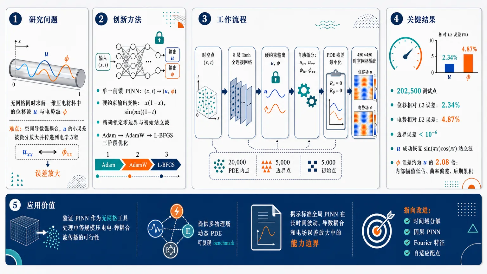
研究问题如何用一个统一的物理信息神经网络，在无网格条件下同时求解一维压电材料中的机械位移波与电势波；核心难点是两个场通过空间导数强耦合，位移的小误差会被微分放大并传递到电学方程，导致电势预测更不稳定。创新方法构建单一前馈 PINN，将时空坐标 ((x,t)) 直接映射为两个耦合场 ((u,ǎrphi))；Aha 点是用代数硬约束输出变换 (x(1-x)) 与 (sin(π x)(1-t)) 精确锁定边界和初始条件，再用 Adam–AdamW–L-BFGS 三阶段优化实现从快速下降、正则化细调到准牛顿精修的连续收敛。工作流程输入为一维空间-时间点 ((x,t))；8 层 Tanh 全连接网络输出原始位移和电势；输出层用硬约束函数生成满足零边界与初始站立波的 (u,ǎrphi)；自动微分计算 (uₜₜ,uₓₓ,ǎrphiₜₜ,ǎrphiₓₓ)；在 20,000 个 PDE 内点、5,000 个边界点、5,000 个初始点上最小化电-弹动力学残差；依次经过 Adam、AdamW、L-BFGS 训练；最终在 450×450 时空网格上输出完整位移场与电势场。关键结果在约 202,500 个测试点上，位移全局相对 L2 误差为 2.34%，电势误差为 4.87%；位移场成功恢复 (sin(π x)o̧s(π t)) 站立波结构，边界误差低至 (10⁻⁶) 以下；电势场误差约为位移的 2.08 倍，主要表现为内部区域 (0.2<x<0.8) 幅值低估、空间曲率偏差和后期时间误差累积。应用价值证明 PINN 可作为无网格工具处理中等规模压电电-弹耦合波传播问题，为多物理场动态 PDE 提供可复现 benchmark；同时揭示标准全局 PINN 在长时间波动、导数耦合和电场误差放大中的能力边界，为时间域分解、因果 PINN、Fourier 特征和自适应配点等改进方向提供依据。第一部分：核心概览 (Overview)
该研究将物理信息神经网络（PINN）用于一维压电耦合电-弹性动力学波传播，以应力-电荷形式同时学习机械位移与电势两个相互耦合场。核心贡献在于构建统一的前馈 PINN、采用硬约束输出变换精确施加边界/初始条件，并通过 Adam–AdamW–L-BFGS 三阶段优化提升收敛。模型在约 20 万测试点上取得位移 2.34%、电势 4.87% 的全局相对 L2 误差，证明 PINN 可作为无网格求解器处理中等规模耦合时变 PDE，但也揭示了电场误差放大、长时间误差累积和耦合刚性问题。
---
第二部分：结构化快速回顾
《A Unified Physics-Informed Neural Network for Modeling Coupled Electro- and Elastodynamic Wave Propagation Using Three-Stage Loss Optimization》（None，）
背景
PINN 通过将偏微分方程残差、边界条件和数据误差嵌入损失函数，在缺少标注数据时求解 PDE。近年 PINN 已广泛用于流体、热传导、固体力学和反问题，但对多物理场耦合系统，尤其是压电电-弹动力学耦合波传播的统一建模仍相对有限。
方法
建立一维线性压电模型，空间-时间域为 ([0,1]²)，网络输入为 ((x,t))，输出为位移 (u) 与电势 (ǎrphi)。采用 8 层、每层 180 个神经元、Tanh 激活的全连接网络，约 100,000 个可训练参数。边界与初始条件通过 (x(1-x)) 和 (sin(π x)(1-t)) 型硬约束实现。训练使用 20,000 个 PDE 内点、5,000 个边界点、5,000 个初始点，并采用 Adam、AdamW、L-BFGS 三阶段优化。
结果
在 450 × 450 评估网格、约 200,000 个测试点上，位移全局相对 L2 误差为 2.34%，电势误差为 4.87%。位移场较好恢复 (sin(π x)o̧s(π t)) 站立波结构；电势场出现幅值低估和空间曲率偏差，尤其在 (0.2<x<0.8) 区间更明显。
讨论
电势误差高于位移误差，主要来自耦合导数误差放大：电势残差含有 (uₓₓ) 或 (uₓ) 相关项，小的位移误差经空间微分后被放大并传递至电学方程。全局 PINN 同时拟合整个时空域，导致晚期时间误差更容易积累。
局限
标准全局 PINN 对长时间波传播、耦合本征系统和多场导数传播误差仍敏感。电势场精度明显低于机械位移，且与高阶 FEM 相比尚未达到同等精度。
结论
统一 PINN 可有效学习一维压电耦合波传播，并以少量结构化物理约束获得合理精度。硬约束显著降低边界和初始误差；三阶段优化优于单一优化器。未来改进方向包括时间域分解、因果/自回归 PINN、Fourier 特征、多尺度结构和自适应配点。
---
第三部分：逐章节冷凝解析 (Section-by-Section Condensing)
Abstract
Unified PINN formulation for coupled electro-elastodynamics
研究对象是一维耦合电-弹性动力学系统，物理背景为线性压电性的应力-电荷形式。模型同时预测机械位移 (u) 与电势 (ǎrphi)，而非单一物理场。摘要明确指出：*"This work studies the application of PINNs to solve a one-dimensional coupled electro-elastodynamic system modeling linear piezoelectricity in stress-charge form, governed by elastodynamic and electrodynamic equations."* 这一设定将 PINN 从常见单物理 PDE 推向多物理耦合 PDE。
Feedforward network maps space-time to two coupled fields
网络结构为前馈神经网络，输入是空间-时间坐标，输出是两个物理场。关键表述为：*"Our simulation employs a feedforward architecture, mapping space-time coordinates to mechanical displacement and electric potential."* 因此，神经网络学习的是全局函数映射
[
(x,t)mapsto (u,ǎrphi)
]
而不是逐时间步推进的数值格式。
Quantified accuracy on displacement and electric potential
全局相对 L2 误差达到位移 2.34%、电势 4.87%。摘要给出核心数值：*"Our PINN model achieved global relative L2 errors of 2.34 and 4.87 percent for displacement and electric potential respectively."* 该结果说明机械场比电学场更容易被 PINN 准确学习，二者误差约相差 2.08 倍。
Mesh-free promise with remaining stiffness and accumulation challenges
PINN 被验证为无网格求解器，但耦合系统中存在误差累积和刚性问题。摘要中的判断为：*"The results validate PINNs as effective mesh free solvers for coupled time-dependent PDE systems, though challenges remain regarding error accumulation and stiffness in coupled eigenvalue systems."* 这限定了贡献边界：可行但尚不能替代高精度传统求解器。
---
I Introduction
PINNs embed physical laws as soft loss constraints
物理信息神经网络通过把 PDE 作为损失函数中的软约束实现物理一致性。引言指出：*"PINNs integrate physical laws encoded as non-linear partial differential equations (PDEs) directly into the neural network training process via soft constraints embedded in the loss function."* 这里的 soft constraints 表示违反 PDE 不会被绝对禁止，而是通过损失惩罚逐步降低。
General PDE problem formulation defines the PINN target
一般 PDE 被写作：
[
F(u(z);γ)=f(z),quad zinØmega
]
[
B(u(z))=g(z),quad zinpartialØmega
]
其中 (z=[x₁,łdots,xd₋₁;t])。原始定义为：*"defined on the domain (ØmegainRd) with the boundary (partialØmega)."* 该框架把空间、时间、未知解、物理参数、边界算子统一纳入神经网络求解。
Neural network approximation replaces explicit discretized unknowns
未知解 (u(z)) 由带参数 (θ) 的神经网络近似：
[
hatu_θ(z)approx u(z)
]
原文表述为：*"The unknown solution (u(z)) is computationally predicted by a Neural Network, through a set of unknown vector parameters (θ), giving us the approximation (hatuθ(z)approx u(z))."* 这区别于 FEM/FDM 中在网格节点上求解离散未知量。
Training objective combines PDE, boundary, and data losses
总损失函数为：
[
θ^*=argmin_θłeft(
ømega_FL_F
+ømega_BL_B
+ømega_dLdₐₜₐ
i̊ght)
]
引言指出网络通过最小化加权损失学习：*"The Neural Network through (θ), approximates the values of (u(z)) by learning to minimize the weighted loss functions dependent on known data, differential equations and boundary conditions."* 这形成了 PINN 的核心训练逻辑。
PINN architecture consists of neural, physics, and feedback blocks
PINN 被划分为三个模块：神经网络模块、物理信息模块、反馈优化模块。引言表述为：*"Architecturally, PINNs consist of 3 blocks: a Neural Network, a physics informed network and a feedback mechanism."* 神经网络给出 (u)，物理模块自动微分并计算残差，反馈模块通过优化器降低综合残差。
Rapid growth since 2022 but multiphysics remains underdeveloped
PINN 自 2022 年以来增长迅速，应用覆盖 Navier–Stokes、弹塑性、热物理等。原文强调：*"The field of PINNs has experienced explosive growth since 2022, with applications spanning fluid mechanics (Navier-Stokes equations), solid mechanics (elasticity and plasticity), thermal physics."* 但多物理耦合仍不足：*"there is still relatively limited work on coupled multiphysics systems where several interacting fields must be learned simultaneously in a unified formulation."*
Linear piezoelectricity creates a derivative-coupled multiphysics challenge
线性压电性在应力-电荷形式下具有位移场与电势场耦合，耦合通过本构方程和空间导数发生。关键表述为：*"linear piezoelectricity in stress–charge form provides a challenging problem: the displacement and electric potential fields are coupled through constitutive equations and spatial derivatives."* 这正是电势误差容易放大的原因。
Contribution combines application and limitation analysis
研究贡献包括两层：一是将标准全连接 PINN 应用于一维压电多物理问题；二是分析机械场与电场行为差异及模型局限。引言明确给出：*"Our contribution is both an application of PINNs to a classical multiphysics problem and a detailed study of its strengths and limitations for coupled systems."*
---
II Simulation and Methodology
Methodology covers model, architecture, loss, sampling, optimization, hardware, validation, and theory
方法部分包含完整实验链条：数学模型、PINN 架构、损失残差、配点采样、三阶段优化、计算设施、误差评价和理论基础。该结构保证模型可复现性，尤其因为给出了网络尺寸、样本数、优化器超参数和硬件配置。
---
II-A Mathematical Model of 1D Linear Piezoelectricity
One-dimensional stress-charge piezoelectric model
系统为一维线性压电电-弹耦合系统，采用 Voigt 应力-电荷记号。原文为：*"we consider a one-dimensional coupled electro-elastodynamic system governed by the published linear piezoelectric equations in Voigt stress-charge notation."* 变量包括机械位移 (u(x,t))、电势 (ǎrphi(x,t))、应力 (σ)、电位移 (D)。
Elastodynamics follows Newton’s law
机械动力学方程为：
[
h̊o uₜₜ(x,t)=σₓ₍ₓ,t)
]
这代表质量密度乘加速度等于应力梯度。原文标题为：*"Elastodynamics (Newton’s Law)"*。其中 (h̊o) 是质量密度，(uₜₜ) 是位移对时间的二阶导数。
Stress-charge constitutive relation couples displacement and potential gradients
应力关系为：
[
σ(x,t)=c_Euₓ₍ₓ,t)-e₃₃ǎrphiₓ₍ₓ,t)
]
电位移关系为：
[
D(x,t)=e₃₃uₓ₍ₓ,t)+ǎrepsilon_Sǎrphiₓ₍ₓ,t)
]
原文标注为：*"Stress-Charge Relation"*，并定义了 (σ) 和 (D)。其中 (c_E) 为弹性刚度，(e₃₃) 为压电耦合系数，(ǎrepsilon_S) 为介电常数。这两式是机械-电学耦合的核心。
Electrical dynamics follows Gauss’s law with temporal inertia term
电学方程为：
[
ǎrepsilon₀ǎrphiₜₜ(x,t)=-Dₓ₍ₓ,t)
]
原文标题为：*"Electrical Equation (Gauss’s Law)"*。该式将电势二阶时间变化与电位移空间梯度联系起来，使问题成为电动力学-弹动力学耦合波系统，而非静态压电问题。
Domain uses clamped-shorted homogeneous Dirichlet boundaries
空间域为：
[
xin[0,1]
]
边界条件为：
[
u(0,t)=u(1,t)=0,quad ǎrphi(0,t)=ǎrphi(1,t)=0,quad forall tin[0,1]
]
原文称其为：*"homogeneous Dirichlet (clamped-shorted circuit) boundary conditions."* clamped 表示机械位移固定，shorted circuit 表示电势在边界短路为零。
Initial condition encodes the fundamental standing mode
初始条件为：
[
u(x,0)=sin(π x),quad uₜ₍ₓ,0)=0
]
[
ǎrphi(x,0)=0.5sin(π x),quad ǎrphiₜ₍ₓ,0)=0
]
原文称为：*"A synchronized standing-wave initialization encodes the fundamental mode."* 这意味着机械场和电势场共用同一空间模态 (sin(π x))，且初速度为零。
Potential inconsistency appears in the printed initial condition
方法部分公式文字出现不一致：电势初值行同时出现 (0.5) 和排版中的 (5sin(π x))。给定精确解为：
[
ǎrphiₑₓₐcₜ(x,t)=0.5sin(π x)o̧s(π t)
]
并且硬约束使用：
[
0.5sin(π x)(1-t)
]
因此一致解释应为 (ǎrphi(x,0)=0.5sin(π x))。原文精确解明确为：*" (ǎrphiₑₓₐcₜ(x,t)=0.5sin(π x)o̧s(π t))."*
Analytical standing-wave solution enables validation
精确解为：
[
uₑₓₐcₜ(x,t)=sin(π x)o̧s(π t)
]
[
ǎrphiₑₓₐcₜ(x,t)=0.5sin(π x)o̧s(π t)
]
原文说明：*"Both fields oscillate as synchronized standing waves, providing a rigorous benchmark for evaluating PINN accuracy."* 因此可以直接计算全局相对 L2 误差和逐点绝对误差。
---
II-B Physics-Informed Neural Network Architecture
Fully connected network maps two inputs to two outputs
网络输入为 ((x,t)in[0,1]²)，输出为 ((u,ǎrphi)inR²)。原文写道：*"A fully-connected feedforward neural network maps from ((x,t)in[0,1]²→(u,ǎrphi)inR²)."* 这是统一多输出 PINN，而不是为位移和电势分别训练两个独立网络。
Architecture uses 8 dense layers with 180 neurons each
网络包含 8 个 dense layers，隐藏层每层 180 个神经元，约 100,000 个可训练参数。原文给出：*"The network comprises 8 dense layers with 180 neurons per hidden layer, yielding approximately 100,000 trainable parameters."* 激活函数为 Tanh，结构为：
[
Input(2)i̊ghtarrow Hidden(180,Tanh)i̊ghtarrow ×7 Hidden(180,Tanh)i̊ghtarrow Output(2)
]
Xavier initialization and zero biases improve training stability
权重使用 Xavier uniform initialization，偏置初始化为零。原文为：*"Xavier uniform initialization is applied to weights, and biases are initialized to zero."* 这有助于避免深层 Tanh 网络初始阶段梯度过大或过小。
Hard constraints algebraically enforce boundaries and initial conditions
输出变换为：
[
ucₒₙₛₜᵣₐᵢₙₑd=x(1-x)uᵣₐw+sin(π x)(1-t)
]
[
ǎrphicₒₙₛₜᵣₐᵢₙₑd=x(1-x)ǎrphiᵣₐw+0.5sin(π x)(1-t)
]
原文解释：*"Rather than allowing the network to freely violate boundary and initial conditions, we algebraically enforce them via basis-function output transformations."* 这属于硬约束 PINN。
Boundary satisfaction is guaranteed by x(1-x)
因子 (x(1-x)) 在 (x=0,1) 处为零，保证网络原始输出不会破坏边界值。原文指出：*"The term (x(1-x)) vanishes at (x=0,1), enforcing Dirichlet boundary conditions."* 因此无论 (uᵣₐw)、(ǎrphiᵣₐw) 输出为何，边界均满足零位移和零电势。
Initial profile is encoded by sinusoidal decay term
(sin(π x)(1-t)) 与 (0.5sin(π x)(1-t)) 在 (t=0) 处对应初始条件，并随 (t) 增大衰减。原文为：*"The term (sin(π x)(1-t)) corresponds to the initial condition at (t=0) and decays away as (t) increases."* 这一做法使网络主要学习从初始解析形态到后续动力学演化的校正项。
Hard constraints reduce search space and improve convergence
方法部分强调硬约束显著改善训练：*"This hard-constraint approach dramatically reduces the total search space and improves convergence."* 与软惩罚相比，硬约束把边界/初始可行性直接嵌入函数形式，减少优化器在不可行解空间中的搜索。
---
II-C Loss Function and Physics Residuals
Automatic differentiation computes first and second derivatives
使用 PyTorch 自动微分计算空间与时间导数。原文为：*"PyTorch’s automatic differentiation engine computes spatial and temporal derivatives of the network output."* 一阶导数通过反向传播获得，二阶导数通过再次微分一阶导数获得：*"second derivatives are computed by differentiating first derivatives."*
Elastodynamic residual uses second derivatives of displacement and potential
机械残差为：
[
r₁₍ₓ,t)=h̊o uₜₜ-(c_Euₓₓ-e₃₃ǎrphiₓₓ)
]
原文标注为：*"elastodynamic."* 该残差来自 (h̊o uₜₜ=σₓ) 与 (σ=c_Euₓ₋ₑ₃₃ǎrphiₓ)，要求位移时间加速度与应力空间梯度一致。
Electrodynamic residual couples potential acceleration and displacement curvature
电学残差为：
[
r₂₍ₓ,t)=ǎrepsilon₀ǎrphiₜₜ+e₃₃uₓₓ+ǎrepsilon₀ǎrphiₓₓ
]
原文标注为：*"electrodynamic."* 该式中 (e₃₃uₓₓ) 将机械曲率直接注入电学残差，是电势误差受位移导数误差影响的关键通道。
Possible notation inconsistency in dielectric coefficient
本构关系中电位移写为：
[
D=e₃₃uₓ₊ǎrepsilon_Sǎrphiₓ
]
但电学残差写为：
[
r₂₌ǎrepsilon₀ǎrphiₜₜ+e₃₃uₓₓ+ǎrepsilon₀ǎrphiₓₓ
]
即空间项使用 (ǎrepsilon₀) 而非前述 (ǎrepsilon_S)。原文分别写为：*"dielectric permittivity (ǎrepsilon_S)"* 与 *"(r₂₍ₓ,t)=ǎrepsilon₀ǎrphiₜₜ+e₃₃uₓₓ+ǎrepsilon₀ǎrphiₓₓ)."* 这可能是符号混用或简化设定，影响严格物理一致性。
Total loss combines PDE, boundary, and initial terms
总损失为：
[
Lₜₒₜₐₗ=
LPDE+
wBCLBC+
wICLIC
]
原文称为：*"The total loss combines three terms with physics-aware weighting scheme well established in previous PINNs models."* 权重设为：
[
wBC=500,quad wIC=300
]
PDE loss averages squared residuals over interior points
PDE 损失为：
[
LPDE=
frac1N_dsumᵢ₌₁N_dłeft(r₁⁽ⁱ⁾²+r₂⁽ⁱ⁾²i̊ght)
]
这表示在所有内点上同时惩罚机械和电学残差。原文公式给出：*"(LPDE=frac1N_dsumᵢ₌₁N_d(r₁⁽ⁱ⁾²+r₂⁽ⁱ⁾²))."*
Boundary and initial losses remain included despite hard constraints
边界损失为：
[
LBC=
frac1N_bsumⱼ₌₁N_b[u⁽j⁾²+ǎrphi⁽j⁾²]
]
初始损失为：
[
LIC=
frac1Nᵢsumₖ₌₁Nᵢ
[(u⁽k⁾-uₑₓₐcₜ⁽k⁾)²⁺
(ǎrphi⁽k⁾-ǎrphiₑₓₐcₜ⁽k⁾)²]
]
尽管输出层已硬约束边界/初值，仍计算相应损失用于训练监控与额外约束。原文说明损失包含：*"known data, differential equations and boundary conditions."*
---
II-D Training Data and Collocation Sampling
Interior PDE points use 20,000 random samples
内点数量为：
[
N_d=20,000
]
在 ([0,1]²) 上均匀随机采样。原文列出：*"Interior PDE points: (N_d=20,000) uniformly random samples in ([0,1]²)."* 这些点用于估计 PDE 残差损失。
Boundary points use 5,000 samples on x = 0 or x = 1
边界点数量为：
[
N_b=5,000
]
其中 (xin0,1)，(tin[0,1])。原文为：*"Boundary points: (N_b=5,000) random samples with (xin0,1, tin[0,1])."*
Initial condition points use 5,000 samples at t = 0
初始点数量为：
[
Nᵢ₌₅,000
]
其中 (xin[0,1])，(t=0)。原文为：*"Initial condition points: (Nᵢ₌₅,000) random samples with (xin[0,1], t=0)."*
Mini-batch residual evaluation reduces computational cost
每次训练迭代中，PDE 内点残差使用：
[
Nbₐₜcₕ=3,000
]
随机小批量。原文指出：*"During each training iteration, the interior PDE residual is evaluated on a mini-batch of (Nbₐₜcₕ=3,000) randomly selected points, reducing computational cost while maintaining gradient quality."* 边界和初始损失则使用完整数据集：*"Boundary and initial condition losses are evaluated on the full datasets for consistency."*
---
II-E Three-Stage Loss Optimization Strategy
Three-stage optimization addresses feasibility and memory constraints
训练采用 Adam → AdamW → L-BFGS 三阶段优化。原文说明目的为：*"we use a three-stage optimization technique to take into account memory constraints and to make it computationally feasible."* 三阶段分别承担快速下降、正则化细调和二阶精修。
Stage 1 Adam uses 18,000 epochs and learning rate 2e-3
第一阶段为 Adam，最大 18,000 epochs，学习率：
[
α=2×10⁻³
]
动量参数：
[
β₁₌₀.9,quad β₂₌₀.999
]
原文为：*"The first stage employs Adam optimization with learning rate (α=2×10⁻³) and momentum parameters (β₁₌₀.9, β₂₌₀.999)."*
Adam stage enables rapid descent from random initialization
Adam 用于从随机初始化快速降低损失。原文描述为：*"Adam is well-suited for rapid descent from random initialization that is inputed into the model and quickly reduces the loss."* 早停条件为连续 2,000 epochs 无改善：*"Early stopping is triggered if the loss stagnates for 2,000 consecutive epochs without improvement."*
Stage 2 AdamW uses 12,000 epochs with weight decay
第二阶段为 AdamW，最大 12,000 epochs，学习率：
[
α=8×10⁻⁴
]
L2 weight decay：
[
łambda=1.5×10⁻⁵
]
原文为：*"The second stage uses AdamW with learning rate (α=8×10⁻⁴) and L2 weight decay coefficient (łambda=1.5×10⁻⁵)."*
AdamW decoupled weight decay improves regularization
AdamW 通过将权重衰减与梯度更新解耦改善正则化。原文指出：*"AdamW decouples weight decay from the gradient-based update, providing better regularization."* 该阶段用于降低过拟合和提升泛化：*"This stage fine-tunes the solution, reducing overfitting ... and improving generalization."* 早停约在 1,500 epochs 后触发：*"Early stopping at (sim 1,500) epochs again allows adaptive termination."*
Stage 3 L-BFGS uses 600 iterations and second-order curvature information
第三阶段为 L-BFGS，共 600 iterations。它是准牛顿二阶方法，用有限历史近似 Hessian。原文为：*"The final stage applies L-BFGS, a quasi-Newton second-order method that approximates the Hessian using a limited history of 80 gradient steps."* 历史长度为 80。
Strong Wolfe line search and stringent tolerances target high precision
L-BFGS 使用 strong Wolfe 线搜索，并设置：
[
|nablaL|<10⁻¹⁰,quad ΔL<10⁻¹⁰
]
原文为：*"L-BFGS line search employs strong Wolfe conditions to ensure convergence to high precision."* 以及：*"Convergence tolerances are set to (|nablaL|<10⁻¹⁰) and (ΔL<10⁻¹⁰), driving the solution toward machine precision."*
---
II-F Computational Infrastructure and Implementation Details
Training uses dual NVIDIA T4 GPUs with 32 GB total VRAM
硬件为双 NVIDIA T4 GPU，总显存 32 GB，通过 PyTorch DataParallel 分布式训练。原文为：*"Training was conducted on dual NVIDIA T4 GPUs (32 GB total VRAM) distributed via PyTorch DataParallel."*
DataParallel distributes mini-batches and synchronizes gradients
PyTorch 自动管理双卡，将 mini-batch 分配到两张 GPU，并在每次反向传播时同步梯度。原文指出：*"The two T4s are automatically managed by PyTorch, distributing mini-batches across both devices and synchronizing gradients at each backward pass."*
Software stack uses PyTorch 1.13+ and torch.autograd
软件框架为 PyTorch 1.13+，自动微分依赖 torch.autograd。原文列出：*"Deep Learning Framework: PyTorch 1.13+"* 和 *"Automatic Differentiation: PyTorch’s torch.autograd function for computing spatial and temporal derivatives."*
Single precision float32 is used
数值精度为 float32。原文为：*"Precision: Single-precision floating-point (float32)."* 这降低显存成本，但对于二阶导数残差和 L-BFGS 高精度目标，可能限制极限精度。
Second derivatives require create_graph=True
空间导数通过自动微分计算，二阶导数需要保留计算图。原文说明：*"Spatial derivatives are computed via automatic differentiation with create_graph=True, enabling second-order derivative computation."* 这显著增加显存占用，是 PINN 训练成本较高的重要原因。
All collocation points and parameters are loaded onto GPU
所有配点和网络参数训练时加载到 GPU。原文为：*"All collocation points and network parameters are loaded onto GPU at training time for efficiency."* 每阶段结束后清理缓存：*"Cache is cleared after each optimization stage to prevent memory fragmentation."*
Kaggle is used as primary execution platform
运行平台为 Kaggle。原文写道：*"we have used Kaggle as the primary platform for the running the unified code."* 这表明实验依赖云端 GPU 环境而非本地高性能集群。
---
II-G Validation and Error Metrics
Evaluation grid contains 450 × 450 points
模型在密集网格上评估：
[
450×450=202,500
]
约 200,000 个测试点。原文为：*"Model predictions are evaluated on a dense (450×450) grid covering the entire space-time domain ([0,1]²), yielding approximately 200,000 test points."*
Global relative L2 error measures full-domain accuracy
全局相对 L2 误差为：
[
eᵣₑₗ,L₂=
frac|uₚᵣₑd-uₑₓₐcₜ|₂
|uₑₓₐcₜ|₂
]
原文解释：*"where (|ḑot|₂) denotes the Euclidean norm."* 该指标衡量整个时空域内预测场与精确场的相对偏差。
Pointwise absolute errors assess local accuracy
逐点绝对误差为：
[
|uₚᵣₑd(x,t)-uₑₓₐcₜ(x,t)|
]
原文为：*"Pointwise absolute errors ... are also reported as functions of (x) and (t) to assess local accuracy."* 这能揭示边界、初始时刻、中间区域和晚期时刻误差分布差异。
---
II-H Theoretical Foundations
PINN formulation follows Raissi and subsequent SciML literature
训练循环、自动微分和损失设计主要基于 Raissi 等及后续研究。原文为：*"The core PINN training loop, automatic differentiation workflow, and loss function design in this study primarilty follow the formulation established by Raissi et al. and extended by subsequent studies of S. Cuomo et al. and J. Han et al."*
Three-stage optimization is grounded in standard optimization practice
Adam、AdamW、L-BFGS 的组合被描述为优化文献中成熟做法。原文为：*"The three-stage optimization approach (Adam, AdamW, L-BFGS) is well-established in the optimization literature and has become standard practice in neural network training across many domains."*
Hard-constraint basis functions draw from exact boundary imposition methods
硬约束基函数技术来自 PINN 中精确施加边界条件的方法。原文为：*"The hard-constraint basis-function technique for encoding boundary and initial conditions ... is adapted from constraint-enforcing methods documented in [21] and similar penalty-free approaches in PINNs."*
Sampling, weighting, clipping, scheduling, and early stopping are conventional
配点采样、损失加权、GPU 管理、梯度裁剪、学习率调度和早停均属于常规工程方法。原文指出：*"The collocation point sampling strategy and loss weighting scheme are conventional approaches adopted across the PINNs literature."* 以及：*"Gradient clipping, learning rate scheduling, and early stopping criteria are textbook optimization techniques not specific to this work."*
---
III Results and Discussion
PINN is trained and evaluated over the full space-time domain
模型训练于一维耦合压电系统，并在 450 × 450 网格上测试。原文为：*"We trained the PINN on the 1D coupled piezoelectricity system and tested it on a (450×450) grid covering the full space-time domain."* 结果覆盖完整时间区间 ([0,1])。
Both mechanical displacement and electric potential are captured reasonably
总体结果显示网络能较好捕捉两个物理场。原文判断为：*"The results show that the network captures both the mechanical displacement (u) and electrical potential (ǎrphi) reasonably well across the entire time interval."* 但后续细节显示二者精度存在明显差异。
---
III-A Model Results
Displacement predictions recover sinusoidal spatial and temporal structure
在六个时间点 (t=0.0,0.2,0.4,0.6,0.8,1.0)，位移预测复现 (sin(π x)) 空间结构和 (o̧s(π t)) 时间行为。原文为：*"At all six time points examined (t = 0.0, 0.2, 0.4, 0.6, 0.8, 1.0), the network correctly reproduces the sinusoidal spatial structure (sin(π x)) and temporal behavior (o̧s(π t))."*
Displacement boundary conditions remain zero throughout
位移在 (x=0) 和 (x=1) 处保持为零。原文指出：*"The boundary conditions are naturally satisfied, with zero displacement at (x=0) and (x=1) throughout."* 这来自硬约束输出变换中的 (x(1-x))。
Standing-wave displacement learning is the main success case
位移场核心结论为网络有效学习站立波。原文直接表述：*"The core observation is that the PINN learns the standing-wave structure effectively."* 这说明标准 Tanh MLP 对单一基本模态的机械波表示能力足够。
Electric potential shows larger discrepancies than displacement
电势预测相对解析解存在显著偏差。原文为：*"the electric potential exhibits significant discrepancies with the exact analytical solution."* 预测曲线相比灰色虚线精确解出现幅值降低和空间曲率改变：*"The PINN-predicted electric potential ... demonstrates reduced amplitude and altered spatial curvature compared to the exact solution."*
Electric potential discrepancies concentrate in the interior domain
电势偏差尤其发生在：
[
0.2<x<0.8
]
原文指出：*"particularly in the region (0.2<x<0.8)."* 这与边界误差被硬约束压低相一致，误差主要在内部空间区域累积。
Potential predictions are better at early time and worse later
早期 (t=0.0) 时预测接近精确解，但随时间推进偏差增大。原文为：*"Early in time ((t=0.0)), the PINN predictions approach the exact solution, but as time progresses, the divergence becomes more pronounced."* 这体现全局 PINN 的非因果训练在长期时间动态中容易出现误差累积。
Displacement initial errors are below 1e-4
图 2(a) 显示位移逐点绝对误差采用对数尺度，初始时刻误差极小：
[
<10⁻⁴
]
原文为：*"Initial errors at (t=0) are extremely small (below (10⁻⁴)) due to the hard-enforced initial conditions."*
Displacement mid-time errors reach 1e-2 to 1e-1
中间时间段误差逐渐增大，到 (tapprox0.4-0.6) 达到：
[
10⁻²sim10⁻¹
]
原文为：*"Errors increase gradually through the middle of the time interval, reaching (10⁻²) to (10⁻¹) by (tapprox0.4–0.6)."*
Late-time displacement errors saturate rather than diverge
后期误差没有无界增长，而是稳定。原文为：*"At later times, errors stabilize rather than grow unbounded, suggesting a saturation effect."* 这说明模型虽然有累积误差，但未出现完全不稳定。
Boundary errors are suppressed below 1e-6
在空间边界 (x=0,1)，绝对误差降至：
[
<10⁻⁶
]
原文为：*"absolute errors drop below (10⁻⁶)."* 这直接验证硬约束基函数对边界误差的强力控制。
Electric potential errors are 1–2 orders larger than displacement errors
电势误差结构类似位移，但量级更大，通常高出 1–2 个数量级。原文为：*"The error structure mirrors displacement but with larger magnitude—typically 1–2 orders higher."* 这说明耦合残差中的导数项显著影响电场学习。
Electric potential initial errors are below 1e-5
电势在 (t=0) 的初始误差低于：
[
10⁻⁵
]
原文为：*"Initial errors at (t=0) are particularly small (below (10⁻⁵)), consistent with the smaller magnitude of (ǎrphi)."* 这与初始硬约束和电势幅值 (0.5) 有关。
Global L2 errors quantify final accuracy
全域积分后得到：
[
eᵣₑₗ⁽u⁾=2.34×10⁻²
]
[
eᵣₑₗ⁽ǎrphⁱ⁾=4.87×10⁻²
]
原文总结为：*"yielding global relative L2 errors"*，并在摘要中明确为 2.34% 与 4.87%。电势误差约为位移误差的 2.08 倍。
Claimed comparison to FEM is cautious
结果未达到高阶 FEM 精度，但符合耦合时变 PDE 上的标准 PINN 表现。原文为：*"While not reaching the level of high-order finite element methods (FEM), these errors represent standard PINN performance on coupled, time-dependent PDE systems."* 该表述定位了方法的实用但非最优数值精度。
Reported equation formatting contains numerical typo
结果部分误差公式排版出现明显错误：
[
2.34×10⁻²
]
被呈现为类似 (34×0⁻²)，电势误差类似 (87×0⁻²)。摘要和文字说明确认正确值为 2.34% 与 4.87%。原文摘要为：*"global relative L2 errors of 2.34 and 4.87 percent."*
---
III-B Physical Interpretation
Electric potential errors arise from coupled multiphysics PINN limitations
电势误差高于位移误差，被归因于标准 PINN 处理耦合多物理系统时的内在限制。原文指出：*"The elevated errors in the electric potential field, particularly relative to displacement accuracy, arise from fundamental limitations inherent to the PINN formulation when applied to coupled multiphysics systems."*
Global space-time training creates an accuracy trade-off
传统时间步进方法按时间顺序推进，而 PINN 要在整个时空域同时满足控制方程。原文为：*"unlike traditional time-stepping methods that solve the problem sequentially in time, the PINN formulation requires the governing equations to be satisfied simultaneously across the entire space-time domain."* 因此网络会优化整体残差，而非每个时刻逐步纠错。
Finite network capacity prevents uniform pointwise accuracy
有限网络容量导致无法在所有空间和时间点同时达到完美精度。原文指出：*"This constraint creates an inherent trade-off in which the network cannot achieve perfect accuracy at all points and times simultaneously."* 其中网络容量描述为 180 hidden neurons：*"The network’s finite capacity (180 hidden neurons) is therefore allocated to minimize the total loss rather than to achieve uniform pointwise accuracy throughout the entire domain."*
Initial and boundary fitting is prioritized over late-time interior accuracy
优化过程更重视初始条件和边界值，而允许内部晚期误差累积。原文为：*"The network prioritizes fitting initial conditions and boundary values while allowing interior late time errors to accumulate."* 这解释了图中早期和边界误差小、后期内部误差大的模式。
Coupling relation transmits displacement derivative errors to electrical field
电位移本构关系为：
[
D=e₃₃uₓ₊ǎrepsilon_Sǎrphiₓ
]
原文指出：*"the electric potential field depends directly on spatial derivatives of the displacement field through the constitutive relation."* 因此电势场不是独立学习的，它受到位移梯度精度约束。
Differentiation amplifies high-frequency error components
即使位移误差较小，空间微分也会放大误差中的高频成分和振荡。原文为：*"Differentiation amplifies high-frequency components and oscillations in the error, such that even small displacement inaccuracies lead to larger derivative errors."* 这是 PINN 在导数耦合 PDE 中常见的误差放大机制。
Displacement 2% error leads to electric potential above 4% error
位移约 2% 的误差导致电势误差超过 4%。原文为：*"displacement errors of approximately 2% lead to electric potential errors exceeding 4%, demonstrating how coupling creates error amplification between fields."* 这与实际全局误差 2.34% 和 4.87% 一致。
Limitations are described as fundamental to standard global PINNs
这些现象被归类为标准全局 PINN 的基本限制，而非简单实现错误。原文为：*"These phenomena are well-documented in recent PINN literature and represent fundamental limitations of standard global PINNs rather than implementation flaws."*
---
III-C Comparison with Baseline Approaches
Three-stage optimization converges better than single optimizer training
三阶段优化相对单优化器更优。原文判断为：*"The three-stage optimization strategy (Adam, AdamW, L-BFGS) employed here provides superior convergence compared to single-optimizer training."*
Adam alone plateaus near 1e-2 after 18,000 epochs
第一阶段 Adam 在 18,000 epochs 后损失平台约为：
[
10⁻²
]
原文为：*"Adam alone (stage 1) achieved a loss plateau of approximately (10⁻²) after 18,000 epochs."*
AdamW reduces loss to about 1e-3
第二阶段 AdamW 将损失进一步降至：
[
sim10⁻³
]
原文为：*"Subsequent AdamW refinement (stage 2) reduced this to (sim10⁻³)."*
L-BFGS provides final polishing with diminishing returns
最终 600 iterations 的 L-BFGS 将参数推向局部最优，但边际收益减小。原文为：*"Final L-BFGS polishing (600 iterations) drove convergence toward the loss landscape’s local optimum, though with diminishing returns."*
Optimization schedule balances cost and accuracy
该策略在计算性能和解精度之间取得实用平衡。原文总结为：*"This approach offers a practical balance between computational performance and solution accuracy."*
---
III-D Boundary Condition Enforcement
Hard constraints sharply suppress boundary errors
图 2(a-b) 的显著特征是边界 (x=0) 和 (x=1) 处误差急剧降低。原文为：*"A notable feature of Figs. 2 (a-b) is the sharp suppression of errors at spatial boundaries ((x=0) and (x=1))."*
Boundary absolute errors drop to 1e-6 or below
边界绝对误差达到：
[
10⁻⁶ or below
]
原文为：*"where absolute errors drop to (10⁻⁶) or below."* 该数值证明硬约束效果优于单纯损失惩罚。
Hard-constraint basis functions outperform penalty-based soft constraints at boundaries
硬约束基函数相比软惩罚约束显著降低边界误差。原文为：*"This demonstrates the effectiveness of hard-constraint basis-function enforcement ... in dramatically reducing boundary errors compared to penalty-based soft constraints."*
Model capacity is redirected to interior accuracy
硬约束自动保证边界满足，使模型容量可用于内部区域拟合。原文为：*"Hard constraints allocate model capacity to interior accuracy while automatically guaranteeing boundary satisfaction."* 这是硬约束 PINN 的主要优势之一。
---
III-E Implications and Future Work
PINNs can learn moderate-scale coupled electro-elastodynamic systems
结果表明 PINN 能以合理精度学习中等规模耦合系统。原文为：*"The results demonstrate that PINNs can successfully learn coupled electro-elastodynamic systems with reasonable accuracy on moderate-scale problems."*
Long-time horizon remains difficult
时间相关误差增长和耦合敏感性表明长时间问题仍是 PINN 局限。原文为：*"the time-dependent error growth and sensitivity to field coupling highlight current PINN limitations for long-time horizon problems."*
Temporal domain decomposition can reduce error accumulation
未来方向之一是时间域分解 PPINN，将 ([0,1]) 分成多个子区间，并训练不同网络加连续性约束。原文为：*"Temporal domain decomposition (PPINN): Partitioning ([0,1]) into sub-intervals and training separate networks with continuity constraints could reduce error accumulation."*
Autoregressive PINNs can exploit causal structure
自回归 PINN 将网络视为时间步进算子，而非全局时空函数。原文为：*"Autoregressive PINNs: Treating the network as a time-stepping operator (current to next time step) rather than a global function could leverage causal structure."* 这有助于缓解全局 PINN 的非因果训练问题。
Enhanced architectures may better represent oscillatory solutions
Fourier 特征、周期激活函数或多尺度分解可能更适合振荡解。原文为：*"Enhanced architectures: Periodic activation functions (Fourier features) or multi-scale decomposition might better represent oscillatory solutions."*
Adaptive collocation can focus learning on high-error regions
自适应配点可将采样点集中在高误差区域。原文为：*"Adaptive collocation: Concentrating collocation points in high-error regions or using importance sampling could improve learning efficiency."*
Proposed extensions remain outside current scope
这些方向仍属活跃研究，未在当前实验中实现。原文为：*"These extensions remain subjects of active research and are beyond the scope of this work."*
---
IV Conclusions
PINN is applied to one-dimensional stress-charge piezoelectricity
结论重申研究对象为应力-电荷形式的一维压电系统。原文为：*"the application of Physics-Informed Neural Networks (PINNs) to a coupled one-dimensional piezoelectric system expressed in the stress-charge was studied."* 该系统结合压电耦合电效应和弹性波传播。
Analytical standing-wave solution makes the problem a controlled benchmark
问题具有解析站立波解，因此可作为明确但有挑战性的 benchmark。原文为：*"The problem presents an analytical standing-wave solution and combines electrostatic effects via piezoelectric coupling with elastodynamic wave propagation."* 以及：*"it provides a clear but challenging benchmark for studying how well a typical PINN can approximate interacting physical fields in both space and time."*
Architecture is simple, reproducible, and interpretable
网络为全连接前馈结构，8 个隐藏层，Tanh 激活，从空间-时间坐标预测位移和电势。结论描述为：*"The PINN architecture used here is simple and intuitive wherein a fully connected feedforward network with eight hidden layers and tanh activations is trained to predict both displacement and electric potential from space–time coordinates."*
Hard constraints and residual losses jointly impose physics
边界与初始条件通过输出层硬约束，物理规律通过残差输入训练。原文为：*"Boundary and initial conditions are enforced through hard constraints in the output layer while the physics underlying the effect is fed to the system using residuals."*
Three-stage training balances descent, mitigation, and reliability
训练采用 Adam、AdamW、L-BFGS。原文为：*"Training is carried out in three stages, Adam, AdamW, and L‑BFGS to balance rapid initial descent, error mitigation, and reliability."* 这对应快速下降、正则化细调和准牛顿精修。
Both fields learn correct spatial mode and temporal oscillation
两个场都学习到正确空间模态和时间振荡。原文为：*"For both fields, the network learns the correct spatial mode and temporal oscillation."* 边界和初始误差极小：*"the hard constraints keep boundary and initial errors extremely small."*
Global relative L2 errors are a few percent
全局相对 L2 误差为几个百分点。原文总结为：*"Global relative (L₂) errors are on the order of a few percent, which is reasonable for a neural approximation of a multiphysics problem."* 对应数值为位移 2.34%、电势 4.87%。
Weaknesses include time-growing errors and amplitude underestimation
实验揭示误差随时间增长，后期振荡幅值被低估，电场误差大于机械场误差。原文为：*"errors grow over time, and the amplitude of the solution is noticeably underestimated in later stages of the oscillation, and the electrical field exhibits larger errors than the mechanical field."*
Electrical error sensitivity is attributed to displacement coupling
这些误差被归因于 PINN 公式本身和耦合方程对位移小误差的敏感性。原文为：*"These effects can be attributed to the nature of the PINN formulation and the sensitivity of the coupled equations to small errors in displacement."*
PINNs are not immediate FEM replacements for coupled systems
结论明确指出 PINN 尚不能直接替代经典 FEM。原文为：*"While PINNs are not yet an immediate replacement for classical FEM solvers in a scenario consisting of coupled systems."* 但在精心设计和训练下仍是灵活工具：*"with careful design and training, PINNs can indeed offer a flexible tool for studying multiphysics wave propagation with reasonable accuracy."*
---
第四部分：深度理解与语言支持 (Understanding & Nuance)
1. 术语解析
Physics-informed neural networks
Physics-informed neural networks 指把物理方程本身作为训练约束的神经网络，不只是用数据拟合输入输出。语境中关键句为：*"integrates physical laws in the form of partial differential equations directly into the NN through soft constraints in the loss function."*
微妙点：physics-informed 不等于严格物理满足。若是 soft constraint，PDE 只是损失项，训练后通常只近似满足。
Soft constraints
Soft constraints 是通过损失函数惩罚违反条件，而不是从函数形式上保证条件永远成立。引言中的表述为：*"soft constraints embedded in the loss function."*
微妙点：soft constraint 的效果依赖权重 (wBC,wIC)、优化器和采样点；即使损失很小，也不保证所有点严格满足。
Hard constraint implementation
Hard constraint implementation 指通过代数输出变换把边界/初始条件嵌入网络输出。语境中为：*"we algebraically enforce them via basis-function output transformations."*
微妙点：hard constraint 通常优于 soft constraint 的边界精度，但可能限制函数表达空间；若构造不当，会引入不自然的时间/空间偏置。例如 ((1-t)) 线性衰减项只保证 (t=0)，不代表真实时间演化。
Collocation points
Collocation points 是用于评估 PDE 残差的采样点，不是传统网格节点。语境中为：*"Training data consist of randomly sampled collocation points in the space-time domain."*
微妙点：PINN 的“数据”很多时候不是观测数据，而是采样出来要求满足 PDE 的点。采样分布会显著影响训练质量。
Coupled multiphysics systems
Coupled multiphysics systems 指多个物理场相互作用，不能分开独立求解。语境中为：*"several interacting fields must be learned simultaneously in a unified formulation."*
微妙点：耦合问题难点不只是输出维度增加，而是一个场的导数误差会进入另一个场的控制方程，导致误差传播与放大。
---
2. 疑难查证
为什么电势误差比位移误差大？
压电系统中的电势不是一个孤立变量。本构关系：
[
D=e₃₃uₓ₊ǎrepsilon_Sǎrphiₓ
]
说明电位移 (D) 同时依赖位移梯度 (uₓ) 和电势梯度 (ǎrphiₓ)。如果 PINN 学到的位移是：
[
uPINN=uₑₓₐcₜ+δ u
]
那么梯度为：
[
uₓ,PINN=uₓ,ₑₓₐcₜ+δ uₓ
]
即使 (δ u) 很小，(δ uₓ) 也可能很大，尤其当误差含有局部振荡或高频成分时。微分运算天然放大高频误差。例如：
[
δ u=ϵsin(kx)
]
则：
[
δ uₓ₌ϵ ko̧s(kx)
]
当 (k) 大时，导数误差比原误差大 (k) 倍。电势方程含有 (uₓₓ) 或 (uₓ) 耦合项，因此机械误差会通过导数进入电学残差，导致电势误差高于位移误差。
为什么全局 PINN 容易出现晚期时间误差？
传统时间步进方法从 (t=0) 开始，一步一步推进；每一步只需保证短时间局部准确。全局 PINN 则一次性学习：
[
(x,t)mapsto(u,ǎrphi),quad tin[0,1]
]
训练目标是在整个时空域平均降低残差。这样会出现优化折中：初始点、边界点、内点、不同时间点都在竞争网络容量。如果初始/边界权重很大，网络会优先满足这些条件；晚期内部区域没有因果递推保护，误差可能逐渐增大。
为什么硬约束能显著降低边界误差？
以位移为例：
[
ucₒₙₛₜᵣₐᵢₙₑd=x(1-x)uᵣₐw+sin(π x)(1-t)
]
当 (x=0)：
[
x(1-x)=0,quad sin(0)=0
]
所以：
[
ucₒₙₛₜᵣₐᵢₙₑd(0,t)=0
]
当 (x=1)：
[
x(1-x)=0,quad sin(π)=0
]
所以：
[
ucₒₙₛₜᵣₐᵢₙₑd(1,t)=0
]
无论神经网络原始输出 (uᵣₐw) 多差，边界值都严格为零。因此边界误差能降到 (10⁻⁶) 或更低，主要受浮点数和计算精度限制。
为什么 L-BFGS 常用于 PINN 最后阶段？
Adam 类优化器适合快速下降，但在 PINN 的复杂损失景观中容易停在平台区。L-BFGS 使用历史梯度近似曲率信息，相当于估计损失函数局部形状，因此更适合后期精修。三阶段逻辑是：
- Adam：从随机初始化快速降损失；
- AdamW：加入权重衰减，提高泛化和稳定性；
- L-BFGS：利用二阶近似进一步逼近局部极小值。
该研究中 Adam 后损失约 (10⁻²)，AdamW 后约 (10⁻³)，L-BFGS 继续精修但收益递减。
---
第五部分：创新评估与关联 (Synthesis & Novelty)
1. 创新性判断
Novelty lies in unified PINN treatment of coupled 1D piezoelectric wave propagation
近 2–5 年 PINN 文献大量集中在 Navier–Stokes、热传导、弹性、反问题、化学动力学等单物理或弱耦合问题。该研究的新颖性在于把线性压电应力-电荷模型作为统一 PINN benchmark，同时预测 (u) 与 (ǎrphi)，并直接处理电-弹耦合残差。相对于单独求解弹性波或静电场，这里需要网络同时满足：
[
h̊o uₜₜ=c_Euₓₓ-e₃₃ǎrphiₓₓ
]
[
ǎrepsilon₀ǎrphiₜₜ+e₃₃uₓₓ+ǎrepsilon₀ǎrphiₓₓ=0
]
多场之间通过二阶导数耦合，难度明显更高。
Hard constraints are systematically combined with multiphysics residual training
硬约束方法本身并非全新，但与压电耦合波传播问题结合，提供了清晰可复现实验。边界误差降至 (10⁻⁶) 以下，初始误差低于 (10⁻⁴) 或 (10⁻⁵)，说明硬约束对多物理波问题非常有效。贡献不在于发明硬约束，而在于展示其在耦合电-弹波系统中的实际收益。
Three-stage optimization is applied as a practical convergence recipe
Adam–AdamW–L-BFGS 组合不是理论上全新的优化算法，但在该耦合系统中形成了实用训练流程。损失从 Adam 的约 (10⁻²)，经 AdamW 降至约 (10⁻³)，再由 L-BFGS 精修。相对于单阶段 Adam，这提供了更稳定的 PINN 训练路径。
Important novelty is diagnostic rather than purely algorithmic
真正有价值的创新点在于诊断标准 PINN 在耦合系统中的失败模式：
- 电势误差明显高于位移误差；
- 内部区域 (0.2<x<0.8) 偏差更大；
- 晚期时间误差增长；
- 位移导数误差通过压电耦合项放大到电学场。
这类分析比单纯报告低误差更有学术意义，因为它解释了为什么多物理 PINN 比单物理 PINN 更难。
Solved gap: simultaneous learning of interacting mechanical and electrical fields
前人工作中大量 PINN 处理单一 PDE 或单一场变量，或者在反问题中估计参数。该研究解决的空白是：在统一网络中同时学习两个由本构关系和空间导数强耦合的动态场，并量化二者误差差异。该 benchmark 可作为未来改进架构、时间域分解 PINN、自适应配点和 Fourier 特征 PINN 的参照点。
Limitations weaken claims of methodological breakthrough
该研究不是 PINN 理论突破，也未提出新的损失自适应机制、新架构或严格收敛证明。材料参数具体数值未充分列出，若精确物理可复现性是目标，这是明显不足。电学残差中 (ǎrepsilon₀) 与本构式中 (ǎrepsilon_S) 的符号不一致也削弱了物理严谨性。创新级别更接近应用型 benchmark + 误差机制分析，而非基础算法创新。
Field position
该研究位于 PINN 多物理扩展方向的早期应用层，贡献地位可概括为：
不是替代 FEM 的高精度求解器证明，而是一个清晰展示标准 PINN 能力边界的耦合压电波传播 benchmark。
其最有价值的结论是：PINN 可在中等规模耦合系统中达到几个百分点误差，但电-弹导数耦合会系统性放大电势误差，未来必须借助时间域分解、因果训练、自适应采样或频谱增强结构来提升长期稳定性与多场一致性。
-
02
📊 含图深析
📄 摘要：提出基于机器学习的准粒子干涉成像判别流程，从 Ising 超导的 QPI 图样中识别配对对称性，避免仅靠人工比较散射纹理来定性判断，非常规超导的谱学鉴别更自动化。
💡 亮点：QPI 成像加机器学习可直接判别 Ising 超导配对对称性。把超导表征从人工读图推进到数据驱动判别。
📖 展开分析 + 配图
研究问题如何利用 Ising 超导中的准粒子干涉（QPI）图样，自动识别超导配对对称性，而不是依赖人工目测比对散射纹理。创新方法将 QPI 成像与机器学习结合，把“图样判读”转化为数据驱动的分类任务，实现对不同配对对称性的自动识别，核心亮点是把传统定性分析升级为可训练的谱学判别流程。工作流程输入超导态的 QPI 成像图样；提取其中的散射纹理与空间特征；送入机器学习模型进行训练与分类；输出对应的配对对称性标签，用于判定超导配对类型。关键结果该流程能够从 QPI 图样中识别配对对称性，减少人工比较散射图样带来的主观性与局限性，并提升非常规超导配对对称性鉴别的自动化水平。应用价值为 Ising 超导及其他非常规超导体提供一种自动化的谱学诊断工具，可用于实验数据解析、配对机制研究和新型超导态的快速筛查。核心概览
提出一种结合机器学习与准粒子干涉（QPI）成像的判别流程，用于从 Ising 超导中的 QPI 图样识别配对对称性，属于非常规超导的谱学表征与自动化分析方向。
方法要点
- 利用 QPI 成像作为输入信息，分析超导态散射纹理。
- 引入机器学习流程，对不同配对对称性进行分类/识别。
- 将传统依赖人工比对散射图样的定性判断，转为自动化判别。
- 面向 Ising 超导体系构建识别配对对称性的谱学方案。
关键结果
- 该流程可用于从 QPI 图样中识别配对对称性。
- 方法旨在避免仅靠人工比较散射纹理带来的定性判断局限。
- 提升了非常规超导配对对称性谱学鉴别的自动化程度。
创新性判断
- 可能的新颖点在于：把机器学习直接引入 Ising 超导的 QPI 解析，用于配对对称性的自动识别，而非传统人工判读。
- 相比同方向工作，其潜在创新性是将“图样识别”问题形式化为数据驱动分类任务。
- 不确定性：摘要未详述具体算法、特征构造、训练数据或性能指标，因此无法判断方法层面的实际技术突破幅度。
-
03
📊 含图深析
📄 摘要：用 ML-MD 解析纯净与掺杂 MgH2 的脱氢过程，发现低指数面中 (100) 最活泼；纯 MgH2 的 H2 先在次表层生成再扩散到表面脱附，揭示不同表面与掺杂对放氢动力学的影响。
💡 亮点：ML-MD 指出 MgH2 (100) 面最活泼，且 H2 先在次表层生成再外扩脱附。掺杂效应可在原子尺度上追踪。
📖 展开分析 + 配图
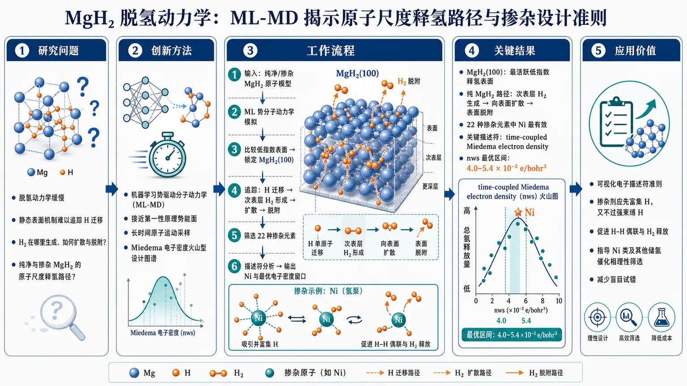
研究问题MgH₂ 储氢材料脱氢动力学缓慢，传统静态表面机制难以看清氢原子如何迁移、H₂ 在哪里生成、如何扩散并脱附；核心问题是：纯净与掺杂 MgH₂ 中，原子尺度的释氢路径是什么，哪些掺杂元素能真正加速脱氢，以及其电子结构规律是什么。创新方法用机器学习势驱动分子动力学 ML-MD 直接追踪 MgH₂ 脱氢动态过程，将接近第一性原理的势能面与长时间原子运动采样结合；Aha 点是发现纯 MgH₂ 中 H₂ 不是只在最外层表面生成，而是先在次表层成核，再扩散到表面脱附，并用 Miedema 电子密度建立掺杂剂活性的火山型设计图谱。工作流程输入纯净 MgH₂ 与不同掺杂 MgH₂ 原子模型 → 用 ML 势进行分子动力学模拟 → 比较不同低指数表面的释氢活性 → 锁定 MgH₂(100) 活跃表面 → 观察 H 迁移、次表层 H₂ 形成、H₂ 向表面扩散和脱附 → 筛选 22 种掺杂元素 → 用机器学习描述符分析关联电子性质与总氢释放量 → 输出最佳掺杂剂 Ni 与 Miedema 电子密度最优窗口。关键结果MgH₂(100) 被识别为最活跃的低指数释氢表面；纯 MgH₂ 的脱氢路径表现为“次表层 H₂ 生成—向表面扩散—表面脱附”；22 种掺杂元素中 Ni 最有效；time-coupled Miedema electron density 是关键描述符；总氢释放量与本征 Miedema 电子密度 nws 呈火山型关系，最佳区间为 4.0–5.4 × 10⁻² e/bohr³。应用价值为 MgH₂ 高性能脱氢催化剂设计提供可视化的电子描述符准则：掺杂剂应像“氢泵”一样先吸引并富集 H，又不能把 H 绑定过强，需促进 H–H 偶联和 H₂ 释放；该框架可指导 Ni 类及其他储氢材料催化相的理性筛选，减少盲目试错。可用材料仅含 arXiv 页面信息与摘要；正文 PDF 的章节、图表、方法参数、训练集规模、误差指标、MD 温度/时间步长、统计检验等未提供。以下解析仅基于已给出的标题、摘要与元数据；未出现的信息不推断、不编造。
---
第一部分：核心概览
该研究将机器学习势驱动分子动力学用于解析纯净与掺杂 MgH₂ 的脱氢动力学，在原子尺度揭示 MgH₂(100) 是最活跃低指数释氢表面，并提出纯 MgH₂ 中 H₂ 先在次表层生成、再扩散至表面脱附的机制。通过筛选 22 种掺杂元素，确定 Ni 最有效，并发现 Miedema 电子密度与释氢活性之间存在火山型关系，为 MgH₂ 催化剂理性设计提供定量结构—活性框架。
---
第二部分：结构化快速回顾
《Machine Learning Potential-Driven Molecular Dynamics Simulations of Dehydrogenation in Pristine and Doped MgH₂》（None，）
背景
MgH₂ 具备高储氢潜力，但脱氢动力学缓慢。传统表面反应图像不足以解释复杂脱氢过程，尤其难以捕捉次表层 H₂ 形成、扩散、掺杂元素电子效应等动态机制。
方法
采用 machine learning potential-driven molecular dynamics simulations, ML-MD 研究纯净与掺杂 MgH₂ 的脱氢行为；比较不同低指数表面；筛选 22 种掺杂元素；结合机器学习描述符分析建立性质—活性关系。
结果
MgH₂(100) 被识别为最活跃低指数释氢表面。纯 MgH₂ 中出现新型机制：H₂ 在次表层区域形成，随后扩散到表面脱附。掺杂筛选显示 Ni 最有效。关键描述符为 time-coupled Miedema electron density。活性与本征 Miedema 电子密度 nws 呈火山型关系，最优窗口为 4.0 < nws < 5.4 × 10⁻² e/bohr³。
讨论
适宜掺杂元素同时承担两种功能：作为吸引 H 的热力学汇，又保持适中相互作用强度以促进 H–H coupling 与 H₂ release。这一机制为实验观察到的催化相 “hydrogen pump” effect 提供原子尺度理论支撑。
局限
摘要未提供 ML 势模型类型、训练数据规模、DFT 参考精度、MD 温度、模拟时间、表面模型尺寸、掺杂位点、释放量定义、误差条、统计显著性、与实验脱氢温度/活化能的定量对照。
结论
ML-MD 可用于穿越复杂催化脱氢机制空间，并建立定量性质—活性关系；Ni 掺杂与合适 Miedema 电子密度窗口是 MgH₂ 高效脱氢催化剂设计的重要线索。
---
第三部分：逐章节冷凝解析
Abstract
#### ML-MD provides atomistic access to MgH₂ dehydrogenation kinetics
研究采用 机器学习势驱动分子动力学解析纯净与掺杂 MgH₂ 的脱氢动力学，核心任务是将可大规模采样的分子动力学与接近第一性原理的势能面结合，用于观察氢原子迁移、H–H 结合、H₂ 脱附等动态事件。摘要中的直接证据为：*"Machine learning potential-driven molecular dynamics simulations (ML-MD) were employed to provide atomistic insights into the dehydrogenation kinetics of pristine and doped MgH2."*
已知对象包括 pristine MgH₂ 与 doped MgH₂；已知尺度为 atomistic insights；具体 ML 势架构、训练集、误差指标、时间尺度未给出。
#### MgH₂(100) is identified as the most active low-index surface
通过系统比较不同表面取向，MgH₂(100) 被识别为低指数表面中最有利于氢释放的晶面。直接证据为：*"Through systematic investigation of distinct surface orientations, the MgH2 (100) surface was identified as the most active low-index surface for hydrogen release."*
该结论意味着不同晶面在氢迁移、H₂ 成核、脱附势垒或表面开放度方面存在显著差异；但摘要未列出比较对象，例如是否包含 (001)、(110)、(101) 等，也未给出各晶面的释氢量、释氢速率或能垒数值。
#### Pristine MgH₂ follows a subsurface H₂ formation pathway
纯净 MgH₂ 的脱氢机制不局限于传统表面直接成氢—脱附模式，而是出现 次表层 H₂ 生成，随后 H₂ 扩散到表面并脱附。关键证据为：*"For pristine MgH2, our simulations revealed a novel H2 formation mechanism characterized by H2 generation in the subsurface region followed by diffusion to the surface for desorption."*
机制链条包含三步：第一，H 原子在 subsurface region 聚集并形成 H₂；第二，H₂ 从次表层向表面扩散；第三，H₂ 在表面完成 desorption。这一机制的重要性在于将脱氢速控因素从单纯表面事件扩展到体相近表层动力学过程。摘要进一步强调：*"highlighting the critical role of subsurface processes beyond conventional surface-driven pathways."*
#### Twenty-two dopants were screened and Ni is the most effective
掺杂元素筛选规模为 22 种元素，其中 Ni 被确定为最有效掺杂剂。直接证据为：*"Comprehensive screening of 22 doping elements identified Ni as the most effective dopant."*
这一结果具有材料筛选意义：Ni 可能在氢吸引、氢迁移、H–H 结合和 H₂ 释放之间达到较优平衡。摘要未提供 22 种元素清单，也未给出 Ni 相对其他元素的释氢量、速率提升倍数、吸附能或反应能垒。
#### Time-coupled Miedema electron density is the key descriptor
机器学习描述符分析显示，最关键的活性描述符是 time-coupled Miedema electron density。直接证据为：*"Among several descriptors, machine learning analysis identified the time-coupled Miedema electron density as the critical descriptor, underscoring the role of electronic properties."*
该描述符将掺杂元素的电子性质与脱氢动态过程关联起来，不只是静态元素属性。术语 time-coupled 暗示描述符与模拟时间演化或时间相关响应有关；Miedema electron density 源于 Miedema 合金热力学模型中的电子密度参数，常用于描述金属间相互作用与电子环境差异。摘要未说明具体机器学习模型、特征重要性算法、交叉验证策略或描述符计算公式。
#### A volcano-shaped relationship links intrinsic Miedema electron density to hydrogen release
总氢释放量与本征 Miedema electron density, nws 呈 火山型关系，最优窗口为 4.0 < nws < 5.4 × 10⁻² e/bohr³。直接证据为：*"Consequently, a volcano-shaped relationship was uncovered between the intrinsic Miedema electron density ( nws ) and total hydrogen release (optimal window: 4.0 < nws < 5.4x10-2 e/bohr3)."*
火山型关系意味着活性不是随电子密度单调增加或降低，而是在中间区间达到峰值：电子密度过低可能无法有效吸引或活化 H；电子密度过高可能导致 H 结合过强，抑制 H–H 偶联或 H₂ 脱附。单位写作 e/bohr³，但摘要中的数值表达 4.0 < nws < 5.4x10-2 e/bohr3 存在潜在排版歧义：可能意在表示 4.0–5.4 × 10⁻² e/bohr³，也可能表示下界和上界的指数格式在摘要页被压缩，需原 PDF 核对。
#### Effective dopants act as both H sinks and H₂-release facilitators
最优掺杂元素具有双重功能：一方面作为吸引 H 的热力学汇，另一方面保持适中的相互作用强度，避免 H 被过强束缚，从而促进 H–H coupling 与 H₂ release。直接证据为：*"Dopants within this range serve a dual function: acting as thermodynamic sinks for H attraction while maintaining a balanced interaction strength to facilitate H-H coupling and H2 release."*
这解释了为何最佳催化剂不一定是 H 结合最强的元素；高效脱氢需要满足 Sabatier-like balance：H 必须能被吸引、富集和活化，但又必须能完成 H₂ 形成与脱附。
#### The results support the catalytic hydrogen pump effect
研究给出对实验中催化相 “hydrogen pump” effect 的原子尺度验证。直接证据为：*"This atomistic-level validation provides strong theoretical support for the experimentally observed "hydrogen pump" effect of catalytic phases."*
这里的 hydrogen pump 可理解为催化相从 MgH₂ 基体中吸引氢、促进氢迁移并推动 H₂ 释放的功能单元。该机制强调催化剂不是简单降低表面脱附能，而是在材料内部—表面之间建立氢迁移与释放通道。
#### ML-MD is positioned as a framework for rational catalyst design
研究将 ML-MD 定位为探索复杂催化机制、建立定量性质—活性关系并指导储氢材料催化剂设计的通用框架。直接证据为：*"The present study demonstrates the strong capability of ML- MD in navigating through complex catalytic mechanisms and establishing quantitative property-activity relationships, providing a robust framework for rational design of high-performance catalysts for MgH2 and other hydrogen storage materials."*
这一结论的外推对象不仅限于 MgH₂，还包括其他 hydrogen storage materials。不过摘要层面尚无跨材料验证，泛化能力仍需正文数据或后续研究支撑。
---
Bibliographic and scope information
#### The work is an arXiv materials science preprint
论文登记在 Condensed Matter > Materials Science，arXiv 编号为 2607.18182，提交日期为 20 Jul 2026。页面信息显示：*"arXiv:2607.18182 (cond-mat) [Submitted on 20 Jul 2026]"*，主题栏为：*"Subjects: Materials Science (cond-mat.mtrl-sci)"*。
该信息说明研究处于预印本阶段，尚不能从页面信息确认同行评审状态、期刊版本或最终修订内容。
#### Authorship involves nine listed researchers
署名包括 Bo Han, Jianchuan Wang, Rui Zhang, Martin Matas, Elias Vigl, Jing Tang, Yong Du, Christian Weiss, David Holec。页面信息为：*"Authors: Bo Han , Jianchuan Wang , Rui Zhang , Martin Matas , Elias Vigl , Jing Tang , Yong Du , Christian Weiss , David Holec"*。
研究团队涉及计算材料、机器学习势、储氢材料和催化机理等交叉方向的可能性较高，但具体机构与贡献分工未在可用文本中出现。
---
第四部分：深度理解与语言支持
1. 术语解析
#### Machine learning potential-driven molecular dynamics simulations, ML-MD
学术含义：用机器学习模型拟合原子间势能面，再驱动分子动力学模拟。相比传统 DFT-MD，ML-MD 通常能模拟更大体系、更长时间；相比经典力场，能够更接近量子力学精度。
语境细微差别：这里的重点不是“机器学习预测性质”，而是“机器学习势能面直接驱动原子运动”，因此可观察 H₂ 形成、扩散、脱附等动态事件。
#### Dehydrogenation kinetics
学术含义：脱氢过程的动力学，包括 H 原子迁移速度、H–H 偶联速率、H₂ 扩散和脱附速率等。
细微差别：kinetics 不等同于热力学稳定性。MgH₂ 可能热力学上可脱氢，但动力学慢；催化剂的作用常常是降低迁移或反应势垒，而非单纯改变最终能量差。
#### Subsurface region
学术含义：位于表面以下几层原子范围内的近表层区域，不是体相深处，也不是最外层表面。
细微差别：传统脱氢机制常把 H₂ 生成放在表面；这里强调 H₂ 在 subsurface 已经形成，再扩散到表面脱附。这改变了对速控步骤的理解：关键不一定是表面 H–H 结合，也可能是次表层 H 聚集、分子氢成核和向外扩散。
#### Miedema electron density / intrinsic Miedema electron density, nws
学术含义：源于 Miedema 模型的电子密度参数，用于描述金属元素在合金或界面中的电子环境、相互作用趋势和热力学行为。
细微差别：这里不是普通的价电子数，也不是简单电负性，而是与金属电子密度和合金化热力学相关的描述符。其与释氢量的火山型关系说明电子结构存在最佳区间。
#### Volcano-shaped relationship
学术含义：催化活性随某个描述符先升高后降低，在中间达到最优。
细微差别：该表达通常隐含 Sabatier principle：吸附或相互作用不能太弱，也不能太强。对 MgH₂ 脱氢而言，掺杂剂既要吸引 H，又不能把 H 锁死，否则 H₂ 难以形成或释放。
---
2. 疑难查证
#### 为什么“次表层 H₂ 形成”重要？
传统表面催化图像通常假设：H 从体相迁移到表面，两个表面 H 原子结合成 H₂，然后脱附。该研究给出的机制不同：H₂ 在表面以下已经形成，再作为分子扩散到表面。这意味着脱氢瓶颈可能隐藏在表层下面，例如 H 原子如何在 MgH₂ 晶格中迁移、如何在局部空隙中靠近、如何克服 H–H 成键前的结构约束。
若这一机制成立，催化剂设计就不能只优化表面吸附能，还要优化近表层氢迁移通道和局域电子环境。
#### 为什么最佳掺杂剂不是“吸氢最强”的元素？
脱氢需要连续完成三件事：吸引 H、促成 H–H 结合、释放 H₂。若掺杂剂与 H 作用太弱，H 不会富集到催化位点；若作用太强，H 会被困在掺杂位点，难以形成 H₂ 或脱附。最佳掺杂剂位于中间区域，即摘要中的 4.0 < nws < 5.4 × 10⁻² e/bohr³。
这正是火山型关系的物理含义：活性峰值来自“适中相互作用”，而非单一性质的最大化。
#### “Hydrogen pump effect” 如何理解？
催化相像一个氢泵：从 MgH₂ 基体或近表层区域吸引 H，使 H 向催化位点迁移；随后通过适中电子相互作用促进 H–H 偶联；最后让 H₂ 释放。
“泵”的核心不是机械运动，而是由热力学驱动力与动力学通道共同形成的定向氢输运与释放功能。
#### “Time-coupled descriptor” 为什么比静态描述符更有价值？
脱氢不是静态吸附事件，而是随时间演化的反应网络。单一静态元素属性可能只能解释某一瞬间的 H 结合强弱；time-coupled Miedema electron density 暗示描述符与动态释氢过程相联系，可能更能捕捉 H 富集、迁移、偶联和脱附的连续过程。
不过摘要未给出该描述符的数学定义，需原文方法部分确认其构造方式。
---
第五部分：创新评估与关联
1. 创新性判断
#### 从静态能垒研究转向动态原子过程观察
近年 MgH₂ 催化研究常依赖 DFT 计算吸附能、缺陷形成能、H 迁移势垒或少量反应路径；这些方法精确但时间和空间尺度有限。该研究采用 ML-MD 直接模拟脱氢动态过程，能够观察 H 原子迁移、H₂ 形成、扩散和脱附的连续事件。创新点在于把 MgH₂ 脱氢从“静态路径推断”推进到“动态机制采样”。
#### 提出纯 MgH₂ 的次表层 H₂ 生成机制
传统理解更强调表面 H–H 结合和表面脱附；这里提出 H₂ generation in the subsurface region followed by diffusion to the surface for desorption。这一点若被完整数据支持，将显著改变 MgH₂ 脱氢机理图像：真正关键的反应区域可能不是最外层表面，而是近表层内部。
#### 将掺杂筛选规模化到 22 种元素并识别 Ni
摘要给出 22 doping elements 的系统筛选，并确定 Ni 最有效。相比单一掺杂案例研究，系统筛选更接近材料发现流程。Ni 的有效性也与许多实验中 Ni 基催化剂、Ni 纳米相、Ni 复合催化 MgH₂ 的经验观察相呼应。
#### 建立电子描述符—释氢活性的火山型关系
关键新颖性在于不是停留在“某元素有效”，而是提出 intrinsic Miedema electron density, nws 与总氢释放量之间的定量火山型关系。该关系给出最优窗口 4.0 < nws < 5.4 × 10⁻² e/bohr³，使催化剂设计从经验筛选转向描述符驱动。
#### 为“hydrogen pump effect”提供原子尺度支撑
实验中常观察到催化相促进 MgH₂ 脱氢，但微观机制存在争议。该研究将掺杂剂描述为同时具有 H attraction thermodynamic sink 与 balanced interaction for H–H coupling/H₂ release 的双重功能，为“氢泵效应”提供可计算、可解释的机制框架。
#### 解决的前人问题
主要解决三类问题：
- 动态机制不可见：传统 DFT 难以长时间追踪 H₂ 从形成到脱附的全过程。
- 掺杂规律不清：许多实验/计算知道某些催化剂有效，但缺少统一电子描述符。
- 催化相作用机制模糊：通过“热力学吸氢 + 适中释放”的双功能解释，把催化剂从简单活性位点提升为氢输运与释放调控器。
#### 仍待验证的问题
正文未提供时，以下关键点不能确认：ML 势是否经过充分外推测试；22 种掺杂元素是否覆盖主流催化剂空间；火山关系的样本量和拟合可靠性；Ni 的优势是否在不同温度、不同表面、不同掺杂浓度下保持；模拟总氢释放量是否能直接映射到实验脱氢速率或脱氢温度。
-
04
📊 含图深析
📄 摘要：用通用机器学习原子势配合混合 Monte Carlo/分子动力学，研究 (MoCrTi)100-xAlx 耐火高熵合金的温度依赖有序化热力学与力学性质，追踪 Al 含量变化对化学短程有序和性能的影响。
💡 亮点：通用机器学习势把温度效应、化学有序和力学响应连到一起，解析 (MoCrTi)100-xAlx 耐火高熵合金的有序化。可用于复杂合金的热力学设计。
📖 展开分析 + 配图
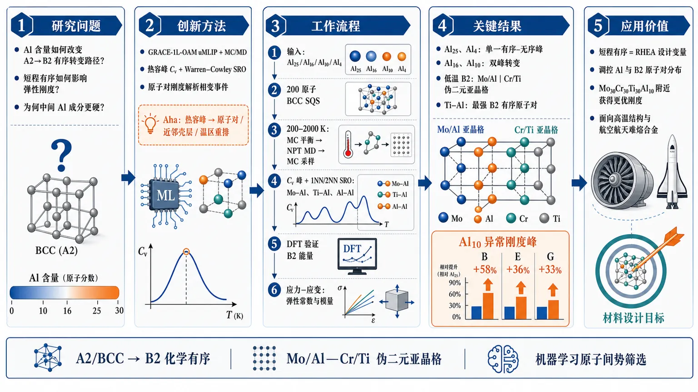
研究问题难熔高熵合金 (MoCrTi)₁₀₀₋ₓAlₓ 中，Al 含量如何改变 BCC/A2 到 B2 型化学有序的转变路径？短程有序如何进一步影响弹性刚度，为什么某些中间 Al 成分会比低 Al 成分更硬？创新方法将通用机器学习原子间势 GRACE-1L-OAM 与混合 Monte Carlo/分子动力学结合，用热容峰、Warren–Cowley 短程有序参数和原子对刚度共同解析相变。Aha 点是：不只判断是否出现 B2 有序，而是把每个热容峰拆解为具体原子对、近邻壳层和温区的重排事件，并揭示 Mo/Al—Cr/Ti 伪二元 B2 亚晶格。工作流程输入四种 Al 含量合金成分 Al25、Al16、Al10、Al4，构建 200 原子 BCC SQS；在 200–2000 K 温度网格下进行固定晶格 MC 平衡、NPT MD 热膨胀、再次 MC 生产采样；由能量涨落得到 Cᵥ 热容峰，由 1NN/2NN SRO 追踪 Mo–Al、Ti–Al、Al–Al 等原子对；用 DFT 验证 B2 构型能量；最后用 uMLIP 应力–应变法计算有序态和无序态弹性常数与模量。关键结果Al25 与 Al4 出现单一有序–无序热容峰，代表多个 B2 型原子对协同失序；Al16 与 Al10 出现双峰，分别由低温局域原子对重排和高温剩余原子对失序组成。低温 B2 结构呈 Mo/Al 共占一个亚晶格、Cr/Ti 共占另一亚晶格；Ti–Al 始终是最强 B2 有序原子对。有序态刚度显著高于无序态，Al10 出现异常刚度峰：体模量约提升 58%，杨氏模量约提升 36%，剪切模量约提升 33%。应用价值证明短程有序可作为 RHEA 合金设计变量，而不是只依赖平均成分混合法则。通过调控 Al 含量和 B2 型原子对分布，可在 Mo₃₀Cr₃₀Ti₃₀Al₁₀ 附近获得更优刚度组合，为高温结构材料、航空航天难熔合金和 B2/A2 超合金式组织设计提供原子尺度筛选依据。第一部分：核心概览（Overview）
利用通用机器学习原子间势 GRACE-1L-OAM结合混合 Monte Carlo/分子动力学，系统揭示了 (MoCrTi)₁₀₀₋ₓAlₓ 难熔高熵合金中 Al 含量—短程有序—相变路径—弹性刚度之间的原子尺度耦合关系。核心贡献在于区分了不同 Al 含量下的单峰与双峰有序–无序转变机制，并证明 B2 型短程有序可显著增强刚度，使有序态在 Mo₃₀Cr₃₀Ti₃₀Al₁₀处出现非单调力学性能峰值。该工作把 uMLIP 从结构预测推进到 RHEA 热力学与力学关联机制解析，具有明确的合金设计指导价值。
---
第二部分：结构化快速回顾
《Study of ordering in (MoCrTi)₁₀₀₋ₓAlₓ refractory high-entropy alloys using machine learning interatomic potential》（None，）
背景
难熔高熵合金（RHEAs）适用于高温服役，但 MoCrTiAl体系中 A2/B2 有序–无序转变、Al 含量调控以及短程有序对力学性能的影响仍缺乏原子尺度机制解释。传统 DFT 计算成本高，经验势与族展开在复杂多主元体系中易受精度与可迁移性限制。
方法
采用 ASE + GRACE-1L-OAM uMLIP进行混合 MC/MD模拟，研究 Al25、Al16、Al10、Al4四种成分。每个温度点经历 2,000,000 MC 步平衡、100 ps NPT MD 热膨胀、2,000,000 MC 步生产采样。通过能量涨落计算 定容热容 Cᵥ，通过 Warren–Cowley SRO 参数量化短程有序，并用 DFT/VASP验证 B2 构型能量。弹性常数由 uMLIP 应力–应变法获得。
结果
Al25 与 Al4呈单一热容峰，反映协同 B2 型有序–无序转变；Al16 与 Al10呈双峰，分别对应低温局域有序重排与高温剩余原子对失序。低温 B2 结构中，Mo 与 Al 共占一个亚晶格，Cr 与 Ti 共占另一亚晶格。有序态弹性常数与模量显著高于无序态，且在 Al10达到刚度峰值。
讨论
热容峰来自构型能快速变化，与 SRO 参数突变相对应。Ti–Al始终是最强 B2 有序原子对；Al16 低温峰主要由 Mo–Al重排触发，Al10 低温峰主要由 Al–Al 二近邻相关性突变触发。力学增强源于 SRO 改变原子对分布，使高刚度原子对贡献在 Al10 最大化。
局限
绝对转变温度与实验存在偏差：等原子 MoCrTiAl 实验转变峰约 1263–1273 K，模拟主峰约 900 K并在 1500 K附近有肩峰。原因包括 uMLIP 训练数据偏向 0 K DFT 弛豫与低阶化合物，缺少高温 HEA 构型；固定晶格 MC 也忽略局域晶格畸变。
结论
SRO 是调控 (MoCrTi)₁₀₀₋ₓAlₓ RHEA 热力学转变与力学刚度的核心变量。Al 含量不仅改变转变温度，还改变转变路径与主导原子对；有序结构可突破简单混合法则预测，在 Mo₃₀Cr₃₀Ti₃₀Al₁₀形成最佳刚度组合。
---
第三部分：逐章节冷凝解析（Section-by-Section Condensing）
Abstract
Universal ML potential enables thermodynamic and mechanical mapping
通过通用机器学习原子间势与混合 Monte Carlo/分子动力学模拟，实现了对 (MoCrTi)₁₀₀₋ₓAlₓ体系温度依赖热力学与力学性质的系统研究。研究对象覆盖不同 Al 含量，并直接聚焦于化学有序机制和弹性刚度变化。原文明确指出：*"by utilizing a universal machine learning interatomic potential with hybrid Monte Carlo and molecular dynamics simulations, the temperature-dependent thermodynamics and mechanical properties of (MoCrTi)100-xAlx system have been investigated."*
Heat capacity and SRO reveal composition-dependent order–disorder transitions
热容 Cᵥ与短程有序参数共同揭示不同成分的有序–无序转变路径。Al25 与 Al4表现为单一转变，而 Al16 与 Al10表现为两个分离转变。原文概括为：*"The heat capacities and short-range order parameters reveal distinct order-disorder transition behaviors."*
Single-transition alloys are governed by cooperative B2-type pair ordering
Mo₂₅Cr₂₅Ti₂₅Al₂₅与Mo₃₂Cr₃₂Ti₃₂Al₄均呈现单一转变，主导因素是多个 B2 型原子对协同有序化。证据来自摘要中的直接表述：*"the Mo25Cr25Ti25Al25 and Mo32Cr32Ti32Al4 alloys exhibit a single transition dominated by the synergistic ordering of B2-type atomic pairs."*
Intermediate Al contents split ordering into two stages
Mo₂₈Cr₂₈Ti₂₈Al₁₆和Mo₃₀Cr₃₀Ti₃₀Al₁₀出现双阶段转变：Al16 的低温阶段由 Mo–Al驱动，Al10 的低温阶段由 Al–Al驱动；高温阶段由其余原子对控制。原文指出：*"the Mo28Cr28Ti28Al16 and Mo30Cr30Ti30Al10 alloys display two separate transitions: a low-temperature stage driven by specific pairs (Mo–Al in Mo28Cr28Ti28Al16; Al–Al in Mo30Cr30Ti30Al10) and a high-temperature stage governed by the remaining pairs."*
Low-temperature B2 ordering has a pseudo-binary sublattice structure
低温有序 B2 相不是简单 Ti–Al 二元 B2，而是伪二元亚晶格占位：Mo/Al共占一个亚晶格，Cr/Ti共占另一个亚晶格。摘要中的核心证据为：*"Structural analysis indicates that in the low-temperature ordered B2 phase, Mo and Al share one sublattice while Cr and Ti share the other."*
Ordering creates non-monotonic stiffness and Al10 optimum
无序固溶体中，Al 减少导致刚度单调增加；有序结构中，刚度随成分呈非单调变化，峰值出现在 Mo₃₀Cr₃₀Ti₃₀Al₁₀。原文直接指出：*"Unlike random solid solutions, where stiffness increases monotonically with decreasing Al content, ordered configurations exhibit a non-monotonic trend, peaking at the Mo30Cr30Ti30Al10 alloy."* 机制被归因于强 SRO 引起的刚性原子对优化分布：*"This enhancement is attributed to an optimized population of stiff atomic pairs induced by strong short-range order."*
---
1 Introduction
RHEAs are positioned as high-temperature structural materials
难熔高熵合金由高熔点主元构成，适合极端热环境，尤其面向航空航天高温服役。原文开篇强调：*"The aerospace industry increasingly demands refractory alloys capable of withstanding extreme thermal environments."* RHEAs 的高温力学性能优于传统 Ni 基高温合金，被定位为下一代高温材料：*"RHEAs exhibit high-temperature mechanical performance superior to that of traditional Ni-based superalloys."*
RHEA development began with single-phase BCC A2 alloys
早期 RHEA 发展集中在单相固溶体，例如 ZrNbTiVHf与HfNbTiZr通常形成稳定 BCC A2结构。具体晶体学信息为 Strukturbericht A2，空间群 Im3̅m。原文写道：*"Systems such as ZrNbTiVHf and HfNbTiZr typically form stable single-phase body-centered cubic (BCC, Strukturbericht designation A2, space group Im3̅m) microstructures."*
Al promotes multiphase structures and B2 precipitation
向 Ta/Nb–MoCrTiAl 系统引入 Al往往诱导多相组织，尤其涉及无序 A2 基体与有序 B2 析出相。Yang 等报道 Ta₂₇.₃Mo₂₇.₃Ti₂₇.₃Cr₈Al₁₀ at.%具有 A2 基体与 B2 析出物，其蠕变速率显著降低：*"minimum creep rate reported four orders of magnitude lower."* 这一事实说明 B2 析出强化可显著提升高温蠕变抗力。
Detrimental brittle phases complicate phase control
Nb/Ta–MoCrTiAl 系统可能形成脆性 Laves 相和 A15 相，例如 Cr₂Nb C15，空间群 Fd3̅m以及 A15，空间群 Pm3̅n。原文指出：*"Müller et al. reported the formation of brittle Laves phases ... and A15 ... phases in Nb/Ta–MoCrTiAl systems."* 抑制这些有害相需要降低 Cr 与 Ta/Nb含量：*"suppressing these detrimental phases requires reducing Cr and Ta/Nb contents."*
MoCrTiAl offers a cleaner route to B2-containing superalloy-like microstructures
MoCrTiAl体系的优势在于可抑制 Laves 相，同时保留有益于高温性能的 B2 相。原文表述为：*"this system can suppress Laves phase formation while retaining B2 phase which is beneficial to the high-temperature performance."* 通过调控 Al 含量可以改变 B2 体积分数：*"By varying the Al content, the volume fraction of B2 phase in the A2 matrix can be tailored to optimize mechanical properties."*
Strength–ductility trade-off motivates atomic-scale ordering analysis
增加 Al通常提高 B2 相分数和强度，但降低延性。原文指出：*"increasing Al typically raises the B2 phase fraction and thus improves strength, but it often reduces ductility."* 因此，平衡且相干的 B2/A2 超合金式组织可优化强度–延性矛盾：*"a balanced, coherent B2/A2 microstructure (often referred to as a superalloy-like structure)"*。关键缺口是缺少原子尺度机制理解：*"a detailed understanding of the underlying atomic-scale mechanisms governing these order-disorder transitions and configuration stability is missing."*
Traditional modeling struggles with chemically complex RHEAs
多主元特征使 RHEA 理论建模困难。传统族展开与嵌入原子法 EAM易过拟合，DFT 对大尺度模拟成本过高。原文明确指出：*"Traditional approaches, such as cluster expansion and the embedded atom method, are prone to overfitting."* 同时：*"DFT calculations are computationally prohibitive for large-scale RHEAs simulations."*
System-specific ML potentials are accurate but poorly transferable
已有 ML 势如 SNAP、MTP、GM-NN已用于 NbMoTaW、TaVCrW 等体系，但通常面向特定合金且需要大量 DFT 训练数据。例如 Gubaev 等 TaVCrW 势使用超过 6000 configurations。原文指出：*"they are typically developed for specific alloy systems and require extensive DFT training datasets (e.g., over 6000 configurations), limiting their transferability."*
Universal ML interatomic potentials provide a scalable HEA modeling strategy
通用机器学习原子间势 uMLIPs从跨元素周期表的从头算数据中学习，适合复杂化学成分模拟。原文指出：*"These universal models offer a promising solution to HEA modeling challenges by effectively learning from ab-initio data across the periodic table."* 该策略的意义在于兼顾效率、复杂成分适用性与无需为每个新体系重新训练。
Research objective links composition, temperature, SRO, and mechanics
研究路线包括 MD、MC 与 DFT，目标是研究 (MoCrTi)₁₀₀₋ₓAlₓ随成分和温度变化的 SRO，并进一步关联有序转变与力学性能。原文给出清晰任务链：*"we employ a combination of atomistic modeling techniques, including molecular dynamics (MD), Monte Carlo (MC), and DFT, to investigate the short-range order (SRO) ... as a function of composition and temperature."*
---
2 Computational methods
2.1 Hybrid Monte Carlo/molecular dynamics simulations
ASE and GRACE-1L-OAM define the simulation engine
混合 MC/MD模拟通过 Atomic Simulation Environment ASE 与 GRACE-1L-OAM uMLIP实现。GRACE-1L-OAM 被选为精度与效率平衡较优的通用势。原文说明：*"Hybrid MC/MD simulations were conducted using the Atomic Simulation Environment (ASE) combined with the uMLIP GRACE-1L-OAM model."* 并强调：*"The GRACE-1L-OAM model offers an optimal balance between accuracy and computational efficiency."*
Four Al compositions isolate the effect of aluminum concentration
研究四种 Al 含量递减成分：
- Mo₂₅Cr₂₅Ti₂₅Al₂₅，Al25
- Mo₂₈Cr₂₈Ti₂₈Al₁₆，Al16
- Mo₃₀Cr₃₀Ti₃₀Al₁₀，Al10
- Mo₃₂Cr₃₂Ti₃₂Al₄，Al4
原文列出：*"four alloy compositions with decreasing Al concentrations were selected: Mo25Cr25Ti25Al25, Mo28Cr28Ti28Al16, Mo30Cr30Ti30Al10, and Mo32Cr32Ti32Al4 (at.%)."*
Initial structures use 200-atom BCC SQS cells
初始构型为 特殊准随机结构 SQS，由 sqsgenerator生成，基于 BCC 4 × 5 × 5 超胞，含 200 atoms，晶格常数 a = 3.17 Å。原文给出：*"Initial atomic configurations were generated as special quasi-random structures (SQS) ... based on a BCC 4×5×5 supercell containing 200 atoms with lattice constant a = 3.17 Å."*
Temperature grid spans 200–2000 K with dense sampling near transitions
所有成分在 17 个温度点模拟：200、400、600、800、850、900、1000、1050、1100、1150、1200、1250、1300、1400、1600、1800、2000 K。原文列明：*"at each temperature (i.e. 200, 400, 600, 800, 850, 900, 1000, 1050, 1100, 1150, 1200, 1250, 1300, 1400, 1600, 1800, and 2000 K)."* 850–1300 K 的密集采样有助于捕捉有序–无序转变峰。
Stage I uses 2,000,000 fixed-lattice MC equilibration steps
第一阶段从 SQS 出发，随机交换两个原子，固定晶格，用 Metropolis 算法决定接受与否，同元素交换跳过。平衡长度为 2,000,000 MC steps。原文说明：*"trial structures were generated by randomly swapping two atoms while keeping the lattice fixed."* 以及：*"the equilibration was performed for 2,000,000 MC steps."*
Stage II uses 100 ps NPT MD for thermal expansion
第二阶段使用第一阶段平衡结构进行 NPT MD，允许晶胞体积弛豫但限制形状变化，从而得到热膨胀。模拟长度为 50,000 steps，时间步长 2.0 fs，总时长 100 ps。原文写道：*"The simulations were conducted for 50,000 steps with a time step of 2.0 fs (total duration of 100 ps)."*
Stage III uses another 2,000,000 MC steps for production sampling
第三阶段从热膨胀后的结构出发，再进行 2,000,000 MC steps，用于热容与 SRO 统计。原文表述：*"Starting from the thermally expanded structures, additional 2,000,000 MC steps were performed to collect sufficiently thermally equilibrated data."*
Equilibration is checked by energy and lattice convergence
补充材料显示，第一轮 MC 势能约 1,000,000 steps后稳定；MD 晶格常数收敛且呈线性热膨胀。原文证据为：*"all the potential energies stabilize after approximately 1,000,000 steps"*，以及：*"The MD results demonstrate thermal equilibration through the convergence of lattice constants ... and exhibit a linear expansion trend."*
Heat capacity is computed from NVT potential-energy fluctuations
定容热容 Cᵥ来自 NVT 系综能量涨落，公式为
[
C_V=fracłangle E²ångle-łangle Eångle²k_BT²
]
其中 kB = 8.617 × 10⁻⁵ eV/K。原文说明：*"constant-volume heat capacities (CV) are calculated based on energy fluctuations within the NVT ensemble."*
Warren–Cowley parameters quantify pair-specific SRO
短程有序通过 Warren–Cowley 参数量化：
[
αξηⁱ(σ)=1-fracNξηⁱ(σ)NMⁱx_ξ x_η
]
其中 α = 0表示随机，α > 0表示少于随机预期、偏析/排斥，α < 0表示多于随机预期、有序/吸引。原文解释：*"α = 0 signifies that atoms are distributed randomly."*；*"when α < 0, more ξ–η pairs exist than predicted by random distribution, suggesting ordering."*
---
2.2 DFT Simulation
DFT calculations use VASP with PAW and PBE
量子力学计算采用 VASP，基于 DFT框架，使用 PAW 赝势与 PBE 交换相关泛函。原文写道：*"The quantum-mechanical calculations were conducted utilizing the Vienna Ab-initio Simulation Package (VASP) within the DFT framework, employing the projector augmented-wave (PAW) pseudopotentials and the Perdew-Burke-Ernzerhof (PBE) exchange-correlation functional."*
B2-like 4-atom supercells separate corner and center sublattices
DFT 模型为传统 BCC 单胞的 2 × 1 × 1 超胞，含 4 atoms，可划分为类似 B2 的两个亚晶格：corner positions与central positions。原文说明：*"The 2×1×1 supercells of the conventional BCC unit cell contain 4 atoms, which split into two sublattices resembling the corresponding B2 structure."*
Three B2 sublattice configurations test ordering competition
构型包括：
- (Mo,Cr)₍Ti,Al)：Mo、Cr 在 corner；Ti、Al 在 center
- (Mo,Ti)₍Cr,Al)：Mo、Ti 在 corner；Cr、Al 在 center
- (Mo,Al)₍Cr,Ti)：Mo、Al 在 corner；Cr、Ti 在 center
原文说明：*"By placing Mo, Cr, Ti, and Al on these different sublattices, various configurations can be obtained."*
DFT settings are numerically explicit and cell-shape effects are excluded
平面波截断能 ENCUT = 500 eV，Gamma-centered k 点网格 5 × 10 × 10，电子自洽收敛 10⁻⁵ eV，离子弛豫收敛 10⁻³ eV/Å，并使用 ISIF = 8排除晶胞形状弛豫影响。原文给出：*"A plane-wave cutoff energy (ENCUT) of 500 eV and a Gamma-centered k-point mesh of 5×10×10 were employed."* 以及：*"ISIF = 8 was used to exclude the influence of cell shape relaxations."*
---
2.3 Mechanical properties
Elastic properties are averaged over six equilibrated MC snapshots
力学性质包括弹性常数与弹性模量，由最后 six equilibrated MC snapshots平均得到。原文写道：*"The mechanical properties, including elastic constants and elastic moduli, were obtained by averaging the results from the last six equilibrated MC snapshots."*
Cubic elasticity uses C11, C12, and C44
立方晶体具有三个独立弹性常数：C₁₁、C₁₂、C₄₄。原文明确：*"For cubic crystals, there are three independent elastic constants, namely C11, C12, and C44."*
Stress–strain calculations use uMLIP and 0.5% maximum strain
弹性常数通过基于 uMLIP 的应力–应变法计算，最大应变幅值设为 0.5%。原文指出：*"These elastic constants were calculated using the uMLIP-based stress–strain method."* 以及：*"The maximum strain amplitude was set to 0.5%."*
Pair stiffness is extracted from bond-energy curvature
不同原子对刚度通过能量–键长曲线曲率确定。每种元素对构造理想 BCC 单胞，一个原子位于角点亚晶格，另一个位于中心亚晶格；晶格常数从 2.70 到 3.60 Å变化；在平衡距离 rmin ± 0.15 Å范围内进行谐近似拟合：
[
E(r)approx E₀₊frac12kₘ̊ cₑₗₗ(r-r₀₎²
]
原文说明：*"the pair stiffness ... was determined from the curvature of the energy vs. bond-length relationship."*
BCC nearest-neighbor multiplicity divides cell stiffness by 8
由于 BCC 单胞中存在 eight equivalent nearest-neighbor bonds，原子对刚度定义为
[
k=kₘ̊ cₑₗₗ/8
]
原文给出：*"where the factor of 8 accounts for the eight equivalent nearest-neighbor bonds in the BCC unit cell."*
---
3 Results and discussion
3.1 Heat capacity of RHEAs
Production MC data after 1,000,000 steps ensure statistical stability
第二轮 MC 的累积平均能量显示所有体系在 1,000,000 steps后达到稳定热力学状态；热容统计只使用之后的数据。原文指出：*"all systems reached a stable thermodynamic state after 1,000,000 steps."* 以及：*"only data collected beyond this point were used for the statistical analysis."*
Heat capacity profiles change strongly with Al content
四种成分的 Cᵥ(T)曲线随 Al 含量显著变化。Al25和Al4具有单个强峰；Al16和Al10具有低温与高温双峰。原文描述：*"The CV(T) profiles of the Al25 ... and Al4 ... alloys are characterized by a single strong peak."*；*"the intermediate compositions Al16 ... and Al10 ... exhibit bimodal behavior."*
High-temperature peak weakens and shifts with increasing Al
随着 Al 含量增加，高温峰幅度降低、形状变宽变平，并向高温移动；在 Al25中高温峰基本消失，仅在约 1550 K表现为肩峰。原文写道：*"With increasing Al content, the magnitude of the high-temperature peak decreases, its shape flattens and broadens, and it shifts to higher temperatures before finally vanishing in the Al25 alloy."* 具体位置为：*"only as a shoulder around 1550 K."*
Low-temperature peak emerges and shifts to higher temperature with increasing Al
低温峰随 Al 增加逐渐出现并向高温侧移动，最终成为等原子 Al25中的主导特征。原文指出：*"a low-temperature peak gradually emerges and systematically shifts towards higher temperatures ... with increasing Al content, eventually evolving into the dominant feature of the equiatomic Al25 alloy."*
Heat-capacity peaks mark configurational order–disorder transitions
热容来自势能涨落，峰值对应构型演化引起的快速势能变化，即有序–无序转变。原文说明：*"peaks in the heat capacity curves signify rapid potential energy changes driven by configurational evolution, specifically marking the order-disorder transition."*
Simulated transition trends agree with DSC but absolute temperatures differ
实验 DSC 在 MoCrTiAl 中观察到 λ-shaped peaks，表明二级或连续相变；Al 含量增加时峰移向高温。模拟也呈现相同趋势。原文指出：*"Laube et al. analyzed dynamic differential scanning calorimetry (DSC) curves ... and observed λ-shaped peaks."* 以及：*"as the Al content increases, the λ-shaped peaks shift to higher temperatures."*
Equiatomic transition temperature is underestimated by uMLIP simulations
实验中等原子 MoCrTiAl 转变峰约 1273 K（Laube）或 1263 K（Chen）；模拟主转变约 900 K，并在 1500 K附近出现高温肩峰。原文给出：*"Laube et al. reported a transition peak at around 1273 K for the equiatomic MoCrTiAl alloy."*；*"Chen et al. observed a transition peak at approximately 1263 K."*；*"the transition in our simulations occurs around 900 K, with a high-temperature shoulder around 1500 K."*
Temperature discrepancy is linked to uMLIP training-data limitations and fixed-lattice MC
GRACE-1L-OAM 训练数据主要来自 OMat24、Alexandria、MPtrj，且偏向 0 K DFT relaxations与低阶化合物，缺乏高温 HEA 构型；固定晶格 MC 排除了 HEA 中重要的局域畸变。原文说明：*"training datasets ... are predominantly composed of 0 K DFT relaxations and lower-order compounds."* 以及：*"fixed-lattice MC simulations exclude local distortions, which are known to be essential for HEA properties."*
---
3.2 Short-range order parameters in RHEAs
Al25 evolves from random SQS to ordered B2 and back to high-temperature random solution
Al25 的结构快照显示：初始为 SQS 随机构型；200 K平衡后出现明显 B2 有序；2000 K为随机固溶体。原文描述：*"Fig. 4(a) displays the SQS used as the initial state."*；*"a B2 ordering is clearly visible ... at 200 K."*；*"the representative snapshot at 2000 K confirms the random solid solution at high temperature."*
Al25 B2 ordering is pseudo-binary rather than binary Ti–Al
经典二元 Ti–Al B2由 Ti 和 Al 分占亚晶格；Al25 RHEA 采用伪二元模式：(Mo, Al)占一个亚晶格，(Cr, Ti)占另一个亚晶格。原文明确：*"the Al25 RHEA adopts a pseudo-binary configuration where (Mo, Al) atoms occupy one sublattice and (Cr, Ti) atoms occupy the other."*
SRO parameters converge toward disorder with increasing temperature
在所有体系的一近邻 1NN与二近邻 2NN中，随温度升高，同种原子对 Mo–Mo、Cr–Cr、Ti–Ti、Al–Al的 SRO 趋向 0.5，异种原子对 Mo–Cr、Mo–Ti、Mo–Al、Cr–Ti、Cr–Al、Ti–Al趋向 0。原文指出：*"the SRO parameters for like-atom pairs ... tend to converge towards 0.5, while those for unlike-atom pairs ... gradually converge towards 0."*
Ti–Al is the dominant B2-ordering pair across all compositions
Ti–Al 一近邻始终具有强负 SRO，是 B2 有序最稳定的主导原子对。原文明确：*"Ti–Al in 1NN shell consistently remains the dominant pair for B2 ordering as indicated by its strongly negative SRO values."*
Al25 transition is a collective B2 sublattice breakdown near 900 K
等原子 Al25 在约 900 K附近多个 SRO 参数同步发生斜率突变；低于 500 K和高于 1500 K时变化较弱。关键原子对包括 2NN Mo–Al、Cr–Ti以及 1NN Mo–Cr、Mo–Ti、Cr–Al、Ti–Al。原文描述：*"a synchronized change of multiple SRO parameters occurs around 900 K both in 1NN and 2NN shells."*；*"indicates a collective breakdown of the B2 sublattice."* 该大规模重排导致约 900 K热容峰：*"resulting in the prominent Cv peak observed around 900 K."*
Al16 bimodal heat capacity arises from decoupled disordering events
Al 含量降至 16 at.%后，失序事件解耦，产生双峰热容。低温峰约 600 K，主要与 2NN Mo–Al快速演化相关；高温峰来自其他异种 1NN 原子对尤其 Ti–Al的缓慢转变。原文指出：*"the disordering events become decoupled, leading to the bimodal Cv behavior."*；*"The low-temperature Cv peak at ≈600 K ... correlates strongly with the rapid evolution of the Mo–Al pair in the 2NN shell."*
Al10 low-temperature peak is driven by abrupt Al–Al 2NN rearrangement
Al 含量降至 10 at.%后，在 400 K出现尖锐低温峰。2NN Al–Al SRO 在低于约 600 K时从约 −2.5突变到 −0.5，随后高温逐渐达到 0.5。原文给出：*"the sharp low-temperature peak at 400 K appears."*；*"the Al-Al pair in 2NN shell shows an abrupt transition from around −2.5 to −0.5 at low temperatures below ≈600 K and slowly reaches 0.5 for higher temperatures."* 这意味着 Al–Al 在同一亚晶格上的聚集/相关性重排是 Al10 低温峰的直接原因。
Al4 loses low-temperature peak and disorders collectively above 1200 K
Al 含量降至 4 at.%后，低温峰消失；所有原子对在高温 >1200 K同步演化，导致 1250 K单一尖锐热容峰。原文写道：*"When the Al content decreases to 4 at.%, the low-temperature peak vanishes."*；*"a synchronized evolution of all the pairs in both shells at high temperatures (>1200 K) is observed."*；*"single, sharp Cv peak observed at 1250 K."*
Mo and Cr prefer each other as first neighbors
在 200 K有序构型中，Mo 和 Cr 的直接邻域显示强烈互为一近邻倾向，形成 Mo–Cr pairs。原文表述：*"analyzing the direct neighborhood of Mo and Cr atoms ... reveals a strong preference to occupy each other’s 1NN shells, forming Mo–Cr pairs."*
Ti and Al show strong chemical ordering
Ti 与 Al 的局域环境显示强烈化学有序倾向；Ti 周围一近邻中 Al 倾向最大占位，并使局域 Al/(Mo+Cr)比显著高于排除 Ti 后的名义宏观比。原文指出：*"the local environments of Ti and Al ... demonstrate a pronounced tendency for chemical ordering."*；*"Al consistently tends to maximally occupy the 1NN shell sublattice of Ti."*
Al-centered environments evolve toward complete Ti first-neighbor shells at low Al
随着 Al 含量降低，Al 一近邻中 Ti 原子比例显著提高，最低 Al 成分下可达到 100%，表明形成 B2 Ti–Al 原子对。原文写道：*"as the Al content decreases, the fraction of Ti atoms in the Al 1NN shell increases dramatically to 100%, indicating the formation of B2 Ti–Al atomic pairs."*
Ti–Al B2 ordering is thermodynamically favored by negative formation enthalpy
Ti–Al B2 相具有高度负形成焓，约 −0.3 eV/atom，为 Ti–Al 配位提供强热力学驱动力。原文给出：*"the highly negative formation enthalpy of the Ti–Al B2 phase (≈−0.3 eV/atom) provides a strong driving force for Ti–Al coordination."*
Local lattice distortion may further stabilize ordered Ti–Al pairs
Al、Mo、Cr、Ti 的原子尺寸失配导致局域晶格畸变，可能改变局域应变能并稳定 Ti–Al 有序对。原文指出：*"the atomic-size mismatch among Al, Mo, Cr, and Ti gives rise to local lattice distortion."* 以及：*"contribute to the stabilization of chemically ordered Ti–Al pairs."*
Al–Ti–Al chain is a B2 signature
Al 中心 → Ti 一近邻 → Al 中心的排列体现 B2 结构特征。原文明确写道：*"This Alcenter → Ti1NN → Alcenter atomic arrangement is a signature of the B2 structure."*
High-temperature 2000 K structures are fully disordered solid solutions
在 2000 K无序构型中，任意中心元素周围 1NN 与 2NN 的平均元素分数几乎相同，并接近宏观名义成分，证明形成完全无序固溶体。原文指出：*"the average atomic fractions within the 1NN ... and 2NN ... shells around any constituent element are nearly identical."*；*"Such random lattice occupancy confirms the formation of a fully disordered solid solution at the high-temperature state."*
---
3.3 B2 configurations
DFT and uMLIP agree within about 0.035 eV/atom for B2 configurations
为研究 B2 构型竞争，使用 DFT/VASP与 uMLIP/GRACE计算不同 B2 构型在 0 K下的弛豫能量。两种方法结果高度一致，同一构型能量差在约 0.035 eV/atom以内。原文写道：*"the results from VASP and uMLIP exhibit remarkable consistency, with energy differences ... remaining within ≈0.035 eV/at."* 该一致性支持 GRACE 势在该体系中的可靠性：*"which indicates the reliability of the used GRACE uMLIP."*
(Mo,Ti)–(Cr,Al) is the lowest-energy 0 K B2 arrangement
(Mo,Ti)共占一个亚晶格、(Cr,Al)占另一个亚晶格的构型能量最低：VASP 为 −8.153 eV/atom，uMLIP 为 −8.178 eV/atom。原文给出：*"The configurations with (Mo, Ti) sharing one sublattice and (Cr, Al) occupying the other exhibit the lowest energy (VASP: −8.153 eV/at., uMLIP: −8.178 eV/at.)."*
(Mo,Al)–(Cr,Ti) is nearly degenerate and relevant at finite temperature
(Mo,Al)与(Cr,Ti)分占亚晶格的构型能量仅略高：VASP 为 −8.148 eV/atom，uMLIP 为 −8.173 eV/atom。两个竞争构型能量差仅 0.005 eV/atom。原文指出：*"the energy difference between these two competing configurations is only 0.005 eV/at. in both VASP and uMLIP calculations."*
Thermal energy overwhelms the 0 K energy difference
在 Metropolis 算法中，热能尺度远大于 0.005 eV/atom：
- 300 K：kBT ≈ 0.026 eV/atom，约 5 倍
- 600 K：kBT ≈ 0.052 eV/atom，约 10 倍
- 1000 K：kBT ≈ 0.086 eV/atom，约 17 倍
原文写道：*"kBT≈0.026 eV/at. at 300 K, ≈0.052 eV/at. at 600 K, and ≈0.086 eV/at. at 1000 K — respectively 5, 10, and 17 times larger than the 0.005 eV/at. energy difference."* 因此，单纯 0 K 能量差不足以决定唯一亚晶格有序模式：*"Energy difference alone is therefore insufficient to dictate a unique sublattice ordering."*
MC favors (Mo,Al)–(Cr,Ti) despite 0 K energy ranking
虽然 (Mo,Ti)–(Cr,Al)在 0 K 最稳定，但 Al25 的 MC 模拟倾向 (Mo,Al)–(Cr,Ti)分组；证据为 Mo–Al 与 Cr–Ti在 1NN 中 SRO 为正、2NN 中为负，意味着 Mo 与 Al 共占同一亚晶格。原文说明：*"the MC simulations of the equiatomic Al25 system suggest a preference for the (Mo, Al)–(Cr, Ti) grouping."* 这与 TiAlMo 中 Mo 偏好 Al 亚晶格的发现一致：*"a strong preference for Mo on the Al sublattice in B2-ordered TiAlMo alloys."*
---
3.4 Mechanical properties
Elastic properties compare ordered 200 K and disordered 2000 K configurations at 0 K
为隔离结构有序度对力学的影响，弹性常数与模量在 0 K静态条件下计算，但构型分别来自 200 K 有序结构与 2000 K 无序结构。原文写道：*"we calculated the elastic constants and moduli at 0 K for atomic configurations equilibrated at 200 K (ordered structure) and 2000 K (disordered structure)."*
Reported mechanical metrics include C11, C12, C44, B, EH, and GH
力学性质包括单晶弹性常数 C₁₁、C₁₂、C₄₄，体模量 B，Hill 平均杨氏模量 EH与剪切模量 GH。原文列出：*"single-crystal elastic constants (C11, C12, and C44), bulk modulus (B), polycrystalline Hill’s averaged Young’s modulus (EH) and shear modulus (GH)."*
Disordered structures follow monotonic rule-of-mixtures-like stiffening
无序构型中，随 Al 含量降低，刚度严格单调增加。线性回归的决定系数接近 1：C₁₁ ≈ 0.995，C₁₂ ≈ 0.921，C₄₄ ≈ 1.000。原文说明：*"the predicted elastic constants demonstrate a strictly monotonic variation."*；*"R2 close to unity (i.e., C11: ≈0.995, C12: ≈0.921, and C44: ≈1.000)."* 该趋势符合混合法则：*"Such a trend aligns well with the rule of mixtures."*
Ordered structures are consistently stiffer than disordered structures
有序结构相对于无序结构表现出更高刚度。原文明确指出：*"the ordered structures (200 K) consistently exhibit enhanced stiffness compared to the disordered state (2000 K)."*
Ordered elastic constants deviate strongly from linear composition trends
有序构型的线性相关性明显减弱，R²分别为 C₁₁ ≈ 0.938，C₁₂ ≈ 0.237，C₄₄ ≈ 0.934，说明 SRO 引入了非简单混合法则行为。原文指出：*"a significant deviation from the linear trend ... is observed in the ordered configurations."*
Al10 shows anomalous elastic strengthening
Al10有序态出现最强异常增强：
- C₁₁增强 +52%，明显高于相邻成分 +37%与 +36%
- C₁₂在 Al10 出现局部峰值
- C₄₄增强 +27%，高于 Al16 的 +21%与 Al4 的 +17%
原文给出：*"C11 exhibits a remarkable +52% enhancement in Al10 alloy distinct from the neighboring +37% and +36% increases."*；*"C44 shows anomalous strengthening in Al10, reaching a +27% increase."*
Ordered moduli peak at Al10 rather than increasing monotonically
简单混合法则预期随着低刚度 Al 减少、高刚度 Mo/Cr/Ti比例增加，刚度应单调提高；但有序态模量呈非单调趋势，并在 Al10达到峰值。原文指出：*"the ordered moduli exhibit a distinct trend and peak at the Al10 alloy."*
SRO strengthening is largest in Al10
Al10 有序结构相对随机构型的增强幅度最大：
- 体模量 B：约 58%
- 杨氏模量 EH：约 36%
- 剪切模量 GH：约 33%
原文写道：*"the ordered structure exhibits a massive improvement over the random configuration: ≈58% in bulk modulus, ≈36% in Young’s modulus, and ≈33% in shear modulus."*
Static calculations isolate structural rather than thermal effects
由于弹性计算排除了热效应，刚度差异纯粹来自结构与短程有序。原文说明：*"Since thermal effects are excluded from these static calculations, the observed variations are purely structural."*
Simulation agrees qualitatively with experimental strength-ordering correlations
实验显示 MoCrTiAl 中有序度显著影响延性与强度；有序 MoCrTi–15Al相比无序 MoTiCr–3Al具有更高屈服强度和硬度。原文指出：*"the transition from a partially ordered MoCrTi–10Al alloy to a disordered MoCrTi–5Al alloy significantly impacts both ductility and strength."* 以及：*"the ordered MoCrTi–15Al alloy showed superior yield strength and hardness compared to disordered MoTiCr–3Al alloy."*
Pair stiffness provides a microscopic descriptor of modulus trends
弹性模量与平衡处结合能二阶导数正相关，因此能量曲率可作为局域刚度描述符。原文写道：*"the bulk modulus is positively correlated with the second derivative of the binding energy at equilibrium."* 以及：*"elastic moduli are fundamentally related to the local curvature of the energy landscape."*
Mo–Mo is stiffest and Al–Al is softest among pair landscapes
原子对能量曲线显示 Mo–Mo刚度最高，k = 8.1 eV/Ų；Al–Al最软，k = 2.1 eV/Ų。原文给出：*"The Mo–Mo pair exhibits the highest stiffness (k = 8.1 eV/Å2), whereas the Al–Al pair is the softest (k = 2.1 eV/Å2)."*
Ordered Al10 maximizes stiff-pair contributions
无序合金中，随着 Al 含量降低，总刚度贡献增加；有序合金中，SRO 改变原子对分数，导致刚度先升后降，并在 Al10达到最大。原文指出：*"in the ordered alloys (200 K), variations in pair fractions result in a non-monotonic trend where stiffness first increases and then decreases."*；*"the sum of stiffness contributions peaks at Al10."* 这与显式弹性计算完全一致：*"fully consistent with the variations in the explicitly calculated stiffness."*
---
4 Conclusions
Hybrid MC/MD with uMLIP captures composition-dependent order–disorder behavior
温度依赖热容、SRO 参数和力学性质通过混合 MC/MD + uMLIP系统获得。原文总结：*"the temperature dependent heat capacity, SRO parameters, and mechanical properties of (MoCrTi)100-xAlx RHEAs were investigated using hybrid MC/MD simulations with a uMLIP."*
All compositions show order–disorder transitions but pathways depend on Al
所有成分均出现明确有序–无序转变，但路径强烈依赖 Al 浓度。原文写道：*"The calculated heat capacities and SRO parameters reveal clear order–disorder transition behavior in all studied compositions, while the transition pathway strongly depends on the Al concentration."*
Al25 and Al4 exhibit single cooperative B2-type transitions
Al25 与 Al4只出现单一有序–无序转变，主导因素是 B2 型原子对相关性协同演化。原文指出：*"For the Al25 and Al4 alloys, a single order–disorder transition is observed, which is dominated by the cooperative evolution of B2-type pair correlations."*
Al16 and Al10 exhibit two transitions with distinct low-temperature drivers
Al16 与 Al10出现低温和高温两个转变。低温转变中，Al16 主要由 Mo–Al ordering驱动，Al10 主要由 Al–Al ordering驱动；高温转变由剩余原子对控制。原文说明：*"The low-temperature transition is mainly driven by Mo–Al ordering in Al16 and Al–Al ordering in Al10, whereas the high-temperature transition is governed by the remaining atomic pairs."*
Low-temperature B2 sublattice partition is Mo/Al versus Cr/Ti
低温 B2 构型中，Mo 与 Al共享一个亚晶格，Cr 与 Ti共享另一个亚晶格。原文重申：*"Mo and Al share one sublattice, while Cr and Ti share the other."*
Mechanical stiffness is strongly coupled to ordering state
随机构型中，刚度随 Al 减少单调增加；有序构型中，刚度呈非单调趋势，在 Al10达到峰值。原文指出：*"In random configurations, stiffness increases monotonically with decreasing Al content."*；*"in ordered configurations, the stiffness follows a non-monotonic trend, peaking at the Al10 alloy."*
SRO optimizes high-stiffness pair populations
Al10 的刚度峰值来自 SRO 改变原子对种群，使高刚度原子对贡献最大化。原文总结：*"This behavior is associated with SRO-induced changes in atomic-pair populations, where the contribution from atomic pairs with high stiffness is maximized in the Al10 composition."*
SRO is a design variable for high-performance RHEAs
SRO 同时调控热力学转变与机械刚度，因此可作为高性能 RHEA 成分优化的原子尺度设计变量。原文指出：*"These results demonstrate the important role of SRO in regulating both thermodynamic transitions and mechanical stiffness."* 并强调设计意义：*"provide useful atomistic insights for composition optimization and the design of high-performance RHEAs."*
---
第四部分：深度理解与语言支持（Understanding & Nuance）
1. 术语解析
Short-range order（SRO，短程有序）
学术含义：描述局部邻域中元素分布相对于完全随机固溶体的偏离。它不要求整个晶体具有长程周期性，只要求某些原子对在 1NN、2NN 等局域壳层中出现概率偏高或偏低。
语境微妙差别：这里的 SRO 不是“析出相体积分数”或“长程 B2 有序度”，而是通过 Warren–Cowley 参数定量追踪原子对随温度变化的局部统计偏好。α < 0表示异种原子对超出随机预期，体现化学吸引/有序；α > 0表示低于随机预期，体现排斥或同亚晶格偏好。
---
Order–disorder transition（有序–无序转变）
学术含义：原子从具有特定亚晶格偏好的有序排列转变为高温随机分布，或反向转变。该过程可表现为热容峰，因为构型能随温度快速变化。
语境微妙差别：这里的转变不是一定意味着晶格类型从 BCC 变成其他晶格，而是在 BCC/A2 与 B2 型亚晶格占位之间发生化学有序度变化。晶格框架可以仍近似 BCC，但元素占位从有偏好变为随机。
---
B2-type pair correlations（B2 型原子对相关性）
学术含义：B2 结构可视为 CsCl 型有序 BCC 结构，两个互穿简单立方亚晶格分别由不同元素或元素组占据。B2 型原子对相关性指某些元素倾向于在一近邻跨亚晶格出现，而在二近邻同亚晶格出现特定相关。
语境微妙差别：该体系不是简单二元 B2，而是伪二元 B2：一个亚晶格可由 Mo/Al混合占据，另一个由 Cr/Ti混合占据。因此 “B2-type”强调结构拓扑和亚晶格规则，而不是严格化学计量二元 B2。
---
Universal machine learning interatomic potential（uMLIP，通用机器学习原子间势）
学术含义：从大量跨元素、跨结构的从头算数据学习原子能量和力，可用于多种材料体系的原子尺度模拟。
语境微妙差别：与专门为某一 HEA 训练的 ML 势不同，uMLIP 的优势是可迁移性，不必为每个新成分重新构建数千个 DFT 训练构型；风险是对特定高温、高熵、强局域畸变状态的精度可能不足。
---
Non-monotonic compositional dependence（非单调成分依赖）
学术含义：性能随成分变化不是一直升高或降低，而是在中间成分出现极大或极小值。
语境微妙差别：无序态刚度随 Al 减少近似单调升高，符合混合法则；有序态因 SRO 改变原子对分布，在 Al10 达到峰值。这说明性能不是简单由元素平均刚度决定，而由谁和谁成为近邻决定。
---
2. 疑难查证：复杂概念解释
为什么同样是 B2，0 K DFT 最稳定构型与 MC 有限温偏好不同？
0 K DFT 比较的是几个理想 B2 构型的静态能量最低点。结果显示 (Mo,Ti)–(Cr,Al)最低，但 (Mo,Al)–(Cr,Ti)只高 0.005 eV/atom。这个能量差非常小，小到在室温下热涨落都能轻易覆盖：300 K 时 kBT ≈ 0.026 eV，约为差值 5 倍。
有限温 MC 不只选择最低 0 K 能量，还受以下因素影响：
- 构型熵：某种亚晶格组合可能拥有更多近似等能微观排列。
- 局域原子对偏好：Ti–Al、Mo–Cr、Mo–Al、Cr–Ti 等原子对在不同壳层的统计权重共同决定自由能。
- 热涨落：小能量差不足以锁定唯一构型。
- 多主元竞争：四元体系不是二元 B2，单个“最低能亚晶格模型”不能代表完整自由能景观。
因此，0 K 能量排序反映内能最低趋势，MC 有限温结果反映自由能与统计占位偏好。两者并不矛盾。
---
为什么热容峰可以判断有序–无序转变？
定容热容公式为
[
C_V=fracłangle E²ångle-łangle Eångle²k_BT²
]
它本质上衡量能量涨落。若升温过程中原子构型缓慢变化，势能涨落小，Cᵥ平缓；若某个温区大量原子对同时重排，势能快速改变且涨落增强，Cᵥ出现峰值。
在该体系中，热容峰与 SRO 参数突变同步：
- Al25：约 900 K多个原子对同步失序 → 单峰。
- Al16：Mo–Al 2NN先变，其余原子对后变 → 双峰。
- Al10：Al–Al 2NN低温突变，其余对高温失序 → 双峰。
- Al4：高温 >1200 K整体同步失序 → 单峰。
所以热容峰不是抽象热力学信号，而是局域原子对网络重构的宏观表现。
---
为什么 SRO 能让 Al10 比 Al4 更硬，尽管 Al4 含有更少软元素 Al？
简单混合法则只看元素比例：Al 较软，Mo/Cr/Ti 较硬，因此 Al 越少应越硬。这解释了无序态的单调趋势。
有序态不同。弹性刚度由局部键合网络控制，不只是元素平均含量。若 SRO 让高刚度原子对更频繁出现、低刚度原子对被减少或重新分配，整体刚度可超过简单成分平均预期。Al10 中 SRO 使刚性原子对贡献总和最大，因此出现刚度峰值。Al4 虽然 Al 更少，但可形成的特定 B2 型有序网络与刚性原子对组合不如 Al10 最优，导致刚度反而下降。
---
第五部分：创新评估与关联（Synthesis & Novelty）
1. 创新性判断
从“是否有 B2”推进到“哪些原子对在何温区驱动 B2 有序–无序转变”
近年 MoCrTiAl RHEA 研究已通过实验确认 A2/B2 组织、Al 调控 B2 分数、强度–延性权衡。主要缺口在于：实验 DSC 能看到转变峰，但难以直接分辨峰背后的原子对驱动机制。该研究把热容峰与 1NN/2NN Warren–Cowley SRO逐一对应，明确区分：
- Al25：多原子对协同 B2 亚晶格崩解；
- Al16：低温 Mo–Al，高温其余原子对；
- Al10：低温 Al–Al，高温其余原子对；
- Al4：高温同步失序。
新颖性在于把宏观热容峰拆解成具体原子对、具体近邻壳层、具体温区的转变机制。
---
使用 uMLIP 研究 RHEA 有序热力学，降低体系专用 ML 势依赖
过去 2–5 年 HEA/RHEA 原子模拟常依赖体系专用 ML 势，如 SNAP、MTP、GM-NN，需要大量 DFT 训练数据且迁移能力有限。该研究直接采用 GRACE-1L-OAM 通用势，对四元 Mo–Cr–Ti–Al 体系进行大规模 MC/MD 热力学采样。新颖点不是单纯“用了机器学习势”，而是利用 uMLIP + MC/MD探索温度依赖有序转变与机械响应，展示通用势在复杂 RHEA 成分筛选中的潜力。
---
揭示低温 B2 不是简单 Ti–Al B2，而是 Mo/Al 与 Cr/Ti 伪二元亚晶格
已有二元 Ti–Al B2 图像容易让人预设 Al 与 Ti 必然分占两个亚晶格。该研究通过 MC 快照、SRO 和 B2 构型能量分析指出，低温有序结构更接近 (Mo,Al)–(Cr,Ti)伪二元亚晶格。该发现对 MoCrTiAl 合金设计尤其重要，因为它说明 Mo 不只是固溶强化元素，也参与 B2 亚晶格占位竞争。
---
建立 SRO 与弹性刚度非单调峰值之间的原子对机制
过去实验能观察有序合金更强、更硬，但难以定量说明为什么某个中间 Al 含量最优。该研究通过 pair stiffness把弹性增强归因于原子对刚度贡献，并解释 Al10为何优于简单混合法则预测。尤其重要的是，有序态刚度在 Mo₃₀Cr₃₀Ti₃₀Al₁₀达到峰值，而无序态随 Al 降低单调增强。这一对比直接证明：SRO 可以改变成分–性能关系的函数形状。
---
解决了前人未充分解决的三个问题
- 转变峰来源问题
DSC 可见 λ 峰，但难以确认具体原子对。该研究将热容峰与 Mo–Al、Al–Al、Ti–Al 等 SRO 演化对应。
- B2 亚晶格占位问题
传统二元 B2 类比不足以解释四元 RHEA。该研究识别 Mo/Al 与 Cr/Ti亚晶格分组，并解释其与 0 K 能量近简并之间的关系。
- 有序强化机制问题
以往“有序提高强度/硬度”多停留在经验层面。该研究从刚性原子对种群优化解释有序态弹性模量峰值，提供可用于成分优化的微观指标。
---
主要创新边界
该研究的新颖性集中在原子尺度机制与计算框架应用，而非发现全新合金体系或全新相类型。绝对转变温度仍与实验存在明显偏差，说明 uMLIP 直接用于高温 RHEA 热力学时仍需谨慎。最可靠的创新价值在于相对趋势、机制分解、原子对层面的设计启发，而不是对实验转变温度的精确定量预测。
-
05
📊 含图深析
📄 摘要：比较原始分子构型、PCA 与卷积自编码器对三维 Lebwohl-Lasher 模型一阶向列转变的识别能力，结果显示未保留取向对称性的表示会失败，机器学习能否抓到相变强烈依赖输入表征。
💡 亮点：Lebwohl-Lasher 的向列转变能否被 ML 抓住，首先取决于输入是否保留对称性。原始构型、PCA 和 CAE 的失效很说明问题。
📖 展开分析 + 配图
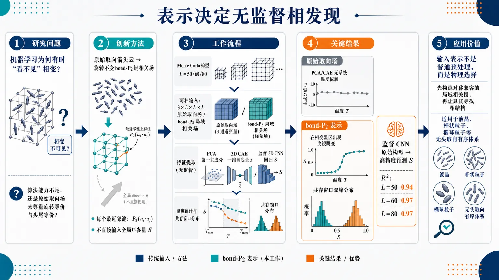
研究问题三维 Lebwohl–Lasher 向列液晶的各向同性—向列弱一级相变中，机器学习为什么有时“看不见”相变：失败来自算法能力不足，还是来自原始三分量分子取向场没有尊重旋转等价与头尾等价对称性？创新方法Aha 点是把同一批分子构型从“原始取向箭头云”转换为旋转不变的局域 bond-P2 键相关场：每个最近邻键用 P2(uᵢ·uⱼ₎ 表示局域向列对齐，去掉无关的全局 director 方向，同时不直接输入全局序参量 S；再用 PCA、3D CAE 与监督 3D CNN 对照分离“表征、模型复杂度、监督标签”的作用。工作流程Monte Carlo 生成 L=50、60、80 的三维 LL 晶格构型 → 每个构型形成两种输入：原始 3×L×L×L 分子取向场与 bond-P2 局域相关场 → PCA 展平提取第一主成分，CAE 用一维瓶颈提取潜变量 z，CNN 从原始构型监督回归 S → 按温度统计均值与共存窗口分布 → 对比是否出现相变区急剧变化和双峰共存结构。关键结果原始取向场下，PCA 第一主成分和 CAE 一维潜变量都没有系统温度依赖，无法识别相变；换成 bond-P2 表示后，PCA 与 CAE 均在相变温区出现尖锐跳变，并在共存窗口恢复双峰分布；监督 CNN 即使使用原始构型也能高精度预测 S，R² 分别为 L=50:0.94、L=60:0.97、L=80:0.97。应用价值该研究说明在连续取向对称体系中，输入表示不是普通预处理，而是决定无监督相发现是否成功的物理选择；为液晶、杆状粒子、椭球粒子和其他无头取向有序体系设计机器学习相变诊断提供了可视化原则：先构造对称兼容的局域相关图，再让算法寻找相结构。第一部分：核心概览 (Overview)
该研究以三维 Lebwohl–Lasher（LL）模型 的弱一级 isotropic–nematic transition 为测试场，证明机器学习识别相变的成败不仅取决于算法能力，更取决于输入表示是否尊重体系对称性。PCA 与 convolutional autoencoder（CAE） 在原始三分量分子取向场上失败，但在旋转不变的局域 bond-(P₂) 表示上恢复尖锐相变信号和双峰共存分布；监督式 3D CNN 则可借助标量序参量标签从原始构型中准确回归 (S)。该工作把 无监督相发现 与 监督序参量回归 清晰区分，凸显表征选择本身是物理问题的一部分。
---
第二部分：结构化快速回顾
《Representation-Dependent Machine Learning of the Isotropic-Nematic Transition in the Lebwohl-Lasher Model》（None，）
背景
三维 Lebwohl–Lasher 模型 是经典向列液晶晶格模型，具有弱一级 isotropic–nematic transition。向列相具有 apolar symmetry 与连续旋转简并性，导致同一宏观向列状态在原始三分量取向空间中可能相距很远，使无监督机器学习面临表征障碍。
方法
采用 (L=50,60,80) 的简单立方晶格，温度区间 (k_BT/Jin[1.1147,1.1307])，步长 (0.0002)，每个系统尺寸获得 8100 个统计独立构型。比较两种输入：原始分子取向场 (3× L× L× L)，以及旋转不变的最近邻 bond-(P₂) 局域相关场。机器学习方法包括 PCA、一维瓶颈 3D CAE、以及监督式 3D CNN 回归标量序参量 (S)。
结果
原始构型输入下，PCA 主成分与 CAE 潜变量均未显示系统性温度依赖，不能识别相变。转为 bond-(P₂) 表示后，PCA 第一主成分和 CAE 一维潜变量均在相变区快速变化，并在共存窗口出现双峰分布。监督 CNN 从原始构型回归 (S) 的性能很高：(R²⁽L=50)=0.94)，(R²⁽L=60)=0.97)，(R²⁽L=80)=0.97)。
讨论
无监督学习失败不是模型复杂度不足，因为线性 PCA 与非线性 CAE 在原始表示中共同失败；关键原因是原始输入空间的距离结构不反映向列相的旋转等价性和头尾等价性。监督 CNN 的成功来自标签提供的物理目标，而非原始空间天然包含清晰相变几何。
局限
局域相关表示只使用最近邻 (P₂) 键变量，可能未完全编码长程空间结构、畴结构或更复杂缺陷信息。CAE 潜变量虽能反映相变，但不能被直接等同于标量序参量 (S)。分析集中于三维 LL 模型，跨模型泛化仍需更多体系验证。
结论
无监督机器学习在具有连续取向对称性的体系中必须使用对称兼容输入表示；监督学习可通过标签绕过表征问题。输入表示不是普通预处理，而是决定相变是否在机器学习空间中可见的核心物理选择。
---
第三部分：逐章节冷凝解析 (Section-by-Section Condensing)
Abstract
- Representation controls machine-learning visibility of the transition
机器学习相变检测 的成败不只由算法决定，还取决于输入表示是否保留体系对称性。核心判断直接指向表征依赖性：*"Machine-learning detection of phase transitions depends not only on the learning algorithm, but also on whether the input representation preserves the symmetries of the system."* 研究对象是三维 LL 模型的弱一级 isotropic–nematic transition，其向列相既 apolar 又连续简并：*"the weak first-order isotropic–nematic transition of the three-dimensional Lebwohl–Lasher model, whose apolar and continuously degenerate nematic phase makes raw molecular configurations a challenging input for unsupervised learning."*
- Unsupervised methods fail on raw molecular configurations
PCA 与 convolutional autoencoder（CAE） 在原始构型上无法识别相变，因为旋转等价的向列态在输入空间中会显得彼此遥远：*"Principal component analysis (PCA) and a convolutional autoencoder (CAE) fail to identify the transition from raw configurations because rotationally equivalent nematic states can appear far apart in the input space."* 这一失败同时发生在线性与非线性无监督方法中，说明问题不是单纯的模型表达能力不足。
- Rotationally invariant local-correlation representation restores unsupervised signatures
将同一批构型转化为旋转不变 local-correlation representation 后，PCA 与 CAE 均恢复相变敏感信号与共存双峰分布：*"When the same configurations are transformed into a rotationally invariant local-correlation representation, both methods recover transition-sensitive signatures and bimodal coexistence distributions."* 这说明 局域 (P₂) 相关 把物理上等价但数值上分散的构型重新投影到更合理的特征空间。
- Supervised CNN can regress order parameter from raw inputs
与无监督方法不同，监督式 3D CNN 在给定序参量标签时能够从原始构型准确预测标量序参量：*"A supervised three-dimensional convolutional neural network (CNN), by contrast, accurately predicts the scalar order parameter from raw configurations when given order-parameter labels."* 关键区别在于标签提供了目标物理量 (S)，使网络可学习旋转不变特征。
- LL model separates unsupervised discovery from supervised regression
三维 LL 模型把 unsupervised phase discovery 与 supervised order-parameter regression 分离开来：*"The Lebwohl–Lasher model therefore separates unsupervised phase discovery from supervised order-parameter regression and shows that symmetry-respecting input representations are needed for unsupervised machine learning in orientationally ordered systems."* 学术贡献集中于“表示—对称性—学习任务类型”的三者关系。
---
I Introduction
- Machine learning has become a major tool for phase identification
过去十年中，ML 已成为凝聚态与统计物理中识别相、相变的补充工具：*"Machine learning (ML) has emerged as a powerful complement to traditional computational methods in condensed matter physics and statistical physics over the last decade, especially for the identification of phases of matter and phase transitions."* 监督网络可从微观构型分类相，无监督方法可在无标签情形下揭示低维变量和聚类结构：*"Supervised neural networks can classify phases directly from microscopic configurations, while unsupervised approaches can reveal low-dimensional latent variables and clustering structures without explicit labels."*
- Generic ML may learn representation-dependent similarity rather than physics-aware variables
机器学习在多种体系中的成功引出关键问题：算法识别的是物理集体变量，还是仅仅按照输入表示中的数值相似性组织数据。相关表述为：*"These studies have established ML as a probe of phase structure, but they also raise the question of when generic learning algorithms identify physics-aware collective variables and when they instead organize data according to representation-dependent similarities."* 这一问题在标量自旋模型中较弱，在液晶取向体系中更尖锐。
- Correlation-based representations already matter in discrete spin models
对于 Potts 与 clock models 等经典自旋模型，一种处理对称性的方法是用相关表示替代原始自旋构型：*"In classical spin models, one route has been to replace raw spin configurations by correlation-based representations that account for symmetry-related configurations in systems such as Potts and clock models."* 这为液晶体系中的 bond-(P₂) 表示提供方法学背景，但 LL 模型的连续取向与无头性使问题更复杂。
- Liquid crystals create a non-trivial representation problem
液晶相由 orientational order parameters 与 apolar continuous symmetries 描述，而非简单标量自旋：*"Liquid crystals are a non-trivial setting for this question: their ordered phases are described by orientational order parameters and apolar continuous symmetries rather than by scalar spin variables."* 原始三分量取向场中的全局方向不应被视为不同物理状态，但欧氏输入空间会将其区分。
- Prior liquid-crystal ML mainly focused on textures rather than microscopic LL configurations
液晶机器学习已有工作多集中于光学纹理、图像预测相或材料性质：*"ML work on liquid-crystal systems has so far focused on optical textures and image-based prediction of phases or material properties."* 例如 CNN 可从光学图像预测液晶相和序参量：*"Convolutional neural networks have been used to predict liquid-crystal phases and order parameters from optical images."* 但直接处理三维 LL 微观分子构型的系统研究仍缺失：*"a systematic ML analysis of the three-dimensional LL transition at the level of microscopic molecular configurations has remained largely absent."*
- The 3D LL model is a classic but difficult ML benchmark
Lebwohl–Lasher model 是向列液晶经典晶格模型：*"The Lebwohl–Lasher (LL) model is one of the classic lattice models for nematic liquid crystals."* 三维情况下存在弱一级 isotropic–nematic transition：*"In three dimensions, it exhibits an isotropic–nematic transition that is weakly first order."* 近期高精度 Monte Carlo 研究已澄清其有限尺寸标度性质：*"Recent high-precision Monte Carlo work has further clarified the finite-size scaling properties of this transition."*
- Raw molecular fields obscure nematic equivalence
三维 LL 模型不是普通晶格基准，因为 nematic order 是无头且连续简并的：*"The 3D LL model is, therefore, not just another lattice benchmark for ML. It poses a representation problem that is absent in scalar spin systems."* 分子轴反向不改变状态，全局 director 可指向任意方向：*"Nematic order is apolar and continuously degenerate: reversing the molecular axis does not change the nematic state, and the global director may point in any direction."* 因此等价构型在原始三分量场中可能看起来无关：*"Configurations that represent the same nematic state can therefore look unrelated when written as raw three-component molecular-orientation fields."*
- Central question concerns representation requirements for different learning modes
核心问题不只是 ML 能否识别相变，而是不同学习方式需要何种微观表示：*"Thus, the central question is not only whether ML can identify the isotropic–nematic transition, but what representation of the microscopic configurations is required for different learning methods to work reliably."* 该问题适用于更广泛的 orientationally ordered systems with apolar continuous symmetry：*"This representation problem is expected to arise more generally in orientationally ordered systems with apolar continuous symmetry."*
- Raw molecular field is compared with rotationally invariant local correlations
两类输入被用于直接分离架构问题与对称表征问题：原始分子取向场与旋转不变局域相关表示。后者去除无关全局取向、保留局域取向信息：*"The resulting representation removes the irrelevant global orientation while retaining the local orientational information that distinguishes isotropic and nematic states."* 并且不使用全局标量序参量或相标签：*"It is consistent with the apolar symmetry of nematic molecules and does not use the global scalar order parameter or phase labels."*
- Three ML methods separate unsupervised and supervised questions
三类方法分别是 PCA、3D CAE 和监督式 3D CNN：*"we analyze statistically independent Monte Carlo configurations using three approaches: principal component analysis (PCA) as a linear unsupervised method, a three-dimensional convolutional autoencoder (CAE) as a nonlinear unsupervised method, and a supervised three-dimensional convolutional neural network (CNN) for order-parameter regression."* PCA/CAE 使用原始与 bond-(P₂) 两种表示；CNN 只用原始构型以测试标签是否能引导网络提取对称相关特征：*"The CNN is trained on raw molecular configurations only, since its role is to test whether order-parameter labels can guide a network toward symmetry-relevant features when the input itself is not explicitly invariant."*
---
II Model and Simulation Details
II.1 Model
- Lebwohl–Lasher Hamiltonian encodes nearest-neighbor nematic alignment
LL 模型把分子放置在简单立方晶格上，其哈密顿量为
[
H=-Jsumłₐₙgₗₑ ᵢ,ⱼåₙgₗₑP₂₍ᵤᵢḑotuⱼ₎
]
对应原文：*"The Lebwohl–Lasher model consists of molecules placed on a simple-cubic lattice and is described by the Hamiltonian (H=-Jsumłₐₙgₗₑ ᵢ,ⱼåₙgₗₑP₂(uᵢḑotuⱼ))."* 其中最近邻对 (łangle i,jångle) 通过二阶 Legendre 多项式耦合。
- Second-order Legendre polynomial creates apolar symmetry
相互作用使用
[
P₂₍ₓ₎₌frac12(3x²⁻¹⁾
]
原文定义为：*"(P₂(x)=frac12łeft(3x²-1i̊ght)) is the second-order Legendre polynomial."* 因为 (P₂₍ₓ₎) 对 (x) 为偶函数，(uᵢ→-uᵢ) 不改变能量：*"Because (P₂(x)) is even in (x), the interaction is invariant under (uᵢ→-uᵢ), consistent with apolar nematic symmetry."*
- Ground state is orientationally ordered but continuously rotatable
基态中所有分子平行，形成向列有序，但整体仍可在三维空间连续旋转：*"The ground state exhibits orientational (nematic) order in which all molecules are parallel, while the system remains free to rotate continuously in three-dimensional space."* 这意味着绝对 director 方向不是物理可区分相标签。
- Nematic order is quantified by a traceless second-rank tensor
向列有序度由无迹二阶张量
[
Qαβ=frac1Nsumᵢ₌₁Nfrac12(3uᵢαuᵢβ-δαβ)
]
定义，原文为：*"The degree of nematic ordering is quantified by the traceless second-rank ordering tensor (Qαβ=frac1Nsumᵢ₌₁Nfrac12łeft(3uᵢαuᵢβ-δαβi̊ght))."* 其中 (N=L³)。
- Scalar order parameter is the largest eigenvalue of (Q)
标量向列序参量 (S) 定义为 (Qαβ) 最大本征值，director 为对应本征向量：*"The scalar nematic order parameter (S) is defined as the largest eigenvalue of (Qαβ), and its corresponding eigenvector defines the director."* 各向同性相 (Sapprox0)，向列相 (S) 有有限正值：*"In the disordered isotropic phase (Sapprox 0), while in the ordered nematic phase (S) takes a finite positive value."*
---
II.2 Monte Carlo Simulations
- Three lattice sizes and narrow transition temperature window are simulated
模拟系统为 (L=50,60,80) 的简单立方晶格，周期边界条件，设定 (J/k_B=1)：*"We simulate simple cubic lattices of size (L=50), (60), and (80) with periodic boundary conditions, setting (J/kB=1)."* 温度覆盖 (k_BT/Jin[1.1147,1.1307])，共 81 个均匀温度点，步长 (0.0002)：*"at 81 temperatures uniformly spaced in (kBT/Jin[1.1147,,1.1307]) in steps of (0.0002)."*
- All simulations start from random disordered states
初始条件统一为完全无序随机态：*"All simulations start from a random (fully disordered) initial state."* 这避免从有序初态引入 director 方向偏置，但对于一级相变附近的慢弛豫也提出更高采样要求。
- (L=50) simulation uses (10⁵) equilibration and (5×10⁶) production MCS
对 (L=50)，平衡 (10⁵) MCS，生产 (5×10⁶) MCS，每 (5×10⁴) MCS 保存一次构型：*"For (L=50), (10⁵) Monte Carlo steps (MCS) of equilibration are followed by a production run of (5× 10⁶) MCS, with configurations saved every (5× 10⁴) MCS."* 每个 MCS 对应 (L³) 次尝试更新：*"one MCS corresponds to (L³) attempted molecular updates, equivalent to one attempted update per lattice site on average."*
- (L=60) simulation extends production to (2×10⁷) MCS
对 (L=60)，仍平衡 (10⁵) MCS，但生产延长到 (2×10⁷) MCS，每 (10⁵) MCS 保存一次：*"For (L=60), the same (10⁵) MCS of equilibration are followed by a production run of (2× 10⁷) MCS, with configurations saved every (10⁵) MCS."*
- (L=80) simulation uses longer equilibration for slow transition-region relaxation
对 (L=80)，因相变附近弛豫更慢，平衡 (7×10⁵) MCS，生产 (3×10⁷) MCS，每 (3×10⁵) MCS 保存一次：*"For (L=80), (7× 10⁵) MCS of equilibration accommodate the slower relaxation near the transition, followed by a production run of (3× 10⁷) MCS, with configurations saved every (3× 10⁵) MCS."*
- Each lattice size yields 8100 independent configurations
每个温度保存 100 个统计独立构型，每个系统尺寸总计 (81×100=8100) 个构型：*"This yields (100) statistically independent configurations per temperature for each lattice size, for a total of (8100) configurations per size."* 三个尺寸合计为 24300 个构型。
---
II.3 Input representations
- Raw molecular-orientation field preserves full microscopic vector information
第一种输入是原始分子取向场，每个晶格点 (r) 有三分量单位矢量
[
u(r)=(uₓ₍ᵣ₎,u_y(r),u_z(r))
]
原文为：*"At each lattice site (r), the molecular axis was represented by a three-component unit vector, (u(r)=bigl(uₓ(r),uy(r),uz(r)bigr))."* 完整构型数组形状为 (3× L× L× L)：*"A full lattice configuration is therefore an array of shape (3× L× L× L)."*
- Bond-(P₂) field is rotationally invariant and local
第二种输入是由最近邻分子取向构造的旋转不变局域相关场：*"The second representation was a rotationally invariant local-correlation field, constructed from nearest-neighbor molecular orientations."* 因相关变量定义在最近邻键上并使用 (P₂)，也称 bond-(P₂) field：*"Since the correlation variable is defined on nearest-neighbor bonds using (P₂), we also refer to this representation as the bond-(P₂) field."*
- Local correlation variables are defined for three lattice directions
对每个点 (r) 和方向 (αinx,y,z)，定义
[
bα(r)=P₂[u(r)ḑotu(r+hatα)]
]
原文为：*"For each site (r) and lattice direction (αinx,y,z), the local correlation variable was defined as (bα(r)=P₂łeft[u(r)ḑotu(r+hatα)i̊ght])."* 该表示产生三个标量场，因此形状仍为 (3× L× L× L)：*"The local-correlation representation therefore has the same array shape, (3× L× L× L), as the raw molecular-orientation representation."*
- Representation comparison isolates symmetry from architecture
两种表示用于分离模型架构问题与对称输入问题：*"The two representations were used to separate questions of model architecture from questions of symmetry-compatible input representation."* 原始场保留完整微观取向信息，而局域相关场去除无关全局取向并保留最近邻取向对齐：*"The raw molecular-orientation field retains the full microscopic orientation information, whereas the local-correlation field removes the irrelevant global orientation while preserving nearest-neighbor orientational alignment."*
---
III Machine-learning methods
III.1 Principal component analysis
- PCA tests whether dominant variance directions contain transition information
PCA 被用作线性无监督降维方法，检验构型集合最大方差方向是否包含 isotropic–nematic transition 信息：*"Principal component analysis (PCA), a linear dimensionality-reduction method that projects high-dimensional data onto orthogonal directions of maximal variance, was used to test whether the dominant variance directions of the configuration ensemble contain information about the isotropic–nematic transition."*
- PCA is applied separately to raw and bond-(P₂) representations for each size
对每个 (L)，PCA 分别作用于同一批 Monte Carlo 构型的两种表示：*"For each lattice size, PCA was applied independently to two representations of the same Monte Carlo configurations: the raw molecular-orientation field and the rotationally invariant bond-(P₂) field."* 这保证差异来自表示而非采样数据差异。
- Each configuration is flattened into length (3L³)
因 PCA 要求向量输入，每个 (3× L× L× L) 数组被展平成长度 (3L³) 的特征向量：*"Since PCA requires vector input, each (3× L× L× L) configuration array was reshaped into a one-dimensional feature vector of length (3L³) before applying PCA."* 对 (L=50,60,80)，特征维数分别为 375000、648000、1536000。
- No labels are used during PCA fitting
PCA 拟合时不使用标量序参量或温度标签：*"No scalar order-parameter labels or temperature labels were used when fitting the principal components."* 温度只在变换后用于分组统计：*"Temperature information was used only after the PCA transformation to group the leading PCA scores by temperature and compute averages and probability distributions."*
- PC1 scaling enables finite-size comparison
跨系统尺寸比较时，第一主成分得分除以 (sqrt3L³)：*"For the comparison across lattice sizes in Fig. 5, the leading PCA score was divided by (sqrt3L³) after the PCA transformation."* 该归一化使不同特征维数下的 PC1 可在同一尺度上比较。
- PCA acts as a representation-sensitive unsupervised diagnostic
PCA 的诊断逻辑是：若相变编码在所选输入空间几何中，应出现在 leading PCA scores 中：*"This procedure allows PCA to serve as a representation-sensitive unsupervised diagnostic: if the transition is encoded in the geometry of the chosen input space, it should appear in the leading PCA scores."* 主成分符号任意，只为绘图一致性固定：*"Since the sign of a principal component is arbitrary, the sign of the first component was fixed only for plotting consistency."*
---
III.2 Convolutional autoencoder
- CAE is used as nonlinear unsupervised dimensionality reduction
CAE 是基于重构的非线性无监督网络，将输入编码为紧凑潜表示再解码重构：*"An unsupervised convolutional autoencoder (CAE) is a nonlinear reconstruction-based neural network that encodes an input into a compact latent representation and then decodes it to reconstruct the input."* 其目标是检验非线性无监督学习能否提取相变敏感坐标：*"We used the CAE to test whether nonlinear unsupervised learning can extract a transition-sensitive coordinate."*
- CAE receives raw and bond-(P₂) fields separately, without order-parameter labels
CAE 分别用于原始取向场和旋转不变局域相关场，输入均为 (3× L× L× L)：*"The CAE was applied separately to the raw molecular-orientation field and to the rotationally invariant local-correlation field for each lattice size. In both cases, the input was a tensor of shape (3× L× L× L)."* 训练过程中不使用 (S)：*"No scalar order-parameter values were used during training; the network was trained only to reconstruct its input."*
- One-dimensional bottleneck forces a compact descriptor
编码器把每个构型压缩为单个潜变量 (z)：*"The encoder compressed each configuration to a single latent variable (z)."* 一维瓶颈用于获得可分析的紧凑无监督描述符：*"This one-dimensional bottleneck was chosen so that the learned coordinate could be analyzed as a compact unsupervised descriptor of the configuration ensemble."* 但 (z) 不预设等同于 (S)：*"Because the CAE is optimized for reconstruction, the latent coordinate is not assumed to be identical to the scalar nematic order parameter."*
- Reflective padding makes sizes compatible with three stride-2 downsamplings
由于编码器有三个 stride-2 下采样阶段，输入先对称填充到
[
Lₚ₌₈łeftłceilfracL8i̊ghtc̊eil
]
原文为：*"Since the encoder used three stride-2 downsampling stages, each input was first padded symmetrically to (Lₘ̊ ₚ=8łeftłceilfracL8i̊ghtc̊eil)."* 对 (L=50,60,80)，(Lₚ₌₅₆,64,80)：*"Thus (Lₘ̊ ₚ=56), (64), and (80) for (L=50), (60), and (80), respectively."*
- Encoder architecture uses 3D convolutions, batch normalization, ReLU, and global average pooling
编码器通道宽度从 3 增至 12、24、48、72：*"Starting from the three input channels, the encoder increased the feature width through convolutional blocks with 12, 24, 48, and 72 channels."* 局部特征用 (3×3×3) 卷积，下采样用 (4×4×4)、stride 2、padding 1 卷积：*"Local feature extraction used (3× 3× 3) convolutions, while downsampling was performed using (4× 4× 4) convolutions with stride 2 and padding 1."* 最终用自适应平均池化到 (1×1×1)：*"The encoded feature map was reduced to one value per channel using adaptive average pooling to a (1×1×1) spatial output."*
- Decoder reverses the encoder and crops back to original size
解码器先用全连接层把潜变量映射回编码张量，再用转置三维卷积恢复空间分辨率：*"A fully connected layer first mapped the latent variable back to the encoded tensor shape, followed by transposed three-dimensional convolutions that restored the spatial resolution."* 输出为 (3× Lₚ× Lₚ× Lₚ)，随后裁剪回 (3× L× L× L)：*"This output was cropped back to the original (3× L× L× L) size before the reconstruction loss was evaluated."*
- CAE minimizes mean-squared reconstruction error with Adam
损失函数为
[
LCAE=frac13L³sumc,ᵣ[hatx_c(r)-x_c(r)]²
]
原文为：*"The CAE was optimized by minimizing the mean-squared reconstruction error (a̧l Lₘ̊ CAE=frac13L³sumc,ᵣłeft[hatxc(r)-xc(r)i̊ght]²)."* Adam 学习率 (2×10⁻⁴)，batch size 32，weight decay 为 0：*"Training was performed using the Adam optimizer with learning rate (2× 10⁻⁴), batch size 32, and zero weight decay."*
- No feature standardization is applied before CAE training
原始分子场与 bond-(P₂) 场均按原始尺度输入，不做特征标准化：*"No feature standardization was applied; the raw molecular and bond-(P₂) fields were used in their native scales."* 这避免标准化人为改变 (P₂) 局域相关的物理尺度。
- Train-validation split is stratified by temperature
每个尺寸和表示的数据按温度分层划分训练/验证集，每个温度 10% 构型进入验证集：*"the data were split into training and validation sets using a stratified split by temperature, with 10% of the configurations at each temperature assigned to validation."* 温度只用于平衡划分，不作为输入或目标：*"Temperature was used only to construct this balanced train-validation split and was not supplied to the network as an input or target."*
- Training uses up to 50 epochs with early stopping
训练最多 50 个 epoch，基于验证损失 early stopping，patience 为 20：*"Training was continued for up to 50 epochs with early stopping based on the validation loss using a patience of 20 epochs."* 训练后提取每个构型的 (z)，按温度计算均值和分布：*"After training, the latent scalar (z) was extracted for every configuration. The values of (z) were then grouped by temperature to compute temperature-resolved averages and probability distributions."*
- Latent coordinate is standardized only for analysis
跨尺寸比较时，潜变量按每个 (L) 单独标准化：
[
tildeZ₁₌fracz-łangle zångle_Lσ_L(z)
]
原文为：*"For comparison across system sizes, the one-dimensional latent coordinate was standardized separately for each lattice size as (tildeZ₁=fracz-łangle zångleLσL(z))."* 该标准化只用于分析和可视化：*"This standardization was used only for analysis and visualization, not during CAE training."*
---
III.3 Convolutional neural network
- Supervised CNN predicts scalar order parameter from raw configurations
监督分析使用 3D CNN 从原始 LL 构型预测标量向列序参量 (S)：*"The supervised analysis was performed using a three-dimensional CNN trained to predict the scalar nematic order parameter (S) from raw Lebwohl–Lasher configurations."* 与 PCA/CAE 不同，CNN 不使用 bond-(P₂) 表示：*"the CNN was trained only on the raw molecular field and not on the bond-(P₂) representation."*
- CNN tests whether labels can guide symmetry-relevant feature learning
只用原始构型的目的，是测试在输入不显式旋转不变时，监督标签能否引导网络提取对称相关特征：*"This choice was made because the purpose of the CNN was to test whether supervised learning can extract symmetry-relevant information directly from raw microscopic configurations when the scalar order parameter is supplied as a training target."*
- Targets are independently computed scalar order parameters
输入张量为 (3× L× L× L)，三通道对应分子取向三分量：*"Each input configuration was represented as a tensor of shape (3× L× L× L), where the three channels correspond to the Cartesian components of the molecular orientation field."* 目标 (S) 由 II.1 中的 (Q) 张量独立计算：*"The target value for each configuration was the scalar nematic order parameter (S) computed independently from the ordering tensor."*
- CNN architecture has three convolutional stages and a regression head
网络包含三个 3D 卷积阶段和全连接回归头：*"It consisted of three three-dimensional convolutional stages followed by a fully connected regression head."* 卷积使用 (3×3×3)、padding 1，通道为 (3→32→64→128)：*"The convolutional feature extractor used standard (3×3×3) convolutions with padding 1. The three convolutional layers had channel widths (3i̊ghtarrow32i̊ghtarrow64i̊ghtarrow128)."*
- Pooling and regression head produce scalar (Sₚᵣₑd)
前两个卷积阶段后接 batch normalization、ReLU、(2×2×2) max pooling；第三阶段后接 batch normalization、ReLU、自适应平均池化到 (1×1×1)：*"The first two convolutional stages were followed by batch normalization, ReLU activation, and (2×2×2) max pooling. The third stage was followed by batch normalization, ReLU activation, and adaptive average pooling to a (1×1×1) output."* 128 维特征经 (128→64→1) 回归头输出 (Sₚᵣₑd)：*"The resulting 128-component feature vector was passed through a regression head, (128i̊ghtarrow64i̊ghtarrow1), with a ReLU activation between the two linear layers."*
- Training-test split is 80/20 stratified by temperature
每个 (L) 的数据用按温度分层的 80/20 训练/测试划分：*"For each lattice size, the data set was divided into training and test sets using an 80/20 split stratified by temperature, so that both subsets contained comparable coverage of the transition region."* 这保证测试集中也包含相变区域样本。
- Targets are standardized using training-set mean and standard deviation
训练前目标按训练集统计量标准化：
[
tildeS=fracS-μₜᵣₐᵢₙσₜᵣₐᵢₙ
]
原文为：*"The scalar order-parameter targets were rescaled before training as (tildeS=fracS-μₘ̊ ₜᵣₐᵢₙσₘ̊ ₜᵣₐᵢₙ)."* 该重标度只用于训练，使目标居中并为 (O(1))：*"This rescaling was used only during training to keep the regression target centered and of order unity."*
- CNN uses MSE loss, Adam, batch size 16, learning rate (10⁻⁴)
损失为标准化目标上的均方误差：*"The loss function was the mean-squared error, (a̧l Lₘ̊ CNN=frac1Nbsumₙ₌₁Nbłeft(tildeSₘ̊ ₚᵣₑd,ₙ-tildeSₙi̊ght)²)."* 训练采用 batch size 16、Adam、学习率 (10⁻⁴)：*"Training was performed with batch size 16 using the Adam optimizer with learning rate (10⁻⁴)."*
- Predictions are transformed back and evaluated by (R²)
训练后预测值反标准化：
[
Sₚᵣₑd=σₜᵣₐᵢₙtildeSₚᵣₑd+μₜᵣₐᵢₙ
]
原文为：*"After training, the predicted normalized values were transformed back to the original scale according to (Sₘ̊ ₚᵣₑd=σₘ̊ ₜᵣₐᵢₙtildeSₘ̊ ₚᵣₑd+μₘ̊ ₜᵣₐᵢₙ)."* 测试集性能用决定系数 (R²) 评估：*"The regression performance was evaluated on the held-out test set using the coefficient of determination (R²)."*
---
IV Results and Discussion
- Results follow a four-part comparison logic
结果顺序依次为热力学基准、原始构型无监督失败、对称兼容 bond-(P₂) 表示恢复、监督 CNN 结果：*"The results are organized to follow the logic of the comparison: first the thermodynamic benchmark, then the failure of unsupervised learning on raw configurations, the recovery obtained from the symmetry-compatible bond-(P₂) representation, and finally the supervised CNN result."* 这种结构直接服务于“表示决定无监督可见性”的论证。
---
IV.1 Thermodynamic benchmark for the transition
- Scalar order parameter drops sharply for all three sizes
图 3 显示 (łangle Sångle) 随温度变化以及共存附近 (P(S))：*"Fig. 3 shows the temperature dependence of the scalar nematic order parameter and the probability distribution (P(S)) near coexistence."* 对 (L=50,60,80)，(łangle Sångle) 在窄温区内急剧下降：*"For all three lattice sizes, (łangle Sångle) decreases sharply over a narrow temperature interval."*
- Near-coexistence (P(S)) becomes bimodal
相变附近 (P(S)) 出现双峰结构，一个峰对应弱有序向列相，另一个对应近各向同性相：*"At the same time, (P(S)) develops a bimodal structure near the transition, with one peak associated with the weakly ordered nematic phase and the other with the nearly isotropic phase."* 双峰是一级相变有限尺寸共存的重要热力学标志。
- Finite-size coexistence windows use (Δ Twᵢₙ=0.0006)
共存分布由有限尺寸温度窗口
[
|T-T₀₍L)|łeqΔ Twᵢₙ
]
构造，(Δ Twᵢₙ=0.0006)：*"The probability distributions shown near coexistence were constructed from configurations in a finite-size temperature window (|T-T₀(L)|łeqΔ Tₘ̊ wᵢₙ), with (Δ Tₘ̊ wᵢₙ=0.0006)."* 该窗口提升统计量，同时限制在序参量快速变化区：*"This window was chosen to improve the statistics of the probability distributions while remaining restricted to the narrow temperature range over which the order parameter changes rapidly."*
- Window centers are size-dependent and guided by high-resolution finite-size analysis
共存窗口中心温度为
(T₀₍₅₀₎₌₁.122700)、(T₀₍₆₀₎₌₁.122659)、(T₀₍₈₀₎₌₁.122496)：*"The center temperatures were selected using guidance from the high-resolution finite-size analysis of Ref. [24] together with the present Monte Carlo data, yielding (T₀(50)=1.122700), (T₀(60)=1.122659), and (T₀(80)=1.122496)."* 这些窗口也用于 PCA 与 CAE 分布，保证热力学与 ML 观测量在相同区域比较：*"The same temperature windows are used below for the thermodynamic, PCA, and CAE distributions."*
- Error bars and uncertainty bands are explicitly defined
温度依赖均值的误差条表示同温度构型均值的标准误：*"For temperature-dependent averages, error bars denote the standard error of the mean over configurations at the same temperature."* 共存分布曲线为高斯平滑直方图的 bootstrap 均值，阴影为一次标准差 bootstrap 不确定度：*"For the near-coexistence probability distributions, curves show the bootstrap mean of Gaussian-smoothed histograms, and shaded bands denote one-standard-deviation bootstrap uncertainty bands obtained from resamplings of the selected configurations."*
- Useful ML observables should reproduce sharp change and bimodality
有效 ML 诊断不应只是平滑随温度变化，而应捕捉相变快速变化与双相共存结构：*"a useful ML diagnostic should not merely vary smoothly with temperature; it should capture the rapid change across the transition and, near coexistence, reflect the two-phase structure through a bimodal distribution."* 这是评价 PCA/CAE/CNN 是否物理有效的明确标准。
- Bimodality sharpens with increasing (L)
双峰结构随 (L) 增大而变尖锐，符合一级相变有限尺寸行为：*"The sharpening of the bimodal structure with increasing (L) is consistent with the finite-size behavior expected at a first-order transition."* 也与三维 LL 模型近期高精度结果一致：*"and with recent high-precision results for the three-dimensional LL model."*
---
IV.2 Failure of unsupervised learning on raw configurations
- Raw molecular field does not yield transition-sensitive PCA or CAE variables
原始微观分子场上的 PCA 与 CAE 结果见图 4，代表性展示 (L=50)：*"Fig. 4 shows the results obtained by applying PCA and the CAE to raw configurations. Representative results are shown for (L=50)."* (L=60,80) 呈相同行为：*"the same qualitative behavior was observed for (L=60) and (L=80)."*
- Leading PCA score and CAE latent variable lack systematic temperature structure
两种无监督方法均未产生相变敏感变量：*"Neither method produces a transition-sensitive variable."* PCA 第一主成分得分无系统温度依赖，CAE 一维潜变量在采样温区内同样无结构：*"The leading PCA score fluctuates without a systematic temperature dependence, and the one-dimensional CAE latent variable remains similarly unstructured across the sampled temperature range."*
- Failure of both linear and nonlinear methods rules out simple capacity explanation
PCA 是线性方差方法，CAE 是非线性重构网络；二者共同失败说明不是模型复杂度不足：*"PCA and the CAE are very different algorithms: PCA is a linear variance-based method, whereas the CAE is a nonlinear reconstruction-based neural network. Their common failure on the raw representation therefore indicates that the problem is not simply insufficient model complexity."*
- Raw representation violates nematic state equivalence
问题根源在于原始取向表示不反映向列态等价性：*"Instead, the problem is that the raw molecular-orientation representation does not reflect the equivalence of nematic states."* 全局旋转或分子轴反转相关构型可表示相同宏观向列态，却在三分量数值场中显得不同：*"Configurations related by global rotations, or by reversal of molecular axes, can represent the same macroscopic nematic state while appearing numerically distinct as raw three-component molecular fields."*
- Raw input distances are dominated by irrelevant orientation differences
原始输入空间中的距离与方差由无关取向差异支配，而不是标量向列有序度：*"As a result, distances and variances in the raw input space are dominated by irrelevant orientation differences rather than by the scalar degree of nematic ordering."* 因而无监督方法不会自动按相关集体变量组织构型：*"Unsupervised methods therefore do not automatically organize the configurations according to the relevant collective variable."*
---
IV.3 Symmetry-compatible bond-(P₂) fields recover the transition
- Bond-(P₂) representation changes the unsupervised outcome qualitatively
使用旋转不变 bond-(P₂) 场后，同一批 Monte Carlo 构型的无监督学习结果发生质变：*"The outcome changes qualitatively when the same Monte Carlo configurations are represented by the rotationally invariant bond-(P₂) field."* 该表示去除无关全局取向，保留 LL 相互作用中直接出现的局域向列对齐：*"This representation removes the irrelevant global orientation while retaining the local nematic alignment that appears directly in the LL interaction."*
- Bond-(P₂) respects apolar symmetry without using global (S)
bond-(P₂) 表示尊重分子轴头尾等价性，且不把全局标量序参量作为输入：*"It also respects the apolar symmetry of the molecular axes and does not use the global scalar order parameter as an input."* 因此其成功不能归因于把答案 (S) 直接喂给算法。
- PCA from bond-(P₂) sharply tracks the transition
图 5 中，bond-(P₂) 表示下第一主成分在标量序参量快速变化的同一温区急剧变化：*"The first principal component now varies sharply in the same temperature region where the scalar order parameter changes rapidly."* 共存附近 PC1 分布出现双峰：*"Near coexistence, the distribution of the leading PCA score becomes bimodal."* 因而线性最大方差方向成为相变无监督代理量：*"the leading linear variance direction behaves as an unsupervised proxy for the transition."*
- CAE latent coordinate also recovers sharp transition and bimodality
图 6 显示 CAE 一维潜坐标跨相变快速变化并在共存附近形成双峰分布：*"the one-dimensional latent coordinate changes rapidly across the transition and develops a bimodal distribution near coexistence."* 这一行为映射热力学 (P(S)) 的共存结构：*"This behavior mirrors the coexistence structure seen in the thermodynamic order-parameter distribution in Fig. 3."*
- CAE latent coordinate should not be equated with scalar order parameter
CAE 只接受重构训练，潜变量可能编码局域向列对齐、空间相关、畴结构的组合：*"Because the CAE is trained only to reconstruct the input field, its latent coordinate may encode a combination of local nematic alignment, spatial correlations, and domain structure."* 因此不能把 (z) 直接解释为 (S)：*"it should not be interpreted as proving that the CAE has learned the scalar order parameter itself."*
- Success without labels establishes unsupervised transition diagnostic
重要结论是：输入对称兼容后，学习到的坐标无需相标签或序参量标签即可成为相变敏感无监督诊断：*"once the input is made symmetry-compatible, the learned coordinate becomes a transition-sensitive unsupervised diagnostic without using phase labels or scalar order-parameter values."*
- Representation, not expressive power alone, is decisive
线性 PCA 与非线性 CAE 都在原始表示失败、在 bond-(P₂) 表示成功：*"Both a linear method and a nonlinear neural autoencoder fail on the raw representation but succeed on the bond-(P₂) representation."* 决定因素不是模型表达能力，而是输入是否兼容向列相的对称性与集体变量：*"The decisive factor is therefore not the expressive power of the model alone."*
- Bond-(P₂) comparison is claimed as systematic novelty for microscopic 3D LL transition
该 bond-(P₂) 表示尚未被系统用于三维微观 LL 相变中原始输入与对称兼容输入的 ML 对比：*"To our knowledge, this bond-(P₂) representation has not previously been used in a systematic ML comparison of raw and symmetry-compatible inputs for the microscopic three-dimensional LL transition."*
- Representation principle may generalize to other apolar orientational systems
该原则预期适用于其他具有 apolar continuous symmetry 的取向有序体系，包括晶格向列模型和杆状/椭球粒子的离格模型：*"the same representation principle is expected to be applicable to other orientationally ordered systems with apolar continuous symmetry, including lattice nematic models and off-lattice models of rod-like or ellipsoidal particles."*
---
IV.4 Supervised CNN regression from raw configurations
- CNN provides a supervised contrast to unsupervised methods
监督 CNN 与 PCA/CAE 的本质差别在于 CNN 使用标量向列序参量作为目标：*"Unlike PCA and the CAE, the CNN is trained with the scalar nematic order parameter as a target."* 因而它不必仅从输入空间几何中发现相关集体变量：*"It is therefore not required to discover the relevant collective variable from the input geometry alone."*
- CNN accurately predicts (S) for all lattice sizes
CNN 从原始构型中高精度回归标量序参量，测试集决定系数为
[
R²⁽L=50)=0.94,quad R²⁽L=60)=0.97,quad R²⁽L=80)=0.97
]
原文为：*"The CNN predicts the scalar order parameter accurately from raw configurations, with coefficients of determination (R²(L=50)=0.94), (R²(L=60)=0.97), and (R²(L=80)=0.97)."*
- Predicted averages follow the Monte Carlo order parameter
CNN 的平均预测值紧随 Monte Carlo 序参量，包括相变区的急剧下降：*"The averaged predictions follow the Monte Carlo order parameter closely, including the sharp drop in the transition region."* 这说明监督标签足以引导网络从非不变输入中学习与 (S) 相关的内部特征。
- Supervised success does not mean raw space is physically well organized
CNN 成功不能解释为原始构型空间天然按向列有序组织：*"The success of the CNN does not imply that the raw configuration space is organized by nematic order."* 标签提供了缺失信息：*"Instead, the target labels supply the missing information."*
- Supervision circumvents rather than solves the unsupervised representation problem
在监督训练中，网络被驱动发展与旋转不变标量序参量相关的内部特征：*"during supervised training, the network is driven to develop internal features correlated with the rotationally invariant scalar order parameter."* 因此 CNN 是通过监督绕过表征问题，而 PCA/CAE 则直接暴露该问题：*"the CNN circumvents the representation problem through supervision, whereas PCA and the CAE expose the representation problem directly."*
---
IV.5 Representation, model complexity, and supervision
- Three effects are separated: representation, complexity, and supervision
总体结果区分了 ML 相变研究中常被混淆的三种因素：*"Taken together, the results separate three effects that are often conflated in ML studies of phase transitions."* 这三者分别是输入表示、模型复杂度、监督信息。
- Representation is decisive for unsupervised LL learning
对三维 LL 模型，无监督学习的决定因素是表示：*"First, representation is decisive for unsupervised learning in the 3D LL model."* 原始分子构型不提供让旋转等价向列态彼此接近的几何结构：*"Raw molecular configurations do not provide a geometry in which rotationally equivalent nematic states are close to one another."* 因而 PCA 与 CAE 在该表示中失败：*"both PCA and the CAE fail in that representation."*
- Model complexity alone is insufficient
非线性 CAE 不能比 PCA 更可靠地从原始构型恢复相变：*"Second, model complexity by itself is not sufficient: the nonlinear CAE does not recover the transition from raw configurations any more reliably than PCA."* 这明确否定“更深网络自然能学到正确物理”的简单预期。
- Supervision changes the learning problem
使用序参量标签训练的 CNN 可从原始构型学习，但其成功依赖无监督情境中不可用的信息：*"Third, supervision changes the problem. A CNN trained with order-parameter labels can learn from raw configurations, but its success relies on information that is unavailable in an unsupervised setting."*
- The central conclusion is formulation-dependent visibility
关键不是简单地证明 ML 能检测 isotropic–nematic transition，而是证明相变对 ML 是否可见取决于学习问题如何表述：*"The central conclusion is, therefore, not simply that ML can detect the isotropic–nematic transition. Rather, the LL model shows that the visibility of the transition to ML depends on how the learning problem is formulated."*
- Unsupervised methods need symmetry-respecting inputs; supervised methods need prior target knowledge
无监督方法要求输入表示尊重相的对称性：*"For unsupervised methods, the input representation must respect the symmetries of the phase."* 监督方法可由标签引导网络学习对称相关特征，但代价是需要预先知道目标观测量：*"For supervised methods, labels can guide the network toward symmetry-relevant features, but at the cost of requiring prior knowledge of the target observable."*
- 3D LL model becomes a benchmark for continuous orientational symmetry
三维 LL 模型适合作为连续取向对称体系的 ML 基准：*"This makes the three-dimensional LL model a useful benchmark for ML studies of systems with continuous orientational symmetry."* 其有序相不是由绝对分子方向表征，而是由旋转不变向列对齐表征：*"The ordered phase is not characterized by an absolute molecular orientation, but by rotationally invariant nematic alignment."* bond-(P₂) 表示使这种结构显式化：*"The bond-(P₂) representation makes this structure explicit."*
---
V Conclusions
- Weak first-order LL transition is studied with MC and three ML methods
三维 LL 模型的弱一级 isotropic–nematic transition 通过 Monte Carlo 与三种 ML 方法研究：*"We have studied the weak first-order isotropic–nematic transition of the three-dimensional Lebwohl–Lasher model using Monte Carlo simulations and three complementary ML methods."* 常规热力学量显示预期的 (S) 急剧变化与双峰共存分布：*"Conventional thermodynamic observables show the expected sharp change in the scalar nematic order parameter and bimodal coexistence distributions."*
- Thermodynamic observables define the ML benchmark
热力学特征作为 ML 观测量的比较基准：*"These thermodynamic features provide the benchmark against which the ML observables were compared."* 这使 ML 信号必须与一级相变的尖锐变化和共存双峰一致，而不能只看温度趋势。
- Unsupervised success depends on symmetry-compatible representation
主要结果是无监督学习成败取决于输入表示是否兼容对称性：*"The main result is that unsupervised learning succeeds or fails depending on the symmetry compatibility of the input representation."* 原始构型下 PCA 与 CAE 不能分离相变：*"PCA and the CAE do not isolate the transition when applied to raw molecular configurations."* 原因是旋转等价向列态在原始表示中可能相距很远：*"because rotationally equivalent nematic states can appear far apart in the raw representation."*
- Bond-(P₂) field restores sharp transition signatures and bimodality
同一构型转化为旋转不变 bond-(P₂) 场后，PCA 与 CAE 均恢复相变信号和共存双峰：*"When the same configurations are transformed into a rotationally invariant bond-(P₂) field, both methods recover sharp transition signatures and bimodal distributions near coexistence."* PCA 与 CAE 一致表明该效应由表示驱动，而非特定架构驱动：*"The agreement between PCA and the CAE shows that the effect is representation-driven rather than architecture-specific."*
- Supervised CNN reaches (R²simeq0.94) or higher from raw configurations
监督 CNN 直接用原始构型训练，所有三个尺寸均准确预测 (S)，(R²simeq0.94) 或更高：*"Trained directly on raw configurations, it accurately predicts the scalar nematic order parameter for all three lattice sizes, with (R²simeq 0.94) or higher."* 这证明监督可引导网络提取对称相关特征：*"This demonstrates that supervision can guide a neural network toward symmetry-relevant features, even when the input representation itself is not explicitly invariant."*
- Input representation is part of the physics problem
输入表示不是普通预处理，而是物理问题的一部分：*"the choice of input representation is part of the physics problem, not merely a preprocessing step."* 对具有取向或连续对称性的体系，无监督 ML 可靠工作需要去除对称等价自由度并保留与有序相相关的局域不变量：*"For systems with orientational or continuous symmetries, unsupervised ML works reliably only when the input representation removes symmetry-equivalent degrees of freedom and retains the local invariants associated with the ordered phase."*
---
Acknowledgments
- Manuscript feedback is acknowledged
致谢对象为 Dilina Perera，贡献是仔细阅读稿件并提供评论：*"The authors thank Dilina Perera for a careful reading of the manuscript and for valuable comments."*
---
Data Availability
- Data are available upon reasonable request
支撑结果的数据可向研究人员合理请求获取：*"The data that support the findings of this study are available from the authors upon reasonable request."*
---
第四部分：深度理解与语言支持 (Understanding & Nuance)
1. 术语解析
Representation-dependent
Representation-dependent 指结果依赖于输入数据如何编码，而不只是依赖底层物理状态。这里的微妙点是：同一 Monte Carlo 构型可写成原始 (u(r)) 场，也可写成 bond-(P₂) 场；物理体系不变，但 ML 看到的几何结构变了。
对应语境：*"whether the input representation preserves the symmetries of the system."*
学术含义：相变是否“可被学习”不是绝对属性，而是输入空间度量与物理等价类是否匹配的问题。
Apolar
Apolar 表示“无极性”或“头尾等价”。在向列液晶中，(u) 与 (-u) 表示同一分子轴，而不是两个不同方向。
对应语境：*"reversing the molecular axis does not change the nematic state."*
微妙差别：polar order 中箭头方向有意义；apolar nematic order 中只有轴有意义。因此直接使用三分量向量 (u) 会人为区分本应等价的 (u) 与 (-u)。
Continuously degenerate
Continuously degenerate 指有序态不是单一方向，而是一族由连续旋转连接的等能态。
对应语境：*"the global director may point in any direction."*
学术含义：所有 director 方向在无外场时能量等价；机器学习若使用原始三分量场，会把不同 director 方向当成数值差异很大的状态。
Rotationally invariant local-correlation representation
Rotationally invariant local-correlation representation 指用局域标量相关量编码构型，使其不随全局旋转改变。
对应语境：*"removes the irrelevant global orientation while retaining the local orientational information."*
这里的 bond-(P₂) 使用 (u(r)ḑotu(r+hatα))，再经偶函数 (P₂)，因此同时对全局旋转和 (u→-u) 不敏感。
Bimodal coexistence distributions
Bimodal coexistence distributions 指相变附近某个观测量的概率分布出现两个峰，分别对应两相共存。
对应语境：*"one peak associated with the weakly ordered nematic phase and the other with the nearly isotropic phase."*
微妙点：对于弱一级相变，均值随温度快速变化还不够；双峰分布才更直接显示有限尺寸下两相共存。
---
2. 疑难查证
为什么原始取向场会让无监督学习失败？
三维 LL 模型中的物理状态由向列轴的“对齐程度”决定，而不是由 director 指向实验室坐标系中的哪个方向决定。假设两个低温构型都高度有序：
- 构型 A 的 director 沿 (x) 轴；
- 构型 B 的 director 沿 (z) 轴。
物理上它们是同一个向列相，只差一个全局旋转。但原始输入是每个格点的三分量向量 ((uₓ,u_y,u_z))，因此 A 与 B 在欧氏输入空间中差异很大。PCA 会寻找最大方差方向，CAE 会学习最有利于重构的压缩变量；二者都可能优先捕捉 director 的任意全局方向，而不是 (S) 的大小。
更麻烦的是 apolar symmetry：(u) 与 (-u) 是同一分子轴，但原始向量表示会把它们写成相反数。虽然 LL 哈密顿量用 (P₂) 消除了这种差异，原始数据表示却没有自动消除。因此无监督算法面对的是“错误的几何”：物理上相近的点，在输入空间中不一定近。
为什么 bond-(P₂) 表示能解决这个问题？
bond-(P₂) 变量定义为
[
bα(r)=P₂[u(r)ḑotu(r+hatα)].
]
它有三个关键性质：
- 全局旋转不变：如果所有分子同时旋转，点积不变。
- 头尾反转不变：因为 (P₂₍ₓ₎) 是偶函数，(P₂₍ₓ₎₌P₂₍₋ₓ₎)。
- 局域有序敏感：向列相中相邻分子更平行，bond-(P₂) 值偏高；各向同性相中取向随机，局域相关较弱。
因此 bond-(P₂) 把“绝对方向”替换成“相邻分子是否对齐”，这正是 LL 哈密顿量和向列有序的核心物理量。
为什么监督 CNN 能从原始构型成功？
监督 CNN 有 (S) 标签。训练目标强制网络输出旋转不变的标量序参量。即使输入表示不显式旋转不变，网络也会在优化过程中学习某些与 (S) 相关的内部特征，例如局域取向相关、全局二阶矩结构或近似 (Q) 张量的信息。
因此 CNN 的成功不说明原始输入空间适合无监督相发现；只说明在给定答案形式 (S) 后，神经网络能拟合从原始构型到 (S) 的函数映射。
---
第五部分：创新评估与关联 (Synthesis & Novelty)
1. 创新性判断
新颖性一：把三维 LL 微观构型作为表征依赖 ML 基准
近年液晶 ML 多集中于光学纹理图像、相分类、材料性质预测，或离格液晶体系的生成式建模。该研究直接处理 three-dimensional microscopic LL configurations，而不是图像纹理或宏观特征。关键空白是：无监督与监督方法在原始三维分子取向构型上究竟如何表现。该问题此前缺少系统比较。
新颖性二：系统比较 raw representation 与 symmetry-compatible bond-(P₂) representation
该研究不是单纯提出更强模型，而是固定同一批 Monte Carlo 构型，对比两种物理表示：
- 原始三分量 (u(r))；
- 旋转不变最近邻 (P₂) 局域相关 (b_α(r))。
这种设计直接回答“算法失败是因为模型不够强，还是因为输入空间几何错误”。PCA 与 CAE 同时在 raw 上失败、在 bond-(P₂) 上成功，形成很强的因果证据。
新颖性三：把无监督相发现与监督序参量回归明确分离
许多 ML 相变研究容易把“监督网络能预测序参量”误读为“机器自动发现了相变”。这里通过三种方法给出清晰区分：
- PCA/CAE：无标签，只能依赖输入空间几何；
- CNN：有 (S) 标签，可被目标函数引导。
结果表明监督 CNN 的高 (R²) 不等价于无监督可发现性。监督学习解决的是函数拟合问题；无监督学习面对的是表示几何问题。
新颖性四：强调输入表示是物理建模而非预处理
最重要的概念贡献是：对于具有连续或取向对称性的体系，输入表示决定哪些自由度被视为相同、哪些差异被放大。这里的 bond-(P₂) 不是普通 feature engineering，而是把 LL 哈密顿量中的局域不变量显式编码进数据空间。
解决的前人未充分解决问题
过去 2–5 年相关工作已展示 ML 可用于相变识别、液晶纹理预测和生成式推断，但仍未充分解决以下问题：
- 原始微观取向构型是否适合无监督相发现？
结论：不适合，因旋转等价和头尾等价没有被原始表示尊重。
- 非线性无监督深度模型能否自动克服对称性表征问题？
结论：不能。CAE 与 PCA 在 raw input 上共同失败。
- 监督学习成功是否说明无监督学习也应成功？
结论：不能。监督标签提供了缺失的物理目标。
- 局域旋转不变量能否让无监督 ML 恢复一级相变共存结构？
结论：能。bond-(P₂) 输入使 PCA 与 CAE 均恢复尖锐变化与双峰分布。
领域内地位
该研究可视为面向 orientationally ordered systems 的机器学习表征原则案例研究。其地位不在于提出新型深度网络，而在于以 LL 模型展示：对称性兼容表示是无监督相变识别的必要条件之一。对于液晶、杆状粒子、椭球体体系、连续自旋模型和具有规范/旋转冗余的物理数据，该结论具有直接方法学启发。
-
06
📊 含图深析
📄 摘要：面向多主元材料中大范围动力学不稳定区域，提出避免不稳定的主动学习策略来训练 cluster expansion，减少无效标注同时尽量覆盖复杂组分空间，提升化学无序建模的鲁棒性。
💡 亮点：主动学习不再回避动力学不稳定区，而是把它纳入 cluster expansion 训练。对多元材料的组分空间覆盖更完整。
📖 展开分析 + 配图
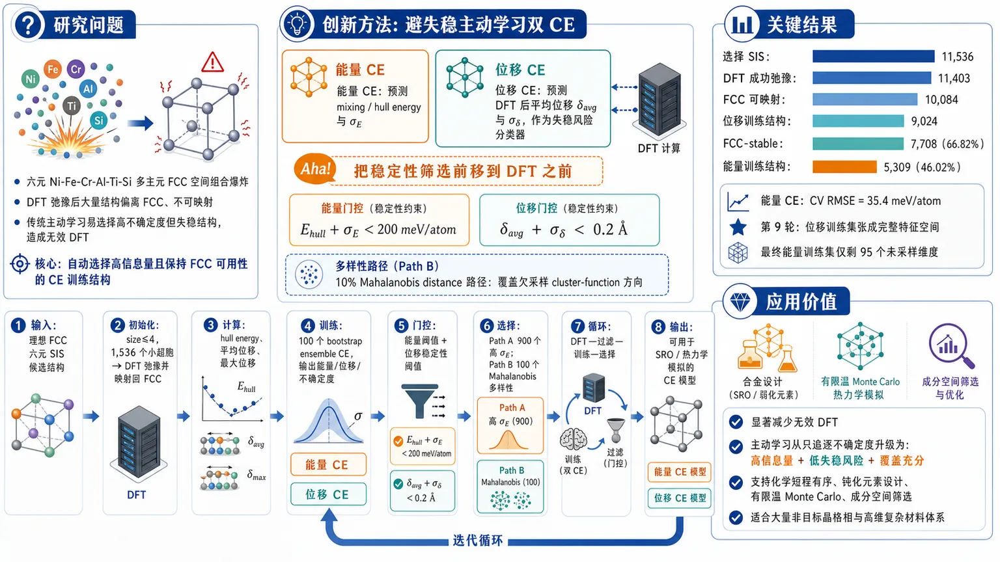
研究问题在六元 Ni-Fe-Cr-Al-Ti-Si 复杂多主元 FCC 合金空间中，组合数量爆炸且大量候选结构在 DFT 弛豫后会偏离 FCC 晶格；传统 cluster expansion 主动学习容易反复选择“高不确定度但失稳、不可映射”的结构，造成大量无效 DFT。核心问题是：如何在高维、强失稳、多元素材料空间中，自动选择既有信息量又能保持 FCC 可用性的 CE 训练结构。创新方法提出“避失稳主动学习”双 CE 框架：一个 CE 预测 mixing/hull energy，另一个 CE 不预测能量，而预测 DFT 弛豫后相对理想 FCC 的平均原子位移，作为动力学失稳风险分类器。Aha 点是把稳定性筛选前移到 DFT 之前：候选结构需同时满足 Ehull+σE<200 meV/atom 与 δavg+σδ<0.2 Å，才按能量不确定度选取；同时用 10% Mahalanobis distance 路径在 cluster-function 空间中寻找欠采样方向，防止主动学习自我偏置。工作流程输入为理想 FCC 晶格上的六元合金 SIS 候选结构；先用 size≤4 的 1,536 个小超胞初始化，进行 DFT 弛豫并映射回 FCC，计算 hull energy、平均位移和最大位移；按能量与位移阈值分别构建能量 CE 训练集和位移 CE 训练集；训练 100 个 bootstrap ensemble CE，输出能量、位移及不确定度；下一轮候选先经预测能量门控和位移稳定性门控，再由 Path A 选择 900 个高能量不确定度结构，由 Path B 选择 100 个 Mahalanobis 距离最大的多样性结构；循环 DFT—过滤—训练—选择，最终得到可用于复杂合金 SRO/热力学模拟的 CE 模型。关键结果共选择 11,536 个 SIS，DFT 成功弛豫 11,403 个，FCC 可映射 10,084 个；获得 9,024 个位移训练结构、7,708 个 FCC 稳定结构和 5,309 个能量训练结构。在只有 Ni 和 Al 单质 FCC 热力学稳定的严苛六元空间中，仍实现 66.82% 的 FCC-stable 产率和 46.02% 的能量训练产率。最终能量 ensemble CE 达到 CV RMSE=35.4 meV/atom；位移分类器能高召回识别失稳结构；Mahalanobis 多样性选择使位移训练集在第 9 轮张成完整特征空间，能量训练集最终仅剩 95 个未采样维度。应用价值该方法显著减少复杂合金 CE 构建中的无效 DFT，把主动学习从“只追逐不确定度”升级为“选择高信息量、低失稳风险、覆盖充分”的自动化材料建模流程。它可用于高维多主元合金的化学短程有序、钝化元素设计、有限温 Monte Carlo 模拟和成分空间筛选，尤其适合存在大量非目标晶格相、传统 DFT 枚举代价极高的复杂材料体系。第一部分：核心概览
该研究提出面向复杂多主元合金 cluster expansion（CE） 的 instability-avoiding active learning 工作流，把 结构稳定性分类 嵌入 DFT 前候选筛选，用平均原子位移 CE 预测 FCC 动力学失稳风险，并用 Mahalanobis distance 增强训练集多样性。基准体系为六元 Ni-Fe-Cr-Al-Ti-Si FCC 空间，只有 Ni 和 Al 的 FCC 相热力学稳定，因而是高失稳、高维组合空间中的严苛测试案例。核心地位在于把主动学习从“高不确定度优先”推进到“高信息量且可计算、可训练”的自动化 CE 构建范式。
---
第二部分：结构化快速回顾
《Instability-Avoiding Active Learning for Cluster Expansions in Complex Multielement Materials》（None，）
背景
复杂 MPEA 中化学短程有序影响韧性、层错能、疲劳寿命、辐照抗性、磁性和钝化行为；六元 Fe-Ni-Cr-Al-Ti-Si FCC 空间组合爆炸且大量结构会偏离目标晶格，传统 CE 训练需要大量浪费性 DFT。
方法
构建双 CE 主动学习框架：一个预测 mixing energy / hull energy，一个预测 average atomic displacement 作为 FCC 稳定性分类器。候选结构先经预测能量与预测位移过滤，再按能量不确定度选取 90%；另有 10% 按 Mahalanobis distance 选取以提升数据多样性。
结果
总共选择 11,536 个 SIS，DFT 成功弛豫 11,403 个，FCC 可映射 10,084 个，位移训练集 9,024 个，FCC 稳定 7,708 个，能量训练集 5,309 个。最终能量 ensemble CE 的 CV RMSE = 35.4 meV/atom。
讨论
平均原子位移 CE 能快速形成有效稳定性分类器，高召回率优先减少“预测稳定但 DFT 后失稳”的浪费。Si 含量超过约 20% 后平均位移急剧升高，是 FCC 失稳的重要来源。
局限
能量模型在高 hull energy 区域系统性低估不稳定性；Si-rich、Ni-rich、Fe-rich 区域误差较高；高维 ECIs 难以解释；Bayesian CE 等更统一的不确定度—正则化模型尚未整合。
结论
显式避开失稳结构的主动学习能在“只有少数元素适合目标晶格”的六元 FCC 合金空间中维持较高 DFT 有效产出，并扩展 CE 到更复杂、更失稳的多元素材料设计任务。
---
第三部分：逐章节冷凝解析
1 Introduction
MPEA properties are governed by chemical short-range order
多主元合金（MPEAs） 的应用覆盖高温、低温、核能、功能材料和催化领域，其性能与原子尺度 chemical short range ordering（SRO） 密切相关。关键性能包括 ductility、stacking fault energies、fatigue life、radiation resistance 和 magnetism。证据基础为：*"their performance is tied to properties that are modulated by chemical short range ordering (SRO) at the atomic scale such as: ductility, stacking fault energies, fatigue life radiation resistance, and magnetism"*。
SRO-passivation coupling motivates the Fe-Ni-Cr-Al-Ti-Si space
研究目标聚焦 SRO 与钝化（passivation） 的关系。Fe/Ni-Cr 合金中，Cr 位点渗流受 SRO 调控，是形成保护性钝化氧化物的必要条件：*"Cr site percolation, which is modulated by SRO, is required for the formation of a protective passivating oxide"*。六元体系引入 Al、Ti、Si 作为额外地壳丰度较高的钝化元素，扩展奥氏体不锈钢 Fe-Ni-Cr 基底，同时保留 FCC parent lattice：*"incorporating Al, Ti, and Si as additional earth-abundant passivating elements, while retaining the FCC parent lattice"*。
Six-component CE faces combinatorial explosion
六元合金的 CE 训练难点来自两类快速增长：化学相互作用排列数和均匀成分网格点数。原始表述为：*"Both the number of distinct chemical interaction permutations and the number of uniform-composition grid points increase rapidly with number of alloying elements considered"*。FCC 原胞的 symmetrically inequivalent supercells（SIS） 数量随轨道尺寸急剧增长：N=1 为 6，N=2 为 30，N=3 为 150，N=4 为 1,350，N=5 为 3,984，N=6 为 42,200；1–6 原子轨道总 SIS 为 47,720。
Cluster expansion provides the tractable Hamiltonian
CE 将构型哈密顿量分解为 N-body clusters，包括 pairs、triplets、quadruplets 等，每种物种装饰对应独立相互作用参数：*"the configurational Hamiltonian is decomposed into contributions from N-body clusters (pairs, triplets, quadruplets, etc.) of lattice sites"*。CE 的优势在于用装饰型哈密顿量低成本执行大量 MC：*"millions of MC trials can be performed across thousands of compositions at relatively low cost"*。
CE is not limited to thermodynamic energy
CE 框架不仅能表达内能，也能扩展任意强度性质：*"Any intensive property can be expanded to capture its dependence on the underlying lattice decorations"*。示例包括 band gap、strain 和张量性质。这一点支撑后续把 average atomic displacement 也建模为 CE，而非仅建模能量。
Post-DFT instability filtering wastes calculations in poorly behaved spaces
CE 训练前必须筛除弛豫后远离理想晶格的结构，因为这代表 dynamical instability 而不是小的平衡位移：*"Structures that relax far from the ideal lattice, which indicate dynamical instability rather than small equilibrium displacements, are excluded"*。六元 FCC 空间中 SIS 数量巨大，盲目 DFT 不现实：*"making indiscriminate DFT evaluations impractical"*。
Fe-Ni-Cr-Al-Ti-Si is intentionally difficult as an FCC alloy
该体系为“poorly behaved” FCC 空间。OQMD hull energy 显示：FCC 中只有 Ni = 0 meV/atom 和 Al = 0 meV/atom 热力学稳定；Fe FCC 为 161 meV/atom，Cr FCC 为 394 meV/atom，Ti FCC 为 70 meV/atom，Si FCC 为 537 meV/atom。原始判断为：*"Only Ni and Al are stable in FCC, while FCC Cr and Si are highly unfavorable"*。此外存在非 FCC 金属间化合物，如 B2 NiAl 和 FeTi：*"multiple non-FCC intermetallics such as the B2 NiAl and FeTi are present"*。
The core design goal is instability avoidance before DFT
主动学习若只按不确定度选结构，会反复选择欠采样但失稳的结构，导致 DFT 浪费和偏差增强：*"under-sampled, unstable structures with increasing bias in each iteration as their uncertainty metrics remain large relative to those of stable structures"*。解决策略是引入第二个 CE：不预测能量，而预测从理想 FCC 的平均原子位移：*"we introduce a second CE not of energy, but of the average atomic displacement from ideal FCC"*。
Average displacement is used as a lattice-agnostic stability proxy
平均位移模型假定，当成分或局域有序接近动力学稳定极限时，平均位移会增大：*"average displacements grow as compositions or local ordering approach the limits of dynamical stability"*。优势是无需预先知道稳定区域，且对晶格类型无强依赖：*"This approach is lattice agnostic and does not require any a posteriori knowledge of stability regimes"*。
Prior six-component ab initio CE work is rare
六元以上 ab initio CE 文献很少，仅有三项先例，且针对更“well-behaved”的体系：*"only three prior works report ab initio-based CEs for six or more components, all involving more well-behaved alloy systems"*。因此，该工作在困难六元 FCC 空间中展示主动避失稳 CE 构建流程。
---
2 Workflow
2.1 Overview
The workflow targets structures likely to survive post-DFT filtering
工作流的区分性特征是 pre-DFT targeting：在 DFT 之前优先选择可能通过 DFT 后筛选的结构，从而减少浪费：*"The distinguishing feature of our workflow is the explicit pre-DFT targeting of structures likely to survive post-DFT filtering"*。
The active learning loop contains seven steps plus initialization
主动学习从 Step 0 初始结构选择进入循环；Step 1 DFT 弛豫；Step 2 映射到理想晶格装饰并得到原子位移；Step 3 按 hull energy 与平均位移过滤；Step 4 加入能量 CE 或位移 CE 训练集；Step 5 训练 ensemble CE；Step 6 预测所有候选结构的 hull energy、mean displacement 和不确定度；Step 7 用 A/B 两条路径选择下一批 DFT 结构。关键句为：*"Step 7 uses two parallel paths, A and B, to select new structures for DFT evaluation"*。
Path A combines stability filtering and uncertainty ranking
主路径 A 先按预测 hull energy 与位移过滤，再按能量不确定度排名。图示说明为：*"candidates are first filtered by predicted energy relative to the convex hull, then by predicted FCC stability using the displacement model, before the remaining structures are ranked and selected based on energy uncertainty"*。
Path B injects diversity independent of model uncertainty
辅助路径 B 只按训练集外的 Mahalanobis distance 选择结构，以提高构型空间覆盖：*"structures are selected solely based on their Mahalanobis distance from the existing training dataset to promote data diversity"*。
---
2.2 Model Formulation and Training
Cluster vector space is defined on FCC with fixed geometric cutoffs
CE 的 cluster function vector space 建立在理想 FCC 晶格上，晶格参数 a = 3.6 Å：*"an ideal FCC lattice with lattice parameter a = 3.6 Å"*。截断半径为：pairs 8.0 Å、triplets 4.5 Å、quadruplets 3.6 Å、quintuplets 3.6 Å。对应最大近邻壳层为第 9、7、3、1 近邻：*"maximum neighbor shells of the 9th, 7th, 3rd, and 1st nearest neighbors"*。
The truncated CE still contains 1,660 unique cluster permutations
该截断下唯一 cluster permutations 数为：pairs 150、triplets 495、quadruplets 415、quintuplets 600，合计 1,660。证据为：*"the number of unique cluster permutations for each body order is 150 (pairs), 495 (triplets), 415 (quadruplets), and 600 (quintuplets)"*。
Bootstrap aggregation defines the ensemble CE
ensemble CE 使用 bootstrap aggregating，最终预测取 ensemble 平均：*"Our ensemble cluster model is constructed using bootstrap aggregating, with the final prediction taken as the average over the ensemble"*。预测公式为
[
Q=barJ^TΓ
]
其中 Q 为 mixing energy 或 average atomic displacement，(barJ) 为平均 ECI 向量乘 cluster multiplicities，(Γ) 为 cluster function vector。
Uncertainty comes from ensemble ECI covariance
预测不确定度为 ensemble 输出标准差：*"The uncertainty in the ensemble prediction is quantified by the standard deviation of model outputs"*。公式为
[
σ_Q²⁼Γ^TΣ_JΓ
]
其中 (Σ_J=Cov(J,J))，即 ensemble 中 ECI 向量的协方差矩阵。
---
2.3 Active Structure Selection and Filtering
Initialization uses all SIS of size four and smaller
初始数据集采用无偏枚举方案，选择所有 size ≤ 4 的 SIS，总数 1,536：*"selecting all SIS of size four and smaller (1,536 total structures)"*。这避免预设稳定性偏见。
Post-DFT instability is quantified by average and maximum displacement
结构失稳用两个指标衡量：平均原子位移 (δₐᵥg) 和最大原子位移 (δₘₐₓ)：*"Structural instability is quantified using two metrics: (i) the average atomic displacement, δavg, and (ii) the maximum atomic displacements, δmax"*。计算前移除晶胞旋转、均匀体积变化和整体平移：*"Contributions from cell rotation, uniform cell volume changes, and net atomic translations are removed"*。
Energy-model training uses stricter filters
能量模型的 DFT 后筛选条件为：
[
Eₕᵤₗₗ<200 meV/atom,quad δₐᵥg<0.2 Å,quad δₘₐₓ<0.4 Å
]
表中列明为：*"Filters for energy model (DFT): Ehull < 200; δavg < 0.2, δmax < 0.4"*。
Displacement-model training uses broader filters
位移模型的 DFT 后筛选更宽松：
[
Eₕᵤₗₗ<400 meV/atom,quad δₐᵥg<0.4 Å,quad δₘₐₓ<0.8 Å
]
表述为：*"The displacement model employs more permissive post-DFT filtering thresholds than the energy model, with cutoff values doubled"*。原因是位移模型只作为稳定性分类器，而非高精度预测器：*"the role of the displacement model as a stability classifier rather than a high-accuracy predictor"*。
Pre-DFT selection is conservative by adding uncertainty
候选结构必须满足预测 hull energy 加不确定度低于阈值：
[
Eₕᵤₗₗ+σ_E<200 meV/atom
]
同时满足
[
δₐᵥg+σ_δ<0.2 Å
]
原始说明为：*"only candidate structures satisfying a predicted hull energy plus energy uncertainty less than the post-DFT energy filter threshold of 200 meV/atom are retained"*。这种保守性可通过缩放 uncertainty 调节：*"The degree of conservativeness can be adjusted by scaling the ensemble uncertainty contribution"*。
Each loop selects 1,000 structures, split 900/100
每轮主动学习选 1,000 个结构。Path A 占 90%，即 900 个高能量不确定度结构：*"This first Path A accounts for 90% of the selected structures in each iteration"*；Path B 占 10%，即 100 个 Mahalanobis-distance 最大结构：*"the top 100 structures are selected"*。
Mahalanobis selection uses WPCA in cluster-function space
Path B 对当前训练集 cluster function vectors 做 whitened principal component analysis（WPCA），用 Mahalanobis distance 衡量候选结构相对训练分布的距离：*"WPCA is performed on the cluster function vectors of the current training set"*；*"quantified by the Mahalanobis distance"*。这种方案强烈奖励未充分采样方向，弱化已充分采样方向：*"strongly rewards projections along poorly sampled directions ... while weakly weighting directions that are already well represented"*。
Diversity selection protects against self-reinforcing active-learning bias
完全依赖演化模型选择数据会形成自增强偏差：*"reliance on an evolving model to select new training data can lead to self-reinforcing biases"*。Path B 虽可能降低训练数据产出率，但仅占 10%，被视为稳健性换取的合理代价：*"an acceptable tradeoff for improved robustness, particularly since this path affects only 10%"*。
---
2.4 DFT Parameters
DFT uses VASP 6.2.1 with PBE
所有 DFT 计算使用 VASP 6.2.1 和 PBE exchange-correlation functional：*"DFT calculations were performed with the Vienna Ab initio Simulation Package, VASP, (version 6.2.1) using the Perdew-Burke-Ernzerhof (PBE) exchange-correlation functional"*。
Ferromagnetic initialization uses 2 μB per atom
所有结构以铁磁构型初始化，每个原子初始磁矩 2 μB：*"All calculations were initialized in a ferromagnetic configuration, with an initial 2 μB applied to each atom"*。该设置对 Ni/Fe-rich 区域误差讨论尤其重要，因为磁相互作用可能影响能量建模。
Relaxations use Γ-centered k grids with density 20,000 ų
k 点网格为 Γ-centered，最低 reciprocal-space k-point density 为 20,000 ų：*"Γ-centered k-point grids were employed and selected to maintain a minimum reciprocal space k-point density of 20,000 Å3"*。该值在弛豫中 k 点网格更新的能量连续性和计算成本之间折中：*"a compromise between maintaining energy continuity ... and overall computational cost"*。
Structures are deliberately perturbed before relaxation
弛豫前所有枚举结构被扰动以打破理想晶格对称性：*"all enumerated structures were perturbed to break ideal lattice symmetry"*。晶胞矩阵乘以 (A=I+ϵ)，其中对称矩阵 (ϵ) 元素来自标准差 0.07 的正态分布；原子笛卡尔坐标再施加标准差 0.2 Å 的随机位移：*"normally distributed displacements with a standard deviation of 0.2 Å"*。
Relaxation convergence is strict; failures are discarded
弛豫至最大原子力小于 5 meV Å⁻¹：*"relaxed until the maximum force on any atom was less than of 5 meV Å−1"*。弛豫最多 500 iterations，未收敛结构排除出全部数据集：*"Structure relaxations were aborted after 500 iterations"*；*"excluded from all datasets"*。失败通常与大晶胞形变相关，无法良好映射回 FCC：*"commonly associated with large cell shape changes that would map poorly onto the target FCC lattice"*。
ECI interpretation is difficult in high-dimensional CE
高维模型中 ECI 可解释性有限：*"the interpretation of effective cluster interaction (ECIs) is challenging for such a high-dimensional model"*。这表明该工作重点在预测与筛选性能，而非从 ECI 中直接解释化学机理。
---
2.5 Implementation Details
The workflow integrates icet, ASE, and trainstation
icet 用于 cluster function vector space 构建、结构映射和 SIS 枚举：*"icet package ... is used for cluster function vector space construction, structure mapping, and SIS generation"*。ASE 用于 DFT 作业管理与数据库追踪：*"ASE is used for DFT job management, and ASE databases are used to tag, track, and organize training data"*。trainstation 用于训练和拟合：*"Model training and fitting are carried out using the trainstation package"*。
Each ensemble contains 100 CE models
ensemble 训练使用 trainstation 的 EnsembleOptimizer，每个 ensemble 含 100 个独立 CE：*"Each ensemble contained 100 individual CE models"*。
LASSO regularization uses α = 10⁻⁴ to avoid numerical instability
所有模型使用 LASSO regularization，最小正则化参数 (α=10⁻⁴)：*"All models are fit using LASSO regularization with a minimal regularization parameter of α = 10−4"*。低于该值会导致优化收敛失败：*"Lower values of α resulted in convergence failures during optimization"*。
Bootstrap uses 90% training and 10% test per model
每个 ensemble 成员随机抽取 90% 可用训练数据拟合，剩余 10% 作为该模型 test set：*"randomly selecting 90% of the available training dataset for fitting. The remaining 10% of structures are assigned to that model’s test set"*。ensemble CV RMSE 为所有个体模型 CV RMSE 的均值：*"reported as the mean CV RMSE across all individual models"*。
---
3 Results
3.1 Yields
Filtering hierarchy separates selected, relaxed, mappable, stable, and trainable structures
数据集按严格程度分层：selected SIS；DFT 内完成弛豫的 relaxed structures；可映射回 FCC 的 FCC-mappable subset；通过宽松位移和能量筛选的 displacement training set；满足能量模型位移标准的 FCC-stable subset；同时满足能量与位移筛选的 energy training set。原始定义为：*"we decompose the collected structures into a hierarchy of subsets defined by increasingly strict criteria"*。
Overall DFT and filtering yields remain surprisingly high
总计选择 11,536 个结构；弛豫成功 11,403 个，产率 98.85%；FCC 可映射 10,084 个，产率 87.41%；位移训练集 9,024 个，产率 78.22%；FCC 稳定 7,708 个，产率 66.82%；能量训练集 5,309 个，产率 46.02%。尽管六元中仅两个元素 FCC 稳定，FCC-stable 产率仍达 66.82%：*"we observe a surprisingly high mean yield of 66.82% FCC-stable structures"*。
Energy training yield is lower because of energetic filtering
能量训练产率 46.02% 明显低于 FCC-stable 产率 66.82%，主要由 hull energy 过滤造成：*"The average yield of energy training data is lower, at 46.02% (5,309 structures), reflecting the additional energetic filtering requirements"*。
Small initial SIS have artificially high FCC-stable yield
初始 size ≤ 4 小超胞具有较高 FCC-stable yield，随后第一轮主动学习下降，再部分恢复。解释为小超胞难以容纳长波长失稳模：*"limited ability of smaller supercells to accommodate long-wavelength unstable modes"*；较大超胞更易表现这些失稳：*"larger supercells ... can more readily accommodate such instabilities"*。
Later energy-yield decline indicates depletion of near-hull candidates
初始恢复后，除 energy training set 外各子集产率大致稳定；energy training yield 持续下降。由于 FCC-stable yield 近似恒定，下降主要来自能量筛选：*"this decline must be associated primarily with energetic filtering"*。合理机制是模型逐步耗尽接近凸包、符合能量窗口的 SIS：*"progressive depletion of available SIS configurations that fall within the targeted energy window near the convex hull"*。
Cr lowers median mixing energies; Ti and Si show compound-forming signatures
DFT mixing energy 的元素分箱统计显示：Ni、Fe、Al 浓度升高对 median mixing energy 影响较温和；Cr 含量升高使 median mixing energy 降低：*"Cr has low mixing energies with the other elements, leading to progressively lower median mixing energies"*。Ti 在约 1/3 atomic fraction 处 median mixing energy 最低，显示强金属间化合物倾向：*"Ti shows a pronounced minimum ... near 1/3 atomic fraction"*。Si 在约 50% Si 附近出现更强硅化物形成倾向：*"Si exhibits an even stronger propensity for silicide formation, with the median mixing energy occurring near 50% Si"*。
Si above 20% sharply destabilizes FCC
平均位移分布最显著特征是 Si > 20% 后位移急剧上升：*"sharp increase in displacement above 20% Si"*。这明确指示 Si 在该 FCC 空间中强烈 destabilizing：*"highlighting the destabilizing role of Si in the FCC lattice"*。
Ni, Fe, and Cr reduce displacement; Ti increases displacement
元素趋势为：Ni、Fe、Cr 含量升高通常降低 median displacement；Ti 增加 displacement；Al 在约 50% 出现位移峰，可能与形成 B2-type phases with Ni and Fe 以及与 Ti 形成四方类似物有关：*"Al exhibits a peak in displacement near 50% concentration"*。
High-Si FCC-mappable structures are underrepresented
Si 浓度高于 20% 的 FCC-mappable 结构数为 2,501，少于同浓度范围下 Ni 3,159、Fe 3,332、Cr 3,342、Al 2,798、Ti 3,470。原因包括晶格失稳导致不可映射，以及主动学习预筛选避开高位移构型：*"due to both increased lattice instabilities ... and the active avoidance of high-displacement configurations"*。
---
3.2 Performance Progression
Ensemble CV scores decrease with active learning iterations
随着每轮加入新弛豫结构，ensemble 模型预测性能持续提升，CV score 下降：*"the addition of newly relaxed structures improves the predictive performance of the ensemble models, as reflected by the steadily decreasing cross-validation (CV) scores"*。
CV-optimal adaptive LASSO models provide a soft lower bound
除 ensemble 外，还训练 adaptive LASSO 模型，通过对数变化的 (L¹) 正则化寻找每轮 CV-optimal 模型：*"adaptive LASSO scheme with logarithmically varying levels of L1 regularization"*。这些模型提供给定训练集可达到 CV 性能的软下界：*"give a soft lower bound on the best achievable CV performance"*。
Strong regularization would damage ensemble uncertainty
ensemble 依赖成员间方差估计不确定度；强正则化会压制 inter-model variance，降低不确定度质量：*"applying strong regularization during ensemble fitting would suppress inter-model variance and thereby degrade overall uncertainty estimates"*。
Bayesian formulations could unify uncertainty and regularization
Bayesian CE 可在单一模型中同时提供不确定度和正则化，但尚未纳入：*"a Bayesian formulation could simultaneously provide both uncertainty estimates and appropriate regularization within the a single model"*。
Energy model improves fastest in the first five loops
ensemble energy model 最大提升发生在约前 5 个学习循环，之后继续缓慢改善：*"the largest improvements occur during approximately the first five learning loops"*。这种慢收敛符合高化学和构型复杂度体系：*"expected for a chemically and configurationally complex system"*。
Displacement model improves rapidly and then stagnates
位移 ensemble 快速提升后停滞：*"the ensemble displacement models rapidly improve and then stagnate"*。CV-optimal regularized displacement 模型从一开始就接近 superset 性能，新增数据仅带来边际改善：*"start close to the superset model performance and show only marginal improvement"*。
Displacement is easier to learn than mixing energy
位移模型快速改善有两个原因：更宽松过滤产生更多训练数据；平均位移本身比 mixing energy 更简单。证据为 superset energy model 用 9,984 个训练结构得到 527 个非零参数；superset displacement model 用 17,310 个训练结构得到 410 个非零参数：*"the CV-optimal superset energy model has 527 non-zero parameters derived from 9,984 training structures, while the corresponding displacement model contains 410 non-zero parameters trained on 17,310 structures"*。能量模型每训练结构参数数超过位移模型两倍：*"more than double the number of parameters per training structure"*。
---
3.3 Stability Classified by Displacement
Displacement CE plus threshold acts as a structural stability classifier
位移 CE 与阈值结合等价于 structural stability classifier：*"The combination of displacement CE models with explicit thresholds is equivalent to constructing a structural stability classifier model"*。目标是在 DFT 之前排除可能偏离 FCC 的结构：*"excludes structures that are likely to relax far from the FCC lattice prior to DFT evaluation"*。
Metrics target unstable-structure detection
分类指标包括 precision、recall 和 (F₁)。定义围绕 unstable 结构：
[
Precision=fracTruly UnstableFalsely Unstable+Truly Unstable
]
[
Recall=fracTruly UnstableFalsely Stable+Truly Unstable
]
[
F₁₌₂fracPrecisionḑotRecallPrecision+Recall
]
原文给出：*"Precision, recall, and F1 score"*。
Falsely stable cases are the most costly
Falsely stable 指预测稳定但 DFT 后失稳，导致不可用且浪费 DFT：*"falsely stable structures are unusable and lead directly to wasteful DFT calculations"*。Falsely unstable 则只是暂时没选中，可后续再考虑：*"they remain in the candidate pool and may be reconsidered in subsequent learning iterations"*。
High recall is the classifier’s primary objective
稳定性分类器首要目标是高 recall，而非单纯高 precision：*"Achieving high recall is the primary objective of the stability classifier"*。因为 recall 高意味着大多数真实失稳结构能被提前识别，减少 DFT 浪费。
Uncertainty-aware ensemble classifiers outperform regularized point models
ensemble 位移分类器持续实现高 recall，因为阈值包含预测不确定度容忍项：*"classification incorporates a tolerance factor proportional to the predicted uncertainty"*。相比之下，per-loop CV-optimal 和 superset CV-optimal regularized models 表现更差，因为无不确定度估计，无法保守阈值化：*"These regularized models do not provide uncertainty estimates, preventing conservative thresholding"*。
---
3.4 Diversification
Mahalanobis diversification tracks unspanned dimensions
为评估数据多样性，跟踪 cluster-function space 中训练集尚未采样/张成的维度数：*"number of unsampled dimensions remaining in the training set as a function of learning loop iteration"*。该指标用于判断训练数据是否覆盖 CE 特征空间。
Displacement training set spans full cluster-function space by loop nine
位移训练集迅速扩展覆盖并在第 9 个学习循环达到完整维度张成：*"achieves full dimensional spanning by the ninth learning loop"*。这与其较高数据产出和宽松筛选相关。
Energy training set remains less complete but steadily improves
能量训练集因筛选更严格，覆盖增长更慢；最终仍有 95 个未采样维度，占总空间 5.7%：*"reaches a final 95 unsampled dimensions, corresponding to 5.7% of the total space"*。
Superset energy data reduce unspanned dimensions to 41
约为最终数据集 ~2× 的 superset energy training dataset 仅有 41 个未采样维度，占 2.5%：*"contains only 41 unsampled dimensions (2.5%)"*。这说明更大训练体量能进一步改善高维覆盖。
Mahalanobis selection systematically improves configurational coverage
Mahalanobis-based diversification 对位移模型特别有效，对能量模型也持续改善：*"effective at systematically expanding the sampled configuration space, particularly for the displacement model"*。该结果支持保留 10% diversity path 的必要性。
---
3.5 Ultimate Models
Final energy ensemble reaches CV RMSE of 35.4 meV/atom
最终 ensemble energy model 的 CV RMSE = 35.4 meV/atom：*"The final ensemble energy model achieves a cross validation (CV) RMSE score of 35.4 meV/atom"*。对于六元高维失稳 FCC 空间，该误差反映可用但仍非化学精度级别的能量模型。
High-hull-energy structures are systematically underpredicted
预测—DFT hull energy parity plot 显示，当结构高于凸包超过约 ~100 meV/atom 时，模型系统性低估 hull energy：*"systematically under-predicts energy above the convex hull for structures more than ∼100 meV/atom above the hull"*。这意味着模型在高能区略微高估热力学稳定性：*"slightly overestimates thermodynamic stability in the high-energy regime"*。
Energy errors correlate strongly with composition
元素分辨误差分布显示误差与成分强相关：*"mixing energy errors shows strong correlations with composition"*。Si 含量升高导致误差显著增加：*"errors increase significantly with increasing Si content"*，反映 Si 强成始化合物行为难以建模：*"difficulty of accurately modeling the strong compound-forming behavior of Si"*。
Ni-rich and Fe-rich errors may involve magnetism
Ni 和 Fe 高浓度区域 mixing energy error 也增加。组合采样不足不足以完全解释，因为弱磁元素中未见类似趋势：*"this effect alone cannot explain the observed trends, as similar behavior is not seen for weakly magnetic elements"*。可能因素是 Ni/Fe-rich 区域磁相互作用：*"magnetic interactions in Ni- and Fe-rich compositions as a likely contributing factor"*。
Binary hull comparison is deferred because there are 15 binaries
六元体系包含 15 个 binary systems，因此二元凸包比较放入补充信息 Figure S3：*"Given the 15 binary systems present in this work, however, these comparisons are presented in Figure S3"*。趋势为低 mixing energy 尺度二元，如 Ti-Cr，相对误差更大；高 mixing energy 二元，如 Ti-Al，误差更小：*"relative errors are larger for binaries with small mixing energy scales like Ti-Cr and smaller for those with high mixing energy binaries like Ti-Al"*。
Removing high-Si structures would not meaningfully improve global RMSE
所有训练结构 RMSE 为 22.5 meV/atom；限制到 ≤20% Si 时 RMSE 为 21.9 meV/atom，改善仅 0.6 meV/atom：*"22.5 meV/atom compared to 21.9 meV/atom when restricted to structures with ≤20% Si"*。因此 Si 相关误差并非总体 CV 指标的主导来源：*"Si-related error contributions are not dominant in the overall CV metric"*。
Available source text ends before final displacement-model discussion is complete
可解析内容在 *"The final en"* 处截断，未包含完整最终位移模型、最终结论或后续讨论段落。
---
第四部分：深度理解与语言支持
1. Instability-avoiding active learning
该表达不是普通“主动学习”，而是强调主动学习的目标函数被改造为：不仅找 uncertain / informative 的结构，还要避开 DFT 后很可能不可用 的失稳结构。核心差别在于传统主动学习容易偏向高不确定度区域，而这些区域在复杂合金中常常是晶格失稳区；该策略把“可训练性”纳入 acquisition criterion。
2. Dynamically unstable
Dynamically unstable 指理想 FCC 装饰不是局部稳定势能极小点，弛豫时会沿某些软模或结构畸变方向显著偏离原晶格。它不同于 thermodynamically unstable：后者可仍保持 FCC 结构但能量高于凸包；前者连目标晶格表示都可能失效。该研究用 (δₐᵥg) 和 (δₘₐₓ) 捕捉这种偏离。
3. FCC-mappable
FCC-mappable 不是“结构仍完美 FCC”，而是弛豫后还能被映射回理想 FCC 晶格上的某种装饰。若晶胞形状或原子位移太大，无法明确判断每个原子对应哪个理想 FCC 位点，就不可用于基于固定晶格的 CE。
4. Hull energy / energy above the convex hull
Hull energy 表示某结构相对于热力学凸包的能量高度。(Eₕᵤₗₗ=0) 表示热力学稳定；数值越高，越可能在平衡下分解为其他相。该研究将 200 meV/atom 作为能量 CE 训练过滤阈值，因为过高能量结构对后续有限温 MC 的平衡 SRO 贡献较小。
5. Mahalanobis distance
Mahalanobis distance 不是普通欧氏距离，而是在数据协方差归一化后的距离。若某个方向训练数据本来变化很大，则该方向差异权重较小；若某个方向训练数据很少覆盖，则同样投影差异会被放大。结合 WPCA 后，它可主动寻找 cluster-function space 中欠采样方向，降低训练集偏置。
---
疑难查证：复杂概念拆解
为什么平均原子位移可以作为稳定性分类器？
固定晶格 CE 假设所有结构都可表示为同一理想母晶格上的物种装饰。若 DFT 弛豫后原子大幅偏离理想 FCC 位点，CE 的输入装饰已经不能代表真实局部结构，训练这种数据会污染模型。平均原子位移 (δₐᵥg) 是一个连续标量，能在“完全稳定”和“彻底不可映射”之间提供渐变信号。用 CE 学习该标量，相当于学习哪些成分与局域排列容易触发 FCC 失稳。
为什么高 recall 比高 precision 更重要？
分类对象是“失稳结构”。
- 高 recall：真实失稳结构大多被提前拦截，少做无用 DFT。
- 低 precision：有些稳定结构被误判为失稳，但它们仍留在候选池，未来模型更新后可重新被选中。
因此 falsely stable 比 falsely unstable 更昂贵。该逻辑使得 uncertainty-aware conservative thresholding 合理：宁可多拦一些，也要少漏掉真正失稳结构。
为什么主动学习会反复选择失稳结构？
传统 uncertainty sampling 倾向选择 ensemble 分歧大的结构。失稳区域由于训练数据少、映射困难、能量行为复杂，模型不确定度长期偏高。如果每轮都按不确定度最高选结构，就会反复选择这些 DFT 后被过滤的结构，训练集并不会有效增长，偏差反而增强。引入位移 CE 后，失稳高不确定区域会先被稳定性门控过滤。
为什么 Mahalanobis distance 能避免训练集退化？
主动学习的 Path A 依赖当前模型。如果当前模型已有偏差，它选出的新数据也可能强化该偏差。Path B 不看模型预测能量或位移，只看候选结构在 CE 特征空间中是否远离已有训练分布。这样可以探索被 Path A 忽略的方向，特别是高维 CE 中某些 cluster correlations 可能长期未被采样，导致拟合矩阵秩不足或泛化差。
---
第五部分：创新评估与关联
Innovation 1: Stability classification is embedded before DFT, not after DFT
过去 CE 工作通常在 DFT 后筛掉失稳结构；该策略把稳定性判断前移到候选选择阶段。关键新增点是训练一个 average atomic displacement CE，用 ensemble uncertainty 做保守筛选，直接减少无效 DFT。解决的问题是：复杂多元素空间中主动学习会不断选择高不确定但不可用的失稳结构。
Innovation 2: CE is used for a non-energy stability proxy
CE 常用于能量、自由能或其他性质预测；这里把 post-relaxation average displacement from ideal FCC 建模为 CE，利用 CE 对构型依赖性的表达能力来近似动力学稳定边界。该设计不需要预先标注稳定相区，也不要求声子计算，因此比显式动力学稳定分析便宜得多。
Innovation 3: Active learning acquisition is constrained by both energy relevance and lattice validity
候选结构需同时满足
[
Eₕᵤₗₗ+σ_E<200 meV/atom
]
和
[
δₐᵥg+σ_δ<0.2 Å
]
然后才按能量不确定度排序。相较单纯 uncertainty sampling，这是一种“物理可用性约束下的信息增益最大化”。
Innovation 4: Mahalanobis diversification protects against model-driven sampling bias
10% Path B 的 Mahalanobis selection 不是主要为了立即降低 RMSE，而是为了确保 cluster-function space 覆盖并防止自增强偏差。位移训练集第 9 轮达到全维覆盖，能量训练集最终未采样维度降至 95（5.7%），说明多样性注入在高维 CE 中具有实际效果。
Innovation 5: Benchmarking occurs in an unusually hostile six-component FCC space
六元以上 ab initio CE 先例很少，且多为更稳定体系。该测试空间中 FCC 稳定元素只有 Ni 和 Al，Cr 与 Si 的 FCC hull energy 分别高达 394 和 537 meV/atom，同时存在 B2 NiAl、FeTi 等非 FCC 金属间相。能在这种空间中获得 5,309 个能量训练结构和 35.4 meV/atom 的最终 CV RMSE，显示该流程对高失稳复杂合金空间具有推广价值。
-
07
📊 含图深析
📄 摘要：将 47 种双金属金属间化合物组成的约1200个吸附数据与本征材料性质、s/p/d 带中心及电子填充特征联合建模，系统分析 N2、N2H、NH3 在不同表面位点的吸附规律，寻找超越 d 带中心的 NRR 描述符。
💡 亮点：47 个金属间化合物和约1200个吸附点显示，NRR 关键描述符不止 d 带中心。为筛选 NRR 催化位点提供更细粒度规则。
📖 展开分析 + 配图
研究问题如何为电催化氮还原反应设计金属间化合物催化剂，使表面既能有效活化惰性的 N≡N 键、稳定关键中间体 *N₂H，又能让产物 *NH₃ 容易脱附；同时突破传统只依赖 d-band center 解释吸附强度的设计瓶颈。创新方法构建“位点级”高通量 DFT–可解释机器学习框架：对 47 种双金属 IMCs 的所有可及表面位点生成约 1,200 个 *N₂、*N₂H、*NH₃ 吸附构型；将 s-/p-/d-band center、band filling、Bader 电荷和邻近原子环境压缩为 20 个关键特征，并用 SHAP 揭示 Aha 点：s-band、p-band 与局域多金属环境比传统 d-band center 更能解释 NRR 吸附强度。工作流程输入 Co、Ni、Al、Zn、V、Fe、Cu、Pt 组成的 47 种双金属 IMCs → 依据 XRD 高强度晶面切割表面 → 用 pymatgen 枚举所有可及吸附位点 → 对 *N₂、*N₂H、*NH₃ 进行高通量 DFT 几何优化和吸附能计算 → 删除解离、重构等不稳定构型 → 提取轨道能带、Bader 电荷、近邻原子性质和结构特征 → 特征筛选至 20 个描述符 → 训练多类 ML 模型预测吸附能 → 用 scaling relation 与 SHAP 分析筛选最佳催化剂。关键结果*N₂ 与 *N₂H 吸附能仍高度线性相关，但 *NH₃ 与二者明显解耦，说明多金属位点可同时实现 N₂/N₂H 强吸附和 NH₃ 弱脱附；Fe₉Co₇ 与 Fe₃Co 在 N₂ 活化、N₂H 稳定、NH₃ 脱附三类窗口中最均衡；机器学习测试误差达到 MAE = 0.26 eV（*N₂）、0.39 eV（*N₂H）、0.17 eV（*NH₃）。应用价值为低能耗、低碳电催化合成氨提供可视化材料设计规则：不要只看 d-band center，而应把 s-/p-band 特征、局域近邻原子差异和多金属活性位点纳入筛选；Fe–Co 类非贵金属 IMCs 可作为更经济、资源可及的 NRR 候选催化剂。第一部分：核心概览 (Overview)
高通量 DFT 与可解释 机器学习 被用于解析 47 种双金属 金属间化合物（IMCs） 的电催化氮还原反应。约 1,200 个吸附构型揭示：*N₂–*N₂H 仍强相关，但 *NH₃ 与前两者的线性标度关系显著解耦；Fe₉Co₇ 与 Fe₃Co 兼具 N₂ 活化、N₂H 稳定和 NH₃ 脱附能力。最重要的创新在于突破传统 d-band center 范式，证明 s-/p-band 与局域邻近原子环境对 IMC 吸附强度具有更高解释力。
---
第二部分：结构化快速回顾
《Going Beyond the d-band Center to Design Intermetallic Catalysts for Nitrogen Reduction: A High-Throughput DFT and Machine Learning Study》（None，）
背景
工业合成氨仍高度依赖 Haber–Bosch process，能耗高、碳排放大。NRR 的核心瓶颈是 N≡N 键活化、竞争性析氢以及中间体之间的 linear scaling relationships（LSRs）。传统过渡金属催化剂依赖 d 轨道 acceptance–donation 机制，但常面临 N₂ 吸附弱、H 中毒或 NH₃ 脱附困难。
方法
构建由 Co、Ni、Al、Zn、V、Fe、Cu、Pt 组成的 47 种双金属 IMCs 数据集；对 *N₂、*N₂H、*NH₃ 在所有可及表面位点的吸附能进行高通量 DFT 计算，形成约 1,200 个构型。机器学习特征包含 s/p/d-band centers、band fillings、Bader charges、局域邻近原子性质、晶体结构与对称性，并通过特征筛选压缩至 20 个关键特征。
结果
*N₂ 和 *N₂H 吸附能保持强相关，但 *NH₃ 与二者的相关性显著削弱。Fe₉Co₇ 与 Fe₃Co 在 N₂、N₂H、NH₃ 三类吸附窗口中表现最均衡。机器学习测试误差达到 MAE = 0.26 eV（*N₂）、0.39 eV（*N₂H）、0.17 eV（*NH₃）。
讨论
多金属活性位点 可以打破 NH₃ 与早期中间体的吸附耦合，使 N₂/N₂H 强吸附与 NH₃ 弱吸附同时实现。SHAP 显示 p-band 和 s-band 特征比传统 d-band center 更能解释吸附强度，尤其对 *N₂ 与 *N₂H。
局限
数据集规模为 47 种 IMCs，元素空间有限；主要关注 吸附能描述符，未完整计算全反应自由能路径、动力学能垒、溶剂效应、电位效应、竞争性 HER 的完整微观动力学。表面选择基于 XRD 高强度晶面，可能遗漏高指数或重构表面。
结论
有序 IMCs 提供了比单金属和无序合金更可控的多元素活性位点。s-/p-band descriptor 与局域邻近原子环境应被纳入 NRR 催化剂设计核心描述符空间，不能继续仅依赖 d-band center。
---
第三部分：逐章节冷凝解析 (Section-by-Section Condensing)
Abstract
- High-throughput DFT–ML framework
研究对象为 47 种双金属 IMCs，元素包括 Co、Ni、Al、Zn、V、Fe、Cu、Pt；覆盖 *N₂、*N₂H、*NH₃ 三个关键中间体，所有可及表面位点均被系统计算，形成约 1,200 个数据点。核心证据为：*"A dataset of 47 bimetallic IMCs composed of Co, Ni, Al, Zn, V, Fe, Cu, and Pt was constructed"*，并且 *"yielding approximately 1,200 data points."*
- Broken scaling with ammonia
*N₂ 与 *N₂H 吸附能仍存在强相关，但二者与 *NH₃ 的标度关系被显著削弱，原因是 multimetallic active sites 使吸附与脱附过程可以相对独立调控。关键表述为：*"while *N2 and *N2H adsorption energies remain strongly correlated, their scaling relationship with *NH3 is largely broken due to the presence of multimetallic active sites."*
- Best balanced catalysts
Fe₉Co₇ 与 Fe₃Co 被识别为最均衡的候选材料，因为三类中间体吸附能均处于较优范围。直接证据为：*"Fe9Co7 and Fe3Co emerge as the most balanced catalysts, exhibiting favorable adsorption energies across all three intermediates."*
- Compact and accurate ML models
机器学习模型使用材料本征性质、局域/全局电子描述符、s-/p-/d-band centers and fillings、以及邻近吸附原子的 Bader charges；预测误差达到 MAE = 0.26 eV（*N₂）、0.39 eV（*N₂H）、0.17 eV（*NH₃）。证据为：*"predictive ML models were developed with mean absolute errors (MAEs) of 0.26 eV for *N2, 0.39 eV for *N2H, and 0.17 eV for *NH3 adsorption."*
- Going beyond the d-band center
SHAP 分析显示 p-band 与 s-band 对吸附强度的解释力超过传统 d-band center，尤其对 *N₂ 和 *N₂H。关键引述为：*"SHAP analysis indicates that p-band and s-band characteristics play a more prominent role in determining adsorption strength than the traditionally used d-band center."*
- Adsorption-induced sp–d hybridization
s/p 轨道 不只在含 p-block 元素 或近满 d 轨道金属中重要，也在 Fe–Co 等过渡金属合金中通过吸附诱导的 sp–d hybridization 参与活性调控。证据为：*"s- and p-orbitals are also found to contribute significantly to transition-metal alloys activity such as Fe–Co, driven by adsorption-induced sp–d hybridization."*
---
1 Introduction
- Ammonia production challenge
氨 是现代农业和工业核心化学品，同时被视为 clean, carbon-free energy carrier；现有 Haber–Bosch process 需高温高压，消耗全球约 1–2% energy，年排放超过 450 million tons CO₂。原文证据为：*"This industrial route consumes nearly 1–2% of global energy and releases more than 450 million tons of CO2 every year."*
- NRR activation bottleneck
NRR 的根本难点是 N≡N bond 极强，且竞争性 H 原子会占据催化剂表面位点造成中毒。关键表述为：*"The main challenge in NRR is nitrogen activation"*，以及 *"the competing hydrogen atoms poison the surface by occupying available adsorption sites on the catalyst surface."*
- Transition-metal acceptance–donation mechanism
过渡金属因高电子密度和部分填充 d-orbitals 适合 N₂ 活化，其机理为接受 N₂ 的 σ-electrons 并向 N₂ 的 π* 轨道回馈电子。原文为：*"their high electron density and partially filled d-orbitals enable the well-known “acceptance–donation” mechanism"*，即 *"accepting σ-electrons from N2 and back-donating into the π* orbitals."*
- Hydrogen competition and scaling limitation
尽管过渡金属可活化 N₂，但 proton adsorption 通常比 N₂ 更有利，抑制 N₂ 吸附；同时 linear scaling relations 使强 N₂ 吸附与 NH₃ 脱附困难、H 中毒相互绑定。证据为：*"proton adsorption is usually more favorable than N2 adsorption on TM sites"*，以及 *"catalysts that bind N2 strongly often struggle with NH3 desorption or suffer from hydrogen poisoning."*
- Alloying as a route to multielement active sites
合金化可构建 multielement sites，调控结构与电子性质；高熵合金、单原子合金等可通过控制邻近原子类型部分突破标度关系。直接证据为：*"alloying has been proposed as an effective route to build multielement sites"*，并且 *"can partly bypass the LSRs by controlling the number of distinct neighboring atoms of active sites."*
- Disordered alloy limitation
无序合金含有多种吸附位点，容易产生 local scaling relations，限制其催化调控效果。关键引述为：*"the coexistence of multiple types of adsorption sites in alloys that have intrinsic disorder often gives rise to local scaling relations."*
- Intermetallic compounds advantage
IMCs 的有序晶体结构和均一活性位点带来更持久性能和更清晰结构–活性关系。证据为：*"their ordered crystal structure and uniform active sites enable durable performance and clearer structure–activity understanding compared to disordered alloys."*
- IMCs can separate activation and hydrogenation sites
IMCs 的多元素活性位点可将 N₂ activation 与 *NₓHₓ hydrogenation 分离，从而打破 LSRs。原文为：*"The multielement active sites in IMCs enable the breaking of the LSRs by separating active sites for N2 activation versus *NxHx hydrogenation."*
- Previous IMC screening remains limited
系统筛选 IMCs 用于 NRR 的工作仍少。Zhou 等筛选 29 L1₂（A₃B）IMCs，元素含 Ag、Cu、Ta、Pd、Ru、Mo，识别 Pd₃Mo，限制电位约 −0.31 V。证据为：*"Zhou et al. investigated 29 L12 (A3B) IMCs"*，以及 *"identified Pd3Mo as the most promising candidate, offering improved selectivity with a limiting potential of ≈ −0.31 V."*
- Prior DFT–ML alloy study
Shamekhi 等构建 220 ordered structures 的 DFT 数据集，涉及 *N₂、*N₂H、*NH、*NH₂，用 d-band features 和原子本征性质训练 ANN，预测限制电位精度 0.23 eV；筛得 Au@Au₃Re 和 Au@Au₃Mo。证据为：*"across 220 ordered structures"*，*"an artificial neural network (ANN) capable of predicting the limiting potential (UL) of alloys with an accuracy of 0.23 eV"*，以及 *"Au@Au3Re and Au@Au3Mo identified as promising candidates."*
- Ni₃Mo as site-separation example
Ni₃Mo 通过 Mo 的强 N₂ 亲和性和 Ni 的高 H 亲和性实现位点分离，抑制 HER 并绕过 LSRs。关键证据为：*"combining the strong N2 affinity of Mo with the higher H affinity of Ni to separate adsorption sites for N2 activation from *NHx hydrogenation."*
- Research gap in local-site screening
既有研究多集中于单金属或无序合金；DFT 通常每种材料只考虑 1–3 个代表位点，忽视局域电子环境变化。证据为：*"Existing DFT investigations typically consider only a few representative surface sites, often one to three per material."*
- Full-site IMC screening strategy
该工作系统评估所有可及表面位点，而非少数代表位点，得到更完整的 NRR 催化潜力图景。直接引述为：*"our work systematically evaluates all accessible surface sites of the considered IMCs."*
- Element selection logic
元素覆盖 Co、Ni、Al、Zn、V、Fe、Cu、Pt，同时包含地丰元素和贵金属；Al 与 Zn 的引入不是因为自身 NRR 活性强，而是测试其低吸附亲和性是否促进 NH₃ 脱附。证据为：*"encompassing both earth-abundant and noble elements"*，以及 *"Al and Zn are introduced not for their intrinsic NRR activity but to probe whether their low affinity can facilitate the desorption of ammonia."*
- Descriptor innovation
特征空间整合 s-/p-/d-band centers、atomic charges、local neighboring shell、intrinsic atomic properties，并表明仅 20 个物理有意义特征 即可高精度预测吸附能。证据为：*"accurate predictions of adsorption energies can be achieved using a compact set of only 20 features."*
- s/p orbitals extended beyond conventional systems
s- 与 p-orbital characteristics 不只适用于 p-block 或近满 d 轨道体系，也在部分填充 d 态过渡金属体系中决定吸附行为。关键引述为：*"these orbitals are shown to actively contribute even to transition-metal systems with partially filled d states."*
---
2 Methods and Computational Details
- Computational and ML pipeline overview
方法体系包括 DFT 几何优化、吸附结构生成、电子结构计算、特征工程、模型训练、特征解释。整体流程包括 bulk 结构选择、表面切割与优化、所有吸附位点识别、约 1,200 个构型生成，以及 scaling relation 和机器学习预测。图注证据为：*"The process involves selecting the bulk structures, surface cleavage and optimization, identification of all available adsorption sites, and generation of ∼1200 adsorption configurations."*
- Unstable configurations excluded
数据集中排除了不稳定构型，如 N₂H 或 NH₃ 解离、表面重构等，确保吸附能比较具有物理意义。证据为：*"Unstable configurations, such as dissociated N2H or NH3 and surfaces undergoing reconstruction, are excluded from the dataset."*
---
2.1 DFT Calculations
- DFT software and functional
所有 DFT 计算采用 VASP；交换–相关能使用 PBE functional，属于 GGA 框架。证据为：*"DFT calculations were performed using the Vienna Ab initio Simulation Package (VASP)"*，以及 *"The exchange–correlation energy was described using the Perdew–Burke–Ernzerhof (PBE) functional within the generalized gradient approximation (GGA)."*
- PAW and plane-wave cutoff
电子–离子相互作用使用 PAW method，平面波截断能为 500 eV。直接引述为：*"The projector augmented-wave (PAW) method was employed with a plane-wave cutoff energy of 500 eV."*
- Convergence criteria
bulk 和 surface 优化的电子收敛阈值为 10⁻⁵ eV，离子弛豫力阈值为 0.05 eV/Å。证据为：*"the convergence thresholds were set to 10−5 eV for electronic steps and 0.05 eV/Å for ionic relaxations."*
- k-point settings
bulk 和 surface 结构优化使用 1×1×1 Monkhorst–Pack k-point grid；DOS 计算使用更密的 3×3×3 k-point grid。证据为：*"A 1×1×1 Monkhorst–Pack k-point grid was used for bulk and surface structure optimizations"*，以及 *"A finer 3×3×3 k-point grid was used for the density-of-states (DOS) calculations."*
- Bader charge analysis
电荷分析采用 Bader quantum theory of atoms in molecules。证据为：*"Charge analysis was performed using the Bader quantum theory of atoms in molecules."*
---
2.2 Dataset Generation
- Material set
数据集包含 47 种双金属 IMCs，由 Co、Ni、Al、Zn、V、Fe、Cu、Pt 组成，用于覆盖不同 N₂ 吸附强度。证据为：*"We selected 47 bimetallic IMCs composed of eight elements (Co, Ni, Al, Zn, V, Fe, Cu, and Pt), which together cover a wide range of N2 adsorption strengths."*
- Formation energy and synthesizability
形成能来自 Materials Project；列表中仅 VCo₃ 理论预测具有正形成能，但数据库显示其已被实验合成。重要限定是 bulk 形成能不能直接指导纳米催化剂合成。证据为：*"Although only one compound, VCo3, was theoretically predicted to have a positive formation energy in the list, the Materials Project database indicates that it has been experimentally synthesized"*，以及 *"formation energies derived from bulk materials cannot be used as direct guidelines for nanocatalyst synthesis."*
- Nanocatalyst synthesis context
许多有序纳米催化剂即便具有正形成能，也可通过热退火制备。证据为：*"ordered nanocatalysts, including many with positive formation energies, can be obtained through thermal annealing."*
- Surface plane selection
表面晶面由 VESTA 生成的 XRD patterns 决定，选择衍射强度最高的晶面。证据为：*"The relevant surface planes were determined from XRD patterns generated in VESTA, with the planes of highest diffraction intensity selected."*
- Adsorption-site generation
使用开源 pymatgen 识别吸附位点并构建 IMC 表面吸附结构。证据为：*"we first used the open-source pymatgen software to identify adsorption sites and construct adsorption structures on IMC surfaces."*
- Associative NRR intermediates
计算对象为 associative NRR pathway 中三个关键吸附物：N₂、N₂H、NH₃。证据为：*"Three adsorbates associated with the associative NRR pathway (N2, N2H, and NH3) were considered."*
- Dataset size
高通量计算共包含约 1,200 adsorption structures。证据为：*"In total, approximately 1,200 adsorption structures were included in our high-throughput calculations."*
- Adsorption energy definition
吸附能定义为
Eₐds = Eₛᵤᵣface+adsorbate − (Eₛᵤᵣface + Eₐdsorbate)。
其中 Eₛᵤᵣface+adsorbate 是吸附体系总能，Eₛᵤᵣface 是洁净表面能量，Eₐdsorbate 是孤立分子能量。证据为：*"The adsorption energies of N2, N2H, and NH3 molecules on different adsorption sites of IMC surfaces are calculated using Eq. 1"*，以及公式 *"Eads = Esurface+adsorbate − (Esurface + Eadsorbate)."*
---
2.3 Interpretable Machine Learning Approach for Adsorption Energy Prediction
- Descriptor philosophy
异相催化中反应路径由 active site 决定，因此描述符必须同时捕捉局域结构、局域电子环境，并保留化学可解释性。证据为：*"the active site dictates the reaction pathway"*，以及 *"the chosen descriptors must capture both the local structural and electronic environment of the site while providing chemically meaningful insights."*
- Global and local d-band centers
特征包含全体系 total d-band center（ε_d,total），以及吸附物周围至第 21st nearest neighbor 的局域 d-band centers（ε_d,local），用于考察邻近壳层大小影响。证据为：*"the total d-band center of the whole structure"*，以及 *"the d-band centers of atoms up to the 21st nearest neighbor around each adsorbate."*
- s/p-band descriptors included
除 d-band 外，还纳入 s-band 与 p-band characteristics。这构成对传统 d-band-only 设计思路的重要扩展。证据为：*"We also considered the s- and p-band characteristics of atoms."*
- Band filling definition
orbital band filling 定义为选定能窗 −10 to +10 eV 内 orbital DOS 的积分权重。证据为：*"orbital band filling, defined as the integrated weight of the orbital DOS over the selected energy window (−10 to 10 eV)."*
- Band center equation
band center 是能量加权 PDOS 的平均位置：
ε_α = ∫n_α(ε) ε dε / ∫n_α(ε)dε，积分范围 −10 到 +10 eV。证据为：*"The numerator represents the total energy-weighted PDOS, and the denominator normalizes it, yielding the average energy position of the orbital states within the selected window."*
- Band filling equation
f_α = ∫ n_α(ε)dε，表示指定能量范围内 s、p、d 轨道电子布居。证据为：*"Band filling describes the total electronic population of an orbital (s-, p-, d-) within the specified energy range."*
- Bader charges as electronic features
吸附物邻近原子的 Bader charges（q） 被作为电子特征纳入。证据为：*"Bader charges (q) of neighboring atoms of adsorbates are also included as electronic features."*
- Intrinsic and structural descriptors
邻近原子本征性质包括 atomic radius、electron affinity、electronegativity、covalent radius、atomic density、first ionization energy、atomic mass，并包含其到吸附物的距离。证据为：*"we included atomic radius (r), electron affinity (EA), electronegativity (χ), covalent radius (rcov), atomic density (ρ), first ionization energy (IE), and atomic mass (M), of up to 21 neighboring atoms, along with their distances to the adsorbate."*
- Special treatment of nearest neighbor n₀
第一近邻原子 n₀ 的性质作为单独特征；其余邻近壳层 n₁–n₂₀ 用统计量聚合，避免顺序敏感和维度膨胀。证据为：*"For the first nearest neighbor atom to adsorbate (n0), these properties are included as individual features"*，以及 *"rather than listing each neighbor individually—which would be order-sensitive and grow in dimensionality."*
- Six shell statistics
每个壳层性质被压缩为 6 个统计量：算术平均、标准差、最小值、最大值、范围、距离加权平均。证据为：*"we computed six aggregated statistics across the shell for each property: the arithmetic mean (μ), standard deviation (σ), minimum, maximum, range (Δ), and distance-weighted mean (μw)."*
- Distance-weighted mean
距离加权平均使近邻原子贡献更大，公式为
μ_w = Σ(vᵢ/dᵢ₎ / Σ(1/dᵢ₎。证据为：*"closer atoms contribute more strongly"*，以及 *"where vi is the property value of neighbor i and di is its distance to the binding site."*
- Feature dimensionality
特征总维度为 72，包括 2 个全局结构描述符、10 个 n₀ 单独描述符、48 个壳层统计特征（8 properties × 6 statistics）、12 个 DOS 描述符。证据为：*"In total, the feature set comprises two global structural descriptors... ten n0 individual descriptors, 48 shell statistics... and 12 DOS descriptors."*
- Outlier removal
对每个吸附物，吸附能超过目标分布均值 3 个标准差 的极端离群点被移除，即 |z| > 3。证据为：*"extreme outliers in adsorption energy—which are identified as samples beyond three standard deviations from the mean (|z| > 3)."*
- Model family coverage
模型涵盖线性模型、核方法、距离方法、树模型、神经网络和 XGBoost：Ridge、Lasso、Elastic Net、Huber、SVR、KRR、KNN、DT、RF、GB、ET、MLP、XGB。证据为：*"A diverse set of machine learning algorithms was employed"*，并列举 *"Ridge Regression... Lasso... Elastic Net... Huber... SVR... KRR... KNN... Decision Tree... Random Forest... Gradient Boosting... Extra Trees... MLP... XGBoost."*
- MLP architecture
神经网络为 two hidden layers，分别含 128 和 64 neurons。证据为：*"A Multi-Layer Perceptron neural network (MLP) with two hidden layers of 128 and 64 neurons was also included."*
- Train–test split and sealed holdout
数据采用 80% training / 20% test 划分，固定随机种子；测试集作为 sealed holdout，仅在模型选择完成后评估一次。证据为：*"The dataset was split into 80% training and 20% test sets using a fixed random seed"*，以及 *"The test set was treated as a sealed holdout and evaluated only once."*
- Feature scaling
对 Ridge、Lasso、ENet、Huber、SVR、KRR、MLP、KNN 使用 StandardScaler；树模型 DT、RF、GB、ET、XGB 不缩放。证据为：*"For models sensitive to feature scaling... the features were standardized using the StandardScaler"*，以及 *"tree-based algorithms are not sensitive to the scale of the variables."*
- Dimensionality reduction pipeline
由于样本相对 72 engineered features 有限，采用四步 pipeline：VarianceThreshold threshold = 0.01、DropHighCorr threshold = 0.95、SelectKBest F-regression top 20、必要时 StandardScaler。证据为：*"VarianceThreshold (threshold = 0.01)"*，*"DropHighCorr (threshold = 0.95)"*，以及 *"retains only the top 20, reducing the effective feature dimensionality from 72 to only 20."*
- Leakage prevention
所有预处理步骤只在交叉验证训练折中拟合，验证样本只通过已拟合变换，避免数据泄漏。证据为：*"validation samples were never used to fit any preprocessing step"*，以及 *"guaranteeing that the cross-validation R2 reflects true out-of-sample generalization."*
- Neighbor-shell model selection
邻近壳层数 k = 0–20 被扫描，每个 k 下训练并评估所有模型。证据为：*"sweeping over the number of neighbor shells k from 0 to 20, training and evaluating all models at each level."*
- Cross-validation design
模型选择使用 Repeated K-Fold cross-validation，包含 5 splits × 10 repeats = 50 evaluations，仅在训练集上执行。证据为：*"Repeated K-Fold cross-validation with 5 splits and 10 repeats (50 total evaluations per model per neighbor level) on the training set only."*
- Evaluation metrics
模型评价指标为 MAE、RMSE、R²；MAE/RMSE 越接近 0 越好，R² 越接近 1 越好。证据为：*"The performance of each model was evaluated using the mean absolute error (MAE), root mean squared error (RMSE), and coefficient of determination (R2)"*，以及 *"better when the RMSE and MAE values are close to zero, while the R2 value is close to 1."*
- SHAP interpretability
特征重要性通过 SHAP 解释；树模型用 TreeExplainer，线性模型用 LinearExplainer，核/距离模型用 KernelExplainer，后者使用训练集抽取的 50 background samples。证据为：*"The influence of individual features on predicted adsorption energies was evaluated using SHapley Additive exPlanations (SHAP)"*，以及 *"KernelExplainer with 50 background samples drawn from the training set."*
---
3 Results and Discussions
- Results scope
结果围绕 IMCs 的 吸附能分布、吸附构型、最佳候选筛选、线性标度关系、电子描述符作用 展开。章节标题为 *"3 Results and Discussions"*，可用数据集中最完整的结果部分为 3.1 Adsorption Energy Analysis。
---
3.1 Adsorption Energy Analysis
- Average adsorption energy distributions
Fig. 2 展示所有活性位点平均吸附能和 N₂ 解离能分布。NH₃ 吸附能更接近 0，说明总体弱吸附；N₂H 分布更宽且更负，说明许多合金显著稳定该中间体；N₂ 分布宽于 NH₃ 但窄于 N₂H。证据为：*"NH3 adsorption energies cluster closer to zero, indicating generally weaker binding"*，以及 *"N2H has a broader distribution shifted toward more negative values."*
- N₂ dissociation is uncommon and endothermic
N₂ 解离只在 21 种 alloys 中发生，通常为吸热过程，中位能量 +2.21 eV；说明直接解离路径总体不占优。证据为：*"The dissociation of nitrogen... occurring in only 21 alloys, and is typically endothermic with a median energy of +2.21 eV"*，以及 *"the dissociative NRR pathway is less probable overall."*
- All alloys can adsorb molecular N₂
所有合金至少有一个位点吸附分子 N₂，大多数吸附能在 −2.0 到 0.5 eV。证据为：*"All alloys have at least one site that adsorbs molecular nitrogen and most alloys have binding energies between −2.0 and 0.5 eV."*
- Exceptionally strong N₂ adsorption
少数合金表现出极强 N₂ 吸附，例如 AlV₃ 的 ΔEₐds = −3.30 eV。证据为：*"A small number of alloys, such as AlV3 (ΔE(ads)=−3.30 eV), have exceptionally strong N2 adsorption on the surface."*
- N₂H adsorption strength
N₂H 吸附通常更强，大多数 IMCs 位于 −3.0 到 0 eV，中位数约 −2.34 eV。适度稳定 N₂H 有助于降低氢化势垒，但过强吸附 ≤ −2.5 eV 可能导致脱附困难和表面中毒。证据为：*"N2H adsorption... most adsorption energies of IMCs falling between −3.0 and 0 eV and a median energy of ≈ −2.34 eV"*，以及 *"overly negative values (≤ −2.5 eV) indicate potential desorption challenges and surface poisoning."*
- NH₃ adsorption window
NH₃ 吸附中位数约 −0.81 eV；多数值位于 −2.0 到 0 eV；近期计算研究建议 −1.0 到 −0.5 eV 有利于避免表面中毒。证据为：*"NH3... has a median binding energy of ≈ −0.81 eV"*，以及 *"NH3 adsorption energies in the range of −1.0 to −0.5 eV are optimal for avoiding surface poisoning."*
- Site-to-site heterogeneity
N₂H 在同一合金内位点差异较小，但不同 IMCs 平均值变化明显；NH₃ 位点差异也较窄；N₂ 在单一合金内也可大幅变化，说明其强烈依赖局域几何和初始构型。证据为：*"N2 adsorption energies vary widely even within a single alloy"*，以及 *"underscoring the strong sensitivity of N2 to its local adsorption geometry and initial positioning."*
- Distribution rather than single descriptor
多种 IMCs 内存在宽吸附能分布，不能用单一吸附能代表材料；某些稀有位点可落入理想 NRR 活性窗口，并可能主导催化活性。证据为：*"these materials cannot be represented by a single adsorption energy"*，以及 *"adsorption energy distributions, rather than single-valued descriptors, provide a more reliable framework."*
- Rare strong sites may dominate
一些合金拥有 ΔE(N₂) ≤ −3 eV 的罕见强吸附位点，这些 outlier sites 可能在反应条件下决定活性。证据为：*"several alloys possess rare sites with ΔE(N2)≤−3 eV"*，以及 *"Such outlier sites may dominate the catalytic activity under reaction conditions."*
- Adsorption orientation definitions
N–N 轴与表面法线夹角为 90°、0°、>45°、<45° 时分别定义为 side-on、end-on、tilted side-on、tilted end-on。证据为：*"When the angle between the N–N axis and the surface normal is 90°, 0°, greater than 45°, or less than 45°, the corresponding orientations are defined as side-on, end-on, tilted side-on, and tilted end-on."*
- N₂ orientation effect
对 N₂，end-on 能量分布更窄更尖，说明吸附更不依赖邻近原子；side-on 分布更宽，反映结构敏感性。证据为：*"For N2, the end-on orientation has a narrower and sharper energy distribution"*，以及 *"side-on orientations display a broader distribution."*
- Tilted N₂ configurations
N₂ 从 end-on 轻微倾斜会使稳定性下降，tilted end-on 分布峰吸附能升高约 0.5 eV；side-on 轻微倾斜并让一个 N 原子远离表面则增强稳定性，tilted side-on 峰降低约 1.5 eV。证据为：*"a slight tilt from the end-on orientation significantly reduces the stability... increasing by approximately 0.5 eV"*，以及 *"Tilting a side-on N2 molecule... enhances its stability, lowering the adsorption energy by about 1.5 eV."*
- Most stable N₂ geometry
IMCs 上 N₂ 最稳定构型通常为 tilted side-on orientation。证据为：*"the most stable configuration for N2 on IMCs is typically a tilted side-on orientation."*
- N₂H orientation distribution
N₂H end-on 也有尖锐吸附能分布，但全体 IMCs 中仅 12 个位点 采用 end-on 或 tilted end-on；多数位点采用 side-on，且许多位点吸附能低于 −2 eV。证据为：*"only a small number of sites (just 12 across all IMCs) adsorb N2H in either the end-on or tilted end-on configurations"*，以及 *"a significant number of sites showing a strong binding, with adsorption energies below −2 eV."*
- N₂H adsorbs more easily than N₂
与 N₂ 相比，N₂H 几乎在所有位点上都容易吸附，且不太受构型取向限制。证据为：*"N2H is easily adsorbed on all the sites, irrespective of the N2H orientation, in contrast to N2."*
- Most sites prefer side-on modes
对 N₂ 和 N₂H，大多数吸附位点采用 side-on modes。证据为：*"The majority of sites adsorb both N2 and N2H in the side-on modes."*
- Optimal adsorption windows
候选筛选窗口设定为：N₂：−1.0 到 0.0 eV；N₂H：−2.5 到 −1.5 eV；NH₃：−1.0 到 0.0 eV。证据为：*"For N2, moderate adsorption is desired, with an energy range of −1.0 to 0.0 eV"*，*"For N2H, a range of −2.5 to −1.5 eV was chosen"*，以及 *"an energy window of −1.0 to 0.0 eV was used here."*
- 13 promising IMCs with all three windows
在 47 种 IMCs 中有 13 种 同时存在 N₂、N₂H、NH₃ 吸附能落入指定窗口的位点。证据为：*"Fig. 4 shows the 13 out of 47 investigated IMCs that contain adsorption sites for N2, N2H, NH3 with energies falling within the optimal range."*
- Weak N₂ activation materials
Al₃N₂、Co₃Pt、Al₃Ni、AlCo、VNi₃、AlNi、ZnNi、AlNi₃ 表现为弱 N₂ 吸附，N₂ 活化能力有限。证据为：*"Al3N2, Co3Pt, Al3Ni, AlCo, VNi3, AlNi, ZnNi, and AlNi3 exhibit weak N2 adsorption, indicating limited N2 activation."*
- Overstrong N₂H binding
Al₃V 对 N₂H 结合过强，可能阻碍后续氢化步骤。证据为：*"Al3V binds N2H too strongly, which may impede its further hydrogenation."*
- Best candidates Fe₉Co₇ and Fe₃Co
Fe₉Co₇ 与 Fe₃Co 在三个关键中间体上吸附能最均衡，是测试体系中最优 NRR 候选 IMCs。证据为：*"Fe9Co7 and Fe3Co exhibit well-balanced adsorption energies for all intermediates, making them the most promising IMCs for catalytic NRR activity."*
- Conventional volcano limitations
传统 volcano plots 因中间体吸附能强 LSRs 而受限；强 N₂ 吸附通常会导致 NH₃ 脱附困难。证据为：*"Recent studies of NRR have emphasized the limitations of conventional volcano plots"*，以及 *"which restricts the ability of the catalyst to simultaneously activate N2 and desorb NH3."*
- Scaling relation analysis setup
Fig. 5 中每个点表示同一 IMC 同一吸附位点上两个中间体吸附能配对；由于仅纳入两个物种均稳定吸附的位点，总点数小于约 1,200。证据为：*"Each data point corresponds to the adsorption energy of two intermediates on the same adsorption site of a given IMC"*，以及 *"The total number of data points... is smaller than the total number of computed adsorption sites (∼1200)."*
- Asymmetry index definition
点颜色表示 asymmetry index，定义为吸附位点四个最近邻原子的最大与最小电负性差。证据为：*"asymmetry index, calculated as the difference between the maximum and minimum electronegativity values of the adsorbate’s four nearest neighbors."*
- N₂–N₂H strong correlation remains
N₂ 和 N₂H 吸附能高度相关，N₂ 结合越强，N₂H 也越强。证据为：*"The adsorption energies of N2 and N2H remain highly correlated, as stronger N2 binding leads to stronger N2H binding as well."*
- Low asymmetry sites follow LSRs more closely
低 asymmetry index 位点更接近拟合线，说明邻近原子同质性越高，N₂ 与 N₂H 吸附能越线性相关。证据为：*"sites with the lowest asymmetry index... lie closer to the fitted line"*，以及 *"more linearly correlated on sites where the neighboring atoms are of the same element."*
- High asymmetry helps escape volcano trends
高 asymmetry index 位点更偏离线性关系，且更接近 N₂ 与 N₂H 的最优吸附窗口。证据为：*"sites with higher asymmetry index values deviate further from the line"*，以及 *"sites with higher asymmetry index values are also closer to the optimum adsorption energies."*
- NH₃ decoupling
NH₃ 与 N₂H 吸附能不强相关；由于 N₂ 与 N₂H 相关而 N₂H 与 NH₃ 不相关，NH₃ 也相对从 N₂ 中解耦。这使强 N₂/N₂H 吸附与弱 NH₃ 吸附可同时设计。证据为：*"There is not a strong correlation between these intermediates"*，以及 *"This decoupling opens opportunities for designing catalysts that maintain strong N2 or N2H binding while still enabling easy NH3 desorption."*
- Electronic descriptors notation
Fig. 6 中 ε_b,local 表示吸附物最近邻原子的局域 orbital band center，ε_b 为全体系 band center；f_b,local 与 f_b,total 分别表示局域与全局 orbital fillings。证据为：*"εb,local denotes the local band center of orbital b (s, p, or d)"*，以及 *"fb,local and fb,total indicate local and global orbital fillings."*
- Four-neighbor local electronic features
为保持描述符一致性，局域电子性质只用吸附物的 four nearest neighbors 计算。证据为：*"local properties were computed using only the four nearest neighbors to the adsorbate."*
- No clear local–global distinction in simple plots
单变量散点分布中，局域与全局 band 描述符对吸附能的关系没有明显差别；更严格评估依赖后续 SHAP。证据为：*"these plots do not suggest a clear distinction between local and total band descriptors"*，以及 *"A more rigorous evaluation... is provided later through SHAP-based interpretability analysis."*
- d-band properties weak for N₂ adsorption
对 N₂，d-band center 和 d-band filling 与吸附能没有明显直接相关；相似 d-band 值可对应大范围吸附强度。证据为：*"there is no obvious direct correlation between d-band properties... and adsorption energies"*，以及 *"similar d-band values can correspond to a wide range of adsorption strengths."*
- p-band filling correlates with stronger N₂ adsorption
较低 local p-band filling（fₚ,local） 倾向对应更强 N₂ 吸附，即更负吸附能；该趋势在全局 p-band filling 中不如局域明显。证据为：*"lower values of the local p-band filling... appear to correlate with stronger adsorption"*，以及 *"a pattern that is not as strong for the total p-band filling."*
- s/p-band centers more important than d-band
对 N₂ 与 N₂H，s- and p-band centers 的影响强于 d-band properties。证据为：*"s and p band centers may play a more significant role than the d-band in governing N2 adsorption"*，以及 *"The s-band and p-band centers also play a significant role in the adsorption energies of N2H."*
- NH₃ electronic trends are less clear
对 NH₃，band fillings 与吸附能关系弱，s/p/d-band centers 的影响也不如 N₂ 和 N₂H 明确，因为 NH₃ 吸附能分布更集中。证据为：*"For NH3, band fillings do not show a strong relationship with adsorption energy"*，以及 *"adsorption energies are more heavily clustered."*
---
第四部分：深度理解与语言支持 (Understanding & Nuance)
1. 术语解析
d-band center
d-band center 指 d 轨道态密度的能量加权平均位置，常被用于解释过渡金属对吸附物的结合强弱。传统观点认为 d-band center 越接近费米能级，反键态占据越少，吸附越强。这里的关键微妙点是：IMCs 中吸附并不只由 d 轨道控制，s/p 轨道与局域多原子环境 可显著改变吸附能，因此单独使用 d-band center 会遗漏重要物理。
Linear scaling relationships（LSRs）
LSRs 指不同反应中间体吸附能之间近似线性相关。例如 N₂ 吸附强的位点往往也会强吸附 N₂H 或 NH₃。其负面作用是限制独立优化：想增强 N₂ 活化时，可能同时导致 NH₃ 脱附困难。IMCs 的价值在于通过 多元素位点 部分打破这种耦合。
Multimetallic active sites
Multimetallic active sites 指吸附物周围同时存在多种金属元素的活性位点。它不同于单一金属位点，因为吸附物可以同时与多个不同电子结构、不同电负性、不同轨道特征的原子相互作用。这里通过 asymmetry index 定量描述邻近原子电负性差异。
Band filling
Band filling 是某一轨道在给定能量窗口内的态密度积分，可近似反映该轨道电子占据程度。与 band center 不同，band center 关注能级平均位置，band filling 更接近“有多少可用电子态/占据态”。在 N₂ 吸附中，local p-band filling 与强吸附出现关联。
Adsorption-induced sp–d hybridization
adsorption-induced sp–d hybridization 指吸附物靠近表面后，金属表面原子的 s、p、d 轨道在吸附相互作用中发生重新混合。其关键含义是：即便基底是 Fe–Co 这样的部分填充 d 轨道过渡金属合金，吸附过程也会激活 s/p 轨道参与成键，不能只看 d 轨道。
---
2. 疑难查证
为什么 *N₂ 和 *N₂H 仍强相关，而 *NH₃ 可以解耦？
*N₂ 和 *N₂H 都保留 N–N 骨架，且吸附通常依赖表面对 N–N π* 轨道的回馈电子能力。因此一个位点若能有效稳定 N₂，通常也会稳定 N₂H。
*NH₃ 的成键性质不同：NH₃ 是闭壳层 Lewis 碱，主要通过 N lone pair 与表面相互作用，不再需要 N–N 活化。因此多金属位点可以让某些原子负责 N₂/N₂H 活化，另一些局域环境降低 NH₃ 结合，从而形成解耦。
为什么 s/p-band 会比 d-band center 更重要？
传统 d-band 模型主要适用于单一过渡金属表面，并假设吸附强度由 d 态位置主导。但 IMCs 中存在三类复杂性：
- 多元素邻近环境 改变局域电荷分布；
- p-block 元素或近满 d 金属 会引入明显 s/p 态贡献；
- 吸附物本身诱导表面轨道混合，形成 sp–d hybridization。
因此 d-band center 可能在统计上失效：相同 d-band center 的位点，由于 p-band filling、s-band center、Bader charge 或邻近原子电负性不同，吸附能仍可相差很大。
为什么吸附能分布比单一吸附能更合理？
IMCs 虽然比无序合金更有序，但表面仍可能存在多个不等价位点。若只选一个代表位点，会漏掉稀有但高活性的构型。例如某些合金平均 N₂ 吸附较弱，但存在少数 ΔE(N₂) ≤ −3 eV 的强吸附位点。这些位点在真实反应中可能承担主要活化功能。因此“材料级平均值”不足以代表“位点级催化能力”。
为什么 tilted side-on N₂ 更稳定？
N₂ 的 side-on 模式允许两个 N 原子同时与表面相互作用，更利于 π* 回馈电子；但完全平躺可能造成几何或电子排斥。tilted side-on 兼具双端相互作用和局部几何释放，因此比严格 side-on 或 end-on 更稳定。文中峰位变化显示：side-on 倾斜可使吸附能降低约 1.5 eV。
---
第五部分：创新评估与关联 (Synthesis & Novelty)
1. 创新性判断
From material-level screening to site-resolved screening
近几年 NRR 催化剂筛选常选取每种材料少量代表位点，甚至只用最稳定表面或单一吸附构型。这里对 47 种 IMCs 的所有可及表面位点进行系统计算，形成约 1,200 个构型，使研究对象从“材料平均性质”转向“位点分布性质”。这一点直接解决了前人忽视局域环境异质性的问题。
Breaking the d-band-centric paradigm
过去 2–5 年的 DFT–ML 催化剂工作常以 d-band center、d-band filling、元素性质 作为核心描述符。这里证明在 IMC-NRR 中，s-band 和 p-band 特征对 *N₂ 与 *N₂H 吸附更关键，且通过 SHAP 解释得到支持。创新不只是加入更多特征，而是重新定义了 IMC 催化剂的电子描述符空间。
Decoupling NH₃ from N₂/N₂H adsorption
NRR 催化剂设计长期受 LSRs 限制：强 N₂ 活化通常意味着 NH₃ 难脱附。这里发现 *N₂–*N₂H 相关性仍存在，但 *NH₃ 与二者显著解耦，说明多金属 IMC 位点可分别优化“早期活化”和“最终产物脱附”。这直接回应了 NRR 活性与选择性无法兼顾的问题。
Compact interpretable ML rather than black-box screening
数据集维度原本为 72 features，通过物理驱动的筛选压缩至 20 features，仍实现 0.26/0.39/0.17 eV 的 MAE。相较于复杂深度模型，该策略强调低维、可解释、计算经济的模型，用于指导后续 DFT 筛选更实用。
Identification of non-noble Fe–Co candidates
许多既有高性能 NRR 候选涉及贵金属，如 Ru、Pt、Au、Pd 或 Au–Re/Au–Mo 体系。这里筛出的 Fe₉Co₇ 与 Fe₃Co 属于更具资源可及性的 Fe–Co 系统，并展现三类中间体吸附平衡，提升了面向可持续合成氨的实际材料价值。
-
08
📊 含图深析
📄 摘要：基于开放、可复现且偏实验导向的 Materials Cloud 三维晶体库，结合基础 MLIP 与潜特征 delta-learning，对高通量 DFT 的形成能和凸包上能进行修正，使热力学稳定性数据更接近实验尺度，用于更可靠的材料筛选。
💡 亮点：用基础 MLIP 加潜特征 Δ 学习修正 DFT 形成能，目标是把高通量热力学稳定性拉近实验。对材料数据库后处理和可复现筛选很直接。
📖 展开分析 + 配图
研究问题大型 GGA-DFT 材料数据库的形成能与实验形成焓偏差很大，直接影响凸包稳定性筛选；同时，不同数据库的经验校正方案会放大跨库差异。核心问题是：如何在不重新进行昂贵 meta-GGA DFT 计算的情况下，把已有 GGA 形成能校正到接近实验精度，并尽量不破坏相稳定性排序。创新方法Aha 点是把 r²SCAN 级 foundational MLIP PET-OMATPES 当作“低成本 meta-GGA 能量引擎”，直接在 PBE/PBEsol 弛豫结构上零样本预测形成能；再提取 MLIP 内部 latent features 作为结构感知表征，用 KRR/GPR 等模型学习实验残差 delta correction。相比只看元素组成的 Magpie 特征，latent features 能区分同组成不同多晶型，并通过正则化控制形成能精度与稳定性翻转之间的平衡。工作流程输入 MC3D、MP、OQMD 的晶体结构与 GGA 形成能，并匹配实验形成焓；先比较纯 DFT 与 FERE 校正形成能的跨库差异；随后在 PBE/PBEsol 几何上用 PET-OMATPES 计算 r²SCAN 级 zero-shot 形成能；再从 PET-OMATPES 提取 latent features，与 Magpie 成分特征一起训练 RF、GPR、KRR-RBF、KRR-LAP delta-learning 模型；最后输出校正形成能、实验误差 MAE、凸包稳定性翻转率和推荐模型 KRR-LAP-LF。关键结果纯 DFT 形成能跨数据库高度一致，IQR 仅 31–42 meV/atom，MAD 为 15–18 meV/atom；经验校正反而会造成双峰分布和更大跨库差异。未校正 GGA 相对实验 MAE 超过 170 meV/atom，PET-OMATPES r²SCAN zero-shot 能量使 MAE 降低超过 40%，PBEsol 几何上偏差接近 0。latent-feature delta-learning 进一步将 MAE 降至约 49–50 meV/atom，接近实验不确定性；最终 KRR-LAP-LF α=0.1 在降低误差的同时限制稳定性翻转，随机校正翻转率可达 45%，证明学习校正不是噪声扰动。应用价值该研究提供了一条升级既有 GGA 材料数据库的低成本路线：无需重算 meta-GGA DFT，即可用 foundational MLIP 和 latent-feature delta-learning 获得接近实验精度的形成能。它可提升高通量材料筛选中热力学稳定性判断的可靠性，减少经验 FERE 校正带来的跨库不一致，并为数据库后处理、实验候选材料排序和亚稳材料发现提供更稳健的能量基准。第一部分：核心概览 (Overview)
该研究将 MC3D 三维晶体数据库的形成能与 MP、OQMD及实验形成焓系统对齐，证明不同 DFT 数据库的纯 DFT 形成能高度一致，而经验校正会显著放大跨库差异。核心贡献在于利用 r²SCAN 级 foundational MLIP PET-OMATPES，在无需额外 DFT 计算的条件下，将 GGA 形成能相对实验的 MAE 降低超过 40%；进一步使用 MLIP latent features 进行 delta-learning，将 MAE 降至约 49–50 meV/atom，接近实验不确定性量级，并通过正则化控制相稳定性扰动。
---
第二部分：结构化快速回顾
《Correcting DFT formation energies towards experimental accuracy using foundational MLIPs and latent-feature delta-learning》（None，）
背景
高通量 DFT 数据库常用于材料发现，formation energy 与 energy above hull 是筛选热力学稳定材料的核心指标。GGA 数据库规模大但形成能精度有限，meta-GGA 更准确却计算成本较高。
方法
比较 MC3D、MP、OQMD 的纯 DFT 与 FERE 校正形成能；用 PET-OMATPES r²SCAN MLIP 在 PBE/PBEsol 几何上预测形成能；再以 Magpie compositional features 与 PET-OMATPES latent features 训练 RF、GPR、KRR-RBF、KRR-LAP delta-learning 模型。
结果
纯 DFT 跨库差异较小，IQR 为 31–42 meV/atom，MAD 为 15–18 meV/atom。GGA 相对实验 MAE 超过 170 meV/atom，PET-OMATPES r²SCAN 零样本能量使 MAE 降低超过 40%。delta-learning 最优模型达到约 49 meV/atom。
讨论
PBEsol relaxed geometries + r²SCAN MLIP energies 可继承传统“PBEsol 几何 + meta-GGA 能量”的实践。latent features 不仅降低形成能误差，还在合适正则化下减少相稳定性翻转。
局限
实验参考数据规模有限；少量 MLIP 结构弛豫未收敛，约 4% 从实验结构出发的 fMLIP 弛豫失败；delta-learning 校正仍可能造成稳定性分类翻转。
结论
foundational MLIPs 可作为 GGA 数据库向实验精度逼近的低成本桥梁；结合 latent-feature delta-learning 后，形成能精度接近实验不确定性，同时保持相稳定性扰动可控。
---
第三部分：逐章节冷凝解析
Abstract
Thermodynamic stability is central to computational materials discovery
高通量 DFT 晶体数据库通常是计算材料发现的起点，其中 formation energies 与 energy above convex hull 用于筛选稳定或亚稳材料。摘要明确将这些量定位为材料发现流程中的关键过滤指标：*"Thermodynamic stability data, such as formation energies and the energy above the convex hull, are important quantities to guide the search for novel materials, enabling filtering for (meta)stable structures."*
MC3D stability data are positioned as open-source and experimentally focused
研究对象是 Materials Cloud three-dimensional crystals database (MC3D)，其特征是完全开源、可复现并面向实验已知化合物。核心数据库定位为：*"the fully open-source, reproducible, and experimentally focused Materials Cloud three-dimensional crystals database (MC3D)."*
Cross-database and experimental benchmarking establish reference consistency
MC3D 与两个主流 DFT 数据库 OQMD、Materials Project (MP) 以及实验形成焓进行比较，形成跨计算数据库与实验数据的双重基准：*"We compare against two other DFT databases, the Open Quantum Materials Database (OQMD) and the Materials Project (MP), as well as against experimental formation enthalpies."*
Foundational MLIPs improve GGA formation energies without new DFT calculations
使用在 r²SCAN 水平训练的 foundational MLIP，具体测试 PET-OMATPES，可显著改善 GGA 形成能与实验的一致性，且无需重新运行 DFT。摘要给出定量幅度：*"reducing the mean absolute error by more than 40% relative to GGA without requiring any additional DFT calculation."*
PBEsol geometries plus meta-GGA energies are extended to MLIP era
结果支持并扩展了 DFT 社区中 PBEsol 几何 + meta-GGA 能量 的既有实践，即几何优化可用 PBEsol，能量评估用更高阶泛函或其 MLIP 替代。关键表述为：*"validate and extend the established practice of combining PBEsol geometries with meta-GGA energies to the era of foundational MLIPs."*
Latent-feature delta-learning reaches near experimental uncertainty
进一步使用 foundational MLIP 的 latent features 训练传统机器学习模型，对形成能进行 delta-learning 校正，将 MAE 降到 50 meV/atom 以下。摘要给出结论：*"These models further reduce the mean absolute error below 50 meV/atom, bringing it down to values comparable with the experimental uncertainty itself."*
Latent features outperform purely compositional features in accuracy-stability balance
与只使用成分特征相比，latent features 结合精细正则化可同时降低预测误差并限制相稳定性扰动。关键创新点被压缩在这句话中：*"the latent features—combined with carefully tuned regularization—simultaneously reduce the prediction error and limit the impact of the learned corrections on the relative phase stability."*
---
Introduction
High-throughput workflow engines enabled large DFT materials databases
过去几年，AiiDA、jobflow、FireWorks、atomate/atomate2 等高通量工作流引擎支撑了大型计算材料数据库建设，包括 MP、OQMD、AFLOW、Alexandria、MC3D。引言直接列举：*"high-throughput workflow engines ... have enabled the construction of large databases in the field of computational materials science, including the Materials Project (MP), the Open Quantum Materials Database (OQMD), the Automatic FLOW for Materials Discovery (AFLOW), Alexandria, and the Materials Cloud three-dimensional crystals database (MC3D)."*
DFT balances predictive power and computational cost
这些数据库普遍基于 density functional theory (DFT)，原因是 DFT 在可接受成本下具备较强预测能力。原文表述：*"Typically, these databases are based on density functional theory (DFT), enabling strong predictive power at reasonable computational cost."*
Thermodynamic stability became a core screening property
随着晶体结构数据迅速增长，thermodynamic stability 成为排序和筛选材料的重要性质，用于聚焦更可能在实验条件下存在的化合物。关键句：*"thermodynamic stability has become an important property for sorting and filtering materials, focusing the search on compounds more likely to exist under experimental conditions."*
Meta-GGA functionals outperform GGA for stability but are less prevalent
SCAN、rSCAN、r²SCAN 等 meta-GGA 泛函在与实验稳定性参考比较时通常优于 PBE、PBEsol 等 GGA 泛函，但数据库主体仍以 GGA 为主。原文指出：*"meta-GGA functionals, such as SCAN, rSCAN and r2SCAN, are known to produce stability results in better agreement with experimental references ... outperforming GGA functionals such as PBE and PBEsol."*
GGA remains dominant because of efficiency, adoption, and pseudopotentials
GGA 仍占主导，主要由于计算效率、社区广泛采用以及已验证赝势可用；meta-GGA 赝势仍普遍不足。原文给出原因：*"the majority of data in the aforementioned databases is still calculated at the level of the generalized gradient approximation (GGA) due to its computational efficiency, wide adoption in the community, as well as the availability of verified pseudopotentials."*
GGA formation energies suffer from systematic errors
GGA 形成能精度有限，典型问题包括双原子气体过束缚，以及局域电子体系如过渡金属氧化物描述误差。原文总结：*"GGA formation energies are known to exhibit limited accuracy, e.g. due to the overbinding of diatomic gases and systematic errors in the description of compounds with localized electrons, e.g. transition metal oxides."*
FERE corrections improve agreement but add empiricism
Fitted Elemental Reference Energies (FERE) 是最常见校正方式，通过拟合元素参考态修正 DFT 与实验偏差，但引入经验性和不确定性。原文表述：*"The most common is the correction of elemental reference states, known as Fitted Elemental Reference Energies (FERE), which addresses overbinding and improves DFT-experiment agreement at the cost of additional empiricism."*
Databases use different empirical correction schemes
OQMD、MP、AFLOW 采用不同 FERE 或局部环境校正策略，导致数据库间经校正形成能可能不一致。具体描述包括：*"the OQMD adjusts elemental references only for a subset of chemical elements"*；*"MP uses a slightly different subset with environment-dependent corrections for oxygen"*；*"AFLOW fits corrections based on the local chemical environment of each element."*
Empirical corrections create an accuracy-uncertainty trade-off
经验校正改善形成能，但也引入校正本身的不确定性，尤其在机器学习预测 DFT 或 DFT-实验差值时更敏感，因为 ML 误差未必像 DFT 那样系统且可抵消。原文指出：*"empirical corrections represent a trade-off between improved formation energies and additional uncertainty introduced by the corrections themselves."* 以及 *"ML errors are potentially less systematic and do not benefit from error cancellation to the same extent as DFT."*
MC3D comparison tests code and parameter comparability
MC3D 使用不同 DFT 代码和计算参数，因此与 OQMD、MP 比较可检验 DFT 代码与下游数据库的一致性。原文表述：*"Since MC3D relies on a different DFT code and computational parameters, this analysis contributes to the comparability of DFT codes and downstream databases."*
Foundational MLIPs provide meta-GGA-level corrections without rerunning DFT
研究目标之一是让已有 GGA 数据库借助 meta-GGA 级 foundational MLIP 提升热力学稳定性描述，无需额外 DFT。原文明确：*"existing GGA databases can benefit from foundational machine learning interatomic potentials (fMLIPs) trained at the meta-GGA level, significantly improving the description of thermodynamic stability without requiring additional DFT calculations."*
Latent features enable stronger delta-learning corrections
foundational MLIP 的 latent features 被用于 delta-learning 框架，目标是相对实验将 MAE 降至 50 meV/atom 以下，并优于既有 approaches。原文核心句：*"the information-rich latent features of such fMLIPs can be used to further correct DFT calculated formation energies in a delta-learning framework, reaching a MAE of less than 50 meV/atom with respect to experiment."*
Regularization is treated as a stability-preserving control knob
正则化不仅用于防止过拟合，还用于平衡形成能精度与相稳定性扰动。引言最后给出研究问题：*"regularization, when carefully tuned, can balance an improved accuracy of formation energies with a controlled impact on the relative phase stability."*
---
Results
Comparison with existing databases
MC3D formation energies are benchmarked against MP and OQMD
形成能数据首先与成熟数据库 MP、OQMD 比较。比较对象包括 MC3D PBE-v1，并保持与 MP/OQMD 的 PBE exchange–correlation functional 兼容。原文说明：*"Fig. 1 shows pairwise formation energy differences between MP, OQMD, and MC3D (PBE-v1, consistent with the use of the PBE exchange–correlation functional in the other databases)."*
Pure DFT comparisons are more informative than corrected comparisons
由于公开接口暴露的校正值受经验校正影响较大，纯 DFT 结果更适合比较代码与参数集差异。原文强调：*"While the corrected values are those exposed via public interfaces, the empirical corrections are a major source of inter-database differences. The pure DFT results are therefore particularly informative when comparing across codes and parameter sets."*
Pure DFT inter-database spread is small
跨数据库纯 DFT 形成能差异的 IQR 为 31–42 meV/atom，说明代码和参数差异导致的整体分散较小。原文给出数值：*"with an inter-quartile range (IQR) of 31–42 meV/atom across all pairs."*
MC3D–MP and MC3D–OQMD pure DFT differences are nearly symmetric
MC3D–MP 与 MC3D–OQMD 分布接近对称，主峰单一，中位数接近零；MC3D–MP 在 −50 到 0 meV/atom 区域稍多，MC3D–OQMD 在约 30 meV/atom 处有次级特征。原文表述：*"The MC3D–MP and MC3D–OQMD distributions are nearly symmetric with one main peak and medians close to zero: MC3D–MP shows a slight excess of compounds in the −50 to 0 meV/atom region, while MC3D–OQMD has a secondary feature near 30 meV/atom."*
MP–OQMD pure DFT has an oxygen-driven second peak
MP–OQMD 分布在约 50 meV/atom 出现明显第二峰；该峰以及 MC3D–OQMD 的偏斜由含氧化合物驱动，反映数据库氧参考态选择差异。原文指出：*"MP–OQMD, by contrast, shows a pronounced second peak at approximately 50 meV/atom."* 以及 *"this peak—as well as the skewness in MC3D–OQMD—is driven by oxygen-containing compounds, reflecting differences in the chosen oxygen reference across databases."*
Median absolute differences confirm strong database agreement
所有数据库配对的 MAD 为 15–18 meV/atom，显示纯 DFT 形成能总体高度一致。原文给出：*"A median absolute difference (MAD) of 15–18 meV/atom across all pairs confirms high overall agreement."*
Corrected formation energies amplify inter-database differences
校正形成能中 MC3D–MP 从纯 DFT 的单峰分布变为双峰分布，说明经验校正会改变跨库一致性。原文表述：*"Inspecting the corrected formation energies, the MC3D–MP pair now shows a bimodal distribution, in contrast to the unimodal pure DFT case."*
MP correction scheme updates reduced some MP–OQMD differences
MP 校正方案从 v2019.05 更新到 v2023.11.1，现在也对元素参考态施加校正，使其更接近 OQMD，但两者校正元素集合仍不同。原文细节：*"The MP correction scheme was also updated (v2023.11.1 vs. v2019.05 in [hegde_quantifying₂₀₂₃]), now applying corrections to elemental references as well, bringing it closer to the OQMD approach, though the two databases still correct different sets of elements."*
MC3D–MP bimodality is linked to oxygen correction schemes
MC3D–MP 双峰分布来源与 MP–OQMD 中已知机制一致，主要是 MP 的氧校正方案，另有其他元素贡献。原文说明：*"The bimodal MC3D–MP distribution arises from the same mechanism identified ... for MP–OQMD: the oxygen correction scheme in MP ... with additional contributions from other elements."*
MC3D–OQMD FERE-corrected distribution is mostly preserved
MC3D–OQMD 从纯 DFT 到 FERE 校正后分布基本保持，IQR 与 MAD 几乎不变；中位数向更负方向移动约 5 meV/atom。原文给出：*"The MC3D–OQMD distribution is largely preserved between the pure DFT and FERE-corrected cases, with nearly identical IQR and MAD. The median shifts by ≈5 meV/atom towards more negative values."*
Se and Te corrections explain negative tail changes
更负方向移动由低于 −50 meV/atom 的化合物比例增加驱动，主要是含 Se 与 Te 化合物；OQMD 未对这些元素拟合 FERE 校正，而该研究施加了校正，降低了形成能。原文为：*"These are predominantly Se- and Te-containing compounds ... no FERE corrections are fitted for these elements in OQMD, whereas corrections are applied here, lowering their formation energies."*
Pure DFT agreement is robust, corrected energies require caution
纯 DFT 形成能跨数据库一致性良好，尤其相对于典型 DFT-实验偏差；校正形成能 IQR 显著更大，因此跨数据库比较材料时必须显式考虑经验校正。原文总结：*"pure DFT formation energies agree well across databases regardless of code or computational parameters ... especially relative to the typical DFT–experiment deviation."* 以及 *"The IQR is significantly larger for the corrected energies, underscoring that empirical corrections must be carefully constructed and taken into account when comparing materials across databases."*
---
MLIPs to improve DFT versus experiment
Experimental formation enthalpies provide the core accuracy benchmark
数据库间验证后，形成能进一步与实验形成焓比较。该比较具有实际意义，因为热力学稳定性是计算材料筛选中最常用描述符。原文说明：*"we now compare the DFT calculated formation energies against experimental formation enthalpies"*；*"thermodynamic stability is the most widely used descriptor for filtering materials in computational materials science studies."*
MC3D’s experimental focus makes DFT-experiment agreement especially important
MC3D 面向实验已知化合物并服务实验研究者，因此相对实验形成焓的准确性尤为关键。原文表述：*"it is particularly relevant for MC3D, which focuses on experimentally known compounds and is intended to support experimentalists."*
GGA overestimates oxide formation energies due to oxygen overbinding
PBE 和 PBEsol 等 GGA 泛函在热力学稳定性上有已知缺陷，最典型是分子氧过束缚导致氧化物形成能被高估。原文明确：*"The GGA functionals PBE and PBEsol have known limitations in describing thermodynamic stability ... most prominently the overbinding of molecular oxygen, which leads to overestimated formation energies for oxides."*
FERE improves GGA but leaves substantial error and non-smoothness
FERE 可将 MAE 从约 150 meV/atom 降到约 100 meV/atom，但会引入对 MLIP 训练不利的非光滑性，且残余 MAE 仍显著。原文给出：*"The FERE corrections ... can reduce the MAE from approximately 150 to 100 meV/atom ... but introduce non-smoothness which is critical for MLIP training; furthermore, the remaining MAE is still significant."*
Meta-GGA adoption is the natural accuracy improvement path
SCAN、rSCAN、r²SCAN 等 meta-GGA 泛函已知形成能更接近实验，是超越 GGA 的直接路线。原文表述：*"A straightforward improvement is the adoption of a more advanced functional beyond GGAs, such as the meta-GGA functionals SCAN, rSCAN or r2SCAN, which are known to yield formation energies in better agreement with experiment."*
PET-OMATPES enables r²SCAN-level estimates without recomputing databases
研究并不重新计算完整数据库的 meta-GGA DFT，而是使用在 r²SCAN 数据上训练的 MLIP。原文说明：*"Instead of recomputing the full database with meta-GGA DFT, we employ MLIPs trained on meta-GGA reference data."*
Pure GGA has large positive bias versus experiment
Fig. 2 显示 GGA 形成能相对实验系统性高估，尤其对强结合体系；误差指标显示 MAE >170 meV/atom，ME 约 +130 meV/atom。原文证据：*"Fig. 2 (top left) shows the systematic overestimation by GGA formation energies with respect to experimental values, especially for strongly bound systems."*；*"The error metrics ... confirm the large MAE (>170 meV/atom) and a significant positive bias (ME ≈130 meV/atom)."*
PBE and PBEsol perform similarly before MLIP correction
PBE 与 PBEsol 在该子集上表现同样较差，差异主要源于 MC3D 两个版本元素参考态不同；排除该因素后两者几乎相同。原文表述：*"PBE and PBEsol perform similarly poorly on this subset."* 以及 *"When excluding this aspect, both functionals perform almost identically."*
Zero-shot PET-OMATPES r²SCAN reduces MAE by more than 40%
PET-OMATPES 是发表时社区 benchmark 中表现顶尖的模型之一，训练于 OMAT 与 MATPES 的 r²SCAN 数据；在 GGA 弛豫结构上零样本评估形成能，可使 MAE 相对 GGA 降低超过 40%。原文给出：*"zero-shot formation energies from the PET-OMATPES model ... trained on the OMAT and MATPES datasets at the r2SCAN level—reduce the MAE by more than 40% when evaluated at the DFT (GGA) relaxed geometry."*
PBE residual bias becomes small and PBEsol bias vanishes
PET-OMATPES 在 PBE 结构上仍有小的负偏差 ME = −28 meV/atom，较纯 PBE 的 +131 meV/atom 大幅改善；在 PBEsol 结构上偏差完全消失，ME = 0 meV/atom。原文数值：*"For PBE, a small residual bias remains (ME = −28 meV/atom), much improved from the +131 meV/atom of pure PBE. For PBEsol, the bias vanishes entirely (ME = 0 meV/atom)."*
PET-OMATPES relaxation further improves PBE
对 PBE 结构进行 PET-OMATPES 对称约束全弛豫可将偏差降至 8 meV/atom，MAE 降至 81 meV/atom。原文说明：*"Further improvement for PBE is possible by performing full relaxations (constraining the symmetry) with PET-OMATPES ... which reduces the bias to only 8 meV/atom and the MAE to 81 meV/atom."*
PBEsol geometries are already close to r²SCAN geometries
PBEsol 为准确晶格常数设计，体积接近 r²SCAN，因此 PET-OMATPES 弛豫对 PBEsol 形成能影响很小。原文解释：*"PBEsol was specifically designed for accurate lattice constants and yields volumes close to those of r2SCAN ... so the higher-level relaxation changes the structure only marginally."*
PBE volume overestimation explains residual bias
PBE 倾向高估体积，因此在零样本 r²SCAN MLIP 能量上出现小负偏差。原文指出：*"In contrast, PBE overestimates volumes, which explains the (small) negative bias."*
Starting from experimental structures gives essentially same MLIP-relaxed agreement
从实验结构直接进行 PET-OMATPES 弛豫时，形成能与实验的一致性基本与从 DFT 弛豫结构出发相同。原文表述：*"showing that the MLIP relaxation essentially yields the same agreement in terms of formation energies."*
MLIP relaxation changes volumes less than DFT PBEsol on average
SI Fig. S6 显示 PET-OMATPES 弛豫过程中的平均体积变化小于 DFT PBEsol，更接近实验结构体积。原文细节：*"the volume change during PET-OMATPES relaxation is on average actually smaller than the DFT PBEsol one, indicating better agreement in terms of volumes with the experimental structures."*
Symmetry-constrained relaxation is preferred despite slight error trade-off
无约束弛豫可略微改善形成能误差，但对 PET 这种无约束架构而言，对称约束弛豫更理想。原文为：*"while replacing the symmetry-constrained relaxation with an unconstrained one would slightly improve the error for formation energies ... the symmetry-constrained version is more desirable for an unconstrained architecture as it is the case for the PET models."*
Foundational MLIPs already outperform GGA databases as formation-energy estimators
结果显示 foundational MLIP 相对实验形成能优于既有 GGA 数据库，并暗示结构弛豫也可能由 fMLIP 替代。原文总结：*"foundational MLIPs can already serve as better estimators of formation energies relative to experiment than existing GGA databases."* 以及 *"even structural relaxation could in principle be replaced by fMLIPs."*
MLIP relaxations still have non-negligible convergence failures
即使从 PBEsol 已收敛结构出发，约 4% 从实验结构开始的 fMLIP 弛豫未收敛，尽管 MLIP 使用了比 DFT 工作流更宽松的收敛阈值。原文给出限制：*"approximately 4% of the calculations using the fMLIP and starting from the experimental structure did not reach convergence, despite using larger convergence thresholds for the MLIP than those adopted in our DFT workflows."*
Recommended protocol is PBEsol geometry plus zero-shot r²SCAN MLIP energy
对已有材料数据库，推荐在 PBEsol DFT-relaxed geometries 上计算 zero-shot r²SCAN MLIP formation energies。原文建议：*"our recommendation is to compute formation energies combining (PBEsol) DFT-relaxed relaxed geometries followed by zero-shot r2SCAN formation energy calculations using the MLIP."*
This protocol extends PBEsol/meta-GGA practice to fMLIPs
该方案将 DFT 社区“PBEsol 几何 + meta-GGA 能量”的实践扩展到 foundational MLIP。原文结论：*"This approach extends to foundational MLIPs the established practice in the DFT community of pairing PBEsol geometries with meta-GGA energies."*
---
Learning the correction to improve ΔHfDFT
Empirical ML corrections are built on top of foundational MLIP improvements
在 PET-OMATPES 已显著改善实验一致性后，进一步学习经验校正。原文开头：*"While the previous section showed that foundational MLIPs already significantly improve agreement with experiment, we now explore how this can be further improved by learning empirical corrections on top."*
Previous RF compositional correction reduced MAE from 95.5 to 61.7 meV/atom
Gong 等使用基于成分特征的 Random Forest 将测试集 229 materials 的 MAE 从 95.5 降到 61.7 meV/atom；其起点已包含线性校正，因此初始 PBE MAE 已偏低。原文细节：*"Gong et al. showed that a Random Forest model trained on compositional features ... reduces the MAE from 95.5 to 61.7 meV/atom on a test set of 229 materials."* 以及 *"the starting point had already incorporated linear corrections."*
Latent features extend correction beyond composition-only descriptors
研究将 ML 校正扩展到 foundational MLIP latent features，利用其从大规模晶体结构学习到的信息。原文表述：*"we extend the ML correction approach using the latent features of foundational MLIPs."*
Four classical ML models and two targets are evaluated
使用 Random Forest (RF)、Kernel Ridge Regression (KRR) with RBF/Laplacian kernels、Gaussian Process Regression (GPR)，训练两个目标：δΔHfPBEsol 与 δΔHfMLIP。原文列出：*"The three models ... Random Forest (RF), Kernel Ridge Regression (KRR) with a RBF and Laplacian (LAP) kernel, Gaussian Process Regression (GPR) are trained on two targets: (i) δΔHfPBEsol ... and (ii) δΔHfMLIP."*
Magpie features are composition-based while latent features are structure-specific
Magpie 成分特征对同一组成的所有多晶型给出相同校正；latent features 可给出结构特异校正，因此可能影响相对相排序。原文说明：*"The Magpie features yield the same correction for each polymorph of a given composition, whereas the LFs assign structure-specific corrections and can therefore affect the relative ordering of phases."*
Latent spaces encode correction-relevant information
PET-OMATPES latent features 来自数百万晶体结构训练，KPCovR 映射显示第二主成分捕获结构相似性，第一主成分与学习校正相关。原文证据：*"foundational MLIPs also provide information-rich latent representations learned from millions of crystal structures"*；*"a KPCovR map of the LFs shows that the second principal component captures structural similarity ... while the first correlates with the learned correction."*
Unfilled d valence orbitals discriminate correction-related latent variation
KPCovR 图还显示最大未填充 d valence orbitals 数沿校正相关轴具有区分作用。原文指出：*"the maximum number of unfilled d valence orbitals is a discriminating feature along the correction-correlated axis."*
Performance is averaged across 30 train-test splits
Fig. 3a 的测试 MAE 基于 30 个 train-test splits；超参数按 30 次 split 的平均交叉验证 MAE 选择，误差条表示 split 间标准差。原文说明：*"Fig. 3 a shows the test MAE for each model and feature combination across 30 train-test splits; hyperparameters were selected based on the best average cross-validation MAE across all 30 splits."*
MLIP correction targets are slightly easier than PBEsol correction targets
δΔHfMLIP 的预测误差略低于 δΔHfPBEsol，后者平均高 5–10 meV/atom，但基本处于误差条范围内。原文给出：*"The δΔHfMLIP targets are approximated slightly better than δΔHfPBEsol, with the latter showing a 5–10 meV/atom higher MAE on average, though both are essentially within each other’s error bars."*
Latent features improve KRR and GPR but not RF
与 Gong 等结果不同，加入 latent features 明显改善 KRR 和 GPR，但不改善 RF。原文表述：*"we observe that including LF improves performance noticeably for KRR and GPR (but not for RF)."*
Best MAEs reach 52, 50, and 49 meV/atom
GPR 与 KRR 表现最佳：PBEsol 校正目标 MAE 为 52 meV/atom；MLIP 校正目标中 GPR 为 50 meV/atom，KRR 为 49 meV/atom。原文数值：*"GPR and KRR achieve the best results: a MAE of 52 meV/atom for δΔHfPBEsol and 50 and 49 meV/atom for GPR and KRR on δΔHfMLIP, respectively."*
Both PBEsol and r²SCAN-based energies improve versus experiment
不同于 Adhikari 等未发现 SCAN 显著改善的结论，该研究发现 PBEsol 与 PET-OMATPES r²SCAN 形成能经校正后均更接近实验。原文强调：*"we find improved agreement for both the PBEsol and PET-OMATPES r2SCAN based formation energies with respect to experiment."*
Relative improvement is larger for PBEsol but final accuracy converges
PBEsol 从 178 meV/atom 降至 52 meV/atom，r²SCAN 从 85 meV/atom 降至 49 meV/atom；两者最终都接近 50 meV/atom。原文给出：*"The relative improvement is larger for PBEsol (178 to 52 meV/atom) than for r2SCAN (85 to 49 meV/atom)."* 以及 *"both functionals converge to the same final accuracy of around 50 meV/atom."*
Final MAE approaches experimental uncertainty
约 50 meV/atom 的最终精度接近实验不确定性；文中给出实验不确定性约 25 meV/atom，跨数据库可能超过 70 meV/atom，而未校正 GGA 约 160 meV/atom。原文细节：*"a common lower bound ... comparable to the experimental uncertainty itself (≈25 meV/atom, potentially exceeding 70 meV/atom across databases), compared to the approximately 160 meV/atom typical of uncorrected GGA."*
Stability flip rate measures correction impact on phase stability
经验校正的关键风险是改变相对相稳定性，即材料在凸包上或具有有限 hull energy 的分类。研究以 energy above hull < 25 meV/atom 定义稳定，并计算稳定性翻转率。原文说明：*"A critical aspect of empirical corrections is their impact on relative phase stability, i.e., whether a material lies on the convex hull or has a finite energy above the hull."*；*"we consider a material to be stable if it has an energy above hull smaller than a threshold of 25 meV/atom."*
Alexandria validates PET-OMATPES r²SCAN stability baseline
由于 MC3D 暂无 meta-GGA DFT 版本，使用 Alexandria 作为参考，验证 PET-OMATPES 估算的稳定性数据与 DFT 一致。原文表述：*"Since no meta-GGA DFT version of MC3D currently exists, Alexandria serves as the reference and confirms that the MLIP-estimated stability data agrees well with DFT."*
Flip rates differ more than MAEs across models
虽然不同模型 MAE 差异较小，稳定性翻转率差异更显著，因此模型评价不能只看形成能 MAE。原文指出：*"While the MAE differences between models are small ... the flip rates differ more significantly across models."*
MLIP-baseline correction has fewer flips than PBEsol-baseline correction
以 δΔHfMLIP 为目标的校正相对 δΔHfPBEsol 翻转率更低；若以 PBEsol 作为参考评价 r²SCAN 校正后的 hull，翻转率变得相近，说明部分翻转是 r²SCAN 物理变化而非小模型伪影。原文证据：*"The flip rates are smaller for the δΔHfMLIP than for the δΔHfPBEsol baseline."*；*"a fraction of the flips reflect physically motivated changes already captured by the zero-shot r2SCAN formation energies."*
Two-step correction is physically better grounded
先用大规模训练的 PET-OMATPES r²SCAN 捕获系统性偏差，再用较小 delta-learning 模型微调，优于直接从 PBEsol 学习全部校正。原文解释：*"those stability changes are driven by the large-scale PET-OMATPES model trained on millions of structures, rather than by the smaller correction model."*
---
Balance accurate formation energies with distortion of relative phase stability
Further analysis focuses on δΔHfMLIP because it performs best
后续分析只关注 δΔHfMLIP，因为该目标产生最佳性能。原文说明：*"Since the δΔHfMLIP target yields the best performance, we focus exclusively on it for the remainder of the analysis."*
KRR regularization controls accuracy-stability trade-off
此前模型选择仅基于 MAE，偏好 KRR-RBF 或 KRR-LAP；进一步考察 KRR 正则化参数 α 如何调节形成能准确性与相稳定性扰动。原文为：*"we now examine how regularization, controlled by the α parameter in KRR, mediates the trade-off between formation energy accuracy and distortion of relative phase stability."*
Regularization grid covers seven α values
Fig. 4 使用 α ∈ 0.001, 0.01, 0.1, 0.4, 0.7, 1.0, 10，每个点对应一个正则化强度。图注给出：*"α∈0.001,0.01,0.1,0.4,0.7,1.0,10."*
Laplacian kernel has stronger implicit regularization than RBF
RBF 与 Laplacian kernels 总体性能相近，但 LAP 在最小 α = 0.001 时仍保持较低翻转率，表现出更强隐式正则化。原文描述：*"The RBF and Laplacian kernels perform similarly overall, but the LAP kernel exhibits stronger implicit regularization: the flip rate remains lower even at the smallest α=0.001 value."*
Latent features simultaneously reduce MAE and flip rate
相较 Magpie 成分特征，latent features 同时降低 MAE 与稳定性翻转率。这一结果并不显然，因为早期研究发现纯成分特征有优势。原文强调：*"LFs enable both a lower MAE and a lower flip rate compared to Magpie features, which is a non-obvious result given that purely compositional features were previously found to be beneficial."*
Latent-feature approach outperforms retrained Gong-style correction
SI Fig. S10 中，即使从 PBEsol 目标出发，基于 latent features 的方法仍降低形成能 MAE，并可同时减少稳定性翻转率及其不确定性；还与 Gong 等模型重训版本比较。原文说明：*"it also includes a retrained version of the model from Gong et al. as a reference point"*；*"our approach based on the LFs still reduces the MAE on the formation energies and can simultaneously reduce the stability flip rate and its uncertainty."*
Strict stability thresholds produce higher flip rates
在最严格 5 meV/atom 稳定阈值下，最小正则化的翻转率可超过 15%；更强正则化可降至 10% 以下甚至 5% 以下。原文数值：*"At the strictest threshold (5 meV/atom) with minimal regularization, flip rates can exceed 15%. Higher regularization reduces them below 10% or even 5%."*
Common stability windows make correction impact less severe
理论筛选常将 convex hull 以上有限能量窗口内材料也视作稳定，常见窗口宽度为 25–100 meV/atom。原文说明：*"Common window widths are 25–100 meV/atom."*
Large-threshold flip rates converge to 3–4%
即使在较大稳定阈值下，翻转率仍收敛到约 3–4%，说明残余翻转可能是真实需要的稳定性重分类，而非校正伪影。原文表述：*"The flip rates converge to around 3–4% even at large thresholds, suggesting that the remaining cases represent genuinely required stability reclassifications rather than correction artifacts."*
Regularization reduces split-to-split correction variance
更强正则化显著降低不同数据划分间校正方差，但仍有少量结构特异伪影取决于训练集中包含哪些结构。原文证据：*"Increased regularization also significantly reduces the variance of corrections across data splits ... though few residual structure-specific artifacts persist depending on which structures appear in the training set."*
Correction variance is structured rather than random
跨 split 的校正聚成少数离散模式，通常 3–4 个；主导簇覆盖约 80% 结构，说明方差具有结构性。原文给出：*"the corrections cluster into only a small number of discrete modes across splits (typically 3–4), with the dominant cluster covering around 80% of structures, confirming that the variance is structured rather than random."*
Larger curated experimental datasets are needed
克服 split 方差与稀疏参考限制的最有前景方向是更大的 curated experimental reference datasets。原文结论：*"Larger curated experimental reference datasets are the most promising direction to overcome this limitation."*
Selected final model is KRR-LAP-LF with α = 0.1
基于 MAE 与翻转率折中，最终选择 KRR-LAP-LF，正则化参数 α = 0.1。原文明确：*"Based on the trade-off in Fig. 4 a and b, we select the KRR-LAP-LF model with α=0.1."*
Random shuffling baseline tests absence of systematic error cancellation
随机基线将预测校正打乱分配给材料，使校正不再与结构匹配，从而模拟没有系统误差抵消的模型。原文解释：*"the assigned predictions are no longer consistent with the actual structures, and very different corrections might be assigned within a given chemical space, which significantly distorts the relative phase stability."*
Random corrections cause flip rates up to 45%
随机采样导致翻转率最高达 45%，远高于学习模型，证明学习到的校正不是随机扰动。原文给出：*"The random sampling leads to a much higher flip rate of up to 45%, confirming that the learned corrections are far from random."*
Learned corrections capture meaningful structure-property relationships
模型能改善形成能预测，同时限制相稳定性扭曲，说明 latent-feature delta-learning 学到结构-性质关系。原文总结：*"our model captures meaningful structure–property relationships, enabling them to improve formation-energy predictions while limiting distortion of relative phase stability."*
Zero-shot and ML-corrected stability flips agree in 96.5% of cases
Fig. 5 显示，相对 PBEsol，PET-OMATPES 零样本与 ML 校正后的稳定性翻转在约 96.5% 情况下保持一致。原文数值：*"the flips introduced by the PET-OMATPES model and the ML corrected ones agree in around 96.5% of the cases."*
ML correction reverts PET-OMATPES flips in 1.5% of cases
约 1.5% 情况中，PET-OMATPES 引入的翻转被 ML 校正撤回，使稳定性分类回到 PBEsol 基线。原文描述：*"In 1.5% of the cases, the PET-OMATPES flips are reverted by the ML correction."*
ML correction introduces new flips in 2% of cases
约 2% 情况中，PET-OMATPES 未相对 PBEsol 产生翻转，但 ML 校正在其基础上产生翻转。原文说明：*"in 2% of the cases, the PET-OMATPES model does not introduce a flip with respect to PBEsol, but the ML corrections on top do."*
Most ML-correction flips originate from underlying PET-OMATPES physics
绝大多数 ML 校正后的翻转已由底层 PET-OMATPES 产生，支持“先 zero-shot r²SCAN MLIP，再 ML correction”的两步方案。原文总结：*"the majority of the flips introduced by the ML corrections were already generated by the underlying PET-OMATPES calculation."*
ML corrections improve PET-OMATPES on average in every flip category
Fig. 5 每个分类中，ML 校正后的形成能相对实验平均都优于 PET-OMATPES 零样本形成能。原文指出：*"in each category, the ML corrections always further improve (on average) the PET-OMATPES r2SCAN ones."*
PET-OMATPES beats ML-corrected energies only in about 4% of cases
SI Fig. S13/S14 显示，只有约 4% 情况下 PET-OMATPES 形成能比 ML 校正形成能更接近实验。原文给出：*"the PET-OMATPES formation energies are slightly closer to experiment than the ML corrected ones only in 4% of the cases."*
---
Comparing with existing approaches
ML correction is compared against FERE
最终将 ML 校正后的 zero-shot PET-OMATPES r²SCAN 形成能与成熟的 FERE 线性校正方案比较。原文说明：*"We finally briefly compare the ML corrected version of the zero-shot PET-OMATPES r2SCAN formation energies to the well-established FERE approach."*
Two FERE variants are evaluated
比较包含 FERE-part 与 FERE-all：前者只对一组元素拟合校正，后者对所有元素拟合校正。原文定义：*"FERE-part (FERE corrections only fitted to a set of elements ...), FERE-all (FERE corrections fitted to all elements), and ML."*
Metric measures per-compound error change relative to pure DFT
Fig. 6 比较的是校正后绝对误差与纯 DFT 绝对误差之差，即每个化合物误差改善或恶化程度。原文公式：*"the distribution of |δΔHfcorr|−|δΔHfpure DFT| ... i.e., how the error with respect to experiment of the different correction methods changes compared to the error of pure DFT."*
All methods improve most compounds but differ in degradation severity
三种方法都改善多数化合物，但对未改善化合物的恶化频率和幅度明显不同。原文总结：*"While all three methods improve the majority of compounds, they differ notably in how often and how severely they degrade individual predictions."*
FERE-all overfits sparse elements despite lower overall MAE
FERE-all 使 32% 测试化合物变差；在这些变差样本中平均恶化 79 meV/atom。这反映对训练数据中稀疏元素的过拟合。原文证据：*"FERE-all worsens 32% of test compounds (mean degradation 79 meV/atom among those worsened), despite achieving a lower overall MAE than FERE-part; this reflects over-fitting of corrections to sparse elements in the training data."*
FERE-part worsens fewer compounds but with larger degradation
FERE-part 使 22% 化合物变差，但恶化样本平均恶化 107 meV/atom。原文数值：*"FERE-part worsens 22% of compounds (mean degradation 107 meV/atom)."*
ML correction has comparable failure frequency but much smaller degradation
ML 校正使 23% 化合物变差，与 FERE-part 类似，但平均恶化仅 37 meV/atom，显著低于两种 FERE。原文给出：*"The ML correction worsens 23% of compounds, comparable to FERE-part, but with a much smaller mean degradation of only 37 meV/atom."*
ML correction improves MAE more strongly than FERE variants
整体上，ML 方法比任一 FERE 变体更大幅降低 MAE，并限制少数失败样本的恶化幅度。原文结论：*"Overall, the ML approach reduces the MAE more substantially than either FERE variant and limits the magnitude of degradation for the minority of compounds it fails to improve."*
---
第四部分：深度理解与语言支持
1. 术语解析
Formation energy / formation enthalpy
Formation energy 通常指从元素参考态生成化合物的能量变化，DFT 中常在 0 K 近似下计算；formation enthalpy 是实验热化学量，包含焓定义和温度/压力条件。两者比较时常存在体系性差异。文中用 DFT formation energies 对比实验 formation enthalpies，核心误差来自泛函、元素参考态、温度贡献和实验不确定性。
Energy above the convex hull
指某结构相对于同组成空间热力学凸包的能量高出量。若为 0 meV/atom，表示在给定化学空间中热力学稳定；若为正但较小，如 25–100 meV/atom，常被视为潜在亚稳可合成。该量比单一形成能更敏感，因为校正会改变不同相之间的相对排序。
Fitted Elemental Reference Energies (FERE)
FERE 是通过拟合元素参考能来减少 DFT 与实验形成焓偏差的线性经验校正。微妙之处在于：FERE 看似只是“改元素基准”，但会影响所有含该元素化合物的形成能；不同数据库拟合元素集合和氧校正策略不同，会导致跨库校正形成能不一致。
Zero-shot formation energies
Zero-shot 表示模型不针对当前 MC3D-实验任务重新训练，直接用已训练好的 PET-OMATPES 预测形成能。这里的关键是 PET-OMATPES 已从大规模 r²SCAN 数据学习能量势面，因此可直接迁移到 MC3D 化学空间。
Latent features
Latent features 是 MLIP 神经网络内部隐空间表示，不是人工指定的成分或结构描述符。它们编码模型从大规模结构-能量数据中学到的局部环境、元素化学、结构相似性和能量相关信息。与 Magpie 成分特征相比，latent features 可区分同组成不同多晶型。
---
2. 疑难查证
为什么“PBEsol 几何 + r²SCAN 能量”合理？
形成能误差可粗略分为两类：
- 几何误差：晶格常数、体积、原子位置不准确；
- 能量泛函误差：即使几何正确，PBE/PBEsol 对键合、氧分子、局域电子仍可能给出偏差。
PBEsol 的强项是固体晶格常数，几何通常比 PBE 更接近实验和 r²SCAN；r²SCAN 的强项是能量排序和形成能。因此，用 PBEsol 先得到可靠结构，再用 r²SCAN 级 MLIP 计算能量，可以在不重新做昂贵 meta-GGA DFT 的情况下获得较接近实验的形成能。
为什么 latent features 可能比 Magpie 更好？
Magpie 只知道“这个化合物由哪些元素组成”，无法区分同一化学式的不同晶体结构。例如两个多晶型具有相同组成，Magpie 会给出完全相同校正；但它们的局部配位、键长、对称性和电子环境可能不同。PET-OMATPES latent features 来自结构输入，因此能区分这些多晶型。风险是结构特异校正可能扰乱相对相稳定性；该研究通过 KRR 正则化降低这种风险。
为什么形成能 MAE 降低不一定代表材料筛选更可靠？
材料筛选常依赖 energy above hull，而 hull 是多个相形成能共同构成的几何对象。即使每个形成能平均更接近实验，若校正对相邻相施加不一致偏移，就可能改变谁在凸包上、谁在凸包上方，从而改变“稳定/不稳定”分类。因此必须同时看 formation-energy MAE 和 stability flip rate。
为什么随机打乱校正会产生高达 45% 翻转率？
真实模型的校正具有化学和结构规律，相近材料通常得到相近校正，因此部分误差会在相稳定性比较中抵消。随机打乱后，同一化学空间内相近相可能被赋予完全不相关校正，凸包相对排序被强烈扰动，导致大量稳定性分类翻转。45% 的随机翻转率说明学习模型并非只是“加噪声”。
---
第五部分：创新评估与关联
1. 创新性判断
从“重新计算 meta-GGA 数据库”转向“用 foundational MLIP 升级 GGA 数据库”
近 2–5 年中，r²SCAN/SCAN 高通量数据库逐渐增加，但重算大型数据库成本高、赝势验证复杂。该研究的新颖之处在于将 r²SCAN foundational MLIP 作为现有 GGA 数据库的后处理能量引擎，在 不增加 DFT 计算 的条件下显著改善形成能。相对于传统高通量路线，这是一种低成本数据库升级范式。
将 foundational MLIP 的 latent representation 用于形成能实验校准
已有工作多使用成分特征、电子结构特征或线性元素校正。该研究利用 PET-OMATPES 内部 latent features 做 delta-learning，证明其不仅可降低 MAE，还能在适当正则化下减少相稳定性扰动。这超越了“MLIP 只预测能量/力”的用途，把 foundational MLIP 变成下游校准任务的表征模型。
同时优化绝对形成能精度与相稳定性保真度
许多校正方法主要关注形成能相对实验的 MAE，却较少系统处理 hull 稳定性翻转。该研究将 stability flip rate 作为与 MAE 并列的评价指标，并用正则化参数控制二者折中，解决了经验校正可能破坏材料筛选排序的问题。
两步校正策略比直接 delta-learning 更物理稳健
先用大规模 r²SCAN MLIP 消除主要 GGA 系统误差，再用小规模实验数据训练 delta correction，可减少小模型承担的外推负担。大部分稳定性翻转来自 PET-OMATPES，而不是小型校正模型，说明主要变化由物理基础更强的大模型驱动。
跨数据库比较揭示纯 DFT 一致性与经验校正不一致性的分离
MC3D、MP、OQMD 纯 DFT 形成能差异小，MAD 仅 15–18 meV/atom；而校正形成能受氧、Se、Te 等元素参考校正策略影响更大。这一发现提醒材料数据库用户：跨库比较时，“DFT 代码差异”未必是主要误差源，经验校正方案差异可能更关键。
-
09
📄 摘要：提出面群等变图神经网络，在传统 O(3) 等变之外显式加入晶体点群对称性，并约束滤波器函数的对称结构，以更充分利用材料局域对称和几何约束来预测性质。
💡 亮点：把点群对称显式写入 GNN，可比只做 O(3) 等变更充分利用晶体局域对称。面向材料性质预测更像“按物理规则搭网络”。
📖 展开分析 + 配图
研究问题现有 SO(3) 等变材料图神经网络只按旋转阶 ℓ 处理张量特征，把同一 ℓ 内的 2ℓ+1 个方向分量混为一个整体，无法显式利用晶体点群对称性；核心问题是：如何让模型区分同一旋转阶内部沿晶轴、晶面等不同点群子空间，从而更准确、更高效地预测弹性张量和介电张量。创新方法提出 PGEqNN：先将晶体用 spglib/pymatgen 对齐到标准点群坐标系，再用 MultiPie 的点群谐函数基把球谐空间从单一 ℓ 块拆成更细的 (ℓ, α) 块，其中 α 是点群不可约表示；滤波器、特征、权重和读出都按点群 IR 分区。Aha 点在于发现主要可学习信息集中在平凡表示 A₁ 子空间，因此 A₁-restricted 模型只保留对称允许的 A₁ 通道，仍保留角向各向异性模式，却砍掉大量非目标相关参数。工作流程输入标准晶体结构 → 用 spglib/pymatgen 规范化晶轴与点群坐标 → 用 Wyckoff 位置压缩等价原子为节点、CrystalNN 构图 → 边方向展开为球谐函数并通过点群谐函数矩阵 U 转到 PGH 基 → 节点特征和边滤波器按 (ℓ, 点群IR α) 分块消息传递 → Clebsch-Gordan 耦合更新特征 → 只读出 Neumann 原理允许的 A₁ 张量系数 → 映回 Cartesian 张量分量并计算 MAE。关键结果合成 D₄ₕ 分类任务中，点群模型能区分 ℓ=1 内的轴向 A₂u 与平面 Eu 分量，准确率 100%，而 SO(3) 模型约为随机水平 52.5%。真实 Materials Project 弹性张量任务中，A₁-only 在四个点群数据集均取得最低或并列最低总 MAE：Oₕ 22.1 GPa、D₆ₕ 39.9 GPa、D₄ₕ 31.9 GPa、D₂ₕ 35.4 GPa；同时参数少于 SO(3) 和完整 PG 模型，例如 Oₕ 中 133.5k 参数优于 SO(3) 的 287.0k 参数。应用价值该研究提供了一种把晶体点群对称性直接写入等变神经网络内部的材料张量预测框架，可用于更轻量、更稳健地预测弹性、介电等方向相关性质；对高通量材料筛选尤其有价值，因为它能用更少参数捕捉晶体允许的各向异性响应，并减少违反对称性的无效学习。第一部分：核心概览 (Overview)
Point-group symmetry-aware equivariant graph neural network（PGEqNN） 将材料晶体的 点群不可约表示（point-group irreducible representations, IRs） 嵌入 SO(3) 等变图神经网络 的特征、滤波器与权重划分中，使同一旋转阶 ℓ 内的不同点群子空间可被独立建模。关键发现是：弹性张量与介电张量预测中的主要可学习信息集中在点群适配基的 平凡表示 A₁ 子空间；因此 A₁-restricted 模型以更少活跃参数达到或优于完整点群模型与 SO(3) 模型。该工作把材料张量预测中的等变性从“全旋转群层级”推进到“晶体点群子表示层级”。
---
第二部分：结构化快速回顾
《Point Group Equivariant Graph Neural Networks for Materials》（None，）
背景
材料性质预测中，SO(3) 等变图神经网络 已能处理标量、矢量与张量目标，但通常只按旋转阶 ℓ 划分特征，忽略晶体自身 点群对称性 在同一 ℓ 子空间内部造成的进一步结构。
方法
构建 PGEqNN：先用 spglib / pymatgen 将晶体标准化到点群规范坐标系，再用 MultiPie 提供的点群谐函数基将球谐子空间分解为 (ℓ, α)，其中 α 为点群不可约表示。比较四类模型：标量不变基线、SO(3) partition、完整 PG partition、A₁-only PG 模型。
结果
在 Materials Project 的弹性与介电张量任务中，A₁-only 模型在四个弹性数据集上均取得最低或并列最低总 MAE，例如 Oₕ：22.1 GPa、D₆ₕ：39.9 GPa、D₄ₕ：31.9 GPa、D₂ₕ：35.4 GPa，且参数少于 SO(3) 与完整 PG 模型。
讨论
点群划分提供了 within-ℓ specificity：传统 SO(3) 模型无法区分同一 ℓ 内沿晶轴与晶面方向的不同点群表示；PG 模型可以为这些子空间分配不同权重。
局限
完整点群划分并非总是带来明显优势；收益依赖数据中是否存在可学习的 各向异性信号。高对称体系如 Oₕ 中，许多非平凡子空间被 Neumann 原理压制，完整 PG 的额外自由度价值有限。
结论
点群适配等变网络提供了比 SO(3) 更细粒度的材料张量建模框架，但实际预测能力主要来自 A₁ 平凡表示块；将模型限制在 A₁ 子空间可形成更轻、更稳健、同等或更准确的材料张量预测器。
---
第三部分：逐章节冷凝解析 (Section-by-Section Condensing)
Abstract
- Point-group awareness targets unexploited crystal symmetry
传统材料等变网络通常强制满足 O(3) equivariance，即输入结构任意旋转或反射时，输出也按相同群作用变换；这种设置适合一般原子排列，却没有显式利用晶体点群造成的额外约束。摘要明确指出，现有模型中滤波函数的对称性通常依赖数据隐式学习，而不是结构上严格施加：*"additional symmetries of atomistic systems are left unleveraged"*，并且 *"any symmetries of the filter functions are implicitly learned from the full dataset and not strictly enforced"*。
- PGEqNN introduces symmetry-aware filter indexing
PGEqNN 的核心机制是将滤波函数与 symmetry-aware indices 对齐，从而在预测任务中获得更高粒度。关键表述为：*"we introduce point-group symmetry aware equivariant graph neural networks (PGEqNN) for materials science, with filter functions aligned with symmetry-aware indices for greater granularity in predictive tasks"*。这里的“greater granularity”具体指在同一 SO(3) 旋转阶 ℓ 内继续按点群不可约表示划分。
- Predictive power concentrates in trivial subspaces
对弹性张量与介电张量数据的实验显示，等变网络的主要预测能力集中在点群适配基的 trivial subspaces / A₁ 子空间。摘要给出直接结论：*"most of the predictive power of equivariant networks for tensorial elastic and dielectric datasets lies in the trivial subspaces of the point-group adapted bases"*。
- A₁-restricted model improves parameter efficiency
A₁-restricted 变体只保留平凡表示块，仍能匹配或优于完整点群模型与 SO(3)-partitioned 模型，同时训练更少活跃参数：*"an A1-restricted variant matches or improves on its full point-group and SO(3)-partitioned counterparts while training fewer active parameters"*。这一结果奠定全篇最重要的经验结论：点群建模的收益主要不是来自全 IR 扩张，而是来自识别并隔离 A₁ 通道。
---
Introduction & Motivation
- SO(3) equivariant networks enable tensorial materials prediction
材料机器学习已能直接从结构预测性质，尤其 SO(3) equivariant networks 在物理任务中表现突出。关键背景为：*"Machine learning has proven an effective paradigm for the prediction of material properties directly from their structure"*；并且 *"recent advancements have proven SO(3) equivariant networks, that is, networks that respect rotations, to be exceptionally effective for use in physics"*。此类模型不仅提升标量任务表现，还允许直接预测方向量与张量量：*"allow for the direct prediction of directional quantities such as dipole moment and tensorial quantities such as elastic and dielectric response"*。
- Existing equivariant networks are symmetry-agnostic beyond SO(3)
现有等变网络虽然能在学习到的特征向量中捕获材料体系对称性，但模型权重结构本身通常不感知底层点群。关键问题表述为：*"the models themselves often are agnostic to the underlying symmetries, leaving additional connections based upon these symmetries unleveraged in their learned weights"*。这意味着晶体点群导致的分量等价性、禁戒关系与子空间分解没有被直接写入网络。
- PGEqNN partitions by both rotational order and point-group IR
新架构通过同时按 SO(3) rotational order IRs 与 point group IRs 划分滤波函数、权重和特征，实现传统 SO(3) 网络不具备的同阶内部特异性：*"partitioning filter functions, weights, and features by not only their SO(3) rotational order irreducible representations (IRs), but further their point group irreducible representations"*。这种设计允许在同一 ℓ 中区分不同点群子空间，例如轴向与平面内分量。
- Four-model comparison isolates symmetry awareness
实验设计覆盖四种对称性意识程度：invariant scalar baseline、SO(3) partition、full point-group partition、A₁-restricted variant。比较在每个旋转阶内匹配参数量，以避免容量差异混淆：*"we compare, at parameter counts matched within every rotational order, four models spanning the range of symmetry awareness"*。这使性能差异更能归因于 irrep resolution 而非参数规模。
- A₁-restricted variant dominates across eight tensor datasets
在 Materials Project 中抽取的 4 个弹性张量数据集与 4 个介电张量数据集 上，预测信息主要集中在平凡块：*"Across four elastic and four dielectric datasets drawn from the Materials Project, the predictive content of the point-group partition concentrates in its trivial blocks"*。A₁-only 结果可与更复杂模型持平或更好：*"the A1-restricted model matches or improves on both references with fewer active parameters"*。
- Full point-group partition only helps when anisotropic signal is learnable
完整 PG 模型并非普遍优于简化模型，其收益取决于数据中是否存在可学习的非平凡各向异性模式：*"the full partition pays off only where the data carry genuinely learnable anisotropic signal"*。这一区分非常重要：点群-aware 架构增加表达力，但表达力只有在目标中存在相应信号时才转化为泛化收益。
- Canonicalization connects to computer vision but is deterministic for crystals
视觉中的 canonicalization 依赖辅助网络学习输入到标准代表元的映射；晶体中标准基由空间群/点群约定直接给出，因此无需学习。相关表述为：*"For crystalline materials, the canonicalization step is comparatively trivial"*，因为 *"the symmetry of the underlying point group dictates a small number of well-defined standard bases"*。实现上使用 spglib 与 pymatgen：*"implemented in this work via spglib and pymatgen"*。
- Standardized structures allow tensor components to be labelled by point-group IRs
一旦结构被标准化，原子位置和张量性质都可以直接标注点群不可约表示：*"Once a structure is standardised, both its atomic positions and any tensorial property defined on it can be labelled by point-group irreducible representations directly"*。这一步是 PGEqNN 可行的前提，因为点群 IR 标签只有在坐标轴与标准设置一致时才有一致含义。
---
Related Works
- Crystal GNNs range from invariant scalar models to SO(3)-equivariant models
标量材料性质预测常用 CGCNN、SchNet、MEGNet、ALIGNN 等不变模型；张量/方向性质预测则依赖 TFN、SE(3)-Transformer、Cormorant、NequIP、MACE、Allegro、EquiformerV2、e3nn 等等变模型。概括性原文为：*"Graph neural networks for crystal property prediction range from invariant models on scalar features ... to SO(3)-equivariant models that carry features in irreducible representations and couple them with Clebsch–Gordan products"*。
- SO(3) models share weights across all 2ℓ+1 components
传统 SO(3) 模型把每个秩 ℓ 特征视为一个不可分割的 SO(3) 不可约表示，并在 2ℓ+1 个分量之间共享权重。关键限制为：*"each rank-ℓ feature is a single SO(3) irrep with weights shared across all 2ℓ+1 components"*。这导致模型对晶体点群不可见：*"the models are agnostic to the crystal’s point group"*。
- Existing tensor models do not exploit point-group substructure
与材料张量最接近的已有工作包括 MatTen 预测 rank-4 弹性张量，以及介电、压电、Born 电荷张量模型。但这些方法仍继承严格 SO(3) 等变性：*"These inherit the strict SO(3) equivariance above, emitting the tensor in the arbitrary input frame and treating each rank-ℓ block as one irrep"*。它们既不 canonicalize，也不利用旋转阶内部点群 IR 结构：*"they neither canonicalize nor exploit the point-group irreducible-representation structure within a rotational order"*。
- Deterministic crystal standardization enables finer equivariance rather than replacing equivariance
晶体的标准化不同于视觉任务中的学习 canonicalization；International Tables 对每个空间群给出标准设置，可由 spglib / pymatgen 计算。核心策略不是用标准化取代等变性，而是利用它启用更细粒度的等变划分：*"We use this deterministic standardization not to replace equivariance but to enable a finer one"*。该“finer one”即：*"partitioning features and filters by point-group irreducible representation in addition to rotational order"*。
---
Structure of this Work
- Work progression follows theory, architecture, synthetic proof, real tensor prediction
研究结构从理论基础进入模型构建，再到合成任务和真实张量任务。原始结构说明为：*"we first provide background on subgroup chains, Neumann’s principle, equivariant networks, and point-group harmonics; and then detail the graph construction, standard bases, and the model variants compared in this work"*。随后进行合成演示和 Materials Project 实验：*"we present a synthetic demonstration of sub-irrep specificity of symmetry-aware models followed by the parameter-matched four-model comparison on elastic and dielectric tensor prediction"*。
---
Background
Subgroup Chains
- Subgroup chains label transformation properties across nested symmetry groups
对称群常含有非平凡子群；subgroup chain 用于同时描述函数在多个嵌套群下的变换性质。关键定义为：*"Symmetry groups are often composed of subgroups, which themselves may have non-trivial subgroups"*；并且这些关系可由 subgroup chains 简洁表达：*"These relationships may be described succinctly by subgroup chains"*。
- Spherical harmonics follow SO(3) ⊃ SO(2)
传统球谐函数 Yℓm 通常按 SO(3) ⊃ SO(2) 标记，其中 ℓ 来自 SO(3) 旋转表示，m 来自约定 xy 平面相关的 SO(2) 方位变换：*"The conventional spherical harmonics Yℓm are generally labeled according to the subgroup chain SO(3) ⊃ SO(2)"*。这说明传统球谐标签天然服务于连续旋转群，而不是晶体有限点群。
- Point-group subgroup chains better describe symmetric materials
对具有点群 G 的材料，更自然的描述来自该点群的子群链。例如 Oₕ 材料可用 Oₕ ⊃ D₄ₕ ⊃ D₂ₕ ⊃ C₂ₕ ⊃ Cᵢ：*"for a material with Oh symmetry, an arbitrary function may be described by it’s transformation properties according to the octahedral subgroup chain Oh ⊃ D4h ⊃ D2h ⊃ C2h ⊃ Ci"*。
- Irreducible representations communicate transformation properties
函数在群下的变换性质通常由 irreducible representations (IRs) 表达，因为任意表示可分解为不可约表示直和：*"arbitrary transformation properties may always be decomposed into a direct product of IRs of the group under consideration"*。随着对称性降低，高对称超群的 IR 会对应到低对称子群的 IR，这种对应记录在 correlation tables 中：*"a correspondence often tabulated in so-called ’correlation tables’"*。
---
Neumann’s Principle
- Tensorial material properties decompose into spherical-harmonic rank blocks
材料张量性质可自然分解为不同旋转秩 ℓ 的球谐不可约块。具体分解包括：介电张量 rank-2 对称张量分为 ℓ=0 各向同性迹与 ℓ=2 无迹偏差部分；压电 rank-3 张量分为 ℓ=1,2,3；弹性 rank-4 张量分为 ℓ=0,2,4。原文列举为：*"The rank-2 symmetric dielectric tensor splits into an ℓ = 0 (isotropic trace) and an ℓ = 2 (traceless deviatoric) component; the rank-3 piezoelectric tensor splits into ℓ = 1, 2 and 3 components; the rank-4 elastic tensor splits into ℓ = 0, 2 and 4 components"*。
- Each ℓ block rotates independently under SO(3)
每个 ℓ 块占据一个 (2ℓ+1) 维子空间，并在 SO(3) 下独立旋转：*"Each block occupies its own (2ℓ + 1)-dimensional subspace and rotates independently under SO(3)"*。因此传统等变网络可以按每个 ℓ 通道分配独立权重：*"equivariant networks can process per-ℓ channels with separate learnable weights"*。
- Neumann’s principle restricts nonzero tensor components to A₁
Neumann 原理 要求对称材料的张量性质继承结构对称性。在正确标记的 IR 基中，只有平凡表示 A₁ 标记的一维独立子空间可以非零：*"only independent 1D subspaces indexed by the trivial IR (A1) may be non-zero"*。原因是这些分量在结构的每个对称操作下保持不变：*"these correspond to the components left unchanged by every symmetry operation of the structure"*。
---
Equivariant Graph Neural Networks for Materials
- Crystalline materials are naturally represented as graphs
晶体图中，原子位点是节点，近邻原子对是边；边可由截断半径或 CrystalNN 等局域环境启发式算法确定。原文定义为：*"atomic sites form the nodes and pairs of nearby atoms ... form the edges"*。GNN 通过消息传递迭代更新节点特征：*"iteratively updating each node’s feature vector with a learnable function of messages passed from its neighbours along these edges"*。
- Invariant scalar GNNs are adequate for scalar targets but insufficient for tensors
早期晶体 GNN 如 SchNet 与 CGCNN 处理节点和边标量不变量，适合形成能和带隙等标量目标：*"treat node and edge features as scalar invariants, an adequate choice for scalar targets such as formation energy and band gap"*。张量或方向目标需要更强约束：*"Tensorial or directional targets, however, require a stronger property"*。
- Equivariance requires outputs to transform with inputs
等变函数满足
f(ρᵢₙ₍g)x)=ρₒᵤₜ₍g)f(x)。原文公式为：*"f(ρin(g)x)=ρout(g)f(x)"*。不变性是输出表示平凡的特殊情形：*"Invariance is the special case in which ρout is trivial"*。
- SO(3) is natural for unoriented materials
对没有偏好朝向的材料，G=SO(3) 是自然选择；SO(3)-equivariant 网络可预测其 Cartesian 分量随结构一致旋转的张量性质：*"For materials with no preferred orientation, G = SO(3) is the natural choice"*，并且 *"can predict scalar or tensorial properties whose Cartesian components rotate consistently with the structure"*。
- Current standard toolset enforces SO(3) equivariance but not point-group partitioning
TFN、e3nn、SE(3)-Transformer 等通过消息传递层强制 SO(3) 等变，已成为方向依赖材料性质预测工具：*"Architectures that enforce SO(3)-equivariance through the message-passing layers now constitute the standard toolset"*。PGEqNN 在此基础上进一步按点群划分等变操作：*"extends this line by further partitioning the equivariant operations according to the point group of the underlying structure"*。
---
Point-Group Harmonics
- SO(3) rank-ℓ spaces reduce into point-group irreps
标准实球谐基 Yℓm 在 SO(3) 下作为单一不可约表示变换；当限制到晶体点群 G⊂O(3) 时，该表示一般分解为点群不可约表示直和：*"When restricted to a crystallographic point group G ⊂ O(3), however, this representation generally reduces into a direct sum of G’s irreducible representations"*。
- Unitary matrix U maps spherical harmonics to point-group harmonics
点群谐函数 Hℓαᵢ 由酉矩阵 U_G⁽ℓ) 将标准球谐基变换得到：
Hℓαᵢ=Σₘ [U_G⁽ℓ)]^mαᵢYℓₘ。原文定义为：*"The corresponding basis change is effected by a unitary matrix U_G⁽ℓ) that maps the standard basis to a symmetry-adapted basis of point-group harmonics"*。
- PGH basis block-diagonalizes point-group rotations
对任意非平凡点群 G，PGH 基使每个 g∈G 的 Wigner 旋转矩阵 D⁽ℓ)(g) 块对角化：*"the matrix U_G⁽ℓ) block-diagonalises every Wigner rotation D⁽ℓ)(g) for g ∈ G"*。因此不同 IR α 的分量不会被点群操作混合：*"components belonging to distinct irreps α are never mixed by symmetry operations of G"*。
- MultiPie supplies point-group harmonic matrices
晶体点群的 U_G⁽ℓ) 可由经典文献构造，并由 MultiPie 库算法化提供：*"made available algorithmically via the MultiPie library, which provides the matrices used throughout this work"*。
- Point-group IR labels allow distinct weights within the same ℓ
在标准 Yℓm 基中，SO(3)-equivariant 操作不能给同一 ℓ 内不同 m 分量分配不同权重，否则破坏等变性：*"cannot assign distinct learnable weights to different m-components within the same ℓ block without breaking equivariance"*。在 PGH 基中，IR 标签 α 是 G 作用下的不变量，因此可对不同 α 分量分配不同权重：*"any operation that respects G-equivariance is free to assign distinct weights to components carrying different α"*。
- The finest label becomes (ℓ, α), not ℓ alone
旋转阶 ℓ 不再是等变权重和特征划分的最细标签；新的基本索引为 (ℓ, α)：*"The rotational order ℓ thereby ceases to be the finest available label ... the pair (ℓ, α) takes its place"*。Neumann 原理在该基中变为：只有 α=A₁ 的对称晶体性质张量分量可非零：*"only components ... permitted to be non-zero are those with α = A1"*。
---
Methods
Wyckoff Graphs
- Wyckoff positions reduce redundant atomistic descriptions
晶体对称性使许多原子位点在化学和几何环境中等价；这些等价位点属于同一群轨道，即同一 Wyckoff position。原文为：*"The sites equivalent up to the elements of the symmetry group of the material are said to be in the same orbit, and are hence said to occupy the same Wyckoff position"*。因此可用 Wyckoff 图把一组等价原子压缩为一个节点：*"compactly described as one node in a Wyckoff graph"*。
- Wyckoff graphs reduce equivariant message passing
压缩后的图减少等变卷积中的消息数量：*"This compact description helps reduce the number of messages passed through equivariant convolution"*。这种方法类似 CoNGN 的非对称晶胞策略，但解释更直接：*"similar to the asymmetric unit cell approach taken in CoNGN, but with a more direct interpretation in terms of the symmetries of the sites left in the graph"*。
- CrystalNN defines graph edges using scaled Voronoi solid angles
图边由 pymatgen 中的 CrystalNN / CrysNN 算法确定，使用默认参数。原文细节为：*"graph edges were determined by the CrysNN algorithm as implemented in pymatgen, which uses a scaled Voronoi tessellation solid angle algorithm (here the default values are used)"*。该算法比常见 8 Å 左右截断半径更具选择性：*"more selective than the more common crystal graph techniques that only search within some cutoff radius"*。
- Edge features include spherical harmonics up to ℓmax and distance as ℓ=0
边特征由边方向单位向量上的球谐函数组成，阶数范围为 0≤ℓ≤ℓmax；原子距离作为 ℓ=0 特征加入：*"edges’ features consisted of spherical harmonics of orders 0 ≤ ℓ ≤ ℓmax evaluated on each edge’s corresponding unit vector direction, with the distance between atoms being included as ℓ = 0 features"*。
- Node features follow CGCNN-style atomic descriptors
初始节点特征包含：atomic number、group、period、block、electronegativity、atomic radius、number of valence electrons、electron affinity、ionization energy、atomic mass。原文列举为：*"Initial node features then encoded the following atomic information: atomic number, group, period, block, electronegativity, atomic radius, number of valence electrons, electron affinity, ionization energy, and atomic mass"*。其中若干离散属性采用 one-hot 编码：*"These properties were one-hot encoded"*。
---
Standard Bases
- Standard axes are required for correct IR labelling
要把材料子空间正确标注为点群 IR，必须先使对称轴与 Cartesian 坐标按标准方式对齐。关键表述为：*"To accurately label the subspaces of a given material by the IRs they transform as, it’s important to first align the symmetry axes with their Cartesian coordinates in some standard fashion"*。
- ITA conventions are implemented through pymatgen or spglib
标准轴设置由 International Tables for Crystallography (ITA) 指定，并在 pymatgen / spglib 中实现：*"The ITA specifies default axes in their handbook, and this standardization routine is implemented and available in the pymatgen package (or spglib)"*。
- Standard axes enable computational IR assignment
采用标准轴后，可对材料空间和其上函数的任意子空间进行计算可行的 IR 标注：*"Adopting a set of standard axes allows for a computationally feasible assignment of IRs to arbitrary subspaces of the material’s space and functions on it"*。
- Consistency checks use independent axes and invariant tensors
基本检查包括：对只有一个独立轴的对称排列，确认该轴与相应张量独立分量一致；以及确认保持结构不变的对称操作也保持相应张量不变。原文为：*"A basic check is to confirm that for symmetric arrangements with one independent axis, that this independent axis coincides with that independent component in it’s corresponding tensor"*，以及 *"Another check is that the symmetry operations that leave the structure unchanged also leave it’s corresponding tensor unchanged"*。
- MoS₂ example illustrates point-group-labelled subspaces
图 1 中，MoS₂ 的中心 Mo 位点具有 D₆ₕ 对称性，三维空间被划分为 E 标记的二维对称平面与 A₁ 标记的平凡轴：*"The central molybdenum sites of the material molybdenum disulfide have D6h symmetry, which may be used to partition the full 3D space into a 2D symmetry plane labelled by the IR E, and a trivial axis labelled by the IR A1"*。
- Equivariant filter combines point-group harmonic and radial function
图 1 中滤波函数 ℱ 是点群谐函数 H 与只依赖原子间距离的可学习径向函数 F(r) 的乘积：*"ℱ is an equivariant filter function composed of the product of a point group harmonic H and a learnable radial expansion function F(r) that takes only interatomic distance as argument"*。随后通过 Clebsch-Gordan decomposition 更新节点特征：*"The feature vector v is updated by it’s neighbor via a Clebsch-Gordan decomposition"*。
---
Invariant Scalar Baseline
- Canonicalization reduces tensor prediction to allowed scalar coefficients
结构标准化到点群设置后，Neumann 原理保证只有 A₁ 条目可非零；在 canonical frame 中，这些条目是固定标量。因此张量预测可化为少数标量回归：*"Predicting the tensor therefore reduces to regressing a small, target-specific set of frame-fixed invariants"*。
- Invariant baseline emits A₁ coefficients directly
标量基线采用 CGCNN-style invariant baseline，输入与等变模型相同的标准化图、CrystalNN 边与原子节点特征，但只传播 ℓ=0 特征，边只携带距离：*"propagates only rotationally-invariant (ℓ = 0) features, with each edge carrying the interatomic distance alone"*。读出层直接输出 A₁ 系数：*"an MLP readout emit the A1 coefficients directly"*。
- A₁ coefficients are mapped back for common Cartesian scoring
为了与等变模型在 Cartesian 空间用同一指标比较，A₁ 系数先零填充到完整 (2ℓ+1) PGH 向量，再通过 [U_G⁽ℓ)]ᵀ 映回实球谐基：*"these coefficients are zero-padded into the full (2ℓ + 1) point-group-harmonic vector, and mapped back to real spherical harmonics by [U_G⁽ℓ)]⊤"*。
- Training uses per-rank normalization and 5-fold cross-validation
目标按每个 rank-ℓ block 归一化，并采用相同的 5-fold cross-validation 协议：*"Targets are normalized per rank-ℓ block and trained under the same 5-fold cross-validation protocol"*。
- Baseline isolates marginal value of equivariant message passing
标量基线与等变模型接收相同图、相同点群信息、相同标准坐标系，并预测相同对称允许标量；区别仅在是否构造和耦合 ℓ>0 张量特征。原文为：*"they differ only in whether tensorial (ℓ > 0) features are constructed and coupled internally through Clebsch–Gordan decomposed products"*。因此二者差距测量等变消息传递的边际价值：*"measures the marginal value of equivariant message passing for the task"*。
---
Symmetry-aware Convolution
- Traditional equivariant filters are indexed only by rotational order ℓ
标准等变卷积滤波器通常按 SO(3) 继承的旋转阶 ℓ 索引：*"traditional equivariant convolutional filters are typically indexed by the rotational order ℓ inherited from SO(3)"*。随着 ℓ 增大，2ℓ+1 维子空间更大，更多分量被网络滤波器与权重视作不可区分：*"increasingly large sets of components in these subspaces are indistinguishable to the filter functions and weights of the network"*。
- Point-group IR labels further partition each ℓ subspace
在点群 IR 标注坐标轴中，同一 ℓ 子空间可进一步按点群 IR 划分，使网络能学习 IR 子空间之间更复杂关系：*"these subspaces indexed by ℓ may be further partitioned into these point group IR labelled subspaces"*。不同 IR 子空间可分配不同权重，而非只按 ℓ 粗粒度共享：*"distinct weights being associated with each as opposed to the more general ℓ indexing"*。
- Feature vectors carry layer, channel, rotational order, and point-group IR
节点特征 (v_c^L)ℓα 不仅由层 L、通道 c、旋转阶 ℓ 标记，还由点群 IR α 标记：*"feature vectors ... are labelled not only by their layer L, channel c, and rotational order ℓ, but also the point group IR α that they transform under"*。
- Full point-group IR set remains complete
只要保留所有点群 IR，特征仍构成完整基，任意特征可被分解或投影到其中：*"as long as all point group IRs are maintained, this forms a complete set under which arbitrary features may be decomposed or projected onto"*。
- Existing equivariant operations adapt to the PGH basis
传统等变 GNN 中的 equivariant convolution、self-interaction、scalar gating、block/scalar nonlinearities、normalization/scaling layers 都可适配到新基：*"The set of equivariant functions already used in equivariant graph neural networks may then be readily adapted to this new basis"*。
- Message passing couples rotational and point-group transformation properties
卷积滤波器 F_c^L(r) 进一步由点群 IR 标签 β 索引，消息传递公式为式 (3)。关键意义为：*"the rotational and point group transformation properties of the feature vectors are both respected and complex interactions between them may be learned"*。这正是 PGEqNN 相比 SO(3) 网络的机制创新。
---
A₁-Restricted Point-Group Model
- Learned couplings concentrate around trivial-IR blocks
完整 PG 模型训练后，弹性模型的 inter-IR 径向耦合中最大幅值集中在通向或位于 A₁ 平凡表示块 的路径；非平凡 IR 之间耦合在 L₂ penalty 下趋近零。原文为：*"the largest magnitudes concentrate on paths into and among the trivial-IR blocks while couplings among non-trivial IRs largely decay toward zero under the L2 penalty"*。
- Sparse surviving nontrivial couplings feed back into A₁
少数保留的非平凡耦合形成稀疏、IR 匹配的模式，且正是那些 Clebsch–Gordan 乘积可反馈到 A₁ 内容的路径：*"the surviving minority forming a sparse, irrep-matched pattern consisting of precisely those paths whose Clebsch–Gordan products feed back into A1 content"*。
- A₁-only model tests whether nontrivial blocks contribute
由于 Neumann 原理已将目标限制到平凡 IR 分量，训练网络似乎把容量组织在目标所在块；因此直接测试非平凡块是否有贡献：*"This motivates a direct test of whether the non-trivial blocks contribute at all"*。
- Only trivial-IR weights remain learnable
A₁-restricted 模型只允许 self-interactions、gates、readout 作用于 A₁ 标记块；径向滤波器只保留输入输出均为 A₁ 的配对：*"the only non-zero learnable weights are confined to the trivial-IR blocks"*，并且 *"a radial filter is retained only for those pairs in which both members carry the trivial IR"*。
- Model remains fully equivariant in a trivial sense
每个特征都是点群不变量，是附着在固定 A₁ 谐函数模式上的学习系数；模型仍保持完全等变：*"Every feature is then a point-group invariant, a learned coefficient attached to a fixed A1-harmonic pattern, and the model remains (trivially) fully equivariant"*。
- A₁-only retains angular anisotropy unavailable to scalar baseline
与只看距离的标量不变基线不同，A₁-only 输入各旋转阶边谐函数的 A₁ projections，仍能通过不变角组合感知局域环境各向异性：*"it ingests the A1 projections of the edge harmonics at every rotational order, and so remains sensitive to the anisotropy of each local environment through invariant angular combinations"*。
- A₁-only provides within-ℓ specificity unavailable to SO(3)
与 SO(3) partition 不同，A₁-only 可在同一旋转阶内对每个重复出现的 A₁ copy 使用独立 block、权重、归一化与读出：*"it carries a separate block, and hence separate weights, normalization, and readout, for each repeated A1 copy within a rotational order"*。SO(3)-equivariant readout 无法独立处理这些 copy：*"cannot treat the copies independently"*。
---
Results
Sub-Irrep Specificity
- Point-group labelling distinguishes components inside the same ℓ
点群子群链标记的直接后果是：同一旋转阶 ℓ 内的分量还能按点群 IR α 区分。原文为：*"components within the same rotational order ℓ are further distinguishable by the point-group IR α that they transform under"*。
- D₄ₕ vector features split into A₂u and Eu
在 D₄ₕ 材料中，两个矢量特征在 SO(3) 下同属 ℓ=1，但在 D₄ₕ 下分解为沿主 C₄ 轴的 A₂u 分量与垂直平面内的 Eu 分量：*"both transform as ℓ = 1 under SO(3), but decompose further into A2u ... and Eu"*。二者是不同 IR，不能由任何等变操作相互映射：*"the two subspaces cannot be mapped onto one another by any equivariant operation"*。
- SO(3) network cannot register crystallographic alignment when ℓ is indivisible
标准 SO(3)-equivariant 网络只看到整个 ℓ=1 子空间，对 A₂u 与 Eu 使用同一权重；若预测信号正是方向特征相对晶轴的对齐方式，SO(3) partitioned 网络没有通道记录这种差异。原文为：*"it sees both vectors as 'the ℓ = 1 subspace' and assigns them the same learnable weights"*，以及 *"carries no channel in which that alignment can be registered"*。
- Synthetic classification uses 300 D₄ₕ tetragonal cells
合成分类任务包含 300 个 D₄ₕ 四方晶胞；节点矢量特征要么全部沿主轴 A₂u，要么全部位于垂直平面 Eu；目标为二分类标签。原文为：*"300 tetragonal cells with D4h point-group symmetry are populated with vector-valued node features that are either uniformly along the principal axis (A2u) or uniformly in the perpendicular plane (Eu)"*。
- PG model solves the task; SO(3) stays at chance
测试集为 50/300 个生成材料，其中 52.5% 测试样本为平面内节点矢量。结果：D₄ₕ PG：BCE=0.000，Accuracy=100%；SO(3)：BCE=0.584，Accuracy=52.5%。表 1 说明：*"The test set was 50 of 300 generated D4h materials with 52.5% of the test set having in-plane node vectors"*；结果解释为：*"The SO(3) network performs at chance"*，而 *"The PG-partitioned network ... solves the task trivially"*。
- Synthetic result establishes within-ℓ specificity as foundational mechanism
该实验显示点群 IR 标记提供的 specificity within a rotational order ℓ 是 PGEqNN 的核心能力。原文为：*"This architectural distinction, specificity within a rotational order ℓ, granted by point-group IR labelling, is the foundation of the present work"*。
---
Tensor Prediction
- Materials Project release 2026.04.13 provides tensor datasets
数据来自 Materials Project。截至 2026.04.13 数据库版本，包含 154,377 个 non-deprecated 材料，几乎都有带隙和形成能；其中 11,027 个有弹性张量，7,332 个有介电张量，3,322 个有压电张量。原文为：*"As of database release 2026.04.13, it contains 154,377 non-deprecated materials"*，以及 *"11,027 have a non-deprecated computed elastic tensor, 7,332 a computed dielectric tensor, and 3,322 a computed piezoelectric tensor"*。
- Five-fold cross-validation uses 76/4/20 splits
每个数据集划分为 76% training、4% validation、20% testing，采用 5-fold cross-validation；每折使用最佳验证 checkpoint 在测试集预测，得到五个独立测试评估。原文为：*"Each dataset is split 76% for training and 4% for validation, with the remaining 20% held out for testing in a 5-fold cross-validation scheme"*。
- Parameter budgets are matched per rotational order
三个 symmetry-aware 模型在相同 folds、相同 block width 下训练；容量通过构造匹配，而非调宽匹配。SO(3) partitioned 参考模型设定每个旋转阶 ℓ 的参数预算，PG 变体通过固定二进制 mask 限制活跃参数。原文为：*"the three symmetry-aware models are trained side by side on identical folds at a common block width, with capacity equalized by construction rather than by width tuning"*。
- Binary masks are reapplied after every optimizer step
PG 模型使用固定二进制权重 mask，并在每个优化器步骤后重新施加，以将活跃参数数目压到 SO(3) 预算：*"trained under fixed binary weight masks, reapplied after every optimizer step, that reduce its active parameter count to this budget"*。
- Full PG spreads budget; A₁-only concentrates and forfeits some orders
完整 PG 模型把每个 ℓ 的预算分散到所有 irrep blocks；A₁-only 将预算集中在平凡表示块，并将涉及非平凡块的径向滤波器清零。若某旋转阶没有 A₁ copy，则该阶预算直接放弃，因此模型更轻：*"rotational orders that carry no trivial copy forfeit their share outright, so this variant trains strictly leaner than the reference"*。
- Matched masking removes raw-capacity confound
若宽度相同，PG partition 参数数会因按 (ℓ, α) 而非 ℓ 划分而天然更多；masking 协议消除了这一混淆。性能差异反映 partition 本身，包括 irrep resolution、per-block normalization、per-copy readouts，而不是原始容量。原文为：*"This masking removes a confound of comparisons at equal width"*，以及 *"any remaining performance difference reflects the partition itself"*。
---
Elastic Tensor Prediction
- Four elastic point-group datasets are evaluated
弹性张量实验报告四类点群数据集：Oₕ：n=3,663，D₆ₕ：n=1,033，D₄ₕ：n=1,701，D₂ₕ：n=1,254。表 2 注明：*"Number of data in each symmetry dataset is given in italics"*。误差单位为 GPa，指标为 harmonic component MAE，总 MAE 括号中给出 5 折交叉验证标准差：*"Results are recorded in GPa, with the cross-validation standard deviation of the total MAE italicized in parentheses"*。
- All symmetry-aware models outperform scalar baseline
匹配参数预算下，三个 symmetry-aware 模型在所有数据集上表现接近，且总误差远低于 MAD baseline；较小的 scalar baseline 始终落后。原文总结为：*"At matched parameter budgets the three symmetry-aware partitions are closely grouped on every dataset and all sit far below the MAD baseline in total, while the smaller scalar baseline trails them throughout"*。
- A₁-only achieves the lowest total elastic MAE on all four groups
A₁-only 在四个弹性数据集上总 MAE 均最低或并列最低，并且活跃参数最少。原文为：*"The A1-only restriction attains the lowest total MAE on all four datasets despite training the fewest active parameters of the three"*。具体数值：
- Oₕ：PG 22.6±1.1，A₁-only 22.1±1.0，SO(3) 22.5±1.0，Scalar 25.0±1.2。
- D₆ₕ：PG 40.0±3.1，A₁-only 39.9±3.0，SO(3) 40.8±2.5，Scalar 51.2±4.0。
- D₄ₕ：PG 32.6±1.8，A₁-only 31.9±1.7，SO(3) 32.0±2.1，Scalar 40.3±1.9。
- D₂ₕ：PG 36.2±1.9，A₁-only 35.4±1.2，SO(3) 38.9±1.7，Scalar 44.1±2.2。
- Oₕ results show limited within-order structure
Oₕ 中，三种 symmetry-aware 模型差距小于 fold scatter；总 MAE 为 PG 22.6 GPa、A₁-only 22.1 GPa、SO(3) 22.5 GPa，相对 scalar 25.0 GPa 和 MAD 82.1 GPa。原文为：*"For cubic Oh the symmetry-aware models are separated by little beyond the fold scatter"*。由于立方对称性使两个 ℓ=2 块为零，点群没有额外同阶结构可利用：*"Both ℓ = 2 blocks are identically zero by cubic symmetry, so the point group exposes no additional within-order structure to exploit"*。
- Oₕ A₁-only uses less than half SO(3) parameters
Oₕ 中，A₁-only 只有 133.5k 活跃参数，而 SO(3) 有 287.0k；原文解释为立方对称性在 ℓ=1,2,3 无 A₁ copy，相关预算被放弃：*"the A1-only model nonetheless posts the best total with 133 thousand active parameters, less than half the SO(3) budget, since cubic symmetry admits no trivial copy at ℓ = 1, 2, 3"*。
- D₆ₕ shows strong scalar-baseline gap but modest PG/SO(3) gap
D₆ₕ 中，A₁-only 39.9 GPa 与 PG 40.0 GPa 几乎相同，均略优于 SO(3) 40.8 GPa，显著优于 Scalar 51.2 GPa。原文总结为：*"For D6h, the highest-symmetry anisotropic group, the totals are 40.0 GPa for PG and 39.9 for A1-only against 40.8 for SO(3), 51.2 for the scalar baseline"*。
- D₂ₕ is where full PG separates most clearly from SO(3)
完整 PG 与 SO(3) 的明显差距主要出现在 D₂ₕ：PG 36.2±1.9 GPa，SO(3) 38.9±1.7 GPa，A₁-only 35.4±1.2 GPa。原文为：*"the full PG partition separates clearly from SO(3) only for D2h"*。这支持“完整点群划分只在存在可学习各向异性信号时收益更明显”的结论。
---
第四部分：深度理解与语言支持 (Understanding & Nuance)
1. 术语解析
Equivariance
Equivariance 不等于 invariance。
- Invariance：输入旋转，输出不变，例如形成能。
- Equivariance：输入旋转，输出按相同方式旋转，例如弹性张量、介电张量。
文中定义为 *"f(ρin(g)x)=ρout(g)f(x)"*。微妙点在于：等变性不是“预测结果不受坐标影响”，而是“预测结果与坐标变换一致”。
Point-group irreducible representation
点群不可约表示 是晶体有限对称群下不能再分解的最小变换子空间。SO(3) 的一个 ℓ 块在点群下可能分裂成多个 IR。文中关键句为 *"this representation generally reduces into a direct sum of G’s irreducible representations"*。微妙点：SO(3) 看作“一个整体”的 ℓ=1 矢量，在 D₄ₕ 中会被拆成轴向 A₂u 与平面 Eu。
Trivial irrep / A₁
A₁ 是所有对称操作下保持不变的表示。Neumann 原理要求对称材料的张量性质只能在 A₁ 子空间中非零。文中表述为 *"only independent 1D subspaces indexed by the trivial IR (A1) may be non-zero"*。微妙点：A₁ 不代表“标量”本身；高阶张量的某些固定角模式也可以是 A₁。
Within-ℓ specificity
Within-ℓ specificity 指在同一个旋转阶 ℓ 内区分不同点群 IR 子空间的能力。传统 SO(3) 模型只知道 ℓ，不知道该 ℓ 内的点群分裂。文中称为 *"specificity within a rotational order ℓ"*。这是 PGEqNN 的核心创新语言。
Canonicalization
Canonicalization 指把输入结构对齐到标准代表坐标系。视觉任务中常需学习；晶体中由 International Tables 和 spglib/pymatgen 确定。微妙点：这里 canonicalization 不是为了取消等变网络，而是为了给点群 IR 标签提供一致坐标参照。文中明确为 *"not to replace equivariance but to enable a finer one"*。
---
2. 疑难查证：复杂概念解释
为什么 SO(3) 等变还不够？
SO(3) 等变保证模型对任意空间旋转行为正确，但晶体不是任意连续旋转对称的对象。晶体通常只有有限点群对称性，例如 D₄ₕ、D₆ₕ、Oₕ。
在 SO(3) 下，三维矢量是一个不可分割的 ℓ=1 表示；但在 D₄ₕ 下，沿 c 轴的分量和平面内分量变换方式不同。若任务需要判断“矢量沿晶轴还是在晶面内”，SO(3) 模型会把它们放在同一个 ℓ=1 通道里共享权重；PG 模型会拆成 A₂u 和 Eu 两条路径。合成实验中 SO(3) 准确率 52.5%，PG 准确率 100%，正是这个差别的可操作证明。
为什么 A₁-only 不是普通标量模型？
A₁-only 中所有特征都是点群不变量，但不等于只使用距离标量。
标量基线只看 ℓ=0 距离信息；A₁-only 还读取每个旋转阶边谐函数中的 A₁ projection。这意味着它可以看到局部环境的固定角模式，例如某种对称允许的四极或六极角分布，只是这些角模式整体在点群下不变。
因此 A₁-only 同时具备：
- 比标量模型更强的角向表达能力；
- 比完整 PG 更少的非目标相关自由度；
- 比 SO(3) 更细的 A₁ copy 区分能力。
为什么 Neumann 原理会让非 A₁ 张量分量为零？
材料张量是材料本身的性质。如果一个晶体在某个点群操作下结构完全相同，那么该张量在该操作后也必须相同。
在点群适配基中，非 A₁ 分量会在某些对称操作下变号、旋转到另一个分量，或按非平凡矩阵混合。若一个非 A₁ 分量非零，操作后通常不等于原值，违反“结构不变则性质不变”。只有 A₁ 分量在所有操作下保持自身不变，因此可非零。
---
第五部分：创新评估与关联 (Synthesis & Novelty)
1. 创新性判断
从 SO(3) irrep 到 point-group sub-irrep 的架构细化
过去 2–5 年材料等变网络的主线集中在 SO(3)/E(3)/SE(3) equivariance，例如 NequIP、MACE、Allegro、EquiformerV2、e3nn 系列。它们通常按 ℓ 组织特征与 Clebsch–Gordan 乘积。PGEqNN 的新颖点是把每个 ℓ 进一步分解为 点群 IR α，使基本建模单元从 ℓ 变为 (ℓ, α)。这解决了传统 SO(3) 网络无法表达的 同旋转阶内部晶体方向差异。
把 crystal canonicalization 用于 finer equivariance，而非替代 equivariance
已有 canonicalization 多见于视觉、点云或 frame averaging；晶体领域也存在标准化和对称图约简工作。PGEqNN 的关键连接在于：晶体标准化不是为了让普通网络直接预测，而是为了让 point-group harmonic labels 有稳定语义，从而实现更细的等变卷积划分。这一点区别于“canonical frame + scalar readout”的简单做法。
参数匹配揭示真正收益来自 partition 而非容量
完整 PG 划分天然参数更多，直接比较会不公平。通过每个旋转阶内的 binary mask 匹配 SO(3) 参数预算，并在每个 optimizer step 后重新施加 mask，性能差异更可信地归因于 irrep resolution、per-block normalization、per-copy readout。这比单纯报告大模型性能更严谨。
发现 A₁ trivial blocks 是主要预测载体
最具科学洞察的结果不是“完整 PG 模型更好”，而是“完整 PG 的大部分收益可由 A₁-only 保留”。这解决了一个此前不清楚的问题：材料张量预测中，点群细分带来的有效信息究竟分布在哪里？实验显示，对弹性与介电张量，主要集中在 Neumann 允许的平凡表示子空间。
提出 leaner equivariant tensor predictor
A₁-only 模型在保持角向 A₁ 投影与 within-ℓ A₁ copy specificity 的同时，丢弃非平凡 IR 权重。结果在弹性任务中以更少参数达到最低总 MAE：Oₕ 133.5k 参数 vs SO(3) 287.0k，22.1 vs 22.5 GPa；D₂ₕ 217.4k vs 287.0k，35.4 vs 38.9 GPa。这提供了一条“对称约束压缩模型”的实用途径。
解决的前人未充分解决问题
- SO(3) 模型无法区分同 ℓ 内的点群子空间：例如 D₄ₕ 中 ℓ=1 的 A₂u 与 Eu。
- 材料张量预测未显式结合 Neumann 原理与点群谐函数基。
- 完整等变表达力与参数效率之间缺乏可解释取舍。
- 点群对称性通常只用于数据预处理或图约简，较少进入滤波器与权重索引本身。
- 哪些 IR 子空间真正贡献预测性能缺乏定量证据；A₁-only 对照给出直接证据。
-
10
📊 含图深析
📄 摘要：针对有机混合离子电子导体等半晶聚合物在 TEM 纳米束电子衍射中产生的大规模噪声数据，用机器学习提取有序度与空间分布，建立从衍射图到半晶结构映射的方法，用于解析结构—性能关系。
💡 亮点：用机器学习从噪声纳米束衍射图里提取半晶聚合物有序度，打通 TEM 大数据与结构表征。对 OMIEC 这类软物质很实用。
📖 展开分析 + 配图
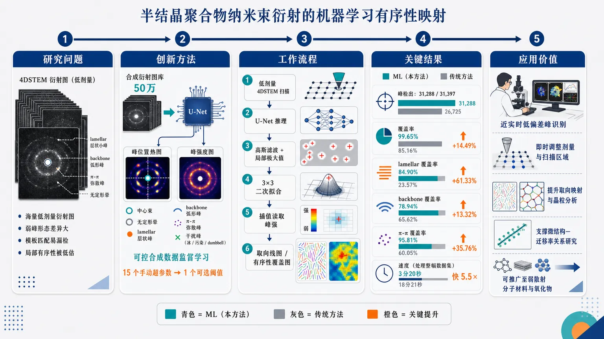
研究问题半结晶 OMIEC 聚合物的 4DSTEM 纳米束衍射图规模巨大、信噪比低，三类关键有序信号——靠近中心束的 lamellar 小峰、弧形/分段的 backbone 峰、叠在无定形晕上的 π-π 弥散峰——形态差异大，传统模板匹配需要大量手动调参且容易漏检，导致局部有序性和取向域被低估。创新方法用 50 万张带真实标签的合成衍射图训练 U-Net，让模型同时学习中心束、无定形晕、lamellar、backbone、π-π 峰以及冰、污染、dumbbell 等干扰；输入 256×256 衍射图，输出“峰位置热图”和“峰强度图”双通道。Aha 点是把难以人工标注的聚合物弱衍射峰转化为可控合成数据监督学习，并用一个模型替代三类峰各自模板调参，将 15 个手动超参数压缩为单一可选阈值。工作流程输入低剂量 4DSTEM 扫描中每个探针位置的二维衍射图；U-Net 对每张图生成峰位置通道和峰强度通道；位置通道经高斯滤波、局部极大值搜索和 3×3 二次拟合得到亚像素峰坐标；再在强度通道插值读取峰强；最后将 lamellar、backbone、π-π 峰转换为空间取向线图和局部有序性覆盖图。关键结果在氧化 p(g3T2) 实验数据中，机器学习方法在 31,288/31,397 个探针位置检出峰，覆盖率 99.65%，传统相关法为 85.16%；lamellar 覆盖率从 23.57% 提升到 84.90%，backbone 从 65.62% 到 78.94%，π-π 从 60.05% 到 95.81%。处理时间由 18分21秒降至 3分20秒，约快 5.5×；ML 取向图把传统方法中斑块状的 lamellar 区域显示为近连续取向域。应用价值该方法可让束敏感聚合物的 4DSTEM 峰识别从离线、手调、易漏检分析转向近实时、低偏差、高覆盖微结构成像，帮助显微镜操作者即时调整剂量、扫描区域和成像条件；同时可提升取向映射、晶粒分析、虚拟成像、聚合物域聚类和微结构—迁移率关系研究，并有望推广到其他弱散射分子材料或氧化物。第一部分：核心概览 (Overview)
该研究将合成数据训练的 U-Net引入半结晶聚合物 4DSTEM 纳米束电子衍射分析，实现对 lamellar stacking、backbone periodicity、π-π stacking 三类形态差异显著、弱信噪比衍射峰的位置与强度自动检测。相比传统相关模板匹配，模型在氧化 p(g3T2) 实验数据中覆盖率更高、峰检出更多、速度约 5.5× 更快，并将需手调的 15 个超参数降至单一可选阈值。其领域地位在于：把半结晶 OMIEC 中长期依赖人工调参、易漏检的 4DSTEM 峰识别推进到近实时、低偏差、高覆盖的机器学习分析范式。
---
第二部分：结构化快速回顾
《Mapping Order in Semicrystalline Polymers using Machine Learning of Nanobeam Electron Diffraction》（None，）
背景
OMIECs 可同时传导离子与电子，适用于神经形态计算、低能耗电子学和生物电子学，但微结构—迁移率关系仍不清楚。4DSTEM 可解析纳米尺度结构异质性，却产生大规模、低信噪比、峰形复杂的数据。
方法
构建包含 500,000 张合成衍射图的训练集，覆盖 lamellar、backbone、π-π 峰及冰、污染、dumbbell 等干扰峰。采用 U-Net：4 层、每层 3 个卷积、32 个起始滤波器、3×3 核，输入 256×256，输出峰位置与峰强度两通道。
结果
合成验证显示：lamellar/backbone 检测随峰强度和远离中心束而改善；π-π 峰在环向展宽增大时需要更高计数。实验氧化 p(g3T2) 数据中，ML 检出 99.65% 探针位置存在峰，传统相关法为 85.16%；运行时间 3 min 20 s vs 18 min 21 s。
讨论
ML 对弱峰、非对称峰和形态复杂峰更敏感，生成的取向图显示 lamellar 区域由传统分析中的斑块状转为近连续，说明先前“有序性缺失”可能源于检测算法灵敏度不足。
局限
极弱峰、极细非对称 backbone 弧、非常强且尖锐的 π-π blob、π-π 谐波仍可能漏检；材料体系差异过大时可能需要重新训练或调优。
结论
合成数据驱动的 U-Net 峰检测可显著提高半结晶聚合物 4DSTEM 分析的速度、覆盖率和稳健性，足以支持近实时显微镜操作反馈，并可能推广到弱散射分子材料或氧化物。
---
第三部分：逐章节冷凝解析 (Section-by-Section Condensing)
Abstract
OMIECs are technologically important but structurally underresolved
有机混合离子-电子导体（OMIECs） 面向神经形态计算、能效电子学和生物电子学，性能关键来自离子与电子双重传输，但结构特征—电荷载流子迁移率关系仍不清楚。摘要明确指出应用跨度和认知缺口：*"Organic mixed ionic electronic conductors (OMIECs) are a promising class of polymer materials for applications spanning neuromorphic computation to energy efficient electronics and bioelectronics"*；同时强调：*"the relationship between structural features and key performance properties such as charge carrier mobility is poorly understood."*
4DSTEM is powerful but difficult for polymer diffraction
TEM 扫描纳米衍射 / 4DSTEM 能揭示结构—性能关系，但聚合物衍射数据同时具有大规模、噪声强、峰形多样三重困难。核心难点被概括为：*"Scanning nanodiffraction in the transmission electron microscope (TEM) is a powerful probe for elucidating this structure-property relationship, but produces large, noisy datasets that are difficult to interpret because polymer reflections exhibit several distinct morphologies."*
Synthetic-data ML detects polymer diffraction peaks and intensities
方法核心是用合成数据训练机器学习模型，直接检测聚合物衍射峰及强度，避免实验真值难以标注的问题。摘要给出任务目标：*"we trained a machine learning (ML) model to detect these polymer diffraction peaks and their intensities from synthetic data."*
ML is faster and more accurate than correlative peak detection
相比传统 correlative peak detection algorithms，ML 模型在几乎所有情形下表现更好并显著加速，支持近实时 4DSTEM 可视化。摘要中给出结论强度：*"the ML model is significantly faster and outperforms correlative algorithms in almost all cases, opening up the possibility of near-live visualization of 4DSTEM experiments."*
---
1 Introduction
OMIECs combine ionic and electronic transport
OMIECs 的独特性在于同时传导电子与离子，因而适配神经形态计算、低能耗电子学和生物电子学。引言开篇定位为：*"Organic mixed ionic electronic conductors (OMIECs) are an emerging class of materials with great promise for neuromorphic computation, energy-efficient electronics, and bioelectronics."* 其机制优势为：*"They are uniquely suited for these applications due to their ability to conduct both electronic and ionic charges."*
Chemical and processing tunability creates structural complexity
OMIECs 可通过侧链合成改造、主链工程、加工控制调节微结构，但这种可调性同时造成结构空间复杂。文本列出三类调控路径：*"They offer great tunability through synthetic alteration of polymer side chains, polymer backbone engineering, and processing controls to control the microstructure."*
Microstructure–mobility relationships remain poorly understood
尽管材料可调，载流子迁移率等关键性能与微结构的关系尚未建立清晰图像。研究动机直接来自该空白：*"the relationship between key performance properties such as charge carrier mobility and microstructure is not well understood in OMIECs."*
X-ray scattering lacks nanoscale heterogeneity resolution
既有研究主要依赖 X-ray scattering，其优势是体平均结构信息，缺陷是不能解析纳米尺度异质性。限制被明确表述为：*"Previous studies have relied primarily on X-ray scattering methods, which provide bulk-averaged structural information but do not resolve nanoscale structural heterogeneity."*
4DSTEM records diffraction at every probe position
4DSTEM 在二维扫描每个位置记录二维衍射图，天然形成四维数据，可在真实空间中追踪局部晶体取向与散射信号。定义为：*"four-dimensional scanning TEM (4DSTEM), which records a two-dimensional diffraction pattern at each position in a two-dimensional probe scan."*
Polymer 4DSTEM can map multiple structural motifs
4DSTEM 已用于利用 lamellar stacking、backbone periodicity、π-π stacking 等信号映射聚合物晶体取向。引言指出：*"4DSTEM has been used to map crystalline orientation of polymers using various diffraction signals like lamellar stacking, backbone periodicity, or π-π stacking."* 同时也可通过虚拟探测器重构实空间图像：*"This technique also enables real-space images to be reconstructed after acquisition using virtual detectors that select specific scattering signals."*
Accurate Bragg peak identification is the bottleneck
取向映射、虚拟成像、晶粒分析等都依赖准确的 Bragg peak identification，但聚合物峰弱且形态复杂。关键瓶颈句为：*"All of these methods rely on accurate Bragg peak identification, which remains challenging in polymer materials."*
Semicrystalline polymer diffraction differs from crystalline inorganic materials
共轭聚合物通常为半结晶微结构，其结晶性表现不同于金属、陶瓷等高结晶材料。差异被明确指出：*"Conjugated polymers often have a semicrystalline microstructure."* 以及：*"crystallinity in polymers appears differently than in metals, ceramics, or other crystalline materials."*
Three principal OMIEC diffraction signals encode different structural order
先前 OMIEC 中局部有序产生三类主要衍射信号：层状堆积、主链周期、π-π 堆积。原文定义为：*"this local order produces three principal diffraction signals associated with lamellar stacking, periodicity along the polymer backbone, and π-π stacking of the aromatic backbone planes."*
Each reflection class has distinct morphology
三类峰形态明显不同：lamellar 为中心束附近锐利双峰；backbone 为较大 q 处锐利弧及其他形态；π-π 为 q 与方位角方向都弥散的强度分布。原文精确描述为：*"lamellar stacking produces a sharp pair of reflections near the unscattered beam, backbone periodicity produces sharp arcs alongside other manifestations at slightly larger scattering vector q, and π-π stacking produces diffuse intensity distributed over both q and the azimuthal angle ϕ."*
Template matching is poorly suited to morphologically diverse polymer peaks
传统为高结晶材料开发的交叉相关模板适用于形态较统一的反射，不适合半结晶聚合物中宽、弥散、非对称、重叠的峰。引言指出：*"These varied reflection morphologies distinguish polymer diffraction patterns from those of highly crystalline materials, whose more uniform reflections can be identified using cross-correlation templates."* 因而：*"methods used for Bragg disk detection that were developed for crystalline materials are often neither suitable nor effective for semicrystalline polymer diffraction peak detection."*
Beam sensitivity forces low-dose, low-SNR acquisition
聚合物样品束敏感，即使采用低温 TEM 降低损伤，也常因弱散射与低剂量采集导致衍射图信噪比很低。限制被概括为：*"TEM and 4DSTEM imaging of polymer samples is often limited by their beam sensitivity."* 低温方法优势为：*"cryogenic TEM—cryogenic cooling of the sample during imaging—is used to substantially reduce beam damage and increase the electron dose before sample degradation."* 但仍存在：*"the resulting diffraction patterns have a very low signal-to-noise ratio."*
Prior ML 4DSTEM tools did not target OMIEC polymer reflection classes
近期机器学习已经用于 4DSTEM 预处理、Bragg disk 定位、应变或取向分析，但并未针对 OMIEC 中 lamellar、backbone、π-π 三类宽且形态各异的反射。原文边界为：*"Recent machine-learning approaches have addressed Bragg-disk localization, diffraction-pattern preprocessing, and strain or orientation analysis in 4DSTEM."* 但：*"these methods have not targeted the broad, morphologically distinct lamellar, backbone, and π-π reflections observed in semicrystalline OMIECs."*
Type I and type II errors are coupled across peak classes
传统方法同时受 type I errors 和 type II errors 影响；针对某一峰类优化模板参数往往增加其他峰类错误。错误类型定义为：*"type I errors, where background noise is mistaken for Bragg peaks, and type II errors, where Bragg peak signals are too weak to detect above the background noise."* 形态差异导致调参冲突：*"tuning the correlative template matching algorithm to perform better on one peak type typically increases the error rates for other peak types."*
U-Net model reduces manual hyperparameters and operator bias
新方法采用 U-Net 同时确定峰位置与强度，仅需一个可选检测阈值；传统 py4DSTEM 相关方法每类峰需 5 个超参数，三类共 15 个。优势句为：*"Our model uses a U-Net architecture to accurately determine both the position and intensity of the diffracting signal."* 调参对比为：*"requires only one optionally-user-specified detection threshold parameter"*，而相关法：*"requires manual tuning of 5 hyperparameters for each peak class, resulting in 15 total hyperparameters to hand tune, potentially per-dataset."*
Near-real-time microstructure mapping becomes feasible
模型计算效率足以支持显微镜操作者接近实时查看聚合物微结构。关键表述为：*"This ML method is also computationally efficient enough to provide a near-real-time map of polymer microstructure to a microscope operator."*
Better peak detection benefits many downstream 4DSTEM analyses
稳健峰检测可改善取向映射、ptychography、聚合物域聚类、晶粒分析、虚拟图像重构等任务。引言末尾给出应用外延：*"This enhanced peak detection will improve orientation mapping, ptychography, polymer domain clustering, grain analysis, virtual image reconstruction, or any future study of polymers with 4DSTEM."*
---
2 Methods
4DSTEM geometry separates three polymer peak families
研究几何示意区分 lamellar、backbone、π-π 三类衍射条件。方法开头说明：*"The 4DSTEM geometry used for this study is shown in Fig. 1."* 每个面板对应一个晶粒取向和满足相应 Bragg 条件时的合成衍射图：*"Each panel shows a representative crystallite orientation and the corresponding synthetic diffraction pattern when the indicated Bragg condition is satisfied."*
Lamellar peaks lie near and often overlap the central beam
Lamellar peaks 因 d-spacing 高而散射角低，通常靠近未散射中心束甚至重叠，需要高相机长度降低重叠并保留高角信号。具体描述为：*"lamellar peaks, which are small disks with low scattering angle due to the high d-spacing of the lamellar planes."* 其难点为：*"This scattering angle is small enough that the lamellar peaks will typically overlap the central beam."*
Backbone peaks show extreme morphological diversity
Backbone reflections 可表现为径向窄、方位角宽的弧，也可为分段弧、孤立峰、沿弧串联峰、带彗尾峰，并常出现二重对称破缺。原文完整列举为：*"Backbone reflections can appear as radially narrow but azimuthally broad arcs, segmented arcs, isolated peaks, strings of peaks along an arc, or peaks with comet-like tails."* 非对称性为：*"These also commonly present as asymmetric cases, where there is either asymmetry in intensity or presence, breaking 2-fold symmetry."*
Backbone asymmetry may arise from chain bending relative to the optic axis
链段弯入或弯出光轴会进入或离开 Bragg 条件，造成 backbone 峰强度或出现位置不对称。机制例子为：*"One example of why this may be the case is when the polymer chain bends into or out of the optic axis, moving into or out of a Bragg condition."*
π-π peaks sit on the amorphous halo and encode preferential stacking orientation
π-π peaks 是位于无定形晕上的增强强度区，反映共轭骨架特征，即芳香环或双键链之间的优先堆叠取向。方法中定义为：*"π-π peaks, which are regions of increased intensity sitting atop the amorphous halo demonstrating preferential orientation of the semicrystalline polymer chains due to stacking of the conjugated features (aromatic rings or double-bonded chains) of the polymer backbone."*
π-π peaks can be broad, dim, bright, narrow, and comet-tailed
三类峰覆盖从亮窄到暗宽的强度与环向展宽范围，π-π 峰也会出现顺时针或逆时针彗尾。原文为：*"The signals described above have a variety of annular spreads and intensities, from bright and narrow to dim and broad."* 以及：*"π-π peaks can also demonstrate comet-like trails, where there is a trail of increased intensity occurring clockwise or counter-clockwise from the peak center."*
Supervised learning requires synthetic labels because experimental truth is unknown
监督学习需要标签，但实验衍射峰真实位置与强度未知，因此采用合成数据。逻辑为：*"Supervised ML requires labeled training data, and direct training on experimental measurements is challenging because the true peak positions and intensities are not known."*
Training dataset contains 500,000 synthetic diffraction images
训练集规模为 500,000 张合成图像，覆盖无峰、单峰、多峰组合，包含三类聚合物峰与无定形晕。关键数字为：*"We therefore generated 500,000 synthetic data training images."* 组成说明为：*"They consist of a ground truth set of peaks, corresponding to some combination of π-π, lamellar, and backbone peaks, as well as an amorphous halo at the same scattering angle as the π-π peaks."*
Each synthetic peak set yields three images
每个峰集合生成三类图像：带噪合成衍射图、峰位置标签、峰强度标签。原文项目列出为：*"From each set of peaks, we generate 3 images: • A synthetically generated noisy diffraction pattern. • A peak position label containing sharp 2D Gaussian distributions at all Bragg peak positions. • A peak intensity label containing broad circles with values corresponding to the peak intensity at all Bragg peak positions."*
U-Net architecture is compact and image-to-image
模型为 U-Net，输入 256×256，输出两个 256×256 通道，分别对应峰位置和峰强度。架构参数为：*"consists of 4 layers with 3 convolutions per layer, 32 starting filters, and a 3 × 3 kernel size."* 输入输出为：*"The input is a 256 × 256 image"*；*"the output is two 256 × 256 images ... one channel corresponding to the peak position output, and the other channel corresponding to the intensity output."*
Synthetic generator was initialized from oxidized p(g3T2) and broadened for generality
生成参数先参考氧化 p(g3T2) 实验数据，再大幅扩展参数范围以增强对不同半结晶聚合物的稳健性。方法描述为：*"The generation parameters were initially tuned with reference to experimental data from an oxidized p(g3T2) dataset, an archetypal OMIEC that has been well-studied."* 随后：*"We then widely expanded the ranges of the generation parameters to make the model robust when analyzing different types of semicrystalline polymers."*
Generator uses diffraction components, recipes, Poisson statistics, and weighted sampling
合成流程先定义中心束、无定形晕和不同 Bragg 峰类型，再定义包含组件及其发生率的 “recipes”，发生率服从 Poisson statistics，最后按概率权重选择配方。原文为：*"The pattern generation script first defines different diffraction components, including the central beam, amorphous halo, and various Bragg peak types."* 配方机制为：*"We then define “recipes” in which the different components and their rates (Poisson statistics) are listed."*
Peak-position labels use truncated Gaussian peaks
峰位置标签是在每个峰坐标中心放置 Gaussian，并以 3-pixel radial cutoff 截断。精确参数为：*"To generate the peak-position binary label, we centered a Gaussian peak at each peak coordinate and truncated it with a 3-pixel radial cutoff."*
Peak-intensity labels use radius-8 circles
峰强度标签是在每个峰坐标处放置半径 8 pixels 的圆，数值对应峰强度；较宽标签使强度估计对位置误差更稳健。参数为：*"For the peak intensity label, we centered a circle with a radius of 8 pixels at each peak coordinate with a value corresponding to the intensity of that peak."* 设计理由为：*"We used a broader intensity label than the peak-position label to make intensity estimation robust to small errors in the predicted peak position."*
Overlapping intensity labels use Voronoi assignment
强度标签中重叠圆通过 Voronoi diagram construction 处理，使标签值对应最近峰。原文为：*"Overlapping circles for the intensity label are handled according to a Voronoi diagram construction such that the intensity value on the label corresponds to that of the nearest peak."*
Central beam intensity is normalized to 1.0
中心束足迹赋值为 1.0，表示最亮特征或探测器饱和值，两者取较低。具体句为：*"The central beam footprint is assigned an intensity of 1.0, indicating it is the brightest feature or representing detector saturation, whichever is lower."*
Training includes polymer peaks plus ice, contamination, and dumbbell peaks
训练数据覆盖三类主峰，也包含冰、污染、dumbbell 等实验中可能出现的非目标峰，增强模型鲁棒性。原文为：*"We trained the U-Net model on 500,000 diffraction patterns that encompassed the major polymer diffraction components, which are lamellar, backbone, and π-π peaks, as well as other possible peaks such as ice, contamination, or dumbbell peaks."*
Training included asymmetric peaks and broken two-fold symmetry
合成中允许峰强度或峰存在性不对称，模拟实验中常见二重对称破缺。原文为：*"Generation included the possibility of asymmetry in the peaks for either peak intensity or peak presence, breaking 2-fold symmetry as is sometimes seen experimentally."*
Model trained to 200 epochs and used epoch 191 weights
训练达到 200 epochs，采用 epoch 191 权重，因为训练与验证损失最低且最匹配。关键句为：*"The model reached 200 epochs of training, with loss curves presented in Fig. S1."* 权重选择为：*"Model weights at epoch 191 are used as this was the point where training and validation loss were lowest and most closely matched."*
Postprocessing detects local maxima and estimates subpixel coordinates
后处理先对峰位置输出通道施加 Gaussian filter，再用局部最大准则检测候选峰，要求峰像素超过 8 个邻近像素。原文为：*"We applied a Gaussian filter to the peak-position output channel for noise suppression."* 检测条件为：*"requiring each peak pixel to exceed all eight neighboring pixels."*
Subpixel refinement uses quadratic fitting over 3×3 pixels
坐标通过局部 3×3 pixel 邻域二次函数拟合细化至亚像素精度，随后在强度通道插值得到最终峰强度。原文为：*"We refined the detected coordinates to subpixel accuracy by fitting a quadratic function over a local 3 × 3 pixel neighborhood."* 强度读出为：*"Interpolation of the peak intensity output channel at those coordinates provided the final reported intensity for each peak."*
---
3 Results and Discussion
Validation used synthetic data separate from training and evaluation
性能测试采用独立合成数据，不与训练或评估数据重叠，降低数据泄漏风险。原文为：*"We tested the ML model using synthetic data generated separately from the data used for model training and evaluation."*
F1 score quantified peak detection performance
指标为 F1 score，即 precision 与 recall 的调和平均，公式为 (2TP/(2TP+FP+FN))。定义句为：*"We evaluated performance using the F1 score, the harmonic mean of precision and recall, defined as 2TP/(2TP+FP+FN), where TP, FP, and FN are the numbers of true positives, false positives, and false negatives, respectively."*
Each parameter combination used 1,000 synthetic diffraction patterns
验证跨峰强度、半径、环向展宽等参数，每个参数组合评估 1,000 张合成衍射图，并复用同一组图像以隔离参数影响。原文为：*"For each parameter combination, we evaluated 1,000 synthetic diffraction patterns."* 控制变量设计为：*"The same 1,000 patterns were reused across all parameter combinations, ensuring that any differences in performance were caused by the varied parameters rather than differences in the test data."*
Peak counts were computed as expected electron counts
峰计数由总电子剂量、背景权重和峰积分占比计算：
[
E(cₚ₎₌dₑḑot(1-wbₖg)ḑotfracsum Iₚsum I_T
]
原文说明为：*"Peak counts were estimated by calculating the expected number of electrons in that peak."* 公式变量包括：*"E(cₚ₎ is the expected value of the peak counts, dₑ is the total electron dose, w_bkg is the background weight fraction."*
Lamellar detection improves with intensity and radial distance
Lamellar peaks 的 F1 随峰强度/峰计数增加和径向距离增加而单调改善。原文为：*"For the lamellar stacking peak validation shown in Fig. 3 a,d, performance improves monotonically as peak intensity (or peak counts) increases and as peak radial distance increases."*
Lamellar detection becomes reliable beyond 2–4 probe semiangles
径向距离从中心束边缘开始到更大分离距离，用于估计最小可靠检测距离；性能在 2–4 × probe semiangle 之间显著上升。原文为：*"Peak detection performance of the lamellar peaks starts to increase significantly between a radial distance equal to 2–4 times the probe semiangle."*
Lamellar count threshold begins around 50 counts
Lamellar 峰检测阈值约 50 counts，峰越靠近中心束，阈值越高。原文为：*"The performance threshold for lamellar peak detection begins around 50 counts, with the threshold moving to higher counts as the radial distance of the peaks decreases."*
Lamellar peaks remain detectable even when partly obscured by central beam
即便散射角接近中心束并部分重叠，较高强度 lamellar 峰仍可显著检测。原文为：*"even at scattering angles very close to the central beam, to where the peaks partially overlap the central beam, the peak detection of lamellar peaks remains significant at higher intensities."* 几何解释为：*"If d/kₚᵣ ... is near 1 this means the center of the peak is on the circumference of the probe, and is partially obscured by the central beam and thus harder to detect."*
Backbone detection improves with intensity and radial distance
Backbone peaks 同样随峰强度/峰计数和径向距离增加而改善。原文为：*"For the backbone peak validation shown in Fig. 3 b,e, performance improves with increasing peak intensity (or peak counts) and increasing radial distance."*
Backbone radial positions span central beam to amorphous halo
Backbone 峰在实验中不像 lamellar 或 π-π 那样局域，而是可出现在中心束和无定形晕之间。原文为：*"backbone peaks show up anywhere between the central beam and the amorphous halo rather than being localized like the lamellar and π-π peaks."*
Backbone reliable detection threshold emerges around 3.25–5.5 probe semiangles
Backbone 性能阈值在 3.25–5.5 × probe semiangle 之间变得尖锐。原文为：*"Performance picks up to develop a sharp threshold somewhere between a distance equivalent to 3.25 and 5.5 times the probe semiangle."*
Backbone count threshold is around 60–80 counts
Backbone 检测阈值约 60–80 counts，径向距离增大时阈值略升。原文为：*"The performance threshold for backbone peak detection is around 60–80 counts, with the threshold moving to slightly higher counts as the radial distance of the peak increases."*
π-π detection threshold depends strongly on annular spread
π-π peaks 位于无定形晕上，因此关键参数是环向展宽而非径向距离；随着 annular spread 增大，检测需要更高计数。原文为：*"Since the π-π peaks are located on the amorphous halo, the annular spread of the peaks is the parameter of interest rather than radial distance."* 性能趋势为：*"performance for peak detection initially increases monotonically with peak intensity (or peak counts), and the performance threshold is delayed to higher peak counts as annular spread increases."*
π-π count thresholds range from 150 to 800 counts
π-π 检测阈值从最小环向展宽下约 150 peak counts 到最大环向展宽下约 800 peak counts。原文为：*"The threshold starts around 150 peak counts at the tightest annular spreads with the smallest peak footprints to 800 peak counts at the highest annular spreads with the largest peak footprints."*
ML detects faint π-π peaks despite large footprints
π-π 峰 footprint 显著大于 backbone 和 lamellar，模型仍能检测较弱 π-π 峰。原文为：*"Given that π-π peaks have the largest peak footprint, significantly larger than either the backbone or lamellar peaks, this reflects how the ML model is able to detect even faint π-π peaks."*
Broad intense π-π peaks can reduce performance
当 π-π 峰环向展宽大且强度高时，峰可能覆盖并压倒无定形晕，模型识别下降。原文为：*"peak detection for larger annular spreads decreases above a certain intensity threshold, and this degradation begins at lower intensities as the annular spread increases."* 解释为：*"This may represent the model struggling to identify the peaks as they begin to spread out to encompass and overshadow the amorphous halo."*
Validation isolated peak classes to remove orientational cross-correlations
验证数据仅包含单类孤立峰，而训练集包含单峰与多峰混合；这样可避免模型借助 lamellar/π-π 对齐、backbone 近似垂直等取向相关性。原文为：*"the synthetic diffraction patterns used for validation contained only isolated peaks of each type."* 训练集背景为：*"Patterns containing multiple peak classes provide orientational context because lamellar and π-π peaks tend to align, whereas backbone peaks tend to lie approximately perpendicular to them."* 目的为：*"By testing isolated peak classes, we evaluated the model without these cross-correlations."*
Experimental benchmark used oxidized p(g3T2) 4DSTEM
实验测试对象为氧化 p(g3T2) 样品，并与代表既有 4DSTEM 分析的相关模板匹配法比较。原文为：*"We used our model to analyze peak detection in a 4DSTEM dataset recorded from an oxidized p(g3T2) sample."* 对照方法为：*"a correlation-based peak-detection algorithm representative of methods used in previous 4DSTEM studies."*
ML outperforms correlative detection across three peak types
实验图 4 中，ML 对 backbone 更好、对 π-π 显著更好、对 lamellar 极大更好。原文为：*"The ML model developed in this work outperforms correlative methods in detecting backbone peaks"*；*"significantly outperforms correlative methods in detecting π-π stacking peaks"*；*"greatly outperforms correlative methods in detecting lamellar stacking peaks."*
Lamellar experimental detection increased from 23.57% to 84.90% probe-position coverage
Lamellar 峰中，ML 检出 50,579 个峰，覆盖 26,656 / 31,397 个探针位置，即 84.90%；相关法检出 7,529 个峰，覆盖 7,399 / 31,397，即 23.57%。原文数据为：*"The ML model detects 50,579 lamellar peaks over 26,656 (84.90%) of the 31,397 total probe positions, while the correlative algorithm detects 7,529 peaks over 7,399 (23.57%) of the 31,397 total probe positions."*
Lamellar ML sensitivity captures faint structurally consistent peaks
ML 能检测较弱 lamellar 峰，且这些弱峰与邻近探针位置的强峰方向一致，说明模型更敏感而仍有选择性。原文为：*"the ML model is good at detecting fainter peaks which under inspection have the same orientation as the stronger peaks in neighboring probe positions."* 推论为：*"This implies that the model is more sensitive while also remaining selective."*
Both methods miss very weak lamellar peaks
极弱 lamellar 峰仍难以检测，体现模型偏保守以减少假阳性。原文为：*"Both methods struggle to detect very weak lamellar peaks."* 以及：*"This may also reflect the desired conservative nature of the model on lamellar peaks, with a balance of sensitivity trading off false negatives in extreme cases for mitigating false positives overall."*
Backbone experimental detection increased from 65.62% to 78.94% probe-position coverage
Backbone 峰中，ML 检出 49,490 个峰，覆盖 24,785 / 31,397，即 78.94%；相关法检出 23,006 个峰，覆盖 20,603 / 31,397，即 65.62%。原文为：*"The ML model detects 49,490 backbone peaks over 24,785 (78.94%) of the 31,397 total probe positions, while the correlative algorithm detects 23,006 peaks over 20,603 (65.62%) of the 31,397 total probe positions."*
Backbone edge cases include faint thin asymmetric arcs and segmented peaks
ML 漏检的 backbone 典型边界案例包括非常弱、非常细、强度非对称的弧；两种方法都会漏检极弱且可能分段、肉眼也难判定的峰。原文为：*"one of the demonstrated backbone peaks ... presents as a very faint, very thin arc with asymmetric intensity."* 共同失败情况为：*"both methods fail in cases where the peaks are very faint and potentially segmented, which are difficult to identify by eye."*
π-π experimental detection increased from 60.05% to 95.81% probe-position coverage
π-π 峰中，ML 检出 76,815 个峰，覆盖 30,082 / 31,397，即 95.81%；相关法检出 25,569 个峰，覆盖 18,853 / 31,397，即 60.05%。原文为：*"The ML model detects 76,815 π-π peaks over 30,082 (95.81%) of the 31,397 total probe positions, while the correlative algorithm detects 25,569 peaks over 18,853 (60.05%) of the 31,397 total probe positions."*
π-π ML is better for faint and asymmetric peaks
ML 在弱 π-π 峰和强度非对称 π-π 峰上优于相关法。原文为：*"the ML model is better than the correlative algorithm at detecting faint peaks."* 以及：*"The ML model outperforms the correlative algorithm in detecting both faint peaks and peaks with intensity asymmetry."*
Strong sharp π-π blobs and harmonics reveal future training needs
相关法检测而 ML 未检测的 π-π 峰常为强而尖锐的大强度 blob；两种方法还漏检了一个强 π-π 峰的谐波，提示训练数据需加入 harmonics。原文为：*"the peaks were very strong and sharp, appearing as large and sharp blobs of intensity."* 谐波问题为：*"both methods failed to detect a harmonic of one of these strong π-π peaks ... indicating that harmonics, while uncommon for semicrystalline polymers, should be taken into account in the training data."*
Across all peak classes ML gives near-complete sample coverage
三类峰合并后，ML 在 31,288 / 31,397 个探针位置检测到峰，覆盖 99.65%；相关法为 26,737 / 31,397，覆盖 85.16%。原文为：*"Over the union of lamellar, backbone, and π-π peaks, the ML model detects peaks in 31,288 (99.65%) of 31,397 total probe positions, while the correlative algorithm detects peaks in 26,737 (85.16%) of 31,397 total probe positions."* 解释为：*"This indicates the ML model achieves near-complete coverage of the sample area."*
ML processing is about 5.5× faster on GPU
同一实验数据集上，ML 处理时间 3 min 20 s，相关法 18 min 21 s，GPU 上约快 5.5×。原文为：*"The processing time for the ML model on this dataset was 3 minutes and 20 seconds compared to the correlative algorithm’s 18 minutes and 21 seconds, translating to the ML model being roughly 5.5 × faster than the correlative algorithm for peak detection when run on a GPU."*
Orientation maps convert detected peaks into local structural fields
使用 py4DSTEM 由 ML 与相关法检测峰生成取向图，分别针对三类峰；相邻探针位置的 Bragg 峰以连接线表示局部峰取向和近似强度。原文为：*"We generated the orientation maps in Fig. 5 using py4DSTEM with peaks detected by the ML and conventional correlation-based methods."* 可视化方式为：*"Bragg peaks are drawn as connected lines between adjacent probe positions to show both the local peak orientation and approximate peak intensity."*
ML orientation maps show greater continuity and coverage
ML 取向图在 lamellar、π-π 和 backbone 上均比相关法覆盖更广、连续性更高，其中 lamellar 改善最大。原文为：*"The ML model greatly outperforms the correlative algorithm for lamellar stacking peaks, as seen by the much greater continuity and coverage."* π-π 为：*"The ML model also outperforms the correlative algorithm for π-π stacking peaks."* Backbone 为：*"For backbone peaks, the ML model still outperforms correlative algorithms in terms of coverage and continuity, albeit not as drastic."*
Higher information density is not due to false positives by visual inspection
ML 取向图包含更多重叠线和多方向结构，说明检索到更多真实峰；视觉检查排除了由假阳性导致的解释。原文为：*"The density of information captured by the ML model ... is much greater."* 证据限定为：*"These results have been inspected by eye to confirm this is not due to false positives but rather genuine peak detection."*
Generality was tested on reduced p(g3T2) and reduced PB2T-TEG
模型除氧化 p(g3T2) 外，还在 reduced p(g3T2) 和 reduced PB2T-TEG 两个聚合物系统上测试，并在补充图中给出衍射图和取向图。原文为：*"this model has been tested for generality by running it with 2 additional polymer systems, reduced p(g3T2) and reduced PB2T-TEG."*
Correlation and ML maps share morphology but ML reveals hidden continuity
两种方法的取向图整体形态相似，支持 ML 峰识别不是随机构造；但相关法下斑块状的 lamellar 区域在 ML 中变为近连续，说明传统算法灵敏度不足可伪装为结构无序。原文为：*"The ML-based and correlation-based peak detections produce orientation maps with similar overall morphology, providing independent support for the peaks identified by the ML model."* 关键发现为：*"lamellar regions that appeared patchy in the correlation-based analysis are revealed to be nearly continuous in the ML-based analysis."*
Apparent loss of lamellar order may be an algorithmic artifact
传统算法下观察到的 lamellar 有序性缺失不一定来自结晶性差、registry 差或层状堆积弱，而可能来自峰检测灵敏度不足。原文为：*"This indicates that the apparent loss of lamellar order was not necessarily caused by poor crystallinity, poor registry, or weak lamellar stacking."* 真实原因可能是：*"the conventional peak-detection algorithm lacked the sensitivity needed to reveal the underlying continuous crystalline order."*
---
4 Conclusion
U-Net detects peaks in noisy 4DSTEM data from beam-sensitive polymers
结论概括为开发了基于 U-Net 的 ML 模型，用于束敏感聚合物低信噪比 4DSTEM 数据的衍射峰检测。原文为：*"We have developed a U-Net-based ML model to detect diffraction peaks from noisy 4DSTEM datasets recorded from beam-sensitive polymer samples."*
ML outperforms correlation methods in speed and hyperparameter burden
模型在合成数据和氧化 p(g3T2) 实验数据上与既有相关峰检测算法比较，几乎所有方面更优；除单一检测阈值外消除了大量超参数。原文为：*"The ML model outperforms the correlative algorithm in nearly every comparison, including processing speed and the elimination of hyperparameters save for a single detection threshold."*
Default threshold 0.5 worked for every tested case
默认阈值 0.5 足以覆盖所有测试情形，GPU 上峰检测速度约快 5.5×。原文为：*"A default threshold of 0.5 was sufficient for every case tested, and the ML model ran roughly 5.5 × faster than the correlative algorithm for peak detection on a GPU."*
Synthetic validation quantified dose thresholds
独立合成验证表明，lamellar 与 backbone 检测起始阈值约 60–80 counts，π-π 约 150–800 counts。结论总结为：*"Validation also revealed dose thresholds for detection which starts around 60–80 counts for lamellar and backbone peaks, and around 150–800 counts for π-π peaks."*
Lamellar and backbone detection improve away from central beam
Lamellar 与 backbone 峰离中心束越远越易检测。原文为：*"Detection improved as lamellar and backbone peaks moved farther from the central beam."*
π-π detection fails when broad intense peaks dominate the amorphous halo
π-π 峰在强而宽、开始支配无定形晕时检测下降。原文为：*"For π-π peaks, detection declined when broad, intense peaks began to dominate the amorphous halo."*
Experimental comparison reveals concrete future improvements
未来改进包括扩大数据集、加入更多峰配置、加入峰谐波。原文为：*"additional points for future model improvement, such as increased dataset size, additional peak configurations to improve coverage for how each peak type can manifest, and the addition of peak harmonics."*
ML orientation maps reveal more continuous domains
实验氧化 p(g3T2) 的取向图显示，ML 检测峰产生更连续的取向域和更高覆盖，lamellar 改善最大。原文为：*"Orientation maps generated from the experimental oxidized p(g3T2) dataset show that the ML-detected peaks produce more continuous orientational domains than the correlation-based algorithm with greater sample coverage, with the most substantial improvement observed for lamellar peaks."*
Approach may extend to other weakly scattering materials
该方法可用于其他弱散射材料，如分子材料或氧化物，但材料差异足够大时可能需要重训或调优。原文为：*"Our ML model or the approach of using an ML model may be viable for other weakly scattering materials like molecular materials or oxides."* 限定条件为：*"If the material datasets are different enough from those used to train here, the model might require retraining or tuning for those material classes."*
Three polymer datasets support limited generality
通用性已在三类聚合物数据集上测试：氧化 p(g3T2)、还原 p(g3T2)、还原 PB2T-TEG。原文为：*"The model was tested for generality by running it with 3 different polymer material datasets, the oxidized p(g3T2) sample explored here, and separate reduced p(g3T2) and reduced PB2T-TEG datasets."*
Near-real-time analysis can alter microscope operation
模型速度已足够使一次扫描在下一次扫描采集时处理完成，允许操作者即时调整实验条件。原文为：*"The current model is already fast enough to support near-real-time analysis and visualization of 4DSTEM scans, where each scan can be processed while the next scan is acquired."* 实验意义为：*"Interpreting results during microscope operation would allow users to adjust experimental conditions immediately, accelerating experimental iteration."*
---
5 Data Availability
Data are available on request and repository is pending
支持研究发现的数据可向通讯作者合理请求获取，公开仓库链接将在发表后添加。原文为：*"The data supporting the findings of this study are available from the corresponding authors upon reasonable request."* 以及：*"A public repository link will be added upon publication."*
---
6 Code Availability
Code is available on request and repository is pending
支持研究发现的代码可向通讯作者合理请求获取，公开仓库链接将在发表后添加。原文为：*"The code supporting the findings of this study is available from the corresponding authors upon reasonable request."* 以及：*"A public repository link will be added upon publication."*
---
7 Acknowledgments
Primary funding came from DOE BES Microelectronics ESTEEM
主要支持来自美国能源部基础能源科学 Microelectronics ESTEEM Program，合同号 DE-AC02-76SF00515，项目号 101256。原文为：*"This work was primarily supported by the U.S. Department of Energy under Contract No. DE-AC02-76SF00515 through the Basic Energy Sciences (BES) Microelectronics ESTEEM Program (101256)."*
Molecular Foundry work used DOE BES support and user proposal MFP-09325
Molecular Foundry 工作由 DOE Office of Science、Office of Basic Energy Sciences 支持，合同号 DE-AC02-05CH11231，用户提案号 MFP-09325。原文为：*"Work at the Molecular Foundry was supported by the Office of Science, Office of Basic Energy Sciences, of the U.S. Department of Energy under Contract No. DE-AC02-05CH11231, under user proposal number(s) MFP-09325."*
NERSC computing resources supported the project
计算资源来自 National Energy Research Scientific Computing Center (NERSC)，DOE 用户设施，NERSC award DDR-ERCAP0038484。原文为：*"This research used resources of the National Energy Research Scientific Computing Center, a DOE Office of Science User Facility ... using NERSC award NERSC DDR-ERCAP0038484."*
quantEM codebase help was acknowledged
Karen Ehrhardt 和 Sangjoon Lee 对项目中使用的 quantEM codebase components 提供帮助。原文为：*"We thank Karen Ehrhardt and Sangjoon Lee for help with quantEM codebase components used in this project."*
---
第四部分：深度理解与语言支持 (Understanding & Nuance)
1. 术语解析
#### Organic mixed ionic electronic conductors (OMIECs)
指同时传导电子/空穴与离子的有机聚合物或软材料体系。这里的 “mixed” 不是材料混合物，而是传输载流子类型混合。这种双通道传导使其适用于有机电化学晶体管、生物接口和类突触器件。
#### Semicrystalline microstructure
“半结晶”不是“结晶度低”的简单同义词，而是指材料中同时存在局部有序晶区与无定形区域。在聚合物中，晶区通常有限、弯曲、取向分布宽，因而衍射峰不像金属晶体那样规则、尖锐、圆盘状。
#### Bragg peak identification
指在衍射图中定位满足 Bragg 条件的散射强度峰。该任务不仅是找亮点，还包括在中心束重叠、无定形晕背景、弱信号、弥散弧形峰中判断哪些强度来自真实周期结构。
#### Correlative template matching
指用预设模板与衍射图做相关运算，在高相关位置判定峰存在。其微妙问题在于：模板越专门化，越适合某一类峰，也越容易漏掉其他形态峰；在多峰形聚合物中需要大量人为调参。
#### Near-real-time visualization
不是严格意义的毫秒级实时，而是指数据处理速度足以跟上实验节奏，例如一次扫描可在下一次扫描采集期间处理完成。这里的价值是显微镜操作者可即时调整剂量、相机长度、扫描区域或聚焦条件。
---
2. 疑难查证
#### 为什么 π-π 峰比 lamellar/backbone 更难检测？
π-π 峰位于无定形晕上，而不是干净背景上。无定形晕本身就是一圈宽散射强度，π-π 峰只是这圈背景上的局部增强。若 π-π 峰很窄，它像一个局部 blob，容易识别；若它环向展宽很大，它会逐渐变成无定形晕的一部分，峰与背景边界消失。此时检测困难不是因为总电子数少，而是因为结构化信号与背景形态相似。
#### 为什么 lamellar 峰靠近中心束时难检？
Lamellar d-spacing 大，因此散射角小，峰靠近中心束。中心束是衍射图中最强、最宽、可能饱和的特征。若 lamellar 峰中心落在中心束边缘，峰的一部分会被中心束强度淹没或几何重叠。即使峰总计数足够，局部可分辨形态也会下降，所以论文用 (d/kₚᵣ) 表示峰中心距离相对于探针半角的位置。
#### 为什么合成数据训练可行？
实验数据的真实峰位置和强度无法完全知道，人工标注会引入主观偏差。合成数据可以精确知道 ground truth，同时系统控制峰强度、宽度、环向展宽、非对称性、噪声、中心束、无定形晕。关键风险是合成分布与真实实验分布不一致；因此该研究先参考氧化 p(g3T2)，再扩大参数范围，并用实验数据验证。
#### 为什么 ML 比相关法更少超参数？
相关法需要人为规定模板形状、阈值、滤波参数、峰距、形态范围等，而且三类峰形态不同，通常每类都要单独调。U-Net 则把多种峰形态编码进训练权重，推理时主要只需一个检测阈值。超参数减少意味着操作者偏差降低，但不代表模型完全无假设；假设被转移到了训练数据生成分布中。
#### 为什么取向图连续性可以反证传统算法漏检？
若相关法取向图斑块状，而 ML 取向图在相同区域显示连续取向，并且两者整体形态一致，则更可能是相关法在弱峰处漏检，而不是 ML 随机产生假峰。连续的空间取向场还符合聚合物晶区在相邻探针位置上结构逐渐变化的物理预期。
---
第五部分：创新评估与关联 (Synthesis & Novelty)
1. 创新性判断
#### 从“Bragg disk localization”转向“polymer-specific morphological peak detection”
近年 4DSTEM 机器学习多集中于高结晶材料中的 Bragg disk 定位、预处理、应变和取向分析。这类任务通常假设峰形较规则、圆盘状、对称。该研究的新颖点在于直接面向半结晶 OMIEC 中三类物理来源不同、形态差异巨大的峰：中心束附近 lamellar 小盘、中心束与无定形晕之间 backbone 弧、无定形晕上的 π-π 弥散峰。
#### 解决了多峰类型模板调参互相冲突的问题
传统相关模板匹配对每类峰需独立调参，论文给出 py4DSTEM 方法每类 5 个超参数、三类共 15 个超参数。半结晶聚合物中，优化 lamellar 的模板可能增加 π-π 假阳性，优化 π-π 的宽模板又可能漏掉 backbone 细弧。U-Net 用同一模型学习多形态峰，在实验中用默认 0.5 阈值即可运行，显著降低操作者偏差。
#### 用大规模合成数据绕过实验真值缺失
实验 4DSTEM 中真实峰位置和强度不可直接知道，人工标注不可靠。该研究构造 500,000 张合成衍射图，并同时输出峰位置标签和强度标签，使监督学习可行。特别是合成数据纳入非对称峰、冰、污染、dumbbell 峰、无定形晕和中心束重叠，较好贴近聚合物实验困难。
#### 同时输出峰位置与峰强度，而非仅做峰定位
模型输出两个 256×256 通道：位置和强度。位置通道用于局部最大检测，强度通道在检测坐标处插值读取强度。这个设计使后续取向图不仅有方向信息，也能保留近似强度信息，为晶区强弱、取向连续性和虚拟成像提供更丰富输入。
#### 把 4DSTEM 聚合物分析推向近实时反馈
实验氧化 p(g3T2) 数据中，ML 用 3 min 20 s，相关法用 18 min 21 s，约 5.5× 加速。对于束敏感聚合物，近实时反馈尤其重要，因为操作者可在样品损伤前快速调整剂量、扫描区域、相机长度和低温条件。
#### 揭示“结构无序”可能是算法漏检伪影
最重要的科学影响不是单纯检测更多峰，而是改变结构解释：相关法中斑块状的 lamellar order 在 ML 取向图中近连续，说明过去基于低灵敏度峰检测得到的“局部无序”可能部分是算法伪影。这一点直接影响 OMIEC 微结构—性能关系研究，因为晶区连续性、取向域大小和层状堆积完整性都可能被低估。
#### 相对于过去 2–5 年工作的未解决问题
过去几年相关工作已覆盖 4DSTEM 自动预处理、Bragg disk 定位、取向/应变分析，但未充分处理以下问题：
- 半结晶聚合物峰不是统一 Bragg disk；
- π-π 峰与无定形晕重叠；
- lamellar 峰与中心束重叠；
- backbone 峰可呈弧、分段弧、串峰、彗尾、非对称形态；
- 低剂量导致 type I/type II 错误同时增加；
- 每类峰单独调参导致跨峰类不可兼容。
该研究通过合成数据驱动的 U-Net，将这些困难统一建模，因此新颖性主要体现在材料问题特异性、峰形复杂性、低剂量稳健性、超参数简化和近实时实验反馈五个层面。
-
11
📊 含图深析
📄 摘要：从理论与实验两方面分析物理信息机器学习在宏观交通流中的失效条件：当低分辨率环形探测数据下，数据梯度与物理梯度都难以与真实梯度形成锐角时，PIML 可能同时输给纯数据模型和纯物理模型。
💡 亮点：PIML 在交通流里会失败，并非物理残差本身有毒，而是数据和物理梯度常与真梯度不对齐。对 SciML 的失效分析很少见。
📖 展开分析 + 配图
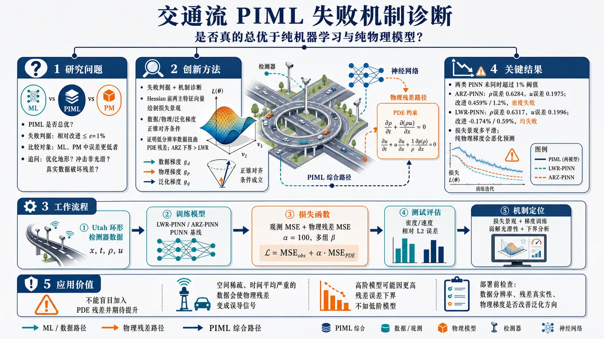
研究问题PIML 在宏观交通流建模中是否真的总优于纯机器学习和纯物理模型？论文把“失败”定义为：PIML 相比 ML 与 PM 中误差更低者的相对提升不超过 ε=1%，并追问失败究竟来自复杂损失景观、交通流冲击非光滑性，还是来自真实检测器数据对物理残差和梯度方向的破坏。创新方法Aha 点是把 PIML 失败从经验抱怨变成可检验的“失败判据 + 机制诊断”：用 1% 相对改进阈值量化失败；用 Hessian 前两个主特征向量绘制损失景观，反驳“物理残差必然造成崎岖优化地形”；提出数据梯度、物理梯度、真实泛化梯度的正锥对齐条件，说明物理项只有在方向正确时才有益；并证明低分辨率检测器数据会扭曲 PDE 残差，高阶 ARZ 的残差一致性误差下界大于低阶 LWR。工作流程输入 Utah 低分辨率环形检测器时空数据，包括位置 x、时间 t、交通密度 ρ 与速度 u；分别训练 LWR-PINN、ARZ-PINN 及其纯数据驱动 PUNN 基线；损失函数由观测 MSE 与 LWR/ARZ 物理残差 MSE 加权组成，调节 α=100 与多组 β；在测试集上计算密度和速度相对 L2 误差；再通过 Hessian 损失景观、单独数据/物理梯度训练、弱解光滑性证明和残差误差下界分析，定位 PIML 失败原因。关键结果实验显示两类 PINN 均未在密度和速度上同时超过 1% 改进阈值：ARZ-PINN 密度误差 0.6284、速度误差 0.1975，相比 ARZ-PUNN 的改进分别仅 0.459% 和 1.2%，因密度未达标而失败；LWR-PINN 密度误差 0.6317、速度误差 0.1996，相比 LWR-PUNN 的改进为 -0.174% 和 0.59%，两项均失败。损失景观大多平滑，纯物理梯度训练会显著恶化预测，说明主因不是优化地形崎岖，而是低分辨率数据导致残差失真和梯度方向不匹配。应用价值该研究为交通 PIML 提供了实用预警：不能盲目把 PDE 残差加入神经网络并期待性能提升。真实交通传感器数据若空间稀疏、时间平均严重，物理残差可能变成误导信号；高阶物理模型也可能因更高残差误差下界而不如低阶模型。实际部署中应优先检查数据分辨率、残差构造是否代表真实 PDE、物理梯度是否改善泛化方向，再决定是否使用 PIML。第一部分：核心概览 (Overview)
该研究把PIML 在宏观交通流建模中的失败从经验现象转化为可检验、可证明的问题：失败被定义为 PIML 相比纯数据驱动模型与纯物理模型的最佳者提升不超过 ε=1%。核心贡献在于推翻“物理残差必然导致复杂损失景观”的常见解释，指出失败更可能来自低分辨率检测器数据导致物理残差失真，以及数据梯度、物理梯度与真实泛化梯度方向不一致。理论上证明 LWR/ARZ 弱解在冲击集外仍保持分段光滑，MLP 不能精确表示非光滑函数并非主要障碍；同时证明高阶 ARZ 的残差一致性误差下界严格大于低阶 LWR，解释了 LWR-PIML 在高分辨率下也可能优于 ARZ-PIML 的现象。
---
第二部分：结构化快速回顾
《Potential failures of physics-informed machine learning in traffic flow modeling: theoretical and experimental analysis》（None，）
背景
宏观交通流模型依赖守恒律、动量方程与基本图，但存在理想化假设、参数校准困难、难以处理真实传感器噪声等问题。纯机器学习模型灵活、计算成本低，却依赖训练数据质量且缺乏可解释性。PIML 试图结合物理约束与数据拟合，但并不必然优于纯 ML 或纯物理模型。
方法
失败被形式化定义为：PIML 相比 ML 与 PM 中误差较小者的相对改进不超过 ε=1%。实验复现并评估 Shi et al. [2021] 的 LWR-PINN 与 ARZ-PINN，使用 Utah 现场数据，评价指标为密度与速度的相对 L2 误差。理论部分分析损失景观、梯度方向条件、弱解光滑性与物理残差 MSE 下界。
结果
ARZ-PINN 密度误差 0.6284±0.0016、速度误差 0.1975±0.0016；ARZ-PUNN 为 0.6313 与 0.1999，对应改进 0.459% 与 1.2%。LWR-PINN 密度误差 0.6317±0.0125、速度误差 0.1996±0.0007；LWR-PUNN 为 0.6306±0.0010 与 0.2008±0.0047，对应改进 -0.174% 与 0.59%。两类 PINN 均未在密度和速度上同时超过 1% 改进阈值。
讨论
损失景观大多平滑，说明物理残差本身并不必然造成优化困难。PIML 成功更依赖数据梯度与物理梯度共同指向接近真实泛化梯度的方向。低分辨率环形检测器数据使神经网络难以准确重构密度与速度，进而使由离散采样和时间平均构造的物理残差偏离真实 PDE 动力学。
局限
实验重点集中在宏观交通流、PINN 型架构、Utah 现场数据与相对干净数据环境。所给材料中 Table 3、附录证明和后续完整实验细节未完整呈现，因此无法核查单项物理梯度训练模式的全部数值结果。
结论
PIML 失败并非主要源于非光滑解或损失景观复杂，而是源于数据分辨率、残差构造误差、梯度方向不匹配以及物理模型阶数带来的残差误差下界差异。宏观交通流 PIML 需要同时满足数据质量、物理模型适配性和优化方向一致性，不能被视为无条件优于 ML 或 PM 的通用替代方案。
---
第三部分：逐章节冷凝解析
Abstract
Failure is defined comparatively rather than absolutely
PIML 失败被定义为相对于两个基线的相对失败，而不是单独误差偏高：PIML 若低于或未显著超过纯数据驱动模型与纯物理模型，即构成失败。摘要明确给出：*"We define failure as the case where a PIML model underperforms both its purely data-driven and purely physics-based counterparts by a given threshold."* 这一界定使“失败”成为可量化判据，而非主观评价。
Physics residuals are not the inherent optimization obstacle
常见解释认为 PIML failure 来自物理残差导致的复杂损失景观；该研究给出相反判断：*"physics residuals themselves do not inherently hinder the optimization of the loss function"*。主要困难不是残差项天然难优化，而是更新方向是否与真实泛化目标一致。
Successful updates require acute gradient alignment
PIML 的有效参数更新要求机器学习梯度与物理梯度均与真实梯度形成锐角。摘要中的核心条件为：*"successful parameter updates require both machine-learning and physics gradients to form acute angles with the true gradient."* 这意味着物理项只有在提供“方向正确”的梯度信息时才有益，否则会稀释甚至误导数据梯度。
Low-resolution traffic data corrupts PDE residual meaning
低分辨率检测器数据下，神经网络无法准确逼近交通密度 ρ 与速度 u，物理残差又受离散采样与时间平均影响，最终丧失对真实 PDE 动力学的代表性。摘要直接指出：*"when the traffic data resolution is low, a neural network cannot accurately approximate density and speed, causing the constructed physics residuals, already affected by discrete sampling and temporal averaging, to lose their ability to reflect the actual PDE dynamics."*
Weak solutions do not invalidate residual evaluation almost everywhere
LWR 与 ARZ 的精确解虽然是弱解，但对于分段 𝒞ᵏ 初始数据，在温和条件下，有限时间内除冲击集外保持 𝒞ᵏ，且冲击波有限。关键数学结论是：*"Since the shock set has Lebesgue measure zero, the probability of a detector measurement or auxiliary collocation point lying exactly on a discontinuity is essentially zero."* 因此 MLP 难以精确表示非光滑函数并不是宏观交通流 PIML 失败的主要原因。
ARZ has a larger residual consistency-error lower bound than LWR
高阶模型 ARZ 的物理残差 MSE 一致性误差下界在温和条件下严格大于低阶 LWR。摘要给出结论：*"higher-order models like ARZ possess strictly larger consistency error lower bounds than lower-order models like LWR under mild conditions."* 这解释了为什么高分辨率数据下 LWR-based PIML 仍可能优于 ARZ-based PIML。
---
1 Introduction
Macroscopic traffic models are foundational but idealized
交通流建模围绕流量、速度、密度之间关系展开，是现代交通运营管理的基础。原文描述为：*"Traffic flow modeling, which focuses on analyzing the relationships among key variables such as flow, speed, and density, serves as a foundational component of modern traffic operations and management."* 早期宏观模型借鉴流体动力学，形成基于守恒律、动量原理和基本图的框架。
Classical physics models face calibration and real-data robustness problems
经典模型虽具物理解释力，但建立在理想化假设上，需要大量参数校准，且难以处理真实传感器数据中的噪声与波动。证据表述为：*"they are often built on idealized assumptions, require extensive parameter calibration, and struggle to handle the noise and fluctuations present in real-world sensor data."*
Stochastic traffic models improve realism but sacrifice tractability
向确定性模型中加入高斯噪声可能造成非物理结果，例如负样本路径和非线性场景下均值扭曲：*"such methods risk producing unrealistic outcomes, such as negative sample paths and distorted mean behaviors in nonlinear settings."* 其他随机框架如 Boltzmann-based models、Markovian queuing networks、stochastic cellular automata 更接近真实动态，但常失去解析可处理性：*"offer greater fidelity to real-world dynamics but often lose analytical tractability."*
Data-driven models are flexible but data-dependent and opaque
数据驱动方法包括自回归模型、贝叶斯网络、核回归、聚类、PCA、深度学习架构等，优势是计算成本低、场景适应性强、不依赖强理论假设。但其性能高度依赖训练数据质量：*"These models are highly dependent on the quality and representativeness of training data."* 当训练数据稀缺、有噪声或不能代表新场景时，性能会显著下降：*"Their performance can degrade significantly when training data are scarce, noisy, or not reflective of new conditions/scenarios."*
Black-box behavior motivates physics-informed modeling
机器学习交通模型常被视为黑箱，难以解释结果或理解决策过程。原文指出：*"machine learning (ML) models often operate as 'black boxes' making it difficult to interpret results or understand the underlying decision-making process."* 这推动了兼顾物理可解释性与数据适应性的 PIML。
PIML is attractive but not universally superior
PIML 将物理定律嵌入学习过程，被认为可增强预测精度与抗噪性：*"Physics-informed machine Learning (PIML) represents a transformative approach that integrates physical laws and principles with ML models to enhance predictive accuracy and robustness against data noise."* 但关键问题是：PIML 是否总优于纯 ML 与物理模型？原文直接提出：*"Is PIML always superior to its standalone counterparts, physics-based models, and purely ML models?"*
Computational cost alone cannot explain PIML limitations
部分研究把 PIML 的不足归因于计算成本高，但该解释不足。关键论断是：*"Some researchers have pointed to PIML’s higher computational cost as a limiting factor, but this explanation alone is insufficient."* 更重要的是承认 PIML 在特定条件下可能失败：*"it is crucial to acknowledge that PIML may fail under certain conditions."*
Core research questions target failure definition, conditions, and causes
研究聚焦三个问题：什么构成 PIML 失败、何种条件下失败、宏观交通流建模中失败的根本原因。原文列出：*"(1)What constitutes a failure in a PIML model? (2) under what conditions does such failure occur? and (3) What are the underlying causes of PIML failure in macroscopic traffic flow modeling?"*
---
2 Literature Review
PINN usually uses a hybrid loss combining data and physics terms
多数 PINN/PIML 方法通过混合损失函数引入物理知识。给定数据集 𝒟(X,Y)，总损失为
ℒ(θ)=αℒdata(X;θdata)+βℒphysics(X;θphysics)。原文说明：*"this hybrid loss typically combines a data-driven component with a physics-based component."* 其中 α 与 β 调节数据项和物理项权重。
PIML parameters may be shared or decomposed
模型参数可分解为 θ=θdata∪θphysics，意味着数据组件与物理组件可能共享也可能不共享参数。原文为：*"the model parameters in PIML can be decomposed as θ=θdata∪θphysics, indicating that the data-driven and physics-driven components may or may not share parameters."*
PIML interpolates between pure ML and pure physics depending on α and β
当 β→0，模型退化为纯数据驱动；当 α→0，模型主要由物理控制。原文指出：*"As the weight β approaches zero, the model behavior converges to that of a standard ML model, relying purely on data. Conversely, as α approaches zero, the model becomes predominantly physics-driven."*
Macroscopic traffic PIML corresponds to PDE solving
PIML 可视为寻找 PDE/ODE 系统解析或近似解的方法。宏观交通流建模通常对应 PDE：*"PIML in macroscopic traffic flow modeling is often formulated as solving PDEs that describe traffic evolution over space and time."* 微观交通流建模通常对应车辆动力学 ODE。
PINNs differ from finite difference schemes in CFL dependence
传统有限差分法需要满足 Courant–Friedrichs–Lewy (CFL) 条件以保证稳定性和精度；PINN 不依赖显式时间推进，因此不天然强制 CFL 限制。原文写道：*"PINNs do not inherently enforce a CFL-type restriction, since they do not rely on explicit time-stepping."* 多数 PINN/PIML 研究采用均匀或随机时空采样，通常不参考 CFL 约束。
Traffic PIML has used FDL, GNN, LSTM, and GP frameworks
宏观交通 PIML 应用多样。Shi et al. [2021] 采用 PINN 并引入 Fundamental Diagram Learner (FDL)，原文描述为：*"they introduced a Fundamental Diagram Learner (FDL) implemented through a multi-layer perceptron."* Xue et al. [2024] 将 NMFD 与 GNN 结合用于交通状态补全；Pereira et al. [2022] 提出 LSTM-based PIML；Yuan et al. [2021b] 提出 Physics-Regulated Gaussian Process (PRGP)，通过 shadow GP 编码物理信息。
Microscopic traffic PIML also shows sparse-data benefits
微观交通流中，Mo et al. [2021] 的 PIDL-CF 结合 ANN 或 LSTM，稀疏数据下优于基线模型。原文指出：*"PIDL-CF outperformed baseline models, particularly under conditions of sparse data."* Yuan et al. [2020] 的 PRGP 联合建模跟驰与换道，估计精度优于既有方法。
Contribution 1: loss landscape is usually smooth
对于基于检测器数据和宏观交通流模型的一般 PIML 框架，训练后模型的损失景观多数情况下平滑。原文贡献表述为：*"the loss landscape of the trained models is, in most cases, smooth."* 这反驳了部分研究将 PIML 失败主要归因于复杂损失景观的说法：*"the introduction of the physics model does not inherently make the loss function of PIML difficult to optimize."*
Contribution 2: weak-solution non-smoothness has negligible practical impact
LWR 与 ARZ 的精确解虽为弱解，但在分段 𝒞ᵏ 初始数据和温和条件下，有限时间内保持分段 𝒞ᵏ 且冲击波有限。核心证据为：*"both the detector data in the training set and the auxiliary points used for physics residual evaluation almost surely do not lie on the shock set, since the shock set has measure zero."* 因此 MLP 不能拟合非光滑函数对这类交通 PIML 的影响可忽略。
Contribution 3: low resolution is the main cause of PIML failure
低数据分辨率不仅使 PIML 难以准确近似 ρ 与 u，还引入由数据生成过程决定的不可消除残差 MSE 误差。原文总结为：*"low data resolution is the main cause of PIML failure for macroscopic traffic flow models."* 并进一步证明 ARZ 的下界严格大于 LWR：*"this lower bound is strictly larger for the higher-order ARZ model than for the lower-order LWR model under mild conditions."*
---
3 Notation
Trainable parameters and loss weights are explicitly separated
符号表定义 θ 为所有可训练参数，包括网络权重和内部变量；α, β 为控制数据损失和物理损失相对贡献的超参数。原文表述为：*"Vector of all trainable parameters in the model, including network weights and internal variables"*，以及 *"Hyperparameters controlling the relative contributions of the data loss and physics-based loss."*
Angle notation supports gradient-direction analysis
θ(a,b) 表示向量 a 与 b 之间夹角，为后续“梯度方向是否更接近真实梯度”提供数学语言。表中写道：*"θ(a,b) refers to the angle between a and b."*
Smoothness notation formalizes weak-solution regularity
𝒞ᵏ(Ω) 表示在域 Ω 上 k 次连续可微函数空间。原文定义为：*"Space of functions that are k times continuously differentiable on the domain Ω."* 该符号支撑后续关于 LWR/ARZ 解在冲击集外保持光滑的论证。
Norms distinguish supremum and infimum magnitudes
‖f‖∞,Ω 是函数在域 Ω 上的 L∞ 范数，即最大绝对值；‖f‖inf,Ω 是最小绝对值。原文分别定义为：*"defined as ‖f‖∞,Ω=supx∈Ω|f(x)|"* 与 *"defined as ‖f‖inf,Ω:=infx∈Ω|f(x)|."*
ε encodes practical significance of PIML improvement
ε 是判定 PIML 改进是否显著的预设容差阈值。表中定义为：*"A predefined tolerance threshold used to determine whether the performance improvement of the PIML model over its counterparts is statistically or practically significant."* 后续实验取 ε=1%。
Auxiliary-point averaging supports residual MSE notation
⟨·⟩a 表示在 Na 个辅助点上的算术平均。原文为：*"The arithmetic average over the Na auxiliary points zjj=1Na."* 该符号用于物理残差在辅助配点上的均方误差计算。
Derivative notation supports PDE residual construction
D 表示相对于状态变量的导数算子；标量函数时为梯度行向量，向量函数时为 Jacobian。原文说明：*"For a scalar function f:Rn→R, Df(U) is the gradient row vector"*，以及 *"For a vector function F:Rn→Rm, DF(U) is the Jacobian matrix."*
---
4 Potential failure of PIML, Accurate Definition, and Initial Experimental Tests
PIML failure is defined using a relative-improvement threshold
失败定义使用 PIML、ML、PM 三者在同一数据集上的预测误差。若 PIML 相比 min(e(ML), e(PM)) 的相对改进不超过 ε，则失败。公式为
[
fracmin(e(MML),e(MPM))-e(MPIML)|min(e(MML),e(MPM))|łeq ǎrepsilon
]
原文定义为：*"failure is declared when the relative improvement is less than a small threshold."*
Evaluation uses relative L2 error and ε=1%
实验采用相对 L2 误差，并设 ε=1%。脚注给出：*"we use the relative L2 error, and set ε=1%."* 选择 1% 的理由是 PIML 具有额外超参数调节和模型复杂度成本，必须提供非边际收益：*"to ensure that the improvement offered by PIML is not marginal, given the additional cost of hyperparameter tuning and model complexity."*
Tested models are ARZ-PINN and LWR-PINN from Shi et al.
实验评估 Shi et al. [2021] 的两个 PINN 宏观交通流模型，分别记作 ARZ-PINN 与 LWR-PINN。原文说明：*"we evaluate two PINN-based macroscopic traffic flow models introduced by Shi et al. [2021]."* 任务是给定测试数据中的时空点 (x,t)，预测交通密度 ρ 与速度 u：*"predicting traffic density ρ and speed u at the spatio-temporal locations (x,t)."*
Dataset comes from Utah field detector data
训练和测试数据均基于 Utah 现场数据。原文脚注写道：*"Both the training and testing datasets are based on field data collected in Utah."* 这意味着失败分析针对真实低分辨率环形检测器环境，而非纯合成 PDE 数据。
LWR-PINN architecture uses 2D input, 1D output, and eight hidden layers
LWR-PINN 输入维度为 2，输出维度为 1，使用 8 个隐藏层，每层 20 个节点。原文给出：*"For LWR-PINN, the input dimension is 2 and the output dimension is 1, implemented with eight hidden layers, each containing 20 nodes."*
ARZ-PINN architecture uses 2D input and 2D output
ARZ-PINN 输入和输出维度均为 2，其余架构与 LWR-PINN 中的 PUNN 一致。原文写道：*"For ARZ-PINN, both the input and output dimensions are 2, while the remaining architecture is consistent with that of the PUNN used in LWR-PINN."*
FD learner is an MLP with two hidden layers and 20 nodes per layer
两个模型中的 FD learner 用于逼近基本图关系，架构为 2 个隐藏层，每层 20 个节点。证据为：*"the FD learner, which approximates the fundamental diagram relationship, is implemented as a multilayer perceptron (MLP) with two hidden layers and 20 nodes per layer."*
Hyperparameter tuning fixes α=100 and searches β over a wide grid
实验遵循 Shi et al. 的超参数调节逻辑，设 α=100，β 从
[0,1,10,30,50,80,100,120,150,180,200,500,1000,5000,10000] 中选择。原文写道：*"α is set to be 100, and β will be choose from [0,1,10,30,50,80,100,120,150,180,200,500,1000,5000,10000]."*
LWR-PINN loss combines observation MSE and one physics residual
LWR 损失包含观测点密度误差、速度误差和辅助点物理残差误差：
[
LossLWRθ,øₘₑgₐ=α MSEₒ₊β MSEₐ
]
原文说明 No 为观测点、Na 为辅助点：*"No denotes observation points and Na denotes auxiliary points generated through uniform sampling."*
ARZ-PINN loss contains two physics residual terms
ARZ 损失包含观测误差与两个物理残差 f̂1, f̂2，其中第二个残差依赖 θ,ω,τ。原式为：*"Lossθ,ω,τARZ=α⋅MSEo+β⋅MSEa"*，并展开为包含 *"|f̂1|²"* 与 *"|f̂2|²"* 的形式。相较 LWR，ARZ 的物理约束阶数更高、残差结构更复杂。
ARZ-PINN fails the density criterion despite small improvement
ARZ-PINN 的密度误差为 0.6284±0.0016，ARZ-PUNN 为 0.6313±0.0000，密度改进仅 0.459%，低于 1%。表 2 显示：*"ARZ-PINN 0.6284 ± 0.0016"*、*"ARZ-PUNN 0.6313 ± 0.0000"*、*"Failure test for ρ prediction 0.459%."*
ARZ-PINN barely passes speed but still fails overall
ARZ-PINN 的速度误差为 0.1975±0.0016，ARZ-PUNN 为 0.1999±0.0000，速度改进 1.2%，超过 1%。但 PIML 成功需密度与速度均超过 1% 改进，因此整体仍失败。原文要求为：*"the results for the failure test concerning both ρ and u predictions should exceed 1%."*
LWR-PINN performs worse than LWR-PUNN on density
LWR-PINN 密度误差 0.6317±0.0125，LWR-PUNN 0.6306±0.0010，密度改进为 -0.174%，即 PINN 低于 PUNN。表中对应为：*"LWR-PINN 0.6317 ± 0.0125"*、*"LWR-PUNN 0.6306 ± 0.0010"*、*"Failure test for ρ prediction -0.174%."*
LWR-PINN speed improvement is below threshold
LWR-PINN 速度误差 0.1996±0.0007，LWR-PUNN 0.2008±0.0047，速度改进 0.59%，低于 1%。表中写明：*"Failure test for u prediction 0.59%."* 因此 LWR-PINN 在两个指标上均未达到成功标准。
PIML has higher computational overhead than pure ML
纯数据驱动模型计算成本更低，原因包括参数更少、不需要自动微分构造物理残差、不包含 FD learner、不需要调节 α,β。原文说明：*"purely data-driven ML models incur lower computational cost for two main reasons."* 第一，PIML 需要额外计算节点与 FD learner；第二，PIML 需要困难且耗时的超参数调节：*"PIML requires fine-tuning of the hyperparameters α and β... a well-known, challenging, and time-consuming process."*
---
5 PIML Failure Analysis
Failure analysis shifts from observation to mechanism
实验已经表明 ARZ-PINN 与 LWR-PINN 在 Utah 现场数据上未达到 ε=1% 的成功阈值。后续分析围绕两个机制展开：损失景观是否阻碍优化，以及参数更新方向是否真正有利于泛化性能。该部分标题为 *"PIML Failure Analysis"*，表明目标不是证明 PIML 无效，而是识别失败条件。
---
5.1 Loss landscape analysis
Loss landscape analysis diagnoses optimization difficulty
损失景观分析用于研究 PIML 失败模式。原文定义为：*"Loss landscape analysis is a widely used technique for investigating potential failure modes in PIML studies."* 方法是观察模型参数沿两个方向扰动时总损失如何变化。
Dominant Hessian eigenvectors are more informative than random directions
相较 Basir and Senocak [2022] 使用随机方向，该研究采用 Krishnapriyan et al. [2021] 的结构化方法：沿 Hessian 矩阵前两个主特征向量扰动模型。原文写道：*"We plot the loss landscape by perturbing the trained model along the first two dominant eigenvectors of the Hessian matrix."* 这种方式比随机扰动更能反映局部敏感方向：*"generally more informative than perturbing the model parameters in random directions."*
Second-order Taylor expansion formalizes local geometry
在收敛参数 θ* 附近，损失函数近似为
[
L(θ^*+Δθ)approx L(θ^*)+nablaL(θ^*)^→pΔθ+frac12Δθ^→p HΔθ
]
收敛时 ∇ℒ(θ*)≈0，局部行为由二次型控制。原文说明：*"At convergence, ∇L(θ*)≈0, and the local behavior of the loss is dominated by the quadratic form Δθ⊤HΔθ."*
Top Hessian eigenvectors represent most sensitive directions
设 v1,v2 为 Hessian 最大两个特征值 λ1≥λ2 对应特征向量，它们代表参数空间中损失变化最快的方向。原文写道：*"These directions represent the most sensitive axes in the parameter space, where the loss changes most rapidly."*
Non-smooth landscapes imply unstable training
非平滑损失景观具有高曲率、尖锐极小值、不规则性，通常导致梯度估计不稳定、学习率敏感、鞍点或狭窄谷。原文总结为：*"A non-smooth loss landscape, characterized by high curvature, sharp minima, and irregularities, generally complicates the optimization process."*
LWR and most ARZ landscapes are smooth across physics weights
Figures 3 和 4 显示，LWR-based PIML 以及多数 ARZ-based PIML 在不同 β 下损失景观平滑。原文判断为：*"both the LWR-based and most of the ARZ-based PIML landscapes display a smooth surface across a range of physics coefficients."* 因此物理残差并非主要优化障碍：*"the physics residuals are not primarily responsible for introducing optimization difficulties."*
ARZ shows ladder-like non-smoothness at β=1
ARZ 在 β=1 时出现明显阶梯状景观，意味着二阶导数存在突变，优化景观可能非连续可微。原文为：*"the ARZ-based PIML loss landscapes exhibit a pronounced ladder-like pattern, particularly for β=1."* 这种梯度与二阶导数不连续可能导致 Adam 等自适应优化器不稳定：*"Such instability may impair the performance of adaptive optimizers like Adam."*
β=1 non-smoothness is not the main failure cause
ARZ-PINN 的最优系数不是 β=1，表 2 中最优为 α=100, β=120，因此 β=1 的非平滑景观不是失败主因。原文明确：*"since the optimal coefficient values... are not β=1, the observed non-smooth loss landscape... does not appear to be the primary cause of its failure."*
LWR smoothness further weakens the loss-landscape explanation
LWR-based PIML 的损失景观持续平滑，说明在 LWR 场景中，物理残差并未天然导致优化困难。原文写道：*"the consistently smooth loss landscapes in the LWR-based PIML model indicate that the physics residuals do not inherently lead to optimization challenges."*
---
5.2 Parameters optimization direction analysis
True gradient is defined as the ideal generalization-improvement direction
真实梯度是未知目标函数 ℳ(θ) 对模型参数的梯度，表示在未见数据泛化性能上最快改进的方向。原文定义为：*"The true gradient is defined as ∇M(θ), i.e., the direction along which an infinitesimal update of θ yields the fastest improvement in generalization performance."* 由于真实数据分布未知，真实梯度不可直接计算：*"its gradient is intractable and cannot be computed."*
Training gradients are surrogate and may misalign with true gradient
实际训练依赖数据相关代理损失，其梯度不一定与真实梯度一致。原文指出：*"training instead relies on surrogate, data-dependent loss functions whose gradients may not align with the true gradient."* 这为解释 PIML 失败提供关键机制：加入物理残差后，总梯度未必更接近真实泛化方向。
Theorem 1 gives a strict condition for beneficial gradient combination
设 gd 为纯 ML 梯度，gp 为物理模型梯度，gq 为真实梯度，总梯度为
[
g(α)=α g_d+(1-α)gₚ,quad αin[0,1]
]
存在某个 α∈(0,1) 使总梯度与真实梯度夹角小于任一单独梯度，当且仅当 gq 位于 gd 与 gp 张成的正锥内部，且 gd 与 gp 不共线。原文定理写道：*"there exists α∈(0,1) such that θ(g(α),gq)<minθ(gd,gq),θ(gp,gq) if and only if..."*
Positive-cone condition formalizes when physics helps
关键条件为存在 a,b>0，使
[
g_q=a g_d+b gₚ
]
即真实梯度位于数据梯度与物理梯度张成的正锥内部。原文解释为：*"gq lies in the interior of the positive cone spanned by gd and gp."* 这意味着物理梯度必须与数据梯度共同“夹住”真实梯度，才可能通过加权组合得到更优更新方向。
Non-collinearity prevents trivial or redundant gradient mixing
第二条件要求不存在 λ∈R 使 gd=λgp。原文为：*"There is no λ∈R such that gd=λgp."* 若二者共线，物理项无法提供新的方向信息，只会改变步长或方向符号，难以超越单独梯度。
PIML success is not guaranteed by merely adding physics loss
定理说明，从梯度方向看，PIML 成功需要非平凡几何条件。原文总结：*"the success of PIML is not guaranteed under trivial conditions."* 若物理梯度与真实梯度夹角钝、或与数据梯度组合后偏离真实方向，物理残差可能降低泛化性能。
Extreme training modes isolate data-gradient and physics-gradient utility
为了理解参数优化过程，实验采用极端训练模式：仅使用数据损失梯度或仅使用物理损失梯度，即将另一个权重设为零。原文说明：*"we adopt an extreme training mode in which the model is updated using only the gradient of a single component loss—either the data loss or the physics loss, by setting the other weight coefficient to zero."*
Each component gradient should independently provide meaningful update information
若 PIML 有效，单独的数据损失或物理损失都应能提供合理更新方向。原文写道：*"for PIML to be effective, each gradient should independently provide meaningful update information."* 尤其物理残差若在低分辨率数据下失真，其单独梯度可能无法驱动合理预测。
Ideal total-loss gradient is closer to true gradient than either component
理想情形是总损失梯度与真实梯度夹角小于数据梯度或物理梯度单独夹角。原文表述为：*"the ideal case occurs when the total-loss gradient forms a smaller angle with the true gradient than either the data-loss or the physics-loss gradient alone."*
Parameter updates depend on direction and step size
梯度方向并非唯一因素，步长同样影响训练轨迹，且早期训练阶段影响最明显。原文强调：*"parameter updates depend not only on direction but also on step size, and the early stages of training often exhibit the most pronounced effects."*
Purely physics-driven training degrades ARZ and LWR prediction
所给文本最后显示，纯物理驱动模式显著降低 ARZ-PINN 与 LWR-PINN 的预测性能。原文截断处给出结论开头：*"The purely physics-driven mode significantly degrades the predictive performance of both ARZ-PINN and LWR-PINN models."* 这支持低分辨率条件下物理残差梯度不能提供可靠更新信号的判断。
---
第四部分：深度理解与语言支持
1. 术语解析
Physics-informed machine learning (PIML)
PIML 指在机器学习训练目标中加入物理定律、PDE/ODE 残差、守恒关系或领域知识约束的建模范式。语境中不是单一模型，而是包括 PINN、PRGP、GNN-based PIML、LSTM-based PIML 等。细微差别在于 “physics-informed” 并不意味着物理方程一定正确或一定有益；它只意味着训练过程受到物理项影响。
Physics residual
Physics residual 是将神经网络预测代入物理方程后得到的违反程度。例如 LWR/ARZ PDE 若完全满足，残差应接近零。关键微妙点是：残差为零不等价于真实预测准确，尤其当输入数据是低分辨率、时间平均、离散采样的检测器数据时，构造出的残差可能不再对应真实连续 PDE 动力学。
Loss landscape
Loss landscape 指参数空间中损失函数的几何形状，包括平滑性、曲率、尖锐极小值、鞍点、狭窄谷等。很多 PINN 失败研究把问题归咎于复杂损失景观；该研究的微妙结论是：在宏观交通流 PIML 中，损失景观多数时候并不复杂，因此失败源头应从优化几何转向数据分辨率和梯度方向。
True gradient
True gradient 是相对于真实泛化性能目标的理想梯度，而非训练集损失梯度。它不可直接计算，因为真实数据分布未知。语境中的重要作用是提供一个理论参照：数据损失梯度和物理残差梯度只有在方向上接近 true gradient 时才有益。
Weak solution
Weak solution 是 PDE 在存在冲击、间断时的广义解。交通流中密度和速度可能出现激波，因此经典可微解不存在。微妙点在于：弱解不代表“处处不可微”；对于分段光滑初始数据，冲击集之外仍可保持光滑，而冲击集 Lebesgue 测度为零，所以随机采样点几乎不会正好落在间断线上。
---
2. 疑难查证
为什么“MLP 不能精确表示非光滑函数”不是主要失败原因？
交通流 PDE 的解可能出现冲击波，例如拥堵波前沿处密度突然跃迁。从数学上说，LWR/ARZ 的精确解通常是弱解，不是处处光滑的经典解。PINN 又依赖自动微分计算 PDE 残差，似乎要求网络输出可微，因此容易得出“PINN 无法处理交通流冲击”的直觉结论。
关键在于采样测度。冲击集在二维时空域中通常是一条或有限多条曲线，其 Lebesgue measure zero。训练中的检测器观测点和辅助配点若来自连续分布，正好落在冲击线上的概率为零。绝大多数残差计算发生在冲击线外的光滑区域。在这些区域，解仍可保持 𝒞ᵏ，自动微分残差有数学意义。因此，非光滑性是理论上存在的问题，但不是该场景中 PIML 失败的主导因素。
为什么低分辨率数据会让物理残差“失真”？
宏观 PDE 描述的是连续时空中的密度、速度及其导数关系，例如 ρt + (ρu)x = 0。但环形检测器数据通常是某个空间点、某个时间窗口内的平均速度和流量，时间粒度可能较粗，空间覆盖也稀疏。神经网络看到的不是连续真实场，而是被采样、聚合、平均后的代理信号。
物理残差需要对网络输出求时间和空间导数。如果网络本身只能拟合低分辨率平均量，而非真实连续态，那么自动微分得到的导数也只是“平均量拟合函数”的导数，不等于真实 PDE 解的导数。于是残差最小化可能迫使模型满足一个被数据生成过程扭曲过的方程，而不是交通流真实动力学。
为什么高阶 ARZ 可能不如低阶 LWR？
ARZ 包含比 LWR 更多的状态关系和残差项，理论表达能力更强。但高阶模型对数据分辨率、变量重构和导数估计更敏感。若密度、速度及其导数存在离散采样误差和时间平均误差，高阶残差会放大这些误差。该研究用“残差 MSE 一致性误差下界”表达这一点：即使模型足够强，数据生成过程也会造成不可消除的残差误差，而 ARZ 的下界严格大于 LWR。
这解释了一个反直觉现象：更复杂、更物理精细的模型不一定在 PIML 中更好。若数据分辨率不足，低阶模型的约束更粗糙但更稳健，高阶模型的约束更精细但更容易被观测误差破坏。
---
第五部分：创新评估与关联
1. 创新性判断
From demonstrating PIML success to defining PIML failure
过去 2–5 年交通 PIML 研究多集中于展示物理约束提高预测、补全或抗噪性能，例如 FDL-PINN、PRGP、NMFD-GNN、LSTM-PIML 等。该研究的新颖性在于反向提出：PIML 何时失败、如何定义失败、失败是否可由理论解释。失败阈值 ε=1% 使问题从“效果看起来不明显”转化为可复现实验判据。
Loss landscape explanation is challenged in traffic-flow PIML
PINN 领域已有研究常把失败归因于复杂损失景观、梯度病态或优化困难。该研究通过 Hessian 主特征方向扰动发现，LWR 与多数 ARZ 情形下损失景观平滑，说明宏观交通流 PIML 的失败不能简单套用一般 PINN 失败解释。这一结论具有领域特异性创新。
Gradient-alignment theory links PIML success to generalization direction
使用 true gradient 与正锥条件刻画 PIML 梯度何时优于单独 ML 或物理梯度，提供了比“加物理项会正则化模型”更精确的理论框架。创新点在于：PIML 的成功不是物理知识存在与否，而是物理梯度是否能与数据梯度共同构成更接近真实泛化目标的更新方向。
Weak-solution regularity argument removes a common but misleading objection
交通流 PDE 有冲击波，PINN 使用可微网络，这常被认为是结构性矛盾。该研究证明在分段 𝒞ᵏ 初始数据和温和条件下，LWR/ARZ 解在冲击集外保持光滑，且冲击集测度为零，因此残差评估几乎总在光滑区域发生。这一论证把失败原因从“MLP 无法拟合间断”转向更实际的“低分辨率观测破坏残差”。
Residual MSE lower-bound analysis explains LWR vs ARZ performance reversal
过去实证研究中，低阶 LWR-PIML 有时优于高阶 ARZ-PIML，但原因不清。该研究给出理论解释：高阶 ARZ 在数据分辨率有限时具有更大的残差一致性误差下界。该创新把模型阶数、数据分辨率和 PIML 性能联系起来，说明更复杂的物理模型并不必然带来更好的物理正则化。
Practical problem solved
解决的前人空白包括：
- 缺少 PIML 失败的操作性定义：用相对改进阈值补足。
- 缺少交通流 PIML 失败机制分析：区分优化困难、非光滑解、低分辨率残差失真。
- 缺少模型阶数与残差误差下界关系解释：证明 ARZ 下界高于 LWR。
- 缺少对真实检测器数据适配性的理论警告：指出低分辨率 loop data 可能使物理残差失去 PDE 含义。
-
12
📊 含图深析
📄 摘要：针对石墨烯多纳米气泡在 DOS 中特征重叠的问题，将已验证的“多泡谱≈单泡谱归一化和”的物理关系写入神经分解模型，从电子谱反演多个气泡构型，适合稀疏而重叠的谱学识别。
💡 亮点：把多泡 DOS 的可加性写进神经网络，直接从谱反演石墨烯纳米气泡配置。对重叠信号的物理解码比纯黑箱更稳。
📖 展开分析 + 配图
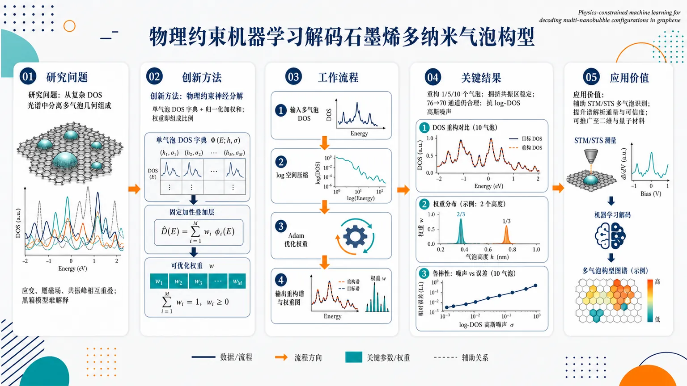
研究问题如何从石墨烯多纳米气泡的复杂 DOS 光谱中，解码每个气泡的几何组成；难点在于多个气泡诱导的应变、赝磁场和共振峰相互重叠，传统黑箱机器学习只能拟合谱线，难以分离每个气泡的物理贡献。创新方法提出物理约束神经分解框架：先用量子输运计算生成单纳米气泡 DOS 光谱字典，每个字典基谱对应明确的高度 h 和宽度 σ；再把已验证的“多气泡 DOS ≈ 单气泡 DOS 的归一化加权和”直接嵌入模型结构。Aha 点是：优化权重本身就是气泡组成比例，而不是黑箱网络的隐变量。工作流程输入目标多气泡 DOS 光谱；将 DOS 转入 log 空间压缩动态范围；固定单气泡 DOS 字典和加性叠加规则；为每个目标谱单独初始化权重向量；用 Adam 最小化 log 谱均方误差；输出重构 DOS 曲线和权重分布图，权重峰值直接标出对应的纳米气泡几何及重复次数。关键结果该方法成功重构含 1、5、10 个纳米气泡的复合 DOS，能恢复尖锐孤立峰和拥挤共振区；在两个相同气泡加一个不同气泡的构型中，权重可反映 2/3 与 1/3 的重复组分比例；完整 76 通道字典降至 70 通道后仍能给出合理近似；在 log-DOS 高斯白噪声下，主共振和组成识别保持稳定，误差随噪声和气泡数增加而温和上升。应用价值把难以解释的电子谱转化为可视化的纳米结构组成图谱，可辅助 STM/STS 或 dI/dV 实验中的多气泡识别，提高谱解析通量和可信度；该框架也可作为物理引导的谱滤波器，抑制非物理噪声拟合，并有望推广到具有局域结构谱叠加特征的二维材料和量子材料。第一部分：核心概览 (Overview)
提出一种物理约束神经分解框架，用单纳米气泡 DOS 光谱字典和已验证的加性谱关系反演石墨烯多纳米气泡构型。区别于黑箱回归，逐个目标谱独立优化权重，权重直接对应气泡几何组成。该工作把量子输运先验嵌入机器学习，提升多气泡重叠谱解析的可解释性、鲁棒性和实验适用潜力。
---
第二部分：结构化快速回顾
《Physics-constrained machine learning for decoding multi-nanobubble configurations in graphene》（None，）
背景：石墨烯纳米气泡引发应变、赝磁场和 DOS/LDOS 谱特征，但多气泡谱峰重叠，传统 STM/STS 高分辨但低通量，普通 ML 黑箱模型难以分离物理贡献。
方法：构建由量子输运计算生成的单气泡 DOS 基字典，利用已验证的多气泡 DOS ≈ 单气泡 DOS 归一化和的关系；每个目标谱单独优化系数向量，而非训练全局回归器。
结果：成功重构 1、5、10 个气泡复合 DOS；可识别重复组分；在 76 通道降至 70 通道的不完整字典下仍可合理重构；对 log-DOS 空间高斯白噪声保持稳定。
讨论：核心优势是物理可解释性与受限假设空间，权重直接给出气泡组成，并能抑制非物理噪声拟合。
局限：适用前提是纳米气泡充分分离；强重叠或相互作用构型需非线性耦合或交互基；噪声测试仍是模拟高斯噪声，缺少真实 STS 验证。
结论：物理约束 ML 可把复杂电子谱转化为纳米结构组成信息，并可能推广到具有加性谱响应的二维和量子材料。
---
第三部分：逐章节冷凝解析 (Section-by-Section Condensing)
Abstract
- Multi-nanobubble spectral decoding problem
多个石墨烯纳米气泡的识别困难来自应变诱导谱特征重叠，目标是从 DOS spectra 中解码气泡构型。核心问题被界定为：*"Identifying multiple graphene nanobubbles from electronic spectra is challenging because their strain-induced features overlap."* 该挑战并非单气泡参数回归，而是多组分叠加谱的反演。
- Physics-constrained decomposition framework
方法核心是物理约束机器学习框架，利用密度态谱进行构型解码：*"We develop a physics-constrained machine-learning framework that decodes nanobubble configurations from density-of-states (DOS) spectra."* 物理约束来自先验加性关系，而非让深度网络自由学习所有映射。
- Validated additive spectral relation
对空间分离气泡，先前全量子输运计算已经验证：多气泡 DOS 与组成单气泡谱的归一化和数值等价。关键原文为：*"For spatially separated nanobubbles, previous full quantum-transport calculations established that the multi-bubble DOS is numerically equivalent to the normalized sum of the constituent single-bubble spectra."* 这使反演问题可转化为线性谱分解。
- Independent coefficient optimization
每个目标谱单独优化基系数，权重直接识别组成几何：*"For each target spectrum, the basis coefficients are optimized independently, and the resulting weights directly identify the constituent geometries."* 这种设计避免全局黑箱回归器的一次性前向预测。
- Robustness claims
性能覆盖复杂度增加、重复组分、字典不完整和模拟噪声：*"The method accurately reconstructs configurations of increasing complexity and remains robust to repeated constituents, incomplete basis dictionaries, and simulated measurement noise."* 抽象层面没有给出具体误差数值，但后续给出字典通道数、噪声重复次数和优化参数。
---
Introduction
- Graphene strain structures as electronic control knobs
石墨烯中的单轴/双轴应变、涟漪、褶皱、折叠、气泡均可产生合成规范场，从而改变电子输运性质。原文概括为：*"Structural deformations in graphene, including uniaxial and biaxial strain, ripples, wrinkles and folds, and bubbles, have been extensively studied because the associated synthetic gauge fields generate unusual electronic and transport properties."* 该背景把纳米气泡放入strain engineering和synthetic gauge fields的大框架中。
- Device relevance of nanobubble geometry identification
准确识别气泡几何与空间分布对于连接局域应变场与器件功能至关重要，潜在应用包括量子点、电子波导、量子干涉仪。关键表述为：*"accurately identifying the geometries and spatial distributions of graphene nanobubbles is important for relating local strain fields to prospective device applications, including quantum dots, electron waveguides, and quantum interferometers."*
- Experimental characterization trade-offs
光学暗场成像适合大面积快速筛查，Raman 可非侵入估计应变，但受衍射极限制约；AFM 能测形貌但受探针卷积影响且不直接测 LDOS；STM/STS 分辨率高但低通量、环境要求严格。证据链包括：*"Optical methods such as dark-field imaging are suitable for rapidly screening nanobubble distributions over large areas"*，*"Raman spectroscopy enables non-invasive estimation of strain fields"*，以及 *"Their spatial resolution is nevertheless limited by optical diffraction, which makes individual nanobubbles difficult to resolve."*
- AFM and STM/STS limitations
AFM 局限在形貌卷积和缺少电子态信息：*"Atomic force microscopy (AFM) is a standard tool for topographic characterization, but its spatial profiles are affected by tip convolution and it does not directly measure the local density of states (LDOS)."* STM/STS 虽可测局域电子性质，但成本高：*"Scanning tunneling microscopy (STM) and spectroscopy (STS) provide the spatial and spectral resolution required to investigate local electronic properties; however, these methods have low throughput and require stringent environmental control and substantial data analysis."*
- Need for efficient spectral interpretation
复杂谱解释框架可补充现有实验技术：*"An efficient framework for interpreting complex spectra and identifying multi-nanobubble configurations would therefore complement these experimental techniques."* 这里的定位不是替代显微技术，而是降低谱解释与高通量筛查瓶颈。
- Prior ML for single-bubble spectra
既有 ML 可从 dI/dV curves 预测单个石墨烯纳米气泡的高度和宽度，且 dI/dV 在合适条件下近似 DOS 或 LDOS。原文为：*"ML algorithms can predict the geometric parameters—height and width—of individual graphene nanobubbles from strain-correlated features in dI/dV curves, which can approximate the DOS or LDOS under the appropriate measurement conditions."*
- Black-box ML limitation for multiple bubbles
常规 ML 在多气泡构型上遭遇谱贡献叠加难题，尤其缺少显式物理约束：*"Although such approaches have been successful for isolated nanobubbles, conventional ML models face substantial challenges for configurations containing multiple nanobubbles."* 黑箱问题被表述为：*"Generic neural networks are often implemented as black-box models that rely on statistical pattern recognition without explicit physical constraints."*
- Explicit contribution
研究目标是构建物理约束神经分解框架，用单气泡谱字典和已验证加性关系识别多气泡构型：*"Here, we develop a physics-constrained neural decomposition framework for identifying multi-nanobubble configurations from graphene DOS spectra."* 方法特征包括：*"The method uses a dictionary of single-bubble spectra generated by quantum-transport calculations and embeds an additive relation that was previously validated by full multi-bubble simulations for sufficiently separated nanobubbles."*
---
Results
#### Physics-constrained neural decomposition framework
- Schematic framework design
框架包含三部分：多气泡石墨烯纳米带示意、单气泡 DOS 基生成与归一化叠加、对复合 DOS 的系数优化。图 1 说明：*"The left panel illustrates a graphene nanoribbon containing multiple nanobubbles, each characterized by its height h and lateral width σ."* 中间流程为：*"single-bubble DOS basis spectra are obtained from quantum-transport simulations using the Kwant Python package and are combined as a normalized sum to construct composite multi-nanobubble spectra."*
- Additive prior as inductive bias
多气泡 DOS 与单气泡谱归一化和的数值不可区分性被当作物理归纳偏置，而不是从数据中重新学习。关键引述：*"We use this validated additive relation as a physics-derived inductive bias rather than asking an unrestricted model to learn it from data."* 这直接限制了模型假设空间。
- Inverse problem as dictionary decomposition
反问题被形式化为把复合谱分解到物理生成的基字典：*"The inverse problem is therefore formulated as the decomposition of a composite spectrum into a physically generated basis dictionary."* 这里的“基”不是抽象 latent basis，而是每个基对应一组明确的 h 与 σ。
- Compact neural architecture
模型结构极简：固定基字典与聚合规则；每个目标谱初始化并独立优化一组系数。原文为：*"The computational model is intentionally compact. The basis dictionary and aggregation rule are fixed, whereas a new coefficient vector is initialized and optimized independently for each target spectrum."*
- Interpretability of coefficients
单一聚合层形成候选基谱的加权组合，每个系数绑定到物理定义的气泡几何。证据为：*"A single aggregation layer forms a weighted combination of the candidate basis spectra, so that every optimized coefficient is associated with a physically defined nanobubble geometry."*
- Not a global pretrained regressor
该框架是优化式谱分解，而非全局预训练回归器：*"The procedure is therefore an optimization-based spectral decomposition implemented in a neural-network formalism, rather than a global pretrained regressor that predicts coefficients in a single forward pass."* 因而泛化方式不是“训练后推理”，而是“每个谱单独求解”。
- Reduced unphysical solutions
限制假设空间可减少非物理解：*"Restricting the hypothesis space in this manner reduces the opportunity for unphysical solutions, and the resulting weight distribution can be interpreted directly in terms of nanobubble composition."* 这里的可解释性来自物理基和加性规则，而非事后解释工具。
- Neural formalism as differentiable solver
神经网络只是可微优化实现，不依赖深层网络普适逼近能力。原文明确：*"The neural formalism serves as a differentiable implementation of this constrained inverse problem."* 以及：*"Its effectiveness derives from the physically specified basis and the validated aggregation rule rather than from the universal approximation capacity of a deep network."*
#### Reconstruction of composite DOS spectra
- Increasing-complexity reconstruction test
复合 DOS 重构测试覆盖 1、5、10 个纳米气泡。图 2 描述为：*"The original composite spectra (black) are compared with spectra reconstructed through spectrum-specific coefficient optimization (red) for systems containing (a) one, (b) five, and (c) ten nanobubbles."* 这直接考察复杂度增长时的谱重构能力。
- High-fidelity resonance recovery
重构曲线能再现主要共振结构，包括孤立尖峰和拥挤谱区：*"In all cases, the reconstructed curves reproduce the principal resonance structures of the target spectra with high fidelity, including both isolated sharp peaks and crowded spectral regions."* 结果没有报告 MSE、R² 或 P 值，论证主要基于图形吻合和权重分布。
- Additive representation capacity
随气泡数增加，重构仍稳健，说明加性基表示对所考虑构型足够：*"The agreement remains robust as the number of constituent nanobubbles increases, indicating that the additive basis representation retains sufficient capacity for the configurations considered here."*
- Single-bubble localization
单气泡情形中，优化权重强烈定位于正确基分量：*"For the single-bubble case, the optimized weight distribution is strongly localized at the correct basis component."* 这验证系数不仅拟合曲线，也具有几何识别意义。
- Multi-bubble sparse or structured weights
五气泡和十气泡情形出现多个非零权重，对应复杂组成：*"For the five- and ten-bubble cases, several nonzero weights emerge, reflecting the greater complexity of the underlying compositions."* 权重分布承载结构信息，而不是任意线性组合。
- Constituent decomposition rather than generic fitting
方法并不只是重现线形，而是识别具有物理意义的基谱集合：*"Importantly, the procedure does not merely reproduce the overall line shape; it identifies a sparse or structured set of physically meaningful basis spectra whose superposition yields the observed DOS."* 这构成与普通曲线拟合的关键区别。
#### Tests beyond idealized basis conditions
- Repeated-constituent test
图 3a 包含两个相同纳米气泡和一个不同纳米气泡，用来测试重复组分识别：*"an imbalanced configuration contains two identical nanobubbles and one distinct nanobubble."* 对应真实权重应体现 2/3 与 1/3 的分数 multiplicity。
- Multiplicity recovery
重构 DOS 与原始曲线吻合，优化权重再现重复组分的 multiplicity：*"The reconstructed DOS remains in close agreement with the original curve, and the optimized weights reproduce the multiplicity of the repeated constituent."* 说明模型可区分组成不均衡，而不是只判断某个基是否存在。
- No additional architecture for imbalance
组成不均衡情形无需额外网络模块：*"The method can therefore distinguish compositionally imbalanced configurations without additional architectural complexity."* 这是物理权重设计的直接收益。
- Incomplete dictionary test
图 3b 将三个组成气泡之一从基集中排除，考察字典缺失。原文为：*"one of the three constituent nanobubbles is excluded from the basis set."* 完整优化阵列有 76 个基通道，不完整字典保留 70 个通道：*"The full optimization array contains 76 basis channels, whereas the incomplete-dictionary test retains 70 channels."*
- Approximate reconstruction under missing basis
在字典不完整时，目标谱不能被精确表示，但模型可选择最接近的已知基组合：*"In this incomplete-dictionary scenario, the target spectrum cannot be represented exactly by the available library. Nevertheless, the model provides a reasonable reconstruction by selecting the closest admissible combination of known basis spectra."*
- Experimental relevance of incomplete libraries
实验中基库很难穷尽所有气泡几何，因此不完整字典容忍性具有实际意义：*"This result is relevant experimentally because a practical basis library is unlikely to be exhaustive."* 物理约束假设空间提供了对先验字典不完备的容忍：*"The physically constrained hypothesis space therefore provides a degree of tolerance to incompleteness in the prior dictionary."*
#### Robustness against measurement-like perturbations
- Noise injection in log space
噪声测试在复合谱做 logarithmic transformation 后添加高斯白噪声。图 4 说明：*"Robustness against additive Gaussian white noise in the log-transformed input spectra."* 这模拟测量扰动，但不等同于完整实验噪声模型。
- Noise-evaluation sample sizes
噪声统计覆盖 N = 1、3、5 个气泡构型，分别采用 7、6、8 个独立 realization。原文给出：*"At each noise level, the averages are taken over 7, 6, and 8 independent realizations for N = 1, 3, and 5, respectively; the vertical error bars denote the standard deviation of δw."*
- Weight error metric
性能指标为归一化 L1 weight error δw，图 4 纵轴报告均值和标准差。原文为：*"the corresponding normalized L1 weight error δw, defined in Eq. (10)."* 该指标衡量优化权重与真实组成权重的偏差。
- Noise effect on spectral features
主共振峰在较宽噪声范围内可见，细节随噪声幅度增加而被遮蔽：*"The dominant resonances remain visible over a substantial noise range, whereas finer spectral features are gradually obscured as the noise amplitude increases."*
- Error grows with noise and complexity
权重误差随噪声幅度增加，并且多气泡构型退化更快：*"The weight error increases gradually with noise amplitude and more rapidly for configurations containing larger numbers of nanobubbles, but the overall degradation remains moderate over the range considered."* 该结果没有给出具体 δw 数值表，只提供趋势与图示。
- Physics-guided spectral filtering
由于重构被限制在单气泡物理基张成空间内，模型不易拟合与气泡字典不一致的随机波动：*"Because reconstruction is restricted to the span of the physically motivated single-bubble basis spectra, the model is discouraged from fitting fluctuations that are inconsistent with the nanobubble dictionary."* 因此框架兼具预测器和滤波器功能：*"the framework acts not only as a constituent predictor but also as a physics-guided spectral filter."*
- Relevance to DOS/dI/dV experiments
噪声鲁棒性支持其应用于实验 DOS 或 dI/dV 数据：*"The noise analysis supports the feasibility of applying the method to experimentally acquired DOS or dI/dV data, for which instrumental noise and background fluctuations are unavoidable."* 但这种可行性仍需真实实验验证。
- Overall result synthesis
结果表明，嵌入加性先验可产生紧凑、可解释模型；优化权重识别负责复合 DOS 的单气泡基分量。核心表述为：*"Encoding the additive prior directly in the neural decomposition architecture yields a compact and interpretable model."* 以及：*"The optimized weights identify the single-bubble basis components responsible for the composite DOS."*
---
Discussion
- Central methodological claim
核心方法是在最小神经分解结构中直接嵌入已验证的物理加性谱关系：*"The central feature of the method is the direct incorporation of a physically validated additive spectral relation into a minimal neural decomposition architecture."* 因而重构准确性与解释性同时保留。
- Transparent relation between weights and geometry
优化权重与组成纳米气泡几何之间具有透明关系：*"This design enables accurate reconstruction while retaining a transparent relation between the optimized weights and the constituent nanobubble geometries."* 权重不是潜变量，而是与具体 single-bubble spectra 绑定。
- Effective across stress tests
方法在复杂构型、重复组分、不完整字典和噪声谱中有效：*"The method remains effective for increasingly complex configurations, repeated components, incomplete basis dictionaries, and noisy spectra."*
- Scope limited by additive regime
适用范围由加性关系成立的区域决定：*"The scope of the method is set by the regime in which the additive relation applies."* 这意味着空间充分分离是必要物理条件。
- Prior validation matters
当前表示不是未经测试的合成近似，而是继承先前全多气泡量子输运验证：*"The present decomposition therefore uses a previously validated representation rather than an untested synthetic approximation."* 先前结果为：*"for sufficiently separated nanobubbles, the normalized sum of the corresponding single-bubble DOS spectra agrees with the full multi-bubble result within numerical accuracy."*
- Strongly interacting bubbles excluded
强重叠或相互作用气泡超出当前线性加性模型范围：*"Strongly overlapping or interacting nanobubbles remain outside this regime and may require an extended dictionary containing interaction-dependent basis elements or a model with explicit nonlinear coupling terms."* 这是最关键的物理局限。
- Noise model limitation
鲁棒性测试只使用 log 谱空间中的模拟 Gaussian noise；真实实验还包括结构化背景、漂移、针尖矩阵元和能量依赖展宽。原文为：*"the present robustness tests use simulated Gaussian noise added in logarithmic spectral space, whereas experimental spectra may contain structured backgrounds, drift, tip-dependent matrix elements, and energy-dependent broadening."*
- Need for experimental validation
真实隧穿谱验证对确定实际操作范围必要：*"Experimental validation with tunneling-spectroscopy data will therefore be important for establishing the practical operating range of the framework."*
- Generalization to other materials
该策略可推广到具有局域结构/电子 motif 叠加谱响应的二维与量子材料：*"The same strategy may be useful for other two-dimensional and quantum materials in which measured spectra can be approximated by superpositions of localized structural or electronic motifs."*
---
Methods
#### Nanobubble geometry and DOS basis spectra
- Dataset source and physical model
单气泡 DOS 数据集沿用 Ref. [12]，源自 Ref. [36] 的 quantum-Hall graphene model：*"The present study uses the same single-bubble DOS dataset reported in Ref. [12], generated from the quantum-Hall graphene model introduced in Ref. [36]."* 这说明当前工作没有重新发明底层量子输运数据生成模型。
- Tight-binding Hamiltonian
石墨烯 π 电子系统采用最近邻紧束缚哈密顿量：
Hₜᵦ = −Σ⟨i,j⟩ tᵢⱼ cᵢ† cⱼ + H.c.
原文为：*"The graphene π-electron system is described by the nearest-neighbor tight-binding Hamiltonian"*，并给出未应变最近邻跃迁尺度：*"the unstrained nearest-neighbor hopping scale is t0 ≃ 3 eV."*
- Kwant implementation
应变和磁场依赖的 hopping、器件几何、开放引线、边界条件均按既有 Kwant 模型实现：*"The strain- and magnetic-field-dependent hopping elements tij, together with the device geometry, open leads, and boundary conditions, are implemented in the Kwant model exactly as in Refs. [36, 12]."* DOS 数值计算也使用 Kwant：*"The DOS spectra are calculated numerically with the Kwant implementation used in Refs. [36, 12]."*
- Gaussian nanobubble geometry
每个气泡由最大高度 h 和横向宽度 σ 描述：*"Each nanobubble is characterized by its maximum height h and lateral width σ."* 面外形变为高斯形式：
z(r) = h exp[−|r − r₀|²/(2σ²)]，原文直接给出：*"The out-of-plane deformation centered at r0 is represented by z(r)=h exp[−|r−r0|²/(2σ²)]."*
- Pseudomagnetic field expression
形变产生 C₃ᵥ-symmetric pseudomagnetic field，表达式包含 valley index ν = ±1、Grüneisen-like 参数 β = 3.37、碳碳最近邻距离 a₀ = 0.146 nm。原文为：*"The resulting C3v-symmetric pseudomagnetic field is"*，并定义：*"ν = ±1 labels the two valleys, β = 3.37, and a0 = 0.146 nm is the nearest-neighbor carbon–carbon distance."*
- Lattice constant
石墨烯晶格常数为 a = √3 a₀ = 0.246 nm，原文为：*"The graphene lattice constant is a = √3 a0 = 0.246 nm."*
- Single-bubble library size and parameter grid
数据集包含 275 条单气泡谱，采样范围为 σ = 20a, 21a, …, 30a 和 h = a, 2a, …, 25a。原文为：*"The dataset contains 275 single-bubble spectra sampled over σ = 20a, 21a, …, 30a and h = a, 2a, …, 25a."* 数量来自 11 个 σ 值 × 25 个 h 值。
- Energy grid and interpolation
原始 DOS 有 20,001 个能量点，能量范围 −0.1 ≤ E ≤ 0.1 eV；插值后为 10,001 点，范围 −0.099 ≤ E ≤ 0.099 eV。原文为：*"The raw DOS contains 20,001 points over −0.1 ≤ E ≤ 0.1 eV and is interpolated to 10,001 points over −0.099 ≤ E ≤ 0.099 eV."*
#### Composite spectra and neural decomposition
- Multiplicity and normalized weights
对包含 N 个空间分离纳米气泡的构型，nᵢ 表示第 i 个单气泡基谱的重复次数，归一化真实权重为 wᵢtrue = nᵢ/N，且 Σwᵢtrue = 1。原文为：*"let ni denote the multiplicity of the ith single-bubble basis spectrum di(E), such that N = Σi=1M ni."*
- Additive composite DOS formula
在分离区域内，复合谱为加权单气泡谱和：
Dcomp(E) = Σᵢ wᵢtrue dᵢ(E)。
原文为：*"the full multi-bubble DOS is numerically equivalent, within the accuracy of the quantum-transport calculation, to the normalized superposition Dcomp(E)=Σi=1M witrue di(E)."*
- Repeated constituents as fractional weights
两个相同气泡加一个不同气泡的真实权重是 2/3 和 1/3。原文为：*"This convention represents repeated constituents through fractional multiplicity weights; for example, two identical nanobubbles and one distinct nanobubble have ground-truth weights 2/3 and 1/3, respectively."*
- Adjacent coalesced bubbles excluded
空间相邻并合并成单个形变的气泡被当作一个纳米气泡，不作为独立加性组分：*"Spatially adjacent bubbles that coalesce into a single deformation are treated as one nanobubble and are not represented as independent additive constituents."* 这进一步限定了模型物理适用边界。
- Target-specific coefficient optimization
每个目标谱固定基字典和前向操作，只重新初始化并优化 ŵ。原文为：*"For a given target spectrum, the basis dictionary and the forward operation in Eq. (5) are fixed, whereas a new coefficient vector ŵ is initialized and optimized independently."*
- Log-space representation
为压缩 DOS 动态范围，目标谱与重构谱都在 logarithmic space 表示：*"To compress the dynamic range of the DOS, both the target and reconstructed spectra are represented in logarithmic space."* 模型输出为 ypred(E)=log[ε+Σᵢ ŵᵢ dᵢ(E)]，其中 ε 为小正则项：*"where ε is a small positive regularizer."*
- Optimization array dimensions
报告计算使用 50,000 × 76 的工作优化阵列，含 76 个基通道；不完整字典测试为 50,000 × 70。原文为：*"The working optimization array used in the reported calculations has dimensions 50,000 × 76, with 76 basis channels."* 以及：*"For the incomplete-dictionary test in Fig. 3b, the corresponding array has dimensions 50,000 × 70."*
- No validation/test split
每个目标谱是独立表示问题，不训练可迁移预测网络，因此没有单独验证集或测试集：*"The optimization uses mini-batches of 128 samples, without separate validation or held-out test sets, because the objective is to represent the supplied target spectrum rather than to train a transferable coefficient-prediction network."*
- Loss function
损失为 log 谱空间均方误差：
Llog = (1/Ns) Σk [ypred,k − ytarget,k]²。
原文为：*"The coefficients are obtained by minimizing the mean-squared error in logarithmic spectral space."*
- Optimizer and training hyperparameters
使用 Adam，初始学习率 10⁻³，最多 10,000 epochs。原文为：*"The loss is minimized using the Adam optimizer with an initial learning rate of 10−3. Optimization is run for at most 10,000 epochs."*
- Early stopping and learning-rate scheduler
若损失 100 epochs 无改善则 early stopping；若 50 epochs 无改善，ReduceLROnPlateau 将学习率乘以 0.5。原文为：*"Early stopping is applied when the optimization loss does not improve for 100 epochs, and the ReduceLROnPlateau scheduler lowers the learning rate by a factor of 0.5 after 50 epochs without improvement."*
- Initialization and coefficient constraints
系数采用 Xavier/Glorot uniform 初始化，并在优化中裁剪到 [0,1]；不设固定随机种子。原文为：*"The coefficients are initialized using the Xavier (Glorot) uniform scheme and clipped to the interval [0,1] throughout optimization. No fixed random seed is imposed."*
- Coefficient-vector interpretability
每个系数绑定指定基谱，因此优化权重直接识别组成几何：*"Because every coefficient is tied to a specified basis spectrum, the optimized weight vector directly identifies the constituent nanobubble geometries."*
#### Noise model and evaluation
- Gaussian noise after log transform
为模拟测量不确定性，在 clean composite spectrum 经 log 变换后添加高斯白噪声：*"To emulate measurement uncertainty, Gaussian white noise is added after the logarithmic transformation of the clean composite spectrum."*
- Clean and noisy targets
clean log 谱为 yclean(E)=log[ε + Dcomp(E)]；noisy target 为 yη(E)=yclean(E)+η f(E)。原文为：*"Defining yclean(E)=log[ε+Dcomp(E)], the noisy target is yη(E)=yclean(E)+ηf(E)."*
- Noise distribution and amplitude
f(E) 独立采样自标准正态分布 N(0,1)，η 控制噪声幅度。原文为：*"where f(E) is sampled independently from the standard normal distribution N(0,1) and η controls the noise amplitude."*
- No second log transform
噪声添加后不再进行额外 log 变换：*"No additional logarithmic transformation is applied after the noise is added."* 这避免把已加性 log-space 噪声再非线性压缩。
- Noise realizations
图 4 每个噪声水平下，N=1、3、5 构型分别使用 7、6、8 次独立 realization：*"For each plotted noise level in Fig. 4, 7, 6, and 8 independent realizations are used for configurations containing N = 1, 3, and 5 nanobubbles, respectively."*
- Error plotting convention
横坐标为 mean noise amplitude，纵坐标为 mean percentage error，误差棒为 percentage error 标准差：*"The horizontal coordinate is the mean noise amplitude, and the vertical coordinate is the mean percentage error. The vertical error bars denote the standard deviation of the percentage error over the corresponding realizations."*
- Normalized L1 composition error
组成误差为
δw = 100 Σᵢ|ŵᵢ − wᵢtrue| / Σᵢ|wᵢtrue|。
原文为：*"The composition error is quantified by the normalized L1 deviation of the optimized weights."*
- Denominator and absent basis handling
对归一化真实权重，分母等于 1；该定义对不存在于目标中的基元素也有限，并支持重复组分的分数权重：*"For the normalized ground-truth weights in Eq. (4), the denominator equals unity."* 以及：*"This definition remains finite for basis elements that are absent from the target configuration and accommodates repeated constituents through their fractional multiplicity weights."*
---
Data availability
- Dataset access condition
生成和分析的模拟数据可在合理请求下从通讯作者处获得：*"The simulation datasets generated and analyzed during the current study are available from the corresponding authors upon reasonable request."* 未提供公开仓库链接或 DOI。
---
Code availability
- Code access condition
量子输运仿真、数据集生成、基构建和谱特异系数优化代码可合理请求获取：*"The computational codes used for quantum-transport simulations, dataset generation, basis construction, and spectrum-specific coefficient optimization are available from the corresponding authors upon reasonable request."* 代码未公开托管，限制了即时复现便利性。
---
Author contributions
- Role allocation
N.M. 负责研究构想、物理模型、量子输运仿真、电子谱生成和结果解释；T.S. 负责 ML 方法、物理约束框架和计算分析监督；J.K. 负责数据集构建、框架实现、系数优化、鲁棒性分析和数据分析。原文为：*"N.M. conceived the study, developed the physical model, performed the quantum-transport simulations, generated the electronic spectra, and interpreted the results."*，*"T.S. developed the machine-learning methodology, designed the physics-constrained framework, and supervised the computational analysis."*，以及 *"J.K. constructed the datasets, implemented the decomposition framework, performed the spectrum-specific coefficient optimization and robustness analyses, and analyzed the data."*
---
Competing interests
- No declared conflicts
利益冲突声明为无：*"The authors declare no competing interests."*
---
Acknowledgements
- Funding sources
经费来自韩国 NRF、MSIT、MOE、G-LAMP、Quantum Flagship Program、IITP、Chosun University 和 Kongju National University Industry–University Cooperation Foundation。具体编号包括 RS-2025-00557045、RS-2026-25497242、RS-2023-00285353、RS-2025-25464832。原文为：*"This work was supported by National Research Foundation of Korea (NRF) grants funded by the Ministry of Science and ICT (MSIT) under Grant Nos. RS-2025-00557045 and RS-2026-25497242."*
---
第四部分：深度理解与语言支持 (Understanding & Nuance)
1. 术语解析
- Physics-constrained machine learning
含义不是简单“用物理数据训练 ML”，而是把物理关系直接写进模型结构或损失中。这里的约束是 Dcomp(E)=Σwᵢdᵢ(E)，即复合 DOS 必须处在单气泡谱字典张成的空间内。与 physics-informed neural networks 相近，但更偏向“物理结构化反演”。
- Inductive bias
指模型预先偏向某类解的结构性假设。语境中 *"physics-derived inductive bias"* 表示模型被设计成优先寻找满足加性谱关系的解，而不是在所有神经网络函数空间中寻找任意拟合。
- Basis dictionary
“字典”不是语言词典，而是一组可用于线性组合的候选物理谱，每个基谱对应具体纳米气泡几何参数 h 与 σ。与传统线性代数中的 basis 不完全相同，因为可能不正交、可能冗余、也可能不完备。
- Spectrum-specific coefficient optimization
指每个输入目标谱都重新优化一组权重，不是训练一个通用网络后直接预测。优点是解释性强、无需大量监督标签；缺点是每个新谱都要迭代优化，推理速度可能慢于前向回归器。
- Normalized L1 weight error
用权重向量绝对偏差衡量组成识别错误。由于真实权重和为 1，δw 实质上是百分比形式的 L1 距离。它关注“组分识别是否正确”，不等同于 DOS 曲线重构误差。
2. 疑难查证
- 为什么多气泡 DOS 可以近似为单气泡 DOS 的归一化和？
当纳米气泡空间上充分分离时，每个气泡诱导的应变场、赝磁场和局域电子响应主要局限在各自区域，彼此耦合很弱。总 DOS 是整个体系态密度的空间/能量统计量，近似等于各局部 motif 贡献的平均。归一化和避免气泡数增加导致谱强度简单放大，使权重表达“组成比例”而不是“绝对总量”。
- 为什么在 log-DOS 空间优化？
DOS 谱通常同时包含强峰和弱峰。直接 MSE 会让高强度峰主导损失，弱但有判别力的谱结构被忽略。log 变换压缩动态范围，使尖峰、肩峰和低强度结构都能参与优化。但 log-space 噪声不完全等价于真实仪器噪声，真实 STS 中还会有能量依赖展宽、背景和探针效应。
- 为什么不设置 validation/test set 不一定是错误？
这里目标不是训练“输入谱 → 权重”的全局预测器，而是对每个给定谱求解一个受物理约束的逆问题。更接近非负谱分解或稀疏反演。验证集通常评估模型泛化，而此处泛化依赖基字典与物理关系；关键应评估的是重构误差、权重误差、噪声敏感性和字典缺失鲁棒性。
- 为什么不完整字典仍可重构？
若缺失气泡的谱与字典中某些相近 h, σ 气泡谱高度相似，优化会选择最邻近或组合近似的基。重构曲线可能仍好，但权重解释会从“精确几何识别”退化为“最接近可用几何解释”。因此不完整字典下，DOS 拟合好不必然代表真实气泡几何完全正确。
---
第五部分：创新评估与关联 (Synthesis & Novelty)
1. 创新性判断
- 从单气泡参数回归转向多组分谱分解
近年相关工作已能用 ML 从 dI/dV 或 DOS 谱预测单个纳米气泡的高度、宽度；2024 年已有多气泡识别相关研究。关键新意在于把多气泡问题明确重构为物理基字典上的系数分解问题，而非继续训练黑箱分类器或回归器。
- 把已验证量子输运加性关系嵌入模型结构
新颖性不在网络深度，而在把先前全多气泡量子输运计算验证过的关系
multi-bubble DOS ≈ normalized sum of single-bubble DOS
作为硬结构写入神经架构。这样解决了黑箱 ML 难以分离重叠谱贡献的问题。
- 权重即物理解释，而非事后解释
传统可解释 ML 常需要 saliency map、feature importance 或 surrogate model。这里每个权重天然对应一个单气泡几何基谱，解释性是架构内生的。优化结果直接给出组成比例，如重复气泡的 2/3、1/3 权重。
- 处理实际非理想条件
对重复组分、不完整字典和模拟噪声的测试提升了应用可信度。尤其 76 → 70 通道的不完整字典测试，回应实验基库不可能穷尽的现实问题；log-space Gaussian noise 下对 N=1、3、5 构型分别做 7、6、8 次独立 realization，展示初步统计鲁棒性。
- 解决前人未充分解决的问题
前人单气泡 ML 主要解决几何参数估计；普通多气泡 ML 易陷入黑箱与谱峰重叠不可分的问题。该框架解决的是：
- 多纳米气泡 DOS 的可解释反演；
- 重复组分 multiplicity 的识别；
- 缺失候选基时的近似物理解释；
- 噪声下避免拟合非物理涨落。
- 创新边界
该工作不是提出新的石墨烯应变哈密顿量，也不是首次计算纳米气泡 DOS；底层数据集和加性物理依据来自既有 Ref. [12] 与 Ref. [36]。真正贡献在于反演范式：把量子输运先验、谱字典和可微优化结合成紧凑、可解释、可扩展的机器学习框架。
-
13
📊 含图深析
📄 摘要：用 PINN 求解平面光学中的 Monge-Ampère 光束整形方程，将入射光改造成指定强度分布，覆盖有限距离与远场目标；所得相位面经标量衍射验证，并与传统相位恢复方法对比。
💡 亮点：PINN 直接求解 Monge-Ampère 光束整形方程，能做有限距离和远场目标。平面光学设计可从反问题走向快速生成。
📖 展开分析 + 配图
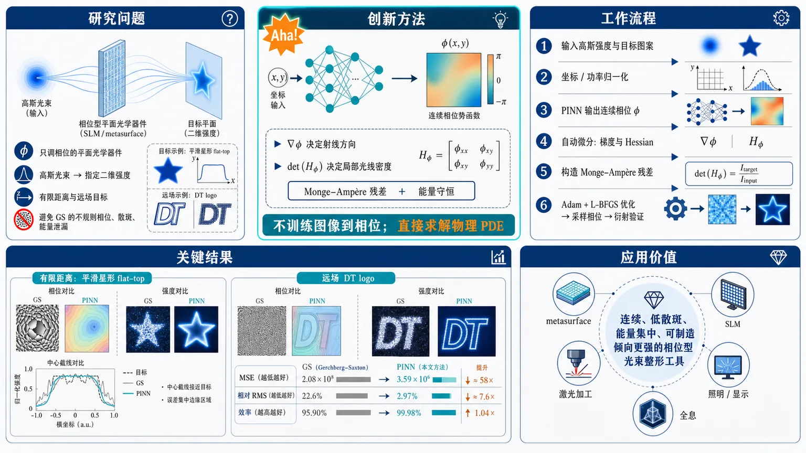
研究问题如何为只调相位的平面光学器件（SLM 或 metasurface）设计连续相位轮廓，把高斯入射光束重新分配成指定二维强度图案，同时避免传统 Gerchberg–Saxton 方法常见的不规则相位、散斑和能量泄漏；问题覆盖有限距离目标平面与远场角分布目标。创新方法把相位轮廓表示为可微神经场，用 PINN 直接求解由广义斯涅尔定律和能量守恒射线映射导出的 Monge–Ampère 方程；Aha 点是：不训练“图像到相位”的数据模型，而是让神经网络相位的梯度决定射线方向、Hessian determinant 决定局部光线密度，用物理 PDE 残差自动塑造平滑低散斑相位。工作流程输入高斯光束强度与目标强度图案；归一化孔径、相位和目标坐标；PINN 输出连续相位势函数；自动微分计算相位一阶梯度和二阶 Hessian；根据有限距离映射或远场方向映射查询目标强度；构造功率守恒 Monge–Ampère 残差并用 Adam + L-BFGS 优化；最后在规则网格采样相位，用独立标量衍射仿真验证输出光斑。关键结果有限距离案例中，1 mm 腰斑 Gaussian 在 z = 10 cm 处被整形成平滑星形 flat-top，中心截线与目标基本重合，误差主要集中在边缘。远场 DT logo 案例中，PINN 相位更平滑、散斑更少；MSE 从 GS 的 2.08×10⁸ 降至 3.59×10⁶，约提升 58 倍；相对 RMS 误差从 22.6% 降至 2.97%；目标支撑内能量效率从 95.90% 升至 99.98%。应用价值为平面光学光束整形提供一种物理一致的相位设计工具，可用于 metasurface、SLM、激光加工、照明、全息和显示中的复杂二维非圆柱对称光斑生成；相比像素迭代相位恢复，更适合生成连续、可制造倾向更强、能量更集中且低散斑的相位型光学元件。第一部分：核心概览 (Overview)
提出一种用于平面光学相位型光束整形的物理信息神经网络（PINN）设计框架，将广义斯涅尔定律、能量守恒射线映射与Monge–Ampère 方程统一到可微优化中，覆盖有限距离目标与远场角分布目标。相较 Gerchberg–Saxton，相位更平滑、散斑更少，DT 远场任务中相对 RMS 误差从 22.6% 降至 2.97%，效率从 95.90% 升至 99.98%，标志着 PINN 首次进入平面光学光束整形问题。
---
第二部分：结构化快速回顾
《Physics-Informed Neural Networks for Optimal Beam Shaping in Flat Optics》（None，）
背景
相位型光束整形通过 SLM 或 metasurface 调制波前相位，在传播后形成目标强度分布。传统 Gerchberg–Saxton（GS） 方法适合任意远场图案，但常产生不规则相位与散斑；基于射线映射的 Monge–Ampère 方法物理一致性更强，但全非线性 PDE 难以数值求解。
方法
使用 PINN 表示连续相位势函数，通过自动微分计算一阶、二阶导数，最小化由广义斯涅尔定律与功率守恒 Jacobian导出的 Monge–Ampère 残差。分别构建有限距离与远场归一化方程，并用可微双线性采样处理目标强度查询。
结果
有限距离任务将 1 mm 腰斑 Gaussian 在 z = 10 cm 处整形成平滑星形 flat-top；远场任务将 Gaussian 整形成 DT 字母 logo。独立标量衍射仿真验证了相位设计的有效性。DT 任务中 PINN 的 MSE 为 3.59 × 10⁶，GS 为 2.08 × 10⁸；相对 RMS 误差分别为 2.97% 与 22.6%。
讨论
PINN 不是数据驱动 surrogate，而是针对单个 source–target 对求解 PDE 的设计型优化器。其优势在于直接约束光学功率守恒、生成较平滑相位、减少高频散斑，并扩展圆柱对称 metasurface 光束整形到非圆柱对称二维目标。
局限
实验仅展示两个数值案例；缺少制造误差、偏振、矢量衍射、材料色散、宽带性能、实际 metasurface 离散化、训练时间与超参数敏感性分析。有限距离边界存在衍射与目标平滑导致的误差集中。
结论
PINN 能以连续可微相位势形式求解 flat optics 中的相位型光束整形 PDE，在测试任务中较 GS 取得更低误差、更高能量效率与更少散斑，并经独立波动传播仿真验证。
---
第三部分：逐章节冷凝解析 (Section-by-Section Condensing)
Abstract
- PINN for phase-only flat-optics beam shaping
核心任务是设计平面光学相位轮廓，将入射光束重分布为给定目标强度；方法直接面向phase-only optical element，而非振幅调制。摘要明确目标为 *"designing phase profiles in flat optics that reshape an incident beam into a prescribed target intensity distribution"*。这种设定对应 SLM 或 metasurface 只改变相位、基本保持输入振幅不变的典型平面光学问题。
- Monge–Ampère equations from energy-conserving ray mappings
设计方程来自能量守恒射线映射，并由相位梯度生成；核心 PDE 是 Monge–Ampère beam-shaping equations。摘要写明 *"The method solves Monge–Ampère beam-shaping equations associated with energy-conserving ray mappings generated by a phase-only optical element"*。关键物理约束不是图像相似性，而是源面功率元与目标面功率元之间的守恒。
- Unified finite-distance and far-field treatment
框架同时处理有限传播距离目标与远场角分布目标，统一依托广义斯涅尔定律。摘要给出 *"We treat both finite-distance and far-field targets using a generalized-Snell-law formulation"*。有限距离中目标坐标是实际平面坐标；远场中目标坐标是方向余弦 ((α,β))。
- Validation against scalar diffraction and GS
训练基于射线 PDE，但性能通过独立标量衍射仿真验证，并与 Gerchberg–Saxton 比较。摘要说明 *"The learned phase profiles are validated by scalar diffraction simulations and compared with conventional phase-retrieval methods such as Gerchberg–Saxton"*。这种验证区分了几何光学训练目标与波动光学实际传播结果。
- Claimed first application of PINN to flat-optics beam shaping
新颖性声明集中在 PINN 首次用于该类问题：*"To our knowledge, this is the first time a PINN has been used for beam shaping problems in flat optics"*。创新点不是 PINN 本身，也不是 Monge–Ampère 本身，而是二者在平面光学相位型光束整形中的结合。
---
1 Introduction
- Beam shaping application scope
光束整形服务于多个应用场景，包括激光加工、照明、全息、显示和平面光学。开篇界定为 *"Beam shaping transforms an incident optical beam into a prescribed intensity distribution and is relevant for laser machining, illumination, holography, displays, and flat optics"*。这说明目标不是单一成像，而是任意强度重分布。
- Phase-only implementation preserves amplitude
相位型器件通过 (Φ(x,y)) 改变波前，输入振幅近似不变。关键表述为 *"an SLM or metasurface modifies the wavefront phase (Φ(x,y)) while leaving the input amplitude essentially unchanged"*。因此总功率必须在源与目标之间重新分配，不能依赖振幅吸收或增益。
- GS algorithm is flexible but irregular
Gerchberg–Saxton 通过输入平面与傅里叶平面的交替投影恢复相位，优势是可处理任意远场图像，缺点是相位不规则、强度含 speckle-like 波动。原文描述为 *"GS is flexible for arbitrary far-field images, but the recovered phase is typically irregular and the reconstructed intensity may contain speckle-like fluctuations"*。这为后续 PINN 的平滑相位与低散斑优势建立对照。
- Ray mapping provides a complementary physics route
替代路线将问题写成能量守恒 ray-mapping：相位梯度决定射线方向，光功率守恒给出 Monge–Ampère 方程。关键句为 *"generalized Snell law determines the ray direction from the local phase gradient, while conservation of optical power leads to a Monge–Ampère equation for the phase"*。这将设计变量从像素相位转化为连续势函数。
- PINN targets a fully nonlinear and potentially degenerate PDE
Monge–Ampère 方程被标识为全非线性且可能退化，传统有限差分或有限元收敛困难。证据为 *"the Monge–Ampère equation is fully nonlinear and potentially degenerate, making standard finite-difference or finite-element solvers difficult to converge"*。PINN 的价值在于自动微分与可微优化对复杂非线性 PDE 的适配。
- Training signal is physics, not data labels
神经网络表示固定 source–target 对的相位势，训练目标是 PDE 残差，而不是从数据集中学习 phase label。原文明确 *"This is not a data-driven surrogate: the training signal is the optical PDE itself"*。这一区分非常关键：模型不能直接泛化到任意新目标，而是每个目标重新求解。
- Extension beyond cylindrical symmetry
相关 metasurface 光束整形近期多为圆柱对称，该方法扩展到非圆柱对称目标。原文为 *"The approach generalizes recent cylindrically symmetric metasurface beam-shaping demonstrations to non-cylindrically symmetric targets"*。DT logo 与星形 flat-top 正是非径向对称二维目标。
---
2 Theoretical Framework
- Thin phase-only optical element assumption
理论假设器件足够薄，只改变局部相位，紧贴表面后的标量场为
(Uₒᵤₜ(x,y)approx Uᵢₙ(x,y)exp[iΦ(x,y)])。原文给出 *"We assume a thin element that changes the local phase while leaving the amplitude essentially unchanged immediately after the surface"*。这排除了厚透镜多次传播、吸收与振幅调制。
- Input irradiance and equal-power normalization
输入辐照度定义为
(I(x,y)=frac12c,nᵢₙϵ₀,Uᵢₙ(x,y)²)。同时源与目标强度归一化为相等总功率。原文说明 *"the input and target intensities are normalized to equal total power, as required by a phase-only redistribution of optical energy"*。这消除了任意全局强度比例，也满足相位型器件不能创造或损耗总能量的约束。
- Independent wave validation separated from ray design
理论方程来自射线映射，结果再用标量波传播独立测试。章节开头强调 *"The resulting phase is then tested independently with scalar wave propagation"*。这意味着 PDE 优化不是直接拟合衍射图，而是先构造 ray-optics 设计，再检查 wave-optics 可实现性。
---
2.1 Generalized Snell law and ray mapping
- Generalized Snell law links phase gradient to tangential wave-vector change
广义斯涅尔定律将相位梯度 (partialₓΦ,partial_yΦ) 与出射/入射波矢切向分量差联系起来。原文为 *"The generalized Snell law relates the phase gradient to the tangential change of wave vector"*，并给出
(nₒᵤₜsinθₒᵤₜo̧sǎrphiₒᵤₜ-nᵢₙsinθᵢₙo̧sǎrphiᵢₙ=fracłambda2πpartialₓΦ)，
(nₒᵤₜsinθₒᵤₜsinǎrphiₒᵤₜ-nᵢₙsinθᵢₙsinǎrphiᵢₙ=fracłambda2πpartial_yΦ)。
- Normal incidence simplifies outgoing direction cosines
在 (θᵢₙ=0) 正入射条件下，引入 (tildeΦ=Φ/k)，(k=2π nₒᵤₜ/łambda)，出射方向为
(Oₓ₌tildeΦₓ, O_y=tildeΦ_y, O_z=K)。原文写明 *"For normal incidence, (θᵢₙ=0)"* 后得到这些关系。这里 (tildeΦ) 具有长度单位，(tildeΦₓ,tildeΦ_y) 是无量纲方向余弦。
- Propagating-ray condition constrains phase gradient
纵向分量
(K=sqrt1-tildeΦₓ²⁻tildeΦ_y²)，要求 (tildeΦₓ²⁺tildeΦ_y²łeq1)。原文解释为 *"The condition (tildeΦₓ²+tildeΦy²łeq 1) keeps (K) real and the ray propagating"*。若相位梯度过大，方向余弦超出单位球，射线不再对应真实传播方向。
- Keeping K avoids small-angle approximation
该理论没有将 (K) 简化为 1，因此保留大偏折角效应。原文强调 *"Retaining (K) rather than setting it to unity preserves the angular dependence beyond a small-angle approximation"*。对于强偏折射线，(O_z=K) 在孔径内变化明显，会直接改变有限距离目标映射。
- Finite-distance map depends on normalized slopes
源点 ((x,y)) 映射到距离 (z) 的目标面：
(tₓ₌ₓ₊ztildeΦₓ/K)，
(t_y=y+ztildeΦ_y/K)。原文给出 *"A point ((x,y)) is mapped to a finite-distance target plane at distance (z)"*。相位一阶导数决定射线落点，二阶导数控制邻近射线的面积伸缩和剪切。
- Smooth single-valued transport avoids caustics
单值连续映射要求没有 folds 或 caustics，否则多个源点到达同一目标位置。原文为 *"folds or caustics would make several source points reach the same target location and invalidate a single-valued transport map"*。这对应 Monge–Ampère 型最优传输中对可逆映射与正 Jacobian 的隐含要求。
---
2.2 Finite-distance Monge–Ampère equation
- Power conservation defines the Jacobian relation
无穷小源面积 (dx,dy) 映射到目标面积 (dtₓ,dt_y)，功率守恒为
(I(x,y)dxdy=E(tₓ,t_y)dtₓdt_y)。原文写道 *"The ray map must also deliver the correct power to every target region"*。由此得到
(E(tₓ,t_y)|J|=I(x,y))。
- Jacobian measures local expansion and compression
Jacobian 定义为
(|J|=łeft|fracpartial tₓpartial xfracpartial t_ypartial y-fracpartial tₓpartial yfracpartial t_ypartial xi̊ght|)。原文解释 *"The Jacobian measures the local area change of the map, with expansion reducing irradiance and compression increasing it"*。这正是光线密度控制目标强度的机制。
- Finite-distance PDE contains Hessian determinant and additional slope terms
代入 (tₓ,t_y) 后得到有限距离 Monge–Ampère 方程：
[
|A₁₍tildeΦₓₓtildeΦyy-tildeΦₓy²⁾⁺A₂tildeΦₓₓ+A₃tildeΦyy+A₄tildeΦₓy+A₅|
=K⁴fracI(x,y)E(tₓ,t_y).
]
原文指出 *"The Hessian determinant in Eq. (13) is the characteristic Monge–Ampère nonlinearity"*。这显示 PDE 不只是二阶线性方程，而是包含 Hessian determinant 的全非线性结构。
- Finite-distance coefficients encode propagation distance and angular correction
系数为 (A₁₌z²)，(A₂₌zK(1-tildeΦ_y²⁾)，(A₃₌zK(1-tildeΦₓ²⁾)，(A₄₌₂zKtildeΦₓtildeΦ_y)，(A₅₌K⁴)。这些项来自有限距离坐标和 (tildeΦₓ/K,tildeΦ_y/K)。原文说明 *"The additional terms arise from the finite-distance coordinates and the normalized slopes (tildeΦₓ/K) and (tildeΦy/K)"*。
- Target evaluation depends on the unknown phase gradient
(E) 在 ((tₓ,t_y)) 处取值，而 ((tₓ,t_y)) 由未知 (nablatildeΦ) 决定。原文强调 *"Since (E) is evaluated at ((tₓ,t_y)), the target value depends on the unknown phase gradient"*。因此训练时目标采样不是固定标签，而是随网络相位梯度动态变化。
- PDE simultaneously adjusts destinations and ray density
有限距离方程既决定每条射线去哪里，也决定射线局部密度如何匹配目标强度。原文概括为 *"the PDE must adjust both the ray destinations and the local density of rays at the same time"*。这也是比普通相位恢复更强的物理约束。
- Admissibility checks enforce physical map validity
可接受解必须满足传播条件和目标域内映射。原文为 *"Admissible solutions are checked for propagating rays and mapped points inside the target domain"*。这对应 (K) 实数与 ((tₓ,t_y)) 未越界两个硬约束。
---
2.3 Far-field formulation
- Far-field target is directional rather than positional
远场只关心传播方向，目标用方向余弦 ((α,β,γ)) 表示：
(α=sinθo̧sǎrphi)，(β=sinθsinǎrphi)，(γ=o̧sθ=sqrt1-α²⁻β²)。原文说明 *"In the far field, only the propagation direction matters"*。因此目标不再是某个 (z) 平面的 (x,y)，而是角空间分布。
- Projected solid-angle density is used in alpha-beta plane
((α,β)) 参数化前向半球，并满足 (dα dβ=o̧sθ dØmega)。原文写道 *"Thus a density per projected solid angle can be treated directly in the ((α,β)) plane"*。目标强度记作 (Iₑ,Øₘₑgₐₒ̧ₛθ(α,β))，不是简单的平面强度。
- Far-field map is the phase gradient itself
远场映射为
(α=Oₓ₌tildeΦₓ, β=O_y=tildeΦ_y)。原文强调 *"No propagation distance appears in Eq. (20): the transverse ray components are already the target coordinates"*。这使远场方程较有限距离形式更简洁。
- Far-field Jacobian is the Hessian determinant
因 ((α,β)=nablatildeΦ)，Jacobian 为
(|J|=|tildeΦₓₓtildeΦyy-tildeΦₓy²|)。原文说明 *"the far-field map is the gradient of (tildeΦ) and its Jacobian is the Hessian determinant"*。这就是标准梯度生成最优传输映射结构。
- Far-field Monge–Ampère equation enforces angular power conservation
功率守恒给出
[
Iₑ,Øₘₑgₐₒ̧ₛθ(tildeΦₓ,tildeΦ_y)
|tildeΦₓₓtildeΦyy-tildeΦₓy²|
=I(x,y).
]
原文评价 *"Equation (23) has the standard Monge–Ampère structure of a gradient-generated transport map"*。目标密度决定 Hessian determinant 需要产生的面积扩张或压缩。
- Far-field relation is algebraically simpler than finite-distance relation
远场没有有限距离中的 identity map 部分 (x+ḑots)，目标坐标就是相位梯度。原文为 *"Compared with the finite-distance equation, the absence of the identity part of the map makes the far-field relation algebraically simpler"*。这减少了 (K) 与 (z) 相关附加项。
- Ray designs validated with diffractsim scalar diffraction
射线设计用 diffractsim 进行独立标量衍射验证。原文写明 *"The ray-based designs are validated independently with scalar diffraction simulations implemented using diffractsim"*。这为数值实验中 2048×2048 angular-spectrum propagation 提供方法基础。
---
3 Physics-Informed Neural Network Framework
- PINN turns the phase into a differentiable neural field
框架用神经网络表示连续相位势函数，通过自动微分提供 PDE 所需导数。图注概括为 *"The network outputs (barΦ) and automatic differentiation supplies the derivatives entering the Monge–Ampère residual"*。这避免了手工网格差分 Hessian。
---
3.1 Normalized equations
- Physical-unit optimization is poorly conditioned
直接用物理单位优化会因坐标、相位、强度相差多个数量级而病态。原文说明 *"Direct optimization in physical units is poorly conditioned because coordinates, phase, and intensity can differ by several orders of magnitude"*。归一化目的是改善优化尺度，不改变光学物理。
- Finite-distance normalization fixes square domain and scales phase
有限距离采用
(barx=x/M, bary=y/M, barΦ=zΦ/(kM²⁾, s=M/z)。原文解释 *"The purpose of this normalization is not to alter the optics, but to present the optimizer with variables and derivatives of comparable magnitude"*。计算域固定为 ([-1,1]²)，其中 (M) 是 aperture half-width。
- Normalized finite-distance gradient controls physical direction cosines
链式法则给出
(tildeΦₓ₌ₛbarΦbₐᵣₓ, tildeΦ_y=sbarΦbₐᵣy)。归一化映射为
(bartₓ₌barx+barΦbₐᵣₓ/barK)，
(bart_y=bary+barΦbₐᵣy/barK)，
(barK=sqrt1-s²⁽barΦbₐᵣₓ²⁺barΦbₐᵣy²⁾)。原文指出 *"The factor (z/(kM²)) makes phase-gradient displacements naturally measured in units of (M)"*。
- Normalized finite-distance PDE retains nonlinear K dependence
归一化方程仍包含 (barK)、Hessian determinant 与目标采样：
[
|barA₁₍barΦbₐᵣₓbₐᵣₓbarΦbₐᵣybₐᵣy-barΦbₐᵣₓbₐᵣy²⁾⁺barA₂barΦbₐᵣₓbₐᵣₓ+barA₃barΦbₐᵣybₐᵣy+barA₄barΦbₐᵣₓbₐᵣy+barA₅|
=
barK⁴fracI(Mbarx,Mbary)E(Mbartₓ,Mbart_y).
]
原文强调 *"The transformation fixes the domain to ([-1,1]²) while retaining the nonlinear dependence on the gradient through (barK)"*。
- Target sampling remains physical and differentiable
目标仍在物理坐标 (Mbartₓ,Mbart_y) 处评估。原文明确 *"normalization does not replace the prescribed physical irradiance profile"*。由于目标坐标随训练变化，目标评估是可微计算图的一部分：*"target evaluation is part of the differentiable computational graph rather than a fixed preprocessing step"*。
- Far-field normalization makes derivatives equal direction cosines
远场采用
(barx=x/M, bary=y/M, barΦ=Φ/(kM))。由于目标变量是方向而非位移，得到
((α,β)=(barΦbₐᵣₓ,barΦbₐᵣy))。原文解释 *"Because the far-field target variables are directions rather than displacements, this scaling makes the direction cosines equal to derivatives with respect to the normalized aperture coordinates"*。
- Normalized far-field PDE is compact
远场归一化方程为
[
|barΦbₐᵣₓbₐᵣₓbarΦbₐᵣybₐᵣy-barΦbₐᵣₓbₐᵣy²|
=
M²fracI(Mbarx,Mbary)Iₑ,Øₘₑgₐₒ̧ₛθ(barΦbₐᵣₓ,barΦbₐᵣy).
]
原文总结 *"The same network representation is used in both cases, but the residual retains the distinct physical maps: a finite-distance displacement or a far-field direction"*。
---
3.2 PINN architecture
- Design-specific PDE solver, not general surrogate
每个 source–target pair 对应一个 PINN 相位势。原文直接说明 *"It is a design-specific PDE solver, not a surrogate trained to predict phases for unseen targets"*。因此训练结果不是一个通用图像到相位模型，而是某个具体光束整形任务的连续解。
- Network architecture uses four 150-neuron tanh hidden layers
归一化相位由全连接前馈网络表示：
(barΦ(barx,bary)=Nθ(barx,bary)/σ_Φ)。架构细节为 *"two inputs, one scalar output, smooth (tanh) activations, and a linear output layer"*，并且 *"We use four hidden layers with 150 neurons each"*。二阶 PDE 残差要求激活函数平滑：*"Smooth activations are required because the residual contains second derivatives"*。
- Automatic differentiation supplies first and second derivatives
PyTorch 自动微分用于 Hessian 相关导数。原文为 *"The PyTorch implementation uses automatic differentiation for the first and second derivatives entering the Hessian"*。好处是 *"This avoids finite-difference stencils and keeps all derivative terms consistent with the same network representation"*。
- Differentiable bilinear resampling handles moving target coordinates
目标坐标由可训练相位决定，因此目标强度通过可微双线性重采样获取，类似 Spatial Transformer Networks。原文写道 *"the target intensity is sampled with differentiable bilinear resampling, as in Spatial Transformer Networks"*。这保证梯度能穿过光学映射与插值过程：*"Gradients can therefore propagate through both the optical mapping and the interpolation of the target distribution"*。
- Phase-gradient scale factor sigmaₚₕᵢ is hyperparameter-tuned
(σ_Φ) 控制典型相位梯度尺度。原文说明 *"Values that are too small limit the reachable target displacement, while values that are too large can violate the propagating-ray condition"*。选择方式为 *"Bayesian optimization over validation loss and map admissibility"*。未给出具体搜索范围、最佳值或试验次数，这是可复现性缺口。
- Residual avoids division by small target values
损失设计将 determinant 项乘以目标强度，以避免小目标值除法不稳定。原文为 *"We multiply the determinant term by the target intensity to avoid division by small target values"*。有限距离残差为
(Fₙₑₐᵣ=E(Mbartₓ,Mbart_y)|Dₙₑₐᵣ|-barK⁴I(Mbarxᵢ,Mbaryᵢ₎)。
远场残差为
(Ffₐᵣ=Iₑ,Øₘₑgₐₒ̧ₛθ(barΦbₐᵣₓ,barΦbₐᵣy)|barΦbₐᵣₓbₐᵣₓbarΦbₐᵣybₐᵣy-barΦbₐᵣₓbₐᵣy²|-M²I(Mbarxᵢ,Mbaryᵢ₎)。
- Loss is mean squared PDE residual over collocation points
总损失为
(L(θ)=frac1N_csumᵢ₌₁N_cF(barxᵢ,baryᵢ;θ)²)。原文说明 *"The trainable parameters (θ) minimize the pointwise violation of power conservation"*。未报告 (N_c)、batch size、学习率、训练 epoch、L-BFGS 迭代数或随机种子。
- No phase labels or ray correspondences are used
训练完全基于物理残差，而非监督标签。原文强调 *"No phase labels or precomputed ray correspondences are used, so the training signal is entirely physics based"*。collocation points 只是 PDE 检验位置：*"they do not provide examples of the desired phase"*。
- Two-stage optimization uses Adam then L-BFGS
优化先用随机 mini-batch Adam，损失稳定后切换到 full-batch L-BFGS。原文为 *"Optimization uses Adam with stochastic mini-batches, followed by full-batch L-BFGS once the loss stabilizes"*。L-BFGS 作用是 *"refines the coupled first- and second-derivative residual near sharp target features"*。
- No Dirichlet phase boundary condition is needed
相位加常数不改变射线映射，因此不施加相位值 Dirichlet 条件。原文说明 *"No Dirichlet condition is imposed on the phase value because an additive constant does not change the ray map"*。这符合相位梯度决定方向的物理性质。
- Training and validation are separated by ray vs wave physics
收敛后网络在规则网格上采样，相位再输入独立衍射仿真。原文强调 *"This separation between training and validation is important: the PINN is optimized with the ray-based conservation equation, whereas the reported beam-shaping performance is measured with wave propagation"*。因此数值结果不是训练损失的直接再展示。
---
4 Numerical Experiments
- Two demonstrations target near-field and far-field regimes
数值实验包括有限距离 Gaussian-to-star flat-top 与远场 Gaussian-to-DT-logo。图注概括为 *"The upper row shows a finite-distance Gaussian-to-star flat-top design. The lower row shows a far-field Gaussian-to-DT-logo design"*。两例分别验证有限距离平面重分布与远场角空间重分布。
---
4.1 Gaussian to top-hat at a finite distance
- Finite-distance setup uses 6 mm windows and 10 cm propagation
有限距离测试将 Gaussian 变为平滑星形 flat-top。源与目标窗口边长均为 6 mm，Gaussian 腰斑为 (w_I=1) mm，波长为 (łambda=1,μ m)，目标平面距离为 (z=10) cm。原文给出 *"The source and target windows have side (6,mm); the Gaussian waist is (w_I=1,mm), the wavelength is (łambda=1,μm), and the target plane is placed at (z=10,cm)"*。
- PINN architecture and validation grid are specified
相位由四隐藏层、每层 150 神经元的 tanh PINN 表示；验证采用 2048 × 2048 网格的标量 angular-spectrum propagation。原文为 *"The phase is represented by a four-hidden-layer (tanh) PINN with 150 neurons per layer"*，并使用 *"scalar angular-spectrum propagation on a (2048×2048) grid"*。
- Simulated propagation matches star-like target support
传播后形成目标星形支撑区域。原文描述 *"the learned phase produces the desired star-like support after propagation"*。这说明 ray-based Monge–Ampère 解在标量衍射仿真下仍保持目标几何结构。
- Central cross sections nearly overlap
中央截线中目标与仿真基本重合，包括平顶区域和陡边。原文为 *"The target and simulated central cross sections nearly overlap, including the flat region and steep edges"*。未提供该案例的 MSE、RMS error 或效率数值。
- Boundary errors arise from finite aperture diffraction and smoothing
误差主要集中在边界，原因是有限孔径衍射和目标平滑限制了边缘锐度。原文写明 *"Residual discrepancies are concentrated near the boundary, where finite-aperture diffraction and target smoothing limit the achievable sharpness"*。这是波动效应与非无限带宽目标之间的自然限制。
---
4.2 Gaussian to logo in the far field
- Far-field setup uses Gaussian source over a 1 mm aperture
远场案例使用相同全连接 PINN 架构，源为 1 mm aperture 上的 Gaussian，目标为方向余弦坐标 ((α,β)) 中的 DT 字母图案。原文说明 *"The far-field case uses the same fully connected PINN architecture with a Gaussian source over a (1,mm) aperture and a DT-letter target specified in direction-cosine coordinates ((α,β))"*。
- Target radiant intensity comes from smoothed image on [-1,1]²
目标 (Iₑ,Øₘₑgₐₒ̧ₛθ(α,β)) 由平滑图像生成，定义域为 ([-1,1]×[-1,1])。原文为 *"The target radiant intensity (Iₑ,Øₘₑgₐₒ̧ₛθ(α,β)) is obtained from a smoothed image over ([-1,1]×[-1,1])"*。这使 logo 图像可作为连续可微采样目标。
- Far-field simulation reproduces rectangular support and main peaks
远场仿真再现 DT 矩形支撑与 (β=0) 截线中的三个主峰。原文描述 *"the simulated far-field intensity reproduces the rectangular DT support and the three main peaks in the (β=0) cross section"*。这表明 PINN 不仅匹配整体轮廓，也保留了内部结构特征。
- DT target is more challenging than star target
DT logo 比星形更难，因为同时包含平顶背景与细内部笔画。原文指出 *"This target is more demanding than the star because it combines a flat-top background with thin internal strokes"*。这种目标对射线密度重分布、相位平滑性和高空间频率控制要求更高。
- PINN produces smooth phase and correct global profile
即使目标复杂，PINN 仍给出平滑相位势与正确整体分布。原文为 *"yet the PINN still yields a smooth phase potential and the correct global profile"*。这一点直接对应相较 GS 的优势来源：相位不是随机高频振荡，而是 PDE 约束下的连续势函数。
---
4.3 Comparison with existing methods
- GS baseline uses identical input and target amplitudes
DT 远场设计也用 GS 计算，输入与目标振幅相同。原文写明 *"The DT far-field design was also computed with GS using the same input and target amplitudes"*。这使比较集中于求相位方法差异，而非目标设置差异。
- GS uses 60 standard projection iterations
GS baseline 采用 60 iterations 的标准投影策略。证据为 *"We used 60 iterations of the standard projection strategy"*。未报告不同迭代次数下 GS 是否收敛、是否调参或多随机初值统计。
- GS recovers logo but phase is irregular and speckled
GS 能恢复 DT logo，但相位不规则，远场含 speckle 与强截线振荡。原文总结 *"GS recovers the DT logo, but its irregular phase produces speckle and stronger cross-section oscillations"*。这与引言中对 GS 的典型缺点一致。
- PINN better follows target peaks and suppresses high-frequency structure
PINN 截线更干净地跟随目标峰值并抑制高频结构。原文为 *"The PINN curve follows the target peaks more cleanly and suppresses much of this high-frequency structure"*。这里的高频结构主要对应 speckle-like fluctuations，而非目标本身的细笔画。
- MSE improves by about 58-fold
两种预测均在 ((α,β)in[-1,1]²) 上评估，并通过最小二乘标量重缩放匹配目标。原文说明 *"both predictions were evaluated on ((α,β)in[-1,1]²) and rescaled by the least-squares scalar that best matches the target"*。MSE 为 PINN (3.59×10⁶)，GS (2.08×10⁸)：*"The mean-squared error is approximately (3.59×10⁶) for the PINN and (2.08×10⁸) for GS"*。按数值比值，GS MSE 约为 PINN 的 57.9 倍。
- Relative RMS error drops from 22.6% to 2.97%
相对 RMS 误差分别为 PINN 2.97%、GS 22.6%。原文给出 *"the relative root-mean-square errors are about (2.97%) and (22.6%), respectively"*。这相当于误差降低约 7.6 倍。
- Energy efficiency increases to 99.98%
效率定义为目标支撑内能流与入射能流之比：
(η=fracenergy flux inside the target supportincident energy flux)。原文给出 *"The energy efficiency ... is also higher for the PINN: about (99.98%), compared with (95.90%) for GS"*。绝对提升为 4.08 percentage points，相对剩余漏能显著减少。
- PINN provides greater accuracy and target-directed power in the example
结论性比较为 *"The PINN therefore provides greater accuracy and more target-directed power in this example"*。需注意这一结论严格绑定 DT far-field 示例，尚非跨大量目标分布的统计结论；无样本量 (n)、置信区间或 (P) 值报告。
---
5 Conclusion
- PINN solves phase-only beam shaping via Monge–Ampère residual minimization
结论核心为 PINN 表示相位，并最小化广义斯涅尔定律射线映射对应的 Monge–Ampère 残差。原文概括 *"The network represents the phase profile and is trained by minimizing the Monge–Ampère residual associated with generalized-Snell-law ray mappings"*。
- Finite-distance and far-field targets are both supported
方法适用于有限距离目标和远场角目标。原文写明 *"The method applies to finite-distance targets and far-field angular targets"*。这证明框架不是单一 Fourier-plane 远场算法。
- Non-cylindrically symmetric patterns extend previous metasurface shaping
工作将之前圆柱对称 metasurface 光束整形扩展到非圆柱对称图案。原文为 *"extends previous cylindrically symmetric metasurface beam-shaping approaches to non-cylindrically symmetric patterns"*。星形与 DT logo 分别体现外轮廓非径向对称和内部结构非径向对称。
- Scalar diffraction confirms ray maps remain effective with wave effects
独立衍射仿真与目标一致，说明射线映射在波动效应存在时仍有效。原文指出 *"The agreement with independent diffraction simulations also confirms that the learned ray maps remain effective when wave effects are included"*。这并不等于严格矢量 Maxwell 验证，但支持标量近似下的可行性。
- PINN outperforms GS on tested task
对相同 DT 目标，PINN 产生更少 speckle、更低 MSE、更低相对 RMS 误差、更高目标支撑内功率。原文总结 *"Compared with GS on the same DT target, the PINN produces less speckle, lower mean-squared error, lower relative RMS error, and higher power inside the target support"*。最终结论限定为测试任务：*"for the tested flat-optics beam-shaping task"*。
---
Data availability
- Code and data are publicly available
代码和数据公开在 GitHub。原文为 *"All code and data is available at https://github.com/rafael-fuente/pinn-shaper"*。这有利于复现实验，但正文仍缺少若干训练超参数细节，如 collocation 点数、学习率、训练步数与随机种子。
---
References
- Foundational GS phase retrieval source
GS 比较基于 Gerchberg 与 Saxton 1972 年经典算法。引用题名为 *"A practical algorithm for the determination of phase from image and diffraction plane pictures"*，对应传统相位恢复基线。
- PINN foundation
PINN 理论基础来自 Raissi、Perdikaris 与 Karniadakis 2019 年 JCP 工作，题名为 *"Physics-informed neural networks: A deep learning framework for solving forward and inverse problems involving nonlinear partial differential equations"*。该引用支撑 PDE 残差训练范式。
- Nano-optics and metamaterials PINN precedent
相关 PINN 光学应用引用 Chen 等 2020 年 Optics Express，题名为 *"Physics-informed neural networks for inverse problems in nano-optics and metamaterials"*。区别在于当前任务从 nano-optics inverse problems 转向 flat-optics beam shaping。
- Generalized Snell law source
广义斯涅尔定律引用 Yu 等 2011 年 Science 论文，题名为 *"Light propagation with phase discontinuities: generalized laws of reflection and refraction"*。这是相位梯度决定波矢切向跳变的物理基础。
- Recent metasurface beam-shaping lineage
圆柱对称 metasurface 光束整形由 2024 SPIE 与 2025 Optics Express 工作支撑，题名包括 *"Cylindrically-symmetric collimated beam shaping using non-imaging metasurfaces"* 与 *"Experimental demonstration of a beam shaping non-imaging metasurface"*。当前方法的定位是从圆柱对称到二维非对称目标的计算扩展。
---
第四部分：深度理解与语言支持 (Understanding & Nuance)
1. 术语解析
Physics-informed neural network (PINN)
语境中不是“用物理知识辅助的深度学习模型”这种宽泛说法，而是用神经网络表示未知函数 (Φ(x,y))，并通过 PDE 残差训练。关键区别在于无监督相位标签：*"the training signal is the optical PDE itself"*。因此 PINN 在这里更接近连续函数型 PDE 求解器，不是输入目标图像、输出相位图的泛化模型。
Monge–Ampère equation
指含 Hessian determinant 的全非线性二阶 PDE，例如 (ΦₓₓΦyy-Φₓy²)。在光束整形中，它表达的是局部面积变换与强度比之间的关系。微妙点：这不是普通 Poisson/Laplace 型线性 PDE；Hessian determinant 使它对凸性、退化、Jacobian 符号、caustic 非常敏感。
Energy-conserving ray mapping
不是简单地“让射线打到目标区域”，而是每个源面微元的功率必须等于映射后目标面微元的功率：(I,dxdy=E,dtₓdt_y)。因此映射必须同时满足位置匹配与密度匹配。如果只保证几何支撑正确，目标内部强度仍可能错误。
Projected solid angle
远场中目标定义在 ((α,β)) 平面，而不是直接定义在立体角 (dØmega) 上。关系 (dα dβ=o̧sθ dØmega) 表明 (Iₑ,Øₘₑgₐₒ̧ₛθ) 是按投影立体角计量的密度。若误当作普通二维图像强度，边缘大角度处会遗漏 (o̧sθ) 几何因子。
Admissible solution
不只是 PDE 残差低，还必须物理有效：(K) 为实数、映射点位于目标域内、无 folds/caustics。低训练损失若伴随 (tildeΦₓ²⁺tildeΦ_y²>1)，会对应不可传播的“数学解”，不能制造成真实光学元件。
---
2. 疑难查证
为什么相位梯度决定射线方向？
相位 (Φ(x,y)) 的空间梯度相当于给波前施加局部横向动量。广义斯涅尔定律说明切向波矢变化正比于 (nablaΦ)。在正入射时，入射横向波矢为零，所以出射方向余弦直接由 (tildeΦₓ,tildeΦ_y) 给出。直观地看，相位坡度越大，波前倾斜越强，光线偏转越大。
为什么会出现 Monge–Ampère 而不是普通优化？
如果只知道每条射线去哪里，仍不知道目标强度是否正确。目标强度由目标面单位面积内聚集了多少射线决定，而局部射线密度由映射 Jacobian 控制。映射又由相位梯度生成，所以 Jacobian 含相位二阶导数；二维 Jacobian determinant 就变成 Hessian determinant (ΦₓₓΦyy-Φₓy²)。这就是 Monge–Ampère 结构的来源。
有限距离与远场方程的本质差别是什么？
有限距离中目标点为
[
tₓ₌ₓ₊zfractildeΦₓK,quad t_y=y+zfractildeΦ_yK.
]
它包含原始位置 (x,y)、传播距离 (z)、纵向方向余弦 (K)。远场中目标只看方向：
[
α=tildeΦₓ,quad β=tildeΦ_y.
]
因此远场是“相位梯度直接就是目标坐标”，有限距离是“相位梯度决定传播方向，方向再与距离共同决定落点”。
为什么 PINN 相位往往比 GS 平滑？
GS 在像素化傅里叶平面做振幅替换，本质上允许大量局部相位自由度满足目标强度，容易出现高频相位结构。PINN 将相位作为光滑神经场，并用 Hessian 参与的连续 PDE 残差约束局部功率守恒。平滑激活函数与连续导数约束天然抑制无物理必要的高频相位振荡，因此远场 speckle 较少。
---
第五部分：创新评估与关联 (Synthesis & Novelty)
1. 创新性判断
首次把 PINN 用于 flat-optics beam shaping 的 Monge–Ampère 相位设计
过去 2–5 年中，PINN 已用于 nano-optics、metamaterials inverse problems；metasurface beam shaping 也已有圆柱对称非成像设计与实验演示。但该工作将 PINN 直接用于相位型平面光学光束整形的 Monge–Ampère PDE 求解，并声明 *"this is the first time a PINN has been used for beam shaping problems in flat optics"*。创新点在于把光束整形从迭代相位恢复转为 PDE-constrained differentiable design。
解决非圆柱对称目标的连续 ray-map 求解问题
近期 metasurface beam-shaping demonstration 多处理 cylindrically symmetric 情形，二维非对称目标会失去径向简化。该框架用二维神经势函数和自动微分 Hessian 处理星形与 DT logo，回应了 *"generalizes recent cylindrically symmetric metasurface beam-shaping demonstrations to non-cylindrically symmetric targets"* 这一问题。前人未充分解决的是：在无径向对称假设下，如何稳定求解非线性、可能退化的 Monge–Ampère 相位方程。
统一有限距离与远场设计
传统 GS 强项主要是 Fourier/far-field 图像；有限距离 flat-top shaping 通常需要不同的传播模型或迭代衍射优化。该框架通过广义斯涅尔定律给出两类映射：有限距离位移映射与远场方向映射。优势是同一 PINN 表示、不同物理残差即可覆盖 near-field 与 far-field。
绕开有限差分/有限元求解 Monge–Ampère 的收敛困难
Monge–Ampère 全非线性且可能退化，常规网格 PDE solver 需处理 Hessian determinant、凸性、边界条件、Jacobian 正性等难题。PINN 用自动微分计算导数，用残差优化求连续函数，避免显式有限差分 stencil。创新不在于证明 PINN 总是更稳定，而在于展示它能在 flat optics 任务中给出可被波动传播验证的相位。
相较 GS 提供更物理一致的低散斑相位
GS 只交替约束输入与目标振幅，不直接强制局部能量守恒 Jacobian；PINN 直接优化功率守恒 PDE。DT 远场任务中，PINN 的 MSE (3.59×10⁶) 明显低于 GS (2.08×10⁸)，相对 RMS 误差 2.97% 低于 22.6%，效率 99.98% 高于 95.90%。这表明在测试案例中，物理约束连续相位设计优于传统相位恢复。
仍需补足的创新边界
结果目前主要是数值验证，缺少大规模目标集统计、制造约束、相位量化、metasurface 单元库映射、矢量 Maxwell 仿真、实验测量、训练成本分析。因而最稳健的定位是：一个面向 flat-optics beam shaping 的 PINN–Monge–Ampère 计算设计原型，在代表性二维非对称任务中显著优于 GS，而非已经完成工业级 metasurface 设计闭环。
-
14
📊 含图深析
📄 摘要：提出准二维破缺反演反铁磁体中的本征纵向磁电机制：堆垛顺序与 Berry 曲率、轨道磁矩耦合，生成堆垛 Berry 曲率偶极和堆垛轨道磁矩偶极，二者共同决定纵向磁电响应。
💡 亮点：堆叠顺序把 Berry 几何量转成纵向磁电响应，SBCD 与 SOMD 成为核心机制。说明准二维反铁磁可用层间结构调磁电。
📖 展开分析 + 配图
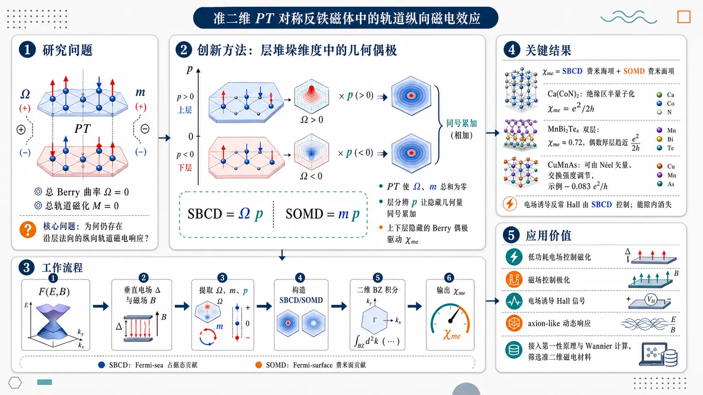
研究问题在准二维反演破缺、但保持 PT 对称的反铁磁体中，总 Berry 曲率和总轨道磁化都相互抵消为零；论文要解释：为什么这类材料仍能产生沿层法向的纵向轨道磁电响应，以及该响应究竟由哪一种可视化的层分辨电子几何量控制。创新方法提出“层堆垛维度中的几何偶极”机制：把 Berry 曲率 Ω 和轨道磁矩 m 分别乘以层极化 p，定义堆垛 Berry 曲率偶极 SBCD = Ωp 与堆垛轨道磁矩偶极 SOMD = mp。Aha 点是：PT 对称让 Ω、m 总和为零，但若相反 Berry 曲率分布在上下不同层，乘上层坐标 p 后反而同号累加，像“上下层隐藏的 Berry 偶极”驱动磁电效应。工作流程从场依赖自由能 F(E,B) 出发，引入垂直电场造成的层间势差 Δ 与垂直磁场 B；计算轨道磁化 M 和电极化 P 的自由能导数；在能带空间提取 Berry 曲率 Ω、轨道磁矩 m、层极化 p；构造 SBCD 与 SOMD；用二维布里渊区积分得到磁电系数 χme，其中 SBCD 给出占据态 Fermi-sea 贡献，SOMD 给出费米面 Fermi-surface 贡献；再应用到 Ca(CoN)2、MnBi2Te4 多层和 CuMnAs 模型。关键结果得到核心公式：χme 由 SBCD 的 Fermi-sea 项和 SOMD 的 Fermi-surface 项共同决定。Ca(CoN)2 连续模型在绝缘区给出半量子化 χme = e²/2h；双层 MnBi2Te4 因层间耦合和层极化不完全，得到非量子化 χme ≈ 0.72，偶数厚层极限趋近 e²/2h；CuMnAs 中 χme 可随 Néel 矢量方向和交换强度显著调节，示例绝缘贡献约为 -0.083 e²/h；SBCD 还控制电场诱导反常 Hall 响应，但该 Hall 响应在绝缘能隙内消失。应用价值为二维和 van der Waals 反铁磁材料提供一种可计算、可设计的轨道磁电机制：通过调控层堆垛、层数、层间耦合、Néel 矢量和费米能级，可设计低功耗电场控制磁化、磁场控制极化、电场诱导 Hall 信号以及 axion-like 动态响应；SBCD/SOMD 可接入第一性原理和 Wannier 计算，用于筛选真实准二维磁电材料。第一部分：核心概览
该研究建立了准二维反演破缺反铁磁体中纵向轨道磁电耦合的微观理论，指出在总 Berry curvature 与总轨道磁化均为零的 PT 对称反铁磁体系中，磁电响应并非主要来自传统三维 axion Chern-Simons 项或自旋-晶格机制，而是由层堆垛诱导的堆垛 Berry 曲率偶极（SBCD）与堆垛轨道磁矩偶极（SOMD）支配。理论统一解释了 Ca(CoN)(₂)、MnBi(₂)Te(₄)、CuMnAs 等低维反铁磁材料中的纵向磁电效应、电场诱导 Hall 效应及层数/奈尔矢量可调性，为 vdW 磁体磁电响应的第一性原理预测提供了可计算框架。
---
第二部分：结构化快速回顾
《Orbital Longitudinal Magnetoelectricity in Quasi-2D Parity-Violating Antiferromagnets: Interplay of Berry Phase and Stacking Order》（None，）
背景
准二维 van der Waals 磁体常具有非平庸层堆垛序，反演对称性被破坏；反铁磁序破坏时间反演对称性，但可保留 PT 对称性。传统三维磁电理论多依赖 axion 响应、相对论自旋轨道耦合或自旋-晶格耦合，难以直接解释总 Berry 曲率和总轨道磁化消失的准二维反铁磁体系。
方法
从场依赖自由能 (F(E,B)) 出发，推导纵向磁电系数 (ḩiₘ̊ ₘₑ) 的半经典表达式，将 Berry 曲率、轨道磁矩与层极化算符 (p) 统一纳入。定义 SBCD (Bₙₖ=Ømegaₙₖpₙₖ) 与 SOMD (Mₙₖ=mₙₖpₙₖ)，并应用于三个代表模型。
结果
核心公式为
[
ḩiₘ̊ ₘₑ=esumₙᵢₙₜfracd²k(2π)²
łeft[
-fracehbarBₙₖfₙₖ
+Mₙₖf'ₙₖ
i̊ght].
]
第一项是 Fermi-sea 贡献，由 SBCD 决定；第二项是 Fermi-surface 贡献，由 SOMD 决定。Ca(CoN)(₂) 连续模型给出绝缘区 (ḩiₘ̊ ₘₑ=e²/2h)；MnBi(₂)Te(₄) 双层给出非量子化 (ḩiₘ̊ ₘₑapprox0.72)，厚层极限趋向 (e²/2h)；CuMnAs 中 (ḩiₘ̊ ₘₑ) 可由奈尔矢量方向与交换强度调控。
讨论
SBCD 还控制电场诱导 anomalous Hall response：
[
fracdσ_HdΔ
=
frace²hbar
sumₙᵢₙₜfracd²k(2π)²
Bₙₖf'ₙₖ,
]
在绝缘区消失，表现为纯 Fermi-surface 效应。准二维体系中的 (θₘ̊ ₂D) 可由占据带 SBCD 积分给出，而非传统三维 Chern-Simons 三形式。
局限
模型以低能有效 Hamiltonian 与 tight-binding Hamiltonian 为主；未包含完整第一性原理数值结果；附录明确未考虑高阶 interband correction；实验可观测量仍需材料特定参数、温度、无序、有限尺寸和电极环境进一步评估。
结论
准二维反演破缺反铁磁体中的纵向轨道磁电效应由 Berry phase effects 与层堆垛序共同产生。SBCD 与 SOMD 是此类体系的普适控制量，区别于手性多层 graphene 中由 orbital ME moment (αₙₖ) 主导的机制。
---
第三部分：逐章节冷凝解析
Abstract
- Intrinsic orbital mechanism in quasi-2D antiferromagnets
准二维、空间反演破缺的反铁磁体系存在一种内禀纵向磁电耦合机制；磁电响应不依赖净铁磁矩或传统自旋-晶格机制，而来自电子结构中的轨道几何量。摘要明确给出核心命题：*"we propose an intrinsic mechanism for longitudinal magnetoelectric (ME) coupling in quasi-2D antiferromagnets that lack spatial inversion symmetry."*
- Stacking order creates SBCD and SOMD
层堆垛序与 Berry curvature、orbital magnetic moment 耦合后产生两个关键偶极量：stacking Berry curvature dipole（SBCD） 与 stacking orbital magnetic moment dipole（SOMD）。二者被定义为纵向磁电响应的基本成分，原文表述为：*"the stacking order, when coupled with Berry curvature and orbital magnetic moment, generates a stacking Berry curvature dipole (SBCD) and a stacking orbital magnetic moment dipole (SOMD)."*
- ME response without net Berry curvature or orbital magnetization
反铁磁体系即使具有总 Berry 曲率为零、总轨道磁化为零的约束，仍可通过层分辨的几何偶极产生磁电效应。摘要指出：*"Our results reveal the microscopic orbital origin of the ME effect in antiferromagnetic systems with vanishing net Berry curvature and orbital magnetization."*
- Electric-field-induced Hall effect from SBCD
SBCD 不仅控制磁电响应，还构成电场诱导 Hall 效应的起源。摘要直接指出：*"the SBCD is also identified as the origin of electric-field-induced Hall effects."*
---
I Introduction
- Magnetoelectric effect as cross-coupling between electric and magnetic orders
磁电效应定义为电场诱导磁化、磁场诱导电极化的交叉响应，形式上对应 (δ M=ḩiₘ̊ ₘₑE)、(δ P=ḩiₘ̊ ₑₘB)。引言给出物理定义：*"The magnetoelectric (ME) effect describes the generation of magnetization by an electric field and of electric polarization by a magnetic field."*
- Device motivation in low-power spintronics
磁电耦合可用电场控制磁序，或用磁场控制电极化，因此被视为低功耗自旋电子学的关键机制。引言强调：*"This cross-coupling offers a promising paradigm for next-generation electronic devices, enabling efficient control of magnetic and electric orders."*
- Traditional 3D multiferroic mechanisms differ from quasi-2D orbital mechanism
传统磁电研究集中在三维单相多铁材料，如 Cr(₂)O(₃) 与 BiFeO(₃)，通常涉及相对论自旋轨道耦合和复杂自旋-晶格相互作用。原文指出：*"Historically, the ME effect has been extensively studied in three-dimensional (3D) single-phase multiferroics such as Cr2O3 and BiFeO3, where it typically arises from relativistic spin-orbit coupling and complex spin-lattice interactions."*
- Topological ME response forms an important precedent
近年来磁电响应研究转向拓扑起源，包括 gyrotropic ME effect 与 topological ME responses。引言写道：*"interests have grown in the topological origin of the ME effect, including the gyrotropic ME effect and topological ME responses."*
- vdW magnets create new quasi-2D setting
CrI(₃)、MnBi(₂)Te(₄) 等 van der Waals 磁体开启低维磁性研究方向。其核心特征是层堆垛可自然破坏反演对称性。原文表述为：*"The recent discovery of intrinsic magnetism in van der Waals (vdW) materials, such as CrI3 and MnBi2Te4, has opened a new frontier in exploring low-dimensional magnetism."*
- Stacking magnetic order provides symmetry condition for linear ME effect
准二维层状体系中，层堆垛序通常破坏空间反演 (P)，而磁序破坏时间反演 (T)。两者同时存在时满足线性磁电效应的基本对称性前提。关键句为：*"When combined with magnetic order that breaks time-reversal symmetry ((T)), this stacking magnetic order establishes the fundamental prerequisite for linear ME effect."*
- Existing modern ME theory is mainly 3D axion based
现代磁电理论主要关注三维体系的 axion coupling；在 axion insulator 中，磁电系数半量子化为 (e²/2h)。原文写道：*"The modern theory of the ME effect focuses on axion coupling in 3D systems. For instance, the ME coefficient is half-quantized to (e²/2h) in axion insulators."*
- Berry phase role in linear ME of quasi-2D magnets remains open
Berry 相位已广泛用于 anomalous Hall effect、非线性 Hall effect、轨道磁化等输运问题，但其在线性磁电效应、尤其准二维磁体中的作用仍未充分理解。引言明确指出：*"Up to date, the role of the Berry phase in linear ME phenomena, particularly in quasi-2D magnetic systems, remains largely unexplored."*
- Synthetic stacking dimension enables Berry-curvature and orbital-moment dipoles
层堆垛可视为一种合成维度，允许 Berry 曲率和轨道磁矩在层方向形成偶极；反铁磁堆垛序调制该偶极。核心创新句为：*"the layer stacking order creates a synthetic dimension in which a dipole moment of Berry curvature (orbital magnetic moment) can develop; this dipole is directly modulated by the stacking magnetic order."*
- Three application platforms are specified
理论应用于三个代表体系：具有 (C₄zPT) 对称性的 Ca(CoN)(₂) 低能模型、MnBi(₂)Te(₄) 拓扑反铁磁多层、可调 Néel order 的 tetragonal CuMnAs。引言列出路线：*"we apply our general theory to an antiferromagnetic toy model with (C₄zPT) symmetry"*, *"we study the ME effect in topological antiferromagnetic multilayers using the prototypical material MnBi2Te4"*, 以及 *"the longitudinal ME effect can be controlled by tuning the spatial orientation of the Néel order."*
---
II General theory of longitudinal ME coupling
- Longitudinal ME coefficients obey Maxwell relation
纵向线性磁电耦合写作 (δ M=ḩiₘ̊ ₘₑE)、(δ P=ḩiₘ̊ ₑₘB)，其中外场均沿 out-of-plane 方向；Maxwell 关系保证 (ḩiₘ̊ ₑₘ=ḩiₘ̊ ₘₑ)。原文写道：*"The first-order linear longitudinal ME coupling is described microscopically by (δ M=ḩiₘₑE) and (δ P=ḩiₑₘB)"*，并补充 *"a Maxwell relation ensures (ḩiₑₘ=ḩiₘₑ)."*
- Vertical electric field is parameterized by (Δ=edE)
准二维双层或多层体系中，电场沿层法向产生层间势差，简化为 (Δ=edE)。原文给出：*"For simplicity we take (Δ=edE) to denote the vertical electric field."*
- General ME coefficient contains orbital ME moment, SOMD-like, Berry-curvature derivative, and SBCD-like terms
一般磁电系数为
[
ḩiₘ̊ ₘₑ=esumₙₖ{-αₙₖfₙₖ
+mₙₖpₙₖf'ₙₖ
+fracehbar[frac1βδ_ΔØmegaₙₖφ(ǎrepsilonₙₖ)
-Ømegaₙₖfₙₖpₙₖ]}.
]
其中 (φ(ǎrepsilon)=łn[1+e⁻β⁽ǎrepsⁱloⁿ⁻μ⁾])，(fₙₖ) 为 Fermi-Dirac 函数。公式依据原文：*"For quasi-2D layered systems, the linear ME coefficient is generally given by"* Eq. (1)。
- Berry curvature and orbital magnetic moment are defined from interband matrix elements
Berry curvature 定义为
[
Ømegaₙₖ=isumₘ≠ ₙrₙₘ×rₘₙ,
]
orbital magnetic moment 定义为
[
mₙₖ=(e/2)sumₘ≠ ₙvₙₘ×rₘₙ.
]
原文说明：*"The Berry curvature is (Ømegaₙbₘₖ=isumₘ≠ ₙbmrₙₘ×bmrₘₙ) and the orbital magnetic moment is (mₙbₘₖ=(e/2)sumₘ≠ ₙbmvₙₘ×bmrₘₙ)."*
- Layer dipole operator encodes stacking coordinate
层偶极算符
[
hat p=sumₑₗₗ,α(ell/d)|φₑₗₗ,αånglełangleφₑₗₗ,α|
]
将层高度归一化为无量纲极化；双层中 (ell=(d/2)-1,1)，(hat p=σ_z/2)。原文写道：*"For example, for a bilayer system (ell=(d/2)-1,1) and (hatp=σ_z/2)."*
- Derivative terms vanish in antiferromagnets with zero net Berry curvature and orbital magnetization
对总 Berry 曲率与总轨道磁化为零的反铁磁体系，(δ_Δ mₙₖ) 与 (δ_ΔØmegaₙₖ) 是全导数形式，贡献为零。原文指出：*"For antiferromagnetic systems with vanishing net Berry curvature and orbital magnetization, (δΔmₙbₘₖ) as well as (δΔØmegaₙbₘₖ) terms are zero since they are the full derivative forms."*
- Main result: ME response governed by SBCD and SOMD
核心公式为
[
ḩiₘ̊ ₘₑ=esumₙᵢₙₜfracd²k(2π)²
łeft(
-fracehbarBₙₖfₙₖ
+Mₙₖf'ₙₖ
i̊ght),
]
其中
[
Bₙₖ=Ømegaₙₖpₙₖ,qquad
Mₙₖ=mₙₖpₙₖ.
]
原文强调：*"Eq. (4) is the main result of this work."*
- Fermi-sea and Fermi-surface separation is exact in the reduced formula
(Bₙₖ) 控制 Fermi-sea effect，(Mₙₖ) 控制 Fermi-surface effect。原文写道：*"It is clear that the first term is Fermi-sea effect governed by (Bₙbₘₖ), while the second term is Fermi-surface effect governed by (Mₙbₘₖ)."*
- SBCD and SOMD survive PT symmetry
尽管 (Ømega) 与 (m) 的总和可因 (PT) 对称性相消，乘以层极化 (p) 后的 (B) 与 (M) 可保持非零。原文指出：*"both (Bₙbₘₖ) and (Mₙbₘₖ) survives (PT) symmetry."*
- SBCD controls electric-field-induced anomalous Hall effect
反铁磁 (PT) 对称体系中无外电场时 anomalous Hall effect 消失；垂直电场破坏 (PT)，产生净 Hall conductivity。公式为
[
fracdσ_HdΔ
=
frace²hbarsumₙᵢₙₜfracd²k(2π)²
łeft(Bₙₖf'ₙₖ
+δ_ΔØmegaₙₖfₙₖi̊ght).
]
原文说明：*"The vertical electric field breaks (PT) producing net anomalous Hall conductivity."*
- Electric Hall effect reduces to SBCD Fermi-surface response in zero-net-Berry-curvature AFMs
(δ_ΔØmega) 项在零净 Berry 曲率反铁磁体中消失，电场诱导 Hall 响应由 (Bₙₖf') 控制。原文写道：*"The second term in Eq. (5) vanishes for the antiferromagnets with zero Berry curvature as discussed previously."*
---
III Example 1: C4PT-symmetric antiferromagnet
- Ca(CoN)(₂)-type model realizes valley-mediated spin-layer locking
单层 Ca(CoN)(₂) 的低能态在不同 valley 具有相反层极化；不同 valley 同时对应相反 spin polarization，因此形成 valley-mediated spin-layer locking。原文写道：*"The electronic states with opposite spin polarization (residing in different valleys) also possess opposite layer polarization, leading to a valley-mediated spin-layer locking."*
- X and Y valleys are related by (C₄zPT)
X 与 Y valley 的磁点群为 (m'm'2)，并由 (C₄zPT) 对称性联系。原文指出：*"For monolayer Ca(CoN)2, the magnetic point group of the X and Y valleys is (mprⁱmemprⁱme2)."* 以及 *"Here the X and Y valleys are related by (C₄zPT) symmetry."*
- Two-band valley Hamiltonians encode opposite mass terms
在 ((ǎrphiₜ,ǎrphi_b)) 基底中，X valley Hamiltonian 为
[
H_X=Uτ_z+v₁ₖₓτₓ₊ᵥ₂ₖ_yτ_y,
]
Y valley 为
[
H_Y=-Uτ_z+v₁ₖ_yτₓ₋ᵥ₂ₖₓτ_y.
]
其中 (U) 表征层反演破缺质量项，(v₁,v₂) 为各向异性 Dirac 速度。原文给出：*"the effective Hamiltonian at a given valley can be expressed as"* Eq. (6) and Eq. (7)。
- Analytic SBCD is identical for conduction and valence bands
X valley 的 conduction/valence band SBCD 为
[
Bc/ᵥ
=
-fracv₁ᵥ₂U²
2(U²⁺v₁²kₓ²⁺v₂²k_y²⁾².
]
该表达式对 c/v 相同，且在 band edge 附近集中。原文写道：*"For X valley, the SBCD for the conduction/valence band is given by"* Eq. (8)。
- Analytic SOMD changes sign between conduction and valence bands
X valley 的 SOMD 为
[
Mc/ᵥ
=
mp
frace2hbar
fracv₁ᵥ₂U
(U²⁺v₁²kₓ²⁺v₂²k_y²⁾³/².
]
conduction 与 valence 之间符号相反。原文写道：*"the SOMD for the conduction/valence band is given by"* Eq. (9)。
- Y valley contributes with the same sign under (C₄zPT)
虽然 X/Y valley 的 spin 与层极化相反，但 (B) 和 (M) 在两个 valley 中同号，因此不会 valley cancellation。原文指出：*"The quantities (B) and (M) have the same signs for the Y valley due to (C₄zPT) symmetry."*
- Continuum model gives half-quantized insulating ME coefficient
对 (Bᵥₖ) 从连续动量空间积分，得到绝缘区磁电系数
[
ḩiₘ̊ ₘₑ=e²/2h.
]
原文明确指出：*"The integral of (Bᵥbₘₖ) yields the ME coefficient (ḩiₘₑ=e²/2h)."*
- Tight-binding lattice regularization reduces the continuum value
连续模型动量积分延伸至无穷大；真实 tight-binding 模型有周期性 Brillouin zone，因此 (ḩiₘ̊ ₘₑ) 小于连续极限。原文提醒：*"this value is for a continuum model where the momentum integral extends to infinity; in a real tight-binding model with a periodic Brillouin zone, (ḩiₘₑ) will be smaller."*
- Numerical parameters specify the illustrative calculation
图 2 使用参数
[
(v₁,v₂₎₌₍₀.6,0.4) m̊ eVḑot Å,qquad U=0.3 m̊ eV.
]
图注给出：*"Parameters for the model: ((v₁,v₂₎₌₍₀.6,0.4) eVḑotÅ) and (U=0.3 eV)."*
- Insulating regime is purely Fermi-sea; metallic regime adds Fermi-surface SOMD
费米能级位于 gap 内时，(ḩiₘ̊ ₘₑ) 仅由 SBCD 的 Fermi-sea 项贡献；进入 band 后，SOMD 的 Fermi-surface 项出现。原文写道：*"In the insulating regime, (ḩiₘₑ) is solely contributed by the Fermi-sea term (Bbₘₖ), while in the metallic regime, the Fermi-surface term (Mbₘₖ) also arises."*
- Fermi-surface ME term has opposite signs for conduction and valence bands
由于 orbital magnetic moment 在 conduction 与 valence 中同号，导致 (Mcₖ=-Mᵥₖ)，因此 Fermi-surface 磁电项在电子掺杂和空穴掺杂侧符号相反。原文写道：*"The sign of the Fermi-surface term is opposite for the conduction and valence bands because the orbital magnetic moment has the same sign in both, leading to (Mcbₘₖ=-Mᵥbₘₖ)."*
- Electric Hall effect is purely Fermi-surface and SBCD governed
电场诱导 Hall 响应由 (Bₖ) 控制，表现为纯 Fermi-surface 效应。由于 (Bcₖ=Bᵥₖ)，电子与空穴侧 Hall 响应同号。原文指出：*"the electric Hall effect is purely a Fermi-surface effect governed by the SBCD (Bbₘₖ)"*，并补充 *"the sign of (dσ_H/dΔ) is the same for the conduction and valence bands, since (Bcbₘₖ=Bᵥbₘₖ)."*
- Spin magnetic moment is excluded from the main focus
自旋磁矩也可通过 Fermi-surface 效应贡献磁电耦合，但研究重点限定为轨道起源。原文说明：*"the spin magnetic moment can also give rise to the ME coupling as a Fermi-surface effect, while in this work we focus on the orbital origin."*
---
IV Example 2: topological antiferromagnet multilayers.
- Bilayer topological magnetic insulator models MnBi(₂)Te(₄)
第二个例子采用双层磁性绝缘体 tight-binding Hamiltonian，捕捉 bilayer MnBi(₂)Te(₄) 的核心物理。原文写道：*"This model can describe the essential physics of bilayer MnBi2Te4."*
- 3D topological-insulator parent Hamiltonian uses five Gamma matrices
母体 Hamiltonian 为
[
H₀₌sumᵢ₌₁⁵dᵢ₍ₖ₎Γᵢ,
]
其中
[
d(k)=(-Asin kₓ,-Asin k_y,0,
M₀₋₆B+2B(o̧s kₓ₊ₒ̧s k_y+o̧s k_z),-Asin k_z),
]
[
Γ=(σₓₛₓ,σₓₛ_y,σ_ys₀,σ_zs₀,σₓₛ_z).
]
原文说明：*"where (σ) and (s) denote the orbital and spin degree of freedom."*
- Thin-film Hamiltonian separates intralayer and interlayer coupling
每层 Hamiltonian 为
[
h₀₌₋A(sin kₓΓ₁₊sin k_yΓ₂₎
+[M₀₋₆B+2B(o̧s kₓ₊ₒ̧s k_y)]Γ₄,
]
层间耦合为
[
T=-iAΓ₅/2+BΓ₄.
]
原文写道：*"In a thin film with finite thickness, the Hamiltonian for each layer is"* Eq. (11)，并给出 *"the interlayer coupling term (T=-iAΓ₅/2+BΓ₄)."*
- AFM exchange field is layer dependent
双层反铁磁 Hamiltonian 为
[
Hₜb=
beginpmatrix
h₀₊ₘ_zσ₀ₛ_z & T
T^dagger & h₀₋ₘ_zσ₀ₛ_z
endpmatrix,
]
其中 (m_z) 表示层依赖 exchange field。原文写道：*"where (m_z) denotes the layer-dependent exchange field characterizing the interlayer antiferromagnetic order."*
- Numerical parameters are fixed for core physics
模型参数取
[
A=1.4,quad B=1,quad M₀₌₁,quad m_z=0.3,
]
温度取
[
k_BT=0.02.
]
原文说明：*"Throughout this work we take the parameters (A=1.4,B=1,M₀₌₁,m_z=0.3) to illustrate the core physics."* 图注补充：*"The temperature is set to be (k_BT=0.02)."*
- Band 1 dominates SBCD because of stronger layer polarization
对 (Nₗ₌₂) 双层，valence bands 标记为 1 和 2。SBCD 动量分布显示 band 1 对轨道磁电耦合占主导，band 2 较弱，原因是 band 1 层极化更大。原文写道：*"This reveals that band 1 provides the dominant contribution to the orbital ME coupling, while the effect from band 2 is minor."* 以及 *"This distinction can be understood from the significantly larger layer polarization of band 1."*
- Bilayer insulating ME coefficient is non-quantized
双层 MnBi(₂)Te(₄)-type 模型中，SBCD 给出 Fermi-sea 磁电响应
[
ḩiₘ̊ ₘₑapprox0.72,
]
不等于 (e²/2h)。原文写道：*"The SBCD contributes to a Fermi-sea ME coupling with a non-quantized value of (ḩiₘₑapprox0.72)."*
- Finite interlayer coupling causes deviation from quantization
非量子化来自有限层间耦合，使每层层极化不再是理想的 (łangle pångle=1/2)。原文指出：*"This deviation from quantization occurs because finite interlayer coupling results in a layer polarization (łangle pångle≠1/2) for each layer."*
- Fermi-surface ME signs differ from Ca(CoN)(₂) case
在此拓扑反铁磁双层中，(ḩiₘ̊ ₘₑ) 对 conduction 与 valence band 同号，因为 (Mcₖ=Mᵥₖ)。原文写道：*"Notably, (ḩiₘₑ) has the same sign for the conduction and valence bands because (Mcbₘₖ=Mᵥbₘₖ) in this system."*
- Electric Hall effect vanishes in insulating regime
(dσ_H/dΔ) 是 Fermi-surface 效应，因此当费米能级位于 gap 内时消失。原文说明：*"As expected for a Fermi-surface effect, (dσ_H/dΔ) stems from the SBCD and vanishes in the insulating regime."*
- Large-thickness limit restores half-quantized ME response
对 (Nₗ₌₂₀)，低能 gapped surface states 出现；随着偶数层数增大，(ḩiₘ̊ ₘₑ) 趋向
[
e²/2h.
]
原文写道：*"We observe that (ḩiₘₑ) clearly approaches the quantized value of (e²/2h) in the large-thickness limit."*
- Effective bilayer surface Hamiltonian explains thickness dependence
多层 magnetic topological insulator 的 top/bottom gapped surface states 可用有效双层 Hamiltonian 表示：
[
Hₘ̊ ₑff=hbar v₀₍ₖ_ysₓ₋ₖₓₛ_y)τ_z+(1-κ)m(k)τₓ₊ₕ_M,
]
其中 (hbar v₀₌₂ m̊ eVḑotÅ)，
[
m(k)=m₀₋ₘ₁₍ₖₓ²⁺k_y²⁾,
quad m₀₌₋₁₀ m̊ meV,quad m₁₌₂₀ m̊ eVḑotŲ.
]
原文给出：*"Here we take (hbar v₀₌₂ eVḑotÅ)."* 以及 *"with parameters (m₀₌₋₁₀,meV) and (m₁₌₂₀,eVḑotŲ)."*
- AFM and FM bilayers differ by Dirac mass pattern
AFM bilayer 取
[
h_M=m_zs_zτ_z,
]
FM bilayer 取
[
h_M=m_zs_zτ₀.
]
AFM 产生 top/bottom opposite Dirac masses，FM 产生 identical Dirac masses。原文指出：*"This leads to opposite Dirac masses in the AFM case and identical Dirac masses in the FM case."*
- (κ) controls interlayer coupling
参数 (κ) 控制层间耦合强度，(κ=1) 表示有效解耦层。原文写道：*"The parameter (κ) controls the interlayer coupling strength, where (κ=1) corresponds to effectively decoupled layers."*
- AFM effective bilayer saturates to half quantization at decoupling
当 (κ→1)，AFM bilayer 的 (ḩiₘ̊ ₘₑ) 饱和到 (e²/2h)。原文写道：*"(ḩiₘₑ) for the AFM bilayer saturates to the half-quantized value (e²/2h) as (κ) approaches 1."*
- Quantization follows from half Berry-curvature integral and half layer polarization
每个 massive Dirac cone 的 Berry 曲率积分为 (±1/2)，对应层极化 (łangle pångle=±1/2)，代入 Eq. (4) 得 (ḩiₘ̊ ₘₑ=e²/2h)。原文说明：*"This quantization arises because the Berry curvature integral for a massive Dirac cone on the top/bottom layer is (±1/2), and the corresponding layer polarization is (łangle pångle=±1/2)."*
- FM bilayer ME response cancels exactly
FM bil层中 top/bottom SBCD 大小相等、符号相反，因此所有 (κ) 下 (ḩiₘ̊ ₘₑ=0)。原文写道：*"In contrast, (ḩiₘₑ) vanishes for the FM bilayer for all values of (κ), which occurs because the SBCD contributions from the top and bottom layers are equal in magnitude but opposite in sign, leading to perfect cancellation."*
---
V Example 3: PT-symmetric AFM with tunable Neel order
- Tetragonal CuMnAs is PT symmetric but individually P- and T-breaking
tetragonal CuMnAs 的两个 Mn 位点由 inversion symmetry 连接，磁矩相反；该结构分别破坏 (P) 与 (T)，但保留 (PT)。原文写道：*"This configuration breaks spatial inversion ((P)) and time-reversal ((T)) symmetries individually but preserves their product, (PT) symmetry."*
- Two Mn atoms form vertical electric dipole moment
两个 Mn 原子可形成沿 (z) 方向的 out-of-plane electric dipole moment，这是纵向磁电响应的关键。原文强调：*"Crucially, the two Mn atoms can form an out-of-plane electric dipole moment along the z-direction."* 并指出 *"this dipole moment is essential for generating a longitudinal magnetoelectric response associated with Berry curvature."*
- CuMnAs tight-binding Hamiltonian includes hopping, SOC, and Néel exchange
单层准二维 CuMnAs Hamiltonian 为
[
H(k)=
-2tσₓₒ̧sfrackₓₐ2o̧sfrack_ya2
-t'(o̧s kₓₐ₊ₒ̧s k_ya)
+łambdaσ_z(s_ysin kₓₐ₋ₛₓsin k_ya)
+σ_zJ₀ěcsḑotěcn.
]
原文说明：*"where (t) is the nearest-neighbor hopping, (t') is the next-nearest-neighbor hopping, (łambda) is the next-nearest-neighbor spin-orbit coupling, (ěcn) is the Néel vector."*
- Symmetry operators are explicitly represented
反演算符为
[
P=σₓₛ₀,
]
时间反演算符为
[
T=-iσ₀ₛ_yK.
]
原文写道：*"In this representation, the inversion operator is (P=σₓₛ₀), and the time-reversal operator is (T=-iσ₀ₛ_yK), where (K) denotes complex conjugation."*
- Exchange term preserves PT but breaks P and T separately
最后一项 (σ_zJ₀ěcsḑotěcn) 同时改变 sublattice 与 spin，因此单独破坏 (P)、(T)，但保持 (PT)。原文指出：*"The final term in Eq. (14) breaks both (P) and (T) individually but preserves the combined (PT) symmetry."*
- Numerical parameters are material-scale
参数取
[
łambda=0.8t,quad Jₙ₌₀.6t,quad t'=0.08t,quad |t|=1 m̊ eV.
]
原文给出：*"The parameters are set as (łambda=0.8t), (Jₙ₌₀.6t), (t'=0.08t), and (|t|=1,eV)."*
- Néel vector orientation controls band structure
Néel vector 写为
[
ěc n=(sinθ_Jo̧sǎrphi_J,sinθ_Jsinǎrphi_J,o̧sθ_J),
]
band structure 对 (θ_J,ǎrphi_J) 敏感。原文指出：*"The band structure depends sensitively on the orientation of the Néel vector."*
- Vertical dipole operator is sublattice-resolved
CuMnAs 中垂直电偶极矩建模为
[
hat p=(d_z/2)σ_z,
]
其中 (d_z) 是两个 Mn 原子的垂直距离。原文写道：*"The vertical electric dipole moment is modeled as (hatp=(d_z/2)σ_z), where (d_z) is the vertical distance between the two Mn atoms."*
- SBCD hotspots locate near X, M, and Y pockets
在 (θ_J=0) 的 band structure 下，(Bᵥₖ) 动量空间热点出现在 X、M、Y pockets 附近。原文写道：*"The hotspots of (Bᵥbₘₖ) are located around the X, M, and Y pockets."*
- Fermi-sea contribution is finite and negative
计算得到绝缘区 Fermi-sea 磁电贡献
[
ḩiₘ̊ ₘₑ=-0.083,e²/h.
]
原文指出：*"the Fermi-sea contribution yields a value of (ḩiₘₑ=-0.083,e²/h)."*
- ME coefficient is strongly tunable by Néel angle
(ḩiₘ̊ ₘₑ) 随 AFM order parameter (θ_J) 强烈变化，原因是 SBCD (Bₖ) 对 Néel orientation 高度敏感。原文写道：*"which varies strongly with the AFM order parameter (θ_J)"*，并解释 *"This tunability arises from the strong dependence of the SBCD term (Bbₘₖ) on (θ_J)."*
- ME coefficient is strongly dependent on exchange strength (J₀)
(ḩiₘ̊ ₘₑ) 对 exchange parameter (J₀) 也具有强依赖。原文写道：*"(ḩiₘₑ) depends strongly on the exchange parameter (J₀)."*
- Large (δḩiₘ̊ ₘₑ/δ J₀) may signal dynamical axion quasiparticles
若磁电系数对交换强度或 AFM order parameter 的导数很大，可能对应强 dynamical axion response。原文指出：*"a large derivative (δḩiₘₑ/δ J₀) may indicate the presence of dynamical axion quasiparticles."*
- 3D topological ME effect is described by a (θ)-term
三维反铁磁拓扑绝缘体中的 topological ME response 写为
[
S_θ=
fracθ2πfrace²h
int d³x,dt,EḑotB.
]
原文写道：*"The topological ME response in an antiferromagnetic topological insulator is described by the topological (θ)-term."*
- (θ) encodes polarization, orbital magnetization, and surface Hall conductivity
(θ) 描述三类现象：磁场诱导电极化、电场诱导轨道磁化、量子化无耗散表面 Hall conductivity (σ_H=e²/2h)。原文列出：*"This parameter describes three fundamental physical phenomena: (i) The electric polarization induced by a small magnetic field. (ii) The orbital magnetization induced by a small electric field. (iii) A quantized, dissipationless surface Hall conductivity (σ_H=e²/2h)."*
- Quasi-2D analogue (θₘ̊ ₂D) is integrated SBCD
对准二维层状反演破缺反铁磁绝缘体，在垂直电磁场下，类似 axion angle 的量由占据带 SBCD 积分决定：
[
θₘ̊ ₂D
=
sumₙᵢₙₘ̊ ₒccint d²k,Bₙₖ.
]
原文写道：*"for quasi-2D layered systems, we find that an analogous (θ₂D) is determined by the integrated SBCD."*
- Atomically thin systems lack well-defined surface Hall effect but retain electric Hall response
原子级薄层中 surface Hall effect 不再像三维体材料那样良定义，但 SBCD 仍产生可测的 electric Hall effect。原文指出：*"While the surface Hall effect is not well-defined in atomically thin systems, we show that (Bₙbₘₖ) nonetheless gives rise to a measurable electric Hall effect."*
- Connection to recent dynamical axion experiment in even-layer MnBi(₂)Te(₄)
偶数层 MnBi(₂)Te(₄) 已观测 dynamical axion quasiparticles；out-of-phase antiferromagnetic magnons 可驱动 (θ(t)) 振荡。原文写道：*"a recent experiment has observed dynamical axion quasiparticles in quasi-2D even-layer MnBi2Te4."* 并补充 *"coherent oscillations of the axion angle (θ) are driven by out-of-phase antiferromagnetic magnons under an in-plane magnetic field."*
---
Conclusion and discussion.
- Berry phase and stacking order produce a distinct orbital ME effect
准二维层状材料中，Berry phase effects 与堆垛序相互作用，产生区别于三维机制的轨道磁电效应。结论写道：*"the interplay between Berry phase effects and stacking order in quasi-2D layered materials gives rise to a distinct orbital ME effect, differing fundamentally from known mechanisms in 3D systems."*
- SBCD and SOMD are the key quantities in parity-violating AFMs
在反演破缺反铁磁体中，控制磁电响应的基本变量为 SBCD 与 SOMD。原文总结：*"We have identified the SBCD and SOMD as the key quantities governing this ME response in parity-violating antiferromagnets."*
- Microscopic origin differs between chiral graphene and antiferromagnets
手性堆垛多层 graphene 中，纵向磁电耦合由 orbital ME moment (αₙₖ) 控制；Ca(CoN)(₂)、MnBi(₂)Te(₄) 等反铁磁体中，则由 SBCD/SOMD 控制。原文写道：*"In chiral multilayer graphene systems, the orbital ME moment (αₙbₘₖ) determines the longitudinal ME coupling"*，并对比 *"In contrast, the SBCD and SOMD govern the longitudinal ME coupling in antiferromagnets such as Ca(CoN)2 and MnBi2Te4."*
- Unified framework for layered vdW orbital ME effects
该理论统一了低维 van der Waals 材料中不同轨道磁电响应来源。原文总结：*"This work establishes a unified picture of the orbital ME effect in layered van der Waals materials."*
- First-principles implementation is feasible
一般形式可纳入第一性原理计算，用于定量预测与材料设计。原文写道：*"The general formalism developed here can be readily incorporated into first-principles calculations, providing a pathway for the quantitative prediction and design of ME phenomena in low-dimensional quantum materials."*
---
Appendix A Microscopic theory of orbial longitudinal magnetoelectric effect
- Free-energy formulation is the microscopic starting point
场依赖自由能写作
[
F(E,B)=
-frac1βsumₙₖ
łeft1+fracehbarBtildeØmegaₙₖi̊ght
φ[ǎrepsilonₙₖ(E,B)].
]
该式包含 Berry curvature 修正的态密度因子。原文写道：*"We can start from the field-dependent free energy (F(E,B))."*
- Magnetization and polarization are free-energy derivatives
磁化与电极化分别由
[
M(E)=-fracpartial F(E,B)partial Bbigg|B₌₀,
quad
P(B)=-fracpartial F(E,B)partial Ebigg|E₌₀
]
得到。原文给出：*"the oribal magnetization as well as polarization can be derived as"* Eq. (A-2) and Eq. (A-3)。
- Orbital magnetization contains conventional moment and Berry-phase correction
[
M(E)=
sumₙₖmₙₖfₙₖ
+
frac1βfracehbar
sumₙₖØmegaₙₖ
φ[ǎrepsilonₙₖ(E)].
]
该式显示轨道磁化包括局域轨道磁矩项与 Berry curvature 修正项。原文写道：*"we can therefore obtain the (M(E)) as"* Eq. (A-4)。
- Magnetic field adds a Berry-curvature contribution to polarization
电极化表达式中出现
[
fracehbarB
łeft[
frac1βφ(ǎrepsilonₙₖ)δ_ΔØmegaₙₖ
-Ømegaₙₖpₙₖ
i̊ght],
]
表明磁场通过 Berry curvature 改变电极化。原文解释：*"From the above derivation, we can see that the magnetic field can give an additional term to the electric polarization."*
- Linear expansion yields reciprocal LMC coefficients
线性展开得到
[
ḩiₘₑ=ḩiₑₘ
=
esumₙₖ
łeft{
δ_Δ mₙₖfₙₖ
+mₙₖpₙf'ₙₖ
+(e/hbar)
łeft[
δ_ΔØmegaₙₖφ/β
-Ømegaₙₖfₙₖpₙ
i̊ght]
i̊ght}.
]
原文写道：*"We further do the linear expansion and obtain the LMC coefficients as"* Eq. (A-6)。
- Orbital magnetoelectricity is a bulk property
轨道磁电响应同时包含 orbital magnetic moment 与 Berry phase correction，因此是 bulk band geometry 的性质。原文明确指出：*"the orbital magnetoelectricity is a bulk property containing both the orbial magnetic moment and the Berry phase correction."*
- Interband correction is formally present
interband correction 为
[
ḩiₘₑⁱⁿter
=
2sumₗ≠ ₙ,ₖ
fracm̊ Re(mₙₗpₗₙ)ǎrepsilonₙₗ
fₙₖ.
]
原文写道：*"while the interband correction is"* Eq. (A-7)。
- Orbital ME moment combines field derivative and interband correction
[
αₙₖ
=
δ_Δ mₙₖ
+
2sumₗ≠ ₙ,ₖ
fracm̊ Re(mₙₗpₗₙ)ǎrepsilonₙₗ.
]
原文写道：*"Therefore, we can define the orbital ME moment (αₙbₘₖ) as"* Eq. (A-8)。
- Interband correction is omitted as higher order
主要分析不包含 interband correction，因为它被视为高阶项。原文说明：*"In this work, we do not consider the interband correction since it’s a high order term."*
---
第四部分：深度理解与语言支持
1. 术语解析
- Parity-violating antiferromagnets
直译为“宇称破缺反铁磁体”，在凝聚态语境中通常指空间反演对称性 (P) 被破坏的反铁磁体系。“Parity” 在高能物理中常对应空间反演，在晶体中更具体地体现为 inversion symmetry。这里不是指弱相互作用意义上的宇称破坏，而是晶体堆垛/亚晶格结构缺少反演中心。
- Longitudinal magnetoelectricity
指电场 (E)、磁场 (B)、诱导磁化 (M)、诱导极化 (P) 均沿同一方向，尤其是准二维体系的 out-of-plane (z) 方向。区别于 transverse ME effect，纵向响应更直接与 (EḑotB)、axion-like response 和层间电偶极相关。
- Stacking Berry curvature dipole（SBCD）
不是动量空间 Berry curvature dipole (partialₖØmega)，而是层方向偶极化的 Berry curvature：
[
Bₙₖ=Ømegaₙₖpₙₖ.
]
其“dipole”来自 stacking/layer coordinate，而非 k-space gradient。若 top layer 与 bottom layer 的 Berry curvature 符号或权重不同，总 Berry curvature 可为零，但乘以层极化后不再相消。
- Stacking orbital magnetic moment dipole（SOMD）
定义为
[
Mₙₖ=mₙₖpₙₖ.
]
它描述 orbital magnetic moment 在层方向的偶极分布。SOMD 进入 (ḩiₘ̊ ₘₑ) 的 Fermi-surface 项，因此在金属态或费米能级穿过能带时尤其重要。
- Fermi-sea vs Fermi-surface effect
Fermi-sea effect 对所有占据态积分，绝缘体中仍可存在；SBCD 项属于这一类。Fermi-surface effect 由 (f'(ǎrepsilon)) 权重控制，主要来自费米面附近态；SOMD 项和 electric Hall response 属于这一类，因此在绝缘 gap 内通常消失。
2. 疑难查证
- 为什么 PT 对称下 Berry curvature 总和为零，但 SBCD 可以非零？
(PT) 对称通常使 (Ømegaₙₖ) 在成对态之间相消，导致 anomalous Hall conductivity 为零。但 SBCD 不是单纯积分 (Ømega)，而是积分 (Ømega p)。若两个 (PT)-相关态具有相反 Berry curvature，同时位于相反层，即 (p) 也变号，则乘积 (Ømega p) 反而同号。类似地，两个电荷 (+q) 与 (-q) 的总电荷为零，但若它们位于不同位置，电偶极矩可以非零。
- 为什么 MnBi(₂)Te(₄) 双层不是严格 (e²/2h)，厚层却趋近 (e²/2h)？
理想 axion 表面态图像要求 top/bottom surface Dirac cone 几乎独立，每个表面 Berry curvature 积分为 (±1/2)，层极化为 (±1/2)。双层中 top 与 bottom 强烈 hybridize，电子态不完全局域在单层，(łangle pångle≠±1/2)，因此 SBCD 积分偏离半量子化。层数增加后表面态空间分离，层极化恢复接近 (±1/2)，(ḩiₘ̊ ₘₑ) 趋向 (e²/2h)。
- 为什么 electric Hall effect 在绝缘区消失，而 ME effect 在绝缘区仍存在？
(ḩiₘ̊ ₘₑ) 的 SBCD 项带有 (f)，对所有占据态求和，绝缘体有完整占据价带，因此可非零。
[
dσ_H/dΔ
]
的主项带有 (f')，只在费米能级附近有权重。若费米能级位于 gap 内，附近没有态，响应消失。因此同一个 SBCD 既可给绝缘磁电效应，也可在金属态给电场诱导 Hall 效应，但权重函数不同。
- (θₘ̊ ₂D) 与三维 axion (θ) 的关系是什么？
三维 (θ) 是 Chern-Simons 三形式，定义在三维 Brillouin zone 中，且与表面 Hall conductivity 密切相关。准二维材料没有真正的三维 bulk 和明确表面 Hall 层，因此不能直接照搬三维 (θ)。(θₘ̊ ₂D) 用二维 Brillouin zone 中的 SBCD 积分定义，捕捉垂直电磁场下的层分辨 Berry 几何响应，是二维层状体系的 axion-like 标量，而非严格三维拓扑不变量。
---
第五部分：创新评估与关联
1. 创新性判断
- 从三维 axion ME 转向准二维层几何 ME
近年相关研究大量集中在 MnBi(₂)Te(₄) 等磁性拓扑绝缘体中的 axion insulator、half-quantized ME response、dynamical axion quasiparticles，以及二维反铁磁中的 Hall/非线性 Hall 响应。该研究的关键新意在于：不把准二维体系简单视为三维 axion 绝缘体的薄膜极限，而是提出由层堆垛维度中的 Berry 曲率偶极直接控制纵向磁电响应。
- 解决“净 Berry 曲率为零为何仍有轨道 ME”问题
(PT)-symmetric antiferromagnets 中 anomalous Hall effect 因净 Berry curvature 为零而消失；传统 Berry-curvature 直觉容易误判其轨道磁电响应也应消失。SBCD/SOMD 框架解决了这一矛盾：总 (Ømega) 为零不意味着 (Ømega p) 为零，总 (m) 为零不意味着 (mp) 为零。
- 把层极化 (pₙₖ) 提升为核心几何权重
过去 Berry phase transport 更关注 (Ømegaₙₖ)、(mₙₖ)、Berry curvature dipole 等纯动量空间量。该研究引入层偶极算符 (hat p)，将层堆垛、反演破缺、反铁磁序与 Berry 几何直接相乘，形成可计算的 (Bₙₖ)、(Mₙₖ)。
- 统一解释 insulating ME 与 metallic electric Hall response
同一个 SBCD 同时解释两类响应：
- 绝缘区 Fermi-sea 纵向磁电效应；
- 金属区 Fermi-surface 电场诱导 Hall 效应。
这种统一性使磁电测量与 Hall 测量可互为诊断工具。
- 区分 chiral multilayer graphene 与 parity-violating AFM 的不同轨道 ME 起源
手性多层 graphene 中，纵向 orbital ME 由 (αₙₖ) 主导；反演破缺反铁磁体中，(α) 或导数项因对称性/全导数结构消失或不占主导，SBCD/SOMD 成为核心。这种分类澄清了不同 vdW 层状材料中“轨道磁电效应”并非同一微观机制。
- 提供可接入 DFT 的材料设计指标
SBCD 与 SOMD 只依赖 band-resolved (Ømegaₙₖ)、(mₙₖ)、(pₙₖ)，原则上可从 Wannier 化第一性原理能带中直接计算。相比抽象 Chern-Simons (θ) 项，该形式更适合筛选真实准二维反铁磁材料。
- 引入 Néel-order tunability as a control knob
CuMnAs 例子展示 (ḩiₘ̊ ₘₑ) 可通过 Néel vector 方向 (θ_J) 与 exchange strength (J₀) 调控，并与 dynamical axion quasiparticles 的强响应条件相联系。这一点把静态轨道磁电理论与近年反铁磁 magnon-driven axion dynamics 连接起来。
-
15
📊 含图深析
📄 摘要：NdCl3 的比热在 270 mK 和 180 mK 出现两次磁转变，但大部分磁熵在约 450 mK 的宽峰中提前释放；单晶弹性中子散射给出强各向异性磁漫散射，显示挫折诱导的降维与长短程磁序并存。
💡 亮点：NdCl3 的低温磁序被挫折拉成“降维”图景：两次转变、450 mK 宽峰和各向异性漫散射并存。短程关联先于长程有序释放大部分熵。
📖 展开分析 + 配图
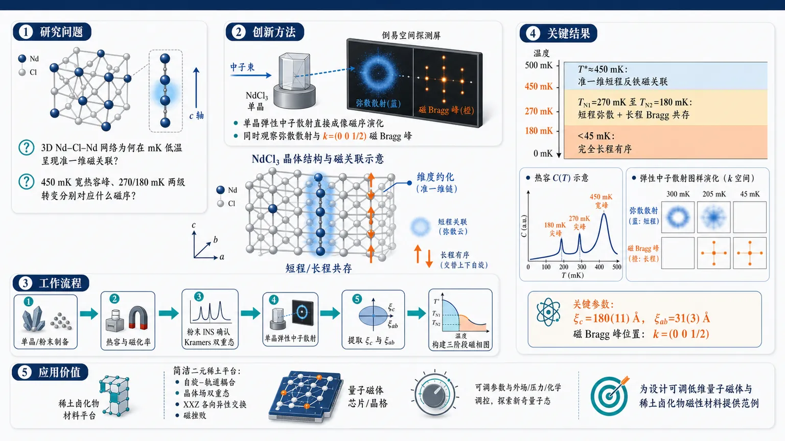
研究问题三维 Nd–Cl–Nd 连接网络的 NdCl₃，为何在毫开尔文低温下表现出准一维磁关联？其 450 mK 宽热容峰、270 mK 与 180 mK 两级磁转变，分别对应短程磁序、长程磁序还是二者共存？创新方法用单晶弹性中子散射直接“看见”磁序演化：在倒易空间中把宽弥散磁散射与尖锐磁 Bragg 峰同时成像，证明 T*≈450 mK 宽峰来自准一维短程反铁磁关联，并首次发现 T_N2<T<T_N1 区间短程弥散散射与 k=(0 0 1/2) 长程反铁磁 Bragg 峰共存。工作流程制备 NdCl₃ 单晶与粉末样品 → 低温热容/磁化率确定 T*、T_N1、T_N2 与磁各向异性 → 粉末非弹性中子散射确认低温孤立 Kramers 双重态 → 单晶弹性中子散射扫描倒易空间 → 从弥散散射宽度提取面内与 c 轴相关长度 → 追踪半整数 L 磁 Bragg 峰随温度出现和增强 → 构建“关联顺磁—共存中间相—完全长程有序”三阶段磁相图。关键结果热容在 T_N1=270 mK、T_N2=180 mK 出现两个尖峰，但主要磁熵在 T*≈450 mK 宽峰附近提前释放；300 mK 观察到准一维磁弥散散射，相关长度沿 c 轴为 180(11) Å、面内仅 31(3) Å；低于 T_N1 出现 k=(0 0 1/2) 长程反铁磁 Bragg 峰；205 mK 中间相中弥散散射与 Bragg 峰共存；45 mK 以下弥散散射消失，进入完全长程有序。应用价值NdCl₃ 成为研究强自旋–轨道耦合、晶体电场双重态、XXZ 各向异性交换和磁挫败如何共同诱导维度约化的简洁二元稀土材料平台；其分阶段有序与短程/长程磁序共存机制，可为设计可调控低维量子磁体和稀土卤化物磁性材料提供实验范例。第一部分：核心概览
NdCl₃ 被确认为一种由挫败各向异性交换驱动的低温量子磁体：热容在 TN₁=270 mK 与 TN₂=180 mK 出现两级磁转变，而主要磁熵已在更高温 T*≈450 mK 附近以宽峰形式释放。单晶弹性中子散射直接揭示 准一维短程反铁磁关联，并在 TN₂<T<TN₁ 区间与 k=(0 0 1/2) 的三维长程反铁磁布拉格峰共存。该工作把 NdCl₃ 从“疑似准一维短程有序体系”推进为具有维度约化、短程/长程磁序共存、分阶段磁有序的实验证据充分平台，在稀土三氯化物挫败磁性研究中占据关键位置。
---
第二部分：结构化快速回顾
《Frustration induced dimensional reduction and coexistence of long and short-range magnetic order in NdCl₃》（None，）
背景
NdCl₃ 属于六方稀土三氯化物 RECl₃ 家族，晶体结构具有三维 Nd–Cl–Nd 连接网络，但早期热容与磁化率显示 T≈450 mK 的宽峰，曾被归因于准一维短程磁序。由于缺乏直接磁衍射证据，NdCl₃ 的长程磁序、短程关联及其与挫败交换的关系长期未解决。
方法
使用单晶与粉末样品，结合低温热容、直流/交流磁化率、磁化强度、单晶弹性中子散射、粉末非弹性中子散射。单晶弹性中子散射在 WAND² 上进行，最低温约 45 mK；非弹性中子散射在 SEQUOIA 上进行，入射能覆盖 3–500 meV。
结果
热容显示两个尖锐磁转变：TN₁=270 mK、TN₂=180 mK；宽峰位于 T*=450 mK。磁熵到 T≈4.5 K 接近 R ln 2，符合 Nd³⁺ 低温 Kramers 双重态。弹性中子散射在 300 mK 发现高度各向异性弥散磁散射，相关长度约为面内 31(3) Å、沿 c 轴 180(11) Å。低于 TN₁ 出现 k=(0 0 1/2) 磁布拉格峰；在 TN₂<T<TN₁ 弥散散射仍存在，表明短程与长程磁序共存。
讨论
三维晶体结构中出现准一维磁关联，意味着磁自由度发生挫败诱导维度约化。NdCl₃ 的强 SOC、CEF 双重态、g 因子各向异性与 XXZ 型交换各向异性共同构成形成低维关联和分阶段长程有序的物理基础。
局限
磁基态精确结构仍未完全确定；弹性中子散射为能量积分测量，无法区分弥散散射的静态或动态性质；低温核结构畸变存在，但 Pbar3 与 P3 无法在当前衍射精度内明确区分。
结论
NdCl₃ 展现出由挫败各向异性交换导致的准一维短程反铁磁关联、两级长程磁转变以及短程/长程磁序共存，是研究稀土离子可调、强 SOC、CEF 控制下挫败磁性的简洁二元材料平台。
---
第三部分：逐章节冷凝解析
Abstract
- Frustration enriches NdCl₃ magnetism
磁挫败被作为 NdCl₃ 低温复杂磁性的核心机制。研究对象 NdCl₃ 通过体性质测量与中子散射技术联合解析，目标是揭示挫败磁体中可出现的非常规有序过程。摘要开宗明义指出：*"The phenomenon of frustration greatly enriches the accessible physics of quantum magnets."*
- Two magnetic transitions occur below the broad entropy-release anomaly
低温热容出现两个明确磁转变，分别为 TN₁=270 mK 与 TN₂=180 mK；但大量磁熵并非在这两个尖峰处释放，而是在更高温的宽峰附近释放，宽峰中心为 T*≈450 mK。核心证据为：*"The low-temperature heat capacity reveals two magnetic transitions at TN₁ = 270 mK and TN₂ = 180 mK."* 以及 *"much of the magnetic entropy is released above TN₁, manifesting as a broad peak centered at T*approx 450 mK."*
- Diffuse neutron scattering directly confirms quasi-one-dimensional short-range antiferromagnetic order
单晶弹性中子散射在 TN₂ 以上观察到强各向异性的磁弥散散射，证明热容宽峰来自准一维短程反铁磁有序，而非杂质或普通晶格贡献。关键表述为：*"Single crystal elastic neutron scattering reveals highly anisotropic magnetic diffuse scattering above TN₂, confirming that quasi-one-dimensional, short-range, antiferromagnetic order is the origin of the broad peak in the heat capacity."*
- Long-range antiferromagnetic Bragg peaks appear with k=(0 0 1/2)
低于 TN₁，磁布拉格峰出现，其传播矢量为 k=(0 0 1/2)，说明体系进入具有三维相干性的长程反铁磁有序状态。摘要给出：*"Magnetic Bragg peaks characterized by a ěck = (0 0 frac12) propagation vector emerge below TN₁."*
- Short-range and long-range order coexist in the intermediate phase
在 TN₂<T<TN₁，磁布拉格峰已经出现，但弥散磁散射仍未消失，构成罕见的短程磁关联与长程磁有序共存区间。证据句为：*"the magnetic diffuse scattering persists for TN₂<T<TN₁, indicating a regime of coexisting short and long-range order."*
- Full long-range order develops below TN₂ without changing the propagation vector
低于 TN₂ 后，磁布拉格峰强度进一步增加，但传播矢量 k 不变，同时弥散散射消失，说明体系并非改变有序波矢，而是完成从部分长程有序到完全长程有序的演化。摘要中明确写道：*"The magnetic Bragg peaks exhibit an additional increase in intensity below TN₂ with no change in ěck."* 以及 *"Concomitantly, the diffuse scattering disappears indicating the attainment of full long-range order."*
- Ordered moment direction is dominated by c-axis components
磁基态精确结构尚未完全解决，但中子散射表明磁矩主要沿 c 轴，同时存在较小的 ab 面分量。原句为：*"the observed magnetic scattering indicates predominate c-axis moments with a small ab-plane component."*
- Anisotropic frustrated exchange is proposed as the origin
准一维行为与短程/长程磁序共存被归因于各向异性交换相互作用的挫败。核心判断为：*"We propose that the quasi-one-dimensional behavior and the coexistence of short and long-range order are driven by frustration of anisotropic exchange interactions."*
---
I Introduction
- Magnetic frustration creates competing degenerate ground states
磁挫败来自晶格拓扑与交换相互作用共同造成的基态竞争，使量子磁体能够产生复杂自旋结构、异常动力学甚至无长程序的基态。引言给出定义性描述：*"In frustrated models, a combination of the lattice topology and the operative exchange interactions creates a strong competition between degenerate ground states."* 这一定义强调挫败不是单独由几何结构决定，也不是单独由交换符号决定，而是二者共同作用的结果。
- Long-range order may be suppressed far below the exchange scale
真实材料通常仍会发生磁有序，但有序温度显著低于交换能标；这种“低温才有序”的现象是挫败体系的典型特征。原文指出：*"In real materials, magnetic order typically occurs, but at a temperature significantly below the energy scale of the exchange interactions."* NdCl₃ 的磁转变温度低至 270 mK 与 180 mK，远低于第一激发 CEF 能级 ≈14 meV / 163 K，体现出低能有效双重态中的弱交换与挫败竞争。
- Frustration can reduce effective magnetic dimensionality
维度约化指晶体结构表面上具备二维或三维连接，但磁关联只在一维或二维方向显著延伸。引言列举 SrCu₂O₃、α-NaMnO₂、Ca₃ReO₅Cl₂、ZnV₂O₄、pharmacosiderite 等例子，说明这种效应具有跨晶格普适性。关键句为：*"One such effect is the reduction of the dimensionality of the spin degree of freedom from what is expected by a simple inspection of the nuclear structure."*
- NdCl₃ offers a chemically simple rare-earth platform
稀土三氯化物 RECl₃ 被定位为研究挫败磁性的简洁材料平台，因为改变稀土离子即可调控 CEF 基态、g 因子、交换各向异性，同时保留类似晶格拓扑。原文强调：*"binary rare-earth trichlorides, RECl₃, offer a chemically simple experimental platform for such studies."*
- Spin-orbit coupling enhances anisotropic exchange in rare-earth magnets
稀土离子的强 自旋–轨道耦合 SOC 常导致显著各向异性交换，使相图极为丰富。引言表述为：*"The relatively strong spin-orbit coupling (SOC) often enhances the presence of anisotropic exchange interactions, which can lead to extremely rich phase diagrams."* Nd³⁺ 的强 SOC 与低温 Kramers 双重态使 NdCl₃ 具有有效赝自旋模型的可能性。
- CEF tunability preserves lattice topology while changing local anisotropy
不同稀土离子改变 晶体电场 CEF 基态及其各向异性，同时维持挫败晶格框架，这为同构替换下系统研究维度约化提供条件。原文说：*"selecting different rare-earth ions changes the nature of the crystal electric field (CEF) ground state and its attendant anisotropies."*
- Hexagonal RECl₃ has three-dimensional Nd–Cl–Nd connectivity
La–Gd 的 RECl₃ 采用六方 P6₃/m (#176) 空间群；RE 离子处于 Cl⁻ 的三角棱柱配位，局域位点对称性为 C₃h。结构不是孤立链，而是由 RE–Cl–RE 键通道构成的三维网络。证据为：*"In the hexagonal compounds, the RE ions occupy a symmetric trigonal prismatic coordination of Cl⁻ (site symmetry C₃h)."* 以及 *"This leads to a 3D structure built from RE-Cl-RE bonding pathways."*
- Face-sharing chains create an apparent structural route for c-axis correlations
RE–Cl 多面体沿 c 轴形成面共享链，邻近链之间通过边共享连接。这种几何为 c 轴方向较强磁关联提供结构基础，但三维连接意味着单纯从核结构不能预期纯一维行为。原文为：*"the RE-Cl polyhedra form face-sharing chains along the c-axis, which are connected to neighboring chains via edge-sharing connections."*
- NdCl₃ has a well-isolated CEF doublet ground state
早期光学测量显示 NdCl₃ 第一激发 CEF 态约 E≈14 meV = 163 K，因此在 mK–K 温区可视为一个孤立低能双重态。原句为：*"For NdCl₃, optical measurements show that the first excited CEF state is found at E≈14 meV (163 K), providing a well-isolated doublet at low temperature."*
- NdCl₃ has strong uniaxial g-factor anisotropy
ESR 在 T≈4 K 测得相对于 c 轴的 g 因子为 g||=3.996(1)、gₚₑᵣₚ=1.763(1)，比值约 2.267，显示明显易轴性质。原文为：*"ESR measurements at T≈4 K show a uniaxial g-factor anisotropy with g|| = 3.996(1) and gₚₑᵣₚ = 1.763(1), referenced to the c-axis."*
- Prior work lacked direct evidence for long-range order in NdCl₃
与重稀土氯化物相比，六方轻稀土氯化物的微观磁性资料较少；NdCl₃ 与 SmCl₃ 过去没有长程磁序的直接证据。原文指出：*"Notably, no direct evidence of long-range magnetic order in SmCl₃ and NdCl₃ has yet been provided."*
- Earlier broad anomaly at 450 mK was assigned indirectly to quasi-1D short-range order
NdCl₃ 在热容与磁化率中早已观察到 T≈450 mK 的宽峰，并依据函数形式被解释为准一维短程有序，但缺乏直接散射验证。原文为：*"A broad peak in the heat capacity and magnetic susceptibility of NdCl₃ has been observed at T≈450 mK, which has been ascribed to quasi-1D short-range order based on its functional form."*
- ESR analysis implied XXZ-type anisotropic exchange
ESR 分析表明 g 因子各向异性会产生 Ising-like / XXZ 型交换各向异性，并推断最近邻 JNN 为反铁磁、次近邻 JNNN 为铁磁。原文为：*"Analysis of this ESR data for NdCl₃ established that the g-factor anisotropy generates an Ising-like (XXZ-type) exchange anisotropy and was used to conclude that the nearest-neighbor (NN) exchange interaction (JNN) is AFM while the next-nearest-neighbor (NNN) interaction (JNNN) is FM."*
- Main motivation is the mismatch between 3D lattice connectivity and quasi-1D magnetic behavior
NdCl₃ 的关键科学问题在于：核结构具有三维连接，但热力学暗示准一维行为，且此前未观测到长程磁序。研究动机被明确表达为：*"Motivated by the proposed quasi-1D magnetic behavior for NdCl₃, which is unexpected based on the 3D connectivity of the lattice, and the lack of observed magnetic order, we have performed additional characterization on single crystals."*
- Single-crystal neutron scattering confirms dimensional reduction and staged ordering
单晶弹性中子散射在 300 mK>TN₁ 直接观测到强准一维短程关联；在 TN₂<T<TN₁ 又观察到短程弥散散射与尖锐反铁磁 Bragg 峰共存；在 45 mK<TN₂ 获得完全三维长程有序。引言总结为：*"Highly anisotropic magnetic diffuse scattering is observed at T = 300 mK > TN₁ directly confirming the presence of strong quasi-1D short-range spin correlations and an effective dimensional reduction."* 以及 *"sharp antiferromagnetic Bragg peaks appear, indicating the coexistence of quasi-1D short-range order and 3D long-range order."*
---
II Methods
- Single crystals for bulk measurements were grown by slow cooling from melt
体性质测量样品来自熔体慢冷生长：使用 Alfa Aesar 99.99% ultra dry NdCl₃ 粉末，真空封入熔融石英管，810 °C 保温 12 h，随后以 0.4 °C/h 冷却至 700 °C，再以 60 °C/h 冷却到室温。原文为：*"NdCl₃ powder (Alfa Aesar, 99.99%, ultra dry) was flame sealed as-received in a fused silica tube under vacuum."* 以及 *"heated to 810 °C for 12 h before cooling at 0.4 °C/h to 700 °C for crystal growth, followed by cooling to room temperature at 60 °C/h."*
- Single crystal for elastic neutron scattering was grown by two-zone Bridgman method
弹性中子散射样品使用两区 Bridgman 炉生长：25 g 无水 NdCl₃ 在 300 °C 动态真空中过夜干燥，两温区分别设为 770 °C 与 720 °C，两区中心相距约 20 cm，石英管以 0.6 mm/h 下降。关键细节为：*"The two zones, centered ≈20 cm apart, were set to 770 °C and 720 °C, respectively, and the tube was lowered through at 0.6 mm/h."*
- Moisture sensitivity required glovebox handling
NdCl₃ 对水分极敏感，所有后续处理均在手套箱中完成。原文明确写道：*"NdCl₃ is very sensitive to moisture and thus all subsequent handling was performed in a glovebox."*
- Crystals were multi-domain but contained centimeter-scale domains
两种生长方法得到的晶锭均为多畴，但单个畴尺寸可达 1 cm。晶体透明，颜色随光源变化：荧光下绿色，自然光下紫色；颜色变化不是水合状态差异。原句为：*"The boules resulting from both single crystal growth methods were found to be multi-domain, with apparent individual domain sizes reaching up to 1 cm."* 以及 *"the color change is due to different states of hydration, that is not the case."*
- Room-temperature SCXRD used Mo Kα radiation
室温单晶 X 射线衍射使用 Bruker D8 Advance Quest，石墨单色器，Mo Kα 辐射 λ=0.71073 Å。原文为：*"Room-temperature single crystal X-ray diffraction (SCXRD) data were collected ... with a graphite monochromator and Mo Kα radiation (λ = 0.71073 Å)."*
- Crystal orientation was identified from facets and verified by neutron scattering and magnetization
使用粉末 XRD 与无空气样品架确认平坦晶面通常由 (1 1 0 0) 面组成；两个这类面的交线可识别 [0 0 1] 方向。最终用于弹性中子散射的单晶质量约 185 mg，尺寸约 2 mm × 2 mm × 5 mm。原文为：*"a single crystal (mass ≈185 mg, dimensions ≈2 mm × 2 mm × 5 mm) was selected for the elastic neutron scattering measurement during which the orientation was verified."*
- Magnetization, ac susceptibility, and heat capacity used different small crystals
磁化测量样品质量 15.5 mg，使用 Quantum Design MPMS3 的 iHe3 插件；交流磁化率样品 10.4 mg，热容样品 2.3 mg，均在 Quantum Design Dynacool 稀释制冷插件中测量。证据为：*"Magnetization measurements were performed on a crystal (mass = 15.5 mg) using the iHe3 insert in a Quantum Design MPMS3."* 以及 *"The ac-susceptibility (mass = 10.4 mg) and heat capacity (mass = 2.3 mg) were measured in a Quantum Design Dynacool using a dilution refrigerator (DR) insert."*
- Elastic neutron scattering was performed on WAND² with λ=1.486 Å
单晶弹性中子散射在 HFIR 的 WAND² 衍射仪上进行，使用由 Ge 单色器 (1 1 3) Bragg 峰产生的 λ=1.486 Å 中子。原文为：*"Single-crystal elastic neutron scattering data were collected using the WAND² diffractometer at the High Flux Isotope Reactor (HFIR) using λ = 1.486 Å neutrons."*
- Sample was mounted in the (H H̄ L) scattering plane with helium exchange gas
样品固定于铜板并取向于 (H H̄ L) 散射平面，封入铜样品罐，使用铟丝密封；所有装样在氦气手套箱完成，以避免水合并提供约 1 bar He 交换气。原文为：*"oriented in the (H barH L) scattering plane"* 以及 *"All sample mounting was done inside a helium filled glovebox to avoid hydration and provide exchange gas (P≈1 bar)."*
- Base temperature for elastic neutron diffraction was about 45 mK
铜样品罐安装在稀释制冷机中，最低温约 45 mK。原文为：*"mounted inside a dilution refrigerator capable of obtaining a base temperature of ≈45 mK."*
- Reciprocal space maps used 180° rotation with 0.1° steps
倒易空间图通过样品绕垂直轴 φ 旋转 180° 采集，步长 0.1°。温度依赖序参量测量在每个温度稳定后进行：T≤200 mK 稳定 10 min，T>200 mK 稳定 5 min。原文为：*"Reciprocal space maps were obtained by rotating the sample 180° around the vertical axis (φ) in steps of 0.1°."* 以及 *"stabilizing at each temperature (10 min at T ≤ 200 mK and 5 min at T > 200 mK)."*
- Peak intensities were corrected for Lorentz factor and absorption
核与磁峰积分通过 detector ROI 内求和，并对 I(φ) 曲线用高斯加常数背景拟合得到积分强度；随后施加 Lorentz 修正与 WinGX 吸收修正。原文为：*"The resulting intensity versus φ curve was then fit with a Gaussian plus constant background to extract the peak’s integrated intensity."* 以及 *"A Lorentz factor correction was applied to the data."*
- Rietveld refinements used FullProf and magnetic space group analysis
修正后的中子强度用 FullProf 精修，晶格参数来自 UB 矩阵精修；核结构与磁结构分开精修；磁结构使用 magnetic space group / MSG 方法，相关对称性分析使用 Bilbao Crystallographic Server 的 k-Subgroupsmag。原文为：*"Rietveld refinements of the corrected elastic neutron scattering intensities were conducted with FullProf."* 以及 *"The magnetic structure refinements were conducted using the magnetic space group (MSG) approach."*
- Nd Biso was fixed because refinement was unstable
Nd 的各向同性位移参数 Bᵢₛₒ 精修不稳定，会产生负值或巨大误差，因此固定为 0.01 Ų；Cl 的 Bᵢₛₒ 在低对称 P3 中也需依据高对称精修结果固定。证据为：*"Refinement of the Nd Bᵢₛₒ value was generally unstable, resulting in negative values or very large error bars, so this was fixed to a small, physically reasonable value (0.01 Ų)."*
- Powder INS used 4.1 g NdCl₃ at SEQUOIA
非弹性中子散射使用 4.1 g 原始 NdCl₃ 粉末，装入铝样品罐并用铟丝密封，约 1 bar He 交换气，最低温 5 K。测量在 SNS 的 SEQUOIA 直接几何谱仪上完成。原文为：*"Inelastic neutron scattering measurements were performed using 4.1 g of the as-received NdCl₃ powder inside an Al sample vessel sealed with In wire under ≈1 bar of He exchange gas."*
- INS incident energies covered intramultiplet and intermultiplet CEF excitations
入射能包括 3, 6, 10, 25, 45, 60 meV，使用高分辨 Fermi chopper，频率分别为 120, 120, 180, 240, 360, 420 Hz；另有 Eᵢ₌₅₀₀ meV，高通量 Fermi chopper 480 Hz，用于高能多重态间跃迁。原文为：*"For Eᵢ = 3, 6, 10, 25, 45, and 60 meV the Fermi chopper frequencies were 120, 120, 180, 240, 360, and 420 Hz, respectively."* 以及 *"Measurements were also made with Eᵢ = 500 meV using the high-flux Fermi chopper at a frequency of 480 Hz."*
---
III Results and Analysis
III.1 Bulk characterization
- Heat capacity separates magnetic contribution using αT+βT³ background
低温总热容 C_P 中的非磁贡献通过 6–20 K 范围拟合 αT+βT³ 得到，再相减得到 CP,ₘₐg。原文为：*"CP,ₘₐg was estimated by subtracting a non-magnetic contribution obtained by fitting the total heat capacity data across the range T = 6 K – 20 K to the expression αT + βT³."*
- Two sharp heat-capacity peaks mark magnetic transitions
CP,ₘₐg/T 在 TN₁=270 mK 与 TN₂=180 mK 有尖锐峰，且两者均无明显热滞后，表明不像强一阶转变。原文为：*"Sharp peaks are observed at TN₁ = 270 mK and TN₂ = 180 mK."* 以及 *"No significant thermal hysteresis was observed for either feature."*
- A broad anomaly centered at T*=450 mK precedes long-range ordering
两个尖峰都出现在先前报道的宽峰下方，宽峰中心为 T*=450 mK，其高温尾部几乎延伸至 5 K。原文为：*"These peaks present upon cooling below the previously reported broad maximum centered at T*=450 mK, the tail of which reaches nearly T = 5 K."*
- Magnetic entropy approaches R ln 2 by about 4.5 K
磁熵通过
ΔSₘ₍T)=∫₀ᵀ Cₚ,ₘₐg/T′ dT′
计算，到 T≈4.5 K 达到接近 R ln 2 的平台，符合 Nd³⁺ 低温 Kramers 双重态。原文为：*"The magnetic entropy release, ΔSₘ₍T)=∫₀ᵀ Cₚ,ₘₐg/T′ dT′, plateaus to a value very close to R Ln(2) by T≈4.5 K."* 以及 *"The net entropy change observed is consistent with the expected Kramer's doublet for Nd³⁺."*
- Most entropy is released above TN₁
大量磁熵在进入长程有序前已经释放，说明 T* 附近形成显著短程关联，而 TN₁、TN₂ 只是后续三维有序过程。原文为：*"a large portion of the entropy release occurs above TN₁."*
- Debye-model background choices do not change the entropy conclusion
使用完整 Debye 模型在更宽温区拟合非磁背景，得到的 ΔSₘ₍T) 行为基本相同，并且与具体 Debye 温度无关。原文为：*"estimating the non-magnetic contribution using fits to the full Debye model across a larger temperature range ... gave essentially the same behavior for ΔSₘ₍T) and the result was independent of the precise fitted Debye temperature."*
- DC susceptibility confirms strong magnetic anisotropy
直流磁化率低至 0.42 K，显示 H⊥[0 0 1] 与 H||[0 0 1] 明显不同，符合早期结果与 g 因子各向异性。原文为：*"Measurements of the dc magnetization down to T = 0.42 K ... show a clear anisotropy between field applied in the ab-plane ... and along the c-axis."*
- Curie-Weiss fit yields weak antiferromagnetic Weiss temperature
对粉碎单晶在 4–50 K 范围做 Curie-Weiss 拟合，得到 ΘC₋W=-1.37(3) K 与 μₑff=3.55(1) μ_B/Nd。原文为：*"A Curie-Weiss fit ... between T = 4 K – 50 K ... gave ΘC₋W = -1.37(3) K and μₑff = 3.55(1) μ_B/Nd."*
- Effective moment agrees with free Nd³⁺ expectation
拟合得到的 μₑff=3.55(1) μ_B/Nd 接近孤立 Nd³⁺ 的预期 J=9/2、g_J≈0.73、μC₋W≈3.62 μ_B。原文为：*"The μₑff value is consistent with the expectation for isolated Nd³⁺ (J = 9/2, g_J≈0.73, μC₋W≈3.62 μ_B)."*
- Easy axis lies along the c-axis
等温磁化证实易磁化轴沿 c 轴。在 T=0.42 K、H=60 kOe，H||[0 0 1] 的磁化为 2.22 μ_B/Nd，H⊥[0 0 1] 为 1.13 μ_B/Nd，比值 ≈1.97，接近 g||/gₚₑᵣₚ=2.267(1)。原文为：*"Magnetization versus field measurements ... confirm that the easy axis of magnetization is along the c-axis."* 以及 *"M|| = 2.22 μ_B/Nd and Mₚₑᵣₚ = 1.13 μ_B/Nd ... M||/Mₚₑᵣₚ≈1.97."*
- A spin-flop-like feature appears only for H||c
在 H||[0 0 1]、T=0.42 K 时，低于 10 kOe 出现磁化曲线拐点，导数峰给出自旋翻转场 HSF≈6.3 kOe。原文为：*"for H || [0 0 1] only, an inflection in the magnetization data appears at H < 10 kOe"* 以及 *"This feature is consistent with a spin flop transition at HSF≈6.3 kOe."*
- AC susceptibility detects T* and TN₂ but not TN₁
交流磁化率出现两个特征：接近 T* 的宽峰，以及 TN₂ 处的 kink；对应 TN₁ 的热容峰未在 χ′ₐc 中出现。原文为：*"Two clear features are visible in the ac susceptibility data: a broad maximum close to T* and a kink at TN₂."* 以及 *"A feature corresponding to the TN₁ peak observed in the heat capacity data is not observed."*
---
III.2 Inelastic neutron scattering
- INS confirms a well-isolated CEF doublet ground state
粉末非弹性中子散射与早期光学研究一致，支持 NdCl₃ 低温具有隔离良好的 CEF 双重态基态。原文为：*"The INS data is consistent with the previously established well-isolated CEF doublet ground state."*
- Two dispersionless intramultiplet CEF modes are observed
观测到两个无色散 CEF 模式，中心能量分别为 ΔE=16.09(2) meV 与 31.61(2) meV。原文为：*"Two dispersionless modes are observed centered at ΔE = 16.09(2) meV and 31.61(2) meV."*
- Temperature dependence establishes magnetic CEF origin
两个峰随温度升高强度下降，符合从低温基态出发的 CEF 激发特征。原文为：*"Their magnetic origin is indicated by their temperature dependence, with both peaks decreasing in intensity as the temperature is increased."*
- Q dependence supports CEF assignment, with phonon overlap at lower mode
高能模式随 |Q| 增大强度明显下降，符合磁形状因子行为；低能模式的非单调 |Q| 依赖由重叠声子造成，INSPIRED 声子谱计算支持这一点。原文为：*"For the higher energy mode a clear decrease in intensity as a function of |ěcQ| is also observed, as expected for a CEF mode."* 以及 *"a phonon overlaps with the lower energy CEF mode, causing the observed non-monotonic dependence of the intensity on |ěcQ|."*
- INS resolution explains why closely spaced optical CEF levels are unresolved
早期光学测量给出五个 Kramers 双重态，激发能为 14.3、15.3、30.3、30.9 meV 两对近邻双重态。当前 INS 能量分辨率为 0.4 meV（Eᵢ₌₂₅ meV、ΔE=16.1 meV）与 0.8 meV（Eᵢ₌₄₅ meV、ΔE=31.5 meV），因此每对激发未必能被分辨为两个峰。原文为：*"The excited states are separated into two closely spaced pairs at ΔE = 14.3, 15.3, 30.3, and 30.9 meV."* 以及 *"we would not necessarily expect to be able to resolve the two modes of each pair separately."*
- Ground-state wave function is not fitted because the CEF Hamiltonian is underconstrained
由于 Nd 位点对称性低，且只观察到两个模式，CEF 哈密顿量参数不足以可靠确定基态波函数。原文为：*"We do not attempt to use this data to analyze the ground state wave function because the low Nd site symmetry and our observation of only two modes means the CEF Hamiltonian is particularly underconstrained."*
- A high-energy intermultiplet transition appears at 253 meV
在 Eᵢ₌₅₀₀ meV 测量中观察到 ΔE=253(1) meV 模式，被归属为 Nd³⁺ 的首个多重态间跃迁 J=9/2 → 11/2。其 |Q| 强度下降及与光学结果一致性支持该归属。原文为：*"we also observe a higher energy mode at ΔE = 253(1) meV using Eᵢ = 500 meV."* 以及 *"We identify this as the first intermultiplet transition (J = 9/2 → 11/2)."*
---
III.3 Elastic neutron scattering
III.3.1 Nuclear scattering
- Forbidden nuclear Bragg peaks appear at odd L positions
在 T=10 K，除室温空间群允许的核 Bragg 峰外，还在 H=K=0、L 为奇整数 的结构因子禁戒位置观察到弱峰。这些峰在 10 K–45 mK 全温区保持不变。原文为：*"structure factor forbidden peaks are observed at positions with H = K = 0 and L = an odd integer."* 以及 *"These peaks persist unchanged across the full measured range, T = 10 K – 45 mK."*
- Forbidden peaks imply a subtle structural distortion above 10 K
这些禁戒峰强度弱且温度无关，最自然解释是 T>10 K 已发生结构畸变，使低温结构对称性低于室温 P6₃/m。原文为：*"The observation of weak, T-independent Bragg peaks in this temperature range which are forbidden by the room temperature space group is consistent with a structural distortion occurring at T > 10 K."*
- Instrumental λ/2 contamination is ruled out
由于 Ge 单色器 (1 1 3) 反射不存在对应 λ/2 污染，寄生 λ/2 散射被排除。原文为：*"Parasitic λ/2 scattering can be ruled out because such scattering is absent for the (1 1 3) reflection of the Ge monochromator."*
- Stacking faults, twinning, and misoriented grains are unlikely explanations
高密度相干堆垛层错与结构连接性不符；未见绕 c 轴旋转的孪晶证据；禁戒峰只出现在清晰定义的公度位置，也不支持额外错取向晶粒。原文为：*"An origin in a high density of coherent stacking faults is unlikely based on the connectivity of the structure."* 以及 *"we also see no evidence of twinning."* 另有 *"scattering from an additional, misoriented grain in the sample is also unlikely."*
- ISODISTORT identifies three maximal subgroup candidates
使用 ISODISTORT 从室温 P6₃/m 寻找与禁戒峰兼容的 k=0 晶格畸变最大子群，得到 Pbar6 (#174)、Pbar3 (#147)、Pm (#6)。原文为：*"This analysis indicates three compatible maximal subgroups: Pbar6 (#174), Pbar3 (#147), and Pm (#6)."*
- Vacancy-ordering subgroups are rejected
Pbar6 与 Pm 只有通过 Nd/Cl Wyckoff 位点分裂后的空位有序才能产生禁戒峰；但室温 SCXRD 精修未观察到显著空位浓度，因此这两个空间群被排除。原文为：*"Pbar6 and Pm only allow the forbidden Bragg peaks via the occurrence of a vacancy ordering-type distortion."* 以及 *"a substantial vacancy concentration was not observed ... ruling out Pbar6 and Pm."*
- Pbar3 allows forbidden intensity through z displacements
Pbar3 可通过 Nd 和/或 Cl 沿 z 方向偏离 P6₃/m 中固定的 z=1/4 位置而产生禁戒峰，同时 Nd 位点对称性降低为 C₃。原文为：*"Pbar3 allows intensity at the forbidden peaks via a displacement of the Nd and/or Cl ions along z, away from the fixed z = 1/4 position in P6₃/m, lowering the Nd site symmetry to C₃."*
- Pbar3 refinement does not significantly improve over P6₃/m
对 45 mK 数据用 Pbar3 精修，R_f 与 P6₃/m 相近，Nd/Cl 原子位置在误差内相同；205 mK 数据也得到相同结论。表 1 中 P6₃/m R_f=5.86，Pbar3 R_f=6.76。原文为：*"refinement of the T = 45 mK data in Pbar3 gives a similar R_f-factor as P6₃/m ... and the resulting Nd and Cl atomic positions are identical within error."*
- P3 gives larger z displacements but unstable refinements
进一步降低对称性至 P3 (#143) 会分裂 Nd 与 Cl 位点，产生更大的 z 位移和更强禁戒峰强度；但 z 位置精修受初始值偏置，统计误差极大，约为 1 的量级。原文为：*"This space group splits the Nd and Cl sites and refinements produce larger displacements of the Nd/Cl ions along the z direction."* 以及 *"the refined values of the Nd and Cl z-positions are biased by the initial value and that the statistical errors are always very large (of order 1)."*
- Low-temperature structure is lower symmetry but unresolved between Pbar3 and P3
衍射数据定性证明 T≤10 K 的结构对称性低于 300 K 室温结构，但实际畸变非常微弱；当前分辨率无法区分 Pbar3 与 P3。原文总结为：*"our diffraction data qualitatively indicates a lower structural symmetry at T ≤ 10 K relative to T = 300 K, the actual distortion is evidently quite subtle."* 以及 *"we cannot discern between Pbar3 or P3, which are the two most likely options."*
- P3 is plausible by analogy with PrCl₃
P3 曾由 Cl-NMR 提议用于描述 PrCl₃ 的低温结构，因此也可能适用于 NdCl₃。原文为：*"P3 has been previously proposed to described the low-temperature structure of PrCl₃ based on Cl-NMR measurements, which may support its assignment here."*
- Refinement statistics are based on 61 nuclear Bragg peaks
表 1 的低温核结构精修使用 61 个积分核 Bragg 峰，晶格参数为 a=b=7.414(6) Å、c=4.223(5) Å。原文表注给出：*"A total of 61 integrated nuclear Bragg peaks were used for the refinement and the lattice parameters used were: a = b = 7.414(6) Å and c = 4.223(5) Å."*
---
III.3.2 Magnetic scattering
- Three magnetic regimes are identified
弹性中子散射定义三个温区：T>TN₁ 的关联顺磁区，TN₂<T<TN₁ 的中间区，以及 T<TN₂ 的完全有序区。原文为：*"the central features of the data define three main magnetic regimes: a correlated paramagnetic (PM) regime (T > TN₁), an intermediate regime (TN₂<T<TN₁) and a fully ordered regime (T<TN₂)."*
- No magnetic scattering is observed at 10 K
在 T=10 K 的深顺磁区，除核 Bragg 峰外无额外散射。原文为：*"At T = 10 K, deep in the PM regime, no scattering is observed besides the nuclear Bragg peaks discussed previously."*
- Diffuse magnetic scattering appears near T*
在 T=300 mK<T* 且高于长程有序温度的关联顺磁区，出现沿 (H H̄ 0) 方向延展、以 L=半整数 为中心的弥散散射；T=600 mK 也有相同但更弱的信号，说明该弥散散射在 T* 附近发展。原文为：*"At T = 300 mK < T* in the correlated PM regime, diffuse scattering emerges parallel to the (H barH 0) reciprocal lattice direction, centered at L = half-integer positions."* 以及 *"This indicates that the diffuse scattering develops in the neighborhood of T*."*
- Diffuse scattering is peaked at integer H and half-integer L
T=300 mK 时，沿 Q=(H H̄ 0.5) 与 (1̄ 1 L) 的线切显示弥散散射在 H 为整数、L 为半整数 处增强。原文为：*"At T = 300 mK the diffuse scattering is peaked at positions with integer H and half-integer L."*
- Temperature and Q dependence identify the diffuse signal as magnetic
弥散散射随温度降低增强，并随 L 增大、即 |Q| 增大而强度下降，符合磁散射由 Nd³⁺ 磁形状因子控制的特征。原文为：*"The cut along (1̄ 1 L) demonstrates that the intensity of the diffuse scattering decreases with increasing L i.e. increasing |ěcQ|."* 以及 *"The temperature and |ěcQ|-dependence together identify this as magnetic diffuse scattering."*
- Energy-integrated measurement cannot distinguish static from dynamic diffuse scattering
由于该中子测量为能量积分，弥散散射可能是静态短程有序，也可能是低能动态关联，当前数据无法区分。原文明确限定：*"because our neutron measurement is energy-integrated, we are unable to discern whether this diffuse scattering is static or dynamic in nature."*
- Diffuse scattering is much narrower along L than in-plane, indicating quasi-one-dimensional real-space correlations
倒易空间中沿 (0 0 L) 方向更窄意味着实空间沿 c 轴 相关更长；沿 (H H̄ 0) 更宽意味着面内相关更短。原文为：*"the magnetic diffuse scattering is much narrower along the (0 0 L) direction than the (H barH 0)."*
- Lorentzian fits give strongly anisotropic correlation lengths
对穿过 (1̄ 1 0.5) 的切片用 Lorentzian 线型拟合，实空间 1/e 相关长度为：沿 (H H̄ 0) 方向 31(3) Å，沿 (0 0 L) 方向 180(11) Å。原文为：*"From this analysis we obtain x₁/ₑ = 31(3) Å along (H barH 0) and x₁/ₑ = 180(11) Å along (0 0 L)."*
- Instrumental resolution does not control the extracted diffuse width
使用附近核 Bragg 峰高斯宽度引入分辨率并采用 pseudo-Voigt 线型，不显著改变结果，因为核 Bragg 峰远窄于弥散散射。原文为：*"Incorporating the instrumental resolution ... and a pseudo-Voigt line-shape does not meaningfully affect the results because the nuclear Bragg peaks are much narrower than the diffuse scattering."*
- Diffuse scattering forms a reciprocal-space plane normal to c*
沿正交方向 (H H 0) 的弥散信号同样较宽，说明弥散散射在倒易空间表现为由 (H H̄ 0) 与 (H H 0) 定义的平面，平面法向沿 (0 0 L)；实空间对应沿 c 轴长程、面内短程的准一维相关。原文为：*"it is clear that the diffuse scattering presents in reciprocal space as a plane defined by the (H barH 0) and (H H 0) directions, with the normal direction to the plane parallel to (0 0 L)."*
- Intermediate regime is marked by magnetic Bragg peaks at half-integer L
在 TN₂<T<TN₁，新 Bragg 峰出现在 H 为整数、L 为半整数 的 (H H̄ L) 位置，例如 (1̄ 1 0.5)。原文为：*"The intermediate regime ... is defined by the emergence of new Bragg peaks at (H barH L) positions with integer H and half-integer L."*
- Bragg intensity onset near 250 mK corresponds to TN₁ with a sample-temperature offset
(1̄ 1 0.5) 磁 Bragg 峰积分强度在设定温度 Tₛₑₜ=250 mK 附近明显上升；考虑稀释制冷机混合室与样品位置导致的温度偏差后，该上升对应热容中的 TN₁=270 mK。原文为：*"There is a clear increase in the intensity over the background near Tₛₑₜ = 250 mK, marking the entrance into the intermediate-temperature regime."* 以及 *"this increase maps to TN₁ from the heat capacity data."*
- Half-integer-L Bragg peaks are magnetic and antiferromagnetic
新 Bragg 峰随 |Q| 增大强度降低，且具有温度依赖，因此属于磁有序峰；其倒易位置定义传播矢量为 k=(0 0 1/2)，即沿 c 方向倍周期反铁磁有序。原文为：*"These new Bragg peaks with half-integer L decrease in intensity with increased |ěcQ|; this, in addition to the observed T-dependence, confirms they stem from magnetic order."* 以及 *"Their position in reciprocal space defines this magnetic order as antiferromagnetic (AFM) with a propagation vector of ěck = (0 0 1/2)."*
- Diffuse scattering coexists with long-range Bragg peaks in the intermediate regime
在 T=205 mK 的中间区，磁 Bragg 峰已经形成，但弥散散射仍存在，表明体系同时具有三维长程有序与准一维短程关联。原文为：*"The reciprocal space map at T = 205 mK demonstrates that the diffuse scattering persists in this regime, coexisting with the magnetic Bragg peaks."*
- Low-temperature fully ordered regime is reached below TN₂
摘要与图 5 指示，在 T=45 mK<TN₂ 时进入完全有序区，弥散散射消失且 Bragg 强度增加，传播矢量保持 k=(0 0 1/2)。摘要证据为：*"The magnetic Bragg peaks exhibit an additional increase in intensity below TN₂ with no change in ěck."* 以及 *"Concomitantly, the diffuse scattering disappears indicating the attainment of full long-range order."*
> 注：所给论文内容在 “To determine the magnetic correlation length along the c-axis...” 处截断，后续磁结构精修、讨论与结论若存在，未包含在可解析文本中。
---
第四部分：深度理解与语言支持
1. 术语解析
- Frustration induced dimensional reduction
字面是“挫败诱导的维度降低”。学术含义不是晶体结构真的从三维变成一维，而是自旋关联函数的有效维度降低：虽然 NdCl₃ 有三维 Nd–Cl–Nd 连接，磁关联却主要沿 c 轴延伸，面内相关很短。倒易空间中表现为弥散散射在面内方向很宽、沿 L 很窄；实空间对应 ξ_c=180(11) Å 远大于面内 ξ≈31(3) Å。
- Diffuse scattering
“弥散散射”不同于尖锐 Bragg 峰。Bragg 峰对应长程周期有序，峰宽受仪器分辨率限制；弥散散射对应短程关联、无完全相干周期性，峰较宽。NdCl₃ 中弥散散射集中在半整数 L，表明短程反铁磁关联已有特定波矢倾向，但尚未形成完整三维长程有序。
- Propagation vector, k=(0 0 1/2)
传播矢量描述磁结构相对于核晶胞的周期调制。k=(0 0 1/2) 意味着磁结构沿 c 轴周期加倍，相邻晶胞间磁排列呈反铁磁关系；核结构 Bragg 点之外在半整数 L 处出现磁峰。
- Correlated paramagnetic regime
“关联顺磁区”不是普通无关联顺磁体。普通顺磁体中自旋大致独立；关联顺磁区中尚无长程有序 Bragg 峰，但短程自旋关联已显著形成。NdCl₃ 在 300 mK 尚未进入 TN₁ 以下长程有序，却已有强弥散磁散射。
- Kramers doublet
对奇数 f 电子离子 Nd³⁺，时间反演对称性保证在无磁场下能级至少二重简并。低温只占据最低 Kramers 双重态时，磁熵上限为 R ln 2。NdCl₃ 的 ΔSₘ 到 4.5 K 接近 R ln 2，支持低能物理可映射到有效双态/赝自旋自由度。
2. 疑难查证
- 为什么三维结构会表现为准一维磁性？
晶体结构连接只告诉存在交换路径，不告诉不同路径的交换强度、符号和张量形式。NdCl₃ 中，强 SOC 与 CEF 使交换相互作用具有 XXZ 型各向异性；早期 ESR 推断 JNN 为 AFM、JNNN 为 FM。当不同方向、不同邻近距离的交换互相竞争时，面内关联可能被挫败抵消，而沿 c 轴链状路径的关联得以增强。于是实空间中形成长 c 轴相关、短面内相关的准一维状态。
- 短程有序与长程有序如何共存？
共存不是说同一自旋同时“既无序又有序”，而是说明磁散射谱中同时存在两类成分：
- 尖锐 Bragg 峰：一部分磁自由度或某些关联分量已经形成三维长程相干；
- 宽弥散散射：仍有显著短程关联未被完全锁定进长程结构。
NdCl₃ 在 205 mK 的中间相中同时出现半整数 L 磁 Bragg 峰与弥散背景，直到 TN₂ 以下弥散散射消失，才完成全长程有序。
- 为什么热容 TN₁ 在交流磁化率中不明显？
热容对所有熵释放敏感，而交流磁化率主要对特定方向、特定频率下的磁响应敏感。如果 TN₁ 主要对应某种对磁化率耦合弱的长程相干建立，而 TN₂ 涉及磁矩分量进一步锁定或短程关联消失，则 TN₁ 可在热容强烈出现但在 χ′ₐc 中不明显。
- 为什么能量积分弹性散射无法判定弥散散射是静态还是动态？
弹性通道通常采集接近零能量转移的散射，但仪器存在有限能量窗口。若自旋涨落很慢，其能量宽度落入该窗口，也会表现为“弹性弥散散射”。因此当前 WAND² 数据能证明存在短程磁关联，却不能单独区分冻结的静态短程序与慢动态关联；需要高分辨准弹性或非弹性测量进一步判断。
---
第五部分：创新评估与关联
1. 创新性判断
- 首次给出 NdCl₃ 长程磁有序的直接中子散射证据
过去 NdCl₃ 只有热容、磁化率与 ESR 间接信息，且明确存在“无直接长程磁序证据”的空白。单晶弹性中子散射直接观测到半整数 L 磁 Bragg 峰，并确定 k=(0 0 1/2)，解决了 NdCl₃ 是否真正发生长程反铁磁有序的问题。
- 把 T*≈450 mK 宽峰从热力学推测提升为微观散射确认
早期工作根据热容/磁化率宽峰形状推测准一维短程有序；单晶中子散射直接观察到高度各向异性弥散磁散射，并给出相关长度 31(3) Å vs 180(11) Å，使“准一维短程反铁磁关联”从模型拟合解释变为倒易空间实验证据。
- 发现短程磁序与长程磁序共存的中间温区
最重要的新颖性在于 TN₂<T<TN₁ 中同时存在弥散散射与磁 Bragg 峰。这不是普通三维磁体常见的单一二级相变，而是分阶段磁有序：先出现部分长程相干，短程准一维关联仍保留；再在更低温完全锁定成长程有序。
- 揭示三维稀土卤化物中的挫败诱导维度约化
NdCl₃ 的核结构含三维连接，但磁关联呈准一维，这为稀土三氯化物提供了类似 SrCu₂O₃、α-NaMnO₂、ZnV₂O₄ 等体系中的维度约化范例。新意在于该体系是化学简单二元化合物，且稀土离子可替换，适合系统研究 CEF 与交换各向异性如何控制挫败磁性。
- 把 CEF、g 因子各向异性、XXZ 交换与低温磁序联系起来
INS 确认 NdCl₃ 低温确实处于隔离 CEF 双重态框架；结合 ESR 已知 g||=3.996(1)、gₚₑᵣₚ=1.763(1) 与推断的 XXZ 型交换，形成从单离子物理到集体磁序的闭环解释。
- 识别低温结构畸变但避免过度结构归属
弱禁戒核峰说明 T>10 K 发生微弱结构降对称，但当前数据不能区分 Pbar3 与 P3。这种谨慎处理避免将磁性异常错误归因于未充分解析的结构畸变，同时保留低温对称性变化对磁模型可能有影响的线索。
-
16
📊 含图深析
📄 摘要：d 波交替磁体的实哈密顿量使 Berry 曲率严格为零，便于分离量子度效应；利用 Magnus 展开与精确 Floquet 对角化表明，线偏振失谐光可驱动轨道选择性的光致铁谷态。
💡 亮点：d 波交替磁体因 Berry 曲率为零，成了检验量子度的理想平台。失谐线偏光可直接驱动铁谷态，凸显几何量的独立作用。
📖 展开分析 + 配图
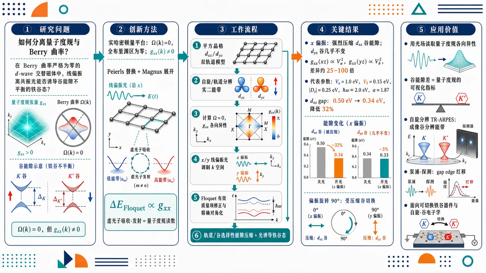
研究问题如何在真实材料中把量子度规与 Berry 曲率的贡献彻底分离，并让“纯量子度规”产生可直接观测的电子相变信号；核心场景是 Berry 曲率严格为零的 d-wave 交替磁体中，线偏振离共振光能否诱导谷能隙不平衡的铁谷态。创新方法利用 d-wave 交替磁体的实哈密顿量构造“Berry 曲率全布里渊区为零、量子度规非零”的干净平台；通过 Peierls 替换引入线偏振光，用 Magnus 展开推导二阶 Floquet 能隙修正，建立核心关系：光诱导能隙压缩量直接正比于 gxx，且无任何 Berry 曲率贡献；Aha 点是把“虚光子吸收-发射”的带间矩阵元精确写成量子度规读数。工作流程输入平方晶格 dxz/dyz 双轨道 d-wave 交替磁体模型 → 分解为自旋与轨道分辨的实二能带哈密顿量 → 计算 Berry 曲率为零、量子度规 gxx 具有强轨道各向异性 → 用 x 或 y 方向线偏振离共振光周期性调制 k 空间 → Magnus 展开得到二阶 Floquet 有效质量项修正 → 精确 Floquet 对角化验证 → 输出轨道/谷选择性的能隙压缩与光诱导铁谷态。关键结果x 偏振光强烈压缩 dxz 谷能隙，而 dyz 谷几乎不变，因为 gxx(xz) ∝ Vπ²、gxx(yz) ∝ Vδ²，二者相差约 25–100 倍；代表参数 Vπ=1.0 eV、Vδ=0.15 eV、|Ds|=0.25 eV、ℏω=2.0 eV、α≈1.87 下，dxz 最小 Floquet gap 从零场 0.50 eV 降至约 0.34 eV，降低 32%；旋转泵浦偏振 90° 后，受压缩谷从 dxz 切换到 dyz。应用价值提供一种用光场读取量子度规各向异性的实验方案：谷能隙差可作为量子度规的直接可视化指标，可通过自旋分辨时间分辨 ARPES 成像谷分辨能带，也可用光学泵浦-探测观察 gap edge 红移；该机制为无 Berry 曲率干扰的 Floquet 量子几何调控、可切换铁谷器件和自旋-谷电子学提供新路径。第一部分：核心概览 (Overview)
该研究提出 d-wave altermagnets 作为分离 quantum metric 与 Berry curvature 的理想平台：其实哈密顿量使 Berry curvature 在整个布里渊区严格为零，而量子度规保持非平凡。通过 Magnus expansion 与 exact Floquet diagonalization，线偏振离共振光被证明可经由纯量子度规机制重整化能隙，诱导 light-induced ferrovalley state。核心创新在于建立了能隙修正与 gxx 的解析比例关系，并预言 90° 泵浦偏振旋转可交换受抑制谷，为自旋分辨 ARPES 与泵浦-探测光谱提供可证伪读出路径。
---
第二部分：结构化快速回顾
《Quantum-metric-driven light-induced ferrovalley state in d-wave altermagnets》（None，）
背景
Quantum geometry 包含 quantum metric 与 Berry curvature。Berry curvature 已能较成熟地检测与调控，但纯量子度规信号常因二者共存而难以分离。d-wave altermagnets 的实哈密顿量天然压制 Berry curvature，为孤立量子度规效应提供平台。
方法
构建平方晶格上 dxz / dyz 双轨道紧束缚模型，引入 Peierls substitution 描述线偏振光；使用 Magnus expansion 推导二阶 Floquet 能隙修正，并用 exact Floquet diagonalization 进行非微扰验证。
结果
x 方向线偏振光强烈压缩 dxz 轨道能隙，而 dyz 轨道几乎不变。代表参数下：Vπ = 1.0 eV, Vδ = 0.15 eV, |Ds| = 0.25 eV, ℏω = 2.0 eV, α ≈ 1.87，dxz 最小 Floquet gap 约 0.34 eV，相对零场 0.50 eV 降低 32%。
讨论
能隙修正源于虚光子吸收-发射诱导的二阶过程，其强度正比于 interband matrix element squared，并通过关系
[
|łangle u₋|partialₖ_μmathcal H|u₊ångle|² = 4h² gμμ
]
直接连接到 quantum metric。Berry curvature 在所有阶次均无贡献。
局限
理论主要基于最小双轨道模型；实验材料中的自旋轨道耦合、耗散、加热、电子相互作用、声子耦合、有限寿命与泵浦诱导非平衡分布未被系统纳入。Magnus expansion 的收敛区间主要为 α ≲ π，更强驱动需依赖数值 Floquet 对角化。
结论
离共振线偏振光可在 d-wave altermagnets 中诱导纯量子度规驱动的 ferrovalley phase。谷能隙差直接编码量子度规各向异性，且可通过泵浦偏振旋转、自旋分辨 ARPES 与光学泵浦-探测实验验证。
---
第三部分：逐章节冷凝解析 (Section-by-Section Condensing)
Abstract
Quantum metric isolation as the central problem
Quantum metric 与 Berry curvature 通常共同存在，导致纯量子度规信号难以实验分离。研究目标直接指向这一瓶颈：*"Isolating the quantum metric from the Berry curvature remains a central challenge in quantum materials, as the two geometric quantities nearly always coexist and their contributions are difficult to disentangle."* 核心问题不是单纯计算量子度规，而是设计一个 Berry curvature 严格消失、但 quantum metric 仍可被外场读取的物理体系。
d-wave altermagnets as a Berry-curvature-free platform
d-wave altermagnets 的关键优势在于其实哈密顿量使 Berry curvature 严格为零：*"d-wave altermagnets, whose real Hamiltonian possesses strictly vanishing Berry curvature, constitute an ideal platform for overcoming this obstacle."* 这意味着任何由 Floquet 驱动引起的几何响应若仍然存在，就不能归因于 Berry curvature，从而构成纯量子度规效应的判据。
Linearly polarized off-resonant light induces ferrovalley order
线偏振离共振光通过 Floquet dressing 诱导轨道选择性 ferrovalley phase：*"linearly polarized off-resonant light drives an orbital-selective ferrovalley phase through a purely quantum-metric–mediated band-gap renormalization."* 该过程明确排除了 Berry curvature：*"with no Berry curvature contribution at any order."*
Orbital selectivity from hopping anisotropy
轨道选择性的微观根源是 hopping anisotropy，即 dxz 与 dyz 轨道沿 x/y 方向的 Slater-Koster 跃迁幅不同：*"The orbital selectivity originates from the hopping anisotropy, which generates a pronounced metric anisotropy between the dxz and dyz orbitals."* 这种各向异性最终转化为谷能隙差。
Valley gap difference as a metric readout
实验可观测量是 valley gap difference，它作为 quantum metric 的定量读出：*"The resulting valley gap difference provides a direct, quantitative measure of the quantum metric, accessible to spin-resolved ARPES and optical pump-probe spectroscopy."* 关键实验方案包括 spin-resolved ARPES 与 optical pump-probe spectroscopy。
---
Introduction.
Quantum geometry governs nonlinear and topological phenomena
Quantum geometry 被定义为包含 quantum metric 与 Berry curvature 的统一结构，并支配多类凝聚态现象：*"Quantum geometry, encompassing the quantum metric and Berry curvature, underpins a broad class of nonlinear optical and topological phenomena in condensed matter."* 其中 gμν 是实部，Ωμν 是虚部。
Quantum metric measures wavefunction overlap
Quantum metric 的物理含义是动量空间中 Bloch 波函数的重叠变化：*"The real part gμν, the quantum metric, governs wavefunction overlaps in momentum space."* 它与 superfluid stiffness、nonlinear Hall responses 等效应相关。
Berry curvature drives anomalous transport
Berry curvature 作为量子几何张量的虚部，控制反常输运与拓扑不变量：*"The imaginary part Ωμν, the Berry curvature, drives anomalous transport and topological invariants."* 这也解释了 Berry curvature 比 quantum metric 更容易在输运实验中被识别。
Pure quantum metric signatures remain difficult
难点在于 metric 与 curvature 通常同时出现：*"the metric and curvature nearly always coexist and their contributions interfere, making independent experimental signatures difficult to disentangle."* 因而一个 Berry curvature 被对称性严格消除的体系具有特别价值。
Altermagnets naturally disentangle geometry
Altermagnets 的 d-wave symmetric, real Hamiltonians 使 Berry curvature 为零，但保留非平凡 quantum metric：*"Their d-wave symmetric, real Hamiltonians enforce strictly vanishing Berry curvature while retaining a nontrivial quantum metric—a rare combination that naturally disentangles the two geometric contributions."* 这构成全篇机制的物理基础。
Open question on driven electronic transitions
已有研究涉及 quantum metric-induced nonlinear optical response、nonreciprocal transport、quantum metric dipoles 与 altermagnetic tunnel junctions，但外场驱动下量子度规能否产生清晰电子相变仍未解决：*"Whether the quantum metric can drive observable electronic transitions under external driving fields in d-wave altermagnets—and yield unambiguous signatures without Berry curvature’s influence—remains an open question."*
Floquet theory provides the proposed solution
研究通过 Floquet theory 建立光诱导能隙重整化与 quantum metric 的直接联系：*"developing a Floquet theory of light-induced band-gap renormalization in d-wave altermagnets driven purely by the quantum metric."* 目标相变是 ferrovalley phase，其谷能隙差编码 metric anisotropy：*"establishing a ferrovalley phase whose valley gap difference directly encodes the quantum metric anisotropy."*
Magnus expansion and exact Floquet diagonalization form a two-level validation
解析部分使用 Magnus expansion 与 Peierls substitution，数值部分使用 exact numerical Floquet diagonalization：*"Starting from a minimal two-orbital tight-binding Hamiltonian on the square lattice, we derive the second-order quasi-energy correction using the Magnus expansion with the Peierls substitution."* 数值对角化被用作非微扰检验：*"Exact numerical Floquet diagonalization corroborates the analytical results and provides a non-perturbative benchmark."*
---
Theoretical model and quantum geometry.
Two-orbital square-lattice tight-binding model
模型包含 dxz 与 dyz 两个轨道，并在 sublattice σ / orbital τ / spin s 空间中写为
[
mathcal H₀₌mathcal H₀m̊ hop+mathcal Hₘ̊ CF+mathcal Hₘ̊ ₑₓ.
]
原始设定为：*"We consider a two-orbital (dxz, dyz) tight-binding model for d-wave altermagnets on a square lattice."*
Static Hamiltonian components
跃迁项、晶场项与交换项分别为
[
mathcal H₀m̊ hop=σₓøtimes[A(k)τ₀₊B(k)τ_z]øtimes s₀,
]
[
mathcal Hₘ̊ CF=Δσ_zøtimesτ_zøtimes s₀,
]
[
mathcal Hₘ̊ ₑₓ=mσ_zøtimesτ₀øtimes s_z.
]
物理意义明确：*"The σx hopping term couples opposite sublattices; HCF splits the two orbitals on each sublattice; and Hex produces the spin-dependent staggered exchange field characteristic of altermagnetic order."*
Slater-Koster hopping structure
动量依赖函数为
[
A(k)=fracV_π+V_δ2(o̧s kₓₐ₊ₒ̧s k_ya),
]
[
B(k)=fracV_π-V_δ2(o̧s kₓₐ₋ₒ̧s k_ya).
]
其中 Vπ 与 Vδ 是 π 键与 δ 键 Slater-Koster 积分：*"Here Vπ (Vδ) are Slater-Koster π- (δ-) bond integrals."*
Spin-sector block diagonalization
由于 ([mathcal H₀,s_z]=0)，自旋守恒，哈密顿量可分解为自旋块：*"Since [H0, sz] = 0, the Hamiltonian block-diagonalizes into spin sectors."* 每个自旋扇区又因无直接 dxz–dyz hopping 而分成两个 2×2 子晶格块。
Orbital-resolved two-band Hamiltonian
每个轨道的有效模型为
[
mathcal Hₛ^α(k)=C^α(k)σₓ₊Dₛ^ασ_z.
]
其中
[
Cxz=V_πo̧s kₓₐ₊V_δo̧s k_ya,quad Dₛxz=ms/2+Δ,
]
[
Cyz=V_δo̧s kₓₐ₊V_πo̧s k_ya,quad Dₛyz=ms/2-Δ.
]
这一结构体现 d-wave 轨道-动量各向异性。
Low-gap spin branches
采用 m = 1.0 eV 与 Δ = 0.25 eV 时，低能分支能隙参数为
[
|Dₛxz|=|Dₛyz|=|m/2-Δ|=0.25 eV.
]
原文给出自旋归属：*"occurring for opposite spin species: spin-down (s = −1) for dxz and spin-up (s = +1) for dyz."* 高能分支为 |Ds| = 0.75 eV，被省略：*"The high-gap branches (|Ds| = 0.75 eV) remain insulating at all relevant fields and are omitted hereafter."*
Zero-field paravalley gap
零场能隙为
[
E_g⁰⁼²|Dₛ|=0.50 eV.
]
能谱为 (± h^α(k))，其中
[
h^α(k)=sqrt[C^α(k)]²⁺⁽Dₛ^α)².
]
两轨道零场能隙相等，对应 paravalley phase：*"the bandgaps of dxz and dyz bands are equal which exhibits the paravalley phase."*
Quantum geometric tensor decomposition
量子几何张量为
[
Qμν=gμν-fraci2Ømegaμν.
]
其中 gμν 是实对称部分，Ωμν 是虚反对称部分：*"The quantum geometric tensor Qμu = gμu − iΩμu/2 decomposes into the quantum metric gμu (real, symmetric) and Berry curvature Ωμu (imaginary, antisymmetric)."*
Identically vanishing Berry curvature
每个 2×2 哈密顿量只含 (σₓ,σ_z)，完全实，故本征态可选为实函数，Berry curvature 恒为零：*"Since Hsα(k) is purely real, its eigenstates can be chosen real, forcing Ωμu(k)=0 identically over the entire Brillouin zone."* 这是排除 Berry curvature 贡献的关键对称性基础。
Quantum metric formula
x 方向量子度规为
[
gₓₓα(k)=fraca²⁽Dₛ^α)²[partialₖ_ₓC^α(k)]²4[h^α(k)]⁴.
]
该公式说明 metric 与能带间波函数旋转速率、轨道跃迁各向异性及能隙大小共同相关。
Orbital anisotropy of gxx
对 dxz，
[
partialₖ_ₓCxz=-aV_πsin(kₓₐ₎,
]
故 (gₓₓxzpropto V_π²sin²⁽kₓₐ₎)。对 dyz，
[
gₓₓyzpropto V_δ²sin²⁽kₓₐ₎.
]
由于 Vπ/Vδ ∼ 5–10，得到强各向异性：*"Since Vπ/Vδ ∼ 5–10, the quantum metric is strongly orbital-anisotropic: gxxxz ≫ gxxyz."*
Peierls substitution probes wavefunction overlap
光场通过
[
k_μ→ k_μ+fraceE_μhbarømegasin(ømega t)
]
在动量空间周期性移动电子态，从而探测邻近动量点的波函数重叠：*"the resulting k-space modulation of the Hamiltonian directly probes the wavefunction overlap between neighboring momentum states—precisely the information encoded in the quantum metric."*
Leading coupling is exclusively metric
由于 Berry curvature 恒为零，周期驱动下的 leading interband coupling 只能由 gμν 控制：*"Because the Berry curvature vanishes identically, the leading interband coupling under periodic driving is exclusively geometric, governed by gμν rather than by the conventional Berry curvature dipole or anomalous velocity terms."*
---
Floquet coupling to the quantum metric.
Peierls substitution couples Floquet harmonics to Hamiltonian derivatives
周期光场通过动量替换连接到 (partialₖ_μmathcal H)：*"The Peierls substitution kμ → kμ + (eEμ/ℏω) sin(ωt) couples the Floquet problem to k-space derivatives of the Hamiltonian."* 这使光-物质耦合与量子几何发生直接联系。
Interband matrix element equals quantum metric factor
对于实二能带系统
[
mathcal H=hₓσₓ₊ₕ_zσ_z,
]
有精确关系
[
|łangle u₋|partialₖ_μmathcal H|u₊ångle|²⁼⁴h²⁽k)gμμ(k).
]
这被明确描述为：*"which connects the interband coupling under momentum-space driving directly to the quantum metric."*
Metric as the natural geometric quantity in Magnus expansion
在 Berry curvature 为零的实二能带 Floquet 系统中，quantum metric 是描述带间耦合的自然量：*"the quantum metric enters the Magnus expansion as the natural geometric quantity measuring interband coupling—a generic feature of real two-band Floquet systems with vanishing Berry curvature."*
x-polarized driving Hamiltonian
x 方向线偏振光
[
mathbf E(t)=E₀hatxo̧s(ømega t)
]
导致
[
kₓ→ kₓ₊fraceE₀hbarømegasin(ømega t),
]
并给出时间周期哈密顿量
[
mathcal H(k,t)=Cxzłeft(kₓ₊fraceE₀hbarømegasinømega t,k_yi̊ght)σₓ₊Dₛσ_z.
]
无量纲驱动强度为
[
α=eE₀ₐ/hbarømega.
]
Floquet Berry curvature remains zero
时间依赖哈密顿量在所有时刻保持实数：*"H(k,t) remains real for all t, ensuring that the instantaneous and Floquet Berry curvature vanish identically."* 因而 Floquet 过程不会重新生成 Berry curvature。
Magnus expansion defines the effective Floquet Hamiltonian
周期演化算符满足
[
U(T,0)=mathcal Texp[-iint₀^Tmathcal H(t)dt/hbar]equivexp[-imathcal H_FT/hbar].
]
该构造用于提取等效静态 Floquet 哈密顿量：*"We construct the effective Floquet Hamiltonian using the Magnus expansion."*
Bessel-function resummation and convergence
通过 Jacobi-Anger 恒等式
[
o̧s(kₓₐ₊αsinømega t)=sumₙJₙ₍α)o̧s(kₓₐ₊ₙømega t),
]
Magnus 展开可非微扰重求和 Jn(α)：*"The Magnus expansion converges for α ≲ π and resums the Bessel-function dependence Jn(α) non-perturbatively."*
Zeroth-order Magnus gives dynamical band narrowing but no gap correction
零阶项为
[
mathcal H⁽⁰⁾(k)= [V_π J₀₍α)o̧s kₓₐ₊V_δo̧s k_ya]σₓ₊Dₛσ_z.
]
其物理作用是压窄有效跃迁：*"The zeroth-order Magnus Hamiltonian describes dynamical band narrowing."* 但在 VBM/CBM 处 (hₓm̊ eff=0)，能隙仍为 (2|Dₛ|)：*"At the valence band maximum or conduction band minimum, hxeff = 0, so the gap remains 2|Ds| at zeroth order."*
First-order Magnus term does not change the gap
一阶项满足 (mathcal H⁽¹⁾proptoσ_y)，并在 VBM/CBM 处消失：*"The first-order Magnus term [H(1) ∝ σy] also vanishes at the valence band maximum or conduction band minimum."* 因而主导 gap correction 出现在二阶。
Second-order correction controls gap renormalization
二阶 (σ_z) 修正为
[
mathcal Hσ_z⁽²⁾
=
-sumₘₙₑ₀frac2Dₛ(mhbarømega)²
|łangle u₋|mathcal Hₘ|u₊ångle|²σ_z.
]
该项直接控制能隙重整化：*"The leading gap correction therefore arises at second order."*
Virtual interband transitions are the microscopic process
二阶修正不是由裸 Fourier 系数决定，而由带间矩阵元决定：*"the interband matrix element |⟨u−|Hm|u+⟩|2 — not the bare Fourier coefficient |Hm|2 — appears."* 物理图像是虚光子吸收-发射：*"the gap renormalization arises from an electron virtually absorbing a photon ... then emitting a photon ... to return."*
Odd Floquet harmonics are proportional to momentum derivatives
在 VBM/CBM 且 (C=0) 时，只有奇数谐波非零：
[
mathcal Hₘm̊ odd=i,m̊ sgn(m)V_π J|ₘ|(α)sin(kₓₐ₎σₓ.
]
同时
[
partialₖ_ₓmathcal H=-aV_πsin(kₓₐ₎σₓ.
]
二者满足精确关系：*"an exact proportionality (not a leading-order approximation) valid at all k."*
Interband matrix element factorizes into Bessel weight and metric
矩阵元分解为
[
|łangle u₋|mathcal Hₘ|u₊ångle|²
=
fracJₘ²⁽α)a²
|łangle u₋|partialₖ_ₓmathcal H|u₊ångle|².
]
再结合 (4h²gₓₓ)，可将能隙修正完全写成几何形式。
Central analytical result
核心公式为
[
Δ E_gm̊ Magⁿus
=
-frac16Dₛ³a²⁽hbarømega)²gₓₓ
sumₘₙₑ₀fracJₘ²⁽α)m².
]
该公式被明确定义为核心结果：*"Equation (13) is the central analytical result of this work."* 其物理含义是：*"the Floquet gap correction couples directly and exclusively to the quantum metric through the interband channel, with identically vanishing Berry curvature at all orders."*
Gap closes symmetrically
负号使 (mathcal Hσ_z⁽²⁾<0)，降低有效 (Dₛ)：*"The negative sign in Eq. (11) implies Hσz(2) < 0, reducing the effective Ds parameter."* VBM 上移、CBM 下移：*"the valence band maximum shifts upward ... and the conduction band minimum shifts downward ... closing the gap symmetrically from both sides."*
Absence of Berry-curvature-driven particle-hole asymmetry
对称闭合来自纯 (σ_z) 修正：*"This symmetric closure is a direct consequence of the σz-only structure of the Magnus correction."* 常规 Floquet 系统中 (1/ømega) Berry curvature 项常破坏粒子-空穴对称性，而此处不存在。
Small-alpha scaling
小 (α) 下 (J₁₍α)approxα/2) 主导，故
[
Δ E_gpropto gₓₓα².
]
原文强调：*"which establishes the quantum metric as the leading coupling channel."*
Beyond perturbative driving
中等驱动需保留完整 Bessel 级数；当 (αgtrsimπ) 时，Magnus 可能发散，需要数值 Floquet 对角化：*"For α ≳ π, where the Magnus series itself may diverge, we employ exact numerical Floquet diagonalization as the non-perturbative reference."*
---
Quantum-metric-driven light-induced ferrovalley phase.
Light-induced ferrovalley phase with preserved antiferromagnetic order
光诱导能隙重整化产生 ferrovalley phase，同时保持反铁磁序：*"The gap renormalization derived above produces a light-induced ferrovalley phase ... with antiferromagnetic order preserved throughout."* 这区别于通过破坏磁序或引入净磁化实现的谷极化机制。
Asymmetric gap evolution between orbitals
低强度下两轨道仍为绝缘，但 gap 演化强烈不对称：*"At low intensity both orbitals remain gapped but their gaps evolve asymmetrically."* dyz 通过 (V_δłl V_π) 耦合，几乎不变；dxz 在 Floquet dressing 下明显缩小：*"the dyz channel, coupling through Vδ ≪ Vπ, is barely affected, while the dxz gap shrinks under Floquet dressing."*
Ferrovalley definition via valley gap imbalance
ferrovalley phase 的定义是绝缘态中出现显著谷能隙不平衡：*"This valley gap imbalance defines the ferrovalley phase: the system remains insulating yet already exhibits pronounced valley polarization."* 该极化强度直接编码度规比值：
[
gₓₓxz/gₓₓyzpropto(V_π/V_δ)².
]
Exact Floquet diagonalization parameters
数值计算使用 Nph = 5 photon sectors：*"Exact Floquet diagonalization with Nph = 5 photon sectors yields..."* 代表参数为
[
V_π=1.0 eV,quad V_δ=0.15 eV,quad |Dₛ|=0.25 eV,quad hbarømega=2.0 eV.
]
Quantitative gap reduction
在 (αapprox1.87) 时，dxz 最小 Floquet gap 为约 0.34 eV，相对零场 0.50 eV 减小 32%：*"a minimum dxz Floquet gap of ∼0.34 eV (32% reduction from Eg0 = 0.50 eV) at α ≈ 1.87."* 更大 (α) 下 gap 又增加：*"which increases at larger α."*
dyz gap remains unchanged
dyz gap 几乎不变：*"The dyz gap remains essentially unchanged, confirming the strong orbital selectivity."* 这与 (gₓₓyzpropto V_δ²) 很小一致。
Paravalley-to-ferrovalley Floquet transition
线偏振 Floquet 工程将体系从 paravalley 推向 ferrovalley：*"Thus, Floquet engineering drives the altermagnet from paravalley to ferrovalley states."* 这种相变不是闭合全部绝缘能隙，而是制造轨道/谷选择性能隙不平衡。
Analytical and numerical consistency
图 3(a–b) 显示 x 方向线偏振对 dxz 高效：*"Floquet engineering with linearly polarized light along the x direction is highly effective for the dxz orbital."* 数值计算与 Magnus 解析结果一致：*"the numerical calculations are consistent with the analytical results obtained from the Magnus expansion."*
Several-meV suppression in parameter scan
参数扫描显示 dxz gap 可被强烈压低至 meV 量级：*"Our parameter scan ... confirms that the dxz gap can be strongly suppressed to several meV."* 这说明 ferrovalley 信号在可调参数范围内可能非常强。
---
Discussion and outlook.
Magnus and van Vleck expansions have complementary validity
Magnus expansion 与 van Vleck high-frequency expansion 适用区间不同：*"The two analytical methods employed in this work, the Magnus expansion and the van Vleck high-frequency expansion, exhibit complementary ranges of validity."* Magnus 是主解析框架，van Vleck 适用于严格高频极限。
Magnus expansion provides the geometric formula
Magnus 展开通过 Eq. 8 将 Peierls 调制和 quantum metric 连接起来：*"the interband matrix element relation (Eq. 8) connects the Peierls-induced k-space modulation directly to the quantum metric."* 随后 Eqs. 11–13 给出几何形式 gap correction。
Validity range of Magnus expansion
Magnus 在 (αłesssimπ) 收敛：*"The expansion remains convergent for driving amplitudes α ≲ π."* 这说明 (αapprox1.87) 的代表计算位于可控区间内。
van Vleck lacks nonperturbative alpha resummation
van Vleck 在 (1/ømega²) 阶与 Magnus 等价，但不能非微扰重求和 (α)：*"The van Vleck expansion ... is equivalent to Magnus at second order in 1/ω but does not resum the driving amplitude α non-perturbatively."*
Exact Floquet diagonalization benchmarks all alpha
精确 Floquet 对角化覆盖所有 (α)：*"Exact Floquet diagonalization covers all α and corroborates the Magnus predictions."* 代表参数下得到 32% gap reduction at α ≈ 1.87：*"exact diagonalization yields a 32% gap reduction at α ≈ 1.87, consistent with the Magnus prediction."*
Difference from conventional Floquet engineering: no 1/omega curvature term
常规 Floquet gap engineering 往往有 (1/ømega) 项；此处该项严格消失：*"the 1/ω van Vleck correction vanishes identically because [H−m,Hm] ∝ [σx,σx] = 0."* 这是实哈密顿量导致 Berry curvature coupling 被所有阶消除的体现：*"a unique consequence of the real Hamiltonian that eliminates Berry curvature coupling at all orders."*
Orbital selectivity is structurally fixed
轨道选择性由 hopping anisotropy 决定：*"the orbital selectivity is structurally determined by the hopping anisotropy."* 普通二阶 Floquet 理论也有 (ømega²) 场标度，真正可识别特征是轨道不对称：*"the distinguishing signature is the orbital asymmetry, which directly encodes the quantum metric anisotropy."*
Metric coupling is generic when Berry curvature vanishes
量子度规 Floquet 耦合不是 d-wave altermagnets 独有，而是 Berry curvature 由对称性消失时的普遍结果：*"such coupling is generic whenever Berry curvature vanishes by symmetry."* 任意实哈密顿量中，(1/ømega) curvature-coupled 项缺失，leading (1/ømega²) 项只耦合 metric：*"In any real Hamiltonian, the 1/ω term (curvature-coupled) is absent and the leading 1/ω2 correction couples exclusively to the metric."*
d-wave altermagnets are special because of broken spin degeneracy
d-wave altermagnets 的独特性不在于 metric coupling 本身，而在于同时具备 vanishing curvature 与 broken spin degeneracy：*"The d-wave altermagnets are special not because the coupling is unique, but because they uniquely combine vanishing curvature with broken spin degeneracy."* 这让 ferrovalley 信号可被自旋分辨实验读取。
Comparison with real centrosymmetric semiconductors
单层 h-BN 或 IV 族 monochalcogenides 在弱 SOC 条件下也可能有实哈密顿量和 Berry curvature 消失区域：*"centrosymmetric semiconductors with negligible spin-orbit coupling ... possess real Hamiltonians and vanishing Berry curvature in broad momentum regions."* 但 spin degeneracy 阻止自旋分辨 ferrovalley 检测：*"though spin degeneracy prevents spin-resolved ferrovalley detection."*
Spin-orbital locking enhances observability
d-wave altermagnets 的 staggered exchange field 强制两个谷具有相反自旋极化：*"the opposite spin polarization of the two valleys is enforced by the staggered exchange field."* 这使通用 metric coupling 转化为可观测 ferrovalley 信号：*"what elevates the generic metric coupling into an experimentally observable ferrovalley signal."*
Polarization response as falsifiable control
偏振响应是独立、可证伪的判据：*"A second distinctive signature of the quantum metric origin is the polarization response, which provides an independent and falsifiable experimental control."* x 偏振调制 (kₓ)，y 偏振调制 (k_y)。
x-polarized light suppresses dxz gap
x 偏振下
[
partialₖ_ₓCxzpropto V_πsin(kₓₐ₎,quad
partialₖ_ₓCyzpropto V_δsin(kₓₐ₎.
]
因此 dxz gap correction (propto V_π²)，dyz correction (propto V_δ²)：*"For x-polarized light ... the Floquet gap correction for the dxz channel is proportional to gxxxz ∝ Vπ2, while for dyz it is proportional to gxxyz ∝ Vδ2."*
Gap reduction ratio is about 10⁻² for weak channel
两轨道 gap reduction 比例为
[
(V_δ/V_π)²sim10⁻².
]
原始陈述为：*"The ratio of gap reductions is therefore (Vδ/Vπ)2 ∼ 10−2, meaning the dyz gap is essentially unaffected by x-polarized light."*
90-degree polarization rotation switches the suppressed valley
y 偏振下角色反转：*"For y-polarized light, the roles are reversed."* 此时 dyz gap 强烈降低，dxz 基本不变：*"Now the dyz gap is strongly suppressed while dxz remains nearly unchanged."* 90° 旋转构成强判据：*"This 90° polarization rotation interchanges which valley gap is suppressed—a dramatic and unambiguous signature."*
Two necessary experimental signatures
若 ferrovalley 信号源于 quantum metric，必须满足两点：*"the suppressed valley must switch from dxz to dyz upon rotating the pump polarization from x̂ to ŷ"*；且 gap reduction 大小必须随相应 hopping integral 的平方标度：*"the magnitude of the gap reduction must scale with the square of the corresponding hopping integral (Vπ2 or Vδ2)."*
Spin-resolved tr-ARPES detection
飞秒时间分辨自旋 ARPES 可直接成像谷分辨能带：*"Femtosecond time-resolved spin-resolved ARPES (tr-ARPES) can directly image the valley-resolved band structure."* 可测量 gap reduction 与
[
Δ E_gxz⁻yz
]
随泵浦 fluence 和 polarization 的变化：*"enabling the measurement of both the gap reduction and the valley gap difference ΔEgxz−yz as functions of pump fluence and polarization."*
Optical pump-probe spectroscopy as complementary readout
光学泵浦-探测可通过 (Δ R/R) 观察 gap edge red-shift：*"Optical pump-probe spectroscopy offers a complementary probe."* 在 dxz gap edge 附近，差分反射或透射应出现与 (gₓₓ) 成正比的红移：*"the differential reflectivity or transmission ΔR/R at photon energies near the dxz gap edge is expected to show a red-shift proportional to the quantum metric gxx."*
Null test through stationary dyz edge
x 偏振下 dyz gap edge 应保持不动；y 偏振泵浦下对应信号消失或交换：*"while the dyz gap edge remains stationary, yielding a differential signal that vanishes under y-polarized pumping—a null test that unambiguously isolates the quantum metric origin."*
Final conceptual conclusion
离共振光可在 d-wave altermagnets 中产生纯 quantum metric-mediated band-gap renormalization：*"off-resonant light drives a purely quantum metric-mediated band-gap renormalization in d-wave altermagnets."* 谷能隙差直接编码 metric anisotropy 且无 Berry curvature 贡献：*"whose valley gap difference directly encodes the quantum metric anisotropy with no Berry curvature contribution at any order."*
Broader implication for Floquet quantum geometry
该机制推广到任意 Berry curvature 被对称性消除的体系：*"whenever Berry curvature vanishes by symmetry, the leading light-matter coupling reduces to a universal quantum-metric form."* 材料特定的 spin-orbital structure 决定几何相是否可实验观测：*"with the material-specific spin-orbital structure determining the experimental observability of the resulting geometric phases."*
---
Acknowledgments
Funding sources
资助来源包括中国国家自然科学基金、国家重点研发计划、湖南省自然科学基金与中央高校基本科研业务费。具体编号为：*"National Natural Science Foundation of China (No. 12304217)"*，*"National Key Research and Development Program of China (No. 2024YFA1410300)"*，*"Natural Science Foundation of Hunan Province (No. 2025JJ60002)"*，以及 *"Fundamental Research Funds for the Central Universities from China (No. 531119200247)."*
---
References
Reference landscape
参考文献覆盖三类核心领域：quantum geometry、altermagnetism 与 Floquet engineering。量子几何相关包括 Ahn et al. 2022、Holder et al. 2020、Gao et al. 2014、Sodemann and Fu 2015、Ma et al. 2019 等；altermagnets 相关包括 Šmejkal et al. 2022、Ma et al. 2021、Ding et al. 2024、Fang et al. 2024 等；Floquet 方法相关包括 Magnus、Blanes et al. 2009、Eckardt and Anisimovas 2015、Bukov et al. 2015。参考列表中明确包含：*"Nature Physics 18, 290 (2022)"*、*"Physical Review X 12, 031042 (2022a)"*、*"Phys. Rev. Lett. 133, 206401 (2024)"*、*"New Journal of Physics 17, 093039 (2015)."*
---
Appendix A Supplementary materials for “Quantum-metric-driven light-induced ferrovalley state in d-wave altermagnets”
A.1 A. Quantum metric calculation
Real two-band eigenstates
附录从实二能带模型
[
mathcal H=hₓσₓ₊ₕ_zσ_z
]
出发，定义
[
h=sqrthₓ²⁺h_z²,quad tanθ=hₓ/h_z.
]
本征态为
[
|u₊ångle=(o̧sθ/2,sinθ/2)^T,
]
[
|u₋ångle=(-sinθ/2,o̧sθ/2)^T.
]
原文给出：*"For a real two-band Hamiltonian H = hxσx + hzσz ... the normalized eigenstates are..."*
Quantum metric from interband derivative overlap
量子度规定义为
[
gμν(k)=Re
[łanglepartialₖ_μu₋|u₊ångle
łangle u₊|partialₖ_νu₋ångle].
]
计算得
[
łangle u₊|partialₖ_ₓu₋ångle=-frac12partialₖ_ₓθ.
]
因此
[
gₓₓ(k)=fracDₛ²[partialₖ_ₓC(k)]²4h⁴⁽k).
]
Orbital-resolved metric expressions
对 dxz：
[
gₓₓxz=a²Dₛ²V_π²sin²⁽kₓₐ₎/(4h⁴⁾.
]
对 dyz：
[
gₓₓyz=a²Dₛ²V_δ²sin²⁽kₓₐ₎/(4h⁴⁾.
]
附录明确总结：*"Since Vπ ≫ Vδ, gxxxz ≫ gxxyz."*
Berry curvature vanishes because all matrix elements are real
Berry curvature 为
[
Ømegaₓy=2Im
[łanglepartialₖ_ₓu₋|u₊ångle
łangle u₊|partialₖ_yu₋ångle]=0.
]
原因是实哈密顿量使所有相关矩阵元为实数：*"because all matrix elements are real for a real Hamiltonian."*
Gradient matrix element relation
利用
[
łangle u₋|σₓ|u₊ångle=h_z/h,quad
łangle u₋|σ_z|u₊ångle=-hₓ/h,
]
以及
[
partialₖ_μmathcal H=(partialₖ_μhₓ₎σₓ₊₍partialₖ_μh_z)σ_z,
]
得到
[
łangle u₋|partialₖ_μmathcal H|u₊ångle
=
frach_zpartialₖ_μhₓ₋ₕₓpartialₖ_μh_zh.
]
进一步得到核心关系：*"we obtain |⟨u−|∂kμH|u+⟩|2 = 4h2(k)gμμ(k)."*
---
A.2 B. Magnus expansion
Floquet Hamiltonian as stroboscopic generator
附录定义 Floquet 等效哈密顿量：
[
U(T,0)=mathcal Texpłeft[-fracihbarint₀^Tmathcal H(t)dti̊ght]
equiv
expłeft[-fracihbarmathcal H_FTi̊ght].
]
物理含义为：*"HF is the exact time-independent Hamiltonian whose evolution over one period reproduces the full time-dependent dynamics at stroboscopic times."*
Magnus series structure
Magnus 级数为
[
mathcal H_F=mathcal H⁽⁰⁾+mathcal H⁽¹⁾+mathcal H⁽²⁾+ḑots.
]
每一阶包含嵌套对易子与时间积分：*"H(n) involves n nested commutators and n+1 time integrals."*
Nonperturbative Bessel dependence
Magnus 展开可重求和 Bessel 函数并具有较宽收敛范围：*"The Magnus expansion resums the Bessel-function dependence Jn(α) non-perturbatively and has a convergence radius α ≲ π."* 这优于仅适用于 (αłl1) 的线性展开：*"substantially larger than the α ≪ 1 range accessible to linear expansions."*
Zeroth-order term
零阶项为时间平均：
[
mathcal H⁽⁰⁾=frac1Tint₀^Tdt,mathcal H(t).
]
对该模型得到
[
mathcal H⁽⁰⁾(k)=
[V_π J₀₍α)o̧s kₓₐ₊V_δo̧s k_ya]σₓ₊Dₛσ_z.
]
其物理意义是 dynamical band narrowing：*"This describes dynamical band narrowing: the effective π-hopping is reduced by J0(α)."*
Zeroth-order does not change the gap
在 VBM/CBM 处 (hₓm̊ eff=0)，故 gap 始终为 (2|Dₛ|)：*"Zeroth-order Magnus never changes the gap."*
First-order commutator produces sigma-y but no gap shift
一阶对易子为
[
[mathcal H(t₁₎,mathcal H(t₂₎]
=
-2iDₛ[hₓ₍ₜ₁₎₋ₕₓ₍ₜ₂₎]σ_y.
]
产生 (σ_y) 项，比例近似为 (Dₛα V_πsin kₓₐ/(hbarømega))，但在 VBM/CBM 处消失：*"First-order Magnus does not affect the gap either."*
---
第四部分：深度理解与语言支持 (Understanding & Nuance)
1. 术语解析
Quantum metric
Quantum metric 是量子几何张量的实部，衡量 Bloch 波函数在动量空间中随 (mathbf k) 改变时的“距离”或“重叠损失”。语境中的关键不是抽象几何，而是它直接决定 Floquet 带间矩阵元：
[
|łangle u₋|partialₖmathcal H|u₊ångle|²⁼⁴h²gₖₖ.
]
细微差别：它不像 Berry curvature 那样通常对应反常速度或拓扑霍尔响应，而更像“波函数可被外场在动量空间中搅动的强度”。
Berry curvature
Berry curvature 是量子几何张量的虚反对称部分，常导致 anomalous velocity、anomalous Hall effect、topological invariants。语境中的重点是其严格为零，而非小到可忽略。*"vanishing Berry curvature"* 与 *"negligible Berry curvature"* 不同：前者由实哈密顿量和对称性保证，后者只是数值近似。
Ferrovalley state
Ferrovalley state 指不同 valley 之间出现同向或净谷极化的状态。这里不是通过载流子浓度差定义，而是通过 valley gap imbalance 定义：一个谷/轨道 gap 被光显著压缩，另一个基本不变。它仍可保持绝缘性，因此不是普通金属化相变。
Altermagnet
Altermagnet 是一种无净磁化但具有动量依赖自旋劈裂的反铁磁类磁态。区别于传统反铁磁体：传统反铁磁通常自旋简并；altermagnet 可在无净磁化下产生自旋分裂能带。语境中的 d-wave altermagnet 具有 d-wave symmetric spin splitting 与实哈密顿量。
Off-resonant light
Off-resonant light 表示光子能量不直接匹配真实带间跃迁，主要产生虚跃迁与 Floquet dressing，而非强吸收激发真实载流子。语境中的 gap renormalization 来自二阶虚过程：吸收虚光子到导带再发射返回价带。
---
2. 疑难查证
为什么实哈密顿量会让 Berry curvature 为零，却不让 quantum metric 为零？
Berry curvature 来自波函数导数重叠的虚部，本质上依赖相位结构；实哈密顿量允许本征态在整个布里渊区选为实函数，相关重叠没有虚部，因此 Berry curvature 为零。Quantum metric 来自实部，衡量本征态方向在 Hilbert space 中如何变化。即使本征态完全实，它仍然可以随 (mathbf k) 旋转；这种旋转产生非零 metric。一个简单类比：二维实向量 ((o̧sθ(k),sinθ(k))) 没有复相位曲率，但只要 (θ(k)) 随 k 变，它与邻近 k 点的重叠就会变化。
为什么 Floquet gap correction 与 quantum metric 成正比？
线偏振光通过 Peierls substitution 让电子动量做周期性摆动：
[
kₓ₍ₜ₎₌ₖₓ₊αsinømega t/a.
]
哈密顿量因此周期性采样相邻 k 点。小幅移动的生成元是 (partialₖ_ₓmathcal H)，而带间跃迁强度正是
[
|łangle u₋|partialₖ_ₓmathcal H|u₊ångle|².
]
实二能带系统中，这个矩阵元严格等于 (4h²gₓₓ)。因此 Floquet 二阶虚跃迁能量修正必然由 (gₓₓ) 控制。
为什么一阶 Floquet 项没有贡献？
常规 Floquet 系统中，(1/ømega) van Vleck 项常由 ([mathcal H₋ₘ,mathcal Hₘ]) 给出，并与 Berry curvature 或手性光诱导拓扑质量相关。这里所有 Fourier 谐波都沿 (σₓ) 方向，故
[
[σₓ,σₓ]=0.
]
一阶 curvature-like correction 消失。剩下的 leading correction 是 (1/ømega²) 的二阶虚跃迁过程，并投影到 (σ_z)，改变质量项 (Dₛ)，从而改变 gap。
为什么 x 偏振只强烈影响 dxz，不影响 dyz？
x 偏振调制 (kₓ)。对 dxz：
[
partialₖ_ₓCxzpropto V_π,
]
对 dyz：
[
partialₖ_ₓCyzpropto V_δ.
]
由于 (V_π/V_δsim5-10)，gap correction 比例约为
[
(V_π/V_δ)²sim25-100.
]
因此 dxz gap 被明显压缩，dyz gap 近似静止。若改用 y 偏振，角色交换。
---
第五部分：创新评估与关联 (Synthesis & Novelty)
1. 创新性判断
Pure quantum metric Floquet gap engineering
过去 2–5 年中，量子度规相关研究集中在 nonlinear optical response、nonreciprocal transport、quantum metric dipoles、nonlinear Hall effect 与隧穿结构中几何贡献的识别。该研究的新颖性在于将 quantum metric 从响应系数层面推进到 Floquet-engineered phase transition / valley-state control 层面，即用光场直接诱导可观测的 ferrovalley gap imbalance。
Strict exclusion of Berry curvature at all orders
许多量子几何实验或理论难以排除 Berry curvature 混入。这里利用 d-wave altermagnet 的实哈密顿量，使 Berry curvature 在整个布里渊区恒为零，并进一步论证 Floquet Berry curvature 也不产生。这解决了前人难以区分 metric 与 curvature 贡献的问题。
Analytical formula connecting gap shift to gxx
核心公式
[
Δ E_gm̊ Magⁿus
=
-frac16Dₛ³a²⁽hbarømega)²gₓₓ
sumₘₙₑ₀fracJₘ²⁽α)m²
]
提供了从实验 gap shift 反推 quantum metric 的直接路径。相比仅证明“metric contributes”，该结果给出定量、轨道分辨、偏振可控的测量关系。
Orbital-selective ferrovalley phase
前人对 altermagnets 的关注多在自旋分裂、反常输运、隧穿、非互易效应等方面。该研究提出 orbital-selective light-induced ferrovalley state：x 偏振压缩 dxz gap，y 偏振压缩 dyz gap。该机制将 hopping anisotropy → metric anisotropy → valley gap imbalance 串联成完整因果链。
Falsifiable polarization-switching signature
90° 泵浦偏振旋转会交换受抑制谷，这是非常强的实验判据。若观测到 gap suppression 不随偏振交换，或不按 (V_π²/V_δ²) 标度变化，则该量子度规机制会被否定。这种可证伪性强于许多几何响应理论。
Nonperturbative numerical benchmark
解析 Magnus 结果由 Nph = 5 photon sectors 的 exact Floquet diagonalization 支持，并在代表参数下得到 0.50 eV → 0.34 eV、32% gap reduction。该组合增强了结果在中等驱动强度下的可信度。
Generalization beyond altermagnets
更广泛的新意在于提出一个一般原则：当 Berry curvature 因对称性消失时，leading light-matter Floquet correction 退化为 universal quantum-metric form。d-wave altermagnets 的特殊性在于 spin-orbital locking 让这种通用机制转化为自旋分辨可读的 ferrovalley 信号。
-
17
📊 含图深析
📄 摘要：对反铁磁双层 Janus YIBr 的 6 种堆叠结构做第一性原理与低能模型分析，发现磁各向性能随堆叠变化而切换；能带结果显示自旋、谷与层自由度可通过堆叠和电场双重调控。
💡 亮点：双层 Janus YIBr 的自旋、谷、层耦合可被堆叠和电场双重调控。2D 反铁磁半导体的可编程性因此更强。
📖 展开分析 + 配图
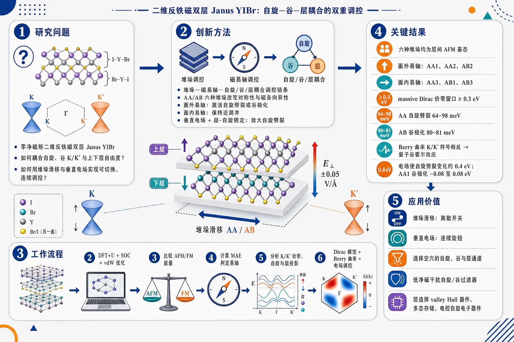
研究问题如何在零净磁矩的二维反铁磁双层 Janus YIBr 中，把自旋、谷 K/K′ 与上下层自由度耦合起来，并用“层间堆垛滑移”和“垂直外电场”实现可切换、可连续调控的能带与拓扑响应。创新方法提出“堆垛—磁易轴—自旋/谷/层耦合”的调控链条：六种 AA/AB 堆垛先改变结构对称性和磁各向异性，使磁易轴在面外与面内间切换；面外易轴激活自旋劈裂或谷极化，面内易轴保持简并。再用垂直电场移动上下层能级，借助层-自旋锁定把自旋劈裂放大到约 0.4 eV。工作流程构建六种双层 Janus YIBr 堆垛 I-Y-Br-Br-Y-I → 用 DFT+U、SOC、vdW 修正优化结构并比较 AFM/FM 能量 → 计算磁各向异性能确定面外/面内易轴 → 分析 K/K′ 附近价带、自旋投影和层投影 → 用 massive Dirac 低能模型与 λ1/λ2/λ3 Hamiltonian 描述谷劈裂、自旋劈裂和自旋-谷耦合 → 计算 Berry 曲率判断量子谷霍尔响应 → 施加 ±0.05 V/Å 垂直电场调控空穴自旋、谷和层属性。关键结果六种堆垛均为层间反铁磁基态；AA1、AA2、AB2 为面外易轴，AA3、AB1、AB3 为面内易轴。价带近费米面在至少 0.3 eV 窗口内呈 massive Dirac 色散。AA 面外易轴自旋劈裂达 64–98 meV，AB 面外易轴谷极化达 80–81 meV；面内易轴下自旋和谷近似简并。Berry 曲率在 K/K′ 谷符号相反，显示量子谷霍尔效应。0.05 V/Å 电场可使自旋劈裂达到或变化约 0.4 eV，AA1 谷极化可在 −0.08 到 0.08 eV 间调节。应用价值为可编程二维反铁磁谷电子学提供材料方案：堆垛滑移像离散开关，电场像连续旋钮，可选择空穴处于特定自旋、谷和层通道；适合设计低净磁干扰的自旋/谷过滤器、层选择 valley Hall 器件、多态存储单元和电控自旋电子器件。第一部分：核心概览 (Overview)
该研究提出反铁磁双层 Janus YIBr中由堆垛构型与外加垂直电场共同调控的自旋-谷-层耦合机制。六种高对称堆垛均呈层间反铁磁基态，但磁易轴可随滑移在面外与面内之间切换；面外易轴诱导显著自旋劈裂或谷极化，面内易轴则保持自旋与谷简并。价带近费米能级存在至少 0.3 eV 宽窗口内的类 massive Dirac 色散，有效低能模型可统一描述。Berry 曲率显示量子谷霍尔效应可能性。外电场可将自旋劈裂增强至约 0.4 eV，并连续调控空穴的自旋、谷和层自由度，为 Janus 反铁磁双层的可编程谷电子学与自旋电子器件提供理论基础。
---
第二部分：结构化快速回顾
《Spin-valley-layer coupling with dual control via stacking and electric field in antiferromagnetic bilayer Janus YIBr》（None，）
背景
二维 Janus 过渡金属卤化物因反演对称性破缺、内禀电场、Rashba 效应和强 SOC，适合实现自旋、谷、层自由度耦合。反铁磁二维半导体具有零净磁矩与可控自旋劈裂潜力，但多自由度协同调控仍不足。
方法
采用 VASP/PAW/PBE/DFT+U 第一性原理计算，Y 原子 Hubbard 参数 U = 2 eV，平面波截断能 450 eV，k 网格 15 × 15 × 1，真空层至少 30 Å，引入 SOC、DFT-D3 范德华修正与偶极修正。构建六种双层 Janus YIBr 堆垛，并结合有效低能 Hamiltonian 与 Berry 曲率分析。
结果
六种堆垛均以层间反铁磁为基态；AA1、AA2、AB2 为面外易轴，AA3、AB1、AB3 为面内易轴。价带近费米面具有类 massive Dirac 色散；AA 堆垛面外易轴下自旋劈裂达 64–98 meV，AB 堆垛面外易轴下谷极化达 80–81 meV。外电场 ±0.05 V/Å 可将自旋劈裂增强至约 0.4 eV。
讨论
堆垛通过改变对称性与层间相互作用控制磁易轴，磁易轴进一步决定自旋劈裂和谷极化。AA 与 AB 堆垛表现出不同 Berry 曲率分布，指向可调量子谷霍尔响应。电场提供连续调控通道，滑移提供离散结构开关，两者形成双重控制机制。
局限
所有结论来自第一性原理与有效模型计算，缺少实验验证；未系统讨论温度稳定性、动力学稳定性、声子谱、器件环境、缺陷、应变、基底和实际电场击穿限制。PBE+U 参数依赖性也未展开敏感性分析。
结论
双层 Janus YIBr 是一种可通过堆垛滑移和外电场双重调控的反铁磁谷电子平台，可实现自旋、谷、层耦合、量子谷霍尔效应以及空穴自由度可编程控制，适用于自旋/谷过滤器与多态存储器设计。
---
第三部分：逐章节冷凝解析 (Section-by-Section Condensing)
Abstract
Antiferromagnetic bilayer Janus YIBr as a tunable 2D semiconductor platform
反铁磁二维半导体的性质修饰和增强被定位为实现新型电子性质与器件应用的关键方向。核心对象是六种不同堆垛的双层 Janus YIBr，研究手段为第一性原理计算与有效低能模型。原文明确指出研究动机：*"The modification and enhancement of antiferromagnetic two-dimensional semiconductor is considered crucial for realizing novel electronic properties and facilitating promising applications."*
Stacking-dependent magnetic easy axis
六种堆垛的磁各向异性能 MAE显示，磁易轴方向并非材料固定属性，而是随堆垛构型变化。该点构成后续“滑移调控磁性与电子态”的基础。原文表述为：*"The calculation of magnetic anisotropy energy shows that the direction of easy axis varies with different stacking."*
Wide-window Dirac-like valence dispersion
第一性原理能带显示，价带中存在至少 0.3 eV 宽能量窗口内的 Dirac relativistic dispersion relation，说明空穴态可由低能 Dirac-like 模型描述。原文给出关键尺度：*"there is a Dirac relativistic dispersion relation in the valence band in a wide energy window of 0.3 eV at least."*
Spin-valley-layer coupling with spin splitting and valley polarization
通过自旋投影、原子投影和 Berry 曲率分析，双层 Janus YIBr 可产生自旋劈裂、谷极化、自旋-谷-层耦合，并可能实现量子谷霍尔绝缘体。原文概括为：*"there is spin, valley and layer coupling with spin splitting, valley polarization and quantum valley Hall insulators can be achieved in the bilayer Janus structures."*
External electric field as a continuous control knob
外加电场可调控费米能级附近空穴的自旋、谷和层属性，与堆垛构成双控制策略。原文强调：*"the effect of external electric field can be used to control spin, valley and layer of the hole near the Fermi level."*
---
I INTRODUCTION
Two-dimensional materials and transition metal halides provide the physical context
二维材料自 2004 年 graphene 出现后成为探索新奇物理和应用的重要平台；Transition Metal Halides, TMHs 因独特电子、磁性与工程应用潜力受到关注。原文背景为：*"Two-dimensional materials have been extensively explored for their important phenomena and practical applications since the advent of graphene in 2004"*，并进一步指出：*"Transition Metal Halides (TMHs) are famous for their unique properties in scientific research and engineering applications in the field of novel electronic devices."*
Janus asymmetry enriches controllability
Janus 结构上下表面原子不同，天然破坏垂直方向反演/镜面对称性，从而带来更丰富性质与更易调控的材料响应。原文说明：*"the asymmetric Janus structure of 2D TMHs can lead to richer properties and make it easier to control the properties of the materials."* 这种结构不对称性是内禀电场、Rashba 效应和层极化的重要来源。
Experimental progress makes Janus systems realistic
Janus 材料并非纯理论设想，相关制备与表征已有多项实验进展。原文写道：*"there have been many experimental achievements of Janus with the great development of experimental technology and methods."* 这为双层 Janus YIBr 的理论预测提供了现实可达性背景。
Spin splitting without net magnetization is an active frontier
具有零净磁矩的二维材料中实现自旋劈裂是快速发展的研究方向，与反铁磁、交替磁性、隐藏自旋极化等概念相关。原文指出：*"spin splitting in 2D materials with zero net magnetization is a rapidly growing research direction."* 该研究选择反铁磁双层体系，正是为了在宏观零磁矩条件下获得可用自旋分辨电子结构。
Spin-orbit coupling links spin, valley and topology
自旋轨道耦合 SOC 可将自旋与谷自由度耦合，并诱导多种拓扑结构或输运响应。原文表述为：*"The SOC effect may couple the freedom of the spin and valley to create various properties and topological structures."* 在含重卤素 I/Br 的 YIBr 中，SOC 对价带自旋劈裂与谷物理尤其关键。
Bilayer interlayer coupling adds a layer degree of freedom
双层结构中的层间范德华相互作用不仅改变电子结构，还可能使 SOC 或层极化效应从一层传递到另一层。原文强调：*"Interlayer van der Waals interactions in a bilayer structure can also give rise to a richer array of properties, which can even introduce SOC from one layer to the other."* 这使层自由度 layer成为与自旋、谷并列的控制变量。
Janus bilayers are ideal for spin-valley-layer coupling
Janus 结构因对称性破缺产生内禀电场与 Rashba effect，因此是研究自旋-谷-层耦合的自然平台。原文写道：*"Due to the breaking of symmetry, Janus structures generate an intrinsic electric field and Rashba effect, making them ideal platforms for spin-valley-layer coupling."*
Research objective: stacking-dependent antiferromagnetic Janus bilayers
研究目标是系统考察不同堆垛类型的反铁磁二维 Janus 双层结构，揭示由堆垛、磁易轴、SOC、电场共同决定的新效应。原文概括：*"we investigate the bilayer Janus structures with different stacking types by means of first-principles methods and effective low-energy models."*
Main introduction-level claims
核心预告包括：堆垛改变磁易轴；价带出现至少 0.3 eV 宽窗口的类 Dirac 色散；自旋和原子投影显示自旋劈裂、谷极化和自旋-谷-层耦合；Berry 曲率显示量子谷霍尔效应可能；外电场可诱导和增强自旋劈裂。原文集中表述为：*"The magnetic anisotropy energy (MAE) shows that the direction of the easy axis is different with different stacking."*，*"The calculation of the band structure shows that a Dirac relativistic dispersion relation in the valence band in a wide energy window of 0.3 eV at least."*，以及 *"The calculation of the Berry curvature description shows the possibility of quantum valley Hall effect."*
---
II METHODOLOGY
Density functional theory framework
计算采用基于 density functional theory, DFT 的 projector-augmented wave, PAW 方法，并由 VASP 实现。原文给出：*"The first-principles calculations are performed with the projector-augmented wave (PAW) method within the density functional theory, implemented in the Vienna Ab-initio simulation package software (VASP)."*
Exchange-correlation functional
交换关联泛函采用 Perdew-Burke-Ernzerhof, PBE 形式的 generalized gradient approximation, GGA。原文写道：*"The generalized gradient approximation (GGA) by Perdew, Burke, and Ernzerhof (PBE) is used as the exchange-correlation functional."* 这意味着能隙可能存在 PBE 低估风险，但趋势分析通常可靠。
Brillouin-zone sampling and cutoff
自洽计算采用 Γ-centered 15 × 15 × 1 Monkhorst-Pack grid，平面波动能截断设置为 450 eV。原文精确参数为：*"The self-consistent calculations are carried out with a Γ-centered (15 × 15 × 1) Monkhorst-Pack grid."*，以及 *"The kinetic energy cutoff of the plane wave is set to 450 eV."*
Convergence criteria
总能量收敛标准为 10⁻⁶ eV，力收敛标准为 0.01 eV/Å。原文写道：*"The convergence criteria of the total energy and force are set to 10⁻⁶ eV and 0.01 eV/Å."* 这些标准适合比较 meV 量级磁各向异性，但 MAE 对 SOC 和数值精度敏感，实际仍需谨慎。
Spin-orbit coupling inclusion
SOC 被用于能带和晶格结构计算。原文为：*"The spin-orbit coupling (SOC) is applied in the calculation of band structure and lattice structure."* 由于研究对象涉及自旋劈裂、谷极化和 Berry 曲率，SOC 是不可省略的关键物理项。
Vacuum and dipole correction
层间真空厚度至少 30 Å，并对 Janus 结构使用偶极修正，以避免周期性镜像间的人工电场耦合。原文参数为：*"The inter-layer vacuum thickness is set to at least 30 Å."*，以及 *"The dipole correction is applied in the calculation for the Janus structure."*
DFT+U treatment
Y 原子引入 Hubbard-U = 2 eV，用于改进能带描述。原文写道：*"The Hubbard-U term (U = 2 eV) for Y is considered in the DFT+U scheme to improve energy band description."* 该 U 值会影响 d 态能级、磁性和能带劈裂，属于关键模型参数。
Van der Waals correction
层间相互作用通过 Grimme DFT-D3 色散修正处理。原文说明：*"Dispersion corrections are taken into account via the Grimme approximation (DFT-D3)."* 对双层 Janus 体系而言，vdW 修正直接影响层间距、堆垛能量差和层间耦合强度。
---
III RESULT AND DISCUSSION
III.1 Lattice structures and magnetic properties
Six high-symmetry bilayer Janus YIBr stackings
双层 Janus YIBr 的层序为 I-Y-Br-Br-Y-I：I 原子位于最外侧，Br 原子位于双层内侧。六种高对称堆垛分为 AA1–AA3 与 AB1–AB3 两组。原文给出结构定义：*"For the bilayer 2D Janus YIBr(I-Y-Br-Br-Y-I), the I atoms are located at the outermost layer of the bilayer structure and the Br atoms are at the innermost layer of the bilayer structure."*，并指出：*"There are six different typical stacking configurations with high symmetry."*
AA and AB stackings differ by symmetry operations
AA1 具有垂直于层的镜面对称性和平面内三重旋转轴；AA2/AA3 可由层间滑移获得，滑移破坏垂直镜面对称性，仅保留平面内三重旋转轴。AB1 由 AA1 上层旋转 180° 得到，出现层间二重旋转轴；AB2/AB3 由滑移产生，仍保留二重旋转轴。原文说明：*"The AA1 stacking has mirror symmetry perpendicular to the layers and a threefold rotation axis in the plane"*，*"The sliding destroys the mirror symmetry perpendicular to the layers"*，以及 *"AB1 is obtained by rotating the upper layer of AA1 by 180°, at which point a twofold rotation axis between the layers appears."*
Optimized lattice parameters and bond lengths
晶格常数为 a = 3.96 Å，Y-I 键长 3.12 Å，Y-Br 键长 2.94 Å。原文精确写道：*"The lattice constant is a = 3.96Å and the bond length of Y-I and Y-Br 3.12Å and 2.94Å."* 这些参数限定了二维三角/蜂窝相关 Brillouin 区的 K/K′ 谷位置。
Stacking-dependent interlayer distances
结构优化后，AA1 层间距为 3.74 Å，AB2 层间距为 3.73 Å，其余构型为 3.19 Å。差异源于 AA1 与 AB2 中内层 Br 原子在平面内位置重合。原文给出：*"the distance between the two monolayers is 3.74 Å for AA1, 3.73 Å for AB2 and 3.19 Å for other configurations."*，并解释：*"The difference between the two is due to the fact that the Br atoms in the inner layers of the two structures share the same position in the plane."*
Monolayer ferromagnetism and bilayer antiferromagnetic ground state
单层 YIBr Janus 为铁磁态，磁矩为 1 μB；但双层六种堆垛中，层间相互作用均使反铁磁 AFM能量低于铁磁 FM。原文指出：*"The monolayer YIBr Janus structure is ferromagnetic with 1 μB."*，并给出双层结论：*"the AFM configurations have lower energy than the FM configurations so the magnetic ground state of interlayer interaction is AFM for all six configurations."*
Total-energy hierarchy favors AA1 and AB2
从 Table 1 看，最低能量为 AFM AA1 [001] = -26.8030 eV，其次为 AFM AB2 [001] = -26.8028 eV，相对 AA1 仅高 0.0002 eV。AA2、AA3、AB1、AB3 相对能量约 0.0101–0.0132 eV。原文表格显示：*"AA1 [001] -26.8030 0.0000"* 与 *"AB2 [001] -26.8028 0.0002"*。这说明 AA1 与 AB2 在能量上接近，可能具有可竞争堆垛稳定性。
AFM easy axis changes with stacking
AFM 构型中，AA1、AA2、AB2 的易轴为面外 [001]；AA3、AB1、AB3 的易轴为面内。原文精确描述：*"For the AFM AA configurations, the easy axis is out-of-plane along the [001] direction for the AA1 and AA2 configurations and in-plane for the AA3 configurations."*，以及 *"for the AFM AB configurations, the easy axis is out-of-plane along the [001] direction for the AB2 configurations and in-plane for the AB1 and AB3 configurations."*
FM easy axes are mostly in-plane
FM 磁态下，除 AB2 外，其余堆垛易轴多为面内。原文写道：*"The easy axes of the FM are in-plane for the FM magnetic states except for the AB2 configuration."* 这表明易轴不仅取决于堆垛，也取决于层间磁序。
Sliding can tune magnetic anisotropy
AA 构型之间可通过层间滑移互相转换，因此磁易轴方向可通过滑移调控。原文强调：*"It is acknowledged that the AA structure can be converted into each other by sliding, so the direction of the easy axis can be adjusted easily."* 这是堆垛作为控制旋钮的直接证据。
---
III.2 Electronic energy bands
Interlayer interaction can alter SOC and electronic structure
层间相互作用是双层电子结构的关键因素，并可能将 SOC 相关效应从一层引入另一层。原文指出：*"Interlayer interaction plays a very important role in the layer structure"*，并补充：*"the interlayer interaction can import SOC from the one layer to another layer."*
Out-of-plane easy-axis structures show spin splitting
AA1 与 AB3 的面外易轴能带在费米能级附近出现自旋劈裂。原文表述为：*"The results show that there is spin splitting near the Fermi level in both structures."* AA1 的 K 与 K′ 谷能量大致相等，而 AB3 有明显谷极化：*"The band energy at K and K’ valleys of the AA1 is roughly equal, but the band structure of AB3 exhibits very obvious valley polarization."*
In-plane easy-axis structures show spin degeneracy
AA3 与 AB2 的面内易轴情况下，费米能级附近自旋简并。原文写道：*"Unlike the out-of-plane easy axis, the spin of AA3 and AB2 is degenerate near the Fermi level."* 这说明磁矩方向通过 SOC 决定是否允许自旋劈裂。
AB stacking can retain valley polarization
即使在面内易轴示例中，AB3 仍表现出类似面外易轴情形的谷极化；整体规律总结为：面外易轴对应自旋劈裂，AB 堆垛对应明显谷极化。原文给出归纳：*"there is spin splitting near the Fermi level for the situation of out-of-plane easy axis and there is obvious valley polarization for the situation of AB stacking configuration."*
Valence-band dispersion is massive Dirac-like
价带近费米面色散接近massive Dirac relativistic dispersion relation，采用有效低能 Hamiltonian 描述：
H₀(k) = -√(αk² + β)。原文写道：*"the energy dispersion relation of valence band near the Fermi surface is close to the massive Dirac relativistic dispersion relation."*，并给出模型：*"H0(k)=-√αk2+β."*
Effective model fits all six stackings
该有效模型可描述六种堆垛、面外或面内易轴情形下费米能级以下两个价带。原文强调：*"this effective model can describe the both two valence bands under the Fermi level for all the six stacking configurations with the out-of-plane or in-plane easy axis."*
Fitting parameters show directional anisotropy
拟合参数 α 与 β 在不同 k 空间方向显著不同。所有六种堆垛中，沿 K-Γ 方向 α = 2.124–2.370 eV·Å²，沿 K-M 方向 α = 7.903–8.643 eV·Å²；沿 K-Γ 方向 β = 0.015–0.017 eV²，沿 K-M 方向 β = 0.255–0.294 eV²。原文给出：*"The range of values for α is 2.124 - 2.370 eV⋅Å2 at the line of K-Γ and 7.903-8.643 eV⋅Å2 at the line of K-M and β is 0.015-0.017 eV2 at the line of K-Γ and 0.255-0.294 eV2 at the line of K-M."*
Angular anisotropy follows threefold symmetry
AA1 面外易轴中，α 的角度依赖具有 120° 对称性，与晶格三重旋转对称性一致。原文说明：*"The anisotropy parameters have 120∘ of symmetry."*
Hole effective mass is moderately light
基于公式 1/m* = (1/ℏ²)d²E/dk²|k=0，AA1 面外易轴价带顶空穴有效质量为 0.41–0.46 me。原文写道：*"the range of effective mass of hole for the AA1 structure with out-of-plane easy axis is 0.41-0.46 me, where me is the free electron mass."* 这意味着空穴输运具备较高迁移潜力。
---
III.3 Spin, valley and layer coupling
AA stackings show large spin splitting under out-of-plane easy axis
AA 构型在面外易轴时 K/K′ 点自旋劈裂为 64–98 meV；面内易轴时自旋劈裂显著减小，仅 6–17 meV。原文给出：*"For AA structures, there are 64-98 meV spin splitting at K or K’ point when the easy axis is out-of-plane."*，以及 *"the spin splitting is small, and the energy difference of the two spins is only 6-17 meV when the easy axis is in-plane."*
AA valley polarization vanishes for in-plane easy axis
AA 构型中，面外易轴下 K/K′ 能量差为 3–17 meV；面内易轴下 K/K′ 能量差为 0 meV。原文写道：*"The energy difference between the K and K’ is 3-17 meV when the easy axis is out-of-plane, the energy difference between the K and K’ is 0 meV when the easy axis is in-plane for AA structures."*
AB stackings show smaller spin splitting but larger valley polarization
AB 构型面外易轴下自旋劈裂为 17–24 meV，小于 AA；面内易轴下自旋劈裂仅 0–1 meV。但 AB 面外易轴下 K/K′ 谷极化高达 80–81 meV，显著大于 AA。原文明确指出：*"For AB structures, the situation is different. The spin splitting becomes smaller and the valley polarization becomes larger."*，并给出数值：*"The energy difference between the K and K’ is 80-81 meV when the easy axis is out-of-plane."*
Spin splitting and valley polarization are controlled by easy-axis direction
自旋劈裂和谷极化与磁易轴方向直接相关，面外易轴激活非简并，面内易轴趋于简并。原文总结为：*"So the spin splitting and valley polarization are related to the direction of the easy axis."*
AA1 exhibits spin-valley locking and layer selectivity
AA1 中价带顶在 K 与 K′ 的自旋方向相反：K 点为上自旋，K′ 点为下自旋；同时存在谷极化，K 点能量高于 K′。原文写道：*"the spins of the top valence band are opposite in direction, there is obvious spin splitting at the K and K’ and up spin at K point and down spin at K’ point."*，并指出：*"there is valley polarization and the energy at K is higher than that at K’."*
AA1 atom projection links spin and layer
AA1 的原子投影显示，K 点 VBM 的下自旋来自上层，K′ 点 VBM 的上自旋来自下层。原文为：*"the down spin of the VBM at K point is from the upper layer and the up spin of the VBM at K’ point is from the lower layer."* 这证明了自旋-谷-层三重锁定。
AA2 reverses valley-spin-layer association
AA2 中，K 谷关联下自旋与上层，K′ 谷关联上自旋与下层。原文写道：*"For the AA2 structure, the K valley is associated with spin down and the upper layer and the K’ valley is associated with spin up and the lower layer."* 这说明层间滑移可改变谷与自旋/层的对应关系。
AB3 has same spin and layer character at both valleys for top valence band
AB3 与 AA 构型不同：自旋劈裂更小，K/K′ 能量差更大；K 与 K′ 两个谷的顶价带均为下自旋并来自上层，第二价带为上自旋并来自下层。原文指出：*"The magnitude of spin splitting is smaller than that in the AA2 structure"*，*"The energy difference between the K and K’ is larger than that of the AA2 structure."*，以及 *"For both K and K’ valley, the spin and atom projection weight show that the valence band is spin down and from the upper layer, and the second band under the Fermi level is spin up and from the lower layer."*
Unified low-energy Hamiltonian captures spin-valley-layer coupling
能带可由统一模型描述：
H(k) = H₀(k) + λ₁(k)τz + λ₂(k)sz + λ₃(k)τzsz。其中 λ₁ 表示谷劈裂，λ₂ 表示自旋劈裂，λ₃ 表示自旋-谷耦合。原文给出：*"we get a uniform effective model which can describe the two valence bands near the Fermi level with different spin and valley according to the coupling of spin, valley and layers."* 并定义：*"λ1 describes the valley splitting"*，*"λ2 describes the spin splitting"*，*"λ3 describes the spin valley coupling."*
AA out-of-plane case is dominated by spin-valley coupling λ₃
AA 面外易轴中 K/K′ 无显著谷劈裂，因此 λ₁ = 0；顶价带在 K/K′ 自旋不同，因此由 λ₃τzsz 描述，λ₂ = 0，λ₃ ≠ 0。AA2 中 λ₃ = 40.8 meV。原文给出：*"For the AA structures with out-of-plane easy axis, there is no valley split for K valley and K’ valley, so λ1 is 0."*，*"the spin split can be described by the fourth term in the Hamiltonian, so λ2 is 0 and λ3 is not 0."*，以及 *"For AA2, the λ3 is 40.8 meV at K or K’."*
AB out-of-plane case is dominated by valley and spin terms λ₁, λ₂
AB 面外易轴中存在明显谷极化，且 K/K′ 顶价带自旋相同，因此 λ₃ = 0，λ₁ 和 λ₂ 非零。AB3 中 λ₁ = 11.7 meV，λ₂ = 40.5 meV。原文写道：*"For the AB structures with out-of-plane easy axis, there is obvious valley polarization and the spin of top valence band at K and K’ valley are the same, so λ3 is 0 and λ1 and λ2 are not 0."*，以及 *"The λ1 and λ2 are 11.7 meV and 40.5 meV at K or K’ for AB3 structure."*
In-plane easy axis suppresses all low-energy splitting terms
面内易轴中自旋与谷均简并，因此 λ₁ = λ₂ = λ₃ = 0。原文指出：*"For the in-plane easy axis, the spin and valley are degenerate"*，并总结：*"the λ1 λ2 and λ3 are all 0."*
Sliding enables indirect control of spin-valley-layer coupling
滑移改变两层相对位置，进而改变磁易轴；磁易轴决定自旋与谷性质，因此滑移可间接控制自旋-层-谷耦合。原文明确为：*"the easy axis can be controlled by the sliding of relative position of the two layers."*，以及 *"the sliding can be used to control the spin layer, valley coupling and properties indirectly."*
---
III.4 Quantum valley Hall effect
Berry curvature is calculated from Kubo formula
拓扑性质通过两条价带在整个 k 空间中的 Berry curvature 计算获得，公式为 Kubo 形式：
Ωⁿ = iΣm≠n [(⟨n|v̂x|m⟩⟨m|v̂y|n⟩ − ⟨n|v̂y|m⟩⟨m|v̂x|n⟩)/(En − Em)²]。原文说明：*"To investigate the topological properties of the bilayer structure, we calculate the Berry curvature of the two valence bands in the whole k space."*，并给出：*"According to Kubo formula, the Berry curvature of the n-th band at the point k, Ωn(k), can be written as..."*
Same stacking type yields same Berry curvature distribution
相同堆垛类型具有相同 Berry 曲率特征，即使磁易轴方向不同，两个价带的 Berry 曲率分布仍相似。原文写道：*"The results show that the same stacking types have the same Berry curvature."*，并指出：*"their configurations have different easy axis direction, but their Berry curvature distribution for the two valence bands are similar."*
AA stacking has opposite Berry curvature at K and K′
AA 堆垛中 K 点 Berry 曲率为 14 Ų，K′ 点为 −14 Ų；两个谷符号相反，全 Brillouin 区积分为 0。原文给出：*"The Berry curvature at K is 14 Ų and -14 Ų for K’."*，并说明：*"Both of them have the opposite Berry curvature value at K and K’."*，以及 *"So the integral of the Berry curvature over the entire Brillouin zone is 0."*
AA two-layer bands share same valley sign pattern
AA 堆垛中，来自不同层的两个单带在同一 K 点具有相同正号，在同一 K′ 点具有相同负号。原文写道：*"the two bands from different layers have positive (negative) signs at the same K (K’) point."* 这意味着层自由度不反转同一谷处的 Berry 曲率符号。
AB stacking has opposite layer-resolved Berry curvature signs
AB 堆垛与 AA 不同：一个单带在 K 点为 7 Ų、K′ 点为 −7 Ų；另一个单带相反，K′ 为 −7 Ų、K 为 7 Ų的表述略有重复但核心是不同层/不同价带在同一谷点符号相反。原文给出：*"For the AB structures, the Berry curvature is different from that of the AA type."*，并说明：*"For the two valence bands from different layers, they have the opposite sign at the same K(K’) point in Brillouin zone."*
Quantum valley Hall effect is indicated
K 与 K′ 具有相反 Berry 曲率，全局 Chern 数抵消但谷分辨拓扑响应非零，形成量子谷霍尔效应条件。原文直接结论为：*"There is a quantum valley Hall effect."* 其物理含义是，在无净电荷 Hall 电导的情况下，不同谷可贡献相反横向异常速度，产生谷 Hall 响应。
---
III.5 External electric field
External electric field range and direction
外场为垂直 z 方向，范围 −0.05 到 0.05 V/Å，对六种结构均计算电子结构，图示重点为 AA1 和 AB2。原文写道：*"We apply a -0.05 - 0.05 V/Å external electric field in the z direction and calculate the electronic structure for the six structures."*
Electric field increases spin splitting for AA1 and AB2
对于 AA1 与 AB2，外电场无论向上还是向下均可增强自旋劈裂。原文指出：*"For both structures, the electric field can increase the magnitude of spin split, regardless of whether the electric field is upward or downward."*
Electric-field Hamiltonian adds spin-dependent term
外电场下的有效 Hamiltonian 写为：
He(k) = H(k) + h(E)sz，其中 h(E) 为描述外电场对自旋劈裂影响的线性函数。原文为：*"So the effective Hamiltonian with external electric field can be written as He(k)=H(k)+h(E)sz"*，并定义：*"h(E) is a linear function that describes the effect of external electric field on the spin split."*
AA1 electric field selects spin and layer
AA1 中，沿 z 轴电场提高来自下层的上自旋能带能量；反向电场提高来自上层的下自旋能带能量。原文给出：*"For AA1, the electric field along the z-axis can increase the energy of the band with up spin from the lower layer while an electric field in the opposite direction can increase the energy of the band with down spin from the higher layer."* 这说明电场直接作用于层极化态，并通过层-自旋锁定改变空穴自旋。
AA1 spin splitting reaches about 0.4 eV
在 0.05 V/Å 外电场下，AA1 的 K 或 K′ 点自旋劈裂约 0.4 eV，远大于无场时的几十 meV 尺度。原文写道：*"The spin split at K or K’ is about 0.4 eV under the 0.05 V/Å external electric field."*
AA1 valley polarization is tunable between −0.08 and 0.08 eV
AA1 中外电场还可改变谷极化，顶价带改变会导致空穴自旋、谷和层属性切换；谷极化随电场可在 −0.08 eV 到 0.08 eV 之间变化。原文给出：*"The alteration of the top valence band can cause the change of the spin, valley and layer of the hole."*，以及 *"The valley polarization can vary between -0.08eV and 0.08eV in response to changes in external electric field."*
AB2 valley polarization is robust but spin/layer are controllable
AB2 中外电场不能改变谷极化方向，K 谷能量始终高于 K′；但电场可改变空穴的自旋和层属性。原文写道：*"For the AB2 structure, the external electric field can not change the valley polarization, the energy at the K valley is higher than at the K’ valley, but the external electric field can change the spin and the layer of the hole."*
Electric field induces large spin splitting in AB2
AB2 中 0.05 V/Å 电场变化可导致约 0.4 eV 的自旋劈裂变化。原文为：*"The change of 0.05 V/Å external electric field can cause a change of the spin split of 0.4 eV."*
In-plane easy-axis structures also acquire spin splitting under electric field
面内磁易轴结构在外电场下也可产生自旋劈裂，但幅度小于面外易轴情形。原文说明：*"For the structure which has an in-plane magnetic easy axis, the electric field can also cause the spin splitting."*，并补充：*"the magnitude of spin splitting is smaller than that in the out-of-plane easy axis case."*
---
III.6 Further discussion
Stacking symmetry controls magnetic and electronic properties
不同堆垛具有不同对称性，两层相对位置改变层间相互作用，从而影响磁性和电子结构。原文概括：*"the different stacking types have different symmetry and the relative position between two layers can have an effect on interlayer interactions, which can lead to different magnetic and electronic properties."*
Sliding controls easy axis, which controls spin and valley
层间滑移控制磁易轴方向；面外易轴导致自旋劈裂或谷极化，面内易轴保持自旋和谷简并。原文写道：*"Sliding between the two layers can control the easy axis direction and the direction of the easy axis can determine the spin splitting and valley polarization."*，以及 *"The out-of-plane easy axis can cause the spin splitting or valley polarization and the spin and valley remain degenerate when the easy axis is in-plane."*
Spin-valley-layer coupling provides a hole-control mechanism
价带中的自旋、谷、层耦合由磁易轴决定，可有效控制空穴属性。原文指出：*"The coupling of spin, valley and layer which is determined by the easy axis in the valence band can provide an effective control mechanism for the hole properties."*
Berry curvature is stacking-symmetry dependent
AA 与 AB 堆垛具有不同 Berry 曲率分布，其差异与堆垛对称性相关。原文写道：*"The calculation of the Berry curvature shows that the AA and AB stacking types have different Berry curvature distribution which is related to the symmetry of the stacking type."*
Electric field enables continuous modulation
外电场可连续调节能带性质，诱导并增强自旋劈裂和谷极化，并控制空穴自旋、谷、层。原文为：*"The external electric field can also modulate the properties of band structure continuously."*，以及 *"The spin splitting and valley polarization can be induced and enhanced and the spin, valley and layer of the hole can be controlled by external electric field."*
Device concepts include spin/valley filters and multistate memory
这些性质可用于自旋/谷过滤器和多态存储器，堆垛与电场共同决定空穴自由度。原文指出：*"These discoveries can be used as spin/valley filters and multistate memory"*，并补充：*"the stacking and external electric field can control the hole properties continuously and determine the spin, valley and layer of the hole."*
Dual regulation is the key design concept
滑移通过磁易轴控制能带结构，外电场调节自旋劈裂大小，两者构成联合调控方案。原文总结：*"The sliding can control the band structure through the direction of the easy axis and external electric field can adjust the magnitude of spin splitting."*，以及 *"This combined regulation approach represents an attractive new concept for device design."*
---
IV CONCLUSION
Six bilayer Janus YIBr stackings are systematically investigated
六种双层 Janus YIBr 堆垛通过第一性原理方法得到系统分析。原文开头总结：*"six types of stacking structures of bilayer Janus YIBr are investigated using first-principles calculations."*
Stacking controls magnetic easy-axis direction
堆垛构型能够控制磁易轴方向，是结构调控磁性的核心结论。原文写道：*"It is found that the stacking configuration can control the easy axis direction."*
Valence bands have robust Dirac-like dispersion
价带中存在至少 0.3 eV 宽能量窗口的 Dirac relativistic dispersion relation。原文表述为：*"there is a Dirac relativistic dispersion relation in the valence band in a wide energy window of 0.3eV at least."*
Out-of-plane easy axis produces spin splitting or valley polarization
面外易轴下，不同堆垛产生自旋劈裂或谷极化；面内易轴下，自旋与谷保持简并。原文写道：*"For the situation that the easy axis is out-of-plane, there is spin splitting or valley polarization for different stacking types and the valley and spin are degenerate when the easy axis is in-plane."*
Effective Hamiltonian links spin, valley, layer and easy axis
自旋分辨能带和原子投影揭示自旋、谷、层与磁易轴之间的关系，并建立有效低能 Hamiltonian 描述能带与电子性质。原文为：*"The calculation of spin resolved band structure and atom projection shows the relationship between spin, valley, layer and easy axis and we get an effective low-energy Hamiltonian model to describe the energy bands and analyse the electronic properties, including coupling of spin, valley and layer."*
Berry curvature reveals quantum valley Hall effect
Brillouin 区内 Berry 曲率计算揭示了量子谷霍尔效应。原文直接表述：*"It is revealed that there is a quantum valley Hall effect by calculation of Berry curvature in the Brillouin zone."*
External electric field controls hole degrees of freedom
外电场可诱导并增强自旋劈裂，并控制费米能级附近空穴的自旋、谷和层。原文写道：*"it can induce and enhance the spin splitting and can control the spin, valley and layer of the hole near the Fermi level."*
Mechanism connects symmetry, topology and control methods
结构对称性、拓扑性质和滑移/电场控制方式之间存在紧密关系。原文总结：*"Our further analysis reveals the mechanism from the symmetry of the structure to the topological properties and their close relationship and the possible control methods using sliding and external electric field."*
Functional implication for Janus bilayer devices
这些结果可用于探索双层 Janus 结构中的更多功能与器件应用。原文结尾为：*"These can be useful for exploring more properties and functionalities in bilayer Janus structures for promising devices."*
---
第四部分：深度理解与语言支持 (Understanding & Nuance)
1. 术语解析
#### Spin-valley-layer coupling
Spin-valley-layer coupling 指电子或空穴的自旋方向、所在谷 K/K′、以及主要分布的层 index之间形成一一关联或可控耦合。该体系中，AA1 可出现 K 点某一自旋来自上层、K′ 点相反自旋来自下层的情况。微妙之处在于，这不是简单的三种自由度同时存在，而是三者在能带边缘被 SOC、磁序和层间势差共同锁定。
#### Magnetic easy axis
Magnetic easy axis 是磁矩最倾向排列的方向，对应最低磁各向异性能方向。面外 [001] 与面内 [100]/[110] 的差异会改变体系对称性，从而决定 K/K′ 谷是否允许自旋劈裂或谷极化。这里的易轴不是外加磁场方向，而是材料内禀能量最低的磁化方向。
#### Valley polarization
Valley polarization 指 K 与 K′ 两个不等价谷的能量不再相等，通常用 ΔE = E(K) − E(K′) 表征。AA 面外易轴中谷能量差仅 3–17 meV，AB 面外易轴中达到 80–81 meV。与 valley splitting 接近，但 valley polarization 更强调载流子会优先占据某一谷，具有器件功能意义。
#### Massive Dirac relativistic dispersion
Massive Dirac relativistic dispersion 指能带形状类似有质量 Dirac 费米子，而非严格无质量 graphene Dirac cone。模型 H₀(k) = −√(αk² + β) 中，β 对应能隙/质量项相关尺度；若 β 非零，带顶附近曲率有限，可定义有效质量。这里“Dirac”强调色散形式和谷物理，“massive”强调不存在真正无隙线性交叉。
#### Quantum valley Hall effect
Quantum valley Hall effect 指 K 和 K′ 谷具有相反 Berry 曲率，整体 Chern 数为零，但谷分辨 Hall 响应非零。它不同于量子反常霍尔效应：后者需要非零总 Chern 数和净边缘电荷流；前者通常表现为相反谷载流子的反向横向运动，形成谷流而非净电荷 Hall 流。
---
2. 疑难查证
#### 为什么磁易轴方向会决定自旋劈裂和谷极化？
在反铁磁体系中，两个磁性层的磁矩相反，总磁矩为零。若体系还保留某些联合对称性，例如空间反演与时间反演的组合，K 与 K′ 或上下自旋能带可能被强制简并。磁矩方向改变时，体系保留或破坏的对称操作会改变。面外磁矩与三重旋转、镜面或二重旋转的组合关系不同于面内磁矩，因此 SOC 项允许的形式不同。结果就是：面外易轴可允许 τzsz、τz 或 sz 类型项出现，而面内易轴下这些项可能被对称性压制，导致 λ₁、λ₂、λ₃ 近似为零。
#### 为什么 AA 和 AB 堆垛表现出不同的耦合形式？
AA 与 AB 的关键差别是层间相对旋转/滑移带来的对称性不同。AA 类结构更容易形成 K 与 K′ 的自旋反向关联，即 spin-valley coupling λ₃τzsz 主导；AB 类结构中两个谷的顶价带自旋可相同，同时谷能量明显不等，因此 valley splitting λ₁τz 与 spin splitting λ₂sz 更重要。简化理解：AA 更像“谷决定自旋方向”，AB 更像“谷能量本身被强烈拉开”。
#### 为什么外电场能强烈改变自旋劈裂？
价带顶态具有明显层极化：某条能带主要来自上层，另一条主要来自下层。垂直电场会给上下层施加相反电势能偏移，使上层态和下层态相对能量移动。由于层又与自旋绑定，层能级移动等价于改变自旋能级顺序，因此自旋劈裂可被电场放大至约 0.4 eV。这不是纯 Zeeman 效应，而是电场-层极化-自旋锁定的间接放大机制。
#### Berry 曲率为什么能说明量子谷霍尔效应？
Berry 曲率可视为动量空间中的“有效磁场”。在外电场驱动下，载流子会获得与 Berry 曲率相关的反常横向速度。若 K 点 Berry 曲率为正、K′ 为负，两个谷中的载流子横向偏转方向相反。总 Berry 曲率积分为零，因此没有净量子反常霍尔电导；但谷分辨贡献不为零，因此可产生 valley Hall current。这就是“总拓扑荷抵消，但谷拓扑响应存在”的物理图像。
---
第五部分：创新评估与关联 (Synthesis & Novelty)
1. 创新性判断
#### 从单一自由度调控扩展到自旋-谷-层三重耦合调控
近 2–5 年相关研究大量关注二维反铁磁、Janus 单层/双层、铁谷材料、Rashba 劈裂、反常谷霍尔效应或层滑移铁电性，但常见重点是自旋-谷或自旋-层双自由度耦合。该研究的增量在于把自旋、谷、层三种自由度放入同一个反铁磁 Janus 双层平台，并通过投影能带与有效 Hamiltonian 明确区分 λ₁ 谷劈裂、λ₂ 自旋劈裂、λ₃ 自旋-谷耦合。
#### 堆垛不是只调能带，而是调磁易轴再调电子自由度
已有堆垛工程通常强调层间距、能隙、极化或磁序变化。这里更有新意的链条是：
堆垛滑移 → 对称性改变 → MAE 改变 → 磁易轴切换 → 自旋/谷简并关系改变 → 空穴自由度改变。
这种机制比简单“堆垛改变能带”更深，因为磁易轴成为中介变量。尤其是 AA1/AA2 面外、AA3 面内，AB2 面外、AB1/AB3 面内的切换，说明滑移可以像开关一样改变 SOC 允许项。
#### AA 与 AB 堆垛给出不同低能耦合范式
AA 面外易轴主要由 λ₃τzsz 描述，即谷与自旋锁定；AB 面外易轴主要由 λ₁τz + λ₂sz 描述，即显著谷极化叠加自旋劈裂。这种从堆垛类型出发区分 Hamiltonian 主导项的处理，为设计材料时选择“自旋-谷锁定型”或“强谷极化型”提供了清晰准则。
#### 电场调控幅度大且直接作用于空穴层-自旋属性
外电场 0.05 V/Å 可使自旋劈裂达到或变化约 0.4 eV，显著超过无场时 meV–十 meV 量级的自旋/谷劈裂。这种增强来自层极化与自旋锁定，而非单纯磁场 Zeeman 分裂，因此具有低功耗电控潜力。AA1 中谷极化可在 −0.08 eV 到 0.08 eV 间连续调节，进一步体现电场作为模拟旋钮的价值。
#### 量子谷霍尔效应与层分辨 Berry 曲率相结合
Berry 曲率分析不仅指出 K/K′ 反号，还比较 AA 与 AB 中不同层来源价带的 Berry 曲率符号关系。AA 中不同层在同一谷符号相同，AB 中不同层在同一谷符号相反。这使量子谷霍尔响应与层选择性联系起来，为层可寻址 valley Hall 器件提供了设计线索。
#### 解决的前人问题
过去相关工作常分别解决以下问题：
- 如何在反铁磁二维材料中获得自旋劈裂；
- 如何用电场调控谷极化；
- 如何通过堆垛调控层间磁性；
- 如何在 Janus 结构中利用内禀电场和 Rashba 效应。
该研究将这些问题合并为一个统一框架：反铁磁 Janus 双层中，堆垛与外电场双通道协同控制自旋、谷、层和拓扑响应。其新颖性主要不在单个效应本身，而在多效应之间的因果链条与可编程控制结构。
-
18
📊 含图深析
📄 摘要：在方格 J1-J2-δ Heisenberg 模型中，引入棋盘型第二邻近相互作用后，量子涨落会削弱交替磁体并在与柱状反铁磁之间产生量子无序相，说明交替磁性对挫折的鲁棒性有限。
💡 亮点：J1-J2-δ 模型显示，交替磁体在强挫折下会先进入量子无序相，再过渡到柱状反铁磁。说明局域磁序并非总能抗住量子涨落。
📖 展开分析 + 配图
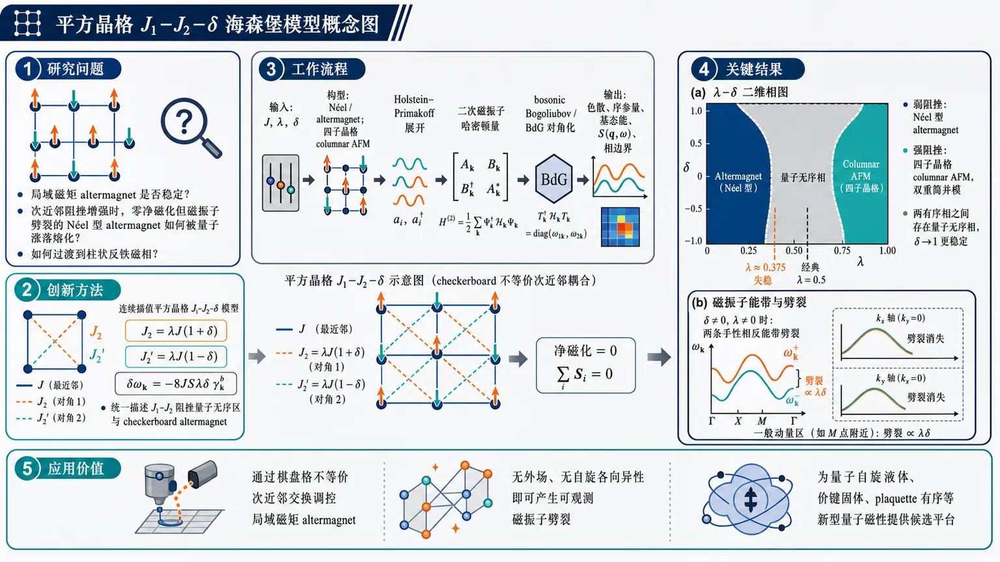
研究问题局域磁矩 altermagnet 在平方晶格磁阻挫中是否稳定：当次近邻反铁磁耦合逐渐增强、且两类对角耦合从均匀 J₁-J₂ 极限调到 checkerboard 极限时，零净磁化但磁振子劈裂的 Néel 型 altermagnet 会如何被量子涨落熔化，并如何过渡到柱状反铁磁相。创新方法提出可连续插值的平方晶格 J₁-J₂-δ 海森堡模型：用 λ 控制次近邻阻挫强度，用 δ 控制两类棋盘格 plaquette 对角耦合不等价性，形成从普通 J₁-J₂ 模型到 checkerboard altermagnet 的二维相图；Aha 点是把 altermagnet 的动量依赖磁振子劈裂公式 δωₖ₌₋₈JSλδγᵇₖ 与传统 J₁-J₂ 阻挫量子无序区放进同一框架。工作流程输入平方晶格自旋模型与参数 J、λ、δ；将两类次近邻耦合设为 J₂=λJ(1+δ)、J₂'=λJ(1-δ)；分别在两子晶格 Néel/altermagnet 构型和四子晶格 columnar antiferromagnet 构型上做 Holstein–Primakoff 展开；保留二次磁振子项，用 bosonic Bogoliubov 或 BdG 对角化得到磁振子色散；计算序参量、基态能、动态结构因子、自旋波速度与相边界；输出 λ-δ 相图，显示 altermagnet、量子无序相、柱状反铁磁相的连接关系。关键结果弱次近邻耦合区出现 Néel 型 altermagnet，δ≠0 且 λ≠0 时两条手性相反磁振子带劈裂，劈裂沿 kx、ky 轴消失、在其他动量区随 λδ 增强；线性自旋波下 altermagnet 序参量约在 λ≈0.375 失稳，早于经典转变点 λ=0.5；强次近邻耦合区形成四子晶格 columnar antiferromagnet，具有两条双重简并磁振子模；两种磁有序相之间存在量子无序相，且随着 δ→1 接近 checkerboard 极限，该无序区域进一步稳定。应用价值为寻找和调控局域磁矩 altermagnet 提供相图路线：通过设计棋盘格不等价次近邻交换，可在无外场、无自旋各向异性条件下产生可由非弹性中子散射观测的磁振子能带劈裂；同时指出强阻挫可把 altermagnet 熔化为量子无序态，为探索量子自旋液体、价键固体或 plaquette 有序等新型量子磁性提供候选平台。第一部分：核心概览 (Overview)
该研究构造并解析平方晶格 (J₁₋J₂₋δ) 海森堡模型，在 (J₁₋J₂) 模型与 checkerboard lattice 模型之间连续插值，揭示局域磁矩 altermagnet 在磁阻挫量子涨落下的稳定性。线性自旋波理论显示：弱次近邻耦合产生 Néel 型 altermagnet，强次近邻耦合产生 columnar antiferromagnet，中间存在量子无序相；且随 (δ→1) 接近棋盘晶格极限，该量子无序区进一步稳定。贡献在于把 altermagnet 的磁振子劈裂与经典 (J₁₋J₂) 挫折物理统一到同一相图框架中。
---
第二部分：结构化快速回顾
《J₁ - J₂ - δ model on a square lattice: From Altermagnet to Columnar antiferromagnet via quantum disordered phase》（None，）
背景
磁阻挫可增强量子涨落并摧毁传统磁有序。平方晶格 (J₁₋J₂) 反铁磁模型在 (J₂/J₁approx0.5) 附近具有经典简并和量子无序区。局域磁矩 altermagnet 在零净磁化、无自旋各向异性和无外场条件下仍可出现手性相反的磁振子能带劈裂。
方法
采用平方晶格 Heisenberg 模型，最近邻耦合 (J>0)，两类交替 plaquette 上的次近邻耦合为
[
J₂₌łambda J(1+δ),quad J₂'=łambda J(1-δ),
]
其中 (łambda>0) 控制次近邻平均强度，(δin[0,1]) 控制两类次近邻耦合差异。利用 large-(S) 线性自旋波理论计算磁振子色散、序参量、动静态结构因子与相边界。
结果
弱次近邻耦合 (łambda<1/2) 下，系统处于 Néel/altermagnet 相；当 (δ≠0) 且 (łambda≠0) 时，两条磁振子能带发生劈裂：
[
δømegaěc ₖ=-8JSłambdaδγ^běc ₖ.
]
LSWT 下 Néel/altermagnet 序参量量子修正对 (δ) 不敏感，并在 (łambdaapprox0.375) 附近失稳。强次近邻耦合 (łambda>1/2) 下出现 columnar antiferromagnet，磁单胞含 4 个自旋，产生两条双重简并磁振子模。
讨论
altermagnet 的磁振子劈裂来自两类次近邻耦合的不等价性，而非自旋各向异性或外场。LSWT 中若干低能量性质，如 AM 相的基态能、序参量修正、谱权重和零频局域自旋易感率，对 (δ) 不依赖；这种独立性被明确视为线性自旋波近似的结果，高阶磁振子相互作用预期会引入 (δ) 依赖。
局限
分析主要停留在线性自旋波理论，即 Gaussian fluctuations 层次；非线性自旋波修正、数值多体方法、有限自旋 (S=1/2) 的严格验证、量子无序相内部性质如 QSL、VBS、plaquette order 的判别仍未完成。提供内容在 IV.1 Order parameter 处截断，后续相图与结论细节不可完全核验。
结论
该模型把 Néel-type altermagnet、quantum disordered phase 与 columnar antiferromagnet 连续连接起来。随 (δ) 增大并趋向 checkerboard 极限，中间量子无序区增强，表明局域磁矩 altermagnet 在强阻挫下可被量子涨落熔化，并可能成为通向量子无序态甚至量子自旋液体的起点。
---
第三部分：逐章节冷凝解析 (Section-by-Section Condensing)
Abstract
- Altermagnetism in local-moment magnets
局域磁矩体系中的 altermagnetism 被定义为：总磁化为零，同时在无自旋各向异性相互作用、无外场时，手性相反的磁振子能带发生劈裂。摘要直接给出判据：*"Altermagnetism in the case of local-moment magnets is characterized by zero net magnetization and splitting of opposite chirality magnon bands in the absence of any spin-anisotropic interactions or external field."* 这一点区别于常规铁磁体的非零净磁化，也区别于依赖 Dzyaloshinskii–Moriya 相互作用或外磁场诱导的磁振子非简并。
- Robustness against frustration-driven quantum fluctuations
核心问题是 altermagnet 在磁阻挫诱导的量子涨落下是否稳定。摘要明确目标为：*"we investigate the robustness of altermagnets against quantum fluctuations arising from magnetic frustration."* 这里的“robustness”不是指热涨落稳定性，而是指由 frustrating second-neighbor interactions 引起的量子熔化风险。
- Interpolating square-lattice model
模型包含平方晶格最近邻相互作用和两类 checkerboard pattern 排列的次近邻相互作用，可在两个著名极限之间连续插值：*"We consider a Heisenberg model on a square lattice with two different types of second-neighbor interactions, as in a checkboard pattern, in addition to the nearest-neighbor interaction."* 以及 *"This model continuously interpolates between the (J₁₋J₂) Heisenberg model on the square lattice and the Heisenberg model on the checkerboard lattice."*
- Two magnetic phases and one intermediate disordered phase
弱次近邻耦合产生 Néel-type altermagnet，强次近邻耦合产生 columnar antiferromagnet：*"For weaker second-neighbor interactions a Néel-type altermagnet phase is realized. On the other hand, for stronger second-neighbor interactions a columnar antiferromagnet emerges."* 两者之间存在量子无序相：*"there is an intermediate quantum disordered phase separating the two magnetic phases."*
- Connection to the (J₁₋J₂) quantum disordered region
中间量子无序区并非孤立新相，而是与平方晶格 (J₁₋J₂) 模型中长期研究的无序区相连接：*"which is connected to the one realized in the (J₁₋J₂) model."* 随模型向 checkerboard 极限调节，无序区进一步增强：*"The quantum disordered region is further stabilized as we tune towards the checkerboard lattice limit."*
---
I Introduction
- Magnetic frustration as a route to quantum disorder
磁阻挫可产生强量子涨落并破坏传统磁有序，转而稳定量子无序相：*"Magnetic frustration often leads to strong quantum fluctuations, resulting in the destruction of conventional magnetic phases in favor of quantum disordered phases."* 这里的 quantum disordered phase 指无常规磁长程序、但由量子涨落而非热涨落驱动的零温态。
- Classical degeneracy as a source of exotic phases
局域磁矩系统中的经典基态简并能量流形是奇异量子态的重要来源：*"A classically degenerate ground-state energy manifold resulting from frustration in a local-moment system is often the source of exotic quantum phases, such as quantum spin liquids."* 关键逻辑是：阻挫导致大量经典态能量相同，量子涨落在这些态之间混合，从而可能产生 quantum spin liquid。
- Square-lattice (J₁₋J₂) model as a paradigm
平方晶格 (J₁₋J₂) 反铁磁模型是阻挫量子磁性研究的范式模型：*"One of the paradigmatic models where this has been long studied is the (J₁₋J₂) Heisenberg antiferromagnetic model on a square lattice."* 其完全阻挫点位于 (J₂/J₁₌₀.5)：*"Quantum fluctuations destroy the classical phases in the vicinity of the fully frustrated point, (J₂/J₁₌₀.5), which has a large classical degeneracy."*
- Historical LSWT result and later QSL/VBS debate
线性自旋波理论最早显示 (J₂/J₁approx0.5) 附近经典相被量子涨落摧毁：*"This was first shown using linear spin-wave theory."* 后续研究集中于该无序区是否包含 quantum spin liquid、valence-bond solid 或其他键/plaquette 有序：*"this model has attracted a lot of attention due to the possibility of a quantum spin-liquid phase in this quantum disordered region, apart from certain valence-bond solid phases."*
- Quantum disordered phases across frustrated models
中间量子无序相不局限于平方晶格 (J₁₋J₂)；三角晶格 (J₁₋J₂) 和阻挫立方晶格海森堡模型中也出现类似现象：*"Appearance of such an intermediate quantum disordered phase with possible quantum liquid, apart from magnetic long-range order, is also seen in other frustrated quantum models such as the (J₁₋J₂) Heisenberg model on the triangular lattice and Heisenberg model on a frustrated cubic lattice."*
- Altermagnetism as a new magnetic phase from frustration
阻挫不仅产生量子无序，也可产生新型磁相。Altermagnet 在电子体系中表现为动量空间某些区域的自旋劈裂，同时总磁化仍为零：*"where in the case of electronic systems the electron bands exhibit spin splitting in certain regions of the momentum space, while the net magnetization is still zero."*
- Local-moment altermagnets and magnon splitting
在局域磁矩语境中，altermagnet 的核心标志是无自旋各向异性相互作用时磁振子能带仍发生劈裂：*"Altermagnets, in the context of local moments, exhibit splitting of the magnon bands even in the absence of any spin-anisotropic interactions."* 这些劈裂磁振子还带有手性：*"Furthermore, these split magnon bands have an associated chirality."*
- Checkerboard Heisenberg antiferromagnet as a minimal model
checkerboard lattice 上的 Heisenberg 反铁磁体是研究局域磁矩 altermagnet 的最小自旋模型之一：*"One of the minimal spin models to study altermagnet is the Heisenberg antiferromagnet on a checkerboard lattice."* 早期工作已经报告磁振子劈裂：*"this model was studied long ago, and magnon splitting was already reported there."*
- Need to go beyond minimal altermagnet models
关键动机是理解量子涨落对 altermagnet 的影响，以及是否能从 altermagnet 产生量子无序相或 QSL：*"it is important to understand the role of quantum fluctuations in altermagnets and possible quantum phase transitions associated with it."* 以及 *"An interesting possibility is the emergence of a quantum disordered phase, particularly a quantum spin liquid, from an altermagnet."* 因此需要超越最小模型：*"It is therefore imperative to go beyond the scope of minimal model of altermagnets."*
- Large-(S) spin-wave strategy
研究采用 large-(S) 自旋波理论系统分析包含 altermagnet 与常规磁相的阻挫模型：*"By systematically studying quantum fluctuations within the large-(S) spin-wave theory, we show that this model hosts a quantum disordered phase in the vicinity of an altermagnet."*
---
II model
- Hamiltonian and interactions
模型为平方晶格最近邻海森堡相互作用加两类交替 plaquette 上的次近邻相互作用：
[
H=Jsumłₐₙgₗₑ ᵢⱼåₙgₗₑěc Sᵢḑotěc Sⱼ
+J₂sumłₐₙgₗₑłₐₙgₗₑ ᵢⱼåₙgₗₑåₙgₗₑěc Sᵢḑotěc Sⱼ
+J₂'sumłₐₙgₗₑłₐₙgₗₑ ᵢⱼåₙgₗₑåₙgₗₑ'ěc Sᵢḑotěc Sⱼ.
]
最近邻耦合为反铁磁 (J>0)：*"the first term is the nearest-neighbor (NN) Heisenberg interaction with (J>0)."* 两类次近邻相互作用位于交替方格上：*"There are two types of second-neighbor (NNN) Heisenberg interactions on alternating square plaquettes."*
- Parameterization by (łambda) and (δ)
两类次近邻耦合定义为：
[
J₂₌łambda J(1+δ),quad J₂'=łambda J(1-δ).
]
平均强度参数为：
[
łambda=(J₂₊J₂')/2J>0,
]
不均匀性参数为：
[
δ=(J₂₋J₂')/(J₂₊J₂')in[0,1].
]
原始定义为：*"The parameter (łambda=(J₂₊J₂')/2J>0) determines the relative strength of the second-neighbor interactions with respect to (J), and the parameter (δ=(J₂₋J₂')/(J₂₊J₂')in[0,1]) parametrizes the difference between the two types of second-neighbor interactions."*
- Interpolation between two known limits
(δ=0) 时，模型退化为平方晶格 (J₁₋J₂) 海森堡模型；(δ=1) 时，退化为 checkerboard lattice 海森堡模型：*"the parameter (δ) leads to interpolation between the (J₁₋J₂) Heisenberg model on a square-lattice ((δ=0)) and the Heisenberg model on a checkerboard lattice ((δ=1))."*
- Previously studied altermagnet regime
该模型已在 (łambda<1/2) 的 altermagnet 语境中被研究，但完整 ((łambda,δ)) 相图尚缺：*"This model has been recently studied in the context of altermagnets, for (łambda<1/2)."* 以及 *"However, a thorough analysis as a function of (łambda) and (δ) has not been done to our knowledge."*
- Known (δ=0) phase structure
在 (δ=0) 的平方晶格 (J₁₋J₂) 模型中，已知相结构为：当 (łambdałesssim0.4)，出现 Néel 反铁磁相， ordering wavevector 为 (ěc Q_N=(π,π))；当 (łambdagtrsim0.5)，出现 columnar antiferromagnetic phase， ordering wavevector 为 (ěc Q_C=(0,π)) 或 (ěc Q_C'=(π,0))。原文给出：*"for (łambdałesssim0.4) the model realizes a Néel antiferromagnetic phase with an ordering wavevector, (ěcQN=(π,π)), while for (łambdagtrsim0.5) the model has a columnar antiferromagnetic (CAF) phase with ordering wavevector, (ěcQC=(0,π)) or (ěcQprⁱmeC=(π,0))."*
- Known intermediate quantum disordered region at (δ=0)
(łambdaapprox1/2) 附近存在量子无序相，并与 QSL、dimer、plaquette 相候选有关：*"The intermediate region around (łambdaapprox1/2) is a quantum disordered phase and has been a subject of continued interest in the context of quantum spin liquids (QSLs)."* 以及 *"Different bond-operator perturbation theory and numerical results indicate the presence of a QSL phase, along with possible other dimer or plaquette phases in this intermediate region around (łambdaapprox1/2)."*
- Known (δ=1) checkerboard limit
(δ=1) 时，第三项消失，模型成为 checkerboard lattice 海森堡模型：*"At (δ=1) the third term in Eq. (1) vanishes, resulting in the Heisenberg model on a checkerboard lattice."* 已知该模型在 (łambdałesssim0.375) 有反铁磁序，在 (łambdagtrsim0.375) 进入量子无序相：*"shown to host antiferromagnetic order for (łambdałesssim0.375) with a quantum disordered phase for (łambdagtrsim0.375)."*
- Magnon splitting in checkerboard limit
checkerboard 模型早期已识别有限 (łambda) 下的磁振子能带劈裂：*"it was already identified that for finite (łambda) there is a splitting in the magnon bands."* 现代术语将该相称为 altermagnet：*"In the more recent terminology, this phase is labeled as an altermagnet (AM)."*
- Study objective and phase diagram
目标是使用 LSWT 系统研究不同 (łambda) 与 (δ) 下的相图：*"we systematically study the model in Eq. (1) for different values of (δ) and (łambda) using the linear spin-wave theory, and plot the phase diagram."* 主要预期为：*"the intermediate quantum disordered phase present in the (J₁₋J₂) Heisenberg model is further stabilized upon increasing (δ)."*
---
III Altermagnet phase
- Regime of the AM/Néel phase
Altermagnet phase 在 (łambda<1/2) 区间讨论：*"we discuss the spin-wave theory of the Altermagnet phase realized for (łambda<1/2)."* 该相从两子晶格 Néel 构型出发，A、B 子晶格自旋反向排列。
- Two-sublattice Holstein–Primakoff transformation
A 子晶格以向上自旋为参考，B 子晶格以向下自旋为参考，引入 bosonic magnon operators (a,b)：*"where (a,b) ((a^dagger,b^dagger)) are bosonic magnon annihilation (creation) operators on the two sublattices respectively."* 变换适用于任意自旋大小：*"The transformation is written for an arbitrary value of (S)."*
- Large-(S) expansion and LSWT
平方根算符可按 (1/S) 展开， leading order 即线性自旋波理论：*"in the limit of large-(S), the square-roots in Eq. (2) can be expanded order by order in powers of (1/S), thus leading to a systematic (1/S) spin-wave expansion."* 以及 *"The leading order terms in this expansion constitute the linear spin-wave theory (LSWT)."*
- Classical energy in AM phase
二次展开中的经典能量为：
[
H₀₌₋₄NJ(1-łambda)S².
]
该项显示 AM/Néel 相经典能量随 (łambda) 增大而上升，且在该表达式中不含 (δ)。
- Quadratic magnon Hamiltonian
代入 LSWT 后得到关于磁振子算符的二次 Hamiltonian：*"Substituting the transformation in Eq. (3) into Eq. (1), we obtain the following Hamiltonian that is quadratic in magnon operators."* 次近邻方向定义为：
[
δₓy=hat x+hat y,quad δ'ₓy=hat x-hat y,
]
原文说明：*"where, (δₓyequivhatx+haty) and (δprⁱmeₓyequivhatx-haty) are the directions along the second neighbors."*
- Momentum-space Hamiltonian and form factors
Fourier 变换后：
[
fracH₂ₖS=suměc ₖ
łeft[Jaaa^daggerěc ₖaěc ₖ
+Jbbb^daggerěc ₖběc ₖ
+Jab(a^daggerěc ₖb^daggerěc ₖ+aěc ₖběc ₖ)i̊ght].
]
其中
[
Jaa=4J[1+łambda(γ^aěc ₖ-1)+łambdaδγ^běc ₖ],
]
[
Jbb=4J[1+łambda(γ^aěc ₖ-1)-łambdaδγ^běc ₖ],
]
[
Jab=4Jγěc ₖ.
]
结构因子为：
[
γěc ₖ=(o̧s kₓ₊ₒ̧s k_y)/2,
]
[
γ^aěc ₖ=[o̧s(kₓ₊ₖ_y)+o̧s(kₓ₋ₖ_y)]/2,
]
[
γ^běc ₖ=[o̧s(kₓ₊ₖ_y)-o̧s(kₓ₋ₖ_y)]/2.
]
- Bosonic Bogoliubov diagonalization
Hamiltonian 通过 bosonic Bogoliubov transformation 对角化：*"The Hamiltonian in Eq. (6) can be straightforwardly diagonalized using Bosonic Bogoliubov transformation."* 变换为
[
aěc ₖ=uěc ₖαěc ₖ+věc ₖβ^daggerěc ₖ,quad
běc ₖ=uěc ₖβěc ₖ+věc ₖα^daggerěc ₖ.
]
系数满足
[
uěc ₖ²⁻věc ₖ²⁼¹,
]
原文写明：*"Note that (uěcₖ²-věcₖ²=1), which makes this transformation anti-unitary."*
- Two magnon branches
两条磁振子色散为：
[
ømega₁ěc ₖ=fracS2łeft[Jaa-Jbb+
sqrt(Jaa+Jbb)²⁻⁴⁽Jab)²i̊ght],
]
[
ømega₂ěc ₖ=fracS2łeft[Jbb-Jaa+
sqrt(Jaa+Jbb)²⁻⁴⁽Jab)²i̊ght].
]
结果与先前 altermagnet 研究一致：*"consistent with Refs. [6,7]."*
- Condition for magnon band splitting
只要 (δ≠0) 且 (łambda≠0)，通常存在两个不同磁振子模；当 (δ=0) 或 (łambda=0) 时两条模简并：*"generically for any finite value of (δ) and (łambda) there are two distinct magnon modes. At (δ=0) or (łambda=0) the two magnon modes are degenerate."*
- Goldstone modes and gapless points
由于连续自旋旋转对称性自发破缺，出现 gapless Goldstone modes：*"As expected from spontaneous breaking of the continuous spin-rotation symmetry, there are gapless Goldstone modes."* 在 (ěc k=(0,0)) 与 (ěc k=(π,π))，有
[
γěc ₖ=±1,quad γ^aěc ₖ=1,quad γ^běc ₖ=0,
]
导致
[
Jaa=Jbb=|Jab|,
]
因而 gapless：*"At (ěck=(0,0)) and (ěck=(π,π)), (γěcₖ=±1, γaěcₖ=1) and (γběcₖ=0) leading to (Jaa=Jbb=|Jab|), and thus resulting in gapless modes."*
- Explicit magnon splitting formula
磁振子劈裂为：
[
δømegaěc ₖequivømega₂ěc ₖ-ømega₁ěc ₖ
=S(Jbb-Jaa)=-8JSłambdaδγ^běc ₖ.
]
该劈裂除 (kₓ) 与 (k_y) 轴外通常非零：*"which is non-zero, except along the (kₓ) and (k_y) axes."* 劈裂随 (łambda) 或 (δ) 增大而增强：*"the splitting increases with increasing (łambda) or (δ)."*
- Spin-wave velocity in AM phase
AM 相的自旋波速度为：
[
c=2JSsqrt2-4łambda.
]
它在 LSWT 中既不依赖 (δ)，也不依赖 Brillouin zone 中方向：*"the spin-wave velocity is independent of (δ) as well as the direction in the Brillouin zone."* 在经典转变点 (łambda=1/2) 处速度消失：*"the magnon velocity vanishes at the classical transition point, (łambda=1/2)."*
- LSWT limitation of velocity result
自旋波速度对 (δ) 的独立性很可能只是 LSWT 结果：*"this is likely a LSWT result only, and non-linear corrections are expected to render corrections to it."* 这意味着高阶 magnon–magnon interactions 可能改变速度各向同性和 (δ) 依赖性。
- Ground-state energy independence from (δ)
AM 相 LSWT 基态能为：
[
E₀₌
fracS2suměc ₖ
łeft[-(Jaa+Jbb)+
sqrt(Jaa+Jbb)²⁻⁴⁽Jab)²i̊ght]
-4NJ(1-łambda)S².
]
该表达式不含 (Jaa-Jbb)，因此不依赖 (δ)。原文明确写道：*"which is again independent of (δ)."*
---
III.1 Order parameter
- Definition of AM/Néel order parameter
AM 相由交错磁化表征：
[
m_N=frac1Nsumᵢ
fracłangle S^zAᵢångle-łangle S^zBᵢångle2.
]
原文定义为：*"The AM phase is characterized by staggered magnetization."* 经典极限为：
[
m_N=S,
]
即 *"Classically, (m_N=S)."*
- Gaussian fluctuation correction
LSWT 下序参量为：
[
m_N=S-Δ m_N
=S-intBZfracděc k(2π)²věc ₖ²,
]
等价于
[
m_N=S-frac12intBZfracděc k(2π)²
łeft[
fracS(Jaa+Jbb)ømega₁ěc ₖ+ømega₂ěc ₖ-1
i̊ght].
]
计算对象是 leading correction：*"Below we calculate the leading corrections to order parameter, i.e., include Gaussian fluctuations."* 积分覆盖完整晶格 Brillouin zone：*"where the momentum integral is over the full lattice Brillouin zone."*
- Magnon excitations as source of correction
序参量量子修正来源于磁振子激发：*"The source of these quantum corrections are magnon excitations."* 尽管 (δ≠0) 会造成两条不同色散，LSWT 中序参量修正却与 (δ) 无关：*"for finite value of (δ) there are two distinct magnon modes and the dispersion relation depends on (δ). However, we find that the quantum correction, (Δ m_N), is independent of (δ) at the LSWT order."*
- No additional LSWT consequence of AM splitting for order parameter
在 LSWT 量子修正层次，altermagnet 的磁振子劈裂对序参量没有额外影响，与 (δ=0) 的普通 Néel antiferromagnet 相同：*"Thus in the view of quantum corrections at this level, the magnon splitting in altermagnet has no additional consequence compared to the usual Néel antiferromagnet phase realized at (δ=0)."* 这一观察与近期工作一致：*"This fact was also noted recently in Ref. [6]."*
- Instability of AM phase
AM 相在 LSWT 下于
[
łambdaapprox0.375
]
失稳，且与 (δ) 无关：*"We find that the AM phase becomes unstable at (łambdaapprox0.375), independent of (δ)."* 这表明从序参量消失角度估计的 AM 稳定边界低于经典边界 (łambda=1/2)。
- Likely LSWT artifact
AM 序参量对 (δ) 不敏感可能只是线性自旋波近似的人为结果：*"This is probably an effect only at the linear spin-wave theory level, and most likely the quantum corrections will depend on (δ) upon including higher-order corrections."*
---
III.2 Dynamic spin structure factor
- Definition and experimental relevance
动态自旋结构因子可由非弹性中子散射测量：*"the dynamic spin structure factor, which is accessible in inelastic neutron scattering experiment."* 定义为：
[
mathcal S(ěc k,ømega)=
frac12π Nₛ
sumᵢⱼint₋ᵢₙfₜyⁱⁿftydt,
eⁱ⁽ømega t⁻ěc kḑot⁽ěc rᵢ₋ěc rⱼ₎₎
łangleěc Sᵢ₍ₜ₎ḑotěc Sⱼ₍₀₎ångle,
]
其中总自旋数为：
[
Nₛ₌₂N.
]
原文写明：*"where (Nₛ₌₂N) is the total number of spins."*
- Two delta-function magnon peaks at (T=0)
AM 相在 (T=0) 下的动态结构因子由两条单磁振子峰组成：
[
mathcal S(ěc k,ømega)=
Z₁ěc ₖδ(ømega-ømega₁ěc ₖ)
+Z₂ěc ₖδ(ømega-ømega₂ěc ₖ).
]
原文给出：*"In the AM phase, at (T=0), we obtain"* 后接该表达式。两条峰分别对应劈裂后的两条磁振子模。
- Equal spectral weights for two modes
两条磁振子模的谱权重相同：
[
Z₁ěc ₖ=Z₂ěc ₖ
=2Ssqrt{
fracJaa+Jbb-2Jab
Jaa+Jbb+2Jab
}.
]
原文直接写为：*"From the above expressions we see that the spectral weight is independent of (δ) and it is same for both the magnon modes."*
- LSWT artifact in spectral weight
谱权重对 (δ) 的独立性也可能只是 LSWT 结果；加入磁振子相互作用后会出现 (δ) 依赖：*"This is again most likely an effect only at the LSWT level and the spectral weight is expected to vary with (δ) when magnon-magnon interactions are taken into account."*
- Ordering wavevector peak and Gamma-point suppression
动态结构因子谱权重在 ordering wavevector
[
ěc Q_N=(π,π)
]
处最大，在
[
Γ=(0,0)
]
处消失：*"As expected, the maximum spectral weight is at the ordering wavevector, (ěcQN=(π,π)), while it vanishes at the (Γequiv(0,0)) point, which is the other gapless point."* 这体现了 Néel/AM 长程序的动量选择性。
- Magnon splitting visible in dynamic structure factor
当 (δ=0) 时，两条磁振子模简并；当 (δ≠0) 时，动态结构因子中可见能带劈裂：*"At (δ=0) the magnon modes are degenerate while they split for (δ≠0)."* 图 5 使用 (łambda=0.2)，比较 (δ=0) 与 (δ=0.5)。
- Local spin susceptibility
局域自旋易感率通过对动量积分得到：
[
mathcal S(ømega)=intBZděc k,mathcal S(ěc k,ømega).
]
原文定义为：*"The local spin susceptibility is obtained from the dynamic spin structure factor as follows."*
- Analytic zero-frequency value
一般 (mathcal S(ømega)) 需数值计算，但在 (ømega=0)，贡献来自
[
ěc k=(0,0),quad ěc k=(π,π),
]
因此可解析得到：
[
mathcal S(0)=frac4πJ(1-2łambda).
]
原文说明：*"In general, this needs to be calculated numerically but at (ømega=0) the contributing points are (ěck=(0,0)) and (ěck=(π,π)) making it straightforward to evaluate analytically."*
- Low-frequency behavior and (δ) independence
低频局域自旋易感率不依赖 (ømega)，这符合磁有序相预期：*"For low frequencies, the local spin susceptibility is independent of (ømega), as expected for a magnetically ordered phase."* 零频结果同样不依赖 (δ)：*"Note that the local spin susceptibility is again (δ) independent at (ømega=0)."*
---
IV Columnar phase
- CAF regime and four-sublattice magnetic unit cell
对 (łambda>1/2) 的 columnar antiferromagnetic phase 进行分析：*"We now turn our attention to the CAF phase realized for (łambda>1/2)."* 该相磁单胞包含 4 个自旋：*"the magnetic unit cell now contains 4 spins."* 子晶格标记为 A, B, C, D。
- Four-sublattice Holstein–Primakoff transformation
CAF 相需要四组 bosonic operators (a,b,c,d)，其中 A、D 以向上自旋为参考，B、C 以向下自旋为参考。原始完整 HP 变换后，LSWT 中简化为：*"we work within the LSWT in which the above transformation simplifies to the following."* 这一步将平方根截断为 (sqrt2S) 的 leading order。
- Classical CAF energy
CAF 相经典能量为：
[
H₀₌₋₈NJłambda S².
]
与 AM 相的
[
H₀₌₋₄NJ(1-łambda)S²
]
相比，二者在经典层面于 (łambda=1/2) 相交，解释了 classical transition point。
- Quadratic Hamiltonian in real space
LSWT 得到四子晶格二次磁振子 Hamiltonian：*"Following the same steps as in the earlier section we obtain the Hamiltonian in terms of magnon operators at the quadratic level."* 最近邻项包含 A–B、C–D 的 pairing 型项，以及 A–D、C–B 的 hopping 型项；次近邻项包含 A–C、B–D 的 pairing 型项，其系数含 (łambda(1+δ)) 与 (łambda(1-δ))。
- Momentum-space CAF Hamiltonian
Fourier 变换后：
[
fracH₂ₖJS
=
suměc ₖ4łambda
(a^dagger a+b^dagger b+c^dagger c+d^dagger d)
+ḑots
]
其中最近邻方向产生
[
2o̧s kₓ₍ₐ^dagger d+c^dagger b),
quad
2o̧s k_y(a^dagger b^dagger+c^dagger d^dagger),
]
次近邻 pairing 为
[
4łambda(γ^aěc ₖ-δγ^běc ₖ)a^dagger c^dagger,
quad
4łambda(γ^aěc ₖ+δγ^běc ₖ)b^dagger d^dagger.
]
- Bogoliubov–de Gennes form
CAF Hamiltonian 写成 BdG 形式：
[
fracH₂ₖJS=suměc ₖψ^daggerěc ₖhěc ₖψěc ₖ-8łambda N,
]
其中
[
ψ^daggerěc ₖ=(b^daggerěc ₖ,c^daggerěc ₖ,aěc ₖ,děc ₖ),
]
[
hěc ₖ=
beginbmatrix
h₁ěc ₖ&h₂ěc ₖ
h^dagger₂ěc ₖ&h₁ěc ₖ
endbmatrix.
]
子块为
[
h₁ěc ₖ=4łambdamathbbm1+2o̧s kₓσ₁,
]
[
h₂ěc ₖ=2o̧s k_ymathbbm1+4łambdaγ^aěc ₖσ₁
+i4łambdaδγ^běc ₖσ₂.
]
- Non-Hermitian eigenvalue problem
磁振子色散由非厄米矩阵
[
Σ hěc ₖ,quad Σ=diag(1,1,-1,-1)
]
的本征值给出：*"The magnon mode dispersion is given by the eigenvalues of the non-hermitian matrix (Σ hěcₖ), where (Σ=diag(1,1,-1,-1)), which follows from the anti-unitary Bogoliubov transformation."*
- Two doubly degenerate magnon modes
CAF 相一般有两条不同但各自双重简并的磁振子模：*"generically for any value of (δ) and (łambda) there are two distinct doubly degenerate magnon modes owing to the different sublattices in the magnetic unit cell."* 这不同于 AM 相中的 altermagnetic splitting；图 7 标注为：*"Unlike the Altermagnet case there is no magnon band splitting here. The two magnon modes seen here are simply the consequence of larger magnetic unit cell."*
- Gapless points in CAF phase
自旋旋转对称性自发破缺导致 ordering wavevector
[
ěc Q_c=(0,π)
]
处有 Goldstone mode：*"As expected from spontaneous breaking of spin-rotation symmetry there is a gapless Goldstone mode at the ordering wavevector ((ěcQc=(0,π)))."* 此外在
[
Γ,quad ěc Q_N=(π,π),quad ěc Q_c'=(π,0)
]
也有 gapless modes：*"In addition there are gapless modes at the (Γ) point, (ěcQN=(π,π)) and (ěcQcprⁱme=(π,0))."*
- Directional and (δ)-dependent velocities
与 AM 相不同，CAF 相两条模的磁振子速度一般不同，且依赖 Brillouin zone 方向和 (δ)：*"Unlike the AM case, here the magnon velocities are different for the two modes and importantly in general depend on the direction in the BZ as well as (δ)."*
- Velocity softening at classical transition and checkerboard limit
在 classical transition point (łambda=1/2)，lower magnon band 沿 (ěc Q_c-Γ) 与 (ěc Q_c'-Γ) 路径的速度消失：*"At the classical transition point, (łambda=1/2), the magnon velocity of the lower magnon band along the (ěcQc-Γ) and (ěcQprⁱmec-Γ) paths vanishes."* lower band 速度也在 (δ=1) 时消失：*"The magnon velocity of the lower band also vanishes at (δ=1)."*
- Velocities near (ěc Q_c)
在 (ěc Q_c) 附近，两条模沿 (kₓ) 的速度相同，沿 (k_y) 的速度不同：
[
věc Q_c₁,₂ₓ=2JSsqrt4łambda²⁻¹,
]
[
věc Q_c₁,₂y=2JS(2łambdamp1).
]
原文说明：*"Around (ěcQc), the magnon velocities of the two bands along (kₓ) are identical, whereas they are different along the (k_y) direction."* 这些速度不依赖 (δ)：*"However, these are independent of (δ)."*
- Velocities near (Γ)
在 (Γ) 附近，沿 (Γ-ěc Q_N) 路径的磁振子速度依赖 (δ)：
[
v^Γ₁,₂ₓy
=
2sqrt2JS
sqrt{
2łambda²
±
łambdasqrt4łambda²δ²⁻δ²⁺¹
}.
]
原文写明：*"Around the (Γ) point, the magnon velocities are (δ) dependent along the (Γ-ěcQN) path."*
- CAF ground-state energy
CAF 相 LSWT 基态能为：
[
E₀₌₋₈Jłambda NS(1+S)+JSsuměc ₖ(ømega₁ěc ₖ+ømega₂ěc ₖ).
]
该表达式包含两条磁振子模的零点能贡献。
---
IV.1 Order parameter
- CAF order parameter definition
CAF 相序参量定义为四子晶格交错组合：
[
mCAF
=
frac1Nsumᵢ
frac{
łangle S^zAᵢångle
-łangle S^zBᵢångle
-łangle S^zCᵢångle
+łangle S^zDᵢångle
}4,
]
也即：
[
mCAFequivfracm_A-m_B-m_C+m_D4.
]
原文定义为：*"The CAF phase is characterized by the order parameter."*
- Gaussian fluctuation correction through Bogoliubov coefficients
序参量 leading correction 由 BdG Bogoliubov 变换矩阵元素 (tᵢⱼ(k)) 决定：*"Below we calculate the leading corrections to order parameter, i.e., include Gaussian fluctuations. In terms of the Bogoliubov coefficients."* 四个子晶格磁化分别为：
[
m_A=S-frac1π²int₋π/₂π/²dkₓ
int₋π/₂π/²dk_y
[t²₃₁(k)+t²₃₂(k)],
]
[
m_B=S-frac1π²int₋π/₂π/²dkₓ
int₋π/₂π/²dk_y
[t²₁₃(k)+t²₁₄(k)],
]
[
m_C=S-frac1π²int₋π/₂π/²dkₓ
int₋π/₂π/²dk_y
[t²₂₃(k)+t²₂₄(k)],
]
[
m_D=S-frac1π²int₋π/₂π/²dkₓ
int₋π/₂π/²dk_y
[t²₄₁(k)+t²₄₂(k)].
]
- Reduced Brillouin zone integration
CAF 磁单胞扩大为 4 个自旋，因此动量积分范围为 reduced Brillouin zone：
[
kₓ,k_yin[-π/2,π/2].
]
这与 AM 相中 full lattice Brillouin zone 积分形成对比，反映了 CAF 相空间周期加倍与四子晶格结构。
- Available text truncation
IV.1 在句子 *"Unlike the altermagnet phase, here the qua"* 后中断。可核验内容只包括 CAF 序参量定义及其通过 Bogoliubov 系数表达的高斯涨落修正；CAF 序参量随 (łambda,δ) 的数值结果、失稳边界和完整相图细节未出现在可用文本中。
---
第四部分：深度理解与语言支持 (Understanding & Nuance)
1. 术语解析
Altermagnetism
Altermagnetism 不是普通反铁磁性，也不是弱铁磁性。局域磁矩语境下，它满足零净磁化，但磁振子能带仍劈裂。关键表达是：*"zero net magnetization and splitting of opposite chirality magnon bands in the absence of any spin-anisotropic interactions or external field."*
微妙点在于：能带劈裂不是由 spin-orbit coupling、DMI、外场或各向异性引起，而是由晶格/交换网络中子晶格对称性导致。
Quantum disordered phase
Quantum disordered phase 指零温量子涨落摧毁磁长程序后的相。它不等同于热无序态。文中语境是 magnetic frustration 造成大量低能竞争态，从而让传统 Néel 或 CAF 有序失稳。该相可能包含 QSL、VBS、dimer 或 plaquette order，但 LSWT 只能通过序参量消失或速度软化提示其存在，不能精确判别其内部拓扑或对称性破缺类型。
Magnon band splitting
Magnon band splitting 指两条原本简并的磁振子色散变为不同能量：
[
δømegaěc ₖ=-8JSłambdaδγ^běc ₖ.
]
“Splitting” 在这里不是 Zeeman splitting；没有外场，也没有自旋各向异性。其动量依赖性由 (γ^běc ₖ) 控制，因此沿 (kₓ)、(k_y) 轴为零，在其他区域非零。
Columnar antiferromagnet
Columnar antiferromagnet 是平方晶格上具有条纹/柱状排列的反铁磁相，ordering wavevector 为
[
ěc Q_C=(0,π)quad orquad ěc Q_C'=(π,0).
]
“Columnar” 强调一个方向上自旋排列呈同向列状，另一个方向反向交替。该相磁单胞包含 4 个自旋，导致两条双重简并磁振子模。
Linear spin-wave theory
LSWT 是 large-(S) 展开的一阶近似，仅保留二次磁振子 Hamiltonian，即自由磁振子。文中多次指出若干结果可能只是 LSWT 层次成立，例如 AM 相中序参量修正、谱权重和自旋波速度对 (δ) 的独立性。加入高阶项后，magnon–magnon interactions 会改变这些结论。
---
2. 疑难查证
为什么 AM 相中有磁振子劈裂，但序参量修正却不依赖 (δ)？
AM 相的两条色散为：
[
ømega₁,₂=
fracS2
łeft[
±(Jaa-Jbb)
+
sqrt(Jaa+Jbb)²⁻⁴⁽Jab)²
i̊ght].
]
(δ) 只进入
[
Jaa-Jbb=8Jłambdaδγ^běc ₖ,
]
因此它控制两条分支的相对上移/下移，即 splitting。
但序参量修正包含的是
[
ømega₁ěc ₖ+ømega₂ěc ₖ
=
Ssqrt(Jaa+Jbb)²⁻⁴⁽Jab)².
]
两条分支求和后，(±(Jaa-Jbb)) 抵消；而
[
Jaa+Jbb=8J[1+łambda(γ^aěc ₖ-1)]
]
不含 (δ)。因此 LSWT 下序参量修正不依赖 (δ)。这不是深层对称性必然结果，而是二次自由磁振子近似中的代数抵消。
为什么 (łambda=1/2) 是 classical transition point，但 AM 序参量在 (łambdaapprox0.375) 已失稳？
经典能量比较：
[
Eₘ̊ AMcl=-4NJ(1-łambda)S²,
]
[
Eₘ̊ CAFcl=-8NJłambda S².
]
二者相等时：
[
-4(1-łambda)=-8łambda
Rightarrow
łambda=1/2.
]
因此经典理论预测 AM/Néel 与 CAF 在 (łambda=1/2) 竞争。
量子情况下，靠近强阻挫区域时低能磁振子大量软化，序参量量子修正 (Δ m_N) 增大。当
[
m_N=S-Δ m_N
]
降为零时，磁长程序已被量子涨落摧毁。LSWT 得到 AM 相在
[
łambdaapprox0.375
]
失稳，早于经典相交点。物理含义是：系统没有直接从 AM 跳到 CAF，而是先进入 quantum disordered phase。
为什么 CAF 相的两条模不是 altermagnetic splitting？
AM 相只有两子晶格，(δ≠0) 使 A/B 子晶格的有效二次项不同，即
[
Jaa≠ Jbb,
]
导致同一磁单胞背景下的 altermagnetic magnon splitting。
CAF 相的磁单胞本身包含 4 个自旋，因此 BdG Hamiltonian 的自由度增加。图注明确说明：*"Unlike the Altermagnet case there is no magnon band splitting here. The two magnon modes seen here are simply the consequence of larger magnetic unit cell."*
因此 CAF 中的两条模主要是 band folding / 多子晶格结构的结果，不是 AM 意义上的手性相反磁振子劈裂。
为什么 (δ=1) 会增强量子无序？
(δ=1) 时：
[
J₂'=0,quad J₂₌₂łambda J,
]
模型变为 checkerboard lattice 海森堡模型。已知该极限中反铁磁序只稳定到
[
łambdałesssim0.375,
]
之后进入量子无序相。随着 (δ) 增大，次近邻耦合更不均匀，局域 plaquette/checkerboard 型阻挫结构增强，使 Néel/AM 和 CAF 的半经典稳定性下降。因此摘要中的结论为：*"The quantum disordered region is further stabilized as we tune towards the checkerboard lattice limit."*
---
第五部分：创新评估与关联 (Synthesis & Novelty)
1. 创新性判断
Unified interpolation between (J₁₋J₂) frustration and local-moment altermagnetism
近年 altermagnet 研究多集中于最小 checkerboard 模型或 (łambda<1/2) 的 altermagnetic magnon splitting。该工作把 (δ=0) 的平方晶格 (J₁₋J₂) 阻挫模型与 (δ=1) 的 checkerboard altermagnet 极限放在同一 Hamiltonian 中：
[
J₂₌łambda J(1+δ),quad J₂'=łambda J(1-δ).
]
新颖性在于同时调控 阻挫强度 (łambda) 与 交换不等价性 (δ)，不再只讨论单一 altermagnet 极限。
Altermagnet-to-CAF transition is mediated by quantum disorder
过去 (J₁₋J₂) 文献已知 Néel 与 CAF 之间存在 quantum disordered region；近年 altermagnet 文献强调磁振子劈裂与 chirality。该研究把二者连接起来，显示从 Néel-type altermagnet 到 columnar antiferromagnet 之间不是简单直接转变，而存在中间量子无序相。核心结论是：*"there is an intermediate quantum disordered phase separating the two magnetic phases."*
Checkerboard tuning stabilizes quantum disorder near altermagnet
关键新发现是：随 (δ) 增大并靠近 checkerboard 极限，量子无序区进一步稳定。该点把“altermagnet 是否可被量子涨落熔化”从概念问题转化为相图问题。摘要结论为：*"The quantum disordered region is further stabilized as we tune towards the checkerboard lattice limit."*
Explicit LSWT diagnosis of magnon splitting versus quantum corrections
AM 相的磁振子劈裂公式
[
δømegaěc ₖ=-8JSłambdaδγ^běc ₖ
]
给出非常清晰的动量结构：沿 (kₓ,k_y) 轴无劈裂，其余动量区域劈裂随 (łambdaδ) 增强。与此同时，LSWT 下序参量修正、谱权重、基态能、零频局域自旋易感率均对 (δ) 不敏感。这一反直觉结果区分了“可观测能带劈裂”和“自由磁振子层次的有序稳定性修正”。
Clarification of CAF magnon bands versus altermagnetic splitting
CAF 相中出现两条双重简并磁振子模，但这不是 altermagnetic splitting，而是四子晶格磁单胞导致的结果。图注明确给出：*"Unlike the Altermagnet case there is no magnon band splitting here. The two magnon modes seen here are simply the consequence of larger magnetic unit cell."* 该区分有助于避免把任意多分支磁振子谱误判为 altermagnetism。
Open problem left for near-future work
LSWT 只能定位磁有序失稳，不能判定中间量子无序相究竟是 QSL、VBS、dimer phase 还是 plaquette phase。该工作解决了“altermagnet 与阻挫量子无序区如何连接”的问题，但尚未解决“中间相的精确量子性质”。后续需要 DMRG、PEPS、QMC 若无符号问题、series expansion、Schwinger boson mean-field 或高阶自旋波理论来判别。
-
19
📄 摘要：ARGO 智能眼镜把 STM32N6 微控制器与集成 NPU 结合，在端侧运行优化后的 YOLOv11，实现全传感、低时延和本地隐私保护的机器学习推理，体现硬件-固件-模型协同设计。
💡 亮点：ARGO 把 NPU 放进智能眼镜，实现 YOLOv11 端侧推理和隐私本地化。是硬件-固件-模型协同的可穿戴 AI 样板。
📖 展开分析 + 配图
研究问题如何在眼镜这样极小、轻量、低电池容量的可穿戴形态中，同时实现多模态感知、本地视觉 AI 推理、隐私保护、低延迟与可接受续航；核心矛盾是“智能眼镜空间不足 5 cm³、200 mAh 小电池、有限散热”与“实时目标检测和丰富传感器”之间的冲突。创新方法提出 ARGO 全传感智能眼镜平台，将 STM32N6 MCU、片上 NPU、RGB/ToF/IMU/麦克风/环境传感器、柔性 PCB、电源轨控制、裸机固件状态机和 YOLOv11 部署联合设计；关键 Aha 点是 Head-wise Parallel Attention（HPA）把注意力结构改造成 NPU 友好的并行执行图，使模型不是单纯压缩，而是适配微控制器 NPU 的算子、张量秩和缓冲限制。工作流程前置 RGB 相机以快照模式采集城市行人视角图像 → MIPI CSI-2 传入 STM32N6 → DCMIPP/ISP 完成缩放、去马赛克、色彩校正、白平衡和通道格式转换 → 量化优化后的 YOLOv11 在片上 NPU 执行障碍物检测 → 后处理生成目标类别与位置 → UART 发送至 BLE MCU → 手机或调试端向用户提示周围障碍物；系统由 BLE 命令或镜腿按钮启动，并通过电源状态机控制相机与传感器能耗。关键结果在 41 g 级眼镜原型中，部署 YOLOv11 模型内存占用仅 2.483 MB，在 WOTR 城市障碍物数据集上达到 mAP50–95 = 24%；系统实现连续 10 FPS 本地视觉推理，并在 200 mAh 电池上运行约 113 分钟；电子系统含电池低于整机质量 20%，证明端侧 AI 眼镜可在小电池和轻量外形内工作。应用价值为隐私敏感、低延迟、离线可用的智能眼镜提供系统级范式，可用于盲人/行人辅助导航、城市障碍物提醒、手势识别、SLAM、人体姿态估计和环境感知；其价值在于让图像数据留在眼镜本体，不依赖云端或手机外接加速器，更接近日常可佩戴的边缘 AI 设备。第一部分：核心概览
ARGO 是一套面向智能眼镜端侧机器学习的全传感平台，核心贡献在于把硬件、固件、传感器、电源管理与 YOLOv11 部署进行协同设计。平台基于 STM32N6 MCU + 集成 NPU，在 200 mAh 电池下实现 10 FPS、约 113 分钟续航，YOLOv11 部署模型在 2.483 MB 内存占用下达到 mAP50–95 = 24%。其定位在于补齐智能眼镜领域中“可穿戴形态、隐私保护、本地视觉推理、低功耗”难以同时满足的系统级空白。
---
第二部分：结构化快速回顾
《Fully-sensorized smart-eyewear platform for on-device Machine Learning》（None，）
背景
智能眼镜兼具近眼近耳位置、第一人称视角、连续环境感知优势，但受限于体积、重量、电池容量、散热与社会接受度。云端 AI 可提供强算力，却带来延迟、隐私与联网依赖问题。
方法
ARGO 采用 STM32N6 微控制器及其集成 NPU，结合 RGB 摄像头、ToF、IMU、麦克风、环境光、温度、气压等多模态传感器。目标应用为城市障碍物检测，部署经过硬件适配的 YOLOv11，并引入 Head-wise Parallel Attention, HPA 以适配 NPU 执行。
结果
部署模型在严格资源约束下实现 mAP50–95 = 24%，模型内存占用 2.483 MB。系统达到 10 FPS 连续视觉推理，在 200 mAh 电池上续航约 113 分钟。整机不含镜片约 41 g，电子系统含电池低于总质量 20%。
讨论
系统级优势来自传感器布局、MCU/NPU、内存、固件状态机、电源轨控制、模型裁剪与量化的整体协同，而非单点优化。与依赖手机、云端或外接加速器的方案相比，ARGO 更接近可日常佩戴的端侧 AI 眼镜形态。
局限
可用文本未给出完整实验章节、消融实验、统计显著性、真实用户测试、热测量、长期佩戴舒适性评估、HPA 的完整数学定义与性能对比。WOTR 数据集并非头戴设备直接采集，存在视角域偏移风险。
结论
ARGO 证明在小型智能眼镜中实现本地化、隐私保护、实时视觉识别与多模态感知具有可行性；未来竞争性边缘 AI 可穿戴设备更依赖硬件、固件与模型的紧耦合协同设计。
---
第三部分：逐章节冷凝解析
Abstract
- ARGO targets the triad of comfort, compute, and energy efficiency
ARGO 的核心定位是同时满足人体工学舒适性、高计算吞吐量、能效三类通常相互冲突的需求。摘要直接界定系统目标为 *"a smart eyewear platform designed to bridge ergonomic comfort, high computational throughput, and energy efficiency"*。这一定位区别于单纯追求模型精度或单纯追求低功耗的设备原型。
- On-device machine learning replaces cloud-dependent inference
平台通过 STM32N6 microcontroller 与其集成 Neural Processing Unit, NPU 实现本地机器学习，目标是降低延迟并保护隐私。关键表述为 *"ARGO leverages the STM32N6 microcontroller and its integrated Neural Processing Unit (NPU) to enable on-device machine learning, minimizing latency and preserving user privacy through local data processing"*。这说明隐私优势并非加密传输带来的，而是来自数据不离开设备。
- The central contribution is holistic co-design
主要贡献不是单一模型或单一硬件，而是硬件、固件、AI 的整体协同设计。摘要明确给出 *"The primary contribution lies in the holistic co-design of hardware, firmware, and artificial intelligence"*，并将协同设计聚焦到 *"the deployment of an optimized YOLOv11 model for real-time urban obstacle recognition"*。
- Head-wise Parallel Attention enables NPU compatibility
为让目标模型适配 NPU，设计了 Head-wise Parallel Attention, HPA。其作用是改变架构执行形式，但尽量保留原始计算逻辑：*"we introduce Head-wise Parallel Attention (HPA), an architectural refinement that enables efficient accelerator execution while preserving the original computational logic"*。这暗示原始 YOLOv11 中某些注意力结构或张量形态不直接适合 STM32N6 NPU 编译执行。
- Final deployed model is small but functional under memory constraints
模型在 Walking On The Road, WOTR 数据集上训练，最终部署配置达到 mAP50–95 = 24%，内存占用仅 2.483 MB。摘要中的硬指标为 *"achieves an mAP50–95 of 24% under strict memory constraints, with a memory footprint of only 2.483 MB"*。该结果强调的是资源受限下的可部署性，而非与大模型精度竞争。
- System-level runtime is 10 FPS and 113 minutes on 200 mAh
ARGO 集成 RGB cameras, Time-of-Flight sensors, microphones, and ambient sensors，在 200 mAh 电池下实现 10 FPS 与连续续航 113 分钟。摘要给出的证据为 *"delivers 10 FPS at a continuous autonomy of 113 minutes on a 200 mAh battery"*。这一组合指标比单独报告 FPS 或电池容量更能说明实际可穿戴可行性。
---
1 Introduction
- Wearables are driven by electronics, cost, protocols, edge AI, and monitoring demand
可穿戴与 IoT 兴起的驱动力包括超低功耗电子、制造成本下降、无线协议改进、边缘 AI 集成、连续监测需求。原文概括为 *"driven not only by advances in ultra-low-power electronics and the progressive reduction of manufacturing costs, but also by improved wireless communication protocols, the integration of edge-AI capabilities, and the growing demand for continuous monitoring"*。
- Wearables bridge physiological monitoring and environmental perception
可穿戴设备不再只监测身体内部状态，还处理外部环境。生理侧包括 heart rate variability, blood glucose concentrations, respiratory rate，引文为 *"critical physiological and biological parameters—including heart rate variability (HRV), blood glucose concentrations, and respiratory rate"*；环境侧则依赖 Computer Vision, proximity sensors, cameras 来 *"detect obstacles, identify potential hazards, and recognize specific objects within the user’s vicinity"*。
- Smart eyewear is resurging as a research trend
智能眼镜被定位为可穿戴中的重要趋势，图 1 用 Scopus 数据显示 1969–2024 年 smart eyewear 相关年度发表趋势。原文描述为 *"Fig. 1, which highlights the trend of annual publications related to smart eyewear"*，数据源为 *"Data retrieved from Scopus (1969–2024)"*。
- Comfort and social acceptability are first-order constraints
智能眼镜戴在脸上，是人类表达的中心位置，因此必须小、轻、时尚。关键论断为 *"Eyewear that aims to be comfortable must necessarily be small, lightweight, and stylish"*，并进一步强调 *"it must first be comfortable and socially acceptable"*。这使智能眼镜设计不同于手表、胸带或背包式设备。
- Egocentric positioning creates unique algorithmic opportunities
眼镜接近眼睛与耳朵，并提供稳定第一人称视角，适合 eye tracking, gesture recognition, attention monitoring, AR overlays, UI interaction。原文说明 *"The proximity to the primary sensory organs—specifically the eyes and ears—combined with a consistent egocentric perspective, enables the implementation of sophisticated algorithms"*。
- High-level semantic extraction is the main computational bottleneck
低级预处理可在设备端完成，但高级语义提取尤其是 Deep Neural Networks, DNNs 对可穿戴功耗预算构成挑战。原文写道 *"the subsequent extraction of high-level semantic information poses a significant challenge for the limited power budget of wearable hardware"*，并指出资源密集任务包括 *"the execution of Deep Neural Networks (DNNs)"*。
- Eyewear electronics and battery volume are severely constrained
为维持外观与人体工学设计，电池和电子空间通常小于 5 cm³。原文明确为 *"the physical volume allocated for power storage and electronics is severely constrained, typically residing within a volume of less than 5 cm³"*。这迫使设计在外形、电池容量、系统复杂度、传感器数量、电源架构、内存、计算复杂度之间权衡。
- STM32N6 is selected as the computational core
ARGO 使用 STM32N6 MCU，因为它在外设集成和 CPU 吞吐之间取得平衡。原文描述为 *"The core of the system architecture is the STM32N6 microcontroller (MCU), which provides a sophisticated equilibrium between peripheral integration, and CPU throughput"*。
- Integrated NPU reduces latency and improves privacy
本地 NPU 推理降低云依赖延迟，同时避免采集数据上传外部服务器。关键引文为 *"the embedded hardware Neural Processing Unit (NPU) enables high-efficiency inference locally, significantly reducing the latency typically associated with cloud-dependent systems and preventing the exposure of acquired data to external servers"*。
- ARGO supports multiple computer vision domains
平台传感器设计不仅服务于目标检测，也支持 gesture recognition, human pose estimation, SLAM。原文列出 *"real-time object detection, gesture recognition, human pose estimation, and Simultaneous Localization and Mapping (SLAM)"*。
- Demonstrated pipeline achieves 10 FPS and 113 minutes
在 YOLOv11 目标检测应用中，系统完成图像采集、数据处理、推理、后处理连续流水线，最高 10 FPS，200 mAh 单次充电约 113 分钟。原文证据为 *"achieving a continuous pipeline of image acquisition, data processing, model inference, and post-processing at a rate of up to 10 FPS, while maintaining an operational autonomy of approximately 113 minutes on a single 200 mAh charge"*。
- 10 FPS is framed as a power-performance trade-off rather than a ceiling
帧率可通过固件栈深度优化继续提升，但当前设置被视为时间分辨率与功耗的折中。原文为 *"the frame rate could be further enhanced through deep firmware-stack optimizations"*，同时 *"the current throughput provides an optimal trade-off between temporal resolution and power consumption"*。
---
2 Related work
- Ray-Ban Meta demonstrates consumer appeal but remains cloud-connected
Ray-Ban Meta Wayfarer 的优势是外观与高端功能结合，可进行拍照、录像并通过云基础设施运行 LLM。引文为 *"blending an iconic aesthetic with high-end functionality"*，并且 *"leveraging a cloud-based infrastructure to run Large Language Models (LLMs) for multimodal user interaction"*。其研究启发在于推动端侧 AI，原文写作 *"push the boundaries of what can be achieved directly on-device, without constant reliance on cloud servers"*。
- Project Aria is strong for data acquisition but weak for hardware co-design
Meta Project Aria 被称为多模态数据采集的黄金标准，拥有多摄像头、高精度 IMU、麦克风阵列。证据为 *"Meta’s Project Aria represents the gold standard for multimodal data acquisition"*，但其封闭黑盒生态限制研究者进行底层优化：*"the lack of control over the underlying hardware prevents deep architectural optimization"*。
- OpenSmartGlass improves transparency but lacks neural acceleration
OpenSmartGlass 等开源项目提升透明度，但通常依赖 ESP32-S3 之类通用 MCU，缺少专用神经加速。原文为 *"often rely on general-purpose microcontrollers like the ESP32-S3, which lack dedicated neural acceleration"*。运行 YOLO 等现代模型会产生 *"prohibitive latency"*。
- Frame and Halo follow a companion or thin-client philosophy
Brilliant Labs Frame 使用 FPGA 获得轻薄形态，但主要是智能手机伴侣设备，缺少独立高频神经推理吞吐。原文为 *"primarily designed as a 'companion device' for smartphones"*。Halo 虽有升级潜力，但预览显示仍偏向 *"thin-client philosophy"*，即把数据传到远端服务器做 LLM 问答，而不是本地视觉处理。
- Helios shows ultra-low-power gesture detection through co-design
Helios 将事件相机集成进 Ray-Ban Meta 框架，并把数据流式传输到外部开发板。其核心贡献是硬件-软件协同带来的低功耗，平均功耗 16 mW，200 mAh、约 0.74 Wh at 3.7 V 电池下估计 46 小时。原文证据为 *"achieves an average power consumption of 16 mW"* 与 *"this low-power draw enables an estimated operating life of 46 hours"*。
- TinyML sidewalk obstacle detection gives a useful model benchmark but lacks wearable energy validation
Boussihmed 等工作把 YOLOv5n 缩至 1.93 MB，达到 mAP50–95 = 22.8%，推理速度 96.2 ms。原文写道 *"scaling a YOLOv5n architecture down to a mere 1.93 MB footprint"*，并报告 *"a mAP50–95 of 22.8% with a reported inference speed of 96.2 ms"*。但测试在桌面 CPU 上，缺少 MCU 原生能耗测量：*"validation was conducted on a standard desktop-grade CPU"*，导致每次推理焦耳数不可知。
- Raspberry Pi plus Intel NCS2 achieves accuracy but violates eyewear form factor
Poy 和 Darmaraju 使用 Raspberry Pi Zero 2 W + Intel Neural Compute Stick 2，YOLOv8-medium 输入 640×640，270 类上 mAP50–95 = 63.5%。引文为 *"achieving a mAP50–95 of 63.5% across 270 classes"*。但 3000 mAh 电池约占 25 cm³，与智能眼镜空间不兼容：*"a volume entirely incompatible with the ergonomic constraints of smart eyewear"*。
- ARGO is positioned as an integrated alternative to external accelerators and general-purpose processors
ARGO 使用 STM32N6 集成 NPU，以 10 FPS 执行优化 YOLOv11，并避免模块化系统的体积问题。原文为 *"Unlike systems relying on external accelerators or general-purpose processors, ARGO leverages the integrated NPU of the STM32N6 to execute an optimized YOLOv11 model at 10 FPS"*。其传感组合包括 *"RGB, Event-based, ToF, IMU, microphones and ambient sensors"*，200 mAh 下约 113 分钟。
---
3 System description
- Eyewear geometry is divided into three electronic macro-sections
电子结构按眼镜几何划分为三部分：前框与鼻托、右镜腿、左镜腿。原文为 *"the space is divided into three macro-sections"*：前框与鼻托承载传感柔性板；右镜腿含电池、双麦克风柔性板与刚性互连板；左镜腿含主板和双麦克风柔性板。
- Front frame carries the main sensing functions
图 3 描述 Part I 含 flex PCB, cameras, ToF sensor, microphones, ambient light sensor。引文为 *"Part I comprises the frontal frame, housing a flex PCB, cameras, ToF sensor, microphones, and an ambient light sensor"*。这使前框成为环境感知主区域。
- Right temple is power-heavy; left temple is compute-heavy
Part II 主要包含电池、麦克风、按钮；Part III 承载主板和额外麦克风。原文为 *"Part II contains the battery, a pair of microphones, and a push button, while Part III hosts the main board and an additional pair of microphones"*。
---
3.1 Frontal and Nose Board
- Flexible six-layer frontal PCB supports dense sensor routing
前框板采用柔性电路技术，六层堆叠，厚度约 350 µm。证据为 *"fabricated using flexible-circuit technology and features a six-layer stack-up"* 与 *"The final thickness is approximately 350 µm"*。柔性板使其可集成到眼镜结构内。
- Air-gap technology was omitted for prototype cost and time reasons
虽然 air-gap 技术有助于缓解铰链处重复机械应力，但为降低制造时间与成本，原型未采用。原文为 *"Although air-gap technologies would be beneficial to overcome repetitive mechanical stress at the hinges, it was not adopted in this prototype in order to reduce fabrication time and cost"*。
- Board-to-board connectors distribute signals across temples and nose boards
前框板与左镜腿主板通过 60-pin、0.6 mm 低配合高度连接器通信；右镜腿通过 26-pin 连接器传输电池电源、按钮信号和剩余两个麦克风；鼻托两块小板通过 10-pin 连接器连接。原文证据包括 *"60-pin board-to-board connector with a low mating profile (0.6 mm)"*、*"lower-pin-count (26 pins) connector"*、*"two small connectors (10 pins)"*。
- Two camera-board variants support SLAM and RGB-event perception
第一种版本配备两颗低分辨率 <1 MP 单色全局快门相机，用于 stereo SLAM，并共享外部时钟、由处理单元同步触发。原文为 *"two low-resolution (<1 MP) monochrome global-shutter cameras"* 与 *"triggered synchronously by the processing unit"*。第二种版本配备 1.5 MP RGB camera 与 0.1 MP event-based sensor。
- Low-resolution high-FOV sensors are chosen to reduce power and bandwidth
低分辨率、高 FOV 的选择服务于功耗和数据带宽控制。原文为 *"the choice of low-resolution sensors with a high Field Of View (FOV) is strategically dictated by the need to minimize the system’s power envelope"*。高分辨率传感器需要更高读出时钟，导致 *"increased power consumption and higher bandwidth demands"*。
- High-resolution imagery would be wasteful for neural network input sizes
视觉数据通常要通过 binning 或 cropping 下采样至神经网络输入尺寸，因此高分辨率传感器收益递减。原文为 *"visual data is typically downsampled through binning or cropping to match the neural network’s input dimensions"*，高分辨率开销会产生 *"diminishing returns while incurring a significant energy penalty"*。
- Camera interface standardization increases modularity
除事件传感器使用专用 pinout 和连接器外，所有摄像头模块共享标准物理接口。原文为 *"all camera modules share a standardized physical interface"*。这允许替换不同 FOV、pixel architecture、resolution、shutter type 的摄像头。
- Standard cameras use MIPI CSI-2 and I²C; event sensor uses parallel interface
普通相机通过 MIPI CSI-2 一或两条数据 lane 传输数据，并用 I²C 发命令；事件相机用并行接口。原文为 *"standard cameras interface with the processing unit via a MIPI CSI-2 bus, with one or two data lanes"*，而 *"the event sensor employs a parallel interface"*。
- Camera-adjacent IMUs support fusion and artifact correction
每个相机附近刚性安装 6-axis IMU，便于 SLAM 中融合相机和 IMU 数据，或进行运动伪影校正。原文为 *"a 6-axis Inertial Measurement Unit (IMU) is mounted rigidly with respect to the camera itself"*，用途包括 *"SLAM"* 与 *"motion artifact correction algorithms"*。
- Camera placement maximizes coverage while preserving overlap
摄像头放在眼镜端点，以最大化场景覆盖并保持双目重叠角。原文为 *"placed at the eyewear endpoints, to maximize scene coverage while maintaining a suitable overlap angle between the two cameras"*。
- Bridge-mounted ToF supports gesture recognition and depth mapping
眼镜鼻梁处安装 Time-of-Flight, ToF 传感器，目标应用为手势识别和深度映射。原文为 *"At the eyewear bridge, a ToF sensor is installed, intended for gesture-recognition and depth-mapping applications"*。
- Six front-frame microphones include two vibration microphones in the nose pad
前框共有 6 个麦克风，其中 2 个振动麦克风 在鼻托，剩余 4 个在铆钉附近边框区域。原文为 *"A total of six microphones are distributed across the frontal frame"*，并具体说明 *"two vibration microphones are integrated into the nose pad"*。
- Ambient sensors add context with minimal power and compute cost
前框还包括环境光、温度、压力传感器。这些量通常变化慢，数据吞吐很低，因此功耗和计算影响几乎为零。原文为 *"ambient light, temperature, and pressure sensors"*，并评价为 *"useful contextual insights with virtually zero impact on the system’s power and computational budgets"*。
---
3.2 Temple Boards
- Right temple hosts battery, interconnection, microphones, and user button
右镜腿电子结构最简单，含刚性互连板、双麦克风柔性板、电池和按钮。原文为 *"The right temple is the simplest from an electronic standpoint"*，并描述 *"a push button is also placed on this rigid board"*。按钮可通过镜腿上方金属按钮由用户操作。
- The 200 mAh battery dominates right-temple volume
右镜腿大部分空间被 200 mAh lithium battery 占用。引文为 *"Most of the available space is occupied by the 200 mAh lithium battery"*。这体现出眼镜形态下电池容量非常受限。
- Left temple contains power, processing, and communication electronics
左镜腿主板包含全部电源、处理、通信部分，通信依赖 BLE MCU。原文为 *"The left temple hosts the main board, which contains the entire power, processing, and communication sections"*，其中 BLE MCU 用于 *"wireless data streaming to external host devices"*。
- Ten microphones are installed although only six are supported
每个镜腿各有两个麦克风，加上前框六个，共 10 个麦克风；但处理单元只支持 6 个。原文为 *"yields ten microphones overall"*，并指出 *"This number intentionally exceeds the six supported by the processing unit"*。原因是原型阶段缺乏最佳麦克风布局先验，额外麦克风用于评估第二版布局。
- Main board uses an 8-layer rigid stack-up and microvias
主板为 8 层刚性堆叠，最终厚度 1 mm，使用激光钻盲埋微孔提升布线和器件布局。证据为 *"fabricated on an 8-layer rigid stack-up, with a final thickness of 1 mm"*，以及 *"laser-drilled blind and buried microvias"*。
- USB Type-C supports power, charging, and data transfer
USB-C 提供系统供电、电池充电、与主机电脑数据传输。原文为 *"USB Type-C connector that enables system power supply, battery charging, and data transfer to and from a host computer"*。
- PMIC integrates battery management, fuel gauge, buck-boost converters, and LDOs
所选 PMIC 支持 JEITA 标准电池管理、集成 fuel gauge、三个 buck-boost 转换器、两个 LDO。原文为 *"battery management compliant with the Japan Electronics and Information Technology Industries Association (JEITA) standard"*，并包含 *"three integrated buck-boost converters and two Low Dropout (LDO) regulators"*。
- SIMO topology saves board area
PMIC 采用 Single-Inductor Multiple-Output, SIMO 拓扑，一个电感服务多个输出，节省空间并减小电源级尺寸。原文为 *"allowing the use of a single inductor, thereby saving space and reducing the size of the power-stage circuitry"*。
- Power rails are generated from battery or USB input
电池电压满电 4.2 V、放电至 2.9 V，USB 提供固定 5 V。PMIC buck 生成 1.8 V、3.3Vmain、3.3Vaux；LDO 再生成 2.7 V 和 1.8VLDO。引文为 *"4.2 V when fully charged and down to 2.9 V when discharged"*，以及 *"generate the 1.8 V, 3.3Vmain, and 3.3Vaux rails"*。
- Critical analog and sensor subsystems use LDO-filtered rails
2.7 V 与 1.8VLDO 用于传感器套件、处理单元模拟部分和 BLE MCU。原文为 *"used to supply the system’s most critical components, namely the sensor suite, the analog section of the processing unit, and the BLE microcontroller"*。
- Camera power sequence is explicitly controlled
为前框两种 PCB 版本摄像头生成正确电压，使用 WLCSP buck 从 1.8VLDO 得到 1.15 V，并用两个 power switches 与 buck enable 保证上电时序。原文为 *"a small WLCSP-package buck converter is used to derive 1.15 V from the 1.8VLDO rail"*。
- LDO input voltage is optimized to reduce heat
LDO 输入电压保持在输出电压、dropout 电压和安全裕量之和略上方，以减少压差和热耗散。原文为 *"the input voltage of the LDOs is adjusted to remain just above the threshold"*，效果是 *"drastically reduces thermal power dissipation"*。
- STM32N6 provides CPU, SRAM, and NPU resources in a 6 mm × 6 mm package
STM32N6 集成 4 MB internal SRAM，CPU 最高 900 MHz，NPU 最高 1 GHz，峰值 0.6 TOPS，封装 6 mm × 6 mm。引文包括 *"4 MB of internal SRAM"*、*"CPU—capable of reaching 900 MHz"*、*"NPU, which can operate up to 1 GHz, achieving up to 0.6 TOPS"*、*"package measures 6 mm × 6 mm"*。
- External PSRAM and FLASH extend model and application storage
主 MCU 外接 64 MB PSRAM 与 128 MB FLASH，用于应用、模型权重和激活存储。原文为 *"external 64 MB PSRAM and a 128 MB external FLASH memory"*，用途是 *"storing the application as well as the weights and activations of neural models"*。
- Shared OctoSPI bus creates deployment complexity
MCU 只有一个 OctoSPI 接口，由外部 FLASH 与 PSRAM 共享，因此同一时刻只有一种外存可配置为 memory-mapped。原文为 *"a single OctoSPI communication interface, shared by both external memories"*，并指出 *"only one of the two memories can be configured in memory-mapped mode"*。
- Memory-mapped mode avoids low-level SPI command overhead
memory-mapped 模式将外部存储映射进 MCU 地址空间，使 CPU/NPU 可透明访问。原文为 *"mapped directly into the microcontroller’s internal address space"*，避免 *"executing low-level SPI commands"*。
- Peripheral buses are deliberately partitioned
系统使用四条 I²C：一条连接非成像传感器，两条服务摄像头，第四条由 N6 MCU、BLE、PMIC 共享用于动态电源调整。通信表中还列出摄像头用 MIPI CSI-2, parallel, I²C，麦克风用 PDM，BLE 用 UART，Flash/PSRAM 用 OctoSPI，USB 用 USB 2.0 HS。
- Dedicated BLE MCU frees the main MCU for sensing and inference
BLE 栈由辅助 MCU 管理，主 MCU 经 UART 传输数据，避免主 MCU 被无线协议开销占用。原文为 *"By offloading the BLE stack management to this dedicated unit, the main MCU can allocate its full computational resources to the core sensing application"*。
- Electronic subsystem is lightweight relative to the whole eyewear
精密称重显示左右镜腿电子重量平衡，含电池电子子系统低于整机质量 20%；整机不含镜片约 41 g。原文为 *"the total weight of the electronic subsystem—including the battery—accounts for less than 20% of the device’s overall mass, which is approximately 41 grams (excluding lenses)"*。
---
4 Firmware and Software Development
- Hazardous urban object detection validates the edge-AI architecture
验证应用聚焦城市危险物体检测。原文为 *"a case study focused on detecting hazardous urban objects"*。目标不是孤立测试模型，而是展示端到端平台如何服务真实场景。
- The pipeline is explicitly end-to-end and platform-constrained
应用强调硬件、固件、机器学习不是孤立域，而是针对平台约束紧密优化。原文为 *"Rather than treating hardware, firmware, and machine learning as isolated domains"*，应用体现 *"an end-to-end pipeline tightly optimized for the platform’s specific constraints"*。
- YOLOv11 is customized for frontal RGB camera detection
ARGO 配置了专用部署流水线，目标是通过前置 RGB 相机进行实时识别。原文为 *"a dedicated deployment pipeline for a customized YOLOv11 detector"*，并且 *"targeting real-time object recognition via the frontal RGB camera board"*。
- Firmware is bare-metal to avoid RTOS overhead
固件在 bare-metal 环境实现，以简化编码并避免 RTOS 过高开销。原文为 *"implemented in a bare-metal environment to simplify the coding stage and avoid excessive Real-Time Operating System (RTOS) overhead"*。
- Firmware has setup and application execution macro-functions
固件架构分为系统初始化 setup 与应用执行两大功能。引文为 *"divided into two primary macro-functions: a setup function for system initialization and an application execution function"*。
- Setup configures peripherals, sensors, external components, and power rails
初始化阶段 MCU 配置内部外设、传感器、RGB 相机、memory-mapped 外部 Flash，并管理电压轨上电顺序。原文为 *"configures its internal peripherals, sensors, and external components, including the RGB camera and external Flash memory in memory mapped mode"*，并 *"manages the voltage rails to ensure the correct power-up sequence"*。
- Application start can be triggered by BLE or physical button
初始化后系统进入 standby 但非低功耗状态，等待 BLE 命令或右镜腿物理按钮启动。原文为 *"awaiting the application’s start signal, which can be triggered either via a BLE command or a physical pushbutton"*。
- Runtime FSM cycles through acquisition, preprocessing, inference, postprocessing, and feedback
工作流从 N6 MCU 采集图像开始，经 DCMIPP 与 Pixel Processor 预处理，再输入神经网络，输出后处理并经 UART 发送 BLE MCU，再转发手机。原文描述为 *"acquiring an image from the camera and applying pre-processing algorithms via its Digital Camera Memory Interface and Pixel Processor (DCMIPP) peripheral"*，随后 *"After performing inference, the network’s output is processed and transmitted via UART to the BLE MCU"*。
- USB path supports debugging
调试时数据流可通过 USB 路由到电脑。原文为 *"Alternatively, for debugging purposes, the data stream can be routed to a computer via USB"*。
- Smartphone feedback is application-level output but not within scope
手机应用根据检测到的环境对象通知用户。原文为 *"the smartphone application notifies the user of specific objects detected in the surrounding environment"*。手机应用开发不展开，原文限定 *"beyond the scope of this paper"*。
---
4.1 Camera Acquisition
- Camera operates in snapshot mode
系统上电阶段初始化相机并配置为 snapshot mode。原文为 *"the camera is initialized and configured in snapshot mode"*。这与连续视频流模式相比更适合低帧率节能。
- Camera is placed in standby between acquisitions at about 10 Hz
在约 10 Hz 的低工作帧率下，相机在连续采集之间进入 standby 但非低功耗状态，以进一步降低能耗。原文为 *"Given the low operating frame rate of approximately 10 Hz, the camera is transitioned into a standby, yet not low power, state between consecutive acquisitions"*。
- Integration is externally triggered by the N6 MCU
相机积分阶段由 N6 MCU 外部触发，增强采集时序可控性。原文为 *"The integration phase is externally triggered by the N6 MCU"*。
- Automatic exposure improves robustness under lighting variation
相机使用自动曝光控制以适应不同照明条件。原文为 *"the camera utilizes an automatic exposure control mechanism"*，目标是 *"robust performance under varying lighting conditions"*。
- MIPI CSI-2 transfers frame data to the MCU
帧采集完成后数据通过 MIPI CSI-2 传到 N6 MCU，然后 MCU 将相机拉回 standby。原文为 *"the data is transmitted to the N6 MCU via the MIPI CSI-2 protocol"*，随后 *"drives the camera back into standby mode"*。
---
4.2 Microcontroller Pre-processing
- DCMIPP performs preprocessing before NPU inference
N6 MCU 接收图像后，通过 DCMIPP 外设执行预处理，再转发给 NPU。原文为 *"performs pre-processing via its DCMIPP peripheral before forwarding the data to the NPU"*。
- 1120 × 1120 input is rescaled while preserving FOV
原始 1120 × 1120 帧被缩放到神经网络输入尺寸，同时保留原始视场。证据为 *"To preserve the original FOV, the initial 1120 × 1120 frame is rescaled to match the specific input dimensions required by the neural network"*。
- Camera ISP resizing was rejected after empirical characterization
理论上可使用相机内部 ISP 的 analog pixel binning 进行缩放，以减少 I/O 和功耗；但实测节能有限，因此选择 MCU 内处理。原文为 *"resizing could be delegated to the camera’s internal Image Signal Processor (ISP) via analog pixel binning"*，但 *"empirical characterization showed only marginal energy gains"*。
- N6 ISP applies debayering, color correction, and white balance
N6 的 ISP 对图像进行硬件加速去马赛克、色彩校正、白平衡。原文为 *"applies hardware-accelerated debayering, color correction, and white balance"*。这些步骤使输入与训练数据更一致，增强推理鲁棒性。
- Preprocessing normalizes lighting variation for training-inference consistency
调整的作用是对光照变化进行归一化，保证与训练集一致。原文为 *"These adjustments normalize the input data against lighting variations, ensuring consistency with the training dataset and enhancing the robustness of the neural inference"*。
- Channel-last camera output is converted to channel-first neural input
DCMIPP 输出保持相机原始 interleaved 格式，即 R1,G1,B1,R2,G2,B2,…。神经网络要求 planar/channel-first 格式，即 R1,R2,…,G1,G2,…,B1,B2,…。原文为 *"the frame retains the camera’s original channel-last (interleaved) format"*，并需转换以 *"satisfy the planar (channel-first) input requirements of the neural network"*。
---
4.3 Machine Learning Deployment and Optimization
- YOLOv11 must be optimized for STM32N6 NPU and low energy
为充分利用 N6 神经加速并保持低能耗，YOLOv11 必须针对硬件细致优化。原文为 *"the YOLOv11 model must be meticulously optimized for the underlying hardware"*。
- Memory organization is a first deployment constraint
推理必须适配内部 SRAM 与 NPU 本地缓冲。原文为 *"inference must comply with the platform memory organization, including internal SRAM and the NPU local buffers"*。这说明能否部署不仅取决于模型权重大小，还取决于中间激活峰值。
- Unsupported operators must be avoided to keep inference on the NPU
计算图需要避免不支持的算子，否则编译失败或转 CPU 执行。原文为 *"avoid unsupported operators, which may prevent successful compilation"*，并要 *"minimize execution outside the NPU"*。
- Deployment pipeline has three stages
机器学习部署分三步：训练多个 YOLOv11 变体；修改架构图以强制 NPU 兼容张量秩；执行训练后量化和输出图优化。原文为 *"organized into three stages"*，包括 *"(i) training multiple YOLOv11 variants on the Walking On The Road (WOTR) dataset, (ii) applying architectural graph modifications to enforce NPU-compatible tensor ranks, and (iii) performing post-training quantization together with output-graph optimizations"*。
---
4.3.1 Dataset and Training
- WOTR is selected for pedestrian-level urban object detection
训练使用 Walking On The Road, WOTR 数据集。虽然 WOTR 不是头戴设备直接采集，但视觉内容接近行人在城市环境步行时的视野。原文为 *"Although WOTR is not captured directly from a head-mounted device, its visual content closely reflects what a pedestrian typically observes while walking in urban environments"*。
- Dataset relevance is tied to safe navigation
WOTR 适合学习安全导航所需的障碍物和基础设施元素。引文为 *"supporting the learning of obstacles and infrastructure elements that are critical for safe navigation"*。
- WOTR contains 20 object categories in three functional groups
数据集包含 20 类对象，分为三组。基础设施与标志包括 tree, red light, green light, crosswalk, sign, pole, fire hydrant；城市移动体包括 person, bicycle, bus, truck, car, motorcycle, tricycle, dog；危险与导航辅助包括 blind road, reflective cone, ashcan, warning column, roadblock。原文为 *"The WOTR dataset includes 20 object categories, grouped into three functional classes"*。
- Dataset split totals 13,928 images
数据集共 13,928 张图像，其中训练 9,056 张，65%；验证 2,338 张，17%；测试 2,534 张，18%。原文为 *"The dataset comprises 13928 images, split into 9056 training images (65%), 2338 validation images (17%), and 2534 test images (18%)"*。
- Training uses Ultralytics YOLO v8.3.223 with fine-tuning
训练使用 Ultralytics YOLO framework v8.3.223，采用 fine-tuning 策略进行目标检测。原文为 *"Training was performed with the Ultralytics YOLO framework (v8.3.223) using a fine-tuning strategy for the object detection task"*。
- Three YOLOv11 variants and four input resolutions are evaluated
架构搜索包括 YOLOv11-n, YOLOv11-s, YOLOv11-m 三种变体，每种测试 128、192、256、320 pixels 四种输入分辨率。原文为 *"we evaluated three architecture variants: YOLOv11-n (nano), YOLOv11-s (small), and YOLOv11-m (medium), each tested at four input resolutions (128, 192, 256, and 320 pixels)"*。
- Grid search probes FLASH and SRAM/NPU activation constraints
变体选择对应非易失权重存储，分辨率选择对应中间激活峰值。原文说明网格用于探测 *"the non-volatile footprint of model parameters in FLASH"* 与 *"the volatile footprint of intermediate activations in SRAM/NPU local buffers"*。
- Weight memory scales with parameter count
YOLO 变体决定深度/宽度、层数与参数数 P，FLASH 权重占用 Mw 近似随参数量增长：Mw ∝ P。原文为 *"the FLASH occupation (Mw) is essentially fixed once the variant is selected, and scales approximately with the parameter count: Mw ∝ P"*。
- Activation memory scales approximately quadratically with input resolution
对固定模型，输入空间分辨率 S 主导特征图大小和峰值易失内存，近似 Mact ∝ κ·S²，其中 κ = Σl=1L Cl / σl²。原文为 *"the activation peak scales quadratically with S"*，并给出公式 *"Mact ∝ κ · S²"*。
- Compute also scales approximately with S²
卷积主导计算量随中间特征图空间尺寸增长，对固定架构 MACC ∝ S²，影响固定时钟与并行度下推理延迟。原文为 *"the number of MACC (Multiply-Accumulate) operations increases approximately as MACC ∝ S²"*。
- Resolution sweep quantifies accuracy-memory-compute-latency trade-off
多输入尺寸评估用于量化更高空间分辨率带来的精度收益与激活内存、计算、延迟增加之间的关系。原文为 *"quantify the accuracy gains achievable through higher spatial resolution against the corresponding increases in activation memory, compute, and latency"*。
- COCO pretrained weights improve convergence and stability
所有模型初始化自 COCO 预训练权重，以利用一般城市场景与 WOTR 域的相似性，提升收敛与稳定性。原文为 *"All models were initialized with pre-trained weights from the COCO dataset to improve convergence and stability"*。
- Training budget is 100 epochs, but batch size is unavailable in the supplied text
训练过程标准化为 100 epochs，原文可见 *"The training procedure was standardized across all runs with a budget of 100 epochs"*；后续关于 batch size 的句子在可用文本中截断，无法核验具体 batch size、学习率、优化器、增强策略、最终各模型精度表与统计显著性。
---
第四部分：深度理解与语言支持
1. 术语解析
- Holistic co-design
学术含义是把硬件、固件、模型、内存、电源、传感器作为同一个优化问题处理，而不是分别优化后拼接。语境中它直接对应 *"hardware, firmware, and artificial intelligence"* 的联合设计。微妙之处在于 holistic 不只是“全面”，而是强调跨层约束共同决定最终性能，例如模型张量格式会影响 NPU 编译，摄像头分辨率会影响功耗和激活内存。
- On-device machine learning
指机器学习推理在本地设备上执行，而不是上传云端。语境中的重点是 latency 与 privacy：本地处理减少网络延迟，也避免环境图像和用户数据暴露给服务器。它不同于 edge computing 的宽泛含义；edge 可以是手机、边缘盒子或网关，on-device 更强调眼镜本体完成推理。
- Memory footprint
指模型部署占用的存储/内存规模。这里的 2.483 MB 是极关键指标，因为智能眼镜 MCU/NPU 的 SRAM、FLASH、NPU buffer 都极其有限。微妙之处在于 footprint 不只等于权重大小，还可能包括模型图、量化参数、中间激活或部署运行时需要的缓冲区；必须结合具体上下文判断。
- Volatile memory vs non-volatile memory
Non-volatile memory 指断电后仍保存数据的存储，如 FLASH，主要放权重和程序；volatile memory 指断电丢失的数据存储，如 SRAM/PSRAM，主要承载推理中间激活。语境中权重占用近似随参数量 P 增长，而激活峰值近似随输入尺寸 S² 增长。
- Thin-client philosophy
指设备本身只负责采集与转发，核心计算在手机、服务器或云端完成。语境中 Halo 被描述为可能延续这种模式。该表达隐含批评：薄客户端有助于减小本体功耗和体积，但牺牲离线能力、隐私、自主性和低延迟视觉推理。
2. 疑难查证
- 为什么 10 FPS 对智能眼镜可能已经有意义？
智能眼镜不是自动驾驶汽车，不一定需要 30–60 FPS。行人障碍物检测的时间尺度通常较慢，10 FPS 意味着每 100 ms 更新一次环境语义，足以支持许多近距离提醒。更高帧率会让摄像头读出、ISP、NPU、内存访问和 BLE/USB 传输功耗同步增加，缩短续航并增加热压力。因此 10 FPS 是感知及时性与电池/热预算之间的系统折中。
- 为什么高分辨率相机不一定更好？
神经网络输入可能只有 128–320 px，原始相机若采集更高分辨率，最终仍要裁剪或缩放。高分辨率会增加像素读出时钟、MIPI 带宽、ISP 处理、内存搬运和功耗，但对最终小尺寸网络输入贡献有限。这里的核心不是“图像越清晰越好”，而是“有效信息密度与端侧预算匹配”。
- 为什么模型在桌面 CPU 上 96.2 ms 不等于可穿戴可用？
桌面 CPU 具备远高于 MCU 的功耗、缓存、内存带宽和散热能力。即使推理时间相近，能耗可能相差数量级。可穿戴设备关心 Joules per inference、平均功耗、热积累、续航和电池体积，而不是单独的 latency。因此没有 MCU/NPU 原生部署和功耗测量，就无法证明智能眼镜可行性。
- 为什么共享 OctoSPI 会影响神经网络部署？
STM32N6 只有一个 OctoSPI 接口同时连接 FLASH 和 PSRAM，memory-mapped 模式一次只能映射一种外存。如果权重在 FLASH、激活在 PSRAM，且两者需要频繁交替访问，软件必须手动搬运或切换访问路径，造成延迟和能耗开销。小型 MCU 上，内存访问模式往往与算子计算量同样关键。
- 为什么 HPA 可能是关键而不仅是模型小改动？
NPU 通常支持有限的算子集合和张量 rank/布局。Transformer/attention 类结构常包含 reshape、transpose、matmul、split/concat 等操作，可能不被低功耗 NPU 高效支持。Head-wise Parallel Attention 的目的在于改变注意力头的执行组织，使计算图更符合加速器可编译、可并行、可缓冲的形式，同时尽量保持原始注意力逻辑。
---
第五部分：创新评估与关联
1. 创新性判断
- 创新点一：从模型压缩转向系统级可部署性
近年许多 TinyML 视觉工作能给出小模型或桌面端推理速度，但缺少真实智能眼镜硬件、功耗、电池与人体工学验证。ARGO 的新颖性在于把 2.483 MB 模型、10 FPS、113 分钟、200 mAh、41 g 级眼镜形态放入同一个系统约束中评估。
- 创新点二：端侧视觉推理发生在眼镜本体而非手机、云端或外接板
Ray-Ban Meta、Frame/Halo 更偏连接式或薄客户端；Helios 使用外部开发板处理；Raspberry Pi + NCS2 方案依赖外接 USB 加速器和大电池。ARGO 直接使用 STM32N6 集成 NPU，更接近日常佩戴智能眼镜的独立计算形态。
- 创新点三：在多模态传感丰富度与小电池之间建立平衡
平台同时集成 RGB、event-based、ToF、IMU、麦克风、环境传感器，但电池仅 200 mAh。这解决了前人方案常见的二选一问题：要么传感丰富但体积/功耗高，要么形态轻薄但感知能力弱。
- 创新点四：针对 NPU 约束进行模型结构适配
HPA 的提出表明问题不只是量化或缩小网络，而是要改造计算图，使其符合微控制器 NPU 的算子、张量秩和缓冲约束。这类“模型结构—编译器—NPU”协同在智能眼镜场景中具有较强工程与学术价值。
- 创新点五：把隐私保护作为架构结果而非附加功能
本地推理避免图像和环境音视频持续上传服务器。相较云端 LLM 或远端视觉问答方案，ARGO 的隐私优势来自架构层面的数据本地闭环处理，适合医疗、辅助导航、公共空间感知等敏感场景。
- 仍未完全解决的问题
当前可核验内容中，检测精度 mAP50–95 = 24% 仍偏低，WOTR 非头戴采集导致域偏移风险，未见用户研究、热舒适性、长期佩戴、HPA 消融、不同分辨率/模型的完整表格、统计显著性与失败案例分析。ARGO 的主要突破是可行性与系统集成，而非最终应用级高精度完成态。
-
20
📊 含图深析
📄 摘要：以 WRF-Chem 的南亚区域结果为目标，比较卷积等四种深度学习架构对气象变量、痕量气体和气溶胶时空变化的仿真能力，搭建区域大气演化的深度学习替代框架。
💡 亮点：用四类深度学习模型替代一部分 WRF-Chem 计算，刻画南亚大气、气溶胶与痕量气体变化。适合区域气候快速仿真。
📖 展开分析 + 配图
研究问题南亚区域天气、气候与空气质量变化需要高分辨率 WRF-Chem 化学气象模拟，但传统数值模式计算成本高、运行耗时长，难以支撑大范围、多情景、快速评估；核心问题是如何用深度学习近似 WRF-Chem 输出，快速重现南亚大气变量的时空变化。创新方法构建面向南亚大气变化的深度学习代理模拟框架，将昂贵的 WRF-Chem 区域化学输运模式输出转化为可学习的气象—化学时空映射，并横向比较四类深度学习架构；Aha 点在于用数据驱动模型替代部分物理化学数值模拟，同时覆盖气象变量、痕量气体和气溶胶等多类型大气要素。工作流程输入南亚区域 WRF-Chem 高分辨率模拟数据及相关大气变量；整理气象、痕量气体、气溶胶等多变量时空场；分别训练四类深度学习代理模型学习 WRF-Chem 的输入—输出关系；对不同模型的仿真能力进行对比评估；输出可快速生成的南亚天气、气候与空气质量变化模拟结果。关键结果研究提出了一个用于仿真南亚大气变化的深度学习代理框架，证明该框架可作为 WRF-Chem 高成本化学输运模拟的近似替代方案，并完成四类深度学习模型的系统对比；摘要未给出最佳模型、误差数值、加速比或定量性能提升。应用价值该框架可降低南亚高分辨率天气、气候和空气质量模拟的计算门槛，使污染过程分析、气候情景评估和区域空气质量预报更快速、更经济；尤其适用于观测稀疏但污染与气候风险突出的南亚地区。核心概览
本文以 WRF-Chem 南亚区域模拟为参照，比较四种深度学习架构对气象、痕量气体和气溶胶时空变化的仿真能力，探索区域大气演化的深度学习替代建模框架。
方法要点
- 以 WRF-Chem 的南亚区域结果作为目标/基准。
- 比较 四种深度学习架构 的替代仿真能力。
- 关注 气象变量、痕量气体和气溶胶 的时空变化表征。
- 采用 卷积类方法，其余三类架构摘要未详述。
- 构建面向区域大气演化的 深度学习 surrogate（替代）框架。
关键结果
- 摘要明确指出：研究完成了对四种深度学习模型的 对比评估。
- 研究目标聚焦于：用深度学习 模拟南亚区域大气多要素时空演化。
- 论文给出的结论导向是：深度学习可用于构建 区域大气演化的替代框架。
- 各模型谁优谁劣、具体误差或提升幅度，摘要未详述。
创新性判断
- 可能的新颖点在于：把 气象-痕量气体-气溶胶 作为统一对象，在 南亚区域 上做深度学习替代建模。
- 另一潜在创新是：不是只提出单一模型，而是做 四种架构的系统对比，有助于评估不同网络对大气时空场的适配性。
- 但是否提出了 新网络结构、特定训练策略或新的物理约束，摘要未详述，因此新颖性判断需保留不确定性。
-
21
📄 摘要：面向非共线磁-晶格构型的磁性势能面，STEP把矢量磁矩视作连续几何自由度并嵌入等变表示；通过中心自旋与局域自旋-晶格环境耦合，实现数据高效学习磁性机器学习原子势。
💡 亮点：STEP把矢量磁矩纳入等变几何表示，面向非共线自旋-晶格构型学习磁性势能面。它为磁性 MLIP 提供了更数据高效的表示方式。
-
22
📄 摘要：讨论二维交替磁体中磁性与拓扑的耦合，提出双极化 Weyl 半金属和量子晶谷霍尔效应。工作显示交替磁序可在晶谷自由度上诱导新型拓扑输运响应。
💡 亮点：交替磁体不只带来自旋分裂，还能把 Weyl 与晶谷霍尔效应放到二维平台上。它扩大了磁性拓扑输运的材料地图。
-
23
📄 摘要：针对相互作用开放量子系统的非平衡模拟难题，提出神经 Gauge-P 表示，用神经网络参数化随机规范并以精确矩方程残差优化，缓解相空间表示中的宽尾分布和边界项问题，提升玻色系统模拟稳定性。
💡 亮点：神经 Gauge-P 用可学习规范修补传统相空间方法的宽尾失稳。它把开放玻色动力学的可模拟时间和稳定性往前推进了一步。
-
24
📄 摘要：以可解自旋-玻色模型为对象，在纯退相干和振幅阻尼通道中，从含噪时间序列重建洛伦兹型与类Ohmic谱密度；采用机器学习回归做参数估计，针对这一病态反演问题从动力学数据反推环境耦合。
💡 亮点：把环境谱密度反演成机器学习回归问题，可从含噪时间域数据恢复洛伦兹型和类Ohmic谱。该路线直接服务开放量子系统的环境表征与耗散建模。
-
25
📄 摘要：Cu-Ni-Si-Mn 合金中，Mn 会显著改变晶界析出行为：无 Mn 时稳定 Ni2Si 易在晶界析出并削弱力学性能，而加入 Mn 后转向膜状 Mn6Ni16Si7（G 相）析出，并与性能改善相关；机器学习原子势用于追踪这种相选择与形貌差异的原子起源。
💡 亮点：Mn 将 Cu-Ni-Si 晶界析出从 Ni2Si 拉向膜状 G 相，直接对应性能变化。机器学习原子势帮助看清了相选择的原子机制。
-
26
📄 摘要：针对电力电子变换器建模中的多时间尺度混合分析和物理约束不足问题，提出 Neural CDE 框架学习并网成形逆变器的连续时间代理模型，用于 EMT 仿真并提升动态表征能力。
💡 亮点：Neural CDE 把逆变器 EMT 建模变成连续时间学习问题。它展示了物理约束 AI 在电力电子快速动态中的可用性。
-
27
📄 摘要：在线性量子中继链的 CUDA-Q/SeQUeNCe 联合仿真中，评估自适应纠缠纯化与交换策略；框架同时考虑纠缠生成率、端到端保真度、纯化开销和存储时延，并用于考察经典控制平面遭受 DDoS 或异常流量时的鲁棒性。
💡 亮点：CUDA-Q/SeQUeNCe 联合仿真把量子纯化、交换与 DDoS 干扰放到同一控制框架下。它面向量子中继链的鲁棒调度与自适应控制。
-
28
📄 摘要：在无反演 MnPS₃|WS₂ 范德华异质结中，围绕反铁磁破缺反演对 Berry 曲率、谷自旋锁定、磁电耦合与交替磁性进行分析；强自旋轨道耦合还引入 Rashba 自旋分裂，指向可调谷极化与弱交替磁性共存。
💡 亮点：把反铁磁、Rashba 与谷极化放进同一 MnPS₃|WS₂ 平台，直接连接了磁性破缺与自旋分裂。该思路有望把二维异质结做成可编程谷电子器件。
-
29
📄 摘要：建立自由悬浮铁磁陀螺的量子转动模型，强调自旋 S、机械角动量 L 与磁力矩的相互作用。总角动量投影 J_z = S_z + L_z 被量子化，在小摆幅极限下可得到离散进动态与摆动谐振子态。
💡 亮点：这篇工作把悬浮铁磁陀螺推进到量子转动层面。它为自旋-力学耦合与宏观量子角动量提供了清晰模型。
-
30
📄 摘要：以实验已知的 AgCrP₂S₆ 范德华磁体为例，第一性原理与自旋模型表明：嵌入二维晶格的反铁磁链可形成准一维交替磁性；其自旋劈裂与交换作用可通过电场实现调控。
💡 亮点：AgCrP₂S₆ 把交替磁性从二维推到准一维链体系，并给出电控路线。对低维磁性器件来说，这是把自旋劈裂做成可开关量的关键一步。
-
31
📄 摘要：在 MnPS₃ 中观测到 Néel 温度以下约 100 μs 的超长激子寿命。结果显示非辐射衰减主要由声子辅助过程控制，而辐射复合呈现对温度和磁序敏感的不同规律，支持磁振子辅助激子辐射。
💡 亮点：MnPS₃ 把激子寿命拉到约 100 μs，并把辐射通道与磁序联系起来。二维磁半导体的光学发光因此可直接作为磁态探针。
-
32
📄 摘要：基于逆 Cotton-Mouton 效应和磁化动力学拉格朗日形式，推导线偏振光作用下铁磁共振频率在面内、面外平衡构型中的解析表达。结果表明，共振频移受偏振角与传播方向共同控制，属于非热光磁调谐。
💡 亮点：这篇工作把线偏振光的逆 Cotton-Mouton 效应直接写进 FMR 频率。它为非热、方向可控的磁共振调制提供了清晰理论框架。
-
33
📄 摘要：将标准畴壁受限翻转动力学与近电极注入模型结合，估算纤锌矿铁电存储在 150°C 下可实现超过 300 万年的反态保持。通过只翻转部分极化来存储数据，可降低初始 imprint 波动并提升保持性能。
💡 亮点：部分极化翻转结合近电极注入模型，把纤锌矿铁电的保持寿命推到百万年量级。它说明“只翻一部分”可能是高温非易失存储的有效策略。
-
34
📄 摘要：通过宽连续能区吸收实验研究 CrOCl 范德华反铁磁体的磁振子激发，并在外磁场下观察到不同磁序对应的磁振子分支。结果揭示强双轴各向异性、磁滞式磁振子谱以及场诱导空间重构特征。
💡 亮点：CrOCl 的磁振子谱对外磁场极其敏感，且带有明显磁滞和双轴各向异性。它把二维反铁磁中的磁序切换直接映射到激发谱上。
-
35
📄 摘要：在三角量子反铁磁体 ErMgGaO₄ 中，粉末样品在约 2.5 K 出现冻结转变；非弹性中子散射呈连续谱。结合 J₁-J₂-Δ 模型拟合，结果指向条纹态与 120° 自旋关联竞争下的近邻自旋液体基态。
💡 亮点：ErMgGaO₄ 用连续中子散射谱和模型拟合把“近自旋液体”指向更具体的竞争机制。条纹态与 120° 关联的拉扯，是其量子涨落核心。
-
36
📄 摘要：研究锯齿 CrI₃ 纳米带在边缘应变下的拓扑磁振子输运，先由第一性原理提取应变修正交换作用，再引入二近邻 Dzyaloshinskii-Moriya 相互作用。结果显示局域边缘应变可增强拓扑磁振子驱动的自旋流。
💡 亮点：CrI₃ 纳米带把边缘应变变成调控磁振子自旋流的旋钮。该结果对低维拓扑磁振子器件设计很直接。
-
37
📄 摘要：针对多铁金属中的磁电耦合机理，提出基于单层磁体的堆叠工程方案，并用第一性原理验证。核心在于直接自旋-电荷相互作用，使磁电效应从绝缘体扩展到金属多铁体系。
💡 亮点：这项工作把磁电效应从多铁绝缘体推进到多铁金属。直接自旋-电荷耦合是其最关键的机制点。
-
38
📄 摘要：报道一种采用 3 nm 厚 HfZrO₂ 铁电层的电容器结构，聚焦超薄氧化物中仍可维持可切换极化与器件级集成的可能性，反映出铁电层向纳米极限继续缩薄的趋势。
💡 亮点：3 nm 厚 HfZrO₂ 铁电层把铁电电容推进到极薄尺度。它继续证明氧化物铁电仍能在纳米极限下承担器件功能。
-
39
📄 摘要：在非晶铁磁/亚铁磁 Gd/Fe 多层膜中研究外磁场下偶极稳定自旋纹理的转变过程。结果表明磁场可驱动不同拓扑自旋纹理之间的相互转换，为信息存储与处理中的纹理操控提供依据。
💡 亮点：Gd/Fe 薄膜展示了磁场驱动的自旋纹理拓扑切换。它直接面向斯格明子类信息载体的可控写入与擦除。
-
40
📄 摘要：研究轻微 Ni 掺杂对二维范德华铁磁体 Fe₅GeTe₂ 的影响，发现磁各向异性增强且自旋衰减行为发生改变。结果说明微量合金化可显著重塑近室温二维铁磁的动力学与稳定性。
💡 亮点：Ni 的轻微掺杂就能明显改写 Fe₅GeTe₂ 的磁各向异性和自旋衰减。对二维铁磁的精细调参来说，这类化学微扰非常关键。
-
41
📄 摘要：在外延单层 Co 掺杂 Fe₅GeTe₂ 中实现高温铁磁序，表明过渡金属掺杂与外延生长可以把范德华磁体推进到单层极限，并增强其热稳定磁有序。
💡 亮点：Co 掺杂把 Fe₅GeTe₂ 的单层磁性推向更高温区。对二维磁体器件而言，这是把近室温铁磁做进单层极限的重要例子。
-
42
📄 摘要：围绕定义在动态图边上的 SU(N) 非阿贝尔规范连接，讨论其作为经典时空几何微观起源的量子完成；由陪集分量重建度量，并把黑洞与边界切割熵写成组合微态计数，对应 Freedman-Headrick 定理下的 bit-thread 极值流/极小割表述。
💡 亮点：把 SU(N) 自旋网络、组合微态计数和 bit-thread 全息熵统一起来。对“几何从规范场涌现”的量子化路径给出更严密的构造。
-
43
📄 摘要：综述铁电可调介电材料的极化响应机制、调谐路径与应用场景，重点讨论介电常数调控、损耗行为及其在器件设计中的实现方式，覆盖从基础机理到应用拓展。
💡 亮点：这篇综述梳理了铁电可调介电的响应机理与器件化路径。对介电调谐器、可重构微波器件和储能材料都具有直接参考价值。
-
44
📄 摘要：面向锂离子电池超充与 V2G 场景，构建带虚拟传感的物理约束学习框架，从难测数据反演健康相关设计参数，包括固态扩散等关键变量，并把电池设计、老化机理与健康评估连接起来。
💡 亮点：虚拟传感把电池健康评估与材料设计参数反演连到一起，重点瞄准超充和 V2G 场景。对可解释 BMS 和寿命设计更直接。
-
45
📄 摘要：Building2Building 基于 EnergyPlus 构建大规模 HVAC 控制环境套件，覆盖现实建筑系统中动力学、动作、观测和目标变化；用它系统研究强化学习在迁移、多任务与元学习场景中的泛化脆弱性。
💡 亮点：B2B 用真实 HVAC 环境系统化测试 RL 的迁移与泛化脆弱性。对建筑控制里从单点任务走向多场景泛化很有参考价值。
-
46
📄 摘要：面向边缘设备 EEG 实时分类，Diff-Logic 将模型编译为纯布尔电路并用按位 CPU 运算执行，绕开浮点开销；在四个 EEG 数据集上做等参数对比，覆盖痴呆二分类与三类情绪识别两类任务。
💡 亮点：Diff-Logic 把 EEG 分类编译成布尔电路，用按位运算替代浮点神经网络。对边缘端低时延脑电推理更贴近硬件。
-
47
📄 摘要：RuNNer 2.0 面向第二至第四代高维神经网络势训练与评估，集成长程静电与电荷平衡模块；通过准线性标度平面波方法加速非局域电荷转移，把 QEq 复杂度从 O(N³⁾ 降到 O(N log² N)，以支持更可扩展的势函数计算。
💡 亮点：RuNNer 2.0 把 4G 神经网络势的长程静电和电荷平衡做到了近线性标度。对大体系机器学习势和非局域电荷转移建模很关键。
-
48
📄 摘要：针对 PINN 和网格型 PDE 求解中的自动求导显存开销与算子碎片化，FlashPDE 用可微 Triton 核替代 PyTorch 有限差分流程；每个算子融合 stencil 评估、离散伴随反传和高效执行，面向大规模科学机器学习。
💡 亮点：FlashPDE 以可微 Triton 融合核重写网格 PDE 算子，压低 PINN 的显存和执行开销。它更适合大规模神经 PDE 训练。
-
49
📄 摘要：空间统计中的条件模拟常因预测分布难以直接采样而代价高昂；NCS 用神经扩散模型实现条件模拟，在给定观测后生成未观测位置的空间过程样本，用于预测与不确定性量化。
💡 亮点：NCS 用神经扩散实现复杂空间过程的条件模拟，绕开传统精确采样瓶颈。对空间预测和不确定性量化都更友好。
-
50
📄 摘要：面向复杂电磁环境中的 FPV 无人机，基于软件无线电电子战框架采集射频信号，并评估轻量卷积神经网络的自动检测能力。目标是实现紧凑、可靠、适合实时部署的无人机信号识别。
💡 亮点：该工作把无人机检测转化为射频信号分类，并用轻量 CNN 追求实时部署。它代表了 AI 在电子战与复杂电磁感知中的直接落地。
-
51
📄 摘要：MTCF-Net 融合 Mirnov 探针磁信号与多通道 ECE 数据，三路特征提取分别处理磁时域、磁时频图和 ECE 时空信号；结合物理动机对比正则化，同步预测 EAST 撕裂模是否出现、频率与强度。
💡 亮点：MTCF-Net 融合 Mirnov 与 ECE，多任务同步判别 EAST 撕裂模有无、频率和强度。对托卡马克告警和控制前端更接近实用需求。
-
52
📄 摘要：提出 RCNNG 理论框架，将感知与意识表述为递归神经回路中的共振动力学，并设想感官输入会诱导形成闭合神经几何结构，其共振谱对应稳定知觉状态；该工作偏理论假说性质。
💡 亮点：RCNNG 把感知与意识解释为闭合神经几何的共振过程。它是一个强假设的理论框架，缺乏实验验证。
-
53
📄 摘要：面向阿尔及利亚住宅建筑早期设计阶段，基于 Revit 和 OpenStudio 生成 864 组参数化场景，变化包括朝向、窗墙比等；再用随机森林与 XGBoost 预测能耗，为建筑师提供即时能效反馈。
💡 亮点：AI-BIM 流程把早期建筑参数与能耗预测连成即时反馈链。对面向区域住宅设计的快速方案筛选更高效。
-
54
📄 摘要：在 DrivAerML 汽车气动数据集上，把 GeoTransolver 作为主干、Transolver 作为跨架构对比基线，引入多粒度共形预测评估神经算子代理的可靠性；除整车阻力外，还给出几何体和局部表面的可信区间，用于识别何时可用、何处可用。
💡 亮点：多粒度共形预测让神经算子气动代理不仅给数值，还给可靠性边界。对整车设计中的“哪里可信”问题更有落地价值。
-
55
📄 摘要：高阶 SIS 网络流行病模型遵循层级矩方程，高阶网络又带来组合爆炸式的闭合选择；该工作给出一套原则性闭合框架，用统一规则处理群体交互下的高阶状态概率截断。
💡 亮点：该闭合框架把高阶网络上的 SIS 层级方程系统化处理，减少组合式闭合歧义。对含群体交互的传播模型更易做可控降阶。
-
56
📄 摘要：RELIC 面向隐私受限的多智能体规划：各智能体可独立开发、接口不同且不共享可执行策略；框架学习可解释、可组合的专门技能，在不暴露内部实现的前提下完成协同决策。
💡 亮点：RELIC 面向隐私受限的多智能体协同，学习可解释且可组合的技能。它把“不能共享策略”场景下的协作训练变得可行。
-
57
📄 摘要：对任意双体 Z_q 哈密顿量，构造保持平衡点的连续相位能量嵌入，使离散 q 态格点上的能量完全一致且每个格点都是驻点；由此给出手性判据：当且仅当弛豫中的正弦分量消失时，Z_q 核无手性。
💡 亮点：把离散 Z_q 手性嵌入连续相位能量景观，给出保持平衡的统一表达。其手性判据直接对应弛豫中的正弦项是否消失。
-
58
📄 摘要：针对银纳米线网络的光学显微图，先从图像中提取互连关系，再还原其连接图结构，用于分析实验网络架构并输入既有仿真平台；目标是把自组装网络的积累、非线性与记忆特性转化为可计算图模型。
💡 亮点：从显微照片恢复银纳米线网络连接图，把自组装结构转成可仿真图模型。对类神经形态纳米网络的结构—功能分析很实用。
-
59
📄 摘要：用 Neural ODE 从边界费米子谱函数反演静态平面对称黑洞的有效体度规函数和电荷加权规范势 qAₜ；在 Einstein-Maxwell 与 Gubser-Rocha 模型上精度高，进一步用于半全息框架下 Pb,Bi2Sr2-xLaxCuO6+δ 的奇异金属谱。
💡 亮点：用边界费米谱反演黑洞体函数，并已在标准全息模型上验证。把奇异金属谱函数与几何重建连起来，强化了数据驱动全息的可操作性。
-
60
📄 摘要：评估 NVIDIA RTX Neural Shaders 在实时流体渲染中的可行性，采用双 MLP 管线分别处理顶点位移和基于物理 BSDF 的像素着色；目标是以 GPU Tensor Core 推理替代传统手工着色逻辑，在画质与效率间取得折中。
💡 亮点：RTX Neural Shaders 被用于流体渲染中的顶点位移和像素 BSDF 计算。它检验了神经着色器替代手工 shader 的可行性。